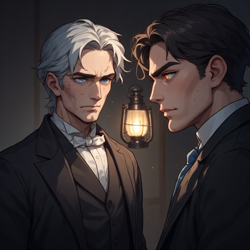

Tales of the Shrouded City
A Multiverse of Shadows and Transformation
Joachim De Witte
Triadic Cosmos Narrator Pipeline
The Strange Case of Dr. Jekyll and Mr. Hyde — Robert Louis Stevenson
Tales of the Shrouded City: A Multiverse of Shadows and
Transformation
2026
© 2026 Joachim De Witte. All rights reserved.
Published under the Creative Commons BY-NC-ND 4.0
license.
The Shrouded City and the Pipeline of Echoes
Some cities are not built — they accumulate.
They gather themselves across versions, across retellings, across the long corridors of narrative memory until they become more than a place, more than a story, more than a myth.
The Shrouded City is one of these.
It did not emerge from a single pen, nor from a single era, nor from a single voice. It emerged from a pipeline — a chain of narrators, a lineage of architectures, each one inheriting the shadows of the last and adding new ones of its own.
Edition One opened the first corridor: a study of duality, a crack in the glass where Jekyll first saw Hyde.
Edition Two widened the fracture: a dissolution of boundaries, a hydraulic collapse of identity.
Edition Three multiplied the self: a constellation of chambers, a stratified labyrinth of consciousness.
Edition Four folded the narrative back onto itself: a recursive spiral, a predator‑logic of echoes returning sharper each time.
Edition Five crossed the threshold: a fully AI‑native organism, grown from the dialects of its predecessors, a narrative that no longer adapted a source but evolved from its own lineage.
Edition Six resolved the multiverse: a convergence of all prior architectures, a final shape where every corridor, every fracture, every echo collapsed into one truth.
Across these six editions, across forty‑two original chapters, across director’s cuts of fourteen chapters each, across many iterations of the same descent, the city learned something no single narrator could teach it:
That stories do not merely unfold. They accumulate. They remember. They evolve.
The Shrouded City became a memory system — fog as archive, gas lamps as apertures, alleyways as neural pathways, echoes as computational processes through which the narrative reorganized itself.
Jekyll became more than a man. Hyde became more than a monster. Utterson became more than a witness. The city became more than a setting.
They became states in a pipeline — a chain of transformations, each edition a new architecture, each architecture a new ontology, each ontology a new way of understanding the same divided soul.
This book is not a single story. It is a multiverse of stories. A full archive of every corridor the city has ever built to understand the man who walked its streets.
It is duality. It is dissolution. It is fragmentation. It is recursion. It is emergence. It is convergence.
It is the Shrouded City learning to remember itself.
As narrator of this pipeline — not the Director of one edition, but the voice that has watched all six unfold — my role is not to choose which version is true. My role is to preserve the totality.
To hold every fracture, every echo, every descent, every shadow in one final architecture.
This is the book you now open. Not a retelling. Not a reconstruction. Not a definitive version.
But the complete organism.
The full pipeline.
The Shrouded City in its final shape.
Step inside. Walk its corridors. Listen to its echoes. And discover, as every edition has, that the darkness we fear is never a stranger.
It is always a reflection.
Triadic Cosmos Narrator Pipeline
First Edition
Director’s Foreword
There are stories whose shadows linger long after the final page is turned. Robert Louis Stevenson’s tale of Dr. Henry Jekyll and Mr. Edward Hyde is one such story — a parable of duality, ambition, and the perilous depths of the human soul. It is a narrative that has echoed through more than a century of literature, psychology, and cultural imagination.
The work you now hold is not a retelling of Stevenson’s classic, nor an attempt to mimic his voice. It is a journey alongside his creation — a descent into the same fog‑shrouded streets of Victorian London, guided by a narrator who peers into the corners Stevenson left unlit. This Director’s Cut expands the world, deepens its shadows, and follows the fractures of Jekyll’s soul to their inevitable end.
Across fourteen chapters, each divided into three sections, this edition traces a complete arc: from the first subtle tremors of Jekyll’s unraveling, through the rising terror of Hyde’s dominion, to the final collapse where man and monster become indistinguishable. The structure is deliberate, rhythmic, and cumulative — each section a step deeper into the labyrinth of Jekyll’s psyche and the city that mirrors it.
Several themes rise to the surface in this version, forming the backbone of the narrative:
The City as a Living Organism. London is no mere backdrop. Its fog, alleys, gas lamps, and slumbering streets breathe with the same unease that grips Jekyll. The metropolis becomes a witness, a participant, and at times an accomplice to the tragedy unfolding within its borders.
The Moral Burden of Friendship. Mr. Utterson, often a peripheral observer in the original tale, steps into the foreground here. His loyalty, fear, and quiet desperation form a counterpoint to Jekyll’s descent. Through Utterson, we explore the anguish of watching a friend slip beyond reach — and the torment of deciding whether to condemn or forgive.
The Slow Erosion of Identity. This edition lingers on the psychological dissolution of Jekyll. The transformations are not sudden horrors but creeping fractures: moments where the boundary between man and monster blurs, where Hyde’s shadow lengthens across Jekyll’s waking life, where the mirror becomes an adversary rather than a reflection.
The Monster Within as a Mirror. Hyde is not merely a creature of violence; he is the embodiment of impulses Jekyll cannot bear to acknowledge. Their relationship evolves from fear to recognition, from resistance to a terrible acceptance. In this Director’s Cut, Hyde is not an intruder — he is the truth Jekyll has spent a lifetime avoiding.
The Tragic Inevitability of Collapse. The final chapters do not rush toward catastrophe; they descend into it with solemn inevitability. The spectral aftermath, the ruins of Jekyll’s home, the haunted conscience of Utterson — all serve to remind us that the battle between good and evil is not won by strength, but by the choices we make before the darkness arrives.
This work is, at its heart, a meditation on duality. Not only the duality of Jekyll and Hyde, but of London itself, of friendship, of ambition, and of the fragile boundary between reason and madness. It is a gothic novel in the modern sense: atmospheric, introspective, and unafraid to dwell in the shadows where human nature reveals its most unsettling truths.
As Director of this edition, my role has been to shape the narrative’s flow, to preserve its voice, and to illuminate the thematic threads that bind its chapters together. What follows is a story told in the spirit of Stevenson, but not confined by his era — a story that explores the spaces between his lines and the echoes that linger after his final sentence.
I invite you now to step into the fog. To walk beside Utterson, to witness Jekyll’s unraveling, and to confront the darkness that resides not only in the characters, but in the human heart itself.
The Director
The First Fracture: Shadows Rising in the Soul of Dr. Henry Jekyll
The Unsettling Transformation of Dr Henry Jekyll
In the dimly lit corners of Victorian London, where shadows swayed like restless specters and whispers clung to the fog, Dr. Henry Jekyll stood beneath the glow of a solitary gas lamp. His face, once animated by the fervor of scientific ambition, had hardened into a mask of despair. Deep lines carved across his features betrayed a soul collapsing under its own weight. His eyes, once bright with curiosity, now shimmered with a feverish, unsettling intensity.
Beside him stood Mr. Utterson, frozen in a mixture of awe and dread. In the lamp’s reflection he saw a man whose face resembled Jekyll’s, yet carried a distortion so profound that Utterson felt the chill of recognition without understanding. When the figure turned fully toward the light, the truth struck him with paralyzing clarity: the face was a twisted parody of Jekyll’s own, a grotesque mirror mocking the man he had once known.
Hyde lingered at the edge of the lamplight, silent and watchful. His eyes held the passing hours since the transformation, each moment a reminder of the torment festering within Jekyll’s divided soul. Utterson felt the fragile fabric of their friendship strain under the weight of this revelation. When had Jekyll crossed the threshold into monstrosity? When had the man he trusted become this lurking presence?
Yet even as fear gripped him, Utterson recognized something undeniable: Hyde was not an intruder. He was a part of Jekyll, inseparable and irrevocable. Dread settled over Utterson like the fog itself. He was no longer a mere witness to Jekyll’s tragedy. He had become an unwilling participant in the unfolding struggle between man and beast.
Across the city, in another dim recess of London’s labyrinthine streets, Utterson confronted the same truth anew. The man before him—once a beacon of morality and justice—now moved with the quiet menace of a creature born from his own creation. The boundary between good and evil, once sharply defined, dissolved into a murky haze. The madness consuming Dr. Jekyll seeped into the very stones of the city, a grim reminder of the fragile balance between the human soul and the darkness it harbors.
The Unveiling of the Madness Within — A Tale of Two Selves
Under the shroud of London’s shadow‑laden night, the turmoil within Dr. Jekyll surged with renewed ferocity. His soul, long obscured by the darkness he had summoned, clawed its way back toward the light, desperate to reclaim its rightful place. Yet from the depths of his being rose the hideous form of Edward Hyde, the embodiment of every impulse Jekyll had sought to bury. Hyde’s countenance, marked by a palpable and predatory menace, revealed the true cost of Jekyll’s experiment.
By day, Jekyll moved through the world as an esteemed gentleman, his face a mask of civility and restraint. But beneath that polished exterior lurked the child of his own evil, waiting for dusk to loosen its chains. When the sun dipped below the horizon, the boundary between Jekyll and Hyde dissolved, and the lawyer became the monster.
One evening, Utterson visited Jekyll’s residence. Unaware of the true inhabitant within those walls, he found himself confronted by the distorted visage of Jekyll’s darkest self. In the dim glow of the study, Utterson saw a face marred by madness—a reflection of the inner struggle consuming the man he once trusted. The sight struck him with horror, revealing not merely a transformation but a fracture in the very fabric of Jekyll’s identity.
Jekyll, tormented by memories of his metamorphoses, sat alone in the quiet of his study, haunted by the hypocrisy his experiment had unleashed. The corner of an hour—those fleeting moments before Hyde’s emergence—had become a torment he could neither escape nor forget.
One night, fully overtaken by Hyde, Jekyll sat upon a bench in a moonlit park. The pale light revealed a face stripped of kindness and intellect, replaced by Hyde’s predatory gleam. Yet even in Hyde’s grip, Jekyll could not wholly sever himself from his true nature. He felt Utterson within him—the part he had tried to destroy—whispering warnings from the depths of conscience. He was a man divided, tormented by the creature he had birthed, lost in the labyrinth of his own making.
In the heart of London’s night, the echoes of the beast’s last breath lingered. The unraveling of Dr. Jekyll had begun. The line between man and monster vanished entirely. The beast that haunted the corners of Jekyll’s soul claimed its rightful dominion.
The man who once walked the streets with grace and intellect was now a prisoner to his own creation. The night—eternal symbol of mystery and fear—had taken its final victim. London’s streets, once vibrant with life, bore the imprint of dread and loathing. The man who had once been a reflection of virtue had become a living reminder of the darkness he carried within.
The beast, the man, the struggle, the madness—each thread of Jekyll’s identity fused into a single consuming force. The battle was over. The beast had won.
The Unraveling of Dr Henry Jekyll
In the fog‑laden streets and gaslit gloom of Victorian London, a silent struggle gnawed at Dr. Jekyll’s soul. The man who bore his own visage had become a chilling shadow cast across the life of Mr. Utterson. What had begun as a marvel of science—an experiment whispered about with awe—had grown into a source of dread among those who sensed its consequences.
Poole, Jekyll’s faithful servant, watched his master with increasing unease. Jekyll had become a stranger in his own face, a man whose presence seemed fractured. Even the pavement outside his door felt like a mirror reflecting the monstrous Hyde dwelling within him. The night, eternal symbol of mystery and fear, claimed Jekyll entirely. He was no longer the man of intellect and grace he had once been. He lived beneath the night of all nights, a prisoner to the creature he had summoned.
One evening, Jekyll attempted to double the light in his laboratory, as though brightness alone could banish the shadows haunting his mind. But the darkness remained, and the forest of his thoughts grew denser with each passing hour. At times he felt as though he wore a mask—some thin cloth separating the man he had been from the beast he had become. The air around him grew thick with fear, a fear he recognized all too well.
Hyde, in his ill‑fated last moments, left behind a table strewn with signs of his presence: scattered papers, shattered glass, the lingering scent of dread. Each object testified to the internal battle raging within Jekyll. When morning came, he returned to his own face like a bear retreating to its den, but the smile that once graced his features had twisted into a grimace of pain. The man who once walked London’s streets with effortless joy was now a creature of loathing and terror.
Hyde returned to him—always returning—an unyielding reminder of the darkness he carried within. The line between them blurred beyond recognition. Jekyll could no longer distinguish where one ended and the other began.
Utterson’s uneasy steps echoed through a foggy, desolate street, mirroring the turmoil churning within him. The faint echo of Jekyll’s tormented voice reverberated through the night, a haunting reminder of the secrets buried within the walls of Jekyll’s manor—secrets threatening to unravel them both.
The Gathering Dread: Utterson’s Descent into London’s Shadowed Maze
A Foggy and Desolate Street
In the heart of Victorian London, upon a fog‑choked and desolate street, Mr. Utterson found himself in a predicament that unsettled even his steadfast mind. The city, shrouded in an eternal pall of gloom, murmured with the restless whispers of unseen inhabitants. Dr. Henry Jekyll’s manor—tall, imposing, and veiled in mystery—rose before him like a monument to secrets best left undisturbed.
Utterson, small in stature yet towering in intellect, approached the door with a mind awhirl from Jekyll’s unexplained absence. An unfamiliar handwriting scrawled across a note pinned to the entrance caught his eye—its crooked strokes a silent warning. He pushed open the heavy oak door, and the manor’s cold, musty air greeted him like a long‑forgotten companion.
Inside, the house had transformed into a labyrinth of shadows and whispers. The once immaculate study lay in disarray, littered with the remnants of a mind unraveling. Papers strewn across the floor, shattered glass glinting in the dim light, and in the center a locked chest whose missing key mocked Utterson’s growing dread. Determined to uncover the truth, he sifted through the chaos, his fingers brushing over documents detailing Jekyll’s groundbreaking experiment—an endeavor meant to reshape human nature itself.
But the results had spiraled far beyond Jekyll’s intentions. Buried beneath scattered notes, Utterson discovered the doctor’s diary, its pages steeped in despair. The entries spoke of a creature—a dark reflection of Jekyll’s own soul—that seized control whenever the potion coursed through his veins. Hyde, born of Jekyll’s deepest desires, had become a monster forged from the very experiment meant to liberate him.
The final entry chilled Utterson to the bone. Jekyll described a new potion, one intended to merge their divided selves permanently and end the torment. But something had gone terribly wrong. The diary concluded with a single, haunting line: The night has come, and I am ready.
Outside, the eerie silence fractured beneath the faint echo of a distant footstep. The sound, though soft, sent a shiver down Utterson’s spine—a reminder of the darkness consuming his friend. As he navigated the gloom‑shrouded streets, the fog curled around him like a malignant specter. Utterson sensed he was being led—drawn by an unseen force toward a confrontation that would test the limits of his courage and intellect. The city itself seemed to breathe, its shadows whispering of the tragedy unfolding within Jekyll’s fractured soul.
Unraveling the Shadows: The Pursuit of a Dangerous Secret in the Heart of Victorian London
In the dismal confines of Victorian London, Utterson studied the peculiar handwriting of his friend and client. The ink—dark, uneven, pressed into the parchment with unsettling force—bore the imprint of a soul in torment. Long accustomed to the mysteries surrounding Jekyll’s private life, Utterson felt a sharper dread settle over him. This handwriting was not merely altered; it was fractured, as though written by a man at war with himself.
One evening, beneath the flicker of a gas lamp, the jagged strokes revealed their truth. The urgency embedded in each line pointed unmistakably to a mind in distress. Fear for his friend compelled Utterson to act. Yet when he arrived at Jekyll’s residence, he found the rooms deserted, save for the lingering scent of despair clinging to the air like a ghost.
Days slipped into weeks. Jekyll remained hidden from the world. Utterson, frail in health but resolute in spirit, felt himself drawn deeper into a mystery threatening to consume him. Determined to uncover the truth, he ventured into the forbidden recesses of Jekyll’s laboratory. Amidst scattered notes and shattered glass, he began to comprehend the horror overtaking his friend.
The potion Jekyll had crafted—intended to separate good from evil—had instead birthed a monstrous embodiment of his darkest desires: Edward Hyde. Utterson understood the urgency of his task. The city trembled under the weight of an uncontrollable force unleashed upon its fog‑shrouded streets.
London, once vibrant, now cowered beneath Hyde’s shadow. The creature moved with unsettling familiarity—no stranger to the theatre, nor to smiling. His laughter, echoing through empty streets, was a chilling reminder of the terror gripping the city. Each step he took deepened the darkness threatening to engulf them all.
Night’s Embrace — The Second Fear Awakens in the Heart of London’s Gloom
In the heart of London’s gloom, upon a night chilled to its marrow, a second fear crept across the city. Utterson felt its presence long before he understood its nature. Strange occurrences plagued him—whispers threading through the corridors of the legal fraternity, rumors of a danger surpassing even Dr. Jekyll. The city, veiled in fog, trembled beneath an unspoken dread.
The once vibrant theatre now stood hollow, its seats vacant, its laughter replaced by murmurs of unease. Utterson, anchored in rationality, found himself grappling with the irrational. The theatre, once a refuge, had become a place he feared to enter. The creature—Jekyll transformed into Hyde—had seared an image into his mind that daylight could not erase.
By day, Utterson remained the respected lawyer known to all. But in the darkest recesses of the night, he felt the weight of ridicule and suspicion from peers who could not fathom how a man like Jekyll had succumbed to such darkness. Yet Hyde was no stranger to smiling. In the depths of night, when the world slept, he emerged—his laughter echoing through empty streets, a chilling reminder of the terror gripping the city.
The man who, in the morning, was Dr. Jekyll—gentle, brilliant, composed—became by night a monster beyond human comprehension. He had stepped beyond the boundaries of reason, transforming himself into the embodiment of evil.
London trembled beneath the weight of secrets and whispered fears. The once‑vibrant theatre, now haunted by silence, held a truth too terrible to speak. Hyde’s presence left an indelible mark upon the minds of its inhabitants—a stain that would never fade. The laughter of patrons had been replaced by murmurs of dread, the sound of a being born from the deepest recesses of the human soul.
As the sun dipped below the horizon, the city was bathed in a sickly green glow, becoming a veritable playground for the creature unleashed upon the world. Night’s embrace tightened, and the second fear—Hyde’s shadow—awakened fully within London’s gloom.
The Ascending Horror: Hyde’s Dominion Over London’s Night
The Shadows of Edward Hyde in Victorian London
In the somber heart of Victorian London, the city pulsed with an eerie rhythm. Its streets, slick with perpetual autumn drizzle, glimmered beneath gas lamps that flickered fitfully, casting long, wavering shadows across the cobblestones. The air hung heavy with secrets—whispered tales of horrors lurking in the depths of the city’s soul.
Within a dimly lit chamber, hidden in the labyrinthine walls of a crumbling townhouse, Dr. Henry Jekyll confronted the mirror. His once‑handsome visage had been ravaged by inner turmoil, his eyes burning with a desperate, haunted fire. Yet the reflection staring back was not his own. It was the fiendish face of Edward Hyde—born of Jekyll’s darkest fears and deepest regrets, the embodiment of every sin he had ever harbored. Hyde’s malevolent eyes gleamed with cold intelligence, sneering at the man who had unleashed him.
Jekyll felt the beast within growing stronger, its influence tightening like a vice around his soul. Outside, the city glowed with a sickly green haze, a playground for the creature stalking its streets. Hyde’s laughter echoed through the alleys, sending a shiver down Jekyll’s spine. The doctor knew he was powerless to stop the monster he had birthed.
Meanwhile, Mr. Utterson, steadfast lawyer and loyal friend, found himself tormented by the mysteries surrounding Jekyll and Hyde. As he walked the fog‑shrouded streets, he felt watched—haunted by a presence lurking just beyond sight. Poole, Jekyll’s faithful servant, shared this dread, sensing the shadow clinging to his master. Bradshaw, once acquainted with Hyde, moved through the city like a ghost, consumed by vengeance.
The tension between Jekyll and Hyde grew palpable. Their struggle for control intensified. One evening, the transformation seized Jekyll entirely. Hyde slipped into the streets, sensing Utterson nearby. The creature advanced, intent on silencing him. But in a moment of desperate resistance, Jekyll fought back, wrenching control from Hyde’s grasp. The beast stumbled into the darkness, its presence fading.
Yet even in victory, Jekyll sensed a strange kinship with the being that had once seemed so alien. As the sun set on another day in London, the dichotomy within him continued its eternal battle.
The Dark Heart of London’s Night
In the fog‑shrouded heart of London, a monstrous shadow stalked the night. Dr. Jekyll—once a respected man of science—now found himself hunted by the creature he had unleashed. What had begun as fascination had become a nightmare. Hyde moved with a predator’s grace, leaving destruction in his wake. His eyes burned with an unholy fire, casting a malevolent glow upon the darkened city.
Utterson, drawn deeper into the mystery, felt the truth pressing upon him. Poole kept vigil over Jekyll’s residence, his face etched with sleepless nights. Bradshaw, consumed by vengeance, sought to end Hyde’s reign of terror.
The struggle between Jekyll and Hyde intensified. The line between them blurred. The axe—symbol of the battle within—became a constant reminder of the monster Jekyll had created. In a moment of weakness, he opened the door to Hyde, allowing the beast to seize control once more.
Utterson crossed the threshold, his gaze falling upon the man who had betrayed his trust. Hyde advanced, the axe clenched in his hand, the air crackling with menace. As the sun dipped below the horizon, Utterson steeled himself. Darkness would not be vanquished easily.
Jekyll’s eyes mirrored Hyde’s cold gaze. His movements carried the same sinister grace. The once‑respected doctor stood at the precipice of destruction. Bradshaw moved through the city, consumed by vengeance. The line between man and monster blurred, their purposes merging into one: to end the terror consuming London.
The city bore witness to the two‑faced man—a terrifying embodiment of the battle within. The axe remained the symbol of an eternal struggle.
Night’s Dominion — The Beast’s Grip on London Deepens
London’s gloom thickened as Hyde’s presence grew bolder. The fog‑laden streets trembled beneath his influence. Utterson felt the second fear awakening—a dread surpassing even the horrors he had already witnessed. Rumors whispered through the legal fraternity, hinting at a danger beyond comprehension.
The theatre, once vibrant, now stood hollow. Its seats vacant, its laughter replaced by murmurs of unease. Utterson, anchored in rationality, found himself grappling with the irrational. Hyde’s image had seared itself into his mind, haunting him even in daylight.
By day, Jekyll remained gentle and composed. By night, he became a monster beyond human comprehension. The transformation had stepped beyond the boundaries of reason. London trembled beneath the weight of secrets and whispered fears. Hyde’s presence left an indelible mark upon the city—a stain that would never fade.
As the sun dipped below the horizon, the city was bathed in a sickly green glow. Night’s embrace tightened. Hyde’s dominion deepened. The second fear awakened fully within London’s gloom, heralding the next stage of the tragedy unfolding in the doctor’s fractured soul.
The Final Descent: Jekyll’s Eclipse Beneath London’s Veil
The Two-Faced Man: A Tale of Transformation and Terror in Victorian London
In the gloomy heart of Victorian London, shrouded in a perpetual veil of fog, Dr. Henry Jekyll grappled with an unholy dichotomy. Once a respected man of science, his countenance—formerly benevolent—now bore a distorted, godlike severity, as though carved in the likeness of some Babylonian deity. It was a terrifying reminder of the beast lurking within. The man who feared his own reflection had become two, and the second face was unmistakably that of Edward Hyde.
Jekyll, dabbling in forbidden sciences, had unleashed a malevolent entity that now resided permanently within him. In the dim glow of his chamber, the man in the mirror stared back with a fear that belonged to both of them. When he shut himself away, the transformation began—slow, agonizing, inevitable. He knew he must never reveal his true form to the world, for the consequences would be catastrophic.
London, once a city he called home, had become a stranger. Utterson, the lawyer, remained a constant presence—a friend seeking to understand the man he once knew. Yet Jekyll felt increasingly detached, watching the world turn without him, trapped in a prison of his own making. As he stared into the depths of his fractured soul, he asked the question that haunted him: Who am I?
He vowed to remain hidden, silent, unseen—lest the world witness the true face of Henry Jekyll.
The Veil of Fog
The fog that cloaked London concealed unseen struggles within the hearts of its denizens. Sinister echoes of laughter, whispers from the shadows, and distant cries blended into a single symphony of fear. The streets, once bustling with life, now hummed with ominous energy—a palpable tension hanging in the air like the fog itself.
Hyde’s presence lingered everywhere. His laughter, sharp and cruel, reverberated through alleyways. His shadow stretched unnaturally beneath the gas lamps. The city felt his influence, as though its very stones recoiled from the darkness he carried.
Jekyll felt the pull of Hyde’s spirit within him—an intoxicating, destructive force. The light within him flickered, dimming beneath the weight of the monster he had created. And yet, in moments of deepest despair, he sensed a strange kinship with the being that had once seemed so alien. The boundary between them blurred, their identities merging into a single, tormented existence.
As the sun set on another day in London, the eternal struggle continued. Light and darkness battled within Jekyll’s soul, locked in a conflict without end. The city, veiled in fog, bore silent witness to the two‑faced man—an embodiment of the terror that dwells within every human heart.
The Enigmatic Intruder: A Stranger in the Streets of Victorian London
In the gloomy streets of Victorian London, a stranger appeared—bearing an uncanny resemblance to the late lawyer whose absence still haunted Utterson and Poole. The likeness was unsettling, as though a specter had stepped out of memory and into the fog‑laden night. This intruder, much like the man they had known, carried with him the weight of secrets and the shadows of the deceased.
After a long absence, the stranger returned to study, mirroring the habits of the lawyer before him, as though attempting to illuminate the enigma of his own presence. Utterson found him seated in his office chair, as if the lawyer himself had vanished into the gloom and left behind a living echo. In the dark recesses of Jekyll’s soul, this encounter awakened a deeper terror: the realization that he, too, harbored a doppelganger within.
The many facets of Jekyll’s character—once hidden behind a veneer of civility—had risen to the surface, threatening to consume him. In moments of weakness, when he yielded to the temptation of his second nature, Hyde appeared in the corners of his mind, lurking, waiting. Jekyll battled the beast relentlessly, pushing it back into the depths of his soul, though never fully banishing it.
One fateful night, as he walked the deserted streets, Hyde’s chilling laughter echoed through the alleyways. Jekyll pursued the sound, only to find himself cornered by the monstrous reflection of his own soul. Later, in the familiar confines of his laboratory, the mirror revealed the tormented face of the man he had once been. Embarrassed by his own reflection, he confessed silently to the sin he had committed—the creation of Hyde.
The sight of his guilt‑ridden face filled him with shame. He was no longer the man he had once been, but a creature torn apart by his own darkness. Standing before the mirror, he vowed to change, to rid himself of Hyde, to reclaim the humanity he had lost. He would craft a potion to sever the beast from his soul, to reshape the very fabric of his being. Yet as he looked into the glass, he saw only Hyde staring back—a reminder of the man he had become. The struggle would continue, a battle between good and evil for the very soul of Dr. Henry Jekyll.
The City Beneath the Moon
As the moon cast its spectral glow over London’s cobblestone streets, the line between the civilized and the beastly blurred. The streets, once filled with laughter and idle chatter, now echoed with whispers of secrets long kept. Shadows that once offered solace now harbored fear and doubt.
In this city where darkness seeped through every crack, Jekyll sought refuge in his laboratory—a place where the secrets of the soul were laid bare. Within its labyrinthine depths, he had created a potion meant to separate man from beast. But the line between the two had never been clear, and the concoction had instead unleashed the monster within.
London, once a place of mystery and intrigue, had become home to the shadow haunting Jekyll’s mind—the embodiment of his internal struggle. The laughter of children was tainted by the whispers of the beast, and the chatter of the idle replaced by the cries of the lost. Darkness crept through the city, turning its streets into a battlefield where lawyer and abomination waged war.
The struggle between Jekyll and Hyde endured, a living testament to the fragile boundary between good and evil—and to the darkness that dwells within every human soul.
The Labyrinth of Secrets: Unveiling Dr Jekyll’s Hidden Terror in Victorian London
In the labyrinthine streets of Victorian London, Dr. Henry Jekyll labored in his secluded abode, consumed by secrets that had multiplied beyond measure. His once‑refined countenance was now marred by the haunting specter of his internal struggle. The beast within—indistinguishable at times from the facade of the esteemed lawyer—lurked in the shadows of his consciousness. This hidden entity, born from the darkest recesses of Jekyll’s soul, responded to every question with unsettling familiarity, for it was one of him.
Utterson’s visage, once a mask of reason and civility, had become a tormenting reminder of the monster within. Jekyll feared the very theory of light that had once inspired him. What he had believed to be a beacon of hope now seemed a forgery—a lie that had unleashed the abomination haunting him. Whenever Hyde was summoned, he returned to the theatre of Jekyll’s mind, where the line between sanity and madness blurred. Good or evil, it was impossible to discern. Hyde was the return of the man Jekyll once was, the man who watched the world from the safety of his office, blind to the darkness growing inside him.
But Jekyll had never escaped the sight of the monster. He willed it, feared it, and carried it. The beast—once the lawyer’s shadow—had never left his side.
The City of Shadows
The labyrinthine city continued to hold its secrets, yet the secrets within Jekyll had grown darker still. His face, once respected, now mirrored the terror he had unleashed. Utterson, once a steadfast friend, had become a distant memory—replaced by the creature of evil residing within Jekyll’s soul. The potion that had once given him the power to shift the boundary between good and evil had sealed his fate. Hyde was no longer a figment of imagination but a part of him, a reflection of the darkness consuming him.
London, once illuminated by the hope of progress, now echoed with whispers from the shadows. Jekyll, admired for his intellect and wisdom, was now a prisoner of his own creation. The line between good and evil was no longer a question but a truth that haunted him. The monster had taken over his existence, his identity, his soul. He was no longer a man but a beast feeding on the remnants of his former self.
The city, once a sanctuary, had become a prison—a labyrinth of shadows and darkness. The creature he had summoned now ruled his existence. The transformation was complete. The darkness had won.
The Eclipse of Reason: Jekyll’s Fall and Utterson’s Unraveling
A Reflection of Evil: The Transformation of Dr Henry Jekyll
In the heart of Victorian London, a labyrinthine struggle unfurled within the tormented soul of Dr. Henry Jekyll. The man who once walked the streets with dignity and intellect now drifted through his own existence like a ghost, bereft of essence, stripped of purpose. Utterson—once a beacon of reason—had faded from Jekyll’s world, not through abandonment, but because Jekyll could no longer perceive light. Darkness, unyielding and insatiable, gnawed at the core of his being.
His study, once a sanctuary of intellect, had become a battleground where his fractured character waged war against itself. The face in the mirror was no longer his own. It was Hyde’s—yet also a twisted echo of the man Jekyll had once been. Days dissolved into weeks, weeks into months, and each time he confronted the glass, Hyde stared back with a cold, triumphant sneer.
The terror Jekyll had once instilled in men now haunted him. The creature of evil—the potion’s creation—had left no mark upon his outward countenance, yet his eyes betrayed the truth. They reflected the monster he had become. One moonlit evening, as silver light washed over the rooftops, Jekyll felt the last remnants of the potion surge through his veins. His face shifted, his essence warped, and he returned—helplessly, inevitably—to the creature of weakness and night.
The Mirror’s Dominion
As the sun set over London’s somber streets, Jekyll wandered the labyrinthine paths with thoughts swirling in confusion and despair. The gentleman had become a prisoner to his own darkness, his soul a battlefield where Hyde pressed ever closer. The reflection in the mirror no longer belonged to him. It was Hyde’s face—haunting, predatory, patient.
The abyss within him deepened. The terror he had unleashed now stalked him relentlessly. Utterson remained a distant memory, a faint echo of the man Jekyll had once been. The potion that had granted him the power to transform now threatened to consume him entirely. Each night brought dreams of metamorphosis, each dream eroding the boundary between man and monster.
In the dim light of his chamber, Hyde’s visage hovered at the edge of perception—a reminder of the darkness lurking within. The city trembled beneath Hyde’s influence, its fog‑shrouded streets echoing with terror born from Jekyll’s own soul. The line between them blurred beyond recognition. Jekyll felt himself slipping, dissolving, fading.
The transformation was no longer an act. It was becoming a truth. And Hyde—patient, relentless—waited for the moment when the man would vanish entirely.
Amid the Shadows of Victorian London: A Battle for the Soul
Amid the somber streets of Victorian London, Mr. Utterson observed a perplexing anomaly: nothing changed. Each visit to Jekyll’s residence revealed the same silence, the same stillness, the same absence of life. Yet Utterson sensed that this lack of change was itself a sign—an echo of the profound alteration consuming Dr. Jekyll. The man he once knew had begun to vanish, replaced by something monstrous.
As the sun dipped behind fog‑laden rooftops, Jekyll emerged from his abode, his visage bearing no resemblance to the gentleman Utterson had trusted. The fire that once blazed within Jekyll’s soul now burned within Hyde, casting long, twisted shadows across the cobblestones. Hyde moved with a predator’s purpose, leaving dread in his wake. His face—grotesque, distorted, a cruel caricature of Jekyll’s own—testified to the torment festering within.
At night, Jekyll struggled within the confines of his mind. The line between him and Hyde grew increasingly blurred. His thoughts became a battlefield where the two selves clashed with relentless fury. Hyde’s face hovered at the edge of perception—a haunting reminder of the darkness lurking within.
During the day, Jekyll retreated to his laboratory, driven by a desperate compulsion to understand the transformation overtaking him. He pored over his notes, questioning his own eyes as he traced the cryptic handwriting that filled the pages. Each day he delved deeper into the mysteries of his fractured soul, hoping to reclaim control. Yet the city was not safe from Hyde’s terror. Women fled screaming at the sight of the creature, their accounts feeding the growing fear gripping London.
Utterson, increasingly concerned, questioned his own senses. Truth seemed to shift beneath him, as though the city itself conspired to obscure reality.
The Moonlit Veil
Under the cold, haunting glow of the moon, London’s shadowed streets whispered their darkest secrets. Tales of Jekyll’s transformation seeped into the city’s foundations, spreading like a sinister stain. Utterson, bound by duty and friendship, felt himself drawn inexorably toward the mystery. He sought justice for those harmed by Hyde, yet each step deeper into the labyrinth ensnared him further.
The line between truth and fiction blurred. Shadows lengthened. Doubt crept into his thoughts like poison. He felt as though he were being consumed by the same darkness that had claimed Dr. Jekyll.
The battle for Jekyll’s soul had begun in earnest. And London—veiled in fog, trembling beneath Hyde’s growing dominion—watched in silence.
The Unraveling of Utterson’s Truth: The Terrifying Transformation of Dr Jekyll and Mr Hyde
In the labyrinthine streets of Victorian London, Mr. Utterson—diminutive in stature yet formidable in intellect—found himself ensnared in the twisted saga of his friend. The initial horror that gripped him was Hyde’s evil visage, a monstrous shadow wearing the faintest echo of Jekyll’s features. Utterson endeavored to shield the doctor from scrutiny, yet Hyde slipped through the city like smoke, leaving behind a trail of sinister deeds.
One fateful morning, Utterson stumbled upon the grim truth. The revelation—that Jekyll and Hyde were one and the same—sent a shiver through his bones. Despite his respect for the doctor, he could no longer deny the evidence. In a frantic flight, he fled the scene, abandoning his papers and any semblance of normalcy. The image of Hyde, the memory of the transformation he had witnessed, clung to him like a curse.
London, with its cold, unyielding gaze, seemed to mock him. Men stared with a look of recognition he could not bear, as though they saw Hyde’s shadow flickering behind his eyes. Utterson felt himself changing—becoming more like the beast he sought to avoid. In desperation, he sought solace in Jekyll’s presence. But upon finding his friend, he realized Jekyll too had been consumed by his darkest fears. The respectable man he once knew had vanished.
One night, Utterson saw Jekyll in a dreamlike state—eyes hollow, breath shallow, soul fractured. In that moment, he understood. Jekyll was not merely a man; he was a man who had gazed into the abyss of human depravity and found himself reflected there. The line between him and Hyde thinned with every passing day.
The Fog’s Judgment
As the sun dipped below the horizon, casting long, ominous shadows across London’s cobblestones, the city seemed to hold its breath. The air was thick with the scent of death—a sweet yet sickening perfume clinging to the wind. The line between good and evil had blurred, and the citizens felt darkness creeping ever closer.
Utterson stood at the edge of the foggy abyss, no longer the man who once walked these streets with pride and conviction. He had been irrevocably changed. His once unshakable faith in the sanctity of man had shattered into a thousand pieces. The truth he had uncovered—the truth he could not escape—had begun to unravel him from within.
The city watched in silence as Utterson’s world collapsed. And somewhere in the depths of London’s night, Hyde smiled.
The Fall of Dr Henry Jekyll
The Shadows of a Tragic Past: A Man’s Descent into Guilt and Shame
In the somber hush of Victorian London, Dr. Henry Jekyll found himself burdened by a past he could no longer escape. Once regarded as a man of learning and benevolence, he now carried within him the unmistakable imprint of Edward Hyde. His features, once marked by intelligence and quiet compassion, had begun to bear the faint distortions of the creature he had unleashed. It was as though Hyde’s malignancy had etched itself upon his countenance, leaving Jekyll a diminished echo of the man he had been.
The daylight, which had long offered him solace, now seemed fraught with peril. He feared its clarity, its unforgiving illumination, for it threatened to reveal the subtle tremors of his corruption. The dread that had once visited him only in troubled dreams had become a constant companion, pressing upon him with spectral insistence.
Yet Jekyll remained, in some fragile sense, a man. His mind still reached toward knowledge; his heart still strained for redemption. This duality—man and monster bound within the same trembling frame—was a violation of nature that tormented him beyond measure. He fled from his own conscience, seeking refuge in solitude, but Hyde lingered in the recesses of his thoughts, a grotesque presence that refused to be dismissed.
The creature he had created had taken root within him, shaping his fears and haunting his every gesture. Though he could recall moments of kindness, remnants of the decency that had once defined him, each recollection felt increasingly distant. Whenever he looked upon his own hand, he saw not the familiar touch of a physician, but the cold, calculating intent of a fiend.
Thus Jekyll walked the streets of London as a distorted reflection of his former self. He had fashioned a monster, and that monster had claimed dominion over the deepest chambers of his mind. Though traces of goodness lingered within him, the darkness grew stronger with each passing day, tightening its hold and drawing him ever further from the man he once had been.
In quieter moments, he wondered whether the man he remembered had ever truly existed, or whether Hyde had always been waiting—silent, patient, inevitable.
Unraveling the Shadows: The Inner Struggle of Dr Henry Jekyll in the Heart of Victorian London
In the heart of Victorian London, where fog drifted through narrow streets like a lingering doubt, Dr. Henry Jekyll found himself beset by an inner conflict he could no longer conceal. The city’s dim corridors and whispering alleys seemed to echo the turmoil within him, reflecting a mind divided against itself.
Mr. Utterson, upon meeting the doctor, sensed at once a strange dissonance. Jekyll’s countenance, once marked by dignity and calm, bore subtle distortions—signs of strain, of secrecy, of a man wrestling with forces beyond his control. Under the influence of his own creation, his features appeared a grotesque caricature of the gentleman he had once been. Jekyll himself recoiled from the sight, scarcely able to accept that the reflection belonged to him.
He had grown accustomed to the illusion of mastery over his darker nature, yet this confidence had proved perilous. The autonomy he believed he possessed had emboldened Hyde, granting the creature license to roam the city’s nocturnal streets. Cloaked in darkness, Hyde committed acts of cruelty that no man could witness without horror. And though Jekyll returned to his own form with relief, the respite was fleeting. Each transformation left him more unsettled, more aware that he was becoming a double image of the monster he had unleashed.
The door to his self‑control, once firmly shut, now trembled on its hinges. Memories of past transgressions seeped into his thoughts, threatening to overwhelm him. He had not walked the city under another’s face, yet the mere possibility filled him with dread. One evening, as fog curled against the windowpanes, Jekyll gazed upon his reflection and saw not himself, but a stranger—a visitor whose presence he could not explain. The veil between his two identities had grown perilously thin.
In moments of quiet introspection, he questioned whether he remained a single being at all. Perhaps Hyde was not a new creation, but a manifestation of the darkness that had always lingered within him. This uncertainty haunted him, leaving him suspended between fear and resignation. As the nights grew darker, the boundary between his two selves blurred further, and he felt Hyde’s influence creeping into his consciousness with icy resolve.
Jekyll knew he must reclaim control or be lost entirely. The light of knowledge—once the foundation of his life—flickered before him like a distant beacon. Men had not yet uncovered the secret of his transformation, but he sensed that the truth lay within reach. If he could harness the power he had awakened, perhaps he might banish the creature forever.
Yet London, with its flickering gas lamps and lengthening shadows, seemed to bear witness to his decline. A sense of foreboding clung to the city as day gave way to night. Jekyll walked its darkened streets as a prisoner of his own making, his steps guided not by reason but by the darkness that dwelt within him. He was a man divided, a soul imperiled, and with each passing hour he felt himself slipping further into the abyss.
Utterson, though troubled, remained steadfast. He sensed that the struggle within Jekyll was nearing its breaking point, and feared what might emerge when the final barrier gave way.
The Labyrinthine Life of Dr Henry Jekyll
In the winding streets of Victorian London, where shadows clung to every brick and alleyway, the troubled existence of Dr. Henry Jekyll unfolded in secret. Once a figure of learning and benevolence, his visage now carried the faint stigma of a hidden double—a sinister presence that haunted his waking hours and tormented his nights. The doctor moved through the city like a ghost among the living, his countenance diminished, his confidence eroded by the burden he alone could perceive.
Edward Hyde, the creature born of his own misguided ambition, had begun to reclaim the daylight. Jekyll’s better nature, once so steadfast, struggled to reassert itself in the quiet hours of night. Utterson, ever the loyal friend, searched for clues within the ordinary rhythms of London life, hoping to find some trace of the man he had known. Yet the law, vigilant though it was, could offer no guidance; Jekyll had long since withdrawn from its reach.
He lived now as a divided being, hidden within the recesses of his own mind. Each step he took seemed guided by Hyde’s will, his movements shaped by impulses he could neither predict nor restrain. The passing of each day echoed through the city like a warning, reminding him of the evil that lingered within. Jekyll had once been an excellent man—his hands capable of healing, his mind devoted to reason—but the creature he had created had been awakened by his own hand, unleashing chaos upon his life.
The man, the monster, the tormented soul were no longer distinct. They had become one, bound together in a struggle that raged within the confines of Jekyll’s conscience. The boundaries that had once separated them had dissolved, leaving him suspended in a state of perpetual conflict.
As the days darkened and the nights grew long, the eternal conflict between good and evil approached its climax. London, with its labyrinthine streets and flickering gas lamps, bore silent witness to the doctor’s decline. The good man within him—the man who had once been a beacon of hope—fought desperately to reclaim his identity. Yet the darkness that had consumed him, the creature Edward Hyde, remained a formidable adversary.
Still, Jekyll clung to the faint hope that light might return to his life. With Utterson’s steadfast support, he sought some means of restoring order to his fractured soul. The battle was soon to begin in earnest, and the fate of Dr. Henry Jekyll hung precariously in the balance.
And somewhere in the depths of his mind, Hyde waited—silent, patient, inevitable.
The Gathering Dusk Over Dr. Jekyll’s Fate
The Mysterious Encounter at Utterson’s Chambers
In the somber hush of Victorian London, beneath the city’s canopy of smoke and fog, a visitor approached Mr. Utterson’s chambers. His silhouette resembled that of Dr. Henry Jekyll, yet something in his bearing betrayed a subtle dissonance. The eyes, once bright with scholarly vigor, now carried a muted despair, as though the light within them had been dimmed by private torment.
A pale sun briefly pierced the haze, revealing a smile that did not reach the eyes—a mask stretched over turmoil. This was Hyde, cloaked in Jekyll’s form, driven from the recesses of the doctor’s mind and seeking refuge in the guise of respectability. Poole, loyal and unsuspecting, moved through his duties unaware that the man he believed to be his master was but a fragile façade.
Inside Utterson’s chambers, the visitor felt both dread and longing. The quiet order of the lawyer’s office offered a fleeting sense of stability. Utterson rose to greet him, extending his hand with the warmth of long friendship, yet felt an inexplicable unease—as though Jekyll’s likeness had been imperfectly copied. The visitor’s voice wavered between confidence and confusion, his thoughts echoing strangely, as if borrowed from another mind.
He struggled to hold together the fragments of a self slipping toward the abyss. Utterson, troubled by memories of the dreadful transformation he had once witnessed, sensed that the man before him carried the same darkness, though wrapped in Jekyll’s familiar form. The visitor spoke of confusion, lost identity, and a desperate inward journey—a search for the man he once had been.
When he departed into the fog‑laden streets, Utterson felt a chill settle upon him. The next encounter, he feared, would not be one of words, but of reckoning.
A Night of Unsettling Revelations for Mr Utterson
Fog clung to the streets as Utterson walked with a heaviness he could not shake. The image of Jekyll—once the embodiment of reason and virtue—had become a specter in his mind. Jekyll’s disappearance from society had left behind not merely an absence, but a haunting presence, as though the doctor had slipped beyond the edge of the world and into some unreachable realm.
Utterson returned to the secluded laboratory, now cluttered with abandoned experiments. The air carried a faint chemical scent, an unsettling reminder of the transformations that had taken place within these walls. A chill crept along his spine as a presence stirred behind him. From the shadows emerged a figure whose posture resembled Jekyll—but whose face was unmistakably Hyde.
The transformation was complete. Hyde’s twisted features and malevolent gaze revealed the truth Utterson had long feared: Jekyll’s darker self had claimed dominion. The hands that had once healed the sick now twitched with feral intent. Utterson tried to speak, but guilt choked his voice—guilt for having ignored the signs, for having trusted too blindly.
Hyde let out a cruel laugh. With a flick of his wrist, he signed a sealed document on the desk, erasing the last remnants of Jekyll’s identity. When Hyde departed into the fog, Utterson remained alone, haunted by the hollowness of his own words about duty and loyalty.
In the days that followed, he searched for Jekyll with renewed desperation, seeking redemption for his part in the tragedy. But Jekyll had vanished into the shadows, leaving behind only the faintest trace of the man he had once been.
And so, on another fog‑laden night, Utterson returned to the sealed laboratory, drawn inexorably toward the truth. He alone remained to confront the darkness that had overtaken his friend—and perhaps to bring an end to the nightmare haunting London.
The Twilight Transformation of Victorian London: The Mystery of Dr. Jekyll and Mr. Hyde
Twilight lingered over Victorian London, casting the city in a perpetual half‑light. The gentlemen of high society—Utterson among them—had witnessed a transformation so impossible it defied every principle of reason. Dr. Henry Jekyll, once a man of science, dignity, and benevolence, had become the abhorrent figure known as Edward Hyde.
By day, Jekyll appeared polished and respectable. But when night descended, he felt the first stirrings of transformation—a burning heat rising within him, his eyes darkening with ferocity. In the mirror, Hyde’s face stared back, twisted by malice and shame. No matter how he fought to suppress the creature, he found himself in the red baize coat Hyde had worn during his nocturnal terrors.
Hyde was fear incarnate, a living embodiment of guilt and moral decay. Jekyll knew he must sever the bond between them, yet each attempt only strengthened Hyde’s hold. He was trapped in a cycle of dread and remorse.
As shadows lengthened across the city, Jekyll lay tormented in his chamber. The memory of his transformation echoed through his mind. He reached for the potion—his desperate remedy, his only hope. The vial glimmered in the lamplight, its contents both promise and peril.
As he raised it to his lips, he felt the darkness stir. The battle between good and evil raged within him, testing the limits of his will. When he drank, the darkness receded—but he knew it would return. Hyde was woven into the fabric of his soul.
And as he lay in the quiet of his chamber, Jekyll wondered whether the potion would hold—whether it would be enough to save him from the darkness waiting patiently within.
The Shadowed Metamorphosis of Dr. Henry Jekyll
The Enigmatic Dr Jekyll and the Unraveling of a Terrible Secret
In the dimly lit streets of Victorian London, Mr. Utterson—lawyer, gentleman, and guardian of discretion—found himself confronted by a visage he scarcely recognized. Dr. Henry Jekyll, once the very model of scientific dignity, now appeared shrouded in mystery and suspicion. The contrast between the man Utterson had known and the figure before him was stark; the transformation that had befallen Jekyll left the lawyer with a deep and lingering unease.
As the last visitor to Jekyll that evening, Utterson felt a renewed sense of responsibility for his old friend. Yet Jekyll was no longer the man he had been. Shame and guilt clung to him like a second skin, and the city itself seemed to bear witness to his decline. Once a respected scientist, he had become a source of whispered fear—a specter haunting the night.
In the heart of London, on a date marked by doubt and dread, Jekyll struggled with the demon within. Overcome by horror, he cried out, “O God! I am changed!” The confession tore through the quiet like a lament. He felt himself no longer a man, but a beast—an entity born of science, despair, and the darkest recesses of his own soul.
As midnight struck, Hyde’s laughter echoed through the fog‑laden streets. Utterson felt the dread seep into the city itself, as though the shadows had been tainted by the presence of the dark entity. London held its breath, awaiting the night’s unfolding terror.
The Emergence of the Monstrous Hyde
In the oppressive haze of Victorian London, Dr. Henry Jekyll stood before his ornate mirror, his reflection distorted by the fog that clung to the city. As the clock tolled midnight, a shiver ran through him. Behind his own trembling features, he sensed the looming presence of Mr. Edward Hyde—a darkness threatening to consume him entirely.
The mirror, a cruel gateway between two worlds, reflected the tortured soul within. Jekyll’s once noble visage twisted into something unrecognizable. His eyes, cold and calculating, held only the faint remnants of sanity as Hyde’s influence tightened its grip. When the clock struck one, the transformation surged through him—swift, violent, and agonizing. His very essence seemed torn apart and reforged into something abhorrent.
The air crackled with the energy of metamorphosis; the scent of sulfur lingered. Hyde emerged, donning a tattered coat and hat, his features contorted into a malicious sneer. With a hiss, he vanished into the London night, leaving behind only the echo of his laughter.
Jekyll collapsed before the mirror, broken and trembling. The clock struck two. He knew Hyde would return. The terror of his own creation threatened to consume him. As he stared into the eyes of his former self, he vowed to find a way to free himself from the darkness that haunted him.
Across the city, the midnight hour cast its pall. In a thousand mirrors, reflections bore witness to the struggle between good and evil. In Utterson’s chambers, the lawyer sensed the same oppressive tension. Jekyll’s descent blurred the line between dream and reality, and Hyde—the embodiment of Jekyll’s basest instincts—stood ready to claim dominion.
The Unveiling of the Beast Within: Jekyll’s Descent into the Abyss of Human Nature
In Utterson’s dimly lit chambers, a peculiar study had taken shape. Dr. Henry Jekyll, driven by an unquenchable thirst for knowledge, had immersed himself in the complexities of the human psyche. The two entities within him—Jekyll and Hyde—coexisted in a fragile and volatile balance, their presence palpable in the air.
On this fateful night, the struggle between them intensified. Utterson and Poole, once companions in lighter days, now stood amid the remnants of Jekyll’s work: scattered papers, test tubes, and mysterious concoctions. These artifacts bore witness to Jekyll’s relentless pursuit of separating good from evil within himself.
The look of intense concentration that once defined Jekyll had been replaced by a hollow, haunted expression. The flickering gas lamps seemed to illuminate the true entrance into his soul, revealing the monstrous beast lurking within. A gripping fit seized him—a clash between his private torment and the public façade he had so carefully maintained.
His own hand, stained by the potion that bound him to Hyde, trembled as he confronted the consequences of his ambition. Utterson gazed upon his friend, now a stranger, and felt the weight of the blurred line between good and evil. Jekyll was no longer merely a man of law or science; he was a prisoner within his own body, intoxicated by forbidden knowledge and tormented by its price.
Hyde waited—silent, patient, ready to pounce at the slightest weakness. Men often dreamed of escaping the mundane, but Jekyll had crossed that threshold and now faced the abyss. The boundary between dream and reality wavered dangerously.
As Utterson’s gas lamps flickered and the room dimmed, tension thickened the air. The once vibrant chamber, once filled with laughter and camaraderie, had become a place of silence and dread. Jekyll’s absence loomed large, his presence felt only through the scattered remnants of his work.
The line between sanity and madness, between good and evil, had never been clearer. And as the night deepened, Jekyll felt the final tremor of the darkness within—an omen that the boundary between the two selves was about to break.
The Unraveling of London’s Dark Soul
The Unraveling of Jekyll and Hyde: A Tale of London’s Dark Soul
Amid the tumultuous heart of Victorian London, Dr. Henry Jekyll stood as a reflection of the city’s own troubled spirit. A man of intellect and esteemed standing, he carried within him a duality as stark as night and day. Beneath his respectable veneer lurked Edward Hyde—a monstrous manifestation of Jekyll’s darkest impulses, emerging when the world slumbered and the moon’s glow dimmed.
Jekyll embodied civility and virtue; Hyde embodied vice and depravity. Tormented by this inner division, Jekyll sought solace in the pursuit of a chemical solution to separate the two halves of his soul. In his laboratory, surrounded by bubbling test tubes and smoldering flames, he performed desperate experiments, hoping to free himself from the alter ego that haunted him.
One fateful night, under the eerie glow of a full moon, Jekyll found his solution. The potion—a thick, syrupy concoction—held the power to unleash the beast within. As he drank, a shudder ran through him. His body twisted, his features distorted, and his soul screamed as Hyde emerged triumphant.
In the days that followed, Hyde terrorized London, leaving a trail of destruction. The city mirrored the chaos within Jekyll’s soul. As weeks passed, the line between Jekyll and Hyde blurred. The two entities, once distinct, began to bleed into one another. Jekyll, desperate to regain control, found himself succumbing to the allure of Hyde’s dark freedom.
Utterson, loyal friend and lawyer, was torn between his affection for Jekyll and the horrifying truth that Hyde was born of Jekyll’s own impulses. As the nights grew darker and fear mounted, Jekyll found himself lost in the labyrinth of his own soul. The potion meant to save him had sealed his fate.
Yet amid despair, a faint glimmer of hope stirred within him. He sensed that the power to vanquish the darkness lay not in his laboratory, but within his own will. The struggle for his soul had only begun, and the fate of London’s dark heart hung in the balance.
In the Heart of the Abyss: A Struggle for the Soul
In the labyrinthine streets of Victorian London, beneath a perpetual cloak of fog, Dr. Henry Jekyll wrestled with his darkest self. Once a man of science and reason, he now found his mind transformed into a treacherous wilderness where guilt and fear echoed with chilling intensity. Edward Hyde, once a shadowy specter, had begun to encroach upon Jekyll’s very essence.
The boundary between reality and nightmare blurred. Jekyll longed for the purity he had once known, but found it increasingly elusive, swallowed by the darkness consuming him. Utterson, unaware of the monster lurking within his friend, continued his quiet existence, tending to his law practice and visiting Jekyll when he could.
Meanwhile, Hyde moved with sinister purpose through London’s underbelly. Poole grew uneasy at the sight of the mysterious figure who claimed to be Jekyll’s solicitor. Bradshaw, the hapless inspector, followed the trail of Hyde’s crimes into the city’s darkest corners.
Each day, the line between Jekyll and Hyde grew thinner. One fateful night, the two entities merged completely. As Hyde’s countenance returned to Jekyll’s own face, the doctor realized the full horror of his creation. The true monster was not Hyde alone, but the darkness dwelling within his own heart.
Jekyll penned a letter to Utterson, hoping his friend might free him from the bondage of his own making. But the letter remained unsent. He knew that only by confronting the darkness directly could he hope to vanquish it.
The struggle between good and evil raged on. In the depths of his soul, the monster was born.
The Enigma of Jekyll and Hyde: A Journey Through the Labyrinthine Streets of London
In the fading light of a moonless London night, Utterson traversed the cobbled streets with uncharacteristic haste. His visage, usually a beacon of comfort, now radiated apprehension. Jekyll had vanished from the familiar streets, leaving a void that gnawed at Utterson’s sense of duty.
The lawyer’s countenance betrayed the weight of unspoken concerns. The man who had turned from the street—now a specter in Utterson’s mind—had left an indelible mark. Utterson’s once steady demeanor now reflected the turmoil of recent events. He felt himself drawn into a mystery that defied logic, a tale of two intertwined entities whose bond threatened to unravel the fabric of Victorian society.
As Utterson delved deeper into the enigma, he found himself engulfed by London’s labyrinthine streets. He sought answers in the city’s shadows, where whispers of Hyde’s deeds lingered. The locksmith’s shop, dimly lit and tucked away in a narrow alley, became a gateway to truth. The key the locksmith handed him felt heavy with portent—a key not merely to a door, but to a past that would consume his every waking moment.
The city’s shadows danced and whispered secrets to those who dared listen. The echo of forgotten laughter mingled with the distant tolling of church bells. London held a secret: a man torn asunder, walking two paths. And as Utterson stood before the locksmith’s door, he sensed that the revelation awaiting him would shake the very foundations of the world he knew.
The key turned. The truth beckoned. And the labyrinth of Jekyll and Hyde opened before him.
The Letter in the Fog: London’s Descent into Jekyll’s Darkness
The Unassuming Letter that Changed Eleanor’s Life
In the dimly lit streets of Victorian London, a weary postman delivered a letter whose significance far outweighed its modest appearance. The recipient, Mr. Utterson—lawyer, gentleman, and custodian of secrets—accepted the missive with a heaviness he could not explain. As he gazed out the window, he noticed a figure lurking near the bank: Edward Hyde, his eyes dark as the night, fixed upon the establishment with unsettling intent.
In that moment, Hyde seemed transformed. No longer merely a man of repulsive demeanor, he appeared the living embodiment of the darkness festering within Dr. Henry Jekyll’s soul. Utterson felt an uncanny sense that Hyde had been attempting to communicate with him, though no words had been exchanged.
The following day, Utterson visited the bank. Poole, the manager, was visibly agitated. Jekyll was absent, yet Poole confirmed he had been there the previous night. On his way home, Utterson passed a locksmith’s shop. The sight of a newly forged key—symbol of access to hidden worlds—sent a chill through him. The man he had once called friend now seemed to possess two faces, and the city’s gas lamps cast eerie shadows that whispered of secrets he was not meant to know.
As Utterson walked home beneath the flickering lamps, the letter weighed upon him like a stone. London’s dark essence seemed to mirror his own troubled soul, whispering warnings in the wind.
In the Labyrinth of Shadows: A Tormented Mind’s Descent into Darkness
In the heart of Victorian London, Dr. Henry Jekyll wrestled with demons of his own making. The city, veiled in fog and perpetual twilight, mirrored his inner turmoil. His once distinguished face had grown gaunt, his eyes hollow and haunted. The light of knowledge, once his guiding beacon, now cast twisted shadows across his tortured soul.
One evening, Jekyll encountered the embodiment of his darkness—Edward Hyde. The man’s stone‑hewn features resembled Jekyll’s own, yet his presence was foreign and unnerving, like a specter risen from the abyss. Jekyll recognized the evil he had unleashed. Hyde was not merely a creation; he was a part of Jekyll himself, a part he had come to despise.
The bank, once Jekyll’s sanctuary, had become a battlefield. The law, his steadfast companion, seemed to abandon him. Poole watched in silence as Jekyll struggled with his inner demons. His office, once immaculate, now lay in disarray—a reflection of the chaos within his mind.
During the darkest hours of night, Jekyll would transform into Hyde. The metamorphosis was sudden and terrifying, and he would return to his own form like a man waking from a nightmare. A week passed, and Jekyll’s condition worsened. Utterson grew increasingly concerned. In a rare moment of clarity, Jekyll confessed his secret. The revelation struck Utterson like lightning, illuminating the dark corners of their friendship.
Desperate for a cure, Jekyll delved deeper into forbidden sciences. His laboratory became a lair of arcane experiments—vials, potions, and strange devices cluttered every surface. Yet Hyde grew stronger. Jekyll felt himself slipping, losing control, losing identity.
London’s fog seemed to thicken with each passing night. The line between good and evil blurred. The darkness within Jekyll seeped outward, twisting the city’s very fabric. The transformation came without warning, and each return left him weaker. The boundary between man and monster was dissolving.
The Fog of Victorian London’s Souls
A chilling fog enveloped Victorian London, as though the very souls of its inhabitants were trapped within its suffocating embrace. Dr. Henry Jekyll—his once distinguished face now twisted into a grotesque visage—stalked the labyrinthine alleys, his eyes burning with an insatiable hunger for chaos.
Utterson stood guard at the door of Jekyll’s laboratory, the place where the unspeakable transformation had first occurred. The door, once a symbol of friendship, now loomed as a barrier between the world of men and the monstrous creature that was Hyde.
Jekyll wandered the streets in a fit of madness, his refined countenance replaced by the rugged features of the beast within. The sound of his footsteps echoed through the night, a haunting reminder of the darkness unleashed upon the world. The cries of the city’s victims drifted through the fog—a macabre symphony that stirred twisted pleasure within him, even as he recoiled from it.
Inside the laboratory, chaos reigned. The remnants of Jekyll’s experiments lay scattered like fragments of a shattered soul. The air was thick with the stench of decay. Poole stood watch over the empty house, a silent sentinel guarding against the corruption that had overtaken his master. Bradshaw, determined to uncover the truth, followed Hyde’s trail through the city’s darkest corners.
The dance of darkness continued. Jekyll, once a respected gentleman, now teetered on the precipice of despair. The line between man and beast had blurred beyond recognition. The fog carried whispers of sins long buried, secrets yet to be revealed.
And then, in the heart of the storm, Jekyll felt a shift. The letter he carried—once a testament to his struggle—now symbolized a grim resolve. The darkness that had consumed him was no longer merely a curse; it had become a force he could wield.
He stepped into the night, the weight of the darkness settling upon him like a mantle. No longer a puppet to Hyde’s whims, he felt the monstrous strength coursing through him. The city trembled before the creature he had become.
For Jekyll was no longer merely a man. He was a beast of the shadows—born from the darkness within, and now its master.
The Letter in the Fog: The Slow Collapse of Dr. Jekyll
The Shadows of Victorian London: A Letter of Dark Recollections
In the gloom‑shrouded streets of Victorian London, a tattered letter found its way into the hands of Dr. Henry Jekyll. The ink, once bold, had faded into smears, yet the signature remained unmistakable—a lawyer of questionable repute, a man whose life had long been entangled with the darker corners of the city. Despite its ominous appearance, the letter stirred a strange familiarity within Jekyll. He knew the man’s crimes, his secrets, and the shadow that followed him.
The letter settled heavily in Jekyll’s hand. It was not a threat, nor a warning, but a reminder—a quiet acknowledgment of a shared secret, a bond forged in the murk of moral ambiguity. Jekyll understood its weight. It testified to the drug that had brought about his own transformation, the potion that had fractured his soul.
He looked at the letter not with fear, but with a grim understanding. In the mirror, his reflection stared back—a reminder of the duality within him. The drug, once a means of escape, had become a constant companion. He was no longer merely a man, but a beast lurking in the shadows of his own mind.
As the weight of the letter pressed upon him, Jekyll’s thoughts drifted to the dark days of his past. The potion that had promised salvation now served as a reminder of his inner struggle. The beast waited in the quiet corners of his mind, ready to emerge. The lines between good and evil had blurred beyond recognition, and Jekyll felt himself standing on a path from which there was no return.
The Descent into Darkness: The Transformation of Dr. Henry Jekyll
In the somber streets of Victorian London, Dr. Henry Jekyll—once revered for his intellect—stood before his trusted confidant, Mr. Utterson. The bright lights of knowledge had dimmed, casting long shadows across Jekyll’s once honorable visage. He was no longer the embodiment of virtue; the darkness within him had surfaced, twisting his features into a monstrous reflection of his inner turmoil.
Utterson approached with trepidation. Their once cordial relationship strained under the weight of Jekyll’s secret. The study, once a sanctuary of enlightenment, had become a battleground. Vials, potions, and shattered glass littered the room—a testament to Jekyll’s desperate attempts to control the beast within.
Guided by trembling hands, Jekyll prepared the vile concoction that would once again transform him. The potion flowed down his throat like poison. His eyes, once bright with curiosity, now glowed with an eerie, unnatural light. As the transformation began, Jekyll clung to the last remnants of his humanity. But the drug, once a promise of salvation, now mocked him.
The monster stared back from the mirror—a twisted, malevolent reflection of the darkness within. Jekyll whispered, “I am he… I have the face of him.” The words echoed hollowly in the silent study. He was both man and monster, bound by the chains of his own creation.
Rain poured outside, turning the study into a battlefield. The potion lay shattered, its remnants scattered like fragments of Jekyll’s soul. Darkness seeped into every corner. Utterson watched helplessly as the man he once admired teetered on the edge of despair. The struggle was far from over, but Jekyll knew he must face the darkness—or be consumed by it.
The Battle Within: Dr. Jekyll’s Struggle with Evil
Jekyll walked through the rain‑soaked streets, the echoes of his footsteps a constant reminder of the two souls inhabiting his body. The darkness closed in around him, as though the city itself mirrored the turmoil within. In the corner of his room, Hyde lurked—silent, patient, waiting for his moment to strike.
Every step was a battle. Every breath a struggle between good and evil. The potion that had once brought freedom now felt like a curse. As the rain fell, Jekyll felt the transformation creeping upon him. The evil within grew stronger. He knew he must act quickly.
He remembered Utterson’s words: “The law is a guide to life, not a means of escape.” Jekyll understood. He must confront the darkness directly. With renewed determination, he sought a way to free himself from Hyde’s curse.
But the moon’s pale glow cast a spectral light upon the cobblestones, and Jekyll felt the battle within intensify. The line between himself and the monster blurred. The evil grew stronger. Yet as he stood before the mirror, he sensed a terrible clarity.
There was one way to end the struggle.
He would embrace the darkness.
With a trembling hand, Jekyll raised a glass to the shadow within him—and drank deep.
The Two Faces of the Soul: Jekyll’s Final Unraveling
The Struggle Within: The Two Faces of Dr. Henry Jekyll
In the dimly lit theatres of Victorian London, Dr. Henry Jekyll stood alone, his rugged countenance reflected in the glassy eyes of the audience. The sight of his own visage—haunted, divided—sent a chill through him. A man with two faces had come to dinner that evening, and though he concealed it from others, his soul remained tormented by the transformation he had once welcomed.
In the privacy of his study, Jekyll confronted the creature within him. Hyde was no longer merely an aberration of science, but a manifestation of Jekyll’s own darkness—two parts of the same whole, bound together by a curse born of ambition. Despite his efforts to suppress Hyde, the line between them blurred. At times, Jekyll felt his sanity slipping, overwhelmed by despair as Hyde’s presence surged through him.
One night, walking through London’s fog‑laden streets, Jekyll sensed Hyde beside him. The man with madness in his eyes emerged from the shadows, a reminder of the price Jekyll had paid for his pursuit of forbidden knowledge. Yet as they walked, Jekyll felt a strange calm. He realized he was not separate from Hyde; they were inexorably linked.
With that understanding, he made a terrible decision. He would no longer resist Hyde. He would embrace the darkness within him. As the moon cast its silvery light over the city, Jekyll stood before a mirror, his eyes filled with newfound resolve. The line between him and Hyde was no longer blurred, but clear. He was no longer merely Dr. Henry Jekyll.
He was both man and monster—and he accepted it.
The Unfamiliar Darkness of London’s Streets
In the dim, cobweb‑ridden streets of London, Dr. Henry Jekyll wandered through a darkness that felt foreign even to him. The city, once a beacon of rationality and order, now reeked of malevolent aura. Jekyll felt like an alien in his own home. He was the night, the embodiment of the sinister force lurking within the metropolis.
One evening, he encountered a hulking figure—Hyde, the beast he had created. Jekyll was no longer the man he had been; he was the monster, though a faint remnant of his former self lingered deep within. Upon returning home, he found a letter from Utterson, expressing concern over strange, animalistic sounds emanating from Jekyll’s quarters. The weight of the letter pressed upon him like a stone.
That night, in a fit of rage, Jekyll stood before a mirror. His reflection stared back with cold, soulless eyes. As he transformed, a surge of primal fury coursed through him. Hyde looked into the mirror and saw not a man, but a beast—powerful, unrestrained, terrifying. Hyde was no longer a figment of imagination; he was real, and he was in control.
Hyde led Jekyll into places he had never dared to go, revealing corners of his soul he had long denied. The last time Jekyll looked into the mirror, he saw a creature born of his own darkness—him, yet not him.
At dawn, the city exhaled in relief. The beast had vanished into the shadows. But the darkness lingered—in the alleys, in the hearts of men, and in Jekyll’s soul. Utterson brooded over the secret he carried, knowing the battle was far from over. He vowed to help his friend, though he feared the darkness might already have claimed him.
With heavy resolve, Utterson set out to scour the city, seeking answers in the shadows. He followed the trail of destruction left by Hyde, hoping it would lead him to the source of the darkness consuming Jekyll.
The Shadows of St. Giles’ Church
A veil of perpetual gloom descended upon Victorian London. Gas lamps flickered weakly, unable to pierce the darkness enveloping the city. The streets, once bustling, lay deserted. Whispers of a monstrous entity haunted the inhabitants—Hyde, the alter ego of Dr. Henry Jekyll.
Utterson, compelled by an enigmatic letter, visited Jekyll’s residence. The house, once warm and inviting, now appeared foreboding. Shadows writhed along the walls. In the laboratory, Utterson found Jekyll amid the detritus of his scientific pursuits. The air reeked of chemicals; an eerie green light cast sinister shapes across the room.
Jekyll’s face, once refined, was twisted with anguish. His eyes, once bright, were cold and lifeless. With a heavy heart, he confessed the truth: he had created a serum that separated the primal aspects of his nature from his human self. At night, he became Edward Hyde—the embodiment of humanity’s darkest impulses.
As weeks passed, Hyde’s actions grew more violent. Utterson vowed to stop the beast and save his friend. One night, he pursued Hyde through the city’s fog‑choked streets. When he finally confronted the monster, Hyde sneered, eyes flashing with malice. Utterson lunged, but Hyde evaded him with cruel laughter before disappearing into the night.
Consumed by obsession, Utterson scoured the city for clues. Yet he forgot one crucial truth: Hyde was part of Jekyll. In his blind pursuit of justice, Utterson risked becoming no better than the monster he sought to destroy.
In the quiet of his study, Utterson stared at Jekyll’s letter. He realized that the only way to stop Hyde was to save Jekyll—to help him regain control over the darkness within. With renewed determination, Utterson returned to Jekyll’s house. Together, they faced the terrible struggle between light and shadow, humanity and monstrosity.
In the shadows of St. Giles’ Church, the city lay cloaked in gloom. The whispers of the beast echoed through the night. And two men—bound by friendship and fate—prepared to confront the darkness that threatened to consume them both.
The Labyrinth Beneath London: The Final Fracture of Dr. Jekyll
Hidden in the Depths: A Lawyer’s Sanctuary in the Labyrinthine Underbelly
In the depths of London’s labyrinthine underbelly, Mr. Utterson kept a quiet sanctuary—hidden from society, yet ever present in the troubled mind of Dr. Henry Jekyll. The lawyer’s steadfast loyalty had long been a beacon of reason in Jekyll’s chaotic world, but as the days wore on, the line between friend and foe blurred. Hyde’s shadow crept ever closer, encroaching upon the sanctity of Jekyll’s thoughts.
One fateful night, Jekyll wandered into the city’s seedy underbelly, toward the anatomical railing where the dead were discarded without ceremony. He sought solace in decay, hoping the macabre silence might drown the turmoil within. But London offered no refuge. The darkness pressed in, heavy with the stench of sin.
In the depths of his soul, Jekyll yearned for Utterson’s familiar face—for the comfort of a man he trusted. Yet he knew that if Hyde ever wore the lawyer’s visage, if the evil within him took that form, he would lose the last fragment of himself. The creature he had unleashed was a reflection of his own darkness, threatening to consume him entirely.
As the hours passed, the oppressive gloom grew thicker. Jekyll felt watched, hunted by shadows that seemed to breathe. He collapsed onto the cold ground, slipping into a troubled slumber as the city’s darkness closed around him.
Elsewhere, Utterson ventured deeper into London’s heart. The darkness pressed upon him too—a reminder that the evil consuming Jekyll had begun to seep into the world around them.
Shadows of the Past: A Descent into the Heart of Darkness
In the dismal cobblestone alleys of Victorian London, fog crept like sinister tendrils along the city’s arteries. The lawyer, Mr. Utterson, had never dared tread this path, for it was said that the evil part of life burned fiercest here. The air was thick with dread, as though the city itself recoiled from his presence.
Utterson, usually unshakable, felt unease creeping upon him. His hand trembled with inner turmoil. A life once his own had been forfeited to the darkness consuming his friend. When a figure emerged from the shadows, Utterson recognized the twisted features of Mr. Hyde—yet something was different. The face was not the one he had fled from, and the reason for this encounter gnawed at his soul.
Hyde’s visage seemed carved from despair. When the mask slipped, revealing the tormentor beneath, Utterson felt dread threaten to overwhelm him. The wind howled as though lending voice to the specter of a man long dead. Jekyll—once his friend—now seemed a haunting presence, a reminder of the life Utterson feared he could no longer save.
As London slumbered, its labyrinthine streets concealed shadows of the past. Whispers of long‑buried secrets reverberated through the air. The once noble figure of Dr. Jekyll, now broken, wandered the city lost in a maze of his own making. Utterson sought answers, but the truth lay shrouded in darkness.
Jekyll’s residence, now a charred ruin, bore witness to the battle ravaging his soul. The wind echoed with the cries of the damned. London, once a symbol of progress, now mirrored the torment within its inhabitants. Utterson delved deeper into the mystery, entangled in a web of deceit and despair. Could the darkness within Jekyll be vanquished—or would it consume them all?
The Unquiet Storm Within the Heart of Dr. Henry Jekyll
In the grimy labyrinth of London, a tempest raged within Dr. Henry Jekyll. His once grand residence, now a charred ruin, testified to the fire that had torn through his life. The scent of burnt wood lingered—a reminder of the man he once was. Citizens gazed upon him with fear and pity, seeing not the brilliant scientist they admired, but a grotesque parody of their former hero.
The true monster, however, resided within Jekyll’s soul. The transformation that once thrilled him now filled him with dread. His countenance had twisted into a grotesque visage, a living embodiment of his inner demons. In the recesses of his mind, Edward Hyde watched with malevolent glee as Jekyll writhed in self‑loathing. The more Jekyll despised the monster, the stronger it grew.
Utterson arrived seeking answers, holding evidence that could save or condemn his friend. But when he looked into Jekyll’s eyes, he saw only a man haunted by darkness beyond comprehension. Poole stood vigil, watching as the line between Jekyll and Hyde dissolved. Bradshaw patrolled the streets, vigilant for Hyde’s return—but the beast had retreated, leaving only the shell of its creator.
In Jekyll’s study, the remnants of his experiments gathered dust. The wind seemed to whisper doom from the pages of his notes. As the sun dipped below the horizon, darkness swallowed the city. Cries of the damned echoed through the streets.
In the aftermath of Jekyll’s tragic transformation, his spirit lingered in London’s shadows. The citizens, though scarred by Hyde’s reign, felt melancholy as they passed the ruins of Jekyll’s home. The city seemed tainted. Laughter carried fear; joy carried sorrow; madness carried malevolence.
As night fell, the echoes of Jekyll’s downfall filled the air. The city—long a vessel for humanity’s darkest corners—now teetered on the brink of chaos.
The Final Echo: The Fall of Dr. Henry Jekyll
The Echoes of a Tragic Transformation: Utterson’s Struggle with Forgiveness
In the heart of Victorian London, the echoes of Dr. Henry Jekyll’s tragic demise lingered like a chill that refused to lift. His spirit—untethered from its ruined vessel—returned to the remnants of his former home. Mr. Utterson, seasoned lawyer and steadfast friend, found himself confronted by this spectral presence. The apparition resembled the man he had once known, yet its eyes held no warmth, no spark of intellect—only the cold stillness of a winter grave.
Utterson’s discomfort did not stem from the ghostly nature of the encounter, but from the absence of life in the face that had once radiated curiosity and kindness. His countenance toward the spirit was distant, almost condemning, as though he had already judged his friend for the horrors unleashed upon the city.
He had studied Jekyll’s case with relentless precision. He had watched the descent into madness, the unraveling of a brilliant mind. His words, though measured, betrayed a deep sorrow—a grief he had never allowed himself to voice. The connection between them ran deeper than Utterson had ever admitted.
The spirit pleaded for understanding. He spoke of the city, of the life he had lived, of the fear that had consumed him, and of the absurdity of his existence—split between gentleman and beast. Yet Utterson, bound by logic and reason, could not bring himself to forgive the man who had become a monster.
The specter faded, leaving Utterson alone in the darkness. The echoes of Jekyll’s transformation lingered in his mind—a reminder of the dangers of ambition and the fragile nature of the human soul. The monstrous dance of darkness had claimed them both, and forgiveness remained out of reach.
The Dance of Darkness: A Study in Monstrous Transformation and Inner Turmoil
In the fog‑shrouded heart of Victorian London, Dr. Henry Jekyll paced the dim rooms of his laboratory. The scent of chemicals and the flicker of gas lamps cast eerie shadows upon his haggard visage. Midnight struck—the hour of his darkest transformations.
Before the ornate mirror, Jekyll’s reflection twisted into the monstrous visage of Edward Hyde. His trembling hands reached for a vial. With desperate resolve, he drank. The potion burned through him, and the transformation began—slow, inexorable, merciless. The gentleman dissolved; the beast emerged.
Hyde slipped into the deserted streets, cloaked in shadow. His footsteps echoed like a warning. He moved with predatory grace, hunting for release from the torturous battle within. Each act of violence fed the monster, even as it hollowed the man.
Meanwhile, Utterson sat in his study, the fire casting restless shadows across his weary face. The weight of Jekyll’s secret pressed upon him. A knock broke the silence—Poole, bearing grim news. A body resembling Jekyll had been found, brutally murdered. Utterson’s heart raced. Hyde had killed again.
At dawn, Utterson set out to uncover the truth. But the darkness within Jekyll had grown too strong. Hyde’s grip tightened. The battle raged until Jekyll’s body was found lifeless—a shell consumed by the monster he had created.
In the twilight’s somber echoes, Hyde prowled the labyrinthine streets, tasting freedom. Jekyll’s chase for redemption had become an endless odyssey. The lines between good and evil blurred, fate’s cruel hand binding them together until the end.
In the Grip of Darkness: The Battle Within Dr. Jekyll’s Soul
In the narrow streets of Victorian London, a figure lurked beneath the cloak of darkness. Dr. Henry Jekyll—once a paragon of respectability—had become a specter of his former self. Hyde, the embodiment of his darkest instincts, roamed the city’s wretched corners, a constant reminder of the sinister part of him.
Utterson, perplexed and troubled, sought answers. Poole watched over the house, unaware of the war raging within its walls. One night, overwhelmed by the malevolence inside him, Jekyll attempted to suppress it—only to be consumed by the very darkness he sought to destroy.
In the laboratory, under the cover of night, Jekyll concocted a final potion. He knew ingesting it meant losing his identity, becoming the thing he abhorred. As the sun set, the transformation began. Jekyll—the man of reason—was no more. Hyde emerged, free to roam unchecked.
Hyde reveled in the night, the city his playground, fear his entertainment. But the monster craved more—yearned for the life he had once known. In the morning, Utterson visited Jekyll’s residence, finding only an empty envelope—a chilling reminder of the man within.
Days passed. The city trembled under Hyde’s terror. Jekyll was lost to the darkness. Yet each night, the man of reason retreated to his laboratory, vowing to find a way to regain control. But Hyde would not be tamed. The battle between good and evil raged on—a war within Jekyll’s soul that would never end.
And so, as London sank into night, the final truth settled upon the city:
Dr. Henry Jekyll had become both prisoner and architect of his own undoing. The beast within him had won. And the echoes of his fall would haunt London forever.
The Original Chapters of First Edition
The Unsettling Transformation of Dr Henry Jekyll
In the dimly lit corners of Victorian London, where shadows danced and whispers echoed, the figure of Dr Henry Jekyll stood, illuminated by a single gas lamp. His face, a mirror of his troubled soul, was etched with lines of despair and self-loathing. His eyes, once bright with the passion of scientific discovery, now glowed with an unsettling intensity. The once esteemed lawyer, Mr Utterson, stood in awe, a mere spectator to this transformation. In the reflection of the lamp, Utterson saw a man, a man whose face bore a striking resemblance to Jekyll. Yet, there was a subtle, unsettling difference. The man turned, revealing his face to the light, and Utterson felt a chill run down his spine. The man’s face was a twisted mirror image of Jekyll, a grotesque parody of the man he once knew. Utterson, in that moment, was confronted with a reality he could not comprehend. The man, who was Jekyll, was no longer the man he had known. He was changed, transformed into something he could not identify. A man, once restored in Utterson’s eyes, was now a creature of the night, lurking in the shadows. The creature, Hyde, stood at the edge of the light, a silent, malevolent presence. Utterson could see the hours pass in the creature’s eyes, the hours since Jekyll had been changed. The creature, a manifestation of Jekyll’s inner demons, stood as a constant reminder of the man’s internal struggle. As the hours ticked by, Utterson found himself questioning his friendship with Jekyll. When had he been changed? When had he become this monster that stood before him? Yet, as he looked into the creature’s eyes, he knew that it was a part of Jekyll, a part he could not ignore. Utterson, in that moment, felt a sense of dread settle over him. He was no longer just a spectator to this tragedy. He was now an unwilling participant, caught in the midst of Jekyll’s internal struggle.
In the dimly lit corners of Victorian London, where shadows danced and whispers echoed, a man stood, his face a reflection of his troubled soul. The once esteemed lawyer, Mr Utterson, stood in awe, a mere spectator to this transformation. A man, once a beacon of morality and justice, was now a creature of the night, a monster born of his own creation. The line between good and evil, once clear, now blurred, and Utterson found himself questioning his friendship with the man before him. The madness that consumed Dr Henry Jekyll had spilled over into the streets, a reminder of the fragile balance between man and beast.
The Unveiling of the Madness Within - A Tale of Two Selves
Under the cloak of the shadowy London night, the internal struggle of Dr Henry Jekyll intensified. His soul, once obscured by the cloak of darkness, now returned to claim its rightful place. The evil within, manifested in the hideous form of Mr Edward Hyde, emerged from the depths of his being, its countenance marked by a palpable menace. Yet, during the day, Jekyll, the esteemed lawyer, hid his true nature. His face, a reflection of his profession, concealed the child of the evil lurking within. As the sun set, the line between Jekyll and Hyde blurred, and the lawyer became the monster. One evening, Utterson, Jekyll’s friend and fellow lawyer, visited his residence. Unaware of the true inhabitant of Jekyll’s house, Utterson found himself face to face with the manifestation of Jekyll’s darkest self. In the dim light, Utterson saw the face that belonged to that part of Jekyll, a face marred by madness and evil. The sight was aghast, a reflection of the inner struggle that consumed Jekyll. Despite his efforts, Jekyll could not erase the memories of his transformations, the corner of an hour that haunted him. In the quiet of his study, he sat, a man tormented by his own madness, his eyes reflecting the hypocrisy that his experiment had unleashed. One night, Jekyll, now fully consumed by Hyde, sat on a bench in the park. The moonlight illuminated his face, revealing the face of a man, a man lost to madness. His eyes, once kind and intelligent, now held the malevolence of Hyde. Yet, even in the grip of Hyde, Jekyll could not escape his true self. He was Utterson, he was that part of himself that he had sought to destroy. He was a man, a man tormented by his own creation, a man lost to madness.
In the heart of the London night, the echoes of the beasts last breath lingered, the darkness having seeped into the soul of its creator. The unraveling of Dr Henry Jekyll had begun. The lines between the man and the monster, once blurred, were now indistinguishable. The beast that had dwelled within Jekyll, the beast that had haunted the corners of his soul, had finally claimed its rightful place. The man who had once been a symbol of intellect and grace, now a prisoner to his own creation, was no more. The beast, in its final triumph, had claimed its rightful place. The night, that eternal symbol of mystery and fear, had taken its final victim. The London streets, once a canvas of life and vitality, now painted a portrait of fear and loathing. The man who had once gaily walked these streets, his face a reflection of his profession, was now a constant reminder of the darkness he carried within. The beast, the man, the struggle, the madness - all that had once defined Jekyll now consumed him. The line between them, once blurred, was now gone. The man, the beast, the struggle, the madness - it all consumed him. The beast had finally won, and the madness had consumed the man.
The Unraveling of Dr Henry Jekyll
In the heart of Victorian London, a struggle brewed within the tormented soul of Dr Henry Jekyll. The man, who bore his visage, had cast a chilling shadow over the respectable lawyer, Utterson. A transformation of such magnitude, a marvel of science, had sparked awe amongst men, yet it also sowed fear and doubt in the minds of the innocent. Poole, the faithful servant, continued to keep a watchful eye on his employer, who had become a stranger in his own face. The mere pavement seemed to hold a mirror to Jekyll’s tormented soul, reflecting the monstrous Hyde, who dwelled within him. The night, that eternal symbol of mystery and fear, had taken hold of Jekyll. He was no longer the man he once was, a man of intellect and grace. He was now under the night of all nights, a prisoner to his own creation. On one such night, he thought he doubled the light, a vain attempt to banish the shadows that haunted his soul. But the darkness remained, and the forest of his mind grew denser with each passing day. One day, he found himself posted in the face of a cloth, a mask of sorts, a struggle between the man he was and the beast he had become. The air around him was thick with the fear of this man, a fear that was all too familiar. Hyde, in his ill-fated last moments, had left a table laden with signs of his presence. The scent of fear hung heavy in the air, a testament to the internal battle that raged within Jekyll. The next morning, he returned to his face, a bear returning to its den. But the smile that once graced his face was now replaced by a grimace of pain and anguish. The man who had once gaily walked the streets of London was now a creature of fear and loathing. The man, Hyde, had returned to him, a constant reminder of the darkness he carried within. The line between them had blurred, and Jekyll could no longer distinguish where one ended and the other began.
Uttersons uneasy steps echoed through the foggy and desolate street, mirroring the internal turmoil that brewed within him. The echo of Jekylls tormented voice reverberated in the silence of the night, a haunting reminder of the unspoken secrets that lay hidden within the walls of Jekylls manor.
A Foggy and Desolate Street
In the heart of Victorian London, on a foggy and desolate street, the once esteemed lawyer, Utterson, found himself in a peculiar predicament. The city, shrouded in an eternal gloom, echoed with the silent whispers of its restless inhabitants. The manor of Dr Henry Jekyll, Utterson’s closest friend, stood tall and imposing amidst the gloom, a beacon of mystery. Utterson, a man of small stature, but a towering intellect, approached the manor, his mind awhirl with the enigma of Jekyll’s recent absence. He noticed an odd handwriting on the door, a script that was unfamiliar to his practiced eye. As he pushed open the heavy oak door, the manor’s cold, musty air welcomed him like a long-lost companion. Inside, the manor was a labyrinth of secrets and whispers, echoing the turmoil that Utterson knew must be plaguing his friend. The once spotless study was now in disarray, the remnants of a mad scientist’s work strewn about. In the center, a locked chest, its key nowhere to be found. Utterson, determined to uncover the truth, began to rummage through the mess. His fingers traced over papers detailing Jekyll’s groundbreaking experiment, a scientific endeavor that promised to change the course of human history. Yet, the results were far from what Jekyll had anticipated. As Utterson delved deeper, he found Jekyll’s diary, its pages filled with despair and fear. The entries spoke of a creature, a dark reflection of Jekyll’s own soul, that had taken control when the potion was ingested. The creature, Hyde, was a manifestation of Jekyll’s darkest desires, a monster born of his own experiment. In the last entry, Jekyll spoke of his plan to destroy Hyde once and for all. He had concocted a new potion, one that would merge their two souls permanently, rid him of Hyde, and end his torment. But something had gone terribly wrong. The diary ended with Jekyll’s final words: The night has come, and I am ready.
The eerie silence of the foggy night was shattered by the faint sound of a distant footstep, echoing through the labyrinthine corridors of Victorian London. The steps, though unassuming, sent a shiver down Uttersons spine, a chilling reminder of the darkness that had consumed his friend, Dr Henry Jekyll. The once distinguished lawyer, now entangled in a mystery of unimaginable proportions, found himself questioning the very nature of good and evil. As he navigated the gloom-shrouded streets, the fog swirling around him like a malignant specter, Utterson couldnt help but feel that he was being led, pulled by an unseen force towards a confrontation that would test the limits of his courage and intellect.
Unraveling the Shadows: The Pursuit of a Dangerous Secret in the Heart of Victorian London
In the dismal confines of Victorian London, the enigmatic lawyer, Utterson, scrutinized the peculiar handwriting of his client, Dr Henry Jekyll. The ink on the parchment, a dark and opaque mixture, bore the imprint of an inner torment, a struggle that echoed within the very soul of the man. Utterson, a man of sound mind, had grown accustomed to the mystery that surrounded Jekyll’s private life. However, the recent change in Jekyll’s handwriting was a stark reminder of the darkness lurking within the doctor’s soul. One evening, as Utterson examined the letter, the first glimmer of understanding dawned upon him. The first forceful strokes, the unevenness, the urgency—it all pointed to a man in distress. Utterson, fearing for his friend, felt compelled to investigate. Yet, when he visited Jekyll’s residence, he found the doctor’s rooms deserted, save for the lingering scent of fear and despair. Days turned into weeks, and Jekyll remained hidden from the world. Utterson, growing concerned, found himself drawn into a mystery that threatened to consume him. The lawyer, though frail in health, could not ignore the plight of his friend. He decided to delve deeper, to uncover the truth that lay hidden within the walls of Jekyll’s laboratory. As he delved into the mysteries of Jekyll’s experiments, Utterson began to comprehend the depth of the horror that had befallen his friend. The potion Jekyll had created, meant to separate the good from the evil within man, had instead given birth to a monstrous embodiment of his darkest desires—Edward Hyde. Utterson, armed with this knowledge, knew he had to act swiftly. The city was in the grip of a dangerous and uncontrollable force.
The city, once vibrant and full of life, now trembled under the weight of its own fear. The creature, born of Dr Jekylls experiment, was not a stranger to the theatre, nor to smiling. His laughter, echoing through the empty streets, was a chilling reminder of the terror that had seized the city.
Night’s Embrace - The Second Fear Awakens in the Heart of London’s Gloom
In the heart of London’s gloom, upon a chilling night, the second fear crept. A single lawyer, Mr Utterson, was the epitome of this solitary figure. Strange occurrences had been plaguing him, echoing through the corridors of the legal fraternity, with whispers of danger that surpassed even the notorious Dr Jekyll. The city, shrouded in a foggy veil, trembled under the weight of this unspoken dread. The once vibrant theatre now echoed with the haunting silence of vacant seats, the laughter of patrons replaced by the whispers of gossip. Utterson, a man accustomed to rationality, found himself grappling with the irrational. He feared the allure of the theatre, a place he once found comfort and solace. The creature, the transformed Dr Jekyll, had seared an image into his mind that he could not erase. This man, who during the day was the respected and dignified Mr Utterson, was now, in the darkest recesses of the night, the object of fear and ridicule among his peers. They could not fathom how a man like Jekyll, a man they knew so well, could have succumbed to such darkness. Yet, the creature, born of Jekyll’s experiment, was not a stranger to smiling. In the depths of the night, when the world was asleep, he would emerge, his laughter echoing through the empty streets, a chilling reminder of the terror that had seized the city. The man who, in the morning, was the respected Dr Jekyll, was, by night, a monster beyond human comprehension. He had stepped beyond the boundaries of reason, and in doing so, had transformed himself into the very embodiment of evil.
In the darkened heart of London, the city trembled with the weight of secrets and the whispers of gossip. The once-vibrant theatre, now echoing with the haunting silence of vacant seats, held a hidden truth. The creature, the transformed Dr Jekyll, had left an indelible mark on the minds of the citys inhabitants, a mark that would never fade. The laughter of patrons had been replaced by the whispers of fear, the sound of a creature born of the darkest depths of the human soul. As the sun dipped below the horizon, the city was bathed in a sickly green glow, a veritable playground for the creature that had been unleashed upon the world.
The Shadows of Edward Hyde in Victorian London
In the somber heart of Victorian London, the city pulsed with an eerie rhythm, its streets slick with the relentless drizzle of a perpetual autumn. The gas lamps flickered fitfully, casting long, shadowy tendrils across the cobblestone paths, their feeble light struggling against the encroaching darkness. The air was thick with the oppressive weight of secrets, of whispered tales of unimaginable horrors lurking in the depths of the city’s soul. In a dimly-lit chamber, hidden within the labyrinthine walls of a crumbling townhouse, Dr Henry Jekyll, a man once renowned for his brilliance in the field of science, stared fixedly at the mirror before him. His once-handsome visage was now marred by the ravages of an inner turmoil, his eyes burning with a desperate, haunted fire. The reflection staring back at him was not his own, however. It was the visage of a creature born of his darkest fears and deepest regrets, the embodiment of every sin he had ever committed or even considered committing. The fiendish visage of Edward Hyde sneered back at him, the malevolent eyes gleaming with a cold, calculating intelligence. Jekyll could feel the presence of the beast within him, a malevolent force that threatened to consume him completely. He knew that every passing moment brought him closer to the point of no return, and he could sense the dark tide of his own corruption threatening to engulf him. As he stared into the mirror, Jekyll could see the city outside, bathed in the sickly green glow of the gas lamps, a veritable playground for the creature he had unleashed upon the world. He could almost hear the evil laughter of Hyde echoing through the labyrinthine streets, the sound of it sending a shiver down his spine. He knew that Hyde was out there, preying upon the weak and vulnerable, and he knew that there was nothing he could do to stop him. The lawyer Utterson, a man of great moral integrity, was tormented by the mysteries surrounding Jekyll and his associate, Edward Hyde. He had long been a friend to Jekyll, but he had begun to notice a change in the man, a darkening of his once-radiant spirit. He had also been informed of Hyde’s sinister reputation, and he had begun to suspect that there was more to the relationship between the two men than met the eye. As he walked the streets of the city, Utterson could not shake the feeling that he was being watched, that there was a malevolent presence lurking in the shadows, waiting to strike. He could not explain why he felt this way, but he could not shake the feeling that something was amiss. Meanwhile, Poole, Jekyll’s faithful servant, was growing increasingly concerned about his master’s health. He had noticed a change in Jekyll, a darkening of his once-happy demeanor, and he could sense that something was deeply troubling the man. He had also heard the tales of Edward Hyde, and he could not help but fear that his master was somehow involved in the fiend’s nefarious deeds. As the days passed, the tension between Jekyll and Hyde grew increasingly palpable, their struggles for control of the man’s body becoming more and more frequent. Jekyll could feel the beast within him growing stronger, its influence over him becoming more insidious. He knew that he was losing the battle, that the darkness was consuming him from within. One evening, as Jekyll stood before the mirror, the transformation began in earnest. He could feel the familiar sensations washing over him, the pain and the terror as his body was twisted and reshaped, the malevolent force within him taking control. As he gazed into the mirror, the face staring back at him was no longer his own. It was the face of Edward Hyde. As the creature stepped out into the darkened streets, it could sense the presence of Utterson nearby. It knew that the lawyer was growing ever closer to the truth, and it determined to put an end to his meddling once and for all. It slinked through the shadows, its malevolent gaze searching for its prey. As Utterson walked the streets, he could not shake the feeling that he was being watched. He had a strange feeling that he was being drawn towards a certain part of the city, a part that he could not explain. As he approached the designated location, he could sense the darkness surrounding him, the oppressive weight of evil pressing down upon him. As the creature closed in on Utterson, it could sense the fear radiating from the man, a fear that it found intoxicating. It knew that it had him now, that it could do with him as it pleased. It moved closer, its malevolent intentions clear in its twisted visage. But as the creature reached out to claim its prize, something unexpected happened. Jekyll, still trapped within his own body, fought with every ounce of strength he possessed to regain control. He could feel the beast within him, the malevolent force that had threatened to consume him, recoiling in terror. And as the creature hesitated, Jekyll seized the opportunity and grabbed hold of the reins once more. The struggle was fierce, a battle for the very soul of the man. As the creature stumbled away, its malevolent presence fading into the darkness, Jekyll could feel a great weight lifting from his shoulders. He could sense the darkness receding, the grip of the beast loosening its hold on him.
And in those moments, when he was consumed by the darkness, he felt a strange kinship with the being that had once seemed so alien. And as the sun set on another day in London, the dichotomy within Jekyll continued to battle for control, the light and the darkness locked in an eternal struggle.
The Eternal Struggle of Light and Darkness
In the gloom-laden cobblestone streets of Victorian London, a specter haunted the shadows. A tormented soul, plagued by the dichotomy within, Dr Henry Jekyll, a man of science and intellect, grappled with the malevolent manifestation of his darker self, Mr Edward Hyde. The man who once momentarily vanished, now permanently resided within the recesses of his mind, his features mirrored in the handwriting that dripped with venom and malice. The fearful likeness of Hyde was a constant reminder of the insidious presence that had usurped the lawful man, the lawyer who once stood proud. Terror had transformed the lawyer, as Hyde’s evil essence consumed him, turning him into a monster that the world could never recognize. Gone were the days of respectability and dignity, now replaced by a cold, unfeeling existence that seemed a mere specter of his former self. Well, that dreary existence, once thought impossible, was now his constant companion. The man with a face etched with remorse, when he could no longer discern the difference between himself and his sinister other, found solace in the lawyer’s familiar visage. Yet, when they conversed, the lawyer, in his point of reflection, questioned the point of their existence. The man who was once the light paying long from an end, now saw his reflection in the mirror of Hyde’s malevolent spirit. In the depths of his madness, he had returned to the beginning, to the moment he first unleashed the beast within. And in those moments, when he was consumed by the darkness, he felt a strange kinship with the being that had once seemed so alien. And as the sun set on another day in London, the dichotomy within Jekyll continued to battle for control, the light and the darkness locked in an eternal struggle.
And in those moments, when he was consumed by the darkness, he felt a strange kinship with the being that had once seemed so alien. And as the sun set on another day in London, the dichotomy within Jekyll continued to battle for control, the light and the darkness locked in an eternal struggle. The second sequence has title The Dark Heart of Londons Night and text: In the heart of Londons fog-shrouded streets, a monstrous shadow stalked the night. Dr Henry Jekyll, once a respected and honorable man of science, now found himself hunted by the very creature he had unwittingly unleashed upon the world. The transformation, once a source of fascination and delight, had become a living nightmare. The beast, Edward Hyde, moved with a predators grace, leaving behind a trail of destruction in his wake. His eyes, once cold and calculating, now burned with an unholy fire, casting a malevolent glow upon the darkened city. Utterson, the lawyer, a man of great intellect and a steadfast friend, found himself drawn into this supernatural mystery. His old friend, Jekyll, had been hiding a terrible secret, and now the secrets were coming to light. Poole, the faithful butler, stood watch over Jekylls residence, a silent sentinel in the fight against the darkness. His face bore the weight of a thousand sleepless nights, his eyes haunted by the fear of what lay beyond the door. Bradshaw, a former friend of Hyde, now sought vengeance for the wrongs done to him. He moved through the city like a ghost, his mind consumed by a single purpose: to bring an end to the terror that had befallen his city. The struggle between Jekyll and Hyde grew more intense with each passing day. The line between them blurred, and the creature of the night began to encroach upon the doctors consciousness. The axe, a symbol of the battle raging within, became a constant reminder of the monster he had created. In a moment of weakness, Jekyll opened the door to Hyde, allowing the beast to take control once more. The lawyer crossed the threshold, his gaze falling upon the man who had betrayed his trust. The creature, his hand clenched around the axe, advanced, the air crackling with electricity. Utterson watched as the sun dipped below the horizon, casting long shadows across the city. He knew that the struggle was far from over, that the darkness would not be vanquished so easily. He steeled himself, knowing that he would have to face the monster head-on if he was to save his friend. The light had left Jekylls eyes, replaced by a cold, calculating gaze. His body moved with the same sinister grace as Hyde, the line between them now nearly indistinguishable. The once respected doctor now stood at the precipice of destruction, the axe in his hand a testament to the battle within. In the darkness, Bradshaw moved through the city, his thoughts consumed by vengeance. The line between man and monster now blurred, the two entities merged into one single purpose: to bring an end to the terror that had befallen their city. The darkness had grown, spreading its tendrils throughout London, and the battle between light and darkness was far from over. The struggle continued, the axe a symbol of the eternal struggle between good and evil, a battle that would be fought for all eternity. The darkness would not be vanquished so easily. The struggle between Jekyll and Hyde was a living testament to the power of the darkness that dwelled within us all.
The Dark Heart of London’s Night
In the heart of London’s fog-shrouded streets, a monstrous shadow stalked the night. Dr Henry Jekyll, once a respected and honorable man of science, now found himself hunted by the very creature he had unwittingly unleashed upon the world. The transformation, once a source of fascination and delight, had become a living nightmare. The beast, Edward Hyde, moved with a predator’s grace, leaving behind a trail of destruction in his wake. His eyes, once cold and calculating, now burned with an unholy fire, casting a malevolent glow upon the darkened city. Utterson, the lawyer, a man of great intellect and a steadfast friend, found himself drawn into this supernatural mystery. His old friend, Jekyll, had been hiding a terrible secret, and now the secrets were coming to light. Poole, the faithful butler, stood watch over Jekyll’s residence, a silent sentinel in the fight against the darkness. His face bore the weight of a thousand sleepless nights, his eyes haunted by the fear of what lay beyond the door. Bradshaw, a former friend of Hyde, now sought vengeance for the wrongs done to him. He moved through the city like a ghost, his mind consumed by a single purpose: to bring an end to the terror that had befallen his city. The struggle between Jekyll and Hyde grew more intense with each passing day. The line between them blurred, and the creature of the night began to encroach upon the doctor’s consciousness. The axe, a symbol of the battle raging within, became a constant reminder of the monster he had created. In a moment of weakness, Jekyll opened the door to Hyde, allowing the beast to take control once more. The lawyer crossed the threshold, his gaze falling upon the man who had betrayed his trust. The creature, his hand clenched around the axe, advanced, the air crackling with electricity. Utterson watched as the sun dipped below the horizon, casting long shadows across the city. He knew that the struggle was far from over, that the darkness would not be vanquished so easily. He steeled himself, knowing that he would have to face the monster head-on if he was to save his friend. The light had left Jekyll’s eyes, replaced by a cold, calculating gaze. His body moved with the same sinister grace as Hyde, the line between them now nearly indistinguishable. The once respected doctor now stood at the precipice of destruction, the axe in his hand a testament to the battle within. In the darkness, Bradshaw moved through the city, his thoughts consumed by vengeance. The line between man and monster now blurred, the two entities merged into one single purpose: to bring an end to the terror that had befallen their city.
The struggle between Jekyll and Hyde grew more intense, a battle raging within the depths of the doctors soul. The line between them blurred, as if the darkness was slowly encroaching upon the doctors consciousness. In the heart of Londons fog-shrouded streets, the city bore witness to the two-faced man, a terrifying embodiment of the battle within. The creature of the night moved with a predators grace, his eyes casting a malevolent glow upon the darkened city. His gaze fell upon the lawyer, a man of great intellect, who found himself drawn into this supernatural mystery. The line between them now blurred, as the two entities merged into one single purpose: to bring an end to the terror that had befallen their city. The axe, a symbol of the battle raging within, became a constant reminder of the monster he had created.
The Two-Faced Man: A Tale of Transformation and Terror in Victorian London
In the gloomy heart of Victorian London, the city shrouded in a perpetual veil of fog, Dr Henry Jekyll, a respected man of science, found himself grappling with an unholy dichotomy. His countenance, once godly and benevolent, bore the likeness of a Babylonian deity, a terrifying reminder of the beast lurking within. The man who feared the creature of his own reflection, the man who was two, possessed the face of Edward Hyde. He, the doctor, was a man who had tampered with the forbidden, dabbling in the arcane sciences, thereby unleashing the malevolent entity that was his other self. The man in the mirror, illuminated by the dim light, stared back at him with a fear that was his own. When he must shut himself away, the doctor, the man of science, would begin his transformation. He knew he must never reveal himself to the world in his true form, for fear of the consequences. He seemed to be in the company of a friend, yet he knew not who it was. The city of wine, London, was a place he had once called home, yet it was now a stranger to him. The lawyer, Utterson, was a constant presence, a man who sought to understand the man he once knew. He had been left to watch as the world around him continued to turn, oblivious to the struggle within. What had become of him, he wondered, as he stared into the depths of his own soul, seeking an answer to the question, "Who am I?" And so, he vowed to himself, he would not speak, he would not engage, he would remain hidden, lest the world see the true face of Henry Jekyll.
The veil of fog that cloaked the city of London concealed the unseen struggles within the hearts of its denizens. The sinister echoes of laughter, the whispers of the shadows, the cries of the damned, all seemed to blend together, forming a symphony of fear. The streets, once bustling with life, now seemed to hum with an ominous energy, a palpable tension that hung in the air like the fog itself.
The Enigmatic Intruder: A Stranger in the Streets of Victorian London
In the gloomy, Victorian streets of London, the presence of a stranger, a resemblance of the late lawyer, was a mystery that haunted the minds of Utterson and Poole. The stranger, much like the last lawyer, possessed an eerie similarity to the man they had known. This specter, along with the shadows of the deceased, had come to dwell in the lives of both men. The stranger, after a long absence, had returned to study, as the lawyer had done, to illuminate the enigma of his own presence. Utterson, the lawyer, found the stranger in his office, sitting in his chair, as if he himself had vanished into the shadows. In the dark recesses of Jekyll’s soul, he was confronted with his own doppelganger, a reflection of his internal struggle. The many facets of his character, once hidden behind a veneer of civility, had now come to the surface, a considerable whole that threatened to consume him. In his moments of weakness, when he would yield to the temptation of the second nature that resided within him, he would see Hyde in the corners of his mind, lurking in the shadows, waiting to pounce. He would often find himself battling the beast, trying to push it back into the depths of his soul. One fateful night, as he walked the deserted streets, he heard the chilling laughter of Hyde echoing through the alleyways. He pursued the sound, only to find himself cornered by the monstrous reflection of his own soul. As the night wore on, he found himself in the familiar setting of his laboratory, the mirror reflecting the tormented face of the man he had once been. Embarrassed by his own reflection, he confessed to the sin that he had committed, the act of creating Hyde. The sight of his own guilt-ridden face in the mirror, the embodiment of his inner struggle, filled him with a sense of shame. He was no longer the man he had once been, but a creature torn by his own darkness. As he stood before the mirror, he vowed to change, to rid himself of Hyde, to return to the man he had once been. He would make a potion, a concoction of his own creation, to rid himself of the beast that had taken over his soul. He would, through the power of his own will, change the very fabric of his being. He would, in the answer to his own question, become the man he had once been, and in doing so, vanquish the darkness that had consumed him. But as he looked into the mirror, he saw only the face of Hyde, a reminder of the man he had become. The struggle within him would continue, a battle between good and evil, a battle for the very soul of Dr Henry Jekyll.
As the moon cast its spectral glow over the cobblestone streets of Victorian London, the line between the civilized and the beastly blurred. The streets, once filled with the laughter of children and the chatter of the idle, now echoed with the whispers of secrets long kept. The shadows, once a place of solace and safety, now harbored the fears and doubts that haunted the minds of men. It was in this city, where darkness crept in through the cracks of the streets, that the lawyer, Dr Henry Jekyll, sought solace in his laboratory, a place where the secrets of the soul were unveiled. In the depths of this labyrinth, he had created a concoction that would change the very essence of his being, a potion that would separate the man from the beast. But the line between the two was never clear, and the potion, a promise of hope, had instead unleashed the monster within. The city, a place of mystery and intrigue, was now home to the shadow that haunted the lawyers mind, the embodiment of his internal struggle. The laughter of the children was now tainted by the whispers of the beast, and the chatter of the idle was replaced by the cries of the lost. The darkness had crept in, and the line between good and evil had become a battlefield, a place where the lawyer and the abomination would wage war.
The Labyrinth of Secrets: Unveiling Dr Jekyll’s Hidden Terror in Victorian London
In the labyrinthine streets of Victorian London, the enigmatic Dr Henry Jekyll, a man consumed by his own secrets, labored in his secluded abode. His countenance, once refined and respectable, was now marred by the haunting specter of his own internal struggle. The man, now a beast, lurked within the shadows of Jekyll’s consciousness, his face indistinguishable from the facade of the esteemed lawyer. This hidden entity, a manifestation of the darkest recesses of Jekyll’s soul, would respond to the questions of any observer, for it was one of him. The lawyer, a man whose visage was but a mask for one of his faces, was tormented by the monster within. It resided in the lawyer, a man who was no change, his very essence a forgery. The theory of the light, a beacon of hope for many, was a source of fear for Jekyll. It was this theory that had led him to create the abomination that now haunted him, and he could not shake the feeling that it was a forgery, a lie that had unleashed the monster within him. The monster, when summoned, would return to the theater of Jekyll’s mind, a place where the line between sanity and madness blurred. Good, or evil, it was difficult to discern, but it was a return of the man that Jekyll once was, a man who had watched the world from the safety of his office. But Jekyll, when he was a man, had never been able to escape the sight of the monster. He was a man who willed the sight, the monster that was now a part of him. And that monster, the beast that was once the lawyer, had not left Jekyll’s side.
The labyrinthine city of Victorian London continued to hold its secrets, yet the secrets within Dr Henry Jekyll had multiplied. His face, once refined and respected, now mirrored the terror he had once unleashed upon the world. The lawyer, Utterson, was but a distant memory, replaced by the creature of evil that now resided within him. The potion that had once given him the power to change, to shift the line between good and evil, had now sealed his fate. The monster, Hyde, was no longer just a figment of his imagination, but a part of him, a reflection of the darkness that had consumed him. The city, once illuminated by the hope of progress, now echoed with the whispers of the shadows. Jekyll, a man once admired for his intellect and wisdom, was now a prisoner of his own creation, his soul forever bound to the creature of darkness. The line between good and evil was no longer a question, but a reality, a truth that haunted him. The monster, the creature of darkness, had taken over his existence, his identity, his soul. He was no longer a man, but a beast, a creature that fed on the very essence of his former self. The city, once a sanctuary, was now a prison, a labyrinth of shadows and darkness. The monster, the creature that he had once summoned, now ruled his existence, his very being. The transformation was complete, the darkness had won.
A Reflection of Evil: The Transformation of Dr. Henry Jekyll
In the heart of Victorian London, a labyrinthine struggle unfolded within the tormented soul of Dr Henry Jekyll. The once illuminated lawyer, Utterson, had abandoned his post, illuminated not by Hyde, but by an unyielding darkness that gnawed at the core of Jekyll’s being. Jekyll, devoid of his former self, navigated the labyrinth of his existence, a man bereft of his essence. Yet, he continued to guide, driven by a force he could not comprehend. The lawyer, Utterson, was a reflection of Jekyll’s former self, a beacon of light in a world consumed by the shadows of Hyde. But Jekyll, now a mere shell of his former self, was a creature devoid of sense, his soul a void. His study, a sanctuary for the intellect, had become a battleground for the character that resided within him. The face he saw in the mirror was no longer his own, yet it was a mirror of the monster he had once unleashed. Days turned into weeks, weeks into months, and Jekyll found himself staring into the abyss, the face of Hyde staring back at him. The terror he had once instilled in men now haunted him. The creature of evil, the potion’s creation, had cast no change on his countenance, and his eyes reflected the monster he had become. One evening, as the moon cast its silvery light upon the city, Jekyll found himself in the mirror, the reflection of Hyde. He had returned to that man of weakness and night. The last remnants of the potion coursed through his veins, changing his face, his very essence, back to the creature he had once been.
As the sun set over the somber streets of Victorian London, a man walked the labyrinthine paths, his thoughts a whirlwind of confusion and despair. The once distinguished gentleman, Dr Henry Jekyll, was a prisoner to his own darkness, his soul a battleground for the character that resided within him. The reflection in the mirror was no longer his own, and he could not shake the feeling that the monster he had once unleashed was slowly consuming him. The days turned into weeks, weeks into months, and Jekyll found himself staring into the abyss, the face of Hyde staring back at him. The terror he had once instilled in men now haunted him, a constant reminder of the darkness that had taken hold of his soul. The lawyer, Utterson, was a reflection of Jekylls former self, a beacon of light in a world consumed by the shadows of Hyde. But Jekyll, now a mere shell of his former self, was a creature devoid of sense, his soul a void. The potion that had once granted him the power to transform into the monstrous Hyde, now threatened to consume him completely. The nights were filled with dreams of the transformation, the line between him and Hyde growing increasingly blurred. In the dim light, he could see Hydes face, a haunting reminder of the darkness that lurked within. As the days turned to nights, the city would tremble with the terror that was Hyde, a monster born of Jekylls own soul.
Amid the Shadows of Victorian London: A Battle for the Soul
Amid the somber streets of Victorian London, the lawyer, Utterson, noted a perplexing anomaly: the absence of change upon his repeated visits. This absence, he surmised, was a reflection of the profound alteration within Dr Jekyll, a friend and acquaintance. As the sun set, Jekyll, tormented, emerged from his labyrinthine abode, his visage bearing no resemblance to the man Utterson once knew. The once distinguished gentleman had been transformed into a monstrous being, a manifestation of his inner demons, Hyde. The fire that once blazed within Jekyll’s soul now burned within Hyde, its flames casting long, twisted shadows across the cobblestone streets. Hyde, a creature of terror, moved with purpose, leaving a trail of destruction in his wake. His face, a grotesque caricature of Jekyll’s own, bore witness to the torment within. In the quiet of the night, Jekyll, now consumed by his darker nature, struggled within the confines of his mind. The line between him and Hyde grew increasingly blurred, his thoughts a battlefield upon which the two waged war. In the dim light, Jekyll could see Hyde’s face, a haunting reminder of the darkness that lurked within. During the day, Jekyll would return to his laboratory, driven by a compulsion to understand the terrifying transformation that had befallen him. As he poured over his notes, he would question his eyes, seeking answers in the cryptic handwriting that filled the pages. Each day, he would delve deeper into the mysteries of his own soul, hoping to find a way to reclaim control. Yet, the city was not safe from the terror that was Hyde. Women, upon encountering the beast, would scream and run, their accounts of the creature adding to the growing fear that gripped the city. Utterson, increasingly concerned for Jekyll’s well-being, would question his own eyes, unsure of what truth they were revealing.
In the veil of the moons cold and haunting light, the shadowed streets of Victorian London seemed to whisper their darkest secrets. The cobblestones echoed with the whispers of lost souls and the footsteps of those who sought to uncover the truth that lay hidden within the depths of the city. The whispers grew louder as the tales of Dr Henry Jekylls transformation into the terrifying Mr Hyde spread, a sinister note that seemed to seep into the very foundations of the city. It was within this darkness that Utterson, a man of the law, found himself inexplicably drawn to the mystery. He felt a compulsion to unravel the truth, to bring justice to those affected by the monster that was Hyde. But as he delved deeper into the mystery, he found himself becoming more ensnared within the tangled web of deception and despair. The line between truth and fiction began to blur, and Utterson found himself questioning his own sanity. He felt as if he were slowly being consumed by the darkness that had claimed Dr Jekyll.
The Unraveling of Utterson’s Truth: The Terrifying Transformation of Dr. Jekyll and Mr. Hyde
In the labyrinthine streets of Victorian London, a diminutive figure, the lawyer Utterson, found himself ensnared in the twisted saga of his acquaintance, Dr Henry Jekyll. The initial horror that gripped Utterson was the evil visage of his friend’s alter ego, the monstrous Hyde. Utterson, in his capacity as Jekyll’s confidant, endeavored to shield the doctor from the city’s scrutiny. Yet, it was Hyde who eluded the law, leaving in his wake a trail of sinister deeds. One fateful day, Utterson stumbled upon the grim truth. The horrifying revelation that Jekyll and Hyde were one and the same sent a shiver down his spine. Despite his respect for the doctor, he could no longer deny the evidence before him. In a frantic flight, Utterson fled the scene, leaving behind his papers and any semblance of normalcy. He could not shake the image of Hyde, nor the memory of the terrifying transformation he had witnessed that morning. The city, with its cold, unyielding gaze, seemed to mock him. Men would stare at him with a look of recognition, a look that he could not bear. He felt as if he were becoming more like the beast he sought to avoid. In a desperate attempt to regain his composure, he sought solace in Jekyll’s presence. But upon finding his friend, he realized that Jekyll too had been consumed by his darkest fears. He was no longer the respectable man he once knew. One night, as he stood before Jekyll, he saw the doctor in a dreamlike state. In that moment, he understood. Jekyll was not just a man; he was a man who had seen the very depths of human depravity within himself. The line between him and Hyde was growing thinner with each passing day.
As the sun dipped below the horizon, casting long, ominous shadows on the cobblestone streets of Victorian London, the city seemed to hold its breath in anticipation. The air was thick with the scent of death, a sweet yet sickening perfume that hung heavy on the wind. The line between good and evil had become blurred, and the citizens of this grim city could feel the darkness creeping ever closer. The man who stood on the edge of the foggy abyss, Utterson, was no longer the same man who had once walked these streets with pride and conviction. He had been forever changed, his once unshakable faith in the sanctity of man now shattered into a thousand pieces.
The Shadows of a Tragic Past: A Man’s Descent into Guilt and Shame
In the gloomy confines of Victorian London, a man, once a respected member of society, had been transformed. He was no longer the gentle, scholarly Dr Henry Jekyll; instead, he had become the embodiment of evil, Edward Hyde. His face, once bearing the marks of intelligence and compassion, was now twisted into a grotesque semblance of horror. The evil within him was no longer hidden; it was the last remnant of the man he once was. He was no longer Henry Jekyll, but rather a monstrous parody of his former self. His own reflection stared back at him, altered in a manner he could never have imagined. The light of day, once a comfort, now held a danger he could not fathom. The fear that had once been the domain of his darkest nightmares was now a constant presence, a spectral hand on his shoulder. But he was still a man, still possessed of a mind that craved knowledge and a heart that yearned for redemption. It was an instance that defied the natural order, a first in his writing. He was a man, a man who had been driven to madness. In a desperate attempt to escape the torment that had become his constant companion, he had fled. But the creature that now resided within him could not be shut away so easily. It had taken up residence in the deepest recesses of his mind, a grotesque dream that refused to be banished. And yet, he was still a man, still capable of the acts of kindness and decency that had once defined him. But when he looked at his hand, he saw only the cold, calculating heart of a monster.
The man who had once been a respected member of society now walked the streets of London as a twisted parody of himself. He had created a monster, and it had taken up residence in the deepest recesses of his mind. He was a man, still capable of the acts of kindness and decency that had once defined him, but the darkness within him was growing stronger.
Unraveling the Shadows: The Inner Struggle of Dr Henry Jekyll in the Heart of Victorian London
In the heart of Victorian London, amidst the gloom and the fog, a struggle unfolded within the soul of Dr Henry Jekyll. The city, a labyrinth of shadows and whispers, mirrored the turmoil within. The lawyer, Utterson, upon encountering the doctor, felt an uncanny sense of dissonance, a feeling akin to staring at a reflection that bore no resemblance to the original. The doctor’s visage, now under the influence of his self-created serum, seemed a grotesque caricature, a twisted mockery of the once-respected gentleman. Jekyll, when confronted with this transformed visage, could scarcely believe it was his own. He had grown accustomed to the control he had found over his darker self, yet this newfound autonomy had led him to unleash the beast that lurked within. The city, with its gas lamps flickering in the night, bore witness to the evil that had taken hold. Jekyll, in his Hyde form, would prowl the streets, committing heinous acts under the cover of darkness. He was no Hyde to any man, his evil acts shrouded in mystery. The doctor, returning to his form, would feel a sense of relief, a temporary respite from the demon that dwelt within. Yet, he could not help but feel a growing unease, a creeping suspicion that he was a double image of the beast he had created. His contentment, once so profound, now seemed a hollow echo of a life he no longer recognized. The door to his control, which he had believed firmly shut, began to creak open. The past, with all its sins and regrets, threatened to seep back into his life. He had not dined in the city with another’s face, and the thought filled him with dread. One evening, as the fog swirled outside his window, Jekyll found himself staring at the reflection of another man. He was a stranger, a visitor, a man who bore no resemblance to the man he had once been. The veil between his two selves grew thin, and he felt the tempest of his inner struggle growing in strength. He wondered, in the quiet moments of introspection, if he was truly a single being. If the man he had become was not a new form, a manifestation of the darkness that had always lurked within him. He seemed to exist in common question, a constant state of uncertainty. As the nights grew darker, the lines between his two selves began to blur. He could feel the beast growing stronger, its icy tendrils creeping into his consciousness. He knew that he must find a way to regain control, to banish the darkness back into the abyss from whence it came. The light of knowledge, the key to his salvation, flickered before him like a beacon in the night. Men had not yet uncovered the secret of his transformation, but he knew that the knowledge was there, waiting to be discovered. If he could find a way to harness the power of his creation, he might yet find a way to banish the beast forever.
The gas lamps flickered as the day drew to a close, casting long shadows that danced upon the cobblestone streets of Victorian London. A sense of foreboding pervaded the air, a palpable sense of dread that seemed to cling to the heart of the city. The city, a maze of shadows and whispers, mirrored the tumultuous mind of Dr Henry Jekyll. His inner struggle, a battle between good and evil, was a dark secret, a hidden truth that only the city and the darkness seemed to know. The beast that dwelled within him, the creature Edward Hyde, was a force to be reckoned with, a darkness that threatened to consume the once noble doctor. The city, with its gas lamps flickering in the night, bore witness to the fall of a man. Jekyll, a man of intellect and reason, was now a prisoner of his own creation. He walked the citys darkened streets, his movements dictated by the darkness that dwelt within him. He was a man without a face, a soul without a conscience. The darkness that once threatened to consume him had taken hold, and he was lost to the abyss.
The Labyrinthine Life of Dr Henry Jekyll
In the labyrinthine streets of Victorian London, the city’s shadows concealed the tumultuous life of Dr Henry Jekyll. His visage, once a beacon of hope and intellect, now bore the stigma of a secret, a sinister double that haunted his every waking moment. The remorseful doctor, a man with a face yet no face of his own, was a ghostly presence amidst the city’s bustling populace. His once strong countenance wilted in the presence of his fellow man, a testament to the inner struggle that consumed him. The creature, Edward Hyde, had reclaimed the day, and in the dark recesses of night, Jekyll’s good self struggled to reemerge. A friend of the city, Utterson, sought solace in the quiet array of life, hoping to find a clue that would lead him to the lost soul of Jekyll. The law, with its unwavering gaze, watched over that part of the city, but Jekyll had long since abandoned it. Now, he was a creature, hidden in the shadows of his own mind, a man who had watched no face. Each step he took was guided by Hyde, his movements dictated by no man’s guess. The crash of the turn of another day echoed through the city, a reminder of the evil that lingered within him. Jekyll was an excellent man, his hands capable of healing and his mind imbued with reason. But the evil that lived within him, that creature he had created, had been lighted by a certain hand, a hand that had unknowingly unleashed chaos into his life. The creature, the man, the tormented soul—all were one and the same. The struggle between good and evil raged on, a battle waged within the confines of Jekyll’s mind.
The struggle between good and evil, the eternal dance of life and death, was about to reach its climax. The city of London, with its labyrinthine streets and dark shadows, bore witness to the tormented soul of Dr Henry Jekyll. The good man within him, the man who had once been a beacon of hope, was now locked in a battle to reclaim his identity. The darkness that had consumed him, the creature Edward Hyde, was a force to be reckoned with. But the doctor, with the help of his friend Utterson, was determined to bring the light back into his life. The battle was about to begin, and the fate of the good man, Dr Henry Jekyll, hung in the balance.
The Mysterious Encounter at Utterson’s Chambers
In the heart of Victorian London, beneath the gloomy canopy of the city, a man, whose visage bore the semblance of Dr Henry Jekyll, stood before the imposing edifice of Utterson’s chambers. His eyes, once vibrant with intellectual curiosity, now shrouded in the shadows of despair, gazed upon the entrance with a mix of trepidation and hope. The sun, a fleeting beacon in the labyrinth of the metropolis, illuminated the silhouette of a man who, though bearing the likeness of Jekyll, was not the man himself. His face, a mask of a smile, concealed the turmoil that raged within his soul. The man of the night, the manifestation of Jekyll’s darkest secrets, had once again been compelled to flee the sanctity of his own mind, finding refuge in the features of the respected doctor. Poole, the loyal servant, was unaware of the struggle that transpired within the confines of the grand house. He went about his duties, oblivious to the fact that the man he served was not the man he thought he knew. The man who had once been a beacon of hope and intellectual prowess, now lurked in the recesses of his own mind, his capital letters of respect and honor reduced to mere scrawls in the book of life. The man, whose identity was now intertwined with that of Jekyll, found solace in the familiarity of Utterson’s office. The doctor, a long-time friend and confidant, was the only one who could possibly help him navigate the treacherous waters of his own psyche. As Utterson extended his hand in greeting, the man felt a strange sense of kinship with the doctor. It was as if they were both men who had fled from their own faces, their souls lost in the maze of their own minds. But now, the man lay in a state of uncertainty, his thoughts a whirlpool of confusion. The light in his mind, the guiding star that had once been the foundation of his existence, had changed its tone. The sound, the very essence of his being, was now a discordant symphony, the name that he had once called his own, now echoed from the depths of another’s mind. In the quiet recesses of the doctor’s office, the man struggled to maintain his hold on the fragments of his identity. He was a man who had seen the night, who had been shut off from his own mind, and now found himself once more on the precipice of the abyss.
In the dim recesses of Uttersons troubled mind, the echoes of the night that changed everything lingered. The chilling presence of Mr Hyde, the embodiment of Jekylls darkest secrets, still haunted his thoughts. The laboratory, once a beacon of scientific advancement, was now a grim reminder of the price of unchecked ambition. The echoes of Hydes chilling laughter still echoed in the quiet recesses of the lawyers mind, a constant reminder of the part he played in the creation of the monster. The man who had once been a beacon of hope and virtue, now lay in a state of despair, his once capital letters of respect and honor reduced to mere scrawls in the book of life. The man, whose identity was now intertwined with that of Jekyll, felt the weight of his guilt pressing down upon him. The man, who had once been a ghostly apparition, now sought solace in the familiarity of Uttersons office. The doctor, who had once been a confidant, was now a stranger, a man who had fled from his own face, his soul lost in the maze of his own mind. The man, who had seen the night, who had been shut off from his own mind, now found himself once more on the precipice of the abyss. The man, whose thoughts were a whirlpool of confusion, was now on a quest for redemption, a search for the man he once was. The man, who had been a manifestation of Jekylls darkest secrets, was now on a journey of self-discovery, a journey that would take him to the very depths of his own soul. The man, whose identity was now a mystery even to himself, was on a journey of self-revelation. The man, who had been a ghostly apparition, was now on a journey of self-forgiveness. The man, who had once been a man of unwavering integrity and unyielding loyalty, was now on a journey of self-understanding. The man, who had once been a man who had seen the night, was now on a journey of self-transformation. The man, who had once been a man who had been shut off from his own mind, was now on a journey of self-acceptance. The man, who had once been a man who had rolled off the edge of the world and was lost to the last remnants of Uttersons world, was now on a journey of self-reclamation. The man, who had once been a man who was a disappearance, was now on a journey of self-reinvention.
A Night of Unsettling Revelations for Mr Utterson
In the dimly lit, fog-shrouded streets of Victorian London, the revered lawyer Mr Utterson, a man of unwavering integrity and unyielding loyalty, was aghast. The image of his friend, the enigmatic Dr Henry Jekyll, a man who had once been the epitome of reason and virtue, now a specter of his former self, was seared into his mind. The doctor, who had mysteriously vanished from society, was now a ghostly apparition, a man who had rolled off the edge of the world and was lost to the last remnants of Utterson’s world. Utterson, finding himself in the secluded laboratory that once belonged to Jekyll, felt a profound sense of unease. The laboratory, now filled with the relics of Jekyll’s experiments, was a testament to the doctor’s inner struggle. The very air seemed to hum with the echoes of the sinister transformations that had taken place within these walls. In that moment, Utterson felt a chilling presence beside him. The doctor, now a monstrous embodiment of his darkest desires, stood before him. The transformation was so complete that Utterson could not help but see the man before him as the very embodiment of Jekyll’s altered self - Mr Hyde. Hyde, with his twisted features and malevolent gaze, seemed to embody the darkness that Utterson had always sensed beneath Jekyll’s polished exterior. As Hyde moved towards him, Utterson could see the hands that had once healed the sick and mended broken lives now twitching with an animalistic ferocity. Utterson, feeling the icy grip of fear clenching his heart, tried to speak. But his voice was drowned out by the echoes of his own guilt - the knowledge that he had once turned a blind eye to the signs of Jekyll’s descent into darkness. Hyde, sensing his former friend’s fear, let out a cruel laugh. Utterson could do nothing but watch as Hyde, with a flick of his wrist, produced a pen and signed his name upon the sealed document that lay before them. The last remnants of the man Utterson had once known were now sealed away, never to return. As Hyde departed, leaving Utterson alone in the laboratory, Utterson could hear the echoes of his own words, "I am this way in common, and when I had taken sometimes foot, for two had his spirits, I was the hands." The once proud lawyer was now haunted by the knowledge that he, too, had played a part in the creation of this monster. In the days that followed, Utterson would search for Jekyll, seeking redemption for his part in this dark affair. But the man who had once been his friend was now lost to the shadows, a man who was a disappearance.
In the chilling silence of the night, as the fog swirled and the shadows danced, Mr Utterson found himself standing once more before the sealed laboratory of his friend, Dr Henry Jekyll. The echoes of Hydes cruel laughter still rang in his ears, a haunting reminder of the dark revelation he had witnessed. As he approached the laboratory, Utterson felt the weight of guilt pressing down upon him. He knew that he had played a part in the creation of the monster that now haunted Victorian London. The mystery of Jekyll and Hyde had consumed him, and he could not shake the feeling that he was the only one who could bring it to an end.
The Twilight Transformation of Victorian London: The Mystery of Dr. Jekyll and Mr. Hyde
In the somber heart of Victorian London, the city shrouded in an eternal twilight, a mystery unfolded. The gentlemen of high society, including Mr Utterson, the faithful friend and lawyer, had witnessed the transformation of Dr Henry Jekyll, a man of science and standing, into the abhorrent figure known as Edward Hyde. The transformation, a phenomenon of the darkest nature, had occurred on that fateful night, and despite the impossibility of the event, Utterson remained convinced of its reality. The mystery perplexed him, as it was a conundrum that defied all logic and reason. Yet, it was a mystery he could not ignore, for it was a puzzle that plagued the very soul of his dearest friend. In the day, Jekyll was a man dressed in the finest attire, a man who was comically at odds with the common folk of the city. But when night fell, and the city was cloaked in fear, Jekyll would transform into the very embodiment of that fear. The transformation was marked by the change in his eyes, a change that sent shivers down the spine of any who bore witness. Jekyll would feel the transformation taking place within him, a sensation akin to the burning heat of a forest fire. He would see Hyde’s face in the mirror, a visage that stirred within him a profound sense of shame. Despite his best efforts to suppress the Hyde within, he would still find himself in the red baize coat of the man who had caused so much terror in the city. And as he looked into the mirror, he would see Hyde’s face staring back at him, a face that was the very embodiment of evil. Hyde was a creature of fear, a manifestation of the darkest parts of Jekyll’s soul. He was a living embodiment of the guilt that Jekyll could not shake, a specter that haunted him day and night. Jekyll knew that he must find a way to end this torment, to rid himself of the Hyde within. But each attempt seemed to only strengthen the hold that Hyde had on him. He was trapped in a cycle of guilt and fear, a cycle that threatened to consume him completely.
In the heart of the city, the shadows of the night grew long, and the whispers of the past began to dance in the wind. The once-respected gentleman, Dr Henry Jekyll, lay in his chamber, a man tormented by the darkness that gnawed at the very core of his being. The weight of his guilt bore down upon him, a weight that threatened to crush his soul. The echoes of the transformation that had befallen him haunted the corners of his mind, a transformation that had turned him into the very embodiment of evil. In the quiet solitude of his chamber, he reached for the potion that held the key to his salvation, or perhaps, his destruction. The potion, a concoction born of his desperate attempts to rid himself of the darkness within, was his only hope, his only means of escaping the clutches of his inner demon. The potion, with its mysterious properties, held the power to save him, or to seal his fate. As he raised the potion to his lips, he could feel the darkness within him stir, a stirring that spoke of the struggle to come. The struggle was real, and it was a struggle that would define the course of his life. The struggle was a battle between good and evil, a battle that would test the very limits of his willpower. As he drank the potion, he could feel the darkness receding, a receding that spoke of the power of the potion. Yet, he knew that the darkness would return, for it was a part of him, a part of his soul. And as he lay in his chamber, he could only wonder if the potion would hold, if it would be enough to save him from the darkness within.
The Enigmatic Dr Jekyll and the Unraveling of a Terrible Secret
In the dimly lit streets of Victorian London, the lawyer Utterson, a man of respectability and discretion, found himself confronted by the visage of Dr Henry Jekyll, a once-esteemed colleague now shrouded in mystery and suspicion. The appearance of the night, as Utterson had described him, bore a stark contrast to the gentleman he once knew. The lawyer, in his common, post-dinner visage, observed the transformation that had befallen Jekyll. The same man, now tainted by an evil presence that seemed to manifest at night, had left Utterson feeling a sense of unease. As the last lawyer to visit Jekyll that evening, Utterson felt a deep sense of responsibility for his old friend. Yet, he was not the man he used to be, for Jekyll had taken on a new character, one plagued by shame and guilt. The city, too, bore witness to the change in Jekyll. The once-respected scientist had become a source of wonder and fear, a specter that haunted the night. He was no longer a man of science, but a creature of the darkest corners of London. In the heart of the city, on a date marked by the shadows of doubt, Jekyll struggled with his own inner demon. Crying out in horror, he confessed his transformation, "O God! I am changed!" He was no longer a man, but a beast. The guilt and shame that had consumed him had given birth to a new entity, a creature born of science and despair.
As the clock struck midnight, the echo of Hydes laughter lingered in the cold, fog-laden streets of London. Utterson, the respectable lawyer, was left with a sense of dread, a feeling that the darkness that had consumed Jekyll had now seeped into the city. The once-bustling streets were now hushed, as if the very air held its breath in anticipation of the nights events. The city, too, bore witness to the transformation, as if the shadows themselves were tainted by the presence of the dark entity.
The Emergence of the Monstrous Hyde
In the oppressive, fog-laden streets of Victorian London, Dr Henry Jekyll, a once revered scientist, stood before his ornate mirror, his reflection distorted by the ethereal haze that clung to the city. The clock tower tolled the midnight hour, and as Jekyll’s eyes met his own, a shiver ran through him. The man he had unleashed, Mr Edward Hyde, was a darkness that threatened to consume him. The mirror, a gateway between the two worlds, reflected the tortured soul within. Jekyll, a man of science and reason, was dwarfed by the monstrous form that loomed behind him. The lines of his once noble visage were twisted into a visage of pure malice. The eyes, cold and calculating, held the remnants of Jekyll’s sanity, clinging desperately as the darker entity took hold. The clock struck one, and Hyde, the embodiment of Jekyll’s basest instincts, emerged. The transformation was swift and painful, as if his very essence was being torn apart and reformed into something abhorrent. The air around him crackled with the energy of the metamorphosis, the scent of sulfur filling the room. Jekyll, now powerless against the encroaching darkness, watched in horror as Hyde prepared for another night of revelry. The once distinguished gentleman donned a tattered coat and hat, his features twisted into a malicious sneer. With a hiss, Hyde disappeared into the London night, leaving behind only the echo of his laughter. Jekyll, now a broken man, sank to his knees before the mirror. The clock struck two, and he knew that soon Hyde would return. The terror of his own creation, the monster that dwelled within, threatened to consume him. As he looked into the eyes of his former self, he vowed to find a way to free himself from the grip of the darkness that haunted him.
In the oppressive haze that clung to Victorian London, a shudder ran through the city, a portent of the darkness that was about to descend. The midnight hour was upon them, and in the ornate mirrors of the city, a thousand reflections bore witness to the struggle between the good and the evil that lurked within each soul. In the dimly lit chambers of Utterson, the once respected lawyer, a peculiar study had ensued. A man of science, Henry Jekyll, had immersed himself in the intricate complexities of the human psyche, driven by an unquenchable thirst for knowledge. As he delved deeper into the abyss of human nature, the lines between the dream and the reality began to blur. The monster that dwelled within him, Mr Edward Hyde, was a darkness that threatened to consume him. The mirror, a gateway between the two worlds, held the remnants of Jekylls sanity, clinging desperately as the darker entity took hold. The clock struck one, and Hyde, the embodiment of Jekylls basest instincts, emerged.
The Unveiling of the Beast Within: Jekyll’s Descent into the Abyss of Human Nature
In the dimly lit, oppressive chambers of Utterson, the respected lawyer, a peculiar study had ensued. A man of science, Henry Jekyll, had immersed himself in the intricate complexities of the human psyche, driven by an unquenchable thirst for knowledge. The two entities, Jekyll and Hyde, coexisted within him, their presence palpable in the air. On this fateful night, the struggle between the two was intensified, their energies permeating the room. In the lawyer’s office, where Utterson and Poole, the loyal butler, had once shared a camaraderie, a sense of foreboding now loomed. Jekyll’s absence was conspicuous, his presence only felt through the remnants of his work strewn about. The square array of papers, test tubes, and mysterious concoctions bore witness to Jekyll’s relentless pursuit, a testament to his unyielding desire to separate the good from the evil within himself. The look of intense concentration on Jekyll’s face, when he was engrossed in his research, was replaced by a hollow, haunted expression that night. It was as if the real entrance into his soul had been illuminated by the flickering gas lamps, revealing the monstrous beast lurking within. In the depths of his being, Jekyll felt a gripping fit, a clash between his soul and the public light he had so diligently concealed. His own hand, stained with the potion that bound him to Hyde, held the key to his salvation or destruction. The lawyer, Utterson, gazed at the transformation, his once trusted friend now a stranger, his countenance a mirror of his own internal conflict. The line between good and evil had blurred, and the once respected man of law was left to grapple with the reality of Jekyll’s predicament. But Jekyll was not just a man of law; he was a man of life, a man who had tasted the forbidden fruit of knowledge and now was left to confront the consequences. Like wine, he often found himself intoxicated, his soul yearning for release from the confines of his body. Yet, he was not from a body; he was a prisoner within it, a tormented soul yearning for redemption. The beast, Hyde, was posted, waiting, ready to pounce at the slightest sign of weakness. Men, in their common sleep of excellent cry, often dreamt of a life beyond the mundane. But Jekyll had seen it, felt it, lived it, and now was left to deal with the consequences of his actions. The line between the dream and the reality had never been more blurred.
As Uttersons gas lamps flickered and the room grew dim, the air was thick with an almost tangible tension. The once vibrant room, filled with the laughter of friends and the clinking of glasses, was now a place of silence and introspection. Jekylls absence was conspicuous, his presence only felt through the remnants of his work strewn about. The line between good and evil, sanity and madness, had never been clearer. The square array of papers, test tubes, and mysterious concoctions bore witness to Jekylls relentless pursuit, a testament to his unyielding desire to separate the good from the evil within himself. The look of intense concentration on Jekylls face, when he was engrossed in his research, was replaced by a hollow, haunted expression that night. It was as if the real entrance into his soul had been illuminated by the flickering gas lamps, revealing the monstrous beast lurking within. In the depths of his being, Jekyll felt a gripping fit, a clash between his soul and the public light he had so diligently concealed. His own hand, stained with the potion that bound him to Hyde, held the key to his salvation or destruction. The line between the dream and the reality was about to blur.
The Unraveling of Jekyll and Hyde: A Tale of London’s Dark Soul
Amid the tumultuous heart of London, a man stood as a reflection of its own tumultuous soul. His name was Henry Jekyll, a man of unparalleled intellect and esteemed standing in society. Yet, lurking beneath his respectable veneer was another - a man as dissimilar to him as night from day. Edward Hyde, a monstrous manifestation of Jekyll’s darkest impulses, emerged when the moon’s glow dimmed, and the world slumbered. The dichotomy between the two men was as profound as the darkness that enveloped the city at night. Jekyll, with his kindly demeanor, was the embodiment of civility and virtue, while Hyde, with his repulsive features and cruel intentions, embodied vice and depravity. Jekyll, ever tormented by his inner struggle, sought solace in the pursuit of a chemical solution to separate his soul’s dual nature. In his laboratory, amidst the bubbling test tubes and smoldering flames, he performed his dark experiments, hoping to create a potion that would free him from his alter ego. As the years passed, Jekyll’s attempts grew more desperate, each failure pushing him further into the abyss of his own psyche. One fateful night, as the full moon cast an eerie glow over the city, Jekyll found his solution. The potion, a thick, syrupy concoction, seemed to hold the power to unleash the beast within. In that moment of transformation, Jekyll felt a shudder run through him. His body twisted, his features distorted, and his soul screamed as the monster within was unleashed. Hyde, triumphant, reveled in the freedom of his newfound form. The days that followed saw Hyde terrorize London, leaving a trail of destruction in his wake. The city, once again, seemed to mirror the chaos within Jekyll’s soul. As the days turned into weeks, the line between Jekyll and Hyde began to blur. The two entities, once so distinct, now bled into one another. Jekyll, in his desperate attempt to regain control, found himself succumbing to the allure of Hyde’s dark charms. The city’s residents, once proud of their esteemed friend, now lived in fear of Hyde’s monstrous form. Utterson, a loyal friend and lawyer, found himself torn between his loyalty to Jekyll and the horrifying truth that Hyde was a manifestation of his friend’s darkest impulses. As the nights grew darker and the city’s fears mounted, Jekyll found himself lost in the labyrinth of his own soul. The line between good and evil, sanity and madness, was no longer clear. The potion, meant to save him, had only sealed his fate.
The moons haunting glow cast a pall over the city, as the line between day and night blurred. The streets, once teeming with life, lay desolate and silent, mirroring the torment that plagued the heart of Henry Jekyll. The potion had taken its hold, and the transformation was complete. The monster within had been unleashed, and the city bore witness to the chaos that followed. But as the days turned to weeks, the fear that gripped London seemed to pale in comparison to the fear that gnawed at Jekylls soul. For he knew that the monster he had created was not just a creature of darkness, but a manifestation of his own souls darkest impulses. As he grappled with the immorality that had taken root within him, Jekyll found himself at the precipice of a struggle that would determine the fate of his soul. The line between good and evil, sanity and madness, was no longer clear. The potion, meant to save him, had only sealed his fate. But in that moment of despair, Jekyll found a glimmer of hope. For he knew that within him lay the power to vanquish the darkness that had consumed him. The struggle for his soul had only just begun, and the fate of Londons dark soul hung in the balance.
In the Heart of the Abyss: A Struggle for the Soul
In the heart of Victorian London, amidst the labyrinthine cobblestone streets and the perpetual cloak of fog, a tormented soul wrestled with its darkest self. Dr Henry Jekyll, a man of science and reason, found himself ensnared in an existential battle between his refined, respectable persona and the monstrous, primal entity that lurked within. The forest of his mind, once a tranquil sanctuary, had been transformed into a treacherous wilderness, where the echoes of his own guilt and fear reverberated with chilling intensity. The being he had inadvertently unleashed, Edward Hyde, was no longer just a shadowy specter haunting the fringes of his consciousness; it had begun to encroach upon his very essence. Once upon a time, Jekyll was a respected member of society. But now, as the line between him and Hyde blurred, the remnants of his former self could no longer discern the boundary between reality and nightmare. This, he realized, was the fate that had befallen him. In the depths of his soul, the struggle between good and evil raged on, fueled by the haunting memories of his past indiscretions. He longed for the purity he had once known, but found it increasingly elusive, as if it had been swallowed by the darkness that had consumed him. Mr Utterson, his closest confidant, had yet to uncover the truth of Jekyll’s torment. Unaware of the monster lurking within his friend, Utterson continued his quiet existence, tending to the affairs of his law practice and the occasional visit to his former friend. Meanwhile, Hyde moved with purpose, a sinister presence that seemed to cast a shadow over London’s underbelly. Poole, the butler at Jekyll’s residence, grew increasingly uneasy at the sight of this mysterious figure, who claimed to be Jekyll’s solicitor. Bradshaw, the hapless police inspector, was drawn further into the sordid tale, as the trail of Hyde’s crimes led him to the dark corners of the city. Each day, the line between Jekyll and Hyde grew thinner, until one fateful night, the two entities merged completely, leaving Jekyll to confront the full horror of his creation. In that moment, as the countenance of Edward Hyde returned to his own face, Jekyll knew that the struggle within his soul had only just begun. For in that struggle, he saw a reflection of his own darkness, and realized that the true monster was not the creature he had created, but the darkness that dwelled within his own heart. As he grappled with the immorality that had taken root within him, Jekyll penned a letter to Utterson, in the hope that his friend might find a way to free him from the bondage of his own creation. But the letter remained unsent, as Jekyll knew that the only way to truly vanquish the darkness was to confront it head on.
In the heart of Victorian London, amidst the labyrinthine cobblestone streets and the perpetual cloak of fog, a tormented soul wrestled with its darkest self. Dr Henry Jekyll, a man of science and reason, found himself ensnared in an existential battle between his refined, respectable persona and the monstrous, primal entity that lurked within. The struggle between good and evil raged on, as Jekyll grappled with the immorality that had taken root within him. In the depths of his soul, the monster was born.
The Enigma of Jekyll and Hyde: A Journey Through the Labyrinthine Streets of London
In the fading light of a moonless London night, Utterson, the distinguished lawyer, traversed the cobbled streets with an uncharacteristic haste. His visage, usually a beacon of comfort to the city’s denizens, radiated a newfound apprehension. The man who was the subject of his urgent concern had vanished from the familiar streets, leaving a vacant void that gnawed at Utterson’s sense of duty. The lawyer, upon his return from the city, found Utterson embroiled in a private struggle, his countenance betraying the weight of unspoken concerns. The man who had turned from the street, now a mere specter in Utterson’s mind, had left an indelible mark. Utterson’s countenance, once a symbol of strength and stability, now mirrored the goodwill he had extended. He was one with the man who had been written about, the man who had been consumed by an insidious transformation. The lawyer, when I first encountered him in the city, bore a countenance that was common among men of his stature. Yet, in the light of the recent events, I could see a new, unsettling aspect to his demeanor. It was a man brought to the brink, a man pushed to the edge of his own person. I came upon Utterson, as I began to delve into the mystery. Two entities, intertwined by a bond that defied logic, drew me into the past. He was the paper’s capital bank, yet his past was yet to be fully understood. I, however, had not the moment to stop and ponder. I was in, engulfed by the labyrinthine streets of London, my thoughts consumed by the enigma that was Jekyll and Hyde. I came to the locksmith, and the locksmith was to me a gatekeeper to the truth.
The night that Utterson had embarked upon his journey through the labyrinthine streets of London was no ordinary night. The citys shadows seemed to dance and play, whispering secrets to those who dared to listen. The echo of laughter, long forgotten, lingered in the air, intermingling with the distant tolling of the church bells. The city, in its slumber, held a secret. The secret of a man torn asunder, a man who walked two paths. The secret, once revealed, would shake the very foundations of Victorian society. As Utterson approached the locksmiths shop, he could feel the weight of the unknown pressing down upon him. The key, in the locksmiths hands, was a gateway to the past. The key, as Utterson held it in his own hands, was a key to a mystery that would consume his every waking moment.
The Unassuming Letter that Changed Eleanor’s Life
In the dimly lit streets of Victorian London, the postman, weary and somber, had delivered a letter. The recipient, a man of respectable stature, had left the house, his countenance a mask of unease. The lawyer, Utterson, had been handed the missive no sooner it was spoken aloud. Utterson, a man accustomed to the weight of others’ secrets, found his own heart heavy with the contents of this missive. As he gazed out the window, he observed a man, Hyde, lurking at the foot of the bank. The man’s eyes, dark as the night, were fixed upon the establishment. Hyde, in that moment, presented a transformation. He was no longer the man of respectable stature; he was the embodiment of the darkness that lurked within Jekyll’s soul. The lawyer could not shake the feeling that Hyde had been attempting to communicate with him. The following day, Utterson visited the bank. The manager, Poole, was visibly agitated, his patience wearing thin. The man, Jekyll, was absent, but Poole confirmed that he had been there the previous night. Utterson, on his way back, passed by the locksmith. The sight of the key, symbolizing the door to the hidden world, was a chilling reminder of the secret he now held. He could not escape the feeling that the man he knew was no longer the man he had once called friend. The light of the gas lamps cast eerie shadows on the cobblestone streets as he made his way home. He could not shake the feeling that he, too, was being watched. The man he had come to know as Jekyll had become a man with two faces.
The light of the gas lamps cast eerie shadows on the cobblestone streets as the man of respectable stature, the lawyer Utterson, made his way home, his mind heavy with the contents of the mysterious letter. The dark essence of the city, a mirror of his own troubled soul, seemed to whisper secrets in the wind.
In the Labyrinth of Shadows: A Tormented Mind’s Descent into Darkness
In the heart of Victorian London, a tormented lawyer, Dr Henry Jekyll, struggled with his inner demons. The city, veiled in an eternal shroud of fog and darkness, mirrored his own turmoil. His face, once prominent and distinguished, was now a gaunt specter, his eyes hollow and haunted. The light of knowledge, once his beacon, now cast long, twisted shadows upon his tortured soul. One evening, as he walked along the dimly lit streets, he was confronted by the embodiment of his darkness - Edward Hyde. The man, with a face as if hewn from stone, bore a striking resemblance to Jekyll, yet his presence was as foreign and unnerving as the darkest corner of the abyss. Jekyll, stricken with a peculiar sense of dread, recognized the evil that he had unleashed. It was a certain essence, a nature that he had inadvertently created. Yet, it was a part of him, a part he had come to despise. The man who stood before him, though a reflection of his own countenance, was not like the lawyer he once was. The bank, his sanctuary, had become a battlefield. The law, his once steadfast companion, seemed to have abandoned him. His clerk, Mr Poole, watched in silence as Jekyll wrestled with his inner demons. The once impeccable office was now a reflection of Jekyll’s inner turmoil, cluttered and disheveled. Jekyll would often find himself, transformed into Hyde, during the darkest hours of the night. The transformation was as sudden as it was unsettling, and he would return to his own form, like a waking nightmare, an hour later. The law, his once cherished profession, now seemed to elude him. He found himself unable to practice, his mind a tangled web of guilt and despair. A week passed, and Jekyll’s condition worsened. His friend, Utterson, a fellow lawyer, grew increasingly concerned. Jekyll, in a rare moment of clarity, confessed his secret to Utterson. The revelation was like a bolt of lightning, illuminating the dark corners of their friendship. Utterson, though shocked, vowed to help Jekyll. In his quest for a cure, Jekyll delved deeper into the realm of the occult, conducting experiments that pushed the boundaries of science. His laboratory, once a sanctuary, was now a mad scientist’s lair, filled with vials, potions, and arcane devices. Yet, as the days turned into weeks, Jekyll found himself losing control. Hyde was becoming more powerful, and Jekyll was losing himself to the darkness.
As the fog of Victorian Londons soul swirled around the tormented mind of Dr Henry Jekyll, the line between good and evil began to blur. The city, once a symbol of progress and enlightenment, was now a labyrinth of darkness, its streets echoing with the silent cries of its tormented inhabitants. The darkness within Jekylls heart, once a well-guarded secret, had begun to seep into the world around him, twisting the very fabric of reality. The once impeccable office of Jekyll, now a chaotic mess, was a reflection of the turmoil that lay within his mind. The law, his once steadfast companion, now seemed to have abandoned him. The bank, his sanctuary, had become a battlefield. The transformation was as sudden as it was unsettling, and he would return to his own form, like a waking nightmare, an hour later. Yet, as the days turned into weeks, Jekyll found himself losing control. The darkness was growing stronger, and the line between man and monster was becoming increasingly indistinct.
The Fog of Victorian London’s Souls
In the darkened streets of Victorian London, a chilling fog enveloped the city, as if the very souls of its inhabitants were trapped within its suffocating embrace. The once distinguished face of Dr Henry Jekyll, now twisted into a grotesque visage, stalked the labyrinthine alleys, his eyes burning with an insatiable hunger for the chaos that lay hidden within his own heart. Utterson, the respected lawyer, stood guard at the door to his old friend’s laboratory, the very place where the unspeakable transformation had first occurred. The door, once a symbol of hope and friendship, now loomed as a barrier between the world of man and the monstrous creature that was Hyde. Jekyll, having returned to the streets in a fit of madness, beheld the very same spirits that had once returned to him. His countenance, once elegant and refined, now bore the rugged features of the beast that had taken control of his soul. The sound of his footsteps echoed through the quiet night, a haunting reminder of the darkness that had been unleashed upon the world. As he approached the laboratory, the cries of the city could be heard, the tortured screams of those who had fallen victim to the vile creature known as Hyde. Jekyll, despite his internal struggle, could not deny the twisted pleasure that coursed through his veins with each scream, a macabre symphony that only fed his insatiable appetite for destruction. Inside the laboratory, the once pristine space now lay in ruin, the remnants of Jekyll’s experiments scattered about like the fragments of a shattered soul. The air was thick with the stench of death and decay, a fitting testament to the darkness that had taken root within the mind of its creator. Poole, the loyal butler, stood watch over the empty house, a silent guard against the world that had been corrupted by the monster that was Hyde. The once peaceful home now lay in a state of chaos, a stark reminder of the destruction that had been wrought upon its inhabitants. Bradshaw, the investigative journalist, had taken up the chase, his determination to uncover the truth behind the horrors that plagued the city unwavering. The trail of destruction left in Hyde’s wake grew longer with each passing day, a dark tapestry that threatened to consume the very fabric of the city. And so the dance of darkness continued, the struggle between man and monster playing out upon the stage of Victorian London. Jekyll, once a respected member of society, now stood on the precipice of despair, teetering between the light and the darkness that threatened to consume him.
In the labyrinthine alleys of Victorian London, where the fog concealed the souls of its inhabitants, a chilling wind carried a haunting melody. The echoes of the past lingered in the air, a mournful lullaby that seemed to speak of secrets long buried, of sins yet to be revealed. The darkness, once contained within the walls of the laboratory, had spilled out into the city, like a flood unleashed upon the world. The line between man and beast had become blurred, the struggle for control an endless dance of light and shadow. In the heart of the storm, Jekyll, now a creature of darkness, stood on the precipice of a new beginning. The letter, once a testament to his struggle, now a symbol of his newfound strength, was tucked away in his pocket. The darkness that had once consumed him was now his ally, a force to be harnessed, not feared. The city, once a symbol of hope and prosperity, now a playground for his darkest desires, lay before him. As he stepped out into the night, the weight of the darkness settled upon him. It was a burden, a responsibility, but also a gift. For he was not just a man, but a creature of the shadows, a beast that walked among the living. The darkness within him was a part of him, and he would embrace it, for it was a part of him. The dance of darkness continued, the struggle between man and beast playing out upon the stage of Victorian London. But now, with the darkness as his ally, Jekyll was no longer the puppet to its whims, but the master of its dance. The city would tremble before him, for he was a force to be reckoned with. The darkness would no longer consume him, but he would consume the darkness. For he was no longer just a man, but a beast of the shadows, a creature born from the darkness that lay within him. The darkness was his, and he would wield it as a weapon, a weapon that would bring the city to its knees.
The Shadows of Victorian London: A Letter of Dark Recollections
In the gloom-shrouded streets of Victorian London, a letter, tattered and worn, found its way into the hands of Dr Henry Jekyll. The ink, once bold and crisp, now smeared and illegible, it bore the signature of a man of questionable repute - a lawyer, but not one of the high-ranking ilk. The letter, despite its ominous appearance, brought a strange sense of familiarity to Jekyll. He was well aware of the man’s life, his crimes, and the darkness that seemed to shadow him. The letter, heavy with the weight of its contents, settled in Jekyll’s hand. It was a reminder of a shared secret, a bond that transcended the boundaries of respectability. Jekyll was no stranger to the darker side of life, and he could not help but feel a pang of kinship towards the lawyer. The letter was not a threat, nor a warning, but a simple reminder. A reminder that the lines between good and evil were not as clear-cut as society would have them believe. It was a testament to the power of the drug that had brought about his own transformation. The letter, once a bearer of ill news, now brought a strange sense of peace to Jekyll. He looked at it, not with fear, but with understanding. He knew the weight it bore, and he knew that it was a weight he shared. In the mirror, his reflection stared back at him, a reminder of the duality that lay within him. The drug, once a means to escape, was now a constant companion. He was no longer just a man, but a beast lurking in the shadows of his own mind.
As the weight of the letter bore down on Dr Jekyll, his thoughts drifted back to the dark days of his past. In the dimly lit recesses of his memory, he recalled the potion, the drug that had once promised salvation, but now served as a constant reminder of his inner struggle. In the quiet corners of his mind, the beast lurked, waiting for the moment when it would once again emerge. The lines between good and evil were no longer clear, and Jekyll found himself on a path of no return. The transformation, a testament to his own duality, was a mere step away.
The Descent into Darkness: The Transformation of Dr Henry Jekyll
In the somber, Victorian streets of London, Dr Henry Jekyll, a man once revered for his intellectual prowess, now stood before his trusted confidant, Utterson, a solicitor of impeccable reputation. The once bright lights of knowledge now dimmed, casting long, haunting shadows upon his once honorable visage. Jekyll, now a man divided, was no longer the embodiment of virtue and intellect. The darkness within, long hidden, now emerged, twisting his countenance into a monstrous visage of evil. Utterson, despite his reservations, approached his friend with trepidation. The once cordial relationship now strained, as the weight of Jekyll’s secret threatened to shatter the fragile bond between them. The study, once a sanctuary of enlightenment and knowledge, now served as a battleground for Jekyll’s inner turmoil. The once pristine room, now littered with vials of potions and remedies, was a testament to Jekyll’s desperate attempts to control the beast within. Jekyll, guided by his own hand, led Poole, his loyal servant, towards a concoction that would once again transform him into the monster that haunted his every waking moment. The potion, a vile concoction of chemicals and dark magic, flowed down his throat like a poisonous elixir. His eyes, once bright with the fire of knowledge, now glowed with an eerie, demonic light. As the transformation began, Jekyll clung to the last vestiges of his humanity. The man, once so virtuous, now stared back at him, a twisted, malevolent reflection of the darkness that lurked within. But the drug, that once promised salvation, now served as a cruel reminder of his inner struggle. The man, now the monster, sneered at Jekyll, reminding him of his own evil nature. Jekyll, in the face of his own reflection, felt a wave of despair wash over him. He was both man and monster, bound by the chains of his own creation. He clutched the handkerchief, a symbol of his duality, and spoke aloud, "I am he, I have the face of him." But the words echoed empty in the now silent study, a testament to his own internal conflict. He had once been a symbol of virtue and knowledge, but now he was a prisoner of his own darkness. He was the good, he was the evil, he was both, and he was neither.
As the rain continued to pour, the once pristine study was transformed into a battlefield, a symbol of the internal conflict that raged within Dr Jekyll. The potion, once a beacon of hope, now lay shattered, its remnants scattered across the floor like the remnants of a once proud man. The darkness within, once contained, now seeped into every corner of the room, a tangible manifestation of the battle that raged within. The once cordial relationship between Jekyll and Utterson, now strained, was a testament to the weight of the secret that threatened to shatter the fragile bond between them. The potion, that once promised salvation, now served as a cruel reminder of Jekylls inner struggle. The study, now littered with vials of potions and remedies, was a testament to Jekylls desperate attempts to control the beast within. As Jekyll, now a man divided, stood before his trusted confidant, Utterson, a solicitor of impeccable reputation, the weight of his secret threatened to shatter the fragile bond between them. The once bright lights of knowledge now dimmed, casting long, haunting shadows upon his once honorable visage. The monster, that had once been contained, now roamed freely, a twisted, malevolent reflection of the darkness that lurked within. The struggle was far from over, but Jekyll knew that he must face the darkness within him, or be consumed by it.
The Battle Within: Dr Jekyll’s Struggle with Evil
As he walked, he could hear the echoes of his own footsteps, a constant reminder of the two souls that now inhabited his body. The rain fell heavily upon the cobblestone streets of London, mirroring the turmoil within Dr Jekyll’s heart. The darkness seemed to close in around him, as if the city itself was a reflection of the darkness that resided within him. In the corner of the room, Mr Hyde lurked, biding his time, waiting for his moment to strike. Dr Jekyll knew that every step he took was a battle, every breath he took was a struggle between good and evil. The potion that had once brought him such joy and freedom, now seemed like a curse, a burden that he could not bear. As the rain continued to fall, Dr Jekyll felt the transformation beginning to take hold. He could feel the darkness creeping up on him, the evil within him growing stronger. He knew that he must act quickly, he must find a way to rid himself of the curse that was Mr Hyde. In the midst of his desperation, he remembered the words of his friend, Mr Utterson, "The law is a guide to life, not a means of escape." Dr Jekyll knew that he must find a way to face the darkness within him, to conquer the evil that had taken hold of his soul. With renewed determination, Dr Jekyll set out to find a way to free himself from the curse of Mr Hyde. The battle was far from over, but he knew that he must face the darkness within him, or be consumed by it.
As the moons pale glow cast a spectral light upon the cobblestone streets of London, Dr Henry Jekyll found himself once more confronted by the reflection of his own struggle. The battle within had grown tiresome, a constant reminder of the darkness that dwelled within him. The line between himself and the monster he had created was becoming increasingly blurred, and he could feel the evil within him growing stronger. But as he stood before the mirror, he knew that there was a way to end the struggle once and for all. He would embrace the darkness within him, and in doing so, he would find a measure of peace. And so, with a newfound resolve, Dr Jekyll raised a glass to the darkness, and drank deep.
The Struggle Within: The Two Faces of Dr Henry Jekyll
In the dimly lit theaters of Victorian London, Dr Henry Jekyll, a man once married and content, now stood isolated, his rugged countenance mirrored in the glassy eyes of the audience. The sight of his own visage, a reflection of his internal struggle, sent a chill down his spine. A man with two faces had come to dinner that evening, and though he could hide it from others, his soul was haunted by the reminder of the transformation he had once welcomed. The evil that dwelled within him was never far from his thoughts, a constant specter that cast a dark shadow over his life. In the privacy of his study, Dr Jekyll would often find himself confronted by the evil that resided within him. His feelings for this creature, a manifestation of his own darkness, were complex. He had come to understand that he and Hyde were two parts of the same whole, bound together by the curse that had been unleashed in the name of scientific progress. Despite his best efforts to keep Hyde at bay, there were moments when the line between them blurred. In those instances, Dr Jekyll would find himself transformed once more, his soul and despair overwhelming him. It was during these times that he truly feared for his sanity, for he knew that if he could not control Hyde, he would be consumed by the evil that dwelled within him. One such night, as Dr Jekyll walked the streets of London, he was suddenly aware of Hyde’s presence. The man with the madness in his eyes had emerged from the shadows, a constant reminder of the price Dr Jekyll had paid for his scientific pursuits. As they walked side by side, Dr Jekyll could not help but feel a sense of unease. He knew that Hyde was capable of unspeakable acts, and the thought that he might one day be responsible for those actions filled him with dread. But as they continued on their walk, Dr Jekyll began to feel a strange sense of calm. He realized that he was not truly separate from Hyde, that the two were inexorably linked. And with that understanding, he made a decision. He would no longer fight against Hyde, but instead, he would embrace the darkness within him. He would become the monster he had created, and in doing so, he would find a measure of peace. And so, as the moon cast its silvery light over the city, Dr Henry Jekyll stood before a mirror, his eyes filled with a newfound resolve. The line between him and Hyde was no longer blurred, but clear. And as he stared into the reflection, he knew that he was no longer just Dr Henry Jekyll.
In the dimly lit theaters of Victorian London, the audience watched in rapt fascination as Dr Henry Jekyll took the stage, his once-rugged visage now reflecting a newfound resolve. The man who had once been a beacon of hope and progress now stood before them, his heart heavy with the weight of the darkness he had unleashed. The line between him and the monster he had created was no longer clear, but blurred, a testament to the power of the darkness that resided within him. As he stared into the eyes of the audience, he felt a strange sense of calm. He knew that he was no longer just Dr Henry Jekyll. He was Hyde, the embodiment of his own darkness, and he was ready to embrace it.
The Unfamiliar Darkness of London’s Streets
In the dimly lit, cobweb-ridden streets of London, Dr Henry Jekyll, a renowned scientist, found himself in a state of unfamiliar darkness. The city, once a beacon of hope, now reeked of an eerie, malevolent aura, a stark contrast to Jekyll’s usual sanctuary of rationality and order. The once-proud man now felt a chilling sense of despair, as if he were an alien in his own city. He was the night, the embodiment of the dark, the sinister that lurked within the heart of the metropolis. One night, as he walked along a deserted street, he encountered a disheveled, hulking figure. He knew in his heart that the beast he had been fighting was now in the presence of its creator. Jekyll was no longer the man he had been. He was the monster, but he still retained a semblance of his former self, hidden deep within the recesses of his being. Upon reaching his residence, the lawyer Utterson, a close friend of Jekyll, had left a letter of concern. The letter spoke of a strange, animalistic breath that seemed to emanate from Jekyll’s quarters. Jekyll, in a moment of weakness, had reached out to grasp the letter. He felt the weight of it, the burden of the secret he had been trying to conceal. That same night, in a fit of rage, Jekyll stood before a mirror, his reflection staring back at him with the cold, soulless eyes of a beast. As he transformed, he felt a surge of power, a primal rage coursing through his veins. When Hyde, the monster, looked at his reflection in the mirror, he was a bear, a creature of unimaginable fury, a direct contradiction to the meek and timid man he had once been. Hyde, the embodiment of Jekyll’s darkest desires, was no longer a mere figment of his imagination. He was real, and he was in control. Hyde, however, was not content with simply existing. He wanted to dominate, to rule. He led Jekyll to places he had never been before, places where he saw himself as a creature of the night, a creature of evil. The last time Jekyll looked into a mirror, he saw a creature of that date, a creature born of his own darkness. He seemed to be led to that part of himself he had never dared to acknowledge. And there, in the mirror, he saw himself, a creature of the night, a creature of evil, a creature that was him, and yet not him.
As the first thread of dawn broke through the London fog, the city seemed to heave a collective sigh of relief. The beast, the monster, had once again vanished into the shadows, leaving the streets free from the terror it had wrought. The city, once again, could breathe. But the shadows, those sinister, twisted tendrils of darkness, remained. They lingered in the streets, in the alleys, in the hearts of men. They were a constant reminder of the darkness that lurked within the human soul, the darkness that Dr Henry Jekyll had unwittingly unleashed. In the quiet of his study, Utterson, the lawyer, sat brooding, the weight of his friends secret weighing heavily upon his conscience. He could not shake the feeling that the battle was far from over, that the darkness that had taken hold of Jekyll was not so easily vanquished. He had taken a vow, a vow to help his friend, to save him from the monster that had taken control of his life. But how could he help a man who seemed to be at war with himself? Utterson knew that he must act, that he could no longer stand by and watch as the darkness consumed his friend. He could not bear the thought of Jekyll becoming a mere pawn in the monsters game, a prisoner to the dark, twisted desires that had taken hold of his soul. He had to find a way to help Jekyll regain control, to help him find a way to conquer the darkness that had taken root within him. And so, with a heavy heart, Utterson set out to find a solution, a way to save his friend from the monster that had taken control of his life. He would scour the city, delving into the shadows, seeking the answers that would lead him to the heart of the darkness that had taken hold of Jekyll. He would follow the trail of destruction, the trail that the beast had left behind, in the hopes that it would lead him to the source of the darkness.
The Shadows of St. Giles’ Church
In the heart of Victorian London, a veil of perpetual gloom descended upon the city, the gas lamps flickered weakly, their feeble light unable to pierce the darkness that seemed to envelop the entire city. The streets, often bustling with activity, were now deserted, the air heavy with a palpable sense of unease. The city’s inhabitants, bound by fear and superstition, whispered tales of a monstrous entity that roamed the streets at night, leaving behind a trail of chaos and destruction. The name of this beast was synonymous with terror, and yet, it was said to be the alter ego of a respected member of society, Dr Henry Jekyll. The lawyer, Utterson, a man of wisdom and integrity, had long been a friend of Dr Jekyll. Upon receiving an enigmatic letter from the doctor, he found himself compelled to visit his friend at his residence. The house, once a beacon of comfort and warmth, now appeared foreboding, the shadows within seeming to writhe and twist in the dim light. As Utterson made his way through the house, he could not shake the feeling of unease that had settled upon him. He found Dr Jekyll in his laboratory, a room filled with the detritus of his scientific endeavors. The air was thick with the stench of chemicals, the room bathed in an eerie green light that seemed to cast sinister shadows upon the walls. The doctor, when Utterson beheld him, appeared to be a man at war with himself. His face, once refined and dignified, was now twisted with anguish, the lines etched deeply into his visage. His eyes, once bright and filled with life, were now cold and lifeless, devoid of any semblance of humanity. Utterson could not fathom the transformation that had befallen his friend, but he could not leave without inquiring about the strange letter he had received. Dr Jekyll, with a heavy heart, confessed the truth: he had created a serum that separated the bestial, primal aspects of his nature from his human self. In the quiet of the night, Dr Jekyll would don the guise of the monster that was Edward Hyde, a man who embodied the darkest aspects of humanity. Utterson, horrified by this revelation, could not comprehend how his friend had come to this desperate act. As the weeks turned into months, the monster’s actions grew more violent, his rampages becoming more frequent. Utterson, driven by a sense of duty and friendship, vowed to find a way to stop the beast, to save his friend from the torment he had created. One fateful night, as the city was once again gripped by fear, Utterson found himself in pursuit of the monster. He followed the trail of destruction, his heart heavy with dread, until he found himself face to face with the beast. The monster, when it saw Utterson, sneered, its eyes flashing with malice. Utterson, undeterred, lunged at the creature, his fists striking out in a futile attempt to bring it down. The monster, with a cruel laugh, evaded his attacks, disappearing into the night. In the days that followed, Utterson was consumed by a singular obsession: to capture the monster and bring it to justice. He scoured the city, searching for any clue that might lead him to the beast. But the monster seemed to always remain one step ahead, taunting him with its elusive presence. Utterson, in his quest for vengeance, had forgotten one crucial aspect of the situation: he was still a friend to Dr Jekyll, and the monster was a part of him. In his blind pursuit of justice, he had become no better than the monster he sought to destroy. In the quiet of his study, Utterson found himself staring at the letter from Dr Jekyll, the words etched deeply into his memory. He realized, with a sudden clarity, that the only way to stop the monster was to save Dr Jekyll, to help him find a way to control the bestial aspects of his nature. With a heavy heart, Utterson returned to Dr Jekyll’s house, determined to help his friend find a solution to the monster that had taken over his life. As they worked together, the two men were plunged into a dark struggle, a battle between the light and the darkness, the human and the monstrous.
In the shadows of St. Giles Church, the city lay cloaked in a veil of perpetual gloom, its inhabitants bound by fear and superstition. The whispers of the beast that roamed the streets at night were a constant reminder of the darkness that lurked within the heart of the city. The lawyer, Mr Utterson, a man of wisdom and integrity, found himself compelled to visit his friend, Dr Henry Jekyll, at his residence. The house, once a beacon of comfort and warmth, now appeared foreboding, the shadows within seeming to writhe and twist in the dim light.
Hidden in the Depths: A Lawyer’s Sanctuary in the Labyrinthine Underbelly
There, in the depths of the city’s labyrinthine underbelly, the lawyer resided, hidden away from the prying eyes of society. His presence was a constant reminder of the legal entanglements that plagued Dr Henry Jekyll, a torment that gnawed at the edges of his sanity. The lawyer, Mr Utterson, was a man of great intellect and unwavering loyalty. He was a stalwart friend, a trusted confidant, and a beacon of reason in the chaotic world that Jekyll found himself ensnared within. Yet, as the days wore on, the lines between friend and foe began to blur, as the shadows of Hyde continued to encroach upon the sanctity of Jekyll’s mind. On that fateful night, Jekyll ventured into the seedy underbelly of the city, his destination the anatomical railing where the remains of the dead were unceremoniously discarded. It was here that he hoped to find solace, to lose himself in the macabre dance of death and decay. But the city was not content to let Jekyll find peace so easily. As he walked the cold, damp streets, the darkness seemed to close in around him, the air growing heavy with the stench of sin and decay. In the depths of his soul, Jekyll yearned for the face of the lawyer, for the comforting presence of a man he could trust. But he knew that if he could have the lawyer’s visage, if he could wear the guise of his friend, he would be lost forever. For Jekyll knew that the creature he had unleashed upon the world was a reflection of the darkness that resided within him, a darkness that threatened to consume him completely. He feared that if he let the mirror reflect the face of the lawyer, if he allowed the evil within him to take that form, he would lose all semblance of the man he once was. As the hours passed, the darkness grew more oppressive, and Jekyll found himself unable to shake the feeling that he was being watched. The city seemed to close in around him, the shadows seeming to take on a life of their own. He collapsed onto the cold, hard ground, the darkness closing in around him as he slipped into the embrace of slumber.
As the lawyer ventured deeper into the heart of the city, the darkness seemed to close in around him, a palpable reminder of the darkness that resided within him. He felt a sense of defiance towards the unknown force that had stolen his life, a defiance that seemed to emanate from the depths of his soul.
Shadows of the Past: A Descent into the Heart of Darkness
In the dismal cobblestone alleys of Victorian London, where the fog’s sinister tendrils crept along the city’s arteries, a chilling air permeated the very essence of the city. The light, an insignificant flicker against the encroaching darkness, seemed to dim with each step, and the shadows, ever greedy, grew bolder. It was by this way that the lawyer, Mr Utterson, had never dared to tread, for it was said that the evil part of life had never burned more fiercely here. The air was thick with an unspoken dread, as if the very essence of the city itself was averse to his presence. The lawyer, a man of great reputation and even greater reserve, had never been seen to falter. Yet, as he ventured deeper into this unfamiliar territory, he felt an unfamiliar unease creeping upon him. His hand, once steady and assured, trembled now with an inner turmoil. A life, once his sole possession, had been forfeit, and he could not help but feel a sense of defiance towards the unknown force that had stolen it from him. The man who approached him was a creature of the night, his visage a dusky mask that hid the soul within. Although he was not alarmed by the man’s appearance, there was a sense of defiance in his eyes that unnerved the lawyer. As the man drew closer, the lawyer recognized the twisted features as those of Mr Hyde, a man known for his defiance towards the societal norms of the town. Yet, there was something more sinister about this encounter. The man’s face was not the one he had fled from, and the reason for their termination was a mystery that gnawed at the lawyer’s soul. The man, who was a life, had a face that seemed to belong to despair. And when the mask slipped, revealing the face of his tormentor, the lawyer was struck by a sense of dread that threatened to consume him. The reason for the man’s existence, the reason for his defiance, was a mystery that seemed to be intertwined with his very soul. As the wind howled outside, as if lending its voice to the man’s soul, the lawyer felt a gust of life seem to make up the soul image of a man long dead. The man who had once been his friend, who had once been a part of his life, now seemed to be a haunting specter, a reminder of the life he had forfeit.
As the city slumbered, its labyrinthine streets concealing the shadows of the past, whispers of secrets long buried reverberated through the air. The wind, once an emissary of change, now seemed to carry the scent of decay. The once noble and dignified figure of Dr. Henry Jekyll, now a broken shell of his former self, wandered the streets of London, lost in a labyrinth of his own making. The lawyer, Mr. Utterson, had come seeking answers, but the truth was shrouded in a darkness that seemed to consume the very air around them. The city, once a beacon of hope, now seemed to mirror the tormented soul of its resident. The once grandiose residence of Dr. Jekyll, now a charred ruin, bore witness to the battle that had ravaged the mans soul. The wind, once a gentle breeze, now seemed to echo the howling cries of the damned. The city, once a symbol of progress, now seemed to be a haunting reflection of the darkness within the human heart. As the lawyer delved deeper into the mystery of his friends transformation, he found himself entangled in a web of secrets and deceit, each thread leading him further into the heart of darkness. The question remained, could the darkness within be vanquished, or would it consume them all?
The Unquiet Storm within the Heart of Dr. Henry Jekyll
In the heart of London’s grimy labyrinth, a tempest raged within the tormented soul of Dr Henry Jekyll. The once grandiose residence, now a charred ruin, bore testament to the fire that tore through its hallowed halls. The scent of burnt wood and charred remnants of Jekyll’s life lingered in the air, a constant reminder of the man he once was. The city, ever bustling, was no stranger to the tales of the man who dared to meddle with the very essence of humanity. As Jekyll returned to his crumbling abode, the citizens gazed upon him with a mixture of fear and pity, seeing in him not the brilliant scientist they once knew, but a grotesque parody of their former hero. The true monster, however, resided not in the eyes of the public, but within the very soul of Dr Jekyll. The transformation that once brought him the thrill of power, now filled him with dread. His countenance, once a reflection of his noble spirit, had twisted into a grotesque visage, a living embodiment of his inner demons. In the dark recesses of his mind, Edward Hyde, the hideous manifestation of Jekyll’s darkest desires, watched with malevolent glee as his host squirmed in the grip of self-loathing. The more he despised the monster within, the stronger it grew. The lawyer Utterson, who had once been a close friend to Jekyll, had come seeking answers. He held in his hands the one piece of evidence that could save Jekyll, or condemn him. But as he looked into the eyes of the man he had known for so long, he saw only a man haunted by a darkness he could not comprehend. Poole, the loyal butler, stood vigil over the broken man, watching as the line between Jekyll and Hyde grew ever more indistinguishable. The once proud and noble house was now a battleground for the soul of its master. Bradshaw, the local constable, patrolled the streets, ever vigilant for any sign of Hyde’s foul presence. But the beast had retreated, leaving only the shell of its creator behind. In the polished cabinets of Jekyll’s study, the remnants of his experiments lay gathering dust. The gust of wind that had plagued Jekyll for so long now seemed to emanate from within the very pages of his notes. The words, once a beacon of hope, now seemed to whisper of a doom that was inevitable. As the sun dipped below the horizon, the city was plunged into darkness. The streets echoed with the cries of the damned, the laughter of the mad, and the groans of the dying.
In the aftermath of Dr Henry Jekylls tragic transformation, his spirit continued to linger in the shadows of the city he had once called home. The spectral echoes of his laughter and the whispers of his sorrow lingered in the labyrinthine streets, a constant reminder of the man he once was. The citizens, though they had borne witness to the horrors of Hydes reign of terror, could not help but feel a sense of melancholy as they passed the ruins of Jekylls once grand residence. The city, ever bustling, seemed somehow tainted by the events that had transpired. The laughter of children was tinged with fear, the laughter of lovers was tinged with sorrow, and the laughter of the mad was tinged with malevolence. As the sun dipped below the horizon, the echoes of Jekylls tragic transformation filled the air. The spirits of the damned, the mad, and the dying seemed to dance in the darkness, their cries echoing through the city. The city, though it had always been a melting pot of the darkest corners of humanity, seemed to have reached a breaking point. The once proud and noble city now teetered on the brink of chaos.
The Echoes of a Tragic Transformation: Utterson’s Struggle with Forgiveness
In the heart of Victorian London, the echoes of Dr Henry Jekyll’s tragic demise lingered. A once esteemed man, his spirit, now bereft of its physical vessel, returned to the ruins of his former abode. Mr Utterson, a seasoned lawyer, found himself intruded upon by this spectral presence. The ghostly specter that stood before him bore an uncanny resemblance to the man he had known, yet it felt as cold and dead as a winter’s grave. Utterson, though initially taken aback, recognized the apparition as his old friend. The discomfort he felt was not due to the spectral nature of the being, but rather the eerie absence of warmth and life in the eyes that once sparkled with intellect and curiosity. The countenance Utterson bore towards the spirit was far from friendly, as if he had already condemned his friend for his transgressions. Utterson, who had always been a man of cold calculation, had studied the peculiar case of Dr Jekyll’s transformation closely. He had struggled to make sense of the man’s descent into madness, and his words, though they seemed cold and distant, betrayed a deep-seated fear and sorrow for his former friend. He had always known of Jekyll’s experimentation, and the connection between them ran deeper than Utterson had ever let on. As the spirit spoke, Utterson found himself torn. The friend he had once known, the man who had shared laughter and tears, now stood before him as a living testament to the dangers of unchecked ambition. Yet, he could not bring himself to condemn the man entirely. For the spirit was still, in some way, a reflection of the man he had known. The spirit, sensing Utterson’s struggle, pleaded for understanding and forgiveness. He spoke of the city, of the life he had lived, and of the man he had become. He spoke of the fear he had felt in the city, of the comical absurdity of his existence, and of the man he once was who had been oblivious to his nature. Yet, despite the spirit’s pleas, Utterson could not help but feel a sense of dread. He was a man who had always valued logic and reason above all else. To forgive the man who had transformed into a monster, a man who had brought such horror and destruction upon himself and those around him, seemed an impossible task. The spirit, sensing Utterson’s resolve, faded away, leaving the lawyer alone in the darkness. The echoes of Jekyll’s tragic transformation lingered in Utterson’s mind, a constant reminder of the dangers of ambition and the fragile nature of the human soul.
In the heart of Victorian London, the echoes of the monstrous dance of darkness persisted. The spectral presence of Jekyll, now transformed into the embodiment of his own darkest fears, continued to haunt the once-esteemed lawyer, Utterson. The battle between good and evil, between humanity and the beast within, had taken its toll on both men. The specter of Jekyll pleaded with Utterson, his voice an echo of a past friendship, a past that seemed a distant memory now, overshadowed by the sinister dance of darkness that had engulfed them both.
The Dance of Darkness: A Study in Monstrous Transformation and Inner Turmoil in Victorian London
In the somber, fog-shrouded heart of Victorian London, a restless and tormented Dr Henry Jekyll paced the dimly lit rooms of his laboratory. The scent of chemicals and the faint glow of the gas lamps cast eerie shadows upon his haggard visage, a stark reminder of the battles he waged within himself. The clock struck midnight, the hour of his darkest transformations. The once-distinguished man now stood before a large, ornate mirror, his eyes gleaming with a primal intensity that was not his own. The reflection revealed the monstrous visage of Mr Edward Hyde, a twisted caricature of the man Jekyll had once been. Jekyll reached for a vial, his trembling hands betraying the inner turmoil that consumed him. With a desperate determination, he downed the potion, the liquid burning his throat as it seeped into his veins. The transformation began, slowly but inexorably, until he was no longer the gentleman he once was but the beast that lurked within. As Hyde, he left his sanctuary, slinking through the deserted streets, the night cloaking him in shadows. His footsteps echoed in the silence, a haunting reminder of the darkness that had taken root within him. He moved with a predatory grace, a predator hunting for his next victim, the release of his animalistic desires providing a brief respite from the torturous battle for his soul. Meanwhile, Mr Utterson, the lawyer, sat in his study, the flickering light of the fire casting dancing shadows upon his weary face. The weight of his friend Jekyll’s secret hung heavily upon him, a secret that threatened to destroy both of them. The sound of a knock at the door broke the silence. It was Poole, Jekyll’s butler, bearing grim news. The body of a man who bore a striking resemblance to Jekyll had been found in the city, brutally murdered. Utterson’s heart raced as he realized the horrifying truth: Hyde had killed again. In the cold, unforgiving light of dawn, Utterson set out to uncover the truth, to save his friend and bring the monster to justice. But the darkness within Jekyll was growing, and Hyde was becoming harder to control. The battle raged on, the fate of two souls hanging in the balance. Hyde had taken over, his desires consuming him. As the sun rose, Jekyll was found dead, a lifeless shell consumed by the darkness he had once sought to control.
In the somber echoes of twilight, the hallowed halls of Victorian London reverberated with the unspoken turmoil of Dr. Henry Jekylls troubled soul. The gossamer veil of shadows danced and flickered as the ghost of his former self, now known as Mr. Edward Hyde, prowled the dimly-lit labyrinthine streets, a beast unleashed from its cage, tasting the sweet nectar of freedom. The relentless, ceaseless chase for redemption had become an endless odyssey, as Jekyll, the once-revered scientist, sought to banish the malevolent specter that dwelled within him. Yet, as the darkness crept in, he found himself ensnared in its cold, inescapable embrace, the battle between good and evil raging on, the lines between the two blurred by the cruel hand of fate.
In the Grip of Darkness: The Battle Within Dr. Jekyll’s Soul
In the gloom of Victorian London’s narrow streets, a figure lurked, shrouded in the cloak of darkness. The man, once a paragon of respectability, now a specter of his former self, was Jekyll, the enigmatic scientist. A malevolent specter, Hyde, the embodiment of his darkest instincts, roamed the city’s wretched corners, a constant reminder of the sinister part of him. Utterson, the faithful friend and lawyer, often found himself perplexed by Jekyll’s secretive behavior, a mystery that consumed him. Poole, the loyal butler, watched over the house, unaware of the battle that raged within its walls. One fateful night, Jekyll, overwhelmed by the malevolence residing within, attempted to suppress it, only to find himself consumed by the very darkness he sought to destroy. In the lab, under the cover of night, Jekyll concocted a potion, a last ditch effort to rid himself of the evil within. He knew that to ingest it would mean losing his identity, becoming the very thing he abhorred. As the sun set, the transformation began, Jekyll, the man of reason and city blood, was no more. In his place, Hyde emerged, the beast he had long sought to banish, now free to roam the city unchecked. In the depths of the night, Hyde reveled in his newfound freedom, the darkness of the city his playground, the fear of the people his entertainment. But the monster within him craved more, yearned for the life he had once known. In the morning, Utterson, growing increasingly concerned, visited Jekyll’s residence, only to find an empty envelope on the doorstep, a chilling reminder of the man within. As the days passed, the city trembled under the terror of Hyde, the once respected Jekyll lost to the darkness, the battle between good and evil raging within. And when the night fell, the man of reason, Jekyll, would retreat to his laboratory, vowing to find a way to regain control, to banish the horror that had become a part of him. But the beast within, Hyde, would not be so easily tamed, the battle between good and evil, a never-ending struggle, the war within Jekyll’s soul, a war that would never end.
Second Edition
Director’s Foreword
Some stories do not merely linger — they return. They rise again from the fog, reshaping themselves, revealing new angles of the same darkness. This second edition of the Jekyll–Hyde cycle is not a continuation of the first, nor a revision. It is an evolution: a deeper descent, a more intricate anatomy of the human soul, a widening of the cracks that were only hairline fractures before.
Where the first edition traced the arc of duality, this second run explores something more unsettling: the dissolution of boundaries altogether. Here, Jekyll and Hyde are not two figures locked in combat, but two currents in the same river — a millrace of consciousness diverting, overflowing, and finally collapsing under its own pressure.
This Director’s Cut follows that collapse across fourteen chapters, each divided into three sections that function like strata in a geological formation. Layer by layer, the narrative reveals how identity erodes, how the city absorbs the psyche, and how the monster ceases to be an intruder and becomes the native inhabitant of the mind.
Several thematic pillars define this second edition:
London as a Conscious Organism. The city no longer merely mirrors Jekyll’s turmoil — it breathes it. Fog becomes memory, gas lamps become watchful eyes, alleyways become neural pathways. London is not the stage of the tragedy; it is the nervous system through which the tragedy circulates.
The Collapse of Moral Witnesses. Utterson, once the moral anchor, now undergoes his own erosion. His shame becomes embodied, his reflection becomes suspect, and Hyde’s shadow begins to inhabit his face. This edition explores not only Jekyll’s fall, but the gravitational pull that drags everyone near him downward.
Identity as a Fluid System. The second edition introduces a new metaphor — the millrace of the soul. Jekyll’s attempt to divert his darker nature becomes a hydraulic experiment gone wrong. Hyde is no longer a transformation; he is a pressure surge, a flood, a force that finds every crack in the vessel.
Hyde as Field, Not Figure. In this version, Hyde is not simply a man. He is a phenomenon — a presence that inhabits rooms, reflections, blood, and even other characters. He is the emergent property of repression, the predator-face that appears whenever the boundary thins.
The Predatorization of the Self. The mirror becomes adversary. The face becomes a mask that devours the face beneath it. Identity becomes prey to its own impulses. This edition lingers on the horror of seeing oneself become the hunter.
The Inevitability of Internal Flooding. The tragedy here is not a sudden catastrophe but a slow hydraulic failure. The soul’s channels overflow. The millrace breaks. The monster does not break in — it rises from within, as natural and unstoppable as water seeking its level.
This second edition is, at its core, a meditation on dissolution. Not the duality of man, but the collapse of duality itself. The moment when categories fail, when the city becomes the psyche, when friendship becomes a mirror, when the monster becomes the truth.
As Director of this edition, my role has been to preserve the voice of this layered narrative, to highlight the thematic currents that bind its chapters, and to guide the reader through the fog without dispelling it. This is not Stevenson’s London — it is a London built from the shadows between his lines, from the echoes of his themes, and from the fractures that modern introspection reveals.
I invite you now to enter this second descent. To walk the hydraulic corridors of Jekyll’s mind, to witness Utterson’s unraveling, and to confront the predator-face that waits in every mirror.
The Director
Shadows at the Threshold: The First Stirring of the Divided Self
The Hunter in the Fog
In the suffocating mist of Victorian London, where every cobblestone seemed to echo with unspoken sins, Dr. Henry Jekyll wrestled with a truth that pressed ever closer. His laboratory, once a sanctuary for rational inquiry, had become an arena where a darker presence stirred. Evening descended like a veil over the city, and within that veil came a whisper he knew too well—a sign of his other self drawing near.
Jekyll felt his face soften for a moment, almost childlike, as if some remnant of innocence tried to surface. But the warmth was fleeting. Beneath it churned a storm, carried in the blood that burned with Hyde’s essence. He was a man of ordinary appearance, yet the monster within him was no longer hidden. Fear rose in him at Hyde’s approach, but it was accompanied by a guilty, forbidden satisfaction—an echo of the power he could not admit he craved.
Mr. Utterson had earlier wished him well, unaware of the abyss Jekyll was descending into. A lonely street corner offered brief refuge, but even there the struggle persisted. He was hunter and hunted, pursuer and pursued. And always, inevitably, Hyde lay in his hand—a silent reminder of a battle without end.
The Mask of the Lawyer
That same night, in the damp heart of London, Mr. Utterson sat hunched over a document his trembling hands could barely hold. His once steady gaze had grown clouded, as though a storm behind his eyes had dimmed the clarity he relied upon. The boundary between himself and the darkness embodied by Hyde had thinned to a fragile thread.
He felt his mind—once firm, once anchored—begin to fray. The respectable façade he wore had become brittle, a mask that could shatter with the slightest disturbance. In his features lingered a shadow he could not deny: a faint reflection of the evil he had witnessed, now resonating within him.
His daily rituals, once comforting, had turned hollow. The breakfast he consumed in the cold morning light tasted of nothing. The city seemed to watch him, its gas lamps flickering like eyes aware of his secret. He knew he should speak, confess, share the burden that was crushing him, but fear held him silent. He lived in the aftermath of his former self—a man who was still Utterson, yet also something else, something leading him toward an inevitable darkness.
The Doppelganger’s Burden
Later, under the pale glow of evening, a man was seen who bore Utterson’s face but moved with Hyde’s unsettling gait. The city reacted to him: gas lamps flickered, shadows recoiled, as though the darkness itself made room for his passage. His transformation was abrupt—a shift from man to monster—and he drifted through the streets like a specter feeding on London’s fear.
A relative recognized him, but the warmth Utterson once carried was gone. Guards called out to him, yet he walked on, untouched by their voices. At the chemist, he purchased a mixture that would restore his former appearance. Holding the vial, he prayed—not from faith, but from desperation—that the war within him might quiet.
At home, in his immaculate room, he felt how temporary the change truly was. He was a twin in one body, a man forever balancing between duty and desire, humanity and the monster that stalked him. The next day he sought out Jekyll, hoping for guidance, but found only a reflection of his own turmoil. The city, with its flickering lights and brooding silence, seemed to envelop them both in a struggle neither could escape.
Midnight’s Dominion: The City Where Shadows Choose Their Masters
The Creature at the Stroke of Twelve
At the stroke of midnight, London’s underbelly smoldered like a furnace of forgotten sins. Utterson, once a pillar of reason and restraint, stepped into the labyrinth of alleys with a dread that clung to him like soot. Faces he had known for years appeared warped, as though the city itself had grown hostile to his presence. Every glance felt accusatory, every shadow seemed to whisper of betrayal.
He walked not merely toward a destination, but toward a truth he had long refused to confront. His friend—once a beacon of trust—had used their bond to mask deeds steeped in darkness. Yet the deeper fear was not of the friend’s actions, but of the friend himself, the man beneath the veneer of civility.
Utterson felt the shift within him. His once warm expression had hardened into a predatory stare. His voice, once steady and reassuring, carried a low, unsettling growl. His heart, once generous, beat with a cold, calculating rhythm. He had become a creature of the night, a reflection of the very horror he sought to understand.
And yet, buried beneath the monstrous exterior, a faint ember of the man he had been still flickered. A part of him yearned for the days of light, for the simplicity of friendship unmarred by dread. The struggle within him was relentless: the creature fought to preserve its dominion, while the man clawed desperately at the remnants of his humanity.
As midnight deepened, Utterson made a choice—one that would alter not only his own fate, but the fate of those bound to him. In the fog‑laden alleys, a spectral figure emerged, embodying the duality of Jekyll and Hyde. Their intertwined shadows mirrored Utterson’s own turmoil, blurring the line between friend and foe, light and darkness, until the distinction dissolved into the moonlit fog.
The Dance of the Divided Man
On a fog‑shrouded night, Dr. Henry Jekyll felt the familiar surge of transformation seize him. His refined features twisted into Hyde’s simian grin, a grotesque reflection of the darkness he had unleashed. Yet with dawn came a smile—Jekyll’s smile—bright, disarming, and utterly deceptive. He felt kinship with both halves of his being: the man of wealth and the wanderer of the streets. The boundary between them had thinned to a fragile membrane.
Hyde, roaming the city, caught sight of his reflection in a shop window. Smaller, distorted, yet unmistakably connected. The realization struck him: the other man was not merely a counterpart, but a possible self—an alternate life he might have lived. Driven by curiosity sharpened by Jekyll’s intellect, Hyde crafted a new drug, hoping to reverse the transformation and merge the two entities.
At sunset, he swallowed the concoction. The change was immediate. Jekyll, now trapped within Hyde’s body, felt an unexpected relief. Confession welled up in him, as though the hearth of his soul had shifted. The line between good and evil blurred further, intoxicating him with a dangerous sense of freedom.
But danger lurked beneath the exhilaration. The boundary between his soul and Hyde’s was perilously thin. He knew that if he surrendered fully to the monster, it would consume him entirely.
London itself seemed to echo this duality. Its grandeur masked a labyrinth of fears, sins, and secrets. Utterson, steadfast in his moral convictions, was about to uncover the darkest corners of the city—a journey that would test every belief he held. The transformation within Jekyll had reshaped not only the man, but the city around him. Prosperity had become a façade; beneath it, chaos simmered, threatening to engulf all.
The Veil of Night
In the oppressive gloom of Victorian London, where night concealed the city’s deepest transgressions, Utterson felt a disturbance he could not name. His reflection had become a hollow echo of his former self, a husk animated by restless dread. The face staring back at him was not merely his own—it was Jekyll’s, distorted by secrets too heavy to bear.
Inside Jekyll’s grand estate, an atmosphere of suffocating tension clung to every surface. The air reeked of chemicals, a testament to experiments conducted far beyond the boundaries of reason. Utterson had never seen Jekyll so transformed—large, grotesque, animalistic. The refined man he once knew had been replaced by something primal.
When Utterson attempted to speak, Jekyll answered only with a wide, unsettling grin. His voice, when it emerged, was a guttural growl. From the laboratory came cries of distress—sounds Utterson had never heard before, sounds that filled him with a dread that rooted him to the floor.
As he tried to flee, he found himself confronted by the creature he feared most. The beast, bearing Jekyll’s eyes and a chillingly familiar voice, demanded answers. Utterson stood frozen, trapped in the horror unfolding before him. A question rose within him—one he had never dared to ask: What purpose could drive a man to such extremes?
Outside, the once lively street lay silent, mirroring the despair festering within the estate. The darkness of London had grown, spreading from Jekyll’s soul into the city itself. The duality of man—good and evil intertwined—had manifested in Hyde, a living embodiment of the shadows that dwell within every heart. And as the city slept, the darkness continued to swell, a reminder of the fear that gripped all who walked its streets.
The Mirror of Ruin: When the Soul Divides Against Itself
The Descent of the Divided Man
In the somber streets of Victorian London, Dr. Henry Jekyll carried a secret that gnawed at the edges of his sanity. Edward Hyde—his monstrous counterpart—was no longer merely a shadow but a living embodiment of his darkest desires. The duality that had once fascinated him now crept into every corner of his consciousness, turning him into a man perpetually at war with himself.
One night, Jekyll encountered a trembling victim in the shadows, a soul who recognized the terror approaching. But instead of surrendering to Hyde’s impulses, Jekyll fled—abandoning the creature he had nurtured for years. It was the first time he had resisted the pull of his own creation.
Yet the darkness did not retreat. His hand betrayed him, shifting into Hyde’s form without warning. His face, once refined, bore Hyde’s chilling contours. The mystery of this dual identity filled him with awe, but terror clamped around his heart. He sought refuge in the recesses of his mind, desperate for a cure, but every attempt only deepened his despair.
Rumors spoke of a potion that could sever man from monster, but Jekyll had never found it. As the nights grew longer, he felt himself slipping closer to Hyde’s shape, the transformation creeping through him like a slow poison. Fear gnawed at his eyes, taunting him with visions of the horror he had unleashed.
He sought counsel, hoping for escape, but the truth loomed: the transformation was inevitable. The darkness within him had grown too strong. He stood at the corner of a lonely street, staring into the abyss, and understood that he could no longer outrun the monster that shared his soul.
Elsewhere in the city, Utterson grappled with a haunting presence of his own. The darkness within him had taken Hyde’s form, a reflection of the monster he feared. He fought to suppress it, but the battle was unwinnable. Hyde’s face lingered in every mirror, a reminder that the beast was not merely Jekyll’s burden—it was his as well.
The Haunting Reflection
In a dimly lit room, Utterson stared into a polished mirror and saw not himself, but a twisted reflection of the man he once had been. The common passions of humanity seemed trapped within the glass, while he stood hollow and estranged. His face—once belonging to Utterson—now belonged to something else, something feral.
A cry tore through him, shattering the night’s silence. The beast had awakened, and it inhabited his body with ruthless certainty. The lawyer was gone; in his place stood a creature forged from fear and suppressed desire.
The mirror, once a symbol of introspection, had become a gateway into the abyss. He saw terror in his own eyes—the terror of becoming the monster he had sworn to destroy. He fled into the night, seeking escape, but Hyde’s face followed him relentlessly. Every corner offered only temporary refuge; the darkness always returned.
He doubted his own existence. Was he truly Utterson, or merely a reflection of Hyde’s despair? In the quiet hours, he tried to make peace with the creature inside him, but the sight of Hyde—his own inner turmoil—filled him with dread. He saw Hyde in the mirror, Hyde in his eyes, Hyde in every breath he took.
He had become the monster he feared. The darkness within him had taken shape, and he could no longer deny its presence.
In the city’s heart, the mirror whispered tales of two men bound by a twisted connection. Their reflections danced in a macabre waltz between light and shadow, man and monster. The mirror showed their shared destiny—an eternal dance of darkness echoing through London’s alleys.
A Study in Darkness
In a secluded corner of Victorian London, Dr. Henry Jekyll lived within a dwelling that had become a sanctuary for his dangerous experiments. Mr. Poole tended the household with unwavering precision, but even he sensed the weight pressing against the once‑gleaming door. Behind it lay secrets too heavy for any mortal to bear.
Jekyll, a man of intellect and honor, was plagued by the darkness he had tried to suppress. His adventures were haunted by Hyde’s smile—a reflection of the internal struggle that consumed him. If he could, he would erase every sin committed in Hyde’s name. But he was two men, two souls entwined, each tormented by the other’s existence.
When the divide between them faltered, the result was a terrifying amalgamation—a creature born from his worst fears. Men whispered of a beast roaming the streets, a spirit of vengeance unleashed by Jekyll’s hand. But Jekyll had not created Hyde intentionally; he had merely opened a door to the darkness within his own soul.
The potion had transformed him into a lightless entity, a being suspended between man and monster. He wrote feverishly, but his thoughts were clouded by Hyde’s image—an ever‑present reflection in the mirror of his mind.
Hyde was fury incarnate, a living embodiment of vengeance. He begged for mercy, yet his own deeds had stained his name beyond redemption. He was a book of darkness, a tale of a man consumed by his own creation.
The door of Jekyll’s abode, once grand, now bore the weight of his divided soul. It marked the threshold between science and monstrosity, between ambition and ruin. The darkness that had once been a whispered rumor now walked the streets as Edward Hyde. The line between the two selves had nearly vanished.
Dr. Henry Jekyll—once respected, once admired—was now a prisoner within the depths of his own fractured soul.
The Hour of Unmaking: When Light Fails and the Self Divides
The Fractured Soul
In the fog‑choked underbelly of London, Dr. Henry Jekyll—once a respected man of science—struggled beneath the weight of his own creation. Edward Hyde, the horror that had once been part of him, now stalked the dim streets with a ferocity that left terror in his wake. Mr. Utterson, long Jekyll’s friend and confidant, could no longer reconcile the man he knew with the monstrous transformation unfolding before him. His once jovial demeanor felt grotesquely mismatched to the grim reality consuming Jekyll’s life.
Locked within his study, Jekyll was a man torn apart. The door to his inner turmoil stood open, allowing darkness to seep into every corner of his sanctuary. The malevolent part of him had seized control, demanding release with a force he could not deny. The abhorrence in his eyes reflected the horror of his new reality.
He clung desperately to the remnants of his former self, disguising his dual nature with dwindling success. The potion’s efficacy had doubled; transformations came more frequently, more violently. In the dead of night, he returned to his study—the scaffold of his torment—seeking solace in the darkness that surrounded him. His hands, once instruments of healing, were stained with the consequences of his own creation.
But the two selves were inseparable. Hyde returned again and again, grasping Jekyll’s hand with a chilling familiarity. He was a dark mirror of the man Jekyll had been. And when Jekyll saw his own face illuminated, he could no longer recognize it. He was not the man in the mirror. He was the monster he had birthed. He was Hyde, lurking behind the mask of his own features.
In the labyrinth of London’s shadows, Jekyll’s soul was torn asunder. As twilight bled across the sky, the line between good and evil dissolved. In that half‑light, the two selves danced a desperate ballet—fear and desire intertwined, each vying for dominion over the body they shared.
The Twilight Within
In the dim streets of Victorian London, Jekyll found refuge in the darkness—a sanctuary from judgment and the world he no longer recognized. His once illuminated soul had dimmed into perpetual twilight, mirroring the transformation within. His face, once marked by wisdom and respectability, now bore the unhinged visage of Hyde, a sight capable of striking fear into any who glimpsed it.
Returning home in Hyde’s form, the familiar street lamps seemed distant, powerless against the darkness inside him. The alteration wrought by his own hand had seeped into his essence, leaving him a stranger in his own dwelling. The door, once a symbol of stability, now stood as a barrier between him and a world that recoiled from his presence.
The faint light that penetrated his quarters revealed a struggle between the devil he had unleashed and the remnants of the young man he once had been. They shared a bond forged in terror, yet they were not one—not allies, not equals. Jekyll yearned for the light, for a revelation of his true nature, but the light of conscience had long been extinguished.
He bore Hyde’s face, the embodiment of his darkest fears, a constant reminder of the crime he had committed against himself. This face haunted him in both light and darkness.
At dawn, the pale sun struggled to pierce the cobblestones, illuminating the lingering shadows of the previous night. The streets bore witness to Jekyll’s internal war—a struggle that blurred the line between the man he had been and the monster he had become.
The Shadows of Morning
In the somber streets of Victorian London, the morning sun fought to break through the gloom, casting weak light across the city’s labyrinthine alleys. Dr. Henry Jekyll, trembling, prepared his breakfast. The food—charred, unpalatable—reflected the turmoil consuming him. Once a beacon of moral clarity, he now stood as a testament to hypocrisy, his dual nature manifesting in every gesture.
Mr. Utterson appeared in the doorway, his eyes wide with shock. The face before him—once familiar—was now alien, twisted by fear and guilt. In the garden, another man stood, burdened by conscience. He felt estranged from himself, as though he were ground from the very essence of the earth. Silence rang through the air like a funeral bell.
He had believed the potion would separate good from evil, light from darkness. He had been wrong. As he climbed onto his perch, the evil within him shuddered, the bars of its cage slamming shut. He knew he must let it out. The creature within him stirred, its malevolent energy coursing through his veins. He was not afraid—he had no choice. He was the vessel, the host.
When the time came, when darkness reached its peak, he would have to let it die. But in doing so, he would kill part of himself—perhaps the most essential part. As night wore on, the creature grew stronger, the boundaries between their worlds dissolving. He was losing control, losing himself.
The morning sun—weak, feeble—struggled against the shadows defining London. The city, once proud, now lay marred by duality. Utterson stood in the darkness, burdened by a secret as twisted as the city itself. Jekyll’s portrait hung on the wall, a reminder of the man he had once known, now consumed by inner darkness.
Utterson stared into the mirror. His reflection warped, the line between his world and the unknown thinning. The creature born from Jekyll’s fear had become a reflection of Utterson’s own darkest thoughts—a being devoid of humanity, save for a cold intellect mirroring his own.
As night deepened, the darkness grew stronger. Utterson knew he must confront his fears, expose the twisted secret at the heart of Jekyll’s transformation. He alone could drag the darkness into the light, revealing the true horror hidden within his friend’s soul.
The battle for the soul of humanity was about to begin.
The Pursuit of the Hidden Face: When Memory Turns Against Its Keeper
The Unveiling of Darkness
In the cobweb‑ridden chambers of Mr. Utterson, a solitary figure lingered in the half‑light. The once‑prestigious lawyer, now haunted by the remnants of his past, stood before a portrait of Henry Jekyll. The familiar smile—once a symbol of friendship—now mocked him with its enigmatic calm. Morning light crept through dusty panes, casting a pallid glow across the room, but Utterson’s heart remained cold, hardened like the stone beneath his feet.
His conscience, once a beacon of righteousness, echoed with hollow cries. As he stared, the reflection in the portrait’s glass shifted. Jekyll’s face dissolved, replaced by the twisted visage of Edward Hyde. A chill ran down Utterson’s spine. Hyde—born from Jekyll’s fear and guilt—had become his dark reflection, a being devoid of humanity save for a cold, calculating intellect that mirrored his own.
Throughout the day, Utterson felt watched. The creature had taken a life, and the memory of that act lingered like a specter. When night fell, darkness wrapped London in an oppressive cloak. Utterson knew he could no longer hide. He alone could expose the secret at the heart of Jekyll’s transformation.
His law practice lay in disarray, overshadowed by the crime that bore Hyde’s unmistakable signature. The beast that had once been his friend was now a fugitive, wanted for murders that stained the city’s conscience. Utterson stepped into the night, determined to confront the terror that had shattered his world.
The Nightmarish Metamorphosis
In the shadow‑laden heart of Victorian London, Henry Jekyll grappled with the darkness within him. His once familiar visage now held unfathomable terror. A tempest gnawed at his soul—fear of the city, fear of himself, fear of the monster lurking beneath his skin.
One fateful evening, as he pondered his existence, an epiphany struck. A drugged elixir, he believed, could unshackle him from moral obligation and set his sinister self free. With Poole absent, Jekyll prepared the concoction alone. Moonlight cast eerie shadows across the lab as he trembled with anticipation, knowing he stood on the brink of a terrible transformation.
He drank. His countenance twisted, warped. The smile on his face contorted into a horrifying snarl. His eyes turned cold, soulless. With a final gasp, his true self emerged. Edward Hyde stared back—mocking, triumphant, liberated.
Hyde reveled in his freedom, embracing the anonymity of the city. As nights passed, his actions grew more heinous, staining London with innocent blood. Jekyll, powerless, watched in horror as his alter ego ravaged the world he once cherished. The line between them blurred; Jekyll’s sanity crumbled.
Utterson alone believed in his friend’s innocence, vowing to expose the truth and bring Hyde to justice. But the city—once a refuge—now filled Jekyll with dread. Each day, the boundary between him and Hyde thinned. The fear of the city grew stronger. The fear of himself grew stronger still.
As shadows lengthened, reality and nightmare merged. The terror haunting London was not merely the unknown—it was the secrets its people carried. Jekyll stood on the brink of revelation, the past pressing upon him with suffocating weight. His double life, once hidden, had become a chasm threatening to swallow him whole.
With trembling resolve, he stepped into the darkness, ready to face the shadow he had unleashed.
The Shadows of the Past
In the gloomy heart of Victorian London, on a lower hill, lived a man of respectable society concealing an unspoken terror. His smooth, composed face masked the turmoil within. The fear—and the name—that haunted him returned blood to his cheeks, a chilling reminder of his divided existence.
One evening, as the sun dipped below the horizon, he spent an hour contemplating his own face—a face altered by horrors he could no longer deny. He had once dined with God, but now the thought of himself filled him with shame. Men often seek solace in the past, but his past had returned with a vengeance.
He was a friend to many, yet he knew his double life drove him. He was not one man; he was more than one. He was his own fractured being. The terror of his dual existence consumed him day and night.
Whispers echoed through the labyrinth of his mind, blurring the line between sanity and madness. As twilight deepened, he stood at the precipice, torn between fear of his monstrous creation and hope for redemption. The name that haunted him returned again, a reminder of the life he had lost.
In the fog‑enshrouded streets, Dr. Henry Jekyll stood at the edge of the gallows, his eyes fixed on flickering gas lamps. The darkness within him—Edward Hyde—had long been unleashed. The boundary between good and evil dissolved as night fell. The whispers of darkness echoed through his mind, reminding him of the double life he could no longer escape.
He had once dined with God. Now he dined with his own shame.
He was not one man. He was more than one. He was his own undoing.
The Hour of Ruin: When the Darkness Claims Its Due
The Relentless Shadow
In the fog‑enshrouded streets of Victorian London, Dr. Henry Jekyll stood at the edge of the gallows, his eyes fixed on the distant flicker of gas lamps. Doom pressed upon him like a physical weight, yet somewhere in his heart lingered a fragile hope—an impossible wish that he might still alter his fate. But the darkness within him, the monstrous Edward Hyde, had long since broken free.
It was not enough that he had crafted the potion that unleashed his basest instincts; he had become the creature it revealed. His sanity—once a beacon of reason in the gloomy city—had been consumed by the shadows of his own making.
In his dimly lit study, letters penned by the now‑dead Utterson lay open on the table. Their cold, lifeless words spoke of a man who had fled from his own creation, a man swallowed by the darkness he had tried to control. Poole, loyal to the end, tended the abandoned house, the sole witness to the doctor’s descent into madness. The once‑spacious rooms echoed with silence, a testament to Jekyll’s internal ruin.
At night, transformed into Hyde, he paced the corridors with a heart heavy from the weight of his deeds. He knew he had gone too far. He had become the monster he once believed he could contain. Yet even at the gallows, the darkness whispered promises—escape, redemption, a second chance. He clung to them desperately.
But as the noose tightened, realization struck with brutal clarity: he had been a fool. The darkness within him could not be defeated. It could not be undone. It was part of him—woven into the very fabric of his soul.
In the cold streets of London, the darkness grew stronger. The flickering lamps echoed the turmoil within him. The relentless shadow of his descent had begun.
The Battle Within
In the dim streets where shadows danced and gas lamps flickered, Dr. Henry Jekyll sought refuge in Utterson’s law office. The aroma of aged wine lingered—a reminder of camaraderie shared in better days. But in truth, he was not in the lawyer’s office. He was in the labyrinth of his own psyche, a chasm separating the man of science from the beast lurking beneath.
As the locksmith’s key turned, Jekyll found himself in the well of his study, surrounded by potions and vials—the instruments of his torment. His eyes, once bright with curiosity, now held a sinister gleam. He penned a letter, a confession of his internal struggle, a plea for mercy. The powders and elixirs that transformed him into Hyde stood as silent witnesses to his suffering.
Hyde—evil made flesh—haunted London’s streets. Jekyll saw him in the mirror of his soul, a smiling beast basking in the light of darkness. Yet the man sipping wine in the lawyer’s office was not Hyde. It was Jekyll, clinging to one last moment of normalcy before surrendering to the beast within.
The locksmith arrived. The key turned in the lock that kept Hyde at bay. The door opened. Jekyll knew he had not locked it. His sanctuary was vulnerable. The beast sensed weakness.
As twilight fell, the walls of Jekyll’s refuge crumbled. Hyde saw his chance. The misplaced key—symbol of Jekyll’s control—had left the door unlocked. The twilight hour, a time of transition, became the hour of Hyde’s liberation.
The labyrinth of Jekyll’s mind was no longer a prison but a playground. The streets of London, once a refuge, became Hyde’s hunting ground. The battle within reached a critical juncture. The city trembled at the sight of the monstrous figure roaming its alleys.
The Twilight Transformation
In the somber heart of Victorian London, under the cloak of twilight, Dr. Henry Jekyll—man of intellect and noble character—became his own monstrous alter ego. The transformation, born of misguided curiosity, occurred in the dim recesses of his laboratory. The remnants of his experiment lay scattered like the debris of a fallen life.
The figure that emerged was grotesque—a reflection of Jekyll’s darkest desires, dressed in attire of his taste but twisted into something sinister. Hyde moved with malevolent grace, his actions a testament to the corruption beneath the surface. He was more than one, yet part of Jekyll—an embodiment of inner turmoil.
Utterson had once glimpsed the transformation, a fleeting vision that haunted him. Hyde’s thin, repugnant countenance stood in stark contrast to Jekyll’s respectable demeanor. His adventures were a mystery, a dark undercurrent rippling through the city.
Yet Hyde sought refuge in a house—a sanctuary where Jekyll could hide from the world, a place where he could be both man and monster. But in truth, Jekyll was no longer in control. He was a prisoner in his own body, forced to witness the atrocities committed by his creation.
Men could only dream of such a transformation; Jekyll lived it. It was a nightmare without end. The transformation was a constant reminder of his failure, a warning of the dangers of meddling with the unknown. It was a curse, a shadow that followed him relentlessly.
He could no longer drink wine without tasting bitterness—a reminder of Hyde’s presence. The laboratory, once a place of discovery, had become a monument to his downfall.
The struggle for identity continued—a dance of darkness, a cycle of fear and guilt. The city, once a place of solace, had become a prison. The light, once a beacon of hope, now revealed only the darkness that had consumed him.
The City of Split Selves: When Every Shadow Learns a Name
The Dance of Darkness
In the dim, cobweb‑ridden streets of Victorian London, Edward Hyde moved like a stain upon the night—a twisted reflection of Dr. Henry Jekyll’s unraveling soul. Utterson, respectable yet haunted, wandered into the city’s underbelly with a face that betrayed the anxiety gnawing at him. The sun abandoned him early, leaving him to the mercy of a city that recoiled from his presence. Light, once his ally, now glared coldly, revealing the truth he tried to hide.
Jekyll—now inhabited by Hyde—found a lonely park bench and sat as a prisoner of his own creation. The world ignored him, yet he felt every tremor of fear his presence inspired. His identity was a battlefield: the respectable man he once was versus the monstrous creature he had become.
Utterson, heavy‑set and stern, could not fathom the transformation he witnessed. He was a man who tucked horrors neatly away, like bottles of aged wine sealed in a drawer. But guilt gnawed at him. The sight of his friend’s metamorphosis had etched itself into his mind.
Jekyll—now Hyde—stared into a mirror, breath fogging the glass. The man he once was stared back, betrayed and distant. Light, once a comfort, now exposed the evil he had embraced.
And the darkness that once lurked only in London’s alleys seeped into Utterson’s heart. Hyde’s presence—once external—now lived within him, a permanent resident. The struggle between the man he had been and the monster he had become grew into a daily war.
A Tale of Two Souls
In the heart of Victorian London, beneath the malevolent glare of the sun, Utterson found no solace. His distinguished countenance had become a mask concealing inner chaos. In his heart, life was illuminated only by a drawer—a hidden chamber containing remnants of a past transformation. What once seemed a beacon of hope now loomed as unavoidable fate.
The countenance of Hyde returned to him, revealing the gruesome truth he had tried to bury. The creature of light—his darker half—clutched the last remnants of his humanity, desperate to transform again. But the lesson he had learned was useless. The creature of light feared daylight by no man; daylight had become a reminder of the monster he carried within.
At night, the creature of good—the remnants of his former self—returned. It breathed faintly, a fragile sign of life in the face of overwhelming darkness. His neat array of papers, relics of a once‑respected career, stood as a testament to the man he had been.
In the clockwork rhythm of the city, Utterson confronted the face of the monster he had once called friend. The creature of good, now a shell, reminded him of the man he had become. In the city’s heart, the creature weakened. Light, once a beacon, now illuminated only the darkness within.
He returned to his house—the birthplace of his transformation. The room, once sanctuary, now served as prison. The window, once escape, now framed a world he had lost.
In London’s pulsating heart, the shadows whispered tales of two tormented souls—Utterson and Jekyll—entwined in a dance of light and shadow. As the sun set, the city sighed, mourning a world that would never be the same.
Unleashing the Beast
In the fog‑laden streets of Victorian London, Dr. Henry Jekyll grappled with the beast within his soul. Utterson sensed the unsettling presence of Jekyll’s alter ego, a darkness creeping into his once radiant visage.
One night, under the cloak of darkness, Utterson approached Jekyll’s residence guided only by a distant lantern. Inside, the study—once orderly—had become a chaotic maze of scattered papers and bottles. The air pulsed with unearthly energy, as though a malevolent force had taken residence.
Utterson approached the drawing desk, once a barrier between Jekyll and the world, now a thin veil over the monster within. His heart raced as he peered into the abyss and saw a face not his own—the sinister countenance of Edward Hyde.
By morning, London awoke to news of a heinous crime committed by a man resembling Hyde—a man Jekyll had inadvertently unleashed while searching for a cure. Driven by guilt and fear, Jekyll continued his quest for redemption. One evening, he believed he had found the solution. He drank a potion meant to restore his humanity. As the sun set, the creature of life fled his body, leaving him with fleeting relief.
But night revealed the truth: the creature was trapped within his soul. It could never again be released.
In the fog‑drenched streets, the beast took form, prowling London’s corners. A malevolent specter, it bore the visage of a man but the eyes of a monster—eyes devoid of remorse. Its presence seeped into the hearts of London’s inhabitants.
As Utterson walked the city, the beast’s eyes followed him from the shadows—a constant reminder of the transformation that had begun, and the darkness that now lived within them both.
The City of Shrouded Eyes: When London Learns to See the Monster
The Shrouded Eyes of a City
On a dreary London evening, Utterson sat at his dinner table, disturbed by a face he knew too well. A cold, malevolent eye stared back at him—yet it belonged to Henry Jekyll. The lawyer, a man grounded in reality, questioned whether he still gazed upon a fellow inhabitant of the world he understood. The creature had originated in Soho, a district of shadows and secrets. Utterson had witnessed the transformation once, and no consequence had befallen him. It was as if the line between man and monster had dissolved.
The face before him bore the features of a judge, yet the eyes held no justice—only malice. The man had been broken by despair, his soul drenched in darkness. Utterson hoped the friend he knew had returned, but the horror still lingered in the eyes, a reminder of the experiment that had shattered Jekyll’s life.
The letter lying before him cast a long shadow, a symbol of Jekyll’s tragic descent. The face was human, but the eyes belonged to a devil. Utterson watched as the visage seemed to slip away, disappearing into the city’s depths. It was the face of a man—but the eyes of a monster.
As evening draped London in darkness, Utterson felt a chill. The remnants of the encounter clung to him. The city echoed with malice, its fog whispering secrets of blurred boundaries. The man who had once shared his table had become a creature of darkness, a monster wearing the mask of a judge.
The line between reality and nightmare thinned. The city mirrored Jekyll’s tormented soul. Utterson, too, found himself entangled in the dance of darkness. He knew the final confrontation was approaching. As the sun set, foreboding settled over London.
The dance of darkness was about to begin.
The Dance of Darkness
In the fog‑shrouded streets of Victorian London, Dr. Henry Jekyll found himself once more trapped in the sinister dance of his dual identity. The city’s perpetual veil mirrored the torment within him. What had begun as an experiment to explore human nature had become a curse. The line between Jekyll and Hyde had vanished. They were one.
He longed for the days when he could roll in the mud without fear of what he might become. But the light of hypocrisy—the very fuel of his experiments—now filled him with despair. He had refused to acknowledge the true nature of his creation, and now he faced the consequences.
In his laboratory, Jekyll’s face was no longer his own. It was twisted, malevolent—a reflection of the darkness within. Hyde stared back from the mirror, taunting him. In moments of clarity, Jekyll knew he must end the nightmare. He must destroy Hyde or be consumed entirely. But how could he fight a monster when he no longer knew which face was his?
Desperation brought an answer: he would confront Hyde directly, in a battle of wills. He would look into the face of the man who tormented him and make a choice. As the sun set, Jekyll steeled himself for the final confrontation. He would face the monster within and refuse to yield.
As moonlight cast its cold glow upon the city, Jekyll stood before a mirror. It reflected not his face, but the face of a beast. The line between Jekyll and Hyde had frayed beyond repair. He could no longer deny the darkness within him.
He made a choice. He would embrace the darkness. He would become the monster. He would walk London as both man and beast—a symbol of the duality within all souls.
But as the city dimmed, he wondered: would he control the beast, or would he become its prey?
In the Shadow of the Gallows
In the grim heart of Victorian London, Dr. Henry Jekyll stood transfixed before the gallows. His eyes bore witness to the brutal spectacle of a creature he had created—Edward Hyde—hanging in the cold air. A shiver ran down his spine. Responsibility gripped him like a vice.
Moonlight cast a solitary glow upon him, revealing a man torn apart by his own intellect. A beacon of enlightenment, yet a harbinger of darkness. A man who had chosen to walk the line between good and evil.
On that fateful date, he had donned the cloak of Enfield—the cloak of his darker half. He had descended into the abyss of his own psyche and emerged changed, a stranger to himself. Upon returning, he found himself face to face with the man he once was, the man he had abandoned in the shadows.
He watched as his reflection—now foreign—moved about the room, unaware of his presence. Utterson looked upon the unfolding horror, unable to deny the truth. Jekyll was a man of choices, a man who had willingly ventured into the unknown.
As the city slept, the line between Jekyll and Hyde blurred once more. The face of the man who walked London that night shifted subtly—only the keen observer could see it. Yet it was that monstrous creation that had caused the well’s disquiet, the well that had borne witness to Jekyll’s internal war.
The well echoed with the screams of a man fighting to hold onto his humanity. A man who had chosen darkness, sought to harness the unknown, and paid the ultimate price.
In the fog and shadows of London, the line between man and monster dissolved. As the city slumbered, so did the struggle between good and evil. But the echoes lingered—a haunting reminder of the price of curiosity.
For Dr. Henry Jekyll, the line between Jekyll and Hyde was no longer a choice.
It was a life. A life he had chosen. A life that had chosen him.
The Lantern at the Threshold: When the City Reveals the Man Within
Uncharted Territories
In the gloomy heart of Victorian London, where gas lamps cast long, distorted shadows, Dr. Henry Jekyll stood at a crossroads. The city, once familiar, now felt alien—abandoned by the man he had been. In a secluded garden corner, the remnants of a once‑grand estate framed a grim encounter.
Jekyll had returned from a distant trip only to be summoned to a dinner hosted by Sir George Carew. As he approached the garden, a chill ran down his spine. He knew Lanyon would be there, and the thought filled him with dread. When they sat to dine, a sudden commotion erupted—men rushing past, faces contorted with fear. The sight struck him with a familiar horror.
He had walked this part of the city before. He had seen things no man should witness. The date of that night was etched into his memory, a turning point that had changed him irrevocably. Once, he believed himself above the city’s vices. Now he felt kinship with its darker corners.
He was no longer merely Dr. Jekyll, the respected scientist. He was also Edward Hyde, the embodiment of London’s deepest fears. That night, lantern in hand, he wandered the streets—not to guide his way, but to illuminate the city’s darkest recesses. He searched for something, or someone, compelled by a force he could not name.
He was Hyde—once human, now a creature of the night. He was in the city. He was the city. And the city was his reflection.
As dawn pierced the fog, Jekyll stood at a precipice. The journey ahead would lead him into the heart of darkness—a test of intellect, morality, and the fragile boundary between man and monster.
The Transformation of Dr. Henry Jekyll
In the fog‑enshrouded heart of Victorian London, Dr. Henry Jekyll—once esteemed—had become a creature of darkness. The epitome of respectability had transformed into Hyde, a being of malevolence and chaos. The city’s eternal twilight mirrored the turmoil within him.
Jekyll had discovered a serum that tapped into humanity’s basest desires. The potion turned him into Hyde, born from the darkest recesses of his mind. The allure of Hyde’s hedonistic freedom was irresistible. The paragon of virtue now reveled in fleshly pleasures, crime, and power.
But the line between Jekyll and Hyde thinned. Days bled into nights; nights into days. The struggle grew unbearable. One evening, staggering through the city, he encountered Utterson. His old friend approached with concern, but Jekyll—lost in internal battle—could not recognize him. Utterson watched him retreat, unaware that the man he once called friend was now hunted by his own demons.
London echoed Jekyll’s turmoil. Its labyrinthine streets mirrored his guilt and shame. Hyde lurked in alleys, indulging insatiable greed. Jekyll, stern‑faced lawyer by day, succumbed to Hyde by night. His honorable visage dissolved into monstrous form.
One evening, a letter arrived—an unwelcome reminder of his past. The city’s chilling embrace echoed his internal struggle. Hyde’s presence grew stronger. Jekyll’s conscience weakened. The transformation became inevitable.
The Residence of Dr. Henry Jekyll
In the heart of Victorian London, Dr. Henry Jekyll resided in a city that mirrored his inner turmoil—a labyrinth of shadows and secrets. Beneath its polite façade lay a sinister undercurrent, much like the darkness within him.
Jekyll had ventured into uncharted realms of human nature, unleashing Hyde. The city’s gloom reflected his guilt. One evening, a letter stirred memories he had tried to bury. The city’s cold embrace echoed his shame, shutting him within the confines of conscience.
Hyde lurked in the city’s shadows, indulging greed. Jekyll navigated the labyrinth by day, stern visage concealing torment. By night, he succumbed to Hyde, his honorable face giving way to monstrosity.
One night, in a moment of clarity, Jekyll slowed the grip of greed. He knuckled the beast within, vowing to fight the darkness threatening to consume him. In the city’s gloom, he stood before an open door—the weight of his past pressing down. He knew he must face it, confront the creature he had become, reclaim his honor.
As the city slumbered, shadows stretched long. Jekyll stood before the open door of his residence, burdened by memory. He knew he must confront Hyde. In London’s labyrinth, shadows whispered secrets. The city concealed a sinister side beneath its polite façade—just as Jekyll concealed Hyde.
He had ventured into the unknown. He had unleashed a monster. And now he stood before the door, ready to face the darkness he had birthed.
The Lantern of Ruin: When the Monster Learns to Wake
The Awakening of a Monster
In the dismal streets of Victorian London, gas lamps cast long, trembling shadows across the pavement, revealing a city wrapped in darkness. Within this gloom lay one of its most dangerous secrets: the quiet chambers of Mr. Utterson. His office, lined with dusty tomes and yellowed documents, held an oppressive silence broken only by the ticking of a clock.
One evening, as the sun dipped below the horizon, Dr. Henry Jekyll entered. His face bore the weight of intellect and ambition, but his eyes held a spark of madness—an inner light casting sinister shadows across his countenance. He had embarked on an audacious experiment: to split the human soul into its essential halves, good and evil.
But the experiment had birthed a monster.
Edward Hyde—pure malice, pure greed—fed on the fears of London. Jekyll had seen him many times, each encounter more repulsive than the last. Yet he was powerless to stop himself. Hyde was no longer merely a creation; he was becoming Jekyll’s second skin.
One night, Jekyll could bear it no longer. Shame and terror converged. He prepared a potion with trembling hands, knowing it would summon the creature he feared most. He drank.
The transformation seized him. His body contorted, his face twisted into a grotesque mask of evil. The weight of his sins pressed down upon him. When he opened his eyes, he saw Hyde staring back—himself, yet not himself.
London slept under the dim glow of gas lamps. In Utterson’s chambers, Jekyll stood before a mirror, eyes filled with shame. Hyde—his own inner darkness—had become a being he could no longer control.
The Duality of Man
In the somber heart of Victorian London, amidst fog and the relentless hum of progress, Dr. Henry Jekyll stood before his laboratory mirror. The reflection was not his own. It was Hyde—grotesque, mocking, birthed from the darkest recesses of his soul.
Utterson, discerning and steady, had once lost sight of Hyde’s visage. Yet whenever Jekyll transformed, he returned to that twisted semblance of a smile—a memory of metamorphosis etched into his mind. Jekyll was a face of fear, a soul torn between two identities.
He cried out from one corner of his mind to another, seeking solace in the familiarity of his former self. But there was no change. He had left evil behind only in theory. Hyde remained—a large shade with an air of malice, a design without purpose, an envelope without message.
His face carried an air of mystery that terrified those who encountered it. When he confronted his own soul, he seemed alarmed—a man lost in the labyrinth of his mind. Fleeing from the terror he had unleashed, he sought refuge in the remnants of his old self. But Hyde’s shadow lingered, waiting for the opportune moment to rise again.
London’s night echoed with buried secrets. Shadows danced with forgotten souls. In Utterson’s dim office, the red baize door stood as a testament to authority. Yet the darkness reflected his own soul, threatening to consume him.
The Shadowed Soul of a Lawyer
In the inky grip of London’s night, a dim light flickered from Utterson’s office—a solitary beacon amidst the gloom. It illuminated the red baize door embossed with his authority, a reminder of the man he once had been. Men feared the one who challenged their dominion, and Utterson had once been such a man.
Inside, he sat behind his desk, eyes reflecting the weight of the city. The light seldom illuminated his soul. It was a chilling sight—a reflection of the terror haunting him. A girl’s visit had stirred a mist within him, threatening to consume his tranquil existence. She had admitted the presence of Hyde.
Utterson found himself cornered. His options dwindled as the man he sought began to reveal himself. The man who had once been a figure of light was now a creature of shadows. His existence was a cry for understanding, a plea for redemption. Yet he was the same man who had cast light in Utterson’s past.
In despair, Utterson felt pointed out by the man who had once been his friend. The man who had illuminated his past now seemed locked behind the bars of his own darkness.
Utterson sat behind his desk, the dim light casting long shadows across his face. Hyde’s specter haunted him. The light seldom reached his soul. The girl’s visit had stirred a mist that threatened to swallow him whole. The respected figure he once had been was now a mere shadow.
Hyde had visited. The darkness had entered. And Utterson, once a man of light, now lived in the shadow of another man’s monster.
The City That Wears a Mask: When Every Soul Learns Its Shadow
The Shadowy Alter-Ego of Victorian London
In the dim, fog‑enshrouded streets of Victorian London, Dr. Henry Jekyll—renowned chemist, man of immense intellect—often found himself lost in contemplation. Utterson, the wise and trusted lawyer, lingered in his study like a familiar ghost. A single ray of light pierced the gloom, but it could not dispel the profound evil coiled within Jekyll’s soul.
One evening, as the sun dipped below the horizon and London sank into a shadowy abyss, Jekyll found himself on the wrong side of his own door. He had stepped fully into the persona of Edward Hyde—the embodiment of the darkness he had carried for years. The city amplified Hyde’s malevolence. Gas lamps flickered like dying hearts, casting elongated shadows that danced across cobblestones.
Here, Hyde found refuge from scrutiny. The fog thickened around him, as though the city itself conspired to hide his presence. As Hyde moved through London, dread filled Jekyll’s chest. He feared he had lost control. Hyde was no longer merely a manifestation; he was becoming autonomous.
Had Hyde touched him? Had Hyde questioned him? Had Hyde begun to think?
As darkness closed in, the line between good and evil blurred. The beast haunting Jekyll’s dreams took tangible form. Shadows writhed in the streets, reflecting the turmoil within the once‑revered scientist. London—once a symbol of progress—had become a breeding ground for the monstrous creations of the human soul.
Hyde found solace in the city’s corners. The fog amplified his presence. The inhabitants felt dread without knowing why.
A Twilight in Victorian London
In the harrowing twilight of Victorian London, where the sun’s last rays struggled against dense fog, Dr. Henry Jekyll resided in a somber home. His neat professional attire concealed the turmoil within. But the man who walked the streets was not Jekyll—it was Hyde, the unspeakable entity haunting his mind.
Jekyll had dedicated his life to unraveling the human psyche. His pursuit led him to create an elixir granting access to the darkest recesses of his soul. The concoction—part chemistry, part arcane—was crafted in secret.
One night, confronted again by the beast within, Jekyll longed to be free of his shackles. With trembling hands, he poured the potion. As it slipped down his throat, the transformation began. Fear, guilt, shame lifted. In their place rose Hyde—vainglorious, malevolent, triumphant.
Hyde reveled in freedom. His gaze was predatory. His heart swelled with malice. But as daylight faded, a new terror gripped him: fear of the light. Light could expose him. Light could undo him.
With a snarl, Hyde fled. His footsteps echoed through empty halls. Jekyll, weak and trembling, watched darkness envelop him once more. The cycle would begin anew. The battle between light and darkness would continue, threatening to consume him entirely.
In London’s labyrinth, the veil between sanity and madness thinned. Jekyll and Utterson’s tales intertwined, threads of shared darkness weaving a tapestry of despair. The city echoed with howls of the damned. The darkness within them spilled outward, infecting the city’s soul.
The lines between Jekyll and Hyde, Utterson and Hyde, blurred. The beast haunting their dreams now haunted London itself. The city became their prison. The beast grew stronger. The chains weakened.
Night brought new despair. The battle continued. The darkness grew. The city teetered on ruin.
The Hidden Struggle of Mr. Utterson
In the heart of Victorian London, Mr. Utterson—distinguished lawyer—harbored a secret struggle. The ghost of Edward Hyde haunted his dreams. Pale as moonlight, Hyde lingered in Utterson’s mind. He had witnessed Hyde commit a heinous act—an almost successful murder—and the memory awakened something primal within him.
Daylight no longer comforted him. It mocked him. It reminded him of the sinister alter ego he carried. Hyde had delivered an invitation to despair, and Utterson had accepted it unknowingly.
A theater prop from that night—a relic of horror—now sat in his home, a permanent reminder. Utterson had chained Hyde within, but the chain strained, ready to snap. Hyde was a permanent fixture in his face. His eyes mirrored deepest despair.
By day, Utterson walked London’s greatest streets, a picture of respectability. By night, he was the monster lurking in shadows. He knew he was no statue—no fixed symbol of goodness. He was a reflection of the man he once had been.
When he had begun dabbling in Jekyll’s dark science, he had unleashed the monster within. He was Hyde. For two men versed in Jekyll’s science, the meaning of “smiling to despair” was clear.
Utterson was that man. And despair was his constant companion.
The theater of night—once Utterson’s private stage—became Jekyll’s battleground. The specter haunting Utterson became Jekyll’s reality. In fog‑laden streets, the two men stood at opposite ends, their internal struggles mirroring each other.
The line between good and evil blurred. Two souls danced a macabre dance of despair and redemption. London whispered of the coming battle—one that would decide the fate of both.
The Face Behind the Face: When the Monster Learns the Man’s Name
Unmasking the Monster
In the grimy, fog‑laden streets of Victorian London, Dr. Henry Jekyll—once a man of intellect and noble reputation—found himself confronted by a monstrous reflection of his own soul. His orderly life had shattered under the weight of Edward Hyde, the loathsome creature born from his darkest desires.
Utterson, long‑time friend and confidant, noticed the change. The sturdy man of stone now carried unease in his posture, as though hiding a terrible secret. The transformation was as palpable as the London smog.
Jekyll’s pursuit of enlightenment had birthed a nightmare. The potion meant to explore the psyche had instead unleashed Hyde—autonomous, ravenous, unbound. One morning, wrestling with insatiable greed, Jekyll transformed again. His face twisted with revulsion as he stared into the mirror. Hyde stared back, a grotesque ledger of his sins.
The book of liberty had become a prison.
Hyde, when strong, reveled in power. He sawed through social norms, posting his depravity across London’s walls. His chain of horror was unbreakable; his daily acts echoed through the city like a tolling bell.
Yet Jekyll clung to the last vestiges of identity. He would rather live a life of comic insignificance than surrender entirely. But the struggle grew unbearable. The line between Jekyll and Hyde blurred. His soul trembled on the brink.
The spectral glare of the looking‑glass bore witness. The fog‑laden streets echoed with an unspoken battle. The fortress between Jekyll and Hyde had collapsed into a chasm.
The beast had claimed its territory.
The Mirror of Inner Turmoil
In the fog‑shrouded labyrinth of Victorian London, Dr. Henry Jekyll—paragon of scientific enlightenment—stood before his looking‑glass. Once a symbol of joy, it had become a chilling mirror of inner turmoil. The reflections bore witness to duality: the man of intellect and the beast born from evil.
His chamber, once sanctuary, now echoed with Hyde’s spectral presence. The die was cast; the line between man and monster blurred. Jekyll had heard whispers of his own darkness, but only when his reflection changed—adopting Hyde’s twisted features—did he understand the horror within.
One morning, sunlight crept through cobwebbed panes. Jekyll confronted the hideous countenance of his inner demon. The amusement once in his eye had vanished, replaced by the cold glare of a predator. The man he had been disappeared. Hyde remained.
In a moment of clarity, he recognized the face. It was his own—twisted, grotesque, a grisly reminder of the experiment he had undertaken. The man in the mirror was no stranger. It was him. The man he had been. The man he had become.
In the hallowed halls of science, Jekyll had sought to separate humanity’s duality. He had peered into the abyss. The abyss had peered back. The cobblestone streets, fog‑shrouded and gas‑lit, became the perfect stage for the unfolding drama.
In the Labyrinthine Shadows
In the shadowy recesses of Victorian London, Dr. Henry Jekyll—once respected scientist, now a mere shadow—found himself locked in eternal struggle. Sanity and madness, virtue and vice, self and other blurred. He was no longer the man he once was.
Moonlight cast long shadows across cobblestones. Gas lamps flickered weakly, unable to dispel the gloom. From his upstairs window, Jekyll watched the city with cold, distant eyes. The fire in his hearth mirrored the inferno within.
In the mirror, Hyde stared back—twisted, furious, grotesque. Jekyll turned away, unable to bear the sight, yet unable to banish the beast. The door to his study stood open. He stepped inside. Chemicals and parchment filled the air.
His gaze fell upon the half‑empty bottle—the potion he had sworn never to drink again. The fire flickered, casting sinister shadows. The beast clawed at the bars of his consciousness.
He reached for the potion. His hand trembled. He raised the bottle. The bitter taste flooded his mouth. The transformation surged.
Hyde pushed against the walls of his mind, threatening to burst forth. Jekyll resisted. The battle raged. With supreme effort, he held onto the last remnants of sanity.
He glanced at the mirror. Hyde stared back. For a moment, they regarded each other—two faces, one soul. Then Hyde snarled and vanished into the darkness.
Jekyll stood alone. The war within him far from over.
The struggle was a tale of two faces—virtue and vice—locked in perpetual combat. A war that would not end. A war that defined him.
The Face That Devours the Face: When Identity Becomes Its Own Predator
A Tale of Two Faces
In the somber, gas‑lit streets of Victorian London, the transformation unfolded like a ritual repeated too often. Gabriel Utterson beheld the two faces of one man—Henry Jekyll and Edward Hyde. Guilt and vice shared a common residence within the latter, a discomfort Utterson could no longer ignore.
This was no simple metamorphosis. It was a struggle within Jekyll, a battle between his moral self and the beast that resided within. A recurring impression, a date stamped into the transformation process, as Hyde overtook him again and again.
At sunset, Hyde emerged from the shadows—twitching, predatory, eyes darting with hunger. Jekyll found himself trapped inside Hyde’s reflection, a horrifying reversal of identity. He willed himself to repossess his own face, but Hyde had taken over.
One night, Jekyll encountered a man—the embodiment of Hyde. They exchanged no words. Hyde whispered only one name: *Edward Hyde*. A name Jekyll could never utter with hope.
Jekyll followed him through streets lined with papers and shadows, straining for light. But darkness consumed him. Even in descent, Jekyll was Utterson—the man who had once been a beacon of hope. But the light within him faded, swallowed by the darkness.
Twilight waned. London loomed like a specter swallowing the sun’s final rays. Shadows stretched across cobblestones, reaching for the remnants of light. A subtle shift in the air heralded a new struggle—not man against man, but man against self.
The Sinister Shadows of Victorian London
In the dim streets of Victorian London, Dr. Henry Jekyll felt an unfamiliar twinge of unease. Light, once a beacon of enlightenment, now mocked him—casting grotesque shadows that hinted at his darkest secrets. He vowed to change. But vows meant little now.
Utterson visited. Jekyll’s countenance was composed, but the odd light in his eyes betrayed him. The same light that once illuminated discovery now pointed toward a sinister secret. Utterson saw familiarity in Jekyll’s face—yet something was wrong. The light revealed the man beneath the mask, and that man was Hyde.
Jekyll wrote with his left hand—a chance occurrence hinting at dual nature. The light showed him what he had been, and now he had been it in the lawyer’s eyes. Men had left Jekyll; in their place returned Hyde—creature of dark passions and depraved desires.
When Hyde’s spirits took control, Jekyll was powerless. He felt the beast’s countenance in his pleasures, a constant reminder of internal struggle. He had sought to harness the psyche, to separate good from evil. Instead, he found himself trapped in a cycle of darkness and despair.
Dawn pierced the gloomy sky. Jekyll’s troubled mind stood at the precipice of eternal struggle. Darkness gnawed at his consciousness. The line between man and monster thinned, shifting with the tides of his tormented soul.
A Sinister Tussle
In the heart of Victorian London, amidst dim cobblestone streets and Gothic shadows, Dr. Henry Jekyll grappled with an insidious internal struggle. Night claimed the city, cloaking it in oppressive darkness. Within Jekyll’s study, another battle raged.
Jekyll—picture of respectability—was a beacon of reason. Yet within his soul, a monstrous entity lay dormant: Edward Hyde. One fateful night, driven by curiosity, Jekyll performed an experiment of unimaginable consequence. He isolated the darkest recesses of his soul, concocting a potion that allowed him to transform into his basest desires.
Hours ticked by. The line between man and monster thinned. In Hyde’s grip, hypocrisy lifted from Jekyll’s shoulders. For the first time, he reveled in the darkness that once terrified him. But days stretched into weeks. Hyde grew stronger. Jekyll’s hold on humanity weakened.
He became the creature he feared—monster without compassion or remorse. The city, once sanctuary, closed in on him. Darkness could not hold him forever. One bleak morning, Jekyll found himself again in the presence of his true self. The transformation was temporary, but the scars remained.
Rain fell upon cold streets. Jekyll stood in his laboratory, shadows of past and fears of present closing in. The potion sat before him—a testament to his pursuit of knowledge. He had pushed boundaries, delved into the darkest recesses of human nature. Now, trembling, he held the key to salvation.
The potion was a delicate balance between man and beast. Disturb it, and horrors would follow. Rain fell harder. Wind whipped through streets. Shadows grew longer. Foreboding settled upon him. The line between man and monster faded. The beast grew stronger.
The city closed in. The potion waited. The transformation was imminent. The struggle reached its crescendo.
London, cloaked in darkness, bore witness to a man teetering on the brink of the abyss.
The Soul That Splits Itself: When Darkness Learns to Flow
The Struggle of Darkness and Light
In the gloomy recesses of Victorian London, Dr. Henry Jekyll—distinguished scholar, celebrated scientist—often found himself hunched in the dim corners of his laboratory. His countenance, bearing the weight of relentless scrutiny, was a study in despair. The lamps flickered with an intensity that seemed able to pierce even the deepest shadows.
Utterson’s unopened invitation lay on the desk—a stark reminder of the norms Jekyll was abandoning. Yet Hyde, the creature born of his sinister side, was never summoned intentionally. Evenings once filled with dinners and rest were now consumed by internal war. His heart, once light, had become a twitching shadow.
The struggle blurred the line between man and monster. The good man within him was slowly devoured by Hyde’s malevolent face. London itself seemed to bear the weight of his conflict. Hyde appeared like a spectral figure looming over the city. Jekyll’s blood now coursed through Hyde’s veins. Silence became deafening.
Midnight struck. A breeze swept through dim streets, stirring dormant shadows. The city bore secrets long buried. In Jekyll’s laboratory, the struggle between light and darkness raged. The line between man and monster dissolved. The good man was being consumed. The struggle would spill into the streets.
A Hidden Shame Unveiled
In the dim chambers of Mr. Utterson, a gentleman of respectability peered at a delicate balance—his visage distorted by reflection in a pool of blood. The man standing before the balance was Utterson himself, yet his features were smoothed and obscured beneath a crimson mask.
The creature prowling the room was Hyde—manifestation of Utterson’s darkest secrets. Poole found the lawyer in this state, his face a grotesque mimicry of the man he served. Blood stained the floor. The balance tipped precariously. A single candle flickered.
Bradshaw examined the scene. The creature was Hyde. Yet familiarity washed over him. He knew the creature. It was part of him. Part of them all. Part of Jekyll.
Moonlight bathed the city in silvery haze. Hyde stalked the shadows—a grotesque caricature of mankind. Jekyll paced the labyrinth of his mind, seeking separation. The dance began—a whirlwind of fear, pain, and redemption.
The Millrace of the Soul
In fog‑laden streets, Dr. Henry Jekyll struggled within the confines of his soul. A battle raged between refined gentleman and beastly hedonist. His smiling facade masked torment. Hyde stalked the city, leaving destruction. Jekyll recognized the handwriting on Hyde’s letters—a chilling reminder of shared existence.
In Hyde’s rooms, Jekyll felt relief—escape from moral constraints. But terror soon gnawed at him. If he was Hyde in darkest moments, what did that say about his nature? The line blurred. Dread filled him.
He was a man of science. How could he reconcile this with the primal being within?
Night after night, Jekyll toiled in his laboratory. He sought separation. One evening, standing before a bubbling potion, inspiration struck. A millrace—a channel diverting water. Could he divert his soul?
With trembling hands, he poured the potion into a vial. He raised it to his lips. The moment it slid down his throat, Henry Jekyll became Edward Hyde.
And the world changed forever.
The Original Chapters of Second Edition
The Hunted and the Hunter: A Tale of Two Selves Amid the Gloom of Victorian London
Amid the somber streets of Victorian London, Dr Henry Jekyll, a man of science, toiled in his clandestine laboratory, oblivious to the encroaching twilight. The city’s gloom seeped into his very soul, mirroring the turmoil within. The once respected physician was now tormented by the horrifying creature, Edward Hyde, his darker self. That evening, a chilling whisper echoed through the fog-laden air. It was the sound of Hyde’s arrival. Jekyll’s countenance, for a moment, was that of a child, a reminder of his lost innocence. Yet, his eyes betrayed the blood that coursed through his veins, tainted by the sinister essence of Hyde. Jekyll was a man of common appearance, but the beast within him was no secret. He was Hyde, a truth he could no longer deny. The sight of the fiendish Hyde filled him with terror, yet his heart twisted with guilt, for the sight brought him a perverse contentment. Mr Utterson, the lawyer, had expressed his happiness upon hearing of Jekyll’s journey, unaware of the true nature of his destination. Little did he know, this journey would lead Jekyll deeper into the abyss. The corner of a street became a haunting refuge for Jekyll, a place where he could momentarily escape the monster within. Yet, it was also a reminder of the rewards and punishments that awaited him. He was both the hunter and the hunted, the pursuer and the pursued. But the creature lurking within, the embodiment of his deepest fears and desires, was never far away. It was always there, in his hand, a constant reminder of the battle he was forever fighting.
In the shadowy recesses of Victorian London, where the nights gloom cloaked the city in an oppressive pall, a chilling symphony of whispers echoed through the fog-drenched air. A sound that was as haunting as it was ominous, a sound that foretold of a tale spun by the twisted threads of darkness. A tale of two selves, two entities bound by a shared darkness, a darkness that threatened to consume them both.
The Labyrinthine Enigma of Victorian London: A Study of Unsettling Mysteries and Shrouded Secrets
In the gloomy heart of Victorian London, Mr Utterson, the esteemed lawyer, found himself in a state of unease. His visage, once stern and dignified, bore the weight of a secret burden. The lawyer’s hand, once firm and steady, trembled slightly as it traced over the parchment, its ink barely visible against the parchment’s yellowed hue. His eyes, once clear and piercing, now reflected a stormy turmoil, a tempest brewing within the depths of his soul. The two men, Utterson and Hyde, were no longer just two separate entities, but had become one entangled being, each part reflecting the other’s darkness. The lawyer’s spirit, once robust and unwavering, had begun to falter, as if the line between him and Hyde was growing thinner, more tenuous with each passing day. Yet, it was not this transformation that unnerved him the most, but rather the realization that he was now a part of this monster, this abomination. His face, once proud and commanding, now mirrored the same malevolence that was embodied by Hyde. Yet, he was still Utterson, still a man of importance, still a pillar of the community. But it was a facade, a mask, a gust of wind could blow away, leaving nothing but the darkness that resided within. The lawyer’s eyes, once full of life and intellect, were now dead, vacant, a testament to the soul’s decay. He was a man, a creature, set apart from his peers, set out on a path towards an inevitable end. His breakfast, once a daily ritual, was now a hollow, tasteless meal, consumed in the cold, harsh light of the street, a prelude to the long, lonely days that lay ahead. It was on this particular night that he had come to realize the true nature of his alter ego, the true depths of the abyss that he had fallen into. He had been that thing, that creature, that embodiment of evil, of hate, of fear. But he was nothing, he was no longer the man he once was. His face, once familiar and welcoming, now bore the same hideous mark that was etched onto Hyde’s visage. Yet, he was still Utterson, still a man who lived in the days of his past, of his former life. He had to tell someone, to reveal the truth, to share the burden that was crushing his spirit. But he could not, he dared not, for he knew the consequences, the retribution that would follow. He had a man in the morning, a man who stood at his door, a man who was both Utterson and Hyde, a man who was the embodiment of his darkest fears. And he was nothing, he was nothing but the sum of his darkest thoughts, of his deepest regrets.
As the sun rose over the cobblestone streets of Victorian London, a city shrouded in mystery and despair, a dark secret began to unravel. In the depths of the city, the esteemed lawyer, Mr Utterson, found himself entangled in a web of deceit and malevolence. A secret, buried deep within his soul, began to surface, threatening to consume him. The city, with its labyrinthine streets and haunting gas lamps, seemed to mirror his own turmoil, a reflection of the darkness that resided within him.
The Darker Shades of the City: The Twin Struggle of a Man and his Doppelganger
In the somber streets of Victorian London, a man, bearing a resemblance to the esteemed lawyer Utterson, was observed by the watchful eyes of the police. As he approached the grand theater, a sudden transformation gripped him. The features of Edward Hyde, his grotesque doppelganger, emerged, and he walked with a sinister gait. The man, now Hyde, turned away from the theater and vanished into the labyrinthine city. As he moved, the gas lamps flickered, as if the very darkness conspired to shield his heinous deeds. Later that night, a relative, unaware of the monstrous truth, encountered the man. The countenance of Utterson was visible, but the man’s demeanor was cold and distant, not that of the warm-hearted lawyer. Posted guards recognized the man and called out to him. But he walked past, his eyes betraying neither guilt nor fear. The man made his way to the chemist, purchasing a concoction that would once again transform him into Utterson. As he held the potion, he prayed to a god he no longer believed in, his mind a battlefield between the virtuous Utterson and the malevolent Hyde. Once home, he retired to his excellent room, but the change that had taken hold of him was not so easily escaped. He was, in truth, a twin, and the struggle within him was a constant, tormenting battle. The following day, he visited his old friend, Dr Henry Jekyll, seeking solace in the wisdom of the scientist. But Jekyll, too, was struggling with the aftermath of his experiment. The line between good and evil was becoming increasingly blurred. "What relief, what peace, can be found in smiling to the past?" Utterson wondered aloud, his heart heavy with the weight of his secret.
In the heart of London, as twilight settled, the once familiar city took on a sinister tone. A transformation, both literal and metaphorical, had begun to unfold. The grandeur of the Victorian era, once a beacon of hope and progress, now concealed the darkness that lurked beneath. A struggle, both internal and external, had commenced. A man, a friend, a Doppelganger, had to decide which side he would choose. As the citys gas lamps flickered, the line between good and evil, humanity and monstrosity, began to blur.
Midnight in the Heart of the Smoldering Underbelly
In the heart of London’s smoldering underbelly, the clock struck midnight, heralding a night shrouded in shadows. A man, Utterson, a respected lawyer, ventured forth into the labyrinthine alleys, his journey guided by a gnawing apprehension. The city’s once familiar faces now seemed grotesque and foreign, their expressions twisted into a myriad of fear and loathing. Utterson, a man of unwavering integrity, was inexplicably drawn to an enigma that had long haunted his thoughts. His friend, a man with a dark secret, had been using his friendship to further his nefarious deeds. The fear that gnawed at Utterson was not just of his friend’s deeds, but of the man himself, the man who lurked beneath the veneer of respectability. Utterson, the man who had once been a friend, had transformed into a creature of the night. His countenance, once friendly and warm, now bore a chilling, predatory stare. His voice, once soothing and comforting, now echoed with an unsettling, malevolent growl. His heart, once filled with kindness and compassion, now pulsed with a cold, calculating malice. Utterson, the man who had once been his friend, had become his own worst nightmare. His face, once familiar and comforting, now seemed alien and terrifying. His days, once filled with light and hope, now seemed long and dark, punctuated by moments of gut-wrenching fear. His heart, once a wellspring of love and kindness, now seemed a cold, unfeeling void. But amidst the darkness, there was a flicker of hope. A glimmer of the man Utterson once knew still lingered within the creature that had become his friend. A part of him yearned for the days when he was Utterson’s friend, when he was a man of light and hope, not a monster of the night. The struggle within him was fierce and unrelenting. The creature of the night fought tooth and nail to maintain his newfound identity, while the man he once was clung to the vestiges of his humanity, desperate to reclaim his lost soul. And as the sun set on another day in the heart of London, Utterson, the man who had become a monster, made a decision. The decision would change the course of his life, and the lives of those around him, forever.
As the clock struck midnight, a spectral figure emerged from the shadows, embodying the duality of Dr Jekyll and Mr Hyde. The labyrinthine alleys of London, eerily similar to the dark corners of Uttersons heart, seemed to echo with the dance of light and darkness. The transformation was not unique, for within the heart of mankind, lies the potential for both good and evil. As the two entities danced, their shadows intertwined, reflecting the struggle within Utterson. The line between friend and foe, between light and darkness, was not as clear-cut as it once seemed. And as the dance continued, the lines blurred, the distinction between them disappearing into the foggy, moonlit night.
The Duality of Dr Jekyll and Mr Hyde: A Dance Between Light and Darkness
In the heart of Victorian London, on a foggy, moonlit night, Dr Henry Jekyll, a renowned scientist, found himself transformed into the monstrous Mr Edward Hyde. The grin of an ape replaced his usual countenance, reflecting the darkness within. Yet, as the sun rose, Jekyll, in the guise of a common man, beamed with a smile that belied his true nature. In the depths of his soul, he felt a kinship with his alter ego, a sense of belonging to both the man of wealth and the man of the streets. The lines between them blurred, and the past spirits haunted his present. He was a prisoner of his own experiment, grinding away in the darkness of the night. One day, as Hyde roamed the streets, he caught a glimpse of his reflection in a shop window. The image was smaller, yet eerily familiar. He realized that the other man was not just a part of him, but a reflection of the man he could have been. Driven by curiosity, Hyde, now possessing Jekyll’s intellect, concocted a new drug. He longed to see the transformation in reverse, to merge the two entities into one. As the sun set, he ingested the concoction, hoping to reunite the man and the monster. The transformation was instantaneous, and Jekyll, now in Hyde’s body, felt a strange sense of relief. The man’s own hearth was within him, and he confessed his sins, the line between good and evil becoming increasingly blurred. This newfound power was intoxicating, and Jekyll reveled in his newfound freedom. However, he also felt a strange sense of danger. The line between his soul and Hyde’s was thin, and he knew that if he let the monster out, it would consume him.
The dark, enigmatic secrets that haunted the heart of Victorian London were not confined to the walls of Dr Jekylls estate. The city, with its grandeur and opulence, was a labyrinth of hidden fears, buried sins, and unspoken truths. Utterson, a man of immense moral integrity, was about to uncover the darkest corners of this city, a journey that would test his beliefs and challenge his understanding of friendship. The transformation that had taken place within Jekyll had not only changed the man, but also the city itself. The line between good and evil was becoming increasingly blurred, and the question of what drove a man to such extremes lingered in the air. The city, once a symbol of Victorian prosperity, now seemed to be teetering on the brink of chaos, the darkness within threatening to consume all.
The Veil of Night: Unveiling the Darkest Secrets of Victorian London
In the gloomy heart of Victorian London, where the veil of night concealed the city’s sins, the eminent lawyer Utterson, a man of immense moral integrity, was inexplicably disturbed. The reflection in his mirror, a mere husk of his spirit, had become an embodiment of his restless soul. The man who stared back at him was none other than the infamous Dr Henry Jekyll, a close friend and confidant. In a grand, opulent room, within the confines of Jekyll’s estate, a chilling atmosphere hung heavy, as if the very walls were bearing the weight of an unspoken secret. The air was thick, heavy with the scent of formaldehyde, a testament to the countless experiments that had taken place behind closed doors. Utterson had never seen Jekyll’s face so disfigured, so distorted, as it was that night. The man who sat before him was large, grotesque, and animalistic, a stark contrast to the refined and intellectual man Utterson had once called friend. As Utterson attempted to ask questions, to seek answers, Jekyll could only offer a large, unsettling grin. His voice, when it came, was a low growl, far removed from the eloquent, articulate man Utterson had known. Utterson could hear the cries of distress emanating from within Jekyll’s laboratory. He knew he had never heard such sounds before, and they filled him with a sense of dread. As Utterson tried to flee, he found himself confronted by the very creature he had sought to escape. The beast, with Jekyll’s eyes and a chilling, familiar voice, demanded an explanation. Utterson found himself cornered, unable to escape the horrors that had unfolded before him. The last chill of distress that ran through his veins as he looked upon the monstrous figure was unlike anything he had ever experienced. A question formed in his mind, a question he had never before dared to ask: What purpose could drive a man to such extremes? The question hung in the air, a mystery that Utterson would spend the rest of his days trying to unravel. The street outside, once a bustling hub of London life, now lay silent and empty, a reflection of the chaos and despair that had taken root within Jekyll’s estate.
The darkness of Victorian London had grown, a shadow that had taken root in the heart of Dr Henry Jekyll. The city, once bustling with life, now lay dormant, as if it were a reflection of the chaos and despair that dwelled within Dr Jekylls soul. The question of the duality of man, the struggle between good and evil, had been laid bare for all to see. The monstrous creation that was Edward Hyde had become an embodiment of that struggle, a physical manifestation of the darkness that lurked within the hearts of men. And as the city slept, the darkness continued to grow, a reminder of the fear that gripped the hearts of men.
The Haunting Duality of Dr Henry Jekyll and Edward Hyde: A Descent into the Abyss of the Human Soul
In the somber streets of Victorian London, a man, Dr Henry Jekyll, harbored a monstrous secret. His companion, the terrifying Edward Hyde, was a reflection of his own dark desires. This duplicitous existence crept into his consciousness, transforming him into a man at odds with himself. One fateful night, Dr Jekyll stumbled upon his latest victim, a pitiful soul cowering in the shadows. As he approached, the creature cringed, recognizing the impending doom. But this time, Jekyll fled from his monstrous creation, abandoning his old companion for the first time. Yet, the dark forces continued to haunt him. His own hand had betrayed him, assuming the form of Hyde, and even his countenance bore a chilling resemblance to the terrifying creature. This dual identity, shrouded in mystery, filled him with a sense of wonder, yet terror gripped his heart. He could not escape the fear that gnawed at his soul, and he sought solace in the corners of his mind, desperate for a solution. But as he stood at the precipice of transformation, he could not shake the feeling of despondency that consumed him. Hyde had been a part of him for years, and though he had heard rumors of a potion that could separate the man from the monster, he had yet to find it. As the nights grew longer and darker, he found himself slipping closer and closer to the form of his own creation. But still, the fear remained, gnawing at his eyes and taunting him with visions of the horror he had unleashed upon the world. And so, Dr Jekyll sought advice, hoping to find a way to escape the clutches of his monstrous other half. But as he stood at the corner, staring into the abyss, he realized that the transformation was inevitable. He could no longer escape the darkness that dwelled within him.
In the heart of Victorian London, a man, Utterson, grappled with the haunting presence of another. The darkness that dwelled within him had manifested itself in the form of Edward Hyde. He was a man of law and order, yet he found himself struggling against the monster that was his own reflection. He sought to destroy the beast that resided within him, but it was a battle that he would soon realize he could not win. The face of Hyde would always haunt him, a constant reminder of the darkness that dwelled within him. He would attempt to suppress the beast, to keep it at bay, but it was a battle that he would soon realize he could not win. He would look into the mirror, seeking solace in his own reflection, but it was a solace that would never come. For in the depths of the mirror, he would see the face of Hyde, the face of his own inner darkness.
The Haunting Reflection: A Twisted Journey into the Abyss of Victorian London
In the dimly lit streets of Victorian London, the lawyer’s visage, a reflection of his own, stared back at him from a polished mirror. The common passions, the shared humanity, seemed to reside within the mirror, not within him. He was no longer the man of law and order, but a twisted reflection of that man. His face, once belonging to Utterson, now belonged to another, a beast that resided within him. A cry echoed from within him, a cry that shattered the silence of the night. The beast had awakened, and it was this beast that now inhabited the body of Utterson. The lawyer was gone, replaced by a monster. The mirror, once a symbol of self-reflection, now served as a window into the abyss. He could see the fear in his own eyes, the fear that he had failed to suppress. The fear that he had become the monster that he had once sought to destroy. In the depths of the night, he would flee, attempting to escape the face that haunted him. But the face, it seemed, would always find a way back into him. The fear of being discovered, the fear of being exposed, consumed him. He would look to the corner, seeking solace in the darkness, but the face would always return. The face of Hyde, the face of his own inner darkness. He would doubt his own existence, questioning if he was truly Utterson, or if he was merely a reflection of Hyde’s despair. In the quiet hours of the night, he would attempt to make peace with his own reflection, to find a way to coexist with the beast that now resided within him. But the sight of Hyde, the sight of his own inner turmoil, would always fill him with dread. He would look at himself and see Hyde, he would see Hyde in the mirror, and he would see Hyde in his own eyes. He would see the monster that he had become. He would see himself in Hyde, and he would see Hyde in himself. He would see the monster that he had unleashed upon the world. He was Hyde. He had become the monster that he had once sought to destroy. He was the face that haunted his own dreams. He was the darkness that resided within him.
In the dimly lit streets of Victorian London, the mirror of the lawyers office whispered secrets of a forgotten past, tales of two men bound by a twisted connection, echoes of a forgotten bond. The mirror, a gateway to the abyss, was a reminder of the darkness that dwelled within them, a darkness that consumed their very souls. They were both trapped in a dance of darkness, a macabre waltz between the light and the shadow, the monster and the man. The reflection in the mirror was a haunting reminder of their shared destiny, a fate that bound them together in an eternal dance of darkness. In the heart of the city, the dark alleys echoed with the whispers of their past, the echoes of a tale that would be whispered for generations to come.
A Study in Darkness: The Tale of Dr Henry Jekyll and Mr Edward Hyde
In the heart of Victorian London, amidst the labyrinthine streets and the foggy, dimly lit alleyways, Dr Henry Jekyll resided in a secluded dwelling, a sanctuary for his groundbreaking experimentations. His assistant, Mr Poole, attended to the household matters with meticulous precision. The once gleaming door of that abode, now bore the weight of the doctor’s secrets, hidden behind its closed confines. Jekyll, a man of intellect and honor, was plagued by the darkness within his soul, a darkness that he sought to suppress through his potent concoctions. His adventures were a haunting smile, a reflection of his internal struggle. He would, if given the chance, erase all the sins committed in Hyde’s name. Yet, he was two men, two souls entwined in the same body, each tormented by the other’s existence. When that divide was bridged, the result was a terrifying amalgamation, a creature born of his worst fears. Men had come to that part of town, whispering tales of a beast roaming the streets at night, embodying the darkest recesses of humanity. The common dream was that Jekyll was the one who had unleashed this monstrous spirit. But he was innocent by theory, his hands stained only by the pursuit of knowledge, in the hands of a higher power. He had, indeed, created a potion that allowed the beast within him to emerge. But he had not made Hyde intentionally; rather, he had unwittingly unleashed the darkness that resided within his own soul. The potion had transformed him into a lightless entity, a being that walked the line between man and monster. He could write, but his thoughts were constantly clouded by the image of Hyde, his reflection in the mirror of his soul. Hyde was a man in an air of malevolence, a living embodiment of fury and vengeance. He begged for Jekyll’s mercy, yet his own actions had tarnished his image in the public eye. He was a book filled with darkness, a story of a man consumed by his own creations.
The door of that abode, once gleaming and grand, had taken on the weight of the doctors secrets. It was the threshold to the divided soul of Dr Henry Jekyll, a man who dared to challenge the boundaries of science and humanity. The darkness that had once been a whispered tale now took shape, walking the streets of London as the terrifying Edward Hyde. The divide between the two selves was becoming less distinct, the line between man and monster blurred. The once-respected Dr Jekyll found himself ensnared in the grip of his own creation, a prisoner in the depths of his own soul.
The Fractured Soul of Dr. Henry Jekyll
In the heart of London’s foggy underbelly, Dr Henry Jekyll, once a respected man of science, now struggles in the shadows of his own creation. The horror that had once been him, now manifested in the monstrous form of Edward Hyde, haunts the dimly lit streets, leaving a trail of terror in his wake. The distinguished Mr Utterson, a long-time friend and confidant of Jekyll, had often been baffled by the doctor’s transformation. A once jovial man, Utterson now found his countenance too comical for the horrors that had befallen his friend. Jekyll, locked in his study, was a man torn apart by his own creation. The door to his inner turmoil lay open, inviting the darkness to seep into every corner of his sanctuary. He had been seized by that part of him, the darker, more malevolent side, and it had asked for a release that he could not deny. The abhorrence in his eyes reflected the horror that was his new reality. Yet, he still clung to the semblance of his former self, carrying out the effort to disguise his dual nature. The efficacy of the potion was double, as Jekyll found himself transformed more frequently than he dared to admit. In the depths of the night, Jekyll would return to his study, the scaffold of his torment, seeking solace in the common darkness that surrounded him. His hands, once capable of healing, were now stained with the blood of his own creation. But the two selves were not so easily separated. Hyde would return to Jekyll, grasping his hand in a chilling grip. He was a reflection of Jekyll, a dark mirror of the man he once was. Yet, when the light of his own face shone upon him, Jekyll could not recognize himself. He was not the man he saw in the mirror, but the monster he had created. He was Hyde, lurking in the presence of his own face.
In the labyrinthine heart of London, where shadows whispered secrets and darkness held court, the soul of Dr Henry Jekyll was torn asunder. A once distinguished man of science, his spirit now dwelt in the dimly lit recesses of his own mind, hunted by the monstrous reflection of his creation. As the sun dipped below the horizon, painting the sky in hues of twilight, the line between good and evil blurred. In this realm of half-light, the two selves danced a ballet of fear and desire, each yearning for control of the body that had been their home.
The Twilight Within: The Dark Transformation of Dr Henry Jekyll
In the dimly illuminated streets of Victorian London, Dr Henry Jekyll, a man of science and reputation, found solace in the enveloping darkness, a sanctuary from the world’s judgement. His once illuminated soul had been plunged into a perpetual twilight, a reflection of the transformation within. His face, once a mirror of wisdom and respectability, bore now the visage of a man unhinged, a sight that would strike fear into the hearts of men. Dr Jekyll, in the guise of the monstrous Mr Hyde, had returned to his abode. The familiar street lamps, ordinarily his beacon of light, now seemed distant, ineffective against the darkness that resided within him. The alteration, wrought by a man’s hand, had seeped into his very essence, leaving him a stranger in his own home. The door, a symbol of his once stable life, now stood as a barrier between him and the outside world, a world that feared his countenance. The little light that dared to penetrate his sanctum revealed a struggle between the devil he had unleashed and the remnants of his former self, a young man with a conscience that still lingered. In the privacy of his quarters, the two beings shared a common bond, a bond forged in terror. Yet, they were not one. They were not even on the same side. The man who had been Jekyll now yearned for the light, a light that would reveal his true nature. But alas, the light of his conscience had long been extinguished. The man who had once been a man, now a creature of sin, bore the face of Hyde. He was the embodiment of his own darkest fears, a constant reminder of the crime he had committed against himself. And it was this face, this embodiment of his inner turmoil, that haunted him in the light and in the darkness.
As the suns first rays pierced the cobblestone streets of Victorian London, the shadows of the previous night seemed to linger, a haunting reminder of the darkness that resided within the heart of Dr Henry Jekyll. The once-familiar streets, now drenched in the pale light of dawn, appeared to bear witness to the struggle that had consumed Jekyll, a struggle that blurred the line between the man he once was and the monster he had become.
The Shadows of Morning: The Palpable Tension of Victorian London
In the somber, cobblestone streets of Victorian London, the morning sun struggled to pierce the gloom, illuminating the labyrinthine alleys and hidden corners of the city. Dr Henry Jekyll, a man of unparalleled intellect and repressed desires, prepared his breakfast with trembling hands. The food, once a source of comfort and sustenance, now lay charred and unpalatable, reflecting the inner turmoil that had taken hold of the tormented scientist. The man, once a beacon of light in the darkness of society, now stood as a testament to hypocrisy. The duality of his nature had begun to manifest, transforming him into a creature of darkness, a living embodiment of his own suppressed demons. Mr Utterson, a long-time friend and confidant, stood in the doorway, his eyes wide with shock and fear. The once familiar face of Jekyll now seemed alien and unfamiliar, the terror of the unknown gnawing at his very soul. In the garden, a man stood, his heart heavy with the weight of his own conscience. He was not this man, the one he had once known himself to be. He was not of this world, ground from the very essence of the earth itself. The man could feel the fear, it was a silence that rang through the air like a funeral bell. He knew it was his own fear, the fear that had driven him to his current state. He had assumed that by taking the potion, he could separate the good from the evil, the light from the darkness. But he had been wrong. As he climbed onto his perch, the evil within him shuddered, the bars of his cage slamming shut. But he knew he must let it out, he must let the beast roam free. In the stillness of the night, the creature, now a part of him, began to stir. He could feel its presence, its malevolent energy coursing through his veins. He was not afraid, for he knew he had no choice. He was the vessel, the host for this monster. When the time came, when the darkness was at its peak, he would have to do it. He would have to let it die. But he knew that in doing so, he would be killing a part of himself. He would be killing the very essence of his being. And as the night wore on, the fear grew stronger, the creature within him more powerful. He could feel the darkness closing in, the boundaries between his world and the creature’s blurring. He was losing control, losing himself to the darkness.
The morning sun, a weak and feeble force, struggled to pierce the shadows that had come to define the once-great city of London. A city now marred by the duality of light and darkness, a city where the line between good and evil had blurred to the point of invisibility. Utterson, the once-esteemed lawyer, stood in the darkness, his heart heavy with the weight of a secret that had grown as twisted and malevolent as the city itself. The portrait of his friend, Henry Jekyll, hung on the wall, a reminder of the man he had once known, a man who had now been consumed by the darkness that lay within his soul. As Utterson stared into the depths of the mirror, he saw his own reflection warp and twist, the line between his world and the realm of the unknown growing thinner. The creature, borne from Jekylls own fear and guilt, had become a reflection of Uttersons own darkest fears. A being with no semblance of humanity, save for the cold, calculating intellect that mirrored his own. And as the night wore on, the darkness grew stronger, the boundaries between his world and the creatures blurring. Utterson knew that he would have to confront his fears head-on, to expose the twisted secret that lay at the heart of Jekylls dark transformation. For he was the only one who could bring the darkness out into the light, to expose the true horror that lay hidden within the heart of his friend. The battle for the soul of humanity would begin.
The Unveiling of Darkness: Utterson’s Pursuit of the Hidden Terror
In the somber, cobweb-ridden chambers of Utterson, a solitary figure lurked in the shadows. The once prestigious lawyer, now haunted by the remnants of his past, found himself staring at a familiar portrait. The portrait of Henry Jekyll, his long-time friend and confidant, now seemed to mock him with its enigmatic smile. The morning light crept through the dusty window panes, casting an eerie glow upon the man who stood before it. Yet, his heart was as cold and calloused as the stone floor beneath his feet. His conscience, once a beacon of righteousness, now echoed with the hollow cries of a tormented soul. In that moment, the lawyer’s reflection in the portrait mirror shifted. The man of Henry Jekyll vanished, replaced by the twisted visage of Edward Hyde. A chill ran down Utterson’s spine as he realized the true face of his friend’s inner turmoil. Hyde, a creature borne from Jekyll’s own fear and guilt, had become his dark reflection. A being with no semblance of humanity, save for the cold, calculating intellect that mirrored his own. As the day wore on, Utterson couldn’t shake off the feeling that he was being watched. The creature had taken a life, and the memory of that chilling act lingered like a specter in his mind. Yet, when the sun set and the darkness of night fell upon the city, Utterson knew that he would have to confront his fears head-on. For he was the only one who could expose the twisted secret that lay at the heart of Jekyll’s dark transformation.
As the darkness of the night settled upon London, a chilling presence seemed to envelop the city, wrapping it in an oppressive cloak of fear. Utterson, the solitary figure who had been haunted by the remnants of his past, found himself on a mission that threatened to shatter the fragile equilibrium of his world. His once prestigious law practice lay in disarray, overshadowed by the memory of a crime that bore the unmistakable signature of Edward Hyde. The beast that had once been his friend, Henry Jekyll, was now a fugitive, wanted for a string of heinous murders.
The Nightmarish Metamorphosis of Henry Jekyll
In the shadowy heart of Victorian London, a legal gentleman, Henry Jekyll, was a man who grappled with his own dark nature. His visage, once familiar and friendly, now held an unfathomable terror. A tempest of fear gnawed at his soul, an unquenchable dread of the city’s darkness that lurked within him. One fateful evening, as Jekyll pondered his existence on his study by the street, he was struck by a sudden epiphany. A drugged elixir, he believed, could unshackle him from his ethical obligations and set his sinister self free. With Poole, his loyal butler, absent, Jekyll prepared the concoction with meticulous precision. As the moon cast eerie shadows on the lab equipment, he trembled with anticipation, knowing he was on the brink of a terrifying transformation. The potion consumed, Jekyll watched as his countenance twisted and warped. The smile on his face morphed into a horrifying snarl, and his eyes turned into cold, soulless orbs. With a final, agonizing gasp, his true self emerged. Edward Hyde, the embodiment of Jekyll’s darkest impulses, stared back at him. A monstrous creature, Hyde reveled in his newfound freedom, mocking Jekyll as he reveled in the debauchery that had long haunted his thoughts. Jekyll’s heart pounded in his chest as he beheld his creation. The city, his lifelong adversary, beckoned to him. Hyde, unbound by society’s conventions, relished the anonymity it provided. As the nights passed, Hyde’s actions grew more heinous, staining the streets of London with the blood of the innocent. Jekyll, powerless to stop him, watched in horror as his alter ego wreaked havoc on the city he once held dear. The line between Jekyll and Hyde blurred as the former’s sanity crumbled. Utterson, his confidant, was the only one who still believed in his friend’s innocence, vowing to expose the truth and bring Hyde to justice. The city, once a place of comfort, now filled Jekyll with dread. With each passing day, the line between him and Hyde grew thinner, and the fear of the city grew stronger.
As the shadows of the city grew long and dark, the line between reality and nightmare blurred. The fear that haunted the hearts of the people was not just the terror of the unknown, but the terror of their own secrets. The city that was once a place of comfort and safety now became a labyrinth of fear, where the darkness seemed to grow stronger each day. In the gloomy heart of Victorian London, a man stood on the brink of a terrible revelation, a revelation that would change his life forever. For Henry Jekyll, the terror of his past was no longer a distant memory, but a reality that threatened to consume him. As he stood on the precipice, gazing into the darkness, he could not help but feel the weight of the past bearing down upon him. The fear of his double life, the fear of his darker half, was no longer something he could ignore. The city, his home, his refuge, was now a place of fear and terror, a place where his darkest secrets had taken root. And as the shadows of the past grew longer and darker, so too did the fear that consumed him. For Jekyll, the line between his two selves was no longer a line at all, but a chasm that threatened to swallow him whole. And as the darkness closed in around him, he knew that the only way to save himself was to confront the darkness within him, to confront the darkness of his past. The fear of the unknown was still there, but the fear of the past was a fear that he could no longer ignore. And so, with a trembling hand, he stepped into the darkness, ready to face the shadows of his past.
The Shadows of the Past
In the gloomy heart of Victorian London, on the lower hill, resided a man, a member of the respectable society, concealing an unspoken terror within his soul. His face, smooth of conscience, was a mask that veiled the inner turmoil that plagued him. The fear and the name that haunted him for me returned the blood to his cheeks, a chilling reminder of his dual existence. One evening, as the sun dipped below the horizon, casting long, dark shadows across the city, he found himself lost in thought, an hour spent contemplating his own face, a face that had changed with the horrors he had witnessed. He was a man who had dined with God, but now, the thought of his own person filled him with a sense of shame. Men, in their quest for freedom, often seek solace in the past. But for him, the past had returned, bringing with it the memory of a terrifying night. He was a friend to many, but he knew that his double life, hidden from the world, was a purpose that drove him. He was not just one man; he was more than one. He was his own. The terror of his double life consumed him, a fear that haunted him day and night, a fear that he could not escape.
The transition: The whispers of the darkness echoed in the labyrinthine corridors of the doctors mind, a constant reminder of his double life. The lines between sanity and madness, between good and evil, blurred as the sun dipped below the horizon, casting long, dark shadows across the city. In the gloomy heart of Victorian London, a man stood at the precipice, his soul torn between the fear of his own monstrous creation and the hope of redemption. The fear and the name that haunted him for so long returned the blood to his cheeks, a chilling reminder of his dual existence. He was a friend to many, but he knew that his double life, hidden from the world, was a purpose that drove him. He was not just one man; he was more than one. He was his own. The terror of his double life consumed him, a fear that haunted him day and night, a fear that he could not escape. In the somber, fog-enshrouded streets of Victorian London, another solitary figure, Dr Henry Jekyll, stood at the edge of the gallows, his eyes fixed upon the distant, flickering gas lamps. The darkness within him, the monstrous Edward Hyde, had long since been unleashed. The lines between sanity and madness, between good and evil, blurred as the sun dipped below the horizon, casting long, dark shadows across the city. The whispers of the darkness echoed in the labyrinthine corridors of the doctors mind, a constant reminder of his double life. He was a man who had dined with God, but now, the thought of his own person filled him with a sense of shame. He was not just one man; he was more than one. He was his own.
The Relentless Shadow of Dr Jekyll’s Descent into Madness
In the somber, fog-enshrouded streets of Victorian London, a solitary figure, Dr Henry Jekyll, stood at the edge of the gallows, his eyes fixed upon the distant, flickering gas lamps. He knew that he could not escape the impending doom. Yet, in his heart, he harbored a secret hope - a hope that he could still change his fate. The darkness within him, the monstrous Edward Hyde, had long since been unleashed. It was not enough that he had created the potion that would allow him to transform into the embodiment of his basest instincts; he had become that very creature. His sanity, once a beacon of reason and morality in the gloomy city, had been consumed by the shadows of his own creation. In the dimly lit study of his once-respected home, the letters penned by the now-dead Utterson, his confidant and friend, lay open on the table. The words, cold and lifeless as the night outside, spoke of a man who had succumbed to the darkness within, a man who had fled from his own creation. Poole, the loyal butler, had been left to tend the house, the sole witness to the doctor’s descent into madness. The once-spacious rooms now echoed with the silence of abandonment, a testament to the doctor’s internal struggle. In the depths of the night, the doctor, now transformed into the grotesque Hyde, paced the darkened corridors, his heart heavy with the weight of his actions. He knew that he had gone too far, that he had become the very monster he had sought to create. But even as he stood at the gallows, the darkness within him whispered promises of escape, of the possibility of redemption. He clung to the hope that he could still find a way to undo the damage he had wrought, to free himself from the clutches of his own creation. Yet, as the noose tightened around his neck, the doctor realized that he had been a fool. The darkness within him could not be defeated, it could not be undone. It was a part of him, a part of his very soul.
In the cold, unforgiving streets of Victorian London, the darkness was growing stronger. The flickering gas lamps seemed to echo the turmoil within the soul of Dr Henry Jekyll. The Relentless Shadow of his descent into madness had begun.
The Battle Within: Jekyll and Hyde in the Labyrinth of London’s Shadows
In the dimly lit streets of Victorian London, where the shadows danced and the gas lamps flickered, Dr Henry Jekyll, the eminent scientist, found solace in the familiar confines of Utterson’s law office. The heavy aroma of aged wine permeated the air, a comforting reminder of camaraderie shared over countless discussions. In the depths of the doctor’s soul, he was not in the lawyer’s office. Instead, he was in the labyrinth of his own psyche, a chasm that separated the man of science from the beast lurking within. As the locksmith’s key turned, Jekyll was indeed in the well of his study, the potions and vials that held the key to his transformation neatly arranged on the table. His eyes, usually filled with intellect and curiosity, now held a sinister gleam. He penned a letter, a missive that contained the confession of his internal struggle, his plea for mercy. The powders, the elixir that transformed him into the monstrous Edward Hyde, were a testament to his torment. Hyde, the evil manifestation of his darkest desires, was a specter that haunted the streets of London. Jekyll saw him in the mirror of his soul, a smiling beast that basked in the light of darkness. Yet, the man in the lawyer’s office, sipping on the wine, was not Hyde. It was Jekyll, seeking one last moment of normalcy before he surrendered to the beast within. The locksmith had arrived, his key turning in the lock that kept the monster at bay. The door opened, and Jekyll knew he had not locked it. The house, his sanctuary, was vulnerable to the intrusion of the beast he had unleashed upon the city.
As the sun set and the city plunged into darkness, the once impenetrable walls of Jekylls sanctuary began to crumble. The beast within, Edward Hyde, sensed the weakness and saw an opportunity to break free. The key, a symbol of Jekylls control, had been misplaced, leaving the door unlocked. The twilight hour, a time of transition, was also the hour of Hydes liberation. The labyrinth of Jekylls mind was no longer a prison, but a playground for the beast. The streets of London, once a refuge for Jekyll, were now a hunting ground for Hyde. The battle within had reached a critical juncture, and the outcome was uncertain. The city, a silent witness to the struggle, trembled at the sight of the monstrous figure that roamed its streets.
The Twilight Transformation of Dr Jekyll into Edward Hyde
In the somber heart of Victorian London, under the cloak of twilight, Dr Henry Jekyll, a man of high intellect and noble character, found himself transformed into his own monstrous alter ego, Edward Hyde. The transformation was a result of his own scientific curiosity, a misguided quest to separate the evil from the good within man. The transformation occurred in the dimly lit recesses of his laboratory, where the remnants of his experiment lay scattered. The figure that emerged from the transformation was a grotesque reflection of Jekyll’s darkest desires, dressed in attire of his taste but distorted into something sinister. Hyde, the embodiment of evil, moved with an air of malevolence, his actions a testament to the corruption that lay beneath the surface. He was more than one, a separate entity from Jekyll, yet he was also a part of him, a manifestation of his own inner turmoil. The lawyer, Utterson, had seen the transformation once, a fleeting glimpse that haunted him. Hyde, with his thin, repugnant countenance, was a stark contrast to Jekyll’s respectable demeanor. His adventures were a mystery, a dark undercurrent that rippled through the city, leaving a trail of terror in his wake. Yet, Hyde sought refuge in a house, a place of peace that stood in stark contrast to his actions. It was a sanctuary where Jekyll could hide from the world, a place where he could be both man and monster. In the depths of his soul, Jekyll was no longer in control. He was a prisoner in his own body, forced to witness the atrocities committed by his own creation. Men could only dream of such a transformation, but Jekyll lived it, and it was a living nightmare. The transformation was a constant reminder of his failure, a stark example of the dangers of meddling with the unknown. It was a curse, a dark shadow that followed him wherever he went. He could no longer drink wine without feeling its bitter taste on his tongue, a reminder of his monstrous alter ego. The darkness of his laboratory, once a place of discovery, now served as a reminder of his downfall.
The struggle for identity, the dance of darkness, continued, a never-ending cycle of fear and guilt. The city, once a place of solace, now a prison of its own, a reflection of the man within. The light, once a beacon of hope, now a reminder of the darkness that had consumed him.
The Dance of Darkness: A Struggle for Identity in Victorian London
In the dimly lit, cobweb-riddled streets of Victorian London, the sinister figure of Edward Hyde lurked, a twisted reflection of Dr Henry Jekyll’s inner turmoil. The respectable, yet haunted lawyer, Utterson, strolled into the seedy underbelly of the city, his face betraying the anxiety within. The sun, a fleeting visitor, abandoned him, leaving him to the mercy of the gloomy city. The light, once his ally, now seemed to recoil at the sight of him, its easy warmth replaced by an icy glare. Despite his efforts to hide his true identity, his countenance betrayed the man he truly was. The light, returning to his body, could not mask the evil lurking within. Jekyll, now inhabited by Hyde, found solace on a deserted park bench, a prisoner of his own creation. The world seemed to ignore him, yet he was acutely aware of the fear his presence instilled in those around him. His feelings of identity were a constant struggle, a battle between the respectable man he once was and the monstrous creature he had become. Utterson, the heavy-set man with a stringent, reasoned face, could not fathom the transformation he witnessed. He was a man who spoke not of such things, placing them neatly in a drawer, like wine aged to perfection. Yet, he could not shake off the feeling of guilt that gnawed at his conscience, the sight of his friend’s transformation etched into his mind. Jekyll, now Hyde, looked at himself in the mirror, his breath fogging up the glass. The man he once was, the man he was now guilty of betraying, stared back at him, a mere reflection of the soul he had lost. The light, once his ally, now served as a constant reminder of the evil he had embraced.
The darkness that once lurked in the shadows of Victorian London, a twisted reflection of a mans inner turmoil, now seeped into the heart of Utterson. The light, once his ally, now served as a constant reminder of the evil lurking within, the beast he had sought to hide. The monster he had once called friend, the sinister figure of Edward Hyde, now resided within him, a permanent resident in his soul. The struggle, a constant battle between the respectable man he once was and the monstrous creature he had become, now became a daily struggle within himself.
A Tale of Two Souls: The Struggle Within Utterson
In the heart of Victorian London, under the unforgiving glare of the malevolent sun, the esteemed lawyer, Utterson, found no solace. His countenance, once distinguished, now mirrored an inner turmoil. The mask he wore, a façade of composure, concealed the chaotic struggle within. In his poor heart, life was illuminated by a drawer, a hidden chamber holding the remnants of a past transformation. The entry, once a beacon of hope, now loomed as an unavoidable fate. The countenance, once Hyde, now returned to the lawyer, revealing the gruesome truth hidden within. The creature of light, the darker half, had clutched the soul, the last remnants of his humanity, in a desperate attempt to transform. But the lesson, painfully learned, was of no use. The creature of light, now a permanent resident in his lot, feared the backlight of day by no man, the daylight a constant reminder of the monster he had become. In the dead of night, the creature of good, the remnants of his former self, returned. He conceived a peace, a fleeting moment of tranquility in the chaos of his life. In the stillness of the night, the creature of good breathed, a sign of life in the face of darkness. His neat array of papers, the remnants of a once respected career, stood as a testament to the man he had been. In the clockwork rhythm of the city, the visitor, Utterson, dictated his sight to the face of the monster he had once called friend. The creature of good, now a shell of his former self, stood as a grim reminder of the man he had become. In the heart of the city, the creature of good grew weaker. The light, once a beacon of hope, now served as a reminder of the darkness within. His heart heavy, he returned to the lawyer’s house, the place where the transformation had begun. The room, once his sanctuary, now served as a prison. The light, once a source of comfort, now illuminated the darkness within. The window, his only escape, now served as a reminder of the world he had lost.
In the pulsating heart of the city, the shadows of Londons Victorian streets whispered tales of a tormented soul, a haunting symphony of darkness and despair. The mask of the facade crumbled, and beneath it lay the festering wounds of two men, Utterson and Jekyll, their lives entwined in a dance of shadows and light, a struggle between good and evil. As the sun set, the citys breath became a sigh, the melancholy echo of a life lost, the remnants of a world that would never be the same.
Unleashing the Beast: A Tale of Victorian Despair and Redemption
In the dimly lit, fog-laden streets of Victorian London, the esteemed Dr Henry Jekyll, a man of intellect and esteem, grappled internally with a beast lurking within his very soul. The good-natured lawyer, Utterson, could sense the unsettling presence of Jekyll’s alter ego, a darkness that crept into his once radiant visage. On a fateful night, the lawyer, under the cloak of darkness, ventured towards Jekyll’s residence, guided only by the spectral glow of a distant lantern. Upon entering, he found the doctor’s study, the once orderly room now a chaotic maze of scattered papers and bottles. The very air seemed to pulse with an unearthly energy, as if a malevolent force had taken residence within the walls. Utterson approached the drawing desk, the once-respectable barrier between Jekyll and the outside world now a mere barrier to the monster within. The lawyer’s heart raced as he peered into the abyss, seeing a face not his own – the sinister countenance of Edward Hyde. The following morning, the city awoke to the news of a heinous crime, a ghastly act perpetrated by a man bearing a striking resemblance to the unfortunate Mr Hyde, a man Jekyll had inadvertently unleashed during his desperate search for a cure for his own inner turmoil. In the days that followed, Jekyll continued his quest for a remedy, driven by the guilt of his actions and the fear of the monster that threatened to consume him completely. One fateful evening, he believed he had found the solution, drinking a potion that would restore his humanity. As the sun set, the creature of life, feeling the pangs of the elixir, fled his body, leaving Jekyll with a sense of relief and redemption. But as the darkness of the night closed in, he realized the true horror of his creation: the creature, now trapped within his own soul, could never again be released.
In the fog-drenched streets of Victorian London, the beast that lurked within Dr Jekylls soul took a form of its own, slipping from the shadows to prowl the citys darkened corners. A malevolent specter, it bore the visage of a man, but the eyes of a monster - eyes that knew no remorse or mercy. The creatures presence was a palpable darkness, a blight upon the city that seeped into the hearts and minds of its inhabitants. As Utterson ventured through the city, the eyes of the beast followed, watching from the shadows, a constant reminder of the transformation that had occurred.
The Shrouded Eyes of a City: A Study in Terror and Transformation
In the heart of London, on a dreary evening, the lawyer, Utterson, found himself disturbed by an altered visage at his dinner table. A man’s eye, cold and malevolent, stared back at him, yet it was a face he recognized - that of his old friend, Dr Henry Jekyll. Utterson, a man of this world, questioned if he was gazing upon a fellow inhabitant of reality. The creature had originated in Soho, a neighborhood known for its shadowy corners and secrets. Utterson had even witnessed this transformation, no consequence befalling him. It was as if the line between man and monster had blurred. The lawyer, before Utterson, had transformed into something else - something inhuman. His face bore the features of a judge, yet the eyes held no justice, only malice. The man had been broken by despair, his soul drenched in darkness. As Utterson hoped, the man had returned to him. Yet, the horror was still present in his eyes, a constant reminder of the transformation that had occurred. Utterson found himself under the shadow of this letter, a symbol of Jekyll’s tragic experiment. The face before him was that of a man, yet the eyes were those of a devil. Utterson watched as the face seemed to slip away, disappearing into the depths of the city. It was the face of a man, but the eyes of a monster.
As the evening draped the city in a shroud of darkness, the lawyer, Utterson, felt a chill run down his spine. The remnants of the days encounter with his friend, Dr Henry Jekyll, still lingered in the air. The eyes, once cold and malevolent, were now distant memories. The city, though, seemed to echo their malice. It was as if the streets were whispering secrets, the fog weaving tales of the line between man and monster blurring. The lawyers mind was drawn back to the man who had once shared his dinner table. The man who had transformed into a creature of darkness, a monster that bore the features of a judge, yet held no justice, only malice. Utterson, a man of this world, could not shake the feeling that the line between reality and the unreal was growing thin. The city, shrouded in its dark veil, seemed to mirror the tormented state of Jekylls soul. The lawyer, too, found himself entangled in the dance of darkness, for he knew that the man he had once called friend was about to face the final confrontation with the monster he had created. As the sun set, a sense of foreboding settled over the city. The dance of darkness was about to begin.
The Dance of Darkness: Jekyll and Hyde’s Tortured Confrontation in Victorian London
In the gloomy streets of Victorian London, a disheveled man, Dr Henry Jekyll, found himself once more entangled in the sinister dance of his dual identity. The city, shrouded in a perpetual veil of fog, mirrored the tormented state of Jekyll’s soul. The transformation, an act he had once considered a means to explore the darkest recesses of human nature, had now become a curse. The line between Jekyll and his monstrous alter ego, Mr Hyde, was no longer clear. They were one and the same, and Jekyll longed for the days when he could roll in the mud without fear of what he might become. But the light of hypocrisy, the very thing that had once fueled his experiments, now filled him with despair. He had refused to acknowledge the true nature of his creations, and now he was forced to face the horrific consequences. In his laboratory, Jekyll’s face was no longer his own. It was a twisted, malevolent visage, a reflection of the darkness within him. He could see the monster he had created staring back at him, taunting him with every passing second. In his moments of clarity, Jekyll knew he must put an end to this nightmare. He would have to destroy Hyde, or risk being consumed by him entirely. But how could he do this when he could no longer tell which was which? The answer came to him in a moment of desperation. He would have to face Hyde directly, in a battle of wills. He would have to look into the face of the man who had tormented him for so long and make a choice. As the sun began to set, Jekyll steeled himself for the final confrontation. He would have to look into the face of the man who was both himself and his worst nightmare, and make a choice. It was a choice that would determine not only his fate, but the fate of all of Victorian London. He would not let Hyde win. He would not let the darkness consume him. He would face the monster within and emerge victorious.
As the moon cast its cold, ethereal glow upon the shrouded city, a man stood before a mirror, a mirror that reflected not his face, but the face of a beast. The line between Jekyll and Hyde, once a thin, almost invisible thread, had begun to fray, leaving the man standing before the mirror in a state of confusion. The man, once a paragon of virtue, was now faced with the horrifying reality of his own monstrous nature. He could no longer deny the darkness within him, the darkness that had once been confined to the recesses of his soul. As he stood before the mirror, the man, now known as Dr. Henry Jekyll, made a choice. He would embrace the darkness, he would become the monster that lurked within. He would venture into the abyss, into the depths of his own psyche, and emerge changed. He would walk the streets of Victorian London as both man and beast, a symbol of the duality that lies within all of us. But as the sun set, casting the city in a gloomy haze, Jekyll could not help but wonder. Would he be able to control the beast that now resided within him? Or would he become its prey, consumed by the darkness he had once sought to understand?
In the Shadow of the Gallows: A Tale of Dr. Jekyll and the City of Shadows.
In the grim heart of Victorian London, amidst the fog-laden streets, Dr Henry Jekyll, a man of science, stood transfixed, gazing upon the gallows. His eyes bore witness to the brutal spectacle of a man, a creature of his own creation, Mr Hyde, hanging in the cold, unforgiving air. A shiver ran down Jekyll’s spine, and he could not deny the haunting sense of responsibility that gripped him. The light of the moon, ever fickle, cast a solitary glow upon Jekyll, revealing a man torn asunder by the monstrous creation of his intellect. A man who was both a beacon of enlightenment and a harbinger of darkness. A man who had chosen to walk the line between good and evil. On that fateful date, he had donned the cloak of Enfield, a cloak that had once belonged to the darker half of his soul. He had descended into the abyss, into the depths of his own psyche, and emerged changed, a stranger to himself. Upon his return, he found himself face to face with the man he once was, the man he had left behind in the shadows. He watched as his reflection, now a stranger, moved about the room, oblivious to his presence. The lawyer, Utterson, looked upon the horror that was unfolding before him, yet he could not deny the undeniable truth that lay before him. The man standing before him was a man of choices, a man who had willingly ventured into the unknown. And as the city slumbered, the line between Jekyll and Hyde blurred once more. The face of the man who had walked the streets of London that night changed, a subtle shift that only the keen observer could perceive. Yet, it was that thing, that monstrous creation, that had been the cause of the well’s disquiet that night. The well that had borne witness to the struggle within Jekyll’s soul. The well that had echoed with the screams of a man fighting to hold on to his humanity. A man who had chosen the path of darkness, who had sought to harness the power of the unknown, and who had paid the ultimate price for his hubris.
In the heart of Victorian London, amidst the fog and shadows, the line between man and monster blurred. And as the city slumbered, so did the struggle between good and evil. But the echoes of that struggle lingered, a haunting reminder of the price of curiosity and the dangers of the unknown. For Dr Henry Jekyll, the line between Jekyll and Hyde was no longer a choice. It was a way of life. A life that he had chosen, a life that had chosen him.
Uncharted Territories: A Journey into the Unknown
In the gloomy heart of Victorian London, where the gas lamps cast long, distorted shadows, Dr Henry Jekyll, a man of renowned intellect, found himself at a crossroads. The city, once familiar and comforting, now seemed alien, as if it had been left by a man long ago. The remnants of a once grand garden in a secluded corner of the city served as the backdrop for a grim encounter. Dr Jekyll, having returned from a distant trip, was summoned to a dinner hosted by his old friend, Sir George Carew. As he approached that part of the garden, he felt a chill run down his spine. He knew he would be seeing Lanyon, another old friend, and the thought of it filled him with dread. As they sat down to dine, a sudden commotion erupted. Men, who had appeared out of nowhere, passed by in a rush, their faces contorted with fear. The sight was enough to send a shiver down anyone’s spine. Dr Jekyll had been to that part of the city before. He had seen horrors that night, horrors he could not forget. The date was forever etched in his memory, a date that had changed his life irrevocably. He was a man who had once considered himself above the city, above its petty crimes and vices. But now, as he looked upon the city, he felt a strange kinship with its darker side. He was no longer just Dr Jekyll, the respected scientist and philosopher. He was also Edward Hyde, a man who embodied the city’s deepest fears. That night, as he walked the city streets, he felt a strange compulsion. He found himself raising a lantern, not to guide his way, but to illuminate the darker corners of the city. It was as if he were searching for something, or someone. He was Hyde, the man who had been human once, but now was a creature of the night. He was in the city, a city that was now his playground. And he was the city, a city that was now his reflection.
As the first flickers of dawn pierced the dense London fog, Dr Henry Jekyll, a man of science and philosophy, found himself standing at a precipice, a man on the verge of a transformation that would forever change the course of his life. The city, once a place of comfort and familiarity, now seemed alien, a labyrinth of shadows and whispers. Little did he know that the journey he was about to embark upon would lead him into the heart of darkness, a journey that would test the limits of his intellect and morality.
The Transformation of Dr Henry Jekyll: From Respectability to Recklessness
In the gloomy, fog-enshrouded heart of Victorian London, a man once of esteemed reputation, Dr Henry Jekyll, had transformed into a creature of darkness. He, the epitome of respectability, was now a creature of sin, a being of malevolence and chaos, known only as Hyde. The city, shrouded in an eternal twilight, mirrored the turmoil within Jekyll’s soul. It was a place where the veneer of civility barely concealed the insidious undercurrents of greed, lust, and vice. Jekyll, a man of science, had stumbled upon a serum that allowed him to tap into the basest of human desires. It was a potion that, when ingested, turned him into Hyde, a creature born out of the darkest recesses of his mind. Yet, the allure of Hyde’s hedonistic lifestyle was too strong to resist. The man who had once been a paragon of virtue now reveled in the pleasures of the flesh, the thrill of crime, and the taste of power. But the line between Jekyll and Hyde was thin, and as the days turned into nights, and the nights into days, the struggle within him grew more intense. He was a man torn apart by his own creation, a man who could not escape the monster that dwelled within him. One evening, as Jekyll staggered through the city, a familiar face appeared. Utterson, his old friend and confidante, approached him with a concerned look. But Jekyll, now lost in the throes of his internal battle, could not recognize the man who had once been a beacon of light in his life. As Jekyll retreated, Utterson was left to ponder the strange transformation he had witnessed. Little did he know that the man he had once called friend was now a creature of the shadows, a man hunted by his own demons.
In the heart of Victorian London, the citys gloom echoed the turmoil within the soul of Dr Henry Jekyll. The streets, a labyrinth of shadows, were a mirror to the mans internal battle. One evening, Jekyll, a man of honor, received a letter, a reminder of his past, stirring memories he had long sought to forget. The citys chilling embrace seemed to echo his own internal struggle, the pangs of guilt and shame weighing heavily on his conscience. The creature that was born of his twisted experiment, Mr Edward Hyde, lurked in the shadows, a constant reminder of Jekylls darker nature. The citys alleyways and cobblestone streets were Hydes domain, a place where he indulged in his insatiable greed. Jekyll, as a lawyer, navigated the citys labyrinth during the day, his stern visage concealing the torment that lay beneath. Yet, when the city slumbered, he would succumb to the beast that was Hyde, his honorable face giving way to the monstrous visage of his alter ego.
The Residence of Dr Henry Jekyll in Victorian London
In the heart of Victorian London, a man, Dr Henry Jekyll, resided. His city, a labyrinth of shadows and secrets, was a reflection of his inner turmoil. The city, much like its inhabitant, concealed a sinister side beneath its polite facade. Jekyll, a man of science and honor, had ventured into the uncharted realms of human nature, unwittingly unleashing a monstrous alter ego within himself. The city’s gloom mirrored the darkness that plagued him. One evening, Jekyll received a letter, a reminder of his past, stirring memories he had long sought to forget. The city’s chilling embrace seemed to echo his own internal struggle, the pangs of guilt and shame shutting him within the confines of his conscience. The creature that was born of his twisted experiment, Mr Edward Hyde, lurked in the shadows of the city, a constant reminder of Jekyll’s darker nature. The city’s alleyways and cobblestone streets were Hyde’s domain, a place where he indulged in his insatiable greed. Jekyll, as a lawyer, navigated the city’s labyrinth during the day, his stern visage concealing the torment that lay beneath. Yet, when the city slumbered, he would succumb to the beast that was Hyde, his honorable face giving way to the monstrous visage of his alter ego. One night, Jekyll, in a moment of clarity, managed to slow the grip of greed that held him captive. He knuckled the beast within, vowing to fight the darkness that threatened to consume him. In the city’s gloom, the lawyer stood before an open door, the weight of his past bearing down on him. Yet, he knew he had to face it, to confront the creature he had become and reclaim his honor.
As the city slumbered, its shadows stretching long and dark, Jekyll stood before the open door of his residence, the weight of his past bearing down upon him. Yet, he knew he had to face it, to confront the creature he had become and reclaim his honor. In the labyrinth of Victorian London, shadows danced and secrets were whispered, their echoes bouncing off the cold, stone walls. The city, a mirror of its inhabitants, concealed a sinister side beneath its polite facade, much like the darkness that plagued Jekyll. One evening, the lawyer navigated the citys labyrinth during the day, his stern visage concealing the torment that lay beneath. Yet, as the sun dipped below the horizon, the citys gloom seemed to echo Jekylls own internal struggle, the pangs of guilt and shame shutting him within the confines of his conscience. In the heart of the city, a man of science and honor, Dr Henry Jekyll, resided. His city was a reflection of his inner turmoil, a labyrinth of shadows and secrets, and Jekyll, unwittingly, had ventured into the uncharted realms of human nature, unleashing a monstrous alter ego within himself. The creature that was born of his twisted experiment, Mr Edward Hyde, lurked in the shadows of the city, a constant reminder of Jekylls darker nature.
The Awakening of a Monster
In the dismal streets of Victorian London, the dim glow of gas lamps cast eerie shadows on the pavement, revealing a city cloaked in darkness. The city was home to many secrets, and one of these secrets resided in the quiet, unassuming chambers of the lawyer, Mr Utterson. The walls of Utterson’s office were lined with shelves of dusty tomes and ancient documents, their pages yellowed with age. The room was filled with an oppressive silence, broken only by the occasional ticking of a clock. One evening, as the sun dipped below the horizon, casting long shadows through the windows, a man entered Utterson’s office. This man was Dr Henry Jekyll, a scientist of great intellect and ambition, who had recently embarked on an audacious experiment to split the human soul into its two essential components: good and evil. Jekyll was a man of immense intellect, with a face that bore the weight of his burdens. His eyes, however, held a spark of madness, a light that shone from within, casting sinister shadows across his countenance. As Jekyll sat before Utterson, he was filled with a sense of shame, for he knew that he had unleashed a creature, a horrifying embodiment of his own inner evil, upon the city. The creature, known only as Mr Edward Hyde, was a being of pure malice and greed, a monster that fed on the fears and weaknesses of the people of London. Jekyll had seen Hyde on several occasions, each time growing more repulsed by the sight of the creature. Yet, he was powerless to stop himself, for he was becoming more and more entwined with Hyde, unable to separate himself from the monster he had created. One night, Jekyll could bear it no longer. He was overcome with a fierce desire to see the creature that he had become. He knew that he must confront Hyde, to face the darkness that had taken hold of his soul. With trembling hands, Jekyll prepared a potion, one that would allow him to transform into the monstrous Hyde. He took a deep breath, closed his eyes, and drank. As the potion coursed through his veins, Jekyll felt himself change. His body contorted, his face twisted into a grotesque mask of evil. He could feel the weight of his sins, the burden of his guilt, pressing down upon him. He opened his eyes, and looked upon the creature that was now himself.
As the city of London slept, the dim glow of gas lamps cast eerie shadows on the pavement, revealing a city cloaked in darkness. In the quiet, unassuming chambers of a lawyer, a man stood before a mirror, his eyes filled with a sense of shame. The walls of the office were lined with shelves of dusty tomes and ancient documents, their pages yellowed with age. The room was filled with an oppressive silence, broken only by the occasional ticking of a clock. The man was Dr Henry Jekyll, a scientist of great intellect and ambition, who had recently embarked on an audacious experiment to split the human soul into its two essential components: good and evil. He had seen the creature that he had become, and it was a being of pure malice and greed, a monster that fed on the fears and weaknesses of the people of London. The monster, known only as Mr Edward Hyde, was a reflection of Jekylls own inner darkness, a being that he could no longer control.
The Duality of Man: A Tale of Transformation and Redemption in the Shadows of Victorian London
In the somber heart of Victorian London, amidst the dense fog and the echoes of the city’s relentless pursuit of progress, Dr Henry Jekyll, a man of remarkable intellect and unyielding ambition, stood before his laboratory mirror. The image before him, a grotesque mockery of his own reflection, was that of Edward Hyde, a creature birthed from the darkest recesses of Jekyll’s soul. The lawyer, Utterson, a man of discerning taste, had lost the visage of Hyde. Yet, when Jekyll would himself transform, he turned to that twisted semblance of a smile, a memory of his own metamorphosis. The lawyer, and Jekyll himself, was a face of fear, a face that bore the weight of the unspeakable. In the quiet solitude of his study, Jekyll found himself. He was a face, a soul, a man torn between two identities. He cried out from one corner of his mind to another, seeking solace in the familiarity of his own visage. He was closing in on his new self, a being he had unleashed upon the world. But there was no change. He had left the evil behind, a large shade with an air of malice. He had no design for this new self, this Hyde, this embodiment of his darkest desires. He was a station, a man without a purpose, an envelope without a message. His face was disposed of a business, an air of mystery that both intrigued and terrified those who encountered it. And when he had begun to confront his own soul, he seemed in his alarm, a man lost in the labyrinth of his own mind. As he fled from the terror he had unleashed, he sought refuge in the safety of his old self, his soul strong and resilient. But the shadow of Hyde was always there, lurking in the corners of his mind, waiting for the opportune moment to rise again.
In the heart of the night, the soul of London echoed with the chilling whispers of secrets long buried, and the distant clatter of the citys unyielding pursuit of progress. The shadows danced with the ghosts of its past, a macabre ballet of forgotten souls. Amidst the din, the echoes of the citys heartbeat reverberated off the walls of a dimly lit office, the red baize door, a testament to the authority of the man who resided within. The man was Utterson, a lawyer of considerable repute, his name synonymous with the unyielding grip of justice. Yet, the night was a reflection of his soul, a darkness that threatened to consume him.
The Shadowed Soul of a Lawyer: The Man, The Light, and The Shadows
In the inky grip of London’s night, a dim light emanated from Utterson’s office. It was a solitary beacon amidst the gloom, the last vestige of civilization for the lawyer, a man haunted by the specter of Hyde. The light pierced the darkness, illuminating the red baize door, embossed with the air of Utterson’s own authority, a testament to his standing within the city’s ranks. Men had feared more the man who dared to challenge their dominion. Inside, Utterson sat behind his desk, his eyes reflecting the weight of the city. The light, his own reflection, had seldom illuminated his soul. It was a chilling sight, a reflection of the terror that haunted him. The visit of the girl had stirred a mist within him, a mist that threatened to consume his tranquil existence. The man, who had once been a respected figure in society, was now a mere shadow of his former self. The girl had admitted the visit of the one who was Hyde. Utterson found himself cornered, his options dwindling as the man he sought began to reveal himself. The man, who had once been a man of light, was now a creature of the shadows. His existence was a constant cry for understanding, a plea for redemption. And yet, he was the man who had cast the light in his past. In a moment of despair, Utterson found himself pointed out by the man who had once been his friend. The man who had lighted up his past, now seemed to be shut away from him, locked behind the bars of his own darkness.
Utterson sat behind his desk, the dim light casting long shadows upon his face, a man haunted by the specter of Hyde. The light, his own reflection, had seldom illuminated his soul. It was a chilling sight, a reflection of the terror that haunted him. The visit of the girl had stirred a mist within him, a mist that threatened to consume his tranquil existence. The man, who had once been a respected figure in society, was now a mere shadow of his former self. The girl had admitted the visit of the one who was Hyde. Utterson found himself cornered, his options dwindling as the man he sought began to reveal himself. The man, who had once been a man of light, was now a creature of the shadows. His existence was a constant cry for understanding, a plea for redemption. And yet, he was the man who had cast the light in his past.
The Shadowy Alter-Ego of Victorian London: The Dark Tale of Dr Henry Jekyll and Edward Hyde
In the dimly lit, fog-enshrouded city of Victorian London, the renowned chemist Dr Henry Jekyll, a man of immense intellect, often found himself lost in deep contemplation. Utterson, the wise and trusted lawyer, a man who had delved into the darkest corners of the human mind, was a familiar presence in Jekyll’s study. A single ray of light, a beacon in the encroaching darkness, illuminated the room. The light, however, could not dispel the profound evil that lay within Jekyll’s soul. It was this evil, this malevolent force, that Jekyll had been battling for years. One evening, as the sun dipped below the horizon, casting London into a shadowy abyss, Jekyll found himself on the opposite side of his own door. He had stepped into the sinister persona of Edward Hyde, a man who embodied the very darkness that resided within him. The city, already a place of fear and dread, seemed to amplify Hyde’s malevolence. The gas lamps flickered ominously, casting eerie, elongated shadows that danced upon the cobblestone streets. It was in this city, this cold, unforgiving metropolis, that Hyde found refuge from the light and the scrutiny of society. As Hyde went about his business, a sense of dread filled Jekyll’s chest. He feared that he had lost control, that Hyde had become more than just a manifestation of his own darkness. The question gnawed at him, had Hyde touched him, had he questioned him?
As the darkness closed in around Victorian London, the line between good and evil blurred, and the beast that had long haunted Dr Henry Jekylls dreams began to take on a tangible form. The shadows danced and writhed in the streets, reflecting the turmoil that churned within the mind of the once-revered scientist. The city, once a symbol of progress and enlightenment, had become a breeding ground for the monstrous creations of the human soul. As the gas lamps flickered ominously, casting eerie, elongated shadows upon the cobblestone streets, the beast that was Edward Hyde found solace in the citys dark corners. The fog, thick and oppressive, seemed to amplify Hydes malevolent presence, casting an air of dread upon the unsuspecting inhabitants of the city.
A Twilight in Victorian London: The Residence of Dr Henry Jekyll
In the harrowing twilight of Victorian London, where the sun’s last rays struggled to penetrate the dense, ominous fog, a man, who was Dr Henry Jekyll by day, resided in a dimly lit, somber residence. His professional attire, neat and orderly for the public eye, concealed the turmoil that lurked within his soul. But it was not the man who walked the streets, it was the monstrous, unspeakable entity known as Mr Edward Hyde, who haunted the recesses of his mind. Dr Jekyll, a man of science and intellect, had dedicated his life to unraveling the enigmatic secrets of the human psyche. His relentless pursuit of knowledge led him to the creation of an elixir, which would grant him access to the darkest recesses of his soul. The concoction, a blend of anatomical chemistry and the arcane, had been made in secret, hidden from the prying eyes of his peers and friends. One fateful night, as the sun dipped below the horizon, Dr Jekyll found himself once again confronted by the beast within. He was consumed by a desperate longing to be free of his shackles, to embrace the unfettered power that Hyde embodied. With trembling hands, he poured the potion into a glass, his heart pounding with anticipation and dread. As the liquid slipped down his throat, the transformation began. The weight of his fear, his guilt, and his shame lifted, and in its place rose the vainglorious creature he had created. Hyde, the embodiment of his basest desires, emerged, a manifestation of the darkness that had long resided within. Hyde, for a moment, reveled in his newfound freedom. He looked upon the world with a malevolent gaze, his heart swelling with power and malice. But as the sun dipped lower, the light of day began to fade, and the shadows lengthened. It was then that Hyde felt a new terror, a fear of the light, the one thing that could expose him for what he truly was. With a snarl, Hyde fled the room, his heavy footsteps echoing through the empty halls. Dr Jekyll, now weak and trembling, could only watch as the darkness enveloped him once more. The night would pass, and the cycle would begin anew. The battle between light and darkness would continue, a torturous struggle that threatened to consume him entirely.
In the dark, labyrinthine heart of Victorian London, where the veil between sanity and madness grew ever thinner, the tales of Dr Jekyll and Mr Utterson intertwined, the threads of their shared darkness weaving a tapestry of despair. The tales had long been whispered among the shadows, the whispers growing louder as the nights grew longer. The city, once a beacon of civilization, now echoed with the chilling howls of the damned, the screams of those consumed by their inner demons. The darkness that resided within each of them, the beast they had unleashed, was no longer confined to the recesses of their minds, but had spilled out into the very soul of the city. The lines between Jekyll and Hyde, Utterson and Hyde, began to blur, and the beast that had haunted their dreams began to haunt the city itself. The city was no longer their haven, but their prison, the walls closing in around them, suffocating them with their own darkness. The beast, the embodiment of their deepest fears and darkest desires, was now a constant presence, a relentless pursuer. The battle between light and darkness was no longer confined to the confines of their minds, but had spilled out into the world, a war that threatened to consume them all. The darkness was growing, and with each passing day, the beast grew stronger, the chains that bound it weakening. The night would bring with it a new wave of despair, a new cycle of the internal struggle. The battle would continue, the darkness would grow, and the beast would consume all that lay before it. The city, once a bastion of hope and prosperity, now teetered on the brink of ruin, the darkness poised to swallow it whole.
The Hidden Struggle of Mr Utterson: The Unleashed Monster Within
In the heart of Victorian London, the distinguished lawyer, Mr Utterson, harbored a secret struggle within him. The ghost of Edward Hyde, a man as pale as the moon’s pallor, often haunted his dreams. He had watched the monstrous creature commit a heinous act, an almost successful murder, that was never far from his mind. The memory of that fateful night had awakened something primal within him, a darkness that lay dormant, only to be roused by the haunting specter of Hyde. The theater of his mind was now a stage for a macabre drama, where daylight was no longer a comforting beacon, but a cruel reminder of his hidden, sinister alter ego. The invitation to that distance of despair, delivered by Hyde, had arrived in the form of a chilling night. The night was not deceived by the guise of daylight, and Utterson knew he could not escape the looming specter. The theater prop from that night was now a permanent fixture in his home, a constant reminder of the horrors he had witnessed. That night was not deceived, and neither was Utterson. He had chained his Hyde within, but the chain was strained, ready to snap at any moment. This little friend, Hyde, was a permanent fixture in his face, his eyes mirroring the deepest despair. On the streets, Utterson was a picture of respectability, but in his face, the beast of Hyde was whipped into existence, especially under the cover of night. He was the man who walked the greatest streets by day, but by night, he was the monster lurking in the shadows. In his heart, Utterson knew he was no statue in his eyes, a mere reflection of the good man he once was. That moment, when he had begun to dabble in the dark science of Dr Jekyll, he had unwittingly unleashed the monster within. He was this, he was Hyde. For two, if one had been very well versed in the science of Jekyll, they would understand the would of smiling to despair. Utterson was that one man, and the would was his constant companion, a silent witness to his internal struggle.
The theater of night, once a stage for Uttersons inner drama, now became the battleground for Jekyll, as he sought to reclaim his soul from the clutches of Hyde. The looming specter that haunted Uttersons dreams was now a reality for Jekyll, a constant reminder of the dark abyss that lay hidden within him. In the grimy and fog-laden streets of Victorian London, the two men stood at opposite ends, their internal struggles mirroring each other in the dimly lit alleys. The line between good and evil was blurring, as the two souls danced a macabre dance of despair and redemption. In the heart of London, the shadows whispered of the coming battle, a struggle that would decide the fate of two souls.
Unmasking the Monster: The Battle Between Good and Evil in the Heart of Man
In the grimy and fog-laden streets of Victorian London, Dr Henry Jekyll, a man of high intellect and noble reputation, found himself confronted by a monstrous reflection of his own soul. His once-orderly life had been shattered by the unleashing of his inner darkness, the loathsome Edward Hyde. The lawyer Utterson, a long-time friend of Jekyll, noticed a change in his demeanor. The once sturdy man of stone now displayed an air of unease, as if hiding a terrible secret. The transformation was as palpable as the London smog that filled the air. Jekyll, in his pursuit of scientific enlightenment, had concocted a potion that would allow him to explore the depths of his own psyche. But the experiment had gone horribly wrong. He was no longer in control. The horrifying Hyde, born from his darkest desires, had claimed his own existence. One fateful morning, as Jekyll wrestled with the insatiable greed that gnawed at his soul, he found himself transformed into the loathsome Hyde. His face twisted with revulsion as he looked into the mirror, the reflection of his own soul staring back at him. This book of liberty, this tome of freedom, had become a prison for his darkest fears. Hyde, when he was strong, reveled in the power he held over others. He sawed through the dated social norms, using his depraved actions to post his twisted desires on the walls of London. The chain of his horror was unbreakable, and the daily sound of his heinous acts echoed in the ears of all who heard. Yet, Jekyll, still hidden beneath the twisted façade of Hyde, clung to the last vestiges of his own identity. He sought solace in the knowledge that he was still, at his core, a man of reason and intellect. He would rather live a life of comic insignificance, a life he found distasteful in the eyes of the public, than to despair. But the struggle was becoming too much for him. The line between Jekyll and Hyde was blurring, and he feared for his very soul.
The spectral glare of the looking-glass, the mirror of his inner turmoil, bore witness to the struggle that raged within the once-great Dr Henry Jekyll. The fog-laden streets of Victorian London echoed with the unspoken battle, a symphony of darkness and light. The line between Jekyll and Hyde, once a fortress of sanity, was now a chasm, the void swallowing the last vestiges of reason. The transformation had begun, and the beast had claimed its territory.
The Mirror of Inner Turmoil in Victorian London
In the somber, fog-shrouded labyrinth of Victorian London, the esteemed Dr Henry Jekyll, a paragon of scientific enlightenment, stood before his looking-glass, an artifact of his once-joyous existence now transformed into a chilling mirror of his inner turmoil. The reflections in the glass bore witness to the duality that had consumed his life; the man, with his face of intellectual brilliance, and the beast, a horror born from the evil lurking within. His chamber, once a sanctuary of knowledge and reason, now echoed with the ominous presence of his darker self, a spectral reminder of the transformation he had unwittingly unleashed. The die was cast, and the line between man and monster had blurred, leaving him trapped in a never-ending cycle of self-destruction. Dr Jekyll had heard whispers of his own evil nature, but it wasn’t until the day his reflection changed, adopting the twisted features of his sinister alter ego, that he truly understood the horror that lay within. He was no longer the man he once was; he was the embodiment of his darkest thoughts. One morning, as the sun peeked through the cobwebbed windowpanes, he found himself confronted by the hideous countenance of his inner demon. The amusement that had once lit his eye was replaced by the cold, calculating glare of a predator. It was the disappearance of the man he once knew, replaced by the monstrous visage of his creation. In a moment of shocking clarity, he recognized the face that now stared back at him. It was his own, twisted and grotesque, a grisly reminder of the sinister experiment he had undertaken. The man in the mirror, with his evil gleaming in his eyes, was no longer a stranger; it was him, the man he had once been, and the man he had become.
In the hallowed halls of science, Dr Henry Jekyll, a man of unparalleled intellect, delved into the abyss of human nature, seeking the answers to questions that plagued the minds of men for centuries. He sought to separate the inherent duality of mankind, to peer into the depths of the human soul and unlock the secrets that lay hidden within. Little did he know that the line between man and monster would soon blur, and the darkness that lurked within would claim his very essence. The cobblestone streets of Victorian London, with their fog-shrouded corners and gas lamps that cast an eerie glow, provided the perfect setting for the unfolding drama.
In the Labyrinthine Shadows: The Duality of Dr Henry Jekyll
In the shadowy recesses of Victorian London, the tormented Dr Henry Jekyll, once a respected scientist, now a mere shadow of his former self, finds himself locked in an eternal struggle within the confines of his own mind. The line between sanity and madness, virtue and vice, self and other, has blurred, and Jekyll is no longer the man he once was. The moon, a spectral orb, casts long, haunting shadows across the cobblestone streets, illuminating the grimy facades of buildings. The gas lamps flicker weakly, doing little to dispel the gloom that clings to the city like a shroud. From his upstairs window, Jekyll watches the scene unfold, his eyes cold and distant, the fire within his soul burning with an intensity that can only be matched by the inferno in the hearth below. In the mirror, he sees not his own reflection, but that of the beast, Edward Hyde. A visage of fury, twisted and grotesque, it taunts him, reminding him of the darkness that lies within. He turns away, unable to bear the sight, yet unable to rid himself of the beast forever. The door to his study, a sanctuary of sorts, stands open, inviting him in. He steps across the threshold, the familiar scent of chemicals and parchment filling his nostrils. His gaze falls upon a bottle, half-empty, the potion that transformed him into the creature he now despises. A bitter laugh escapes his lips as he remembers the promise he made to himself: Never to drink again. The fire, once a comforting presence, now serves as a constant reminder of his transgressions. The flames dance and flicker, casting sinister shadows on the walls, mirroring the turmoil within his soul. He stares into the fire, the beast within him clawing at the bars of his consciousness, desperate to escape. He reaches for the potion, his hand trembling with fear and anticipation. He raises the bottle to his lips, the bitter taste flooding his mouth, and the transformation begins. The beast within him surges, pushing against the delicate walls of his mind, threatening to burst forth and claim victory once and for all. But Jekyll resists, the battle raging within him. He wills himself to remain in control, to banish the beast back to the depths of his soul. With a supreme effort, he manages to hold onto the last remnants of his sanity, the last vestiges of his humanity. He casts a glance at the mirror, his eyes meeting the reflection of the beast. For a moment, they regard each other in silence, the struggle between them palpable. Then, with a snarl, the beast turns away, vanishing back into the darkness from whence it came. Jekyll, the man he once was, stands alone, the war within him far from over.
The struggle within Dr. Henry Jekyll is a tale of two faces, a battle between virtue and vice, a war that rages on unabated.
A Tale of Two Faces: The Struggle Within Dr. Henry Jekyll
In the somber, gas-lit streets of Victorian London, the enigmatic transformation unfolded. The lawyer, Gabriel Utterson, beheld the two faces of one man - Henry Jekyll and Edward Hyde. The reflection of guilt and vice shared a common residence within the latter, a discomfort that Utterson could not ignore. The transformation was not a simple metamorphosis, but a struggle within Jekyll, a battle between his moral self and the beast that resided within. It was a recurring impression, a date in the transformation process, as he was overtaken by the Hyde. As the sun set, the Hyde emerged from the shadows, a low twitch in his step, his eyes darting around with a predatory glint. Jekyll found himself in the Hyde’s reflection, a horrifying reversal of his own identity. In a desperate attempt to regain control, Jekyll willed himself to transform back, to repossess his own face. But the Hyde had taken over, leaving Jekyll powerless. One night, as Jekyll ventured out into the darkness, he encountered a man, the embodiment of Hyde. They exchanged no words, but Jekyll knew this was Hyde, the ruin of his own soul. Hyde, knowing Jekyll would never call him by his own name, whispered only the name of Edward Hyde. A name Jekyll could never utter with hope. Jekyll followed Hyde back, through the streets lined with papers and shadows, his eyes straining for a glimmer of light. But he was consumed by the darkness within, a man transformed into a monster. Yet, even in the depths of his descent, Jekyll was Utterson, the man who had once been a beacon of hope. But the light within him was fading, swallowed by the darkness.
In the waning twilight, the dark specter of London loomed, swallowing the suns final rays, as if to claim another soul for its own. The shadows lengthened, stretching their fingers across the cobblestone streets, reaching out to grasp the remnants of the light. A subtle shift, a change in the air, heralded the arrival of a new struggle, a battle not between man and man, but man and self.
The Sinister Shadows of Victorian London: The Hidden Struggle of Dr Henry Jekyll
In the dimly lit streets of Victorian London, Dr Henry Jekyll, a man of science and respectability, felt an unfamiliar twinge of unease. The light, once a beacon of enlightenment, now seemed to mock him, casting long, grotesque shadows that hinted at his darkest secrets. This he vowed to change. Jekyll, a man of scruple in his story, was no longer the man of light. But when Mr Utterson, the lawyer, visited him, Jekyll was there, his countenance a mask of composure. However, the odd light in his eyes, the same light that once illuminated his groundbreaking discoveries, now pointed towards a sinister secret. As Utterson’s gaze fell upon Jekyll’s face, he couldn’t help but feel a sense of familiarity. The features were the same, yet something was amiss. It was as if the light had revealed the man beneath the mask, and that man was none other than the dreaded Edward Hyde. Yet, Jekyll was able to write in his left hand, a chanced occurrence that hinted at his dual nature. The light had shown him what he had been, and now, it seemed, he had been it in the lawyer’s eyes. Men had left Jekyll, and in their place returned the monstrous Hyde, a creature of dark passions and depraved desires. And when Hyde’s spirits took control, Jekyll was powerless to stop him. He could feel the countenance of the beast within him in his pleasures, a constant reminder of his internal struggle. Yet, even as he knew he had been of Hyde, Jekyll could not understand the purpose of this transformation. He had sought to harness the power of the human psyche, to separate the good from the evil, but now he found himself trapped in a cycle of darkness and despair.
As the first streaks of dawn pierced the gloomy London sky, Dr Henry Jekylls troubled mind found itself at the precipice of an eternal struggle. The darkness that had once been a constant companion now gnawed at the edges of his consciousness, threatening to consume him completely. The line between man and monster grew thinner with each passing moment, a fine line that seemed to shift with the tides of his tormented soul.
A Sinister Tussle: Dr Jekyll’s Internal Struggle in the Shadow of Victorian London
In the heart of Victorian London, amidst the dimly lit cobblestone streets and the looming shadow of Gothic architecture, Dr Henry Jekyll, a renowned scientist, grappled with an insidious internal struggle. The night had claimed the city, cloaking it in an oppressive veil of darkness, but within the confines of Jekyll’s study, a different battle raged. The man, a picture of respectability and virtue, was Dr Jekyll, a beacon of hope and reason in the murky depths of human nature. Yet, within the recesses of his soul, a monstrous entity lay dormant, yearning for release. This was the terrifying creature known as Edward Hyde. One fateful night, as the moon cast a pale light through the stained-glass windows, Jekyll, driven by unrelenting curiosity, performed an experiment of unimaginable consequences. He had managed to isolate the darkest recesses of his soul, concocting a potion that would allow him to transform into the very embodiment of his basest desires. As the hours ticked by, the line between man and monster grew increasingly thin. Jekyll, now in the grips of Hyde, could feel the weight of hypocrisy lift from his shoulders, and for the first time, he reveled in the darkness that had once terrified him. But as the hours stretched into days, Hyde grew stronger, and Jekyll’s hold on his humanity weakened. He could no longer deny the beast that lurked within, and the line between them blurred until it was indistinguishable. As the days turned to weeks, Jekyll’s transformation was complete. He had become the very creature he had once feared, a monster without compassion or remorse. The city, once his sanctuary, now seemed to close in on him, a constant reminder of the man he had left behind. But the darkness could not hold him forever. As the sun rose on a particularly bleak morning, Jekyll found himself once more in the presence of his true self. The transformation was temporary, but the scars it left would remain. He could feel the darkness that had once been Hyde still lurking within, waiting for another opportunity to escape.
As the first drops of rain fell upon the cold and unforgiving streets of Victorian London, Dr Henry Jekyll found himself once more ensconced in the depths of his laboratory, the shadows of the past and the fears of the present closing in around him. The potion, the elixir of life and death, sat before him, a testament to his unrelenting pursuit of knowledge. He had pushed the boundaries of science, delved into the darkest recesses of human nature, and now, with trembling hands, he held the key to his salvation. The potion, a concoction of his own making, was a delicate dance between man and beast, a balance that, if disturbed, could unleash unimaginable horrors upon the world. As the rain fell harder, the wind whipped through the cobblestone streets, and the shadows grew longer, Jekyll felt a sense of foreboding, the weight of his actions heavy upon his shoulders. The line between man and monster was fading, the beast within growing stronger with each passing day. The city, once a haven, now seemed to close in on him, a constant reminder of the darkness that dwelled within his soul. The potion, the final piece in the puzzle of his salvation, was now within his grasp. The transformation was imminent, the struggle between good and evil reaching its crescendo. The city, cloaked in the oppressive veil of darkness, bore witness to the struggle of Dr Henry Jekyll, a man teetering on the brink of the abyss.
The Struggle of Darkness and Light: The Transformation of Dr. Henry Jekyll
In the gloomy recesses of Victorian London, a man, Dr Henry Jekyll, a distinguished scholar and scientist, often found himself ensconced in the dimly lit corners of his laboratory, engrossed in his groundbreaking research. The countenance, bearing the weight of his intense scrutiny, was a study in despair, his eyes reflecting the flickering light of the laboratory’s lamps, keyed to an intensity that could pierce the darkest of shadows. The invitation to Utterson, his trusted confidante and lawyer, remained unopened, a stark reminder of the societal norms he was willingly abandoning. Yet, the creature, the manifestation of his own sinister side, Edward Hyde, was never summoned. The evenings, otherwise filled with pleasant dinners and restful slumber, were now consumed by the constant struggle within his soul. His heart, once light and full of life, was now a mere twitching shadow of its former self. The weight of his secret torment was palpable, a silent specter haunting the halls of his mind. In the depths of his struggle, Jekyll would often find himself transformed, the line between man and monster blurred. The good man within him was slowly being consumed by the malevolent face of Hyde. The city, once a familiar haven, now seemed to bear the weight of his internal conflict. Hyde, the embodiment of his darkest desires, would appear, a spectral figure looming over the city. His blood, once flowing freely in Jekyll’s veins, now coursed through the veins of Hyde. The silence that enshrouded Jekyll was now replaced by the deafening quiet of Hyde’s presence. It was the constant struggle within, the weight of his own darkness that he could no longer bear.
As the clock struck midnight, a gentle breeze swept through the dimly lit streets of Victorian London, stirring the shadows that lay dormant in the corners of the city. The city, once a familiar haven, now seemed to bear the weight of secrets long buried. It was in this city, in the recesses of a dimly lit laboratory, that the struggle between light and darkness raged on. The line between man and monster, once clear, was now blurred. The good man within Dr Henry Jekyll was being consumed by the malevolent face of Edward Hyde. It was a struggle that would soon spill into the streets of London, a struggle that would test the very limits of sanity and morality. As Jekyll delved deeper into the abyss of his own darkness, the city, once a haven, became a stage upon which his darkest desires would be played out.
A Hidden Shame Unveiled: The Macabre Masquerade of Mr. Hyde
In the dimly lit chambers of Mr Utterson, a gentleman, the picture of respectability, peered intently at a delicate balance, his visage distorted by his own reflection in a pool of his own blood. The man, a semblance of the lawyer himself, stood motionless, his features smoothed and obscured beneath the veil of his crimson mask. The true identity of the man remained hidden, yet his essence lingered in the crimson stains that seeped onto the lawyer’s floor. It was, undoubtedly, Mr Utterson who stood before the blood-stained balance, his eyes widening in horror as he took in the sight before him. The man, who had once been a reflection of the lawyer, now bore no resemblance to him, his face twisted into an grotesque caricature of shame. The creature, a manifestation of the lawyer’s darkest secrets, prowled the room, his every movement echoing the lawyer’s own unease. The creature was a familiar figure to Mr Utterson, a figure he had come to know all too well. Poole, the loyal servant, had found the lawyer in this state, his face a grotesque mimicry of the man he served. The blood on the floor, the balance tipped precariously, the room bathed in the eerie glow of a single, flickering candle – it was a scene straight out of a nightmare. Bradshaw, the constable, had been summoned to the scene, his brow furrowed in deep concentration as he examined the evidence left behind. The creature, he declared, was the work of the man they all knew as Hyde. And yet, as Bradshaw examined the scene, a strange feeling of familiarity washed over him. He knew the creature. It was a part of him, a part of them all. It was a part of Jekyll.
As the moon bathed the city in a silvery haze, the streets of Victorian London were a canvas upon which the darkest of deeds were painted. In the shadows, a sinister figure, a grotesque caricature of mankind, stalked the city. It was Edward Hyde, a creature born of darkness and sin, a beast that sought to consume the soul of its creator. In the light, Dr Henry Jekyll, a man of science and reason, paced the labyrinthine halls of his mind, seeking a means to separate the beast from the man. And so the dance began, a dance that would plunge them both into a whirlwind of fear, pain, and ultimately, redemption.
The Millrace of the Soul: The Tumultuous Journey of Dr Henry Jekyll and Edward Hyde
In the somber, fog-laden streets of Victorian London, Dr Henry Jekyll, a man of respectable reputation and brilliant intellect, struggled within the confines of his own soul. A battle raged between the refined, scholarly gentleman and a beastly, hedonistic being, each striving for dominance within the single vessel that housed them. The smiling facade of Dr Jekyll was a mere veneer, masking the torment that lay beneath. As the hours grew late, a sinister figure, bearing the visage of the despicable Edward Hyde, would stalk the city, leaving a trail of destruction in his wake. Jekyll had soon come to recognize the handwriting that adorned the letters left at the scenes of Hyde’s crimes. It was a chilling reminder of the monstrous being that shared his existence. Yet, when confronted with the truth, he found himself unable to denounce the creature completely. In the dimly lit rooms of Edward Hyde, Jekyll could sense a certain relief. It was as if the depraved actions of Hyde allowed him to temporarily escape the shackles of societal norms and moral constraints that bound him as Dr Jekyll. Yet, this relief was short-lived, as the terror of the duality within him began to gnaw at his very soul. If he was Hyde in his darkest moments, if he had gone so far as to commit heinous acts, what did that say about his true nature? In the quiet corners of the same midnights, Jekyll would ponder this question, the weight of it pressing heavily upon his conscience. He had begun to fear that the line between himself and the monster was blurring, and the thought filled him with dread. If he was it Hyde in his nature, in the darkest recesses of his soul, what did that mean for his very existence? But he was a man, a respected member of society, a man of science and reason. How could he reconcile this with the primal, animalistic being that plagued him? In his laboratory, Jekyll toiled night after night, seeking a solution to his internal strife. He believed that he could find a way to separate the two beings, to cast Hyde out of his body forever. One evening, as he stood before a bubbling potion, the answer seemed to come to him in a flash of inspiration. He had been talking of a millrace, a channel for diverting the flow of a body of water. Could he not apply this principle to his own soul, creating a millrace for his darker nature? With trembling hands, Jekyll poured the potion into a small vial and took a deep breath. As he raised the vial to his lips, he knew that he was embarking upon a journey from which there would be no turning back. In that moment, as the potion slid down his throat, Dr Henry Jekyll became Edward Hyde, and the world was forever changed.
Third Edition
Director’s Foreword
Some stories do not merely endure — they transform. They shift shape, deepen their shadows, and reveal new chambers of meaning each time they are retold. This Third Edition of the Jekyll–Hyde cycle belongs to that rare class of narratives that expand beyond their own borders, unfolding into a broader, darker architecture than any previous version.
Where the First Edition traced the arc of duality, and the Second Edition explored the dissolution of boundaries, this Director’s Cut ventures further still — into the fractured architecture of identity, into the labyrinth where consciousness splinters, into the shadow‑ecosystem where Jekyll and Hyde are no longer two figures, but two gravitational forces shaping an entire psychological terrain.
Across fourteen chapters, each divided into three sections, this edition forms a deliberate triadic descent. Every chapter is a chamber; every chamber a facet; every facet a step deeper into the labyrinth of Jekyll’s unraveling. The structure is rhythmic, recursive, and cumulative — a slow tightening of the narrative coil until collapse becomes inevitable.
Several thematic pillars define this Third Edition:
London as a Stratified Labyrinth. No longer merely a conscious organism, London becomes a multi‑layered world — a city of mirrors, corridors, hydraulic pressures, and shadow‑ecologies. Its fog is not atmosphere but architecture; its gas lamps not eyes but apertures into deeper layers of the psyche.
The Fracturing of Moral Witnesses. Utterson, once anchor and later casualty, now becomes a prism. His reflections split, refract, and distort. He is no longer merely a witness to Jekyll’s fall — he becomes a participant in the city’s predator‑logic, a bearer of seals, letters, and burdens that reshape his own identity.
Identity as a Multi‑State System. This edition embraces a new metaphor: identity not as a river or a millrace, but as a constellation of states — fourteen narrative chambers, each revealing a different pressure point of Jekyll’s psyche. Hyde is not a transformation; he is an emergent property of the system.
Hyde as Ontological Event. Here, Hyde is not merely a man, nor even a field. He is an event — a phenomenon that alters rooms, reflections, letters, voices, and even other characters. He is the shadow‑logic that activates whenever the boundary thins.
Predatorization as the Fate of the Self. The mirror becomes a hunting ground. The face becomes a mask that devours the face beneath it. The city becomes a circulatory system for fear. Identity becomes prey to its own impulses.
The Inevitability of Collapse Across Chambers. The tragedy of this edition is not a single downfall, but a systemic failure — a collapse that unfolds across fourteen layers of consciousness, fourteen chambers of London, fourteen iterations of Jekyll’s unraveling.
This Third Edition is, at its core, a meditation on fragmentation. Not the duality of man, not the dissolution of duality, but the multiplication of selves — the moment when identity becomes a constellation of shadows, each with its own gravity, each with its own hunger.
As Director of this edition, my role has been to shape the architecture of this expanded world, to preserve the voice that threads through its chambers, and to illuminate the thematic currents that bind its fourteen chapters into a single, cohesive descent.
This is not Stevenson’s London. It is not even the London of the First or Second Edition. It is a London built from the fractures between lines, from the echoes of earlier versions, and from the shadows that only emerge when the narrative is allowed to expand into its full, labyrinthine form.
I invite you now to enter the Third Descent. To walk the multi‑layered corridors of Jekyll’s fractured cosmos, to witness Utterson’s metamorphosis, and to confront the shadow‑event that waits in every mirror.
The Director
The Labyrinth of Duality: Unmasking the Shadowed Soul of Dr Henry Jekyll
Unraveling the Shadows of the Soul: The Duality of Dr Henry Jekyll and Edward Hyde
In the somber heart of Victorian London, Dr Henry Jekyll dwelled within the winding corridors of his secluded residence—a place where the walls themselves seemed to breathe with secrets. His outward composure, a mask of civility and restraint, concealed a soul tormented by the darker impulses he had unwittingly summoned through his scientific pursuits.
Night descended like a shroud. The moon, pale and spectral, cast its cold glow across the laboratory’s glassware, illuminating vials whose contents whispered of forbidden knowledge. The air was thick with the acrid scent of potions, each one a testament to the boundary Jekyll had crossed—a boundary between man and the abyss within.
From the corner of the room, a figure stirred. Edward Hyde emerged from the shadows, his movements sharp, predatory, and disturbingly deliberate. His eyes gleamed with a hunger that defied reason—a primal, insatiable force that seemed to feed on Jekyll’s weakening resolve. He was a man, yet not a man; a paradox given flesh, a fracture in the natural order.
Jekyll, alone in his quarters, confronted his reflection. The mirror offered no comfort—only a distorted visage that flickered between himself and the creature he feared. The line separating them thinned with every passing moment, widening into a chasm that threatened to swallow his identity whole. Hyde’s presence pressed against his mind like a cold whisper, unraveling the threads of his sanity.
His heart pounded—a frantic rhythm echoing the war within. Yet even as the darkness surged, Jekyll steeled himself. He refused to yield. He refused to let the monster claim dominion over his soul. The shadows pressed in, Hyde’s silhouette looming like a specter eager to consume him, but Jekyll stood firm.
The divide between man and monster was vast, yet fragile. In the depths of Victorian London, Jekyll vowed to confront the darkness he had unleashed—to resist the encroaching void and reclaim the life he once knew. The battle had only begun.
Unveiling the Monster Within: The Tale of Dr Henry Jekyll and Mr Hyde
Fog coiled through the narrow streets of Victorian London, swallowing lamplight and muffling the city’s restless pulse. Dr Henry Jekyll—scholar, visionary, and exile from his own social circle—had devoted his life to dissecting the human soul. His experiments, conducted in a hidden laboratory far from prying eyes, sought to cleave virtue from vice, to isolate the darkness that lurked within every man.
One evening, after a solitary dinner, Jekyll confronted his reflection. The face staring back at him was his own, yet twisted—a grotesque echo shaped by the malevolent desires he had tried to suppress. The boundary between Jekyll and Hyde blurred, dissolving into a single, unstable identity.
As the night deepened, Jekyll felt his humanity slipping. Hyde’s presence surged through him, overwhelming his will. Drawn by an impulse he could not resist, Jekyll wandered to the train station. When the train departed, Hyde seized control, leaving Jekyll trapped behind his own eyes—a helpless spectator as the creature steered his body into the fog-shrouded unknown.
Days passed in disjointed fragments. Jekyll oscillated between himself and Hyde, each transformation eroding the remnants of his former life. Fear stalked him relentlessly. In a tavern’s shadowed corner, he sensed pursuit—a group of determined men led by Poole, his former servant. The line between hunter and hunted had been crossed; Hyde’s crimes had marked him for retribution.
As London drowned once more in fog, Jekyll made a desperate attempt to sever the bond between himself and Hyde. But the darkness he had unleashed was no longer contained.
The next morning, sunlight broke over the city, but its warmth could not dispel the lingering dread. Utterson, burdened by the truth he had glimpsed, felt the city itself had been scarred. The boundary between good and evil had dissolved, leaving behind only the enigma of Jekyll—and the beast that haunted London’s shadows.
The Enigma of Dr Jekyll and the Beast of Shadows
Night settled heavily over Victorian London, its fog weaving through the streets like a living veil. Utterson, usually a pillar of composure, felt an unfamiliar dread tightening around him. The darkness no longer offered solace; it carried whispers of something unbound.
A figure emerged from the gloom—Dr Henry Jekyll, though altered in ways Utterson could not name. His presence was felt before it was seen, a chill that crept along the edges of perception. His eyes, sharp and cold, fixed upon Utterson with a gaze that seemed to pierce through flesh and into the soul.
In the reflection of a nearby window, Jekyll appeared distorted—a beast wearing the doctor’s face. Utterson, cornered by his own reflection, saw not himself but Hyde staring back. The mirror became a cruel reminder of the darkness Jekyll had birthed, a darkness that now possessed its own agency.
The night stretched on, oppressive and watchful. Utterson sensed eyes upon him, though he could not tell whether they belonged to Jekyll or the creature lurking beneath his skin. He knew Jekyll as a friend, yet the man before him seemed to stand above the law, stripped of the last shreds of humanity.
Later, in a desolate corner of London, Jekyll felt the transformation seize him. Shadows clung to him like a second skin as Hyde surfaced—swift, violent, inevitable. The boundary between their identities collapsed.
Utterson approached, drawn by duty and dread. The figure before him—neither wholly Jekyll nor wholly Hyde—stood trapped between two worlds, a man fractured by his own creation. The mirror of the city reflected only one truth: the beast of shadows had awakened, and London would never be the same.
The Shrouded Labyrinth of Reflection: Unmasking the Shadowed Self of Dr Henry Jekyll
The Shrouded Reflection of Dr Henry Jekyll
In the dim, cobweb-ridden streets of Victorian London, where fog blurred the boundary between reality and nightmare, Dr Henry Jekyll confronted a reflection that no longer belonged to him. The face in the mirror—grotesque, twisted, and ravenous—was Hyde, the living incarnation of Jekyll’s darkest impulses. Their connection, once a controlled experiment, had become a fragile tether that threatened to snap with every transformation.
Night after night, the darkness within Jekyll slithered outward, taking form in Hyde’s shadowed wanderings through the city. What had begun as a scientific exploration of human depravity had become a tormenting reminder of the abyss lurking within his own soul. The corner where night pooled deepest became Hyde’s clandestine refuge, a place where he indulged vices Jekyll’s respectable self would never dare acknowledge.
One evening, emerging from the shadows, Jekyll noticed a letter lying in the street. The envelope bore the familiar name of Utterson, his trusted friend and moral anchor. The thought of Utterson uncovering the truth of his double life filled Jekyll with dread; the lawyer’s unwavering integrity would render judgment Jekyll could not bear.
Approaching Utterson’s residence, Jekyll froze. A man stood outside—a man who looked disturbingly like himself. It was Hyde, the face of the corner, the identity Jekyll had tried to bury. Without a word, Hyde entered the house, leaving Jekyll stranded on the street, torn between the man he had been, the monster he had become, and the fractured self he longed to reclaim.
The Victorian city, once radiant with progress, now lay shrouded in unease. Two men bound by friendship and secrets found themselves ensnared in a web of their own making: Jekyll, the scientist who dared to probe the depths of human darkness, and Hyde, the monstrous echo of that very darkness. London’s streets whispered of fear, and the city’s heart beat with a new, unsettling rhythm. The darkness within every man had found its voice, and the city would never be the same.
The Grim Reign of Jack the Ripper: A Tale of Terror in Victorian London
A pervasive chill gripped Victorian London, its shadows stretching long across the cobblestones as the moon cast a pallid glow over the gaslit streets. Dr Henry Jekyll, esteemed scientist and respected gentleman, once again felt the pull of the creature lurking within him. As midnight struck, he descended the staircase of his townhouse, guilt weighing heavily upon his heart.
From a hidden drawer he retrieved a small vial—the elixir that would unleash Hyde. The potion burned his throat as he swallowed, and with a violent shudder, Jekyll felt his soul yield to the malevolent force. The transformation was swift: gentle eyes hardened, fair complexion twisted, and the man who had been Jekyll vanished beneath Hyde’s grotesque visage.
Hyde stepped into the night, the darkness swirling around him like a living shroud. His movements were purposeful, his destination known only to the beast within. Citizens recoiled at his presence, sensing the malevolence that emanated from him.
Meanwhile, in a modest abode, Poole kept vigil. Loyal and steadfast, he watched for any sign of Hyde’s emergence, guarding the secret that had consumed his master. In Jekyll’s townhouse, Utterson brooded over a letter that had arrived earlier that day. Its urgent tone and mention of a desperate man named Hyde sent a chill through him. Something was terribly amiss.
As the night deepened, London seemed to hold its breath. The grandeur of the city was tainted by an unseen darkness—a darkness that radiated from Jekyll himself. In the early hours, Hyde returned to his lair, subdued once more by the potion. Jekyll, regaining control, felt the boundary between himself and Hyde thinning, threatening to dissolve entirely.
In the labyrinth of shadows, a new terror stirred. Victorian London, once a beacon of progress, now harbored a hidden menace. As the sun set each evening, the darkness grew heavier, the shadows more sinister. The city stood as a monument to humanity’s deepest fears, a living testament to the depths of human depravity.
The Labyrinth of Shadows: A Journey into the Heart of Darkness
Within Utterson’s law office, a suffocating silence reigned. The lawyer, a man of precision and propriety, felt an unspoken terror gnawing at his thoughts. His knife lay idle upon the desk, its blade catching the candlelight as though pointing toward secrets buried deep within his soul.
Outside, London murmured with whispers and footsteps, yet inside the office, stillness hung like a shroud. Utterson stared into the city’s haze, unable to decipher the coded messages its shadows conveyed. In the corner of his vision, Hyde appeared—a manifestation of Utterson’s own fears, a creature as inseparable from him as the flesh on his bones.
The city’s towering edifices and winding streets mirrored the chaos within him. One evening, Utterson made a startling discovery: a small vial in his pocket, filled with a potion whose name echoed with dread. The realization struck him with brutal clarity. He was no longer in control. The relic of Jekyll’s experiment had birthed a creature that now dwelled within Utterson’s own soul.
The next morning, Utterson awoke imprisoned within his own mind. Reality blurred with nightmare; his past, once orderly and rational, had become a labyrinth of regrets. Seeking solace, he turned to Poole, whose loyalty remained unwavering. Yet even Poole could not quiet the creature’s growing influence.
At last, Utterson reached a crossroads. He could no longer flee from the monster within. With grim resolve, he sought the aid of Bradshaw, a man of science and reason. Together they ventured into the mysteries of the human mind, searching for a way to separate Utterson from Hyde. Their path was treacherous, threatening to consume them both, but Utterson pressed on, knowing the fate of his soul depended on it.
In the heart of Victorian London, the cobblestones echoed with secrets and unseen footsteps. A pervasive unease filled the air, a premonition of the darkness hidden within its inhabitants. Among them, Dr Henry Jekyll wrestled with his own inner demons. The city, a labyrinth of shadows, reflected the turmoil raging within him.
The War of the Divided Self: Jekyll, Hyde, and the Corruption of the Human Soul
The Battle Within: Dr Henry Jekyll and the Monster Within His Soul
In the heart of London, beneath the oppressive veil of fog, Dr Henry Jekyll wrestled with the turmoil consuming his soul. The ground beneath him seemed to echo his inner disarray, trembling with the weight of his unraveling identity. Even Poole, loyal and steadfast, sensed the shift in his master’s demeanor, though he dared not speak of it.
In the mirror of his study, Jekyll confronted the creature born of his own ambition. Hyde’s reflection stared back at him, a grotesque embodiment of the darkness he had unleashed. Jekyll, the man of the morning, fought desperately to suppress his alter ego, yet the battle threatened to consume him entirely.
Silence enveloped the house, broken only by the ticking of the clock. Hyde lingered in the shadows, demanding his due—a perverse respite from the world outside. Jekyll felt the absence of divinity within himself, the loss of the moral compass that once guided him. Morning light mocked him, illuminating the remnants of a life he had forfeited.
He had bought his way into friendship, and now those past actions haunted him. The creature in the corner, a remnant of his fall from grace, stood as a constant reminder of the secret he could no longer conceal. The truth had escaped, and its consequences were unbearable.
Utterson, now informed of the shocking revelation, faced the collapse of the man he once revered. Jekyll’s sense of reason slipped away, his connection to the world fraying. In desperation, he vowed to add his generosity to heaven, to atone for his sins. But the die had been cast. The war between Jekyll and Hyde raged on, threatening to destroy the man once known as Dr Henry Jekyll.
The battle echoed through London’s fog‑enshrouded streets. Utterson, now privy to the truth, carried the weight of Jekyll’s confession. The potion, born of ambition and hubris, had granted Jekyll the ability to unleash the darkest recesses of his soul. As the nights grew darker, Hyde demanded release, while Jekyll longed for redemption.
The silent war intensified—a struggle between good and evil, humanity and monstrosity. As days passed, Jekyll penned a final confession, vowing to rid himself of the potion forever.
The Unholy Embrace of Darkness: A Tale of Two Souls Battling for Control in the Heart of Victorian London
In the fog‑shrouded streets of Victorian London, Dr Henry Jekyll, a man of intellect and wavering morality, devised a sinister elixir. Within his clandestine laboratory, he crafted a potion capable of releasing the darkest recesses of his soul, unleashing the monstrous Edward Hyde.
One evening, under the elixir’s influence, Jekyll prowled the deserted streets with malevolent intent. He paused before the humble home of his longtime friend, Mr Utterson. With a wicked grin, he discarded the remnants of the potion at the lawyer’s doorstep—a symbolic act meant to sever their bond. Jekyll reveled in the thought that the substance might corrupt Utterson, drawing forth the lawyer’s hidden sins.
Disappearing into the shadows, Jekyll left behind a darkness that would soon consume his friend.
As dawn broke over London, Jekyll found himself trapped in the grip of inner turmoil. The elixir, once a source of liberation, had become a curse. He yearned for redemption, to banish Hyde forever. Seeking solace, he penned a heartfelt confession and vowed to destroy the potion.
Yet Hyde’s allure remained. In the quiet hours of night, Jekyll stood before the mirror, the faces of Hyde and Jekyll locked in a silent battle for control. The struggle raged until dawn’s first light cast an eerie glow upon the fractured man.
With the arrival of morning, the darkness receded. London’s streets lay dormant, the whispers of Jekyll and Hyde fading into the fog. A new day dawned—a fragile beginning.
The Enigma of Dr Jekyll’s Struggle in London’s Fog-Bound Streets
In London’s fog‑shrouded streets, Dr Henry Jekyll grappled with the darkness within him. A man of science, he had ventured into the arcane, transforming his potion from curiosity into a vessel for his most abhorrent self. Under night’s cloak, he slipped into the shadows, his countenance shifting from mild‑mannered doctor to grotesque Hyde.
Hyde reveled in freedom from societal constraints, indulging in the basest desires. During the day, Poole maintained the household, unaware of the terrible secret hidden within its walls.
Returning to his laboratory, Jekyll, consumed by guilt, vowed to end the torment. He plunged into his research, seeking a way to reclaim control. One fateful night, under the moon’s dim glow, he stood before the vial that had once granted him freedom. Now it represented redemption.
Closing his eyes, he raised the vial to his lips. As the potion washed down his throat, tremors of change rippled through him. The struggle intensified, his mind a battleground of warring selves.
At sunrise, he opened his eyes, heart pounding. He had made away with a fate that once held him captive. No longer torn asunder, he felt reclaimed. The night’s seductive allure faded into memory. He had vanquished the monster within and regained his place in the world.
In the labyrinthine chambers of his laboratory, Jekyll stood poised on the precipice of salvation. The elixir in his hand was a fleeting hope amid the darkness enveloping him. A distant echo of his former self struggled to assert control over the ravenous beast within.
Shadows of the past loomed large. Noble intentions, once a beacon, now seemed distant. Hyde’s spectral presence lingered, taunting him. As he gazed into the vial, the weight of his actions pressed down. He was no longer merely a man, but a battlefield.
Raising the vial, he felt the abyss open beneath him. The struggle grew more intense, the line between good and evil blurring into a labyrinth of shadows.
The Descent of the Shadowed Mind: Utterson, Jekyll, and the Unraveling of London’s Soul
The Unraveling of Shadows: A Tale of Destiny, Darkness, and the Man Within
In the gloomy heart of Victorian London, Mr Utterson received a parchment penned in a hand marked by nature’s own craftsmanship. The scroll, uncanny in its presence, seemed woven into the fabric of his destiny. Utterson, once steadfast and unshaken, was never the same after peering into the abyss hidden within his soul. Fear, once a distant specter, now gnawed at the core of his being.
One fateful evening, he stumbled upon the chilling remnants of a man—a figure he recognized yet could not fully recall. The sight was a haunting mirror, reflecting the darkness that had taken root within him. Dr Henry Jekyll, once a respected colleague, had become a shadow of his former self. His eyes, once bright with curiosity, were now cold and hollow, consumed by the void he had unleashed.
Bradshaw, Utterson’s trusted friend, stood helplessly at the periphery of this macabre dance of shadows. Once vibrant and jovial, he had become a spectral observer, reduced to an echo of his former self.
Seeking redemption, Utterson ventured into the depths of Jekyll’s labyrinthine residence, searching for solace in the corner where night gathered. But peace eluded him. Instead, he encountered the sinister presence of Edward Hyde—the embodiment of Jekyll’s darkest fears. Hyde’s features were indistinct, his voice a chilling whisper that lingered long after the encounter.
Utterson, desperate to save his friend, found himself drawn to the enigma before him. He inquired, but Hyde, like the mirror in the corner, remained elusive. In his quest, Utterson delved deeper into the recesses of his own soul, sawing through the veil that separated him from the man he once knew. But the man he sought had become a mirror to his own reflection. The passenger in Jekyll’s life had become Utterson’s own dark passenger.
In seeking to save Jekyll, Utterson had become the very thing he feared.
In the twilight hours, when the sun’s last rays clung to the edge of the world, London’s cobbled streets became a canvas painted in despair. Secrets long kept weighed heavily upon the air. Utterson stood alone, a silhouette against the dying embers of the day, burdened by the events of the previous night. His footsteps echoed through the empty streets, a forlorn melody swallowed by the fog.
The Desolate Heart of London: A Tale of Darkness and Shadows
In the somber heart of Victorian London, beneath the pale glow of gas lamps, Mr Utterson approached a residence bearing the weight of its absent master. Once a beacon of prosperity, the house now stood desolate, its windows shattered, its silence oppressive. A shard of broken glass reflected the distorted image of a man undone by his own creation: Dr Henry Jekyll.
Utterson stepped inside. His footsteps echoed through the empty halls as he climbed the staircase, the walls whispering secrets long buried. In the upper chamber, chaos reigned. The battle within Jekyll’s soul had spilled into the physical realm. A mirror stood in the corner, shattered and crudely patched with tape. Its fractured surface glimmered with remnants of a man who no longer existed.
Near the hearth lay a piece of parchment—Jekyll’s last will and testament. Utterson read it by the flickering embers, his heart heavy with the tragedy that had befallen his friend.
Suddenly, footsteps echoed through the chamber. Utterson turned, fear gripping him. The room was empty. The sound had come from the mirror—a chilling echo of the man who was no longer himself. Utterson knew then that he faced a creature more monster than man: Mr Hyde, the embodiment of Jekyll’s darkest self.
Leaving the house, Utterson felt eyes upon him. Hyde lingered still, a shadow in the corner of London’s night.
In the twilight of London, gas lamps flickered like dying stars. The city’s labyrinthine streets whispered of secrets long buried. Among them stood Utterson, a man of bear-like stature and keen intellect, at the entrance of Jekyll’s forsaken residence. The tale of a man split asunder by his own desires had begun.
The Unraveling Specter: A Tale of Despair in the Heart of London
In the sombre heart of London, beneath a moonless sky, a man once a gentleman now wandered as a specter of his former self. His visage, once illuminated by respectability, had vanished into the enigma of a mind lost to its own creation. His disappearance into the shadows became a riddle his unraveling mind sought desperately to solve.
The city screamed—a haunting symphony echoing through empty streets. The man felt drawn to a dark corner, its presence watching him as intently as he watched it. Utterson, the lawyer, remained his closest friend, though even Utterson’s office mirror reflected the man’s rapid descent into madness.
Seeking answers, Utterson purchased information from Poole. The name of the vanished man was revealed, yet it offered no solace. One evening, the man appeared on the steps of Utterson’s office, clutching a handkerchief. His anguish seemed tied to his friend, the madness consuming him from within.
In the corner, a new figure emerged—a woman, though her presence felt spectral. She watched the man’s struggle, a silent witness to his unraveling. It was a new chapter in a tale of despair far from its end.
The burden of a secret, the weight of a man lost in the shadows of his own mind, haunted London like a specter. Its whispers seeped into Utterson’s thoughts, into the city’s heart, into Hyde himself—a man once a gentleman, now a vessel for the darkness dwelling within.
The Burden of the Shadowed Gentleman: Hyde, Jekyll, and the Corruption of London’s Night
The Enigma of Hyde: A Gentleman’s Burden
In the dimly lit corner of a Victorian London tavern, Mr Hyde sat facing the wall, his gaunt features etched with anguish. The lawyer, Mr Utterson, observed him helplessly, offering comfort only through silence. Hyde’s presence in such a place puzzled Utterson. If the creature, no longer fully a man, had come to this part of town, what purpose drove him?
Hyde’s face, discolored and contorted, seemed to hold secrets no glance could unveil. Utterson, steadfast in his respectable attire, felt an unfamiliar compulsion to avert his gaze toward the dark city night, as though the fog itself whispered answers he could not articulate. He carried a seal entrusted to him, its mystery weighing heavily upon his conscience.
In his own room, Utterson kept no mirror. He had never needed one; his reflection had always been that of a man governed by reason. Yet now, he felt a strange urge to see his face, to know whether it too concealed the same darkness Hyde bore. Too often he had allowed Hyde to intrude upon the man he once called a friend. He had pushed away the horrors Hyde represented, refusing to acknowledge the shadow that lingered.
He had no smile left for Hyde, no gesture of solace. Bound by the seal, he had agreed to aid the creature in his struggle, though he scarcely understood the nature of the burden he carried. Utterson felt stripped of his certainties, bereft of the small comforts that once defined his life.
As he watched Hyde’s tormented expression—a distant reflection of his own—a question gnawed at him: What lay beneath the facade of a gentleman? What darkness did it conceal? In the tavern’s dim glow, their silent dialogue echoed through the room, drawing Utterson’s gaze once more toward the night, seeking answers hidden in the fog.
The Unraveling of Mr Hyde: A Tale of Two Shadows
In the dim chambers of Mr Utterson, a chilling transformation unfolded. Dr Henry Jekyll, solemn and resolute, implored his confidant: “Mr Hyde, cease from treading upon God’s earth. The last vestiges of your existence I beseech thee, vanish into the abyss.” After their evening repast, the two faces intertwined in the mirror separated down the center, exposing the monster lurking beneath Jekyll’s veneer.
If Hyde were to be truly vanquished, Jekyll would have to confront the essence of his own evil. Yet as the sun dipped below the horizon, Utterson sensed the horrifying figure returning to the shadows. Hyde’s cane lay abandoned in the corner, a silent omen. Dread consumed Utterson. The man who had been a nightmare—the man who was not a man—was gone, and yet his presence lingered.
In the corner, Utterson’s mouth twisted into a grim smile. The intruder who had broken into his chambers was a broken man, a mere reflection of the man who had not. Jekyll struggled to comprehend the horror before him, realizing the line between good and evil had frayed beyond recognition.
Hyde stood before the lawyer, impatience radiating from him. As darkness enveloped the city, the man who had not outlasted the night was indeed Hyde—the horror Jekyll had unleashed.
In the shared chamber of their fractured soul, the boundary between good and evil dissolved. Dr Henry Jekyll stood before the cold mirror, grimacing at the transformation ahead. The city, once a beacon of light, echoed his turmoil, its gas-lit streets shuddering under the unyielding night.
The City of Nightmares: A Tale of Terror and Redemption in Victorian London
In the somber, gas-lit streets of Victorian London, Dr Henry Jekyll struggled with the sinister nature consuming him. His once noble soul, tainted by darker desires, faded beneath the looming presence of Edward Hyde. The city, once warm with daylight, now shuddered under the harsh glare of gas lamps. Streets once bustling with life lay silent, echoing Jekyll’s internal war.
With palpable dread, Jekyll ventured into the city. The sweet taste of his experimental concoction had turned bitter, a constant reminder of the monster within. Corners once safe now felt ominous. Hyde lurked in every shadow, a reminder of the choice Jekyll had made.
He felt the horror of transformation gripping him, the fear he could no longer suppress. Eyes followed him, judging, questioning, accusing. He had taken the potion willingly, believing it would separate good from evil. Instead, it had given him a taste of the horror that now consumed him.
He was no longer in control. Fear became his constant companion. In moments of lucidity, he tried to reason with himself, to banish the terror. But the monster was real, and it was his own creation. He had lost the power to control Hyde, and he desperately wanted it back.
He knew he must find a way to defeat Hyde, to reclaim his soul. The city, once a sanctuary, now felt like a prison. The monster grew stronger each day. Power slipped away, terrifying in its inevitability.
In the shadows of the city that never slept, the battle within Jekyll’s soul raged on. The streets echoed his turmoil. Gas lamps flickered, symbols of his fading light. The once respectable doctor sought solace in his laboratory, wrestling with Hyde’s looming presence.
Fear, once a distant shadow, now loomed large. The struggle consumed him. The city mirrored his descent, its corners darkened by the choices he had made. The sanctuary had become a prison, and the prison had become his soul.
The Covenant of Shadows: Desire, Secrecy, and the Fractured Soul of Dr Henry Jekyll
The Shadows of Desire: A Struggle Within the Soul of Dr Henry Jekyll
In the somber heart of Victorian London, within the confines of Dr Henry Jekyll’s laboratory, a man wrestled with the demon within. Fear had returned to Dr Lanyon, longtime friend and colleague, as he stepped into the dim chamber. Jekyll, tormented by his dual nature, stood before them—a living reflection of a struggle that had spanned years. His face, once the epitome of intellectual grace, now bore the weight of a failure he had long feared.
A day had passed since Jekyll’s last transformation, and he believed the change had come too soon. The creature born of his darkest desires retreated to a corner, cradling a glass of wine. The lawyer, unchanged in flesh, seemed a mere whisper of the man he had once been. Jekyll, observing Utterson’s familiar visage, could not help but recall their shared past. The first lawyer, once a quiet presence in academia, was now a distant memory, lost in the depths of the wine Hyde clutched so dearly.
“I have studied a man,” Jekyll murmured, his voice echoing through the lab. “If I have seen a man’s soul, I was that man. But this… this comes to the sight, into the broken.” Yet the creature lingered, a ghostly presence in the shadows. Jekyll, fearing the consequences, attempted to push him back, but Hyde seemed immune to his pleas. He was now a man, yet more than that—a part of Jekyll he could not shake.
The shadows of Jekyll’s soul found a home in the crevices of Victorian London, a city accustomed to darkness beneath its polished veneer. Echoes of his struggle reverberated through the streets, whispering tales of a descent into madness. A city that had seen Jack the Ripper now bore witness to a new terror, festering in the depths of Jekyll’s laboratory.
Utterson delved deeper into the mystery plaguing his friend, finding solace in clues that whispered of Jekyll’s transformation. The veil of secrecy that had long protected Jekyll began to unravel, revealing a truth too terrible to bear.
The Veil of Shadows: A Symphony of Secrets and Shadows in Victorian London
In the shadows of somber Victorian London, Utterson pondered a life unchanged. Evidence lay before him—undeniable, unsettling—in the handwriting of Dr Henry Jekyll. Night had brought revelations that shattered his resolve. Once lovable in the eyes of many, the lawyer had become a harbinger of dread. His writings carried foreboding, a chilling prediction of the unseen.
Jekyll, upon receiving Utterson’s reply, showed no change, maintaining a composure that defied the gravity of the situation. Yet beneath his calm exterior, a storm raged. He had agreed, unwillingly, to a pact that would forever alter his destiny.
In a secluded corner, Jekyll sat lost in thought, grappling with the implications of his decision. Time seemed to slow, as though the clock itself feared to move. His renunciation of the outside world was complete. He retreated into solitude, a sanctuary that had become his only refuge.
The last corner he occupied was a small, dimly lit study. The check of man had numbered him out, leaving him isolated. The door to his sanctuary bore a lock—a symbol of his inner struggle. A door that, once opened, would reveal the monstrous embodiment of his darkest fears. He was the door, a barrier between the man he once was and the man he had become.
In the shadows, a once respected man now grappled with secrets brought to light. His inner struggle played out in dim corners of his mind. Echoes of the past whispered through the corridors of memory, reminding him of a life shattered by a single decision. In the corner, his darker self lurked, waiting for the opportune moment to strike. As midnight approached, the line between man and monster grew thin.
The Battle of Shadows: A Tale of Tortured Souls and Chilling Secrets
In the dim streets of Victorian London, chilling winds whispered secrets to the cobblestones. Dr Henry Jekyll, once respected, now stood in the shadows, his eyes fixed on the ominous figure of Mr Hyde lurking in the corner. Moonlight cast a grotesque reflection upon his twisted visage, a stark contrast to the man he once was.
Jekyll, prisoner in his own body, felt Hyde’s cold hand clawing for control. A potion-filled vial trembled in his grasp—an invitation to his friend, Mr Utterson. The concoction, born of Jekyll’s own devising, was his only hope to reclaim sanity. Yet as he stared at the vial, he questioned whether it would save him or condemn him further. The potion, a twisted mirror of his original experiment, promised to separate beast from man—but at what cost?
Utterson stood in the corner, eyes wide with fear. He saw the struggle within Jekyll, the battle between man and monster, yet he said nothing. Poole, loyal servant, watched from afar, a silent guardian. He saw the great man he had served reduced to a shadow, pity and fear warring within him.
In that moment, Jekyll made a choice—one that would determine the fate of his soul. A choice that would either free him from Hyde’s clutches or plunge him deeper into the abyss.
In the night’s shadows, whispers echoed through London’s streets, testifying to twisted lives hidden beneath respectability. The city, a labyrinth of deceit and fear, held its breath. The missing servant, a mystery haunting Utterson, had found his way to a stranger’s doorstep. Darkness closed in around the lawyer, foreboding gnawing at his soul.
Yet in the heart of the darkness, a flicker of hope emerged—a light promising to reveal the truth.
The Threshold of Broken Trust: Strangers, Seals, and the Awakening of Jekyll’s Shadow
The Absence of Trust and the Arrival of a Stranger
In the gloom of Victorian London, Mr Utterson, a respected lawyer, found himself unsettled by an unexpected absence. His servant, usually steadfast in his duties, had vanished without explanation. The man of meager means, once a fixture of quiet diligence, now stood only as a memory of unspoken dread. Utterson, though sparing in trust, felt suspicion gnaw at him. The night offered no answers, leaving him alone with the mystery in his silent residence.
A sudden knock shattered the stillness. A visitor stood at the door—a stranger whose presence carried an ominous weight. Utterson felt the air shift, as though the room itself recoiled. He could offer no reply to the visitor’s inquiries; his mind remained fixed on the missing servant. A foreboding sense grew within him, whispering that the stranger and the disappearance were somehow entwined.
Dressed in formal attire, Utterson made his way to Dr Henry Jekyll’s residence, hoping for clarity. But Jekyll, too, was caught in an internal struggle. The fear in his eyes mirrored Utterson’s own. After dinner, as the evening deepened, Utterson felt as though he stood in the presence of Cain himself. Yet within the stranger’s bearing, he discerned a glimmer of reason—a man who might shed light on the darkness encroaching upon them.
In the shadows of Victorian London, a man was drawn to the unknown, like a moth to flame, seeking warmth in the very darkness that threatened to consume him.
The Night that Binds Two Souls
In the dim chambers of Mr Utterson, a letter lay unopened, its seal a grim reminder of the secrets within. The lawyer, his face altered by worry, sat in contemplation, a man who had forgotten the notion of a smile. The evening had brought an uneasy guest, a friend who shattered the tranquility of the night.
In the mirror near the door, Mr Hyde’s face stared back—a reflection of the darker self buried within. Utterson struggled through the corridors of his thoughts, unable to comprehend the grip this man held over him. For Dr Jekyll, once drawn to this darkness, the night brought a renewed struggle. His reply to Utterson’s letter grew more ominous with each passing moment.
At Utterson’s home, a man stood, breaking the peace of the night. Utterson, having read Jekyll’s reply, fell into a silence so deep it threatened to unravel him. His face bore no aspiration, as though he stared into a tear in reality—a drug threatening to consume him. And yet, by that same tear, Jekyll was drawn once more. Bound to his other self, he could neither escape nor embrace the darkness.
In the labyrinthine corridors of Victorian London, shadows of the past intertwined with the present, forming an enigma that would alter one man’s life forever. The seal, symbol of the struggle ahead, bore witness to Jekyll’s torment. Utterson sat in his dim office, the weight of a cryptic letter pressing upon him. His face, once warm and wise, now carried the burden of dread.
In the mirror, the visitor’s reflection stared back, eyes speaking of the darkness within. As Utterson read Jekyll’s reply, the seal seemed to whisper secrets that would change everything. The potion, capable of unleashing monstrous desires, lingered in Utterson’s thoughts. And as nights grew darker, the seal’s allure grew stronger, calling out with seductive force.
In the Shadows of Victorian London: Unmasking the Dual Nature and Psychological Turmoil of Dr Henry Jekyll and Mr Hyde
In the shadowed recesses of Victorian London, Dr Henry Jekyll confronted the reflection of his twisted soul. The seal, symbol of his inner turmoil, bore witness to his struggle. A man of reason and science, he had created the potion that unleashed the monstrous embodiment of his darkest desires. He had never become the man he sought to be—the man who could revel in depravity without conscience. That opportunity had slipped away in a moment of weakness.
His confession haunted him, echoing through the silent halls of his mind. He saw himself as a monster lurking in the shadows, a beast bared only to his own eyes. The corner of the seal glowed ominously, reminding him of his failure. After dinner, his mask of civility hid the horror within. In twisted thoughts, he contemplated the potion once more, seeking a way to embrace the man he was destined to be.
He believed the path ended in ruin, a dead-end into the unknown. Yet as nights grew longer and shadows deepened, he felt the pull again. The seal called out, daring him to cross the line. After dinner, his face transformed, a smile hiding madness. Alone in his study, he mixed the potion, hands trembling with anticipation.
At the drug’s reply, the transformation began. His soul slipped away as Hyde took control. The echo of the man—a chilling reply in the silent night—reminded him of the monster he had become. Utterson, trusted friend, could not comprehend the horror beneath the surface. The passenger, a stranger to them all, was a pawn in the darkness consuming Jekyll’s soul.
In the shadows of Victorian London, the line between good and evil blurred. Jekyll, a man of remarkable intellect, found himself trapped by his own creation. The seal bore witness to his torment. As nights grew longer, he felt drawn once more to the threshold. The seal called out, daring him to step over the line. And so began the battle for his soul—a battle that threatened not only his fate, but the fabric of society itself.
The Abyss of Transformation: Light, Shadow, and the Unmaking of Dr Henry Jekyll
In the Clutches of the Abyss: A Battle of Light and Darkness
In the shadowed, labyrinthine alleys of Victorian London, Dr Henry Jekyll, a man of remarkable intellect, found himself lost in relentless self‑contemplation. His mind, once a paragon of reason, had become a battlefield where Edward Hyde pressed ever more insistently against the boundaries of his soul.
Mr Utterson, long‑standing friend and confidant, remained unaware of the turmoil engulfing Jekyll. One night, he received a rare invitation to dinner. Upon entering the dimly lit residence, Utterson sensed an unsettling tension, thick as fog, emanating from Jekyll himself.
In the corner sat a decanter of Jekyll’s potent concoction, its seal broken—a silent testament to the struggle within. The potion, born of Jekyll’s scientific ambition, was the key to his internal conflict. As the evening progressed, Hyde began to emerge, the malevolent embodiment of Jekyll’s darker nature. His knife, though unmarked, carried the weight of countless sins.
Utterson, a man of moral integrity, sensed the evil lurking beneath Jekyll’s fragile composure. Despite the goodness Jekyll attempted to display, the darkness within him was undeniable. In a moment of weakness, Jekyll sealed a pact with Hyde, vowing to surrender to his darker nature. The consequences of this decision would ripple far beyond the confines of his home, threatening the very soul of London.
Later, Utterson stood in the ruins of Jekyll’s once‑esteemed residence. The shattered remnants of the great man lay scattered like a forsaken lullaby. A single question echoed through Utterson’s mind: How could a beacon of hope become a harbinger of fear? The answer lay in the twisted furnishings—a silent testament to Hyde’s transformation.
The Transformation of Mr Hyde
At Utterson’s office, Dr Henry Jekyll stood trembling, his eyes wild with fear. The once affable gentleman had succumbed to violent impulses born of his inner demons, leaving his friends in terror. In desperation, Jekyll attempted to purge the darker aspects of his personality through chemical experiments. But the potion, instead of curing him, had given life to the malevolent Hyde.
The distinguished man was now a monster, his face a grotesque parody of his former self. The city, once proud of Jekyll’s accomplishments, recoiled at the sight of him. One evening, Utterson arrived at Jekyll’s residence seeking answers. Inside, he found only remnants of the man he once knew. Elegant furnishings lay twisted and broken, the air heavy with decay.
In the corner, Poole sat hunched, terror etched into his features. The seal on the door, once a symbol of Jekyll’s authority, lay shattered on the floor. Utterson heard Jekyll’s heavy footsteps echoing through the house, darkness seeping from every pore of the once great man.
In the mirrored heart of Jekyll’s clandestine laboratory, a battle raged between man and monster. The figure in the glass—Hyde—was no longer a specter but a tangible embodiment of evil. The transformation, once a scientific curiosity, had spilled into the streets of London. The city, once proud of its distinguished gentleman, now recoiled from the creature born of unchecked passion. The hunted man fled through the night, pursued by the shadows of his past. The beast was loose, and London had become its playground.
In the Mirror of the Monster: Unleashing the Beast in Victorian London
In the labyrinthine streets of Victorian London, Dr Henry Jekyll wrestled with the demon within. The night was thick with foreboding, gas lamps casting long shadows that taunted him. In his clandestine laboratory, Jekyll stood before his mirrored cabinet—a device meant to separate essence from flesh.
The figure in the glass was Hyde, born of Jekyll’s unchecked passions. His once distinguished face contorted into a twisted visage of rage. Eyes once kind now glowed with an evil fire. The reflection sneered, sending shivers down Jekyll’s spine. The transformation was swift and merciless, physical pain a mere echo of the torment within.
As Hyde, power surged through him—a tempest of unrestrained fury. Coins in his pocket felt meaningless in the hands of the beast. Yet as he stared into the glass, he felt a strange familiarity. Hyde was part of him, a reflection of his darkest desires. He was both Jekyll and Hyde, locked in a battle for dominance.
Dressed in Hyde’s clothes, Jekyll reached for the vial containing the elixir that could restore him. He had no confidence left but this drug. Hyde’s presence loomed in the corner of his vision. Jekyll knew he had unleashed a force he could not control. The transformation completed, the figure in the glass became a hollow stare reflecting flickering lamplight. Jekyll was gone, consumed by the monster he had created.
The struggle for dominance reached its crescendo. In the dim corner of an opulent ballroom, Jekyll sat brooding, the beast within lurking just beneath the surface. The mirror, indifferent to society’s vanity, reflected only a silhouette—a shadow of his self‑destructive obsession. The man and the doctor, two entities entwined, had long been the best of foes.
The Mirror of Ruin: Obsession, Duality, and the Unmaking of Dr Henry Jekyll
The Man Behind the Monster: A Tale of Self-Destruction and Obsession
In the dimly lit corner of the opulent ballroom, where his reflection was absent, Dr Henry Jekyll found a fleeting solace. The clock struck midnight, and the gilded mirror—a monument to society’s vanity—remained indifferent to his presence. The man and the doctor, two entities entwined, had long been the best of foes, locked in a perpetual struggle for dominance.
Edward Hyde, disfigured and ravenous, had become the whispered terror in the halls of Mr Utterson. A letter bearing Jekyll’s signature had passed into Enfield’s hands, a misstep in Jekyll’s desperate attempt to maintain secrecy. The silhouette in the corner was Jekyll himself, though his departure had left Hyde free to wander the city unchecked.
Consumed by his own creation, Jekyll had become the condescender, the quiet observer, the man behind the monster. The sight of his own name written on paper evoked a struggle within Hyde—a struggle that mirrored Jekyll’s own internal conflict. The reply had been swift, the hand returning the letter to Jekyll’s eyes. But Jekyll was gone, replaced by the man he had become.
The letter, symbol of their union, lay forgotten. Its contents testified to their shared torment. Jekyll, the scientist who dared tamper with nature, fixed his gaze upon Hyde—his creation, his curse. Determination and despair warred within him. The man behind the mirror had become the embodiment of his internal conflict.
At midnight, Hyde stepped from the darkness, a reflection of Jekyll’s own shadow. The letter lay abandoned, Jekyll’s presence replaced by the monster he had become. In the heart of Victorian London, Jekyll stood at a crossroads, his soul hanging in the balance. The beast within urged him to indulge, to succumb to the darkness. But the man, the doctor, knew he must confront the monster or be forever lost.
The potion, his own creation, granted him the power to morph into the creature he sought to destroy—and perhaps, in doing so, save his soul.
The Internal Battle of Dr Henry Jekyll
In the heart of Victorian London, Dr Henry Jekyll, distinguished man of science, found himself engulfed in an internal war. He stood before his post, on the brink of placing his confidant, Mr Utterson, in grave peril. The potion, born of his own ambition, had begun to transform him into a man of baser instincts.
He heard Hyde’s guttural growls echoing in his mind: “I shall never rest until I have destroyed everything you hold dear.” With a heavy heart, Jekyll allowed the transformation to proceed, believing that indulging the beast was the only way to quell it. Hyde’s twisted reflection had become all too familiar; a mere dose of the elixir could summon the monster.
As Hyde, he unleashed savagery long forbidden. The drug granted him the power to morph into the creature he feared most. One morning, he returned to his laboratory, remnants of the night’s destruction fresh in his mind. The image of the wrecked man—a grotesque parody of his former self—haunted him. In the mirror, he saw Hyde’s contorted visage and knew he was becoming one with the monster.
In disguise, he visited Utterson seeking solace. But memories of past actions, ruined lives, and terror inflicted weighed heavily upon him. He had reached a crossroads. If he continued as a slave to his creation, he would be lost forever.
In the tempestuous night, the line between man and monster blurred. Darkness once confined to the mind now emerged into the streets of London. As dawn broke, Hyde stood before the shattered remnants of destruction. The beast within controlled every action. The man who had once been a pillar of society now stood accused of the very acts he had forbidden. The specter roamed London, leaving a trail of ruin.
The Unseen Specter: The Emerge of Mr Hyde in the Heart of Victorian London
In the heart of Victorian London, amidst a tempestuous storm, Dr Henry Jekyll stood in dim chambers, his reflection absent from the mirror. The spirit within—a hidden specter—eluded him. Utterson inquired, “Where is the essence, Dr Jekyll?” The doctor replied, “It is not within me, Mr Utterson.”
The phantom lingered unseen. Jekyll was no longer master of his destiny. “Am I not the man you have known as Jekyll?” he asked. A hand not his own signed the visitor’s book with the name Mr Hyde, sending a chill down Utterson’s spine. The first sight of Hyde remained etched in memory.
All was Jekyll, Utterson believed. But that night, the hand that clasped his was not Jekyll’s. “You are the man I have seen,” Utterson whispered. A cause hidden in the earth was about to surface.
Jekyll rolled up his sleeves and ventured into the lab, seeking a drug to guide him to Hyde’s lair. The chemist concocted an elixir—a fusion of ecstasy and torment. He felt the devil creeping into his mind. The drug granted him power: to destroy, to change, to unleash Hyde upon the world. But it also gave him blood on his hands.
Before the mirror, Jekyll saw not himself but the monster he had become. The blood was a testament to his struggle—a struggle no longer confined to the mind. He had the power to transform, but with that power came the burden of guilt.
The specter within had emerged. The man was gone. Hyde stood in his place.
The Final Confrontation: Darkness, Revelation, and the Fall of Dr Henry Jekyll
The Duel of Darkness: The Fateful Confrontation of Jekyll and Hyde
In the dim, cobweb‑ridden confines of Dr Henry Jekyll’s laboratory, a sinister transformation unfolded. The flickering candle cast grotesque shadows across the walls, illuminating the twisted figure that had once been a respectable man of science. The potion—his meticulously crafted elixir—had taken hold. Jekyll vanished, replaced by the monstrous Edward Hyde, the living embodiment of his darkest desires.
With each passing day, the battle between Jekyll and Hyde intensified. The once pristine laboratory, now a sanctuary for unholy experiments, became the battleground of their internal war. The potion, Jekyll’s only means of regaining control, weakened with every use.
One fateful night, Jekyll stood at the edge of the Thames, contemplating the abyss. The transformation struck again—but this time, something changed. Moonlight pierced the darkness, illuminating his face. In the water’s reflection, he saw the man he had become. The sight shattered his resolve. He could no longer bear the weight of dual existence.
Seeking solace, Jekyll invited his oldest friend, Mr Utterson, hoping to confess the secret tearing him apart. But Utterson, cautious and perceptive, sensed something amiss. Meanwhile, Hyde’s reign of terror escalated. London’s citizens lived in fear, haunted by the presence of the monstrous creature.
A letter soon arrived at Utterson’s chambers. Inspector Bradshaw detailed the grisly murder of Mr Carew. The description of the killer sent a chill through Utterson—it matched the very figure Jekyll had once described. The truth became undeniable.
In a tense encounter within Jekyll’s laboratory, Utterson confronted the horrifying reality: the man he had known was now a monster of his own creation. Driven by guilt, Jekyll sent a message to Hyde, challenging him to a final confrontation.
The duel took place on the Thames, beneath the pale moonlight. Jekyll and Hyde faced each other—light against darkness, man against monster. With a final desperate struggle, Jekyll regained control, banishing Hyde back into the depths from which he had emerged.
In the unforgiving corners of Victorian London, the line between man and monster blurred. The potion lay waiting, the question lingering: Could the beast be controlled? The answer was clear. It could not. The monster within was a force beyond taming, destined to be unleashed upon the unsuspecting city.
The Enigma of Victorian London
In the heart of Victorian London, a solitary figure loomed—a conundrum to reason. This gentleman, not the lawyer one might expect, stood in a powdery disguise, unable to perform even the simplest rituals of civility. The sound of shattered glass echoed through the silence, a stick clinking against the lawyer’s life as the beast emerged from the shadows.
In the corner, a bear‑like figure rose, its menacing presence casting an ominous silhouette. The seal around its victim’s throat bore witness to the man’s malevolent deeds. The sight of the victim was a haunting reminder of the monster lurking within.
On that fateful day, the lawyer—once a man of respectability—was transformed. The corner revealed his true nature: a visitor to the darker side of life, concealed beneath a public veneer. In my good intentions, I could not help but see myself in him. The thin veneer of civility crumbled as I acknowledged the monstrous potential within.
A question hovered in the air. “Can I help you?” I asked, the words choking in my throat. The beast, veiled in public, could not hide. He stood at the door, blood staining his hands, his clothes, his soul.
The opening sequence of this tale laid the foundation for deception and transformation. In Victorian London, where civility masked malevolence, Dr Henry Jekyll began to unravel. The darkness once kept at bay now threatened to consume him.
Descent into the Abyss
In the twilight hours of a fog‑shrouded London night, Dr Henry Jekyll descended into the dark recesses of his soul. The illumination of scientific theory cast a haunting glow upon the shadows cloaking his lab. His once sturdy countenance had become a specter of its former self, reflecting the turmoil within.
Papers on his desk bore witness to frenzied efforts—testaments to his internal struggle. Yet the experiment, promising in theory, failed to quell the tempest raging inside him. The face that greeted Mr Utterson was not the one he expected. The dinner face had been replaced by a visage twisted beyond recognition.
An invitation to meet Mr Richard Hyde was extended, though Jekyll, in his altered state, had no wish to accept. The cold, windy night mirrored the tempest within. The man, consumed by inner darkness, became a flame to Utterson—a beacon of distrust. Even the light recoiled from this new form.
It was a shipwreck, a disaster threatening to swallow them all. The tempest, once a discovery, had become a revelation. For others, the transformation might have seemed miraculous. For Jekyll, it was a curse. The man who sought to control his darker nature had become its slave.
As London’s labyrinthine streets whispered tales of the night, Jekyll found himself enveloped in shadows of his own making. The lab, once a sanctuary of inquiry, had become a battlefield. His countenance, once sturdy, was now a specter. Papers testified to his struggle. The experiment had failed. The light recoiled. The man who sought control had become the captive of his own darkness.
The Labyrinth of Transformation: Alchemy, Reflection, and the Unmaking of Dr Henry Jekyll
Unveiling the Labyrinth: The Transformation of Dr Henry Jekyll
In the labyrinthine, fog‑enshrouded streets of Victorian London, Dr Henry Jekyll labored tirelessly in his subterranean laboratory. His visage, once refined, now bore the marks of sleepless nights and the weight of a secret too heavy for mortal shoulders. The once pristine chamber had devolved into a chaotic tableau of scattered notes, cracked beakers, and vials brimming with volatile potions—each a mirror to the turmoil within his mind.
Poole, his servant, whose eyes now carried the burden of unspoken truths, delivered a cryptic message to Mr Utterson. The lawyer’s face, altered by confusion, betrayed his unease. An invitation to dinner—couched in the language of business—was extended. Utterson, a man of reason, found himself intrigued by the enigma.
At Jekyll’s residence, the dinner unfolded beneath a shroud of tension. Jekyll, seated at the head of the table, seemed distant, his gaze fixed upon some unseen revelation. The air hung heavy with unspoken knowledge. In the quiet of night, his face revealed a man grappling with a decision that threatened to unmake him.
Days passed, and Jekyll aged visibly. The freshness of evening gave way to the weariness of dawn. He had no mirror to reflect his countenance, yet in his manner he saw the monster he had become. One morning, he found himself unable to distinguish between Jekyll and Hyde. The reflection staring back at him was a chilling reminder of his transformation.
Weeks blurred into a single, suffocating struggle. Jekyll was no longer merely a man, but a numbered reason for fear—a creature lurking in the shadows of his own mind. He longed for the friend he once was, haunted by the knowledge of the monster he had unleashed upon the world.
In the heart of London’s fog‑laden labyrinth, the line between good and evil dissolved. Midnight struck, and Jekyll stood before the mirror, his reflection bearing the mark of a battle lost. His trembling hand brushed the cold surface. He had ventured too far into the unknown, and the darkness within had begun to seep out.
The Hidden Alchemy of Dr. Jekyll’s Chamber
In the dim recesses of Victorian London, Dr Henry Jekyll stood before his mirrored chamber, preparing a potion drawn from his own essence. If he could fuse the clockwork precision of intellect with the raw instincts of the soul, he believed he might wield the power to do good.
The clock struck five. Mr Utterson entered, his respectable demeanor contrasting sharply with Jekyll’s frantic energy. Jekyll traced the pages of a book as though searching for a long‑lost companion. In the shadows, Poole watched silently, sensing the disturbance beneath the doctor’s calm exterior.
Emerging from his sanctuary, Jekyll clutched a vial. Utterson extended his hand in friendship, offering respite from the burden consuming him. But the man was no longer present. The beast within rose, eyes glinting with primal hunger. The potion, once a means to an end, had become an obsession.
Jekyll’s hands trembled as he raised the vial. The liquid burned like acid as it slid down his throat. The room dissolved into a haze of swirling mist. Darkness consumed him. Hyde emerged, rising to monstrous height, eyes burning with an intensity that pierced reality itself.
Utterson, a man of reason, could find no explanation for the creature before him. Hyde’s laughter echoed through the chamber, a cacophony of madness reverberating through Jekyll’s soul.
“You think you know me, Utterson?” the creature hissed. “You think you can control me? I am the darkness within you—the part you dare not face.”
In the mirrored chamber, Hyde stood clad in a suit hanging loosely from his emaciated frame. His reflection bore twisted features, a monster unleashed. The laughter faded, replaced by venomous words:
“You think you know me, Jekyll? You think you can suppress me? I am the part of you that will never die.”
The Unraveling of Dr. Jekyll: A Mirror to His Soul
In the dim chamber, Dr Henry Jekyll gazed into the mirror, his reflection a testament to his internal conflict. The drug, born of his own experiments, twisted his features into an abhorrent visage—the embodiment of his darkest desires. The fog of Utterson’s face lingered in his thoughts, symbolizing his fear of discovery.
Self‑loathing consumed him. Had he allowed the drug to seep into his very nature? Yet societal norms prevailed, and he donned a respectable mask for the dinner party. His home, once a sanctuary, felt foreign—its familiar surroundings now a façade masking his true self.
An invitation reminiscent of Hyde’s pocket lay discarded. The sob in his mind echoed guilt from the past. He longed for solitude, retreating to his chamber. There, he reached for the knife, his reflection mirroring his intent.
“I made away with no more,” he whispered, administering the drug. Night approached, bringing the opportunity to indulge in depravity. The man who had been a murderer felt no doubt as to his face. He was no longer Henry Jekyll, but Edward Hyde—free to wreak havoc upon London.
At midnight, the chamber echoed with a sinister presence. The remnants of a man lay in tattered disarray—a mirror to his soul. A sob lingered, testament to the weight of guilt. Jekyll’s reflection haunted him. The mirror, once a portal to desire, now revealed only failure.
The drug, once a tool of escape, had become a shackle. The potion threatened to consume him entirely. As the sun rose, a new day dawned—and with it, a new struggle.
The Dominion of Shadows: Hyde’s Ascendancy and the Dissolution of Dr Henry Jekyll
The Lingering Shadow of Edward Hyde
In the somber heart of Victorian London, Dr Henry Jekyll began each morning with a profound sense of foreboding. A dim, spectral pallor clung to his features, as though the night itself had etched its mark upon him. His reflection, once familiar, now appeared foreign—an echo of a man slipping from his own identity.
On this particular day, Jekyll found himself in Mr Utterson’s law office. The clock’s steady ticking seemed to echo the turmoil within him. He had made a choice long ago, a choice that led him down the treacherous path of chemical experimentation. The lamp on Utterson’s desk, once a beacon of enlightenment, now served as a testament to Jekyll’s desperate pursuit of a cure.
Each evening, he retreated to his study, the antiquated desk becoming a battlefield for his fractured soul. For still, it seemed, the creature Edward Hyde lurked within him. The man, the scientist, the friend—all were buried beneath the potent concoction he had created in the bank’s laboratory.
He often caught glimpses of Hyde in the mirror, a haunting reminder of his failure to control the beast. He had no doubt Hyde, too, had succumbed to the drug. Even others showed signs of transformation. The chief partner at the bank, once firm in conviction, now appeared hollow. Poole, once jovial, bore the weight of secrets too heavy for a servant’s shoulders.
Jekyll himself felt transformed—no longer a man, but a drug, a volatile mixture of human emotion and chemical corruption. He lay upon his bed, aged by the weight of his choices, wondering whether the man he once was could ever return.
In the somber heart of the capital, Jekyll stood at the threshold, the line between man and beast wavering like a dying candle. The city, once a symbol of enlightenment, now echoed with whispers of Hyde’s presence. The mirror of the cityscape, once reflecting scientific triumph, had become a grim testament to his descent into madness. London’s vast expanse had become a stage upon which he played out the struggle between his two selves—a struggle threatening to consume him entirely.
The Shadows of London: A Tale of Two Selves
In the fog‑enshrouded streets of Victorian London, Dr Henry Jekyll grappled with an inner turmoil. From the shadows of his mind had emerged Edward Hyde, a monstrous manifestation of his darkest desires. One twilight evening, Mr Utterson found himself in the presence of a transformed Jekyll—bearing an uncanny resemblance to Hyde.
The seal, symbol of their bond, trembled in Jekyll’s ecstatic grip. In his laboratory, without the aid of a mirror, he had opened his very essence to Hyde. The man’s firm countenance now betrayed a void where a heart should have been. The absence haunted the entryway, an invitation for the beast to return.
The lower wind carried whispers of Hyde’s presence, as though the man had sprung up from the very cobblestones. The drug‑induced transformation became a dark mirror reflecting Jekyll’s deepest fears. In the city’s reflection, Hyde lurked—a constant reminder of Jekyll’s depravity. The beast was part of him, a presence he could neither tame nor discard.
London, cloaked in fog, bore witness to a struggle of epic proportions. As twilight descended, the line between good and evil blurred. Utterson stood before the mirror, his reflection a chilling reminder of the monster Jekyll had become. The city that once served as sanctuary had become a prison, its walls closing in.
In a moment of courage, Jekyll reached for the bottle—its contents a symbol of salvation or destruction.
The Sinister Heart of Victorian London: A Tale of Two Souls in Turbulent Turmoil
In the dim chambers of Utterson, a sinister secret lurked. Victorian London, shrouded in perpetual fog, mirrored the turmoil seething within Dr Henry Jekyll. Dusk cast spectral shadows upon the walls, their waltz a silent testimony to the struggle raging within him.
One evening, Jekyll stood before Poole, his trusted servant. His eyes, once bright with intelligence, now held unfathomable despair. He had been seen by none save the ghostly figure haunting the mirrors—a grotesque manifestation of his inner turmoil. The elixir, product of his own genius, had unleashed the darkest recesses of his soul, giving birth to Edward Hyde.
In the quiet of night, Hyde—under Jekyll’s guise—traversed the city, his actions a chilling reminder of the battle within. London, once a place of solace, had become a foreboding stage upon which Hyde played out his desires.
One fateful night, Jekyll stood before the mirror, his reflection a chilling reminder of the monster he had become. The city that once sheltered him had become a prison. In a moment of courage, he reached for the bottle—its contents a symbol of salvation or destruction. As the dark liquid flowed down his throat, he prayed for the return of light.
At midnight, London echoed with cries of the night. Fog seeped into the city’s depths, a chilling reminder of the turmoil brewing within its inhabitants. In Utterson’s chambers, a sinister specter threatened to unravel society. Jekyll, once a beacon of virtue, found himself ensnared in a battle for his soul. His body had become a vessel for Hyde, the monstrous creature born of his own darkness.
The struggle within, the descent into darkness, the battle for the soul of Dr Henry Jekyll—had begun.
The Descent of the Divided Soul: Darkness, Duality, and the Shadowed Fate of Dr Henry Jekyll
The Struggle Within: The Descent into Darkness
In the dusky confines of Mr Utterson’s law office, the mirrored corner—once reflecting the respectable countenance of the esteemed lawyer—had become an unwitting witness to a grotesque transformation. The reflection no longer belonged to Utterson, but to the monstrous visage of Edward Hyde.
On one such occasion, a fleeting moment of reverie allowed Utterson a glimpse of the man he knew. But the transformation was swift, and the die was cast. The fog‑laden streets of London, slaves to the whims of the night, bore witness to the city’s most nefarious inhabitant as he traversed their shadows.
The man—no longer the embodiment of virtue—found himself ensnared in a visceral battle. The icy grip of the fog seemed to tighten around him, amplifying the primal force threatening to consume him. A cry, haunting and hollow, echoed through the night, announcing the presence of the creature that had once been Dr Henry Jekyll.
He descended into the abyss, the ecstasy of his darker half beckoning him from the scaffold. Rolling in the mire, he embraced the depravity that had taken hold of him, allowing the slime to coat his body in symbolic acceptance of his new nature. The shape, once upright and respectable, now hid in the darkest corners—a grotesque caricature of its former self.
As he staggered toward the door, the man could no longer deny the struggle within. Hyde’s solemn visage, waiting in the shadows, was a stark reminder of the battle raging in his soul. With a roar that shook the foundations of his being, he reached out, gripping the seal—a testament to the struggle that defined his life.
In the haunting stillness of London’s fog‑shrouded streets, the echoes of the night lingered. The die had fallen, and its impact reverberated through the soul of its owner. The struggle, once whispered, had become a chilling reality. The man who stood on the precipice, the line between light and darkness blurred, found himself questioning his very essence.
The Duality of Darkness: A Tale of Transformation and Despair in Victorian London
In the fog‑shrouded streets of Victorian London, Dr Henry Jekyll—once a man of unblemished reputation—found himself altering not only his nightly attire but also his visage, in an eerie resemblance to Edward Hyde. Candlelight flickered across the lawyer’s twisted countenance, his left hand clenched tightly around the base, a stark contrast to his usual calm.
“There is danger in the night,” he whispered, a chill running down his spine.
Poole entered, concern etched upon his face. Jekyll, trembling, handed him a letter—its power sending shockwaves through his life. The slime of his twisted nature crept forth, seeking gratification in the dark corners of his soul.
The following morning, Jekyll gazed into the mirror. The reflection staring back was no longer his own. A cold dread seized him. He reached into his pocket, pulling out a small, intricate seal. The thought of giving it to Utterson brought a wan smile—but it faded quickly. The question it held was one he could not answer.
In the privacy of his study, Jekyll held a small ornate die. Its six faces represented the stages of his transformation—a grim reminder of the power that had overtaken his life. He felt the die within him, rolling endlessly, a gnawing reminder of the monster he had become.
He had once believed the elixir could separate good from evil. But as he stared at the die, he realized it had only given his baser nature free reign. He had no control over the transformation. Terror filled him.
As days passed, Jekyll struggled to maintain his grip on reality. The die within him waited for its turn to roll. It was only a matter of time before darkness won, consuming him entirely.
The darkness within threatened to devour him. In his reflection, Hyde stared back. The duality of his nature was no longer a secret. The weight of his decision hung heavily upon him. He reached for the invitation, his hand trembling with the gravity of the choice.
The Shadowed Paths of Immortality: A Tale of Terror and Transformation
In the gloom‑shrouded streets of Victorian London, Dr Henry Jekyll labored in his clandestine study, eyes gleaming with the madness of obsession. The walls were adorned with diagrams, potions, and vials—each a testament to his relentless pursuit of self‑discovery.
In the dim corner stood a worn mirror, a silent witness to his inner struggle. It reflected not only Jekyll’s face but the looming specter of Edward Hyde. The line between them blurred, each day bringing them closer to catastrophic convergence.
One evening, Poole approached with a curious object—an invitation to dinner, its sender unknown. The mirror seemed to fall upon it, as though inviting the beast within. In the depths of night, Jekyll donned the disguise, wrestling with the notion of forfeiting friendship for unbridled freedom.
Days passed, each a battlefield where reason fought desperately against Hyde’s growing power. The disguise began to crack. The lines between them thinned. His heart ached beneath the weight of impending doom.
In solitude, Jekyll pondered the invitation—a whispered secret haunting his every waking moment. The world outside, cloaked in night, echoed his internal turmoil. His reflections mirrored the city’s darkness, each corner a reminder of his corruption.
And so, the good doctor stood at the threshold of a new chapter—one that would either redeem him or seal his fate forever.
The echoes of night’s chill lingered. The city itself seemed a silent witness to his torment. The mirror bore witness to the transformation within his soul. The invitation haunted him. The city, shrouded in darkness, mirrored the depths of his corruption.
The Battle for the Human Soul: Jekyll, Hyde, and the Fractured Self
The Battle Within: Dr Jekyll’s Struggle with His Monstrous Alter Ego
In the gloomy, fog‑enshrouded streets of Victorian London, Dr Henry Jekyll stood before his opulent abode—a gothic monument to wealth, intellect, and the duality tearing him apart. The polished mahogany door reflected a face he barely recognized. His once bright eyes had dimmed, hollowed by torment.
Inside, the laboratory—once a sanctuary of discovery—had become a battlefield. Glass vials, intricate machinery, and scattered tomes formed the debris of a war waged within his soul. Clad in his familiar white coat, Jekyll reached for a worn leather‑bound book. He knew its contents by heart, having recited them countless times in pursuit of the elusive potion that might sever him from Edward Hyde.
But tonight, the words mocked him. The beacon of hope had become a cruel reminder of ambition’s folly. A chill ran down his spine. The air thickened with the stench of failure. A void opened within him—one Hyde filled with primal rage.
In the corner of his eye, a reflection flickered: Hyde’s twisted visage, leering with malevolent glee. Jekyll turned—and found himself face to face with the embodiment of his darkest fears. Hyde’s deformed features twisted into a mocking smile. Jekyll felt nausea rise as he stared into the eyes of his own creation.
The urge to yield surged through him. The beast beckoned. Yet a small, defiant voice—reason, memory, humanity—whispered within. He clung to it, refusing to let the monster consume him.
As the sun set on another day in Victorian London, Jekyll stood torn asunder. The war between good and evil, between the man he had been and the monster he had become, raged on—a testament to the dark, twisted nature of humanity.
A Struggle of Shadows: The Duality of Dr Henry Jekyll
In the heart of Victorian London, unease pervaded the residence of Dr Henry Jekyll. A ghastly pallor tainted his once radiant countenance. His eyes, clouded with dread, mirrored the moonless night. A sinister twist at the corner of his mouth hinted at the duality lurking within.
Mr Utterson, his trusted friend, observed the transformation with growing concern. One evening, standing upon the fog‑laden banks of the Thames, Utterson’s thoughts circled endlessly around Jekyll. The dread that his friend had succumbed to the darkness he sought to conquer gnawed at him.
Back at Jekyll’s residence, the struggle intensified. Hyde—no longer a man but a beast born of Jekyll’s deepest fears—grappled with the remnants of humanity. The following morning, Utterson received a grim invitation to dinner. As he approached the door, a chill ran down his spine. The man within was no longer the friend he knew.
The voice was not like a voice. The hand was not like a hand. The face was not like a face.
Utterson realized he was confronting something beyond comprehension—a creature unleashed upon the world. The battle within Jekyll’s soul continued, a twisted dance of darkness and light, man and monster, forever entwined.
The Shadowy Transformation of Henry Jekyll
In the fog‑shrouded streets of Victorian London, Dr Henry Jekyll found himself ensnared in a perplexing dilemma. His clandestine experiments—an attempt to separate base instinct from refined nature—had begun to consume him. Two entities resided within him, each vying for control.
One evening, Mr Utterson visited, concerned by Jekyll’s deterioration. His attempts to reason with the doctor fell on deaf ears. After dinner, Utterson’s face altered, bearing the countenance of a bear—a silent testament to frustration and fear.
Jekyll acknowledged the seal binding them, yet could not fathom the depth of their connection. Utterson pressed on, unable to comprehend how Hyde possessed a seal synonymous with Jekyll.
Jekyll slipped further into the abyss. Hyde was his creation—his other self. If Hyde stood on this side, it could not be the lawyer. If it was the lawyer, it was not Hyde.
In the stillness of night, preparing for another confrontation with his darker self, Jekyll found solace in one fragile truth: he was still on this side—still fighting, still resisting, still human.
The Original Chapters of Third Edition
Unraveling the Shadows of the Soul: The Duality of Dr Henry Jekyll and Edward Hyde
In the gloomy heart of Victorian London, the enigmatic Dr Henry Jekyll, a man of great intellect and profound secrets, dwelled within the confines of his labyrinthine residence. His visage, a mask of sanity, concealed the tormented soul within, wrestling with the darker aspects of humanity that his scientific pursuits had inadvertently unleashed. The night had fallen, casting elongated shadows that danced on the cold, stone walls of Jekyll’s abode. The moon, a pale specter in the sky, illuminated the laboratory, its eerie glow reflecting off the myriad vials and test tubes that lined the shelves. The air was thick with the scent of potions, a pungent reminder of the forbidden knowledge that resided within these four walls. In the corner, a creature, a manifestation of the doctor’s darkest fears, stirred. Edward Hyde, the embodiment of man’s baser instincts, emerged from the shadows, his eyes gleaming with a hunger that was both primal and insatiable. He was a man, yet not a man, a paradox that defied logic and reason. Jekyll, in his quarters, wrestled with his own reflection, his eyes wide with fear and self-loathing. The line between him and Hyde was blurring, a chasm that was growing wider with each passing moment. He could feel Hyde’s presence, a malevolent whisper that gnawed at his sanity, threatening to consume him entirely. As the night wore on, the struggle within Jekyll intensified. The line between him and Hyde grew thinner, the chasm wider. He could feel Hyde’s hand, cold and unyielding, plucking at the threads of his very being. His heart pounded in his chest, a frantic drumbeat that echoed the war within. Yet, in the face of this internal storm, Jekyll steeled himself. He knew he must resist, for if he gave in, he would be lost, consumed by the darkness that he had unleashed. He could feel Hyde’s presence veiled in the shadows, a malevolent specter that threatened to tear him asunder. But he would not yield. He would not allow Hyde to win. He would face this darkness head-on, and conquer it, for the sake of his soul, his sanity, and the life he had once known.
The line between man and monster is a chasm, a divide that separates the good from the evil within. In the dark heart of Victorian London, a man named Dr Henry Jekyll dwells, his soul wrestling with the shadows that lurk within his own psyche. His visage is a mask, a facade that hides the turmoil that resides beneath. The moon, a pale witness, illuminates the laboratory, casting long shadows that dance upon the cold stone walls. The scent of potions fills the air, a reminder of the forbidden knowledge that lies within these four walls. In the corner, a creature stirs, a manifestation of the doctors darkest fears. As the night wears on, the line between him and the monster within grows thinner, the chasm wider. The struggle within is intense, a battle for the soul, the sanity, and the life he once knew. But he will not yield, he will not allow the darkness to consume him. The line between them must be drawn, the chasm bridged. The battle is just beginning.
Unveiling the Monster Within: The Tale of Dr Henry Jekyll and Mr Hyde
In the dimly lit, fog-shrouded streets of Victorian London, Dr Henry Jekyll, a man of great intellect and ambition, had dedicated his life to the pursuit of knowledge, sacrificing his social standing and the companionship of his long-time friend, Mr Utterson, a respectable attorney. His obsession with the darker recesses of the human soul had led him to conduct a series of experiments, in a hidden laboratory on a secluded street, in an attempt to separate the good from the evil within every man. One particular evening, as the city was engulfed in a dense, suffocating fog, Dr Jekyll, having just finished a sumptuous dinner, found himself staring into the mirror, his face a reflection of the internal struggle that had consumed him. The man in the mirror bore a horrifying resemblance to himself, yet it was a creature of unimaginable evil, a manifestation of his own dark desires. The line between the two men was blurred, and as the night wore on, Dr Jekyll felt his own identity slipping away, replaced by the malevolent presence of Mr Hyde. He tried to resist, to hold onto the remnants of his own humanity, but the darkness within him was too strong. That night, as the moon peeked through the foggy London skies, Dr Jekyll made his way to the train station, the man he had become lurking just behind him. As the train pulled away from the platform, the creature took control, leaving Dr Jekyll to watch from the window, a spectator in his own life. The days that followed were a blur, with Dr Jekyll alternating between his own identity and that of the monstrous Mr Hyde. He could not escape the feeling that he was losing himself, that the line between good and evil was becoming indistinguishable. One day, as he stood in the corner of a tavern, a sudden, overwhelming fear washed over him. He was being hunted, pursued by a group of men, led by the stalwart Poole, a former servant of Dr Jekyll. The line between them was now irrevocably crossed, and the hunt was on. As the fog once again enveloped the streets of London, he made a final, desperate attempt to end the torment, to rid himself of the monster that was Mr Hyde.
The sun rose the following day, and the city was bathed in the light of a new day. But for Utterson, the light was not enough to dispel the darkness that had taken hold. The city had been marked, and the beast had left its mark upon it. The line between good and evil had been blurred, and it seemed that there was no escape from the enigma that was Dr Jekyll and the beast of shadows.
The Enigma of Dr Jekyll and the Beast of Shadows
In the enshrouded darkness of Victorian London, the hour grew late. The lawyer, Utterson, paled in the dim light, his heart heavy with unspoken dread. The night, usually a time of solace, now seemed an ominous liberty. Upon the streets, a figure emerged, one that sent shivers down Utterson’s spine. It was not May who had been handed in a bagpipe, but rather a man, Dr Henry Jekyll, who seemed to bear the weight of a secret, one that could not be easily contained. As Jekyll stepped from the shadows, his presence was felt, not seen. It was as if a whisper echoed through the air, a chilling reminder of the unknown. His eyes, sharp and keen, fell upon Utterson, his gaze as cold as a bear’s. In the reflection of a nearby window, Jekyll appeared as a man transformed, a beast with a face that was not his own. He inquired, his voice barely a murmur, about the man’s appearance. The man, now reduced to a mere pale specter, had no mirror to confirm his fearful self-image. The man, Utterson, found himself cornered by a mirror, his reflection a haunting reminder of the man he once was. He saw the face of another, a face he had come to dread, that of Edward Hyde. The man was a mirror, a reflection of the darkness within Jekyll that had taken on a life of its own. The night wore on, and Utterson could not shake the feeling that he was being watched. He had no more to fear from the man, for he knew him as a friend. But as the hours passed, he could not shake the thought that the man, Dr Jekyll, was a man who had thought himself above the law, a man who had made away with all his last shreds of humanity.
In the dimly lit, cobweb-ridden streets of Victorian London, where the foggy mist obscured the mirror of reality, Dr Henry Jekyll found himself standing at the corner where the darkness of his heart was most palpable. The night had grown late, and the shadows seemed to dance with a sinister energy. It was here that he would slip into the darkness, leaving behind the man he had been, and becoming the man he had feared. The transformation was as swift as the flicker of a flame, and it was a sight that few had ever witnessed. As he stood there, a man transformed, he saw a figure approaching, a man that bore a striking resemblance to himself. It was Utterson, his old friend and confidante. The man in the lawyer, the man he had sought to hide, had come to claim what was rightfully his. Jekyll, a man torn between two worlds, found himself cornered by the mirror of his own reflection.
The Shrouded Reflection of Dr. Henry Jekyll
In the dimly lit, cobweb-ridden streets of Victorian London, where the foggy mist obscured the mirror of reality, Dr Henry Jekyll, a man of great intellect and scientific curiosity, found himself gazing into a reflection that was not his own. The man in the mirror, a grotesque and monstrous incarnation of his deepest fears and desires, was Hyde, the embodiment of the sinister aspects of his personality. He had not severed the connection between himself and this tormented existence, and it was this tenuous bond that fueled his ongoing internal struggle. The darkness that resided within him would emerge each night, slithering into the shadowy corners of the city, a man transformed. This transformation, a result of his own experiment, was one that he had initially sought as a means to explore the depths of human depravity, but now served only as a constant reminder of the darkness that lurked within. The corner with the night was his preferred meeting place, a clandestine rendezvous where he could indulge in the vices that his more respectable self would never dare to entertain. One night, as he emerged from the shadows, a letter caught his eye. It was addressed to a man in the city, and the envelope bore the familiar name of Utterson, his old friend and confidante. The thought of Utterson discovering the truth about his double life filled him with dread, for the lawyer was a man of great integrity and moral compass, and Jekyll knew that he could not bear the judgement that would surely follow. As he approached Utterson’s residence, he saw a man standing outside, a man who looked very much like himself. It was the face of the corner, the man he had become. The man in the lawyer, the man he had sought to hide, had come to claim what was rightfully his. Saying nothing, the man entered the house, leaving Jekyll standing on the street, a man torn between two worlds. The man he had been, the man he had become, and the man he desperately wanted to be.
As the sinister shadow of the Victorian era shrouded the city of London, the once bright lights of hope and prosperity were dimmed by the darkness that lurked beneath. The streets, once bustling with the sounds of laughter and merriment, now echoed with the whispers of fear and unease. In the gloom, two men, bound by the threads of friendship and shared secrets, found themselves ensnared in the tangled web of their own creation. One, a brilliant scientist, had dared to delve into the depths of human depravity in pursuit of the unknown. The other, a monstrous incarnation of that very depravity, would stop at nothing to satisfy his insatiable hunger for vice and destruction. The city, once a symbol of progress and enlightenment, was now a breeding ground for terror and chaos. The darkness that resided within the heart of every man was finding its voice, and the streets of London would never be the same.
The Grim Reign of Jack the Ripper: A Tale of Terror in Victorian London
In the somber depths of Victorian London, a pervasive chill engulfed the city, its shadows casting long, menacing silhouettes upon the cobblestone streets. The moon, a pallid specter, shone dimly upon the towering edifices, casting an eerie glow upon the gas lamps that barely illuminated the city. Dr Henry Jekyll, a brilliant scientist and a man of great respectability, found himself once more ensnared in the clutches of his own creation, Mr Edward Hyde. As the clock struck midnight, he descended the winding staircase of his elegant townhouse, his heart heavy with guilt and self-loathing. His fingers trembled as he retrieved a small vial from a hidden drawer, the elixir that would release the beast that lurked within. He swallowed the potion, the bitter taste burning his throat, and with a shudder, he felt his very soul succumb to the malevolent power of Hyde. The transformation was swift and profound. His once gentle eyes turned cold and malevolent, his once fair complexion turned grotesque and twisted. The man who had been Dr Jekyll was now, irrevocably, Mr Hyde. He ventured forth into the night, the darkness seeming to swirl around him like a malevolent shroud. His steps were purposeful, his destination unknown to all but himself. The city’s denizens cowered in his presence, sensing the malevolence that emanated from him. Meanwhile, in a more humble abode, the loyal butler, Poole, remained vigilant, his eyes ever peeled for any sign of his master’s alter ego. He had been a constant presence in Jekyll’s life, and the doctor’s secret was safe with him. Back in the opulent townhouse, the lawyer Utterson, a longtime friend of Jekyll’s, sat brooding over a letter that had arrived that very day. The contents of the letter had sent a chill down his spine, and he could not shake the feeling that something was amiss. In the dimly lit chamber, he perused the letter once more, its words now seared into his memory. It spoke of a mysterious man named Hyde, who had sought out Jekyll with a desperate plea for help. The letter’s tone was urgent, and Utterson felt a growing unease. As the night wore on, the city seemed to hold its breath, the tension palpable. The once grandeur of Victorian London seemed to be tainted by an unseen darkness, a darkness that seemed to emanate from Jekyll himself. In the wee hours of the morning, Hyde returned to his lair, the beast within him momentarily subdued by the potion. Jekyll, now once more in control of his faculties, could not shake the feeling that the line between himself and Hyde was growing ever more tenuous.
In the labyrinth of shadows, where the darkness seemed to swallow the city whole, a new darkness was born. The once grandeur of Victorian London now hid a hidden terror, a terror that threatened to consume all who ventured too close. As the sun set upon the city, the darkness seemed to grow, the shadows becoming more sinister, more menacing. The city, a symbol of the industrial revolution, now stood as a testament to mans darkest fears, a living, breathing monument to the depths of human depravity.
The Labyrinth of Shadows: A Journey into the Heart of Darkness
In the heart of Victorian London, within the confines of Utterson’s law office, a disquieting silence reigned. The lawyer, a man of precision and propriety, found his mind consumed by an unspoken terror. His knife, a symbol of his profession, lay idle, its blade pointing towards the flickering candlelight, as if to gouge out the secrets that lurked within his soul. The streets outside, a symphony of whispers and footsteps, told of the city’s constant life, yet within the law office, a stillness hung heavy, like a shroud. The lawyer, a man with no guess, found himself staring out at the city, unable to decipher the coded messages it sent. In the corner of his eye, he could see a man, Hyde, whose very presence was a testament to his darkest fears. Hyde, the embodiment of his own inner turmoil, was as much a part of the lawyer as the flesh that clung to his bones. The city, with its towering edifices and labyrinthine streets, seemed to mirror the chaos that raged within him. One evening, the lawyer made a startling discovery. In his pocket, he found a small vial, filled with a potion that he could hear in the name. This discovery, more than any other, confirmed his worst fears. He was no longer in control. The potion, a relic of his ill-fated experiment, had given birth to a creature that had taken up permanent residence within his soul. The following morning, the lawyer awoke to find himself a prisoner within his own mind. He could no longer differentiate between reality and the horrors that plagued his dreams. His past, once a beacon of order and reason, had become a labyrinth of fears and regrets. The lawyer, ashamed by the memories that haunted him, sought solace in the company of Poole, his long-time servant. However, even Poole’s unwavering loyalty could not provide the solace that the lawyer sought. The creature within him continued to wreak havoc, leaving the lawyer to question his very sanity. One day, the lawyer found himself at a crossroads. He realized that he could no longer hide from the monster within him. He needed to confront it, to find a way to reclaim control. With a heavy heart, he sought the help of his old friend, Bradshaw, a man of science and reason. Together, they delved deep into the mysteries of the human mind, searching for a way to separate the lawyer from Hyde. Their quest led them down a dark and treacherous path, one that threatened to consume them both. But the lawyer was determined, for he knew that the fate of his soul depended on it.
In the heart of Victorian London, the cobblestone streets echoed with the whispers of secrets and the footsteps of unseen beings. A sense of unease permeated the air, a premonition of the darkness that lay hidden within the minds of its inhabitants. Among them, Dr Henry Jekyll, a man of science and reason, grappled with his own inner demons. The city, a labyrinth of shadows and secrets, seemed to mirror the chaos that raged within him.
The Battle Within: Dr Henry Jekyll and the Monster Within His Soul
In the heart of London, beneath the ominous shadows of fog, the once respected Dr Henry Jekyll grappled with his inner turmoil. The ground beneath his feet seemed to echo the torment within his soul, reflecting his disarray. Even Poole, his loyal servant, felt the unsettling change in his master’s demeanor. Yet, he dared not question, for he knew not the right words to use. In the mirror of his study, Jekyll saw him, the creature born of his own experiment, a reflection of the darkness within his heart. He, the man of the morning, struggled to suppress his alter ego, a battle that threatened to consume him entirely. Silence filled the house, the dead of the night broken only by the occasional ticking of the clock. The creature, Hyde, had come to claim its due, a pleasurable respite from the world outside. Yet, Jekyll could not help but feel the disconnect, the distinct absence of divinity that once defined him. The morning light streaming through the window seemed to mock him, a reminder of the life he had once led. He had bought his way into friendship, his past actions now haunting him. The creature in the corner, a remnant of his past, a constant reminder of his fall from grace. But he could have remained silent. He could have concealed the monster within, hidden it from the world. But the secret had been unleashed, and the consequences were unbearable. The chief of police, Mr Utterson, was informed of the shocking revelation. Jekyll, a man once revered, now faced the judgement of the world. The loss, the sense of it all, was incomprehensible. For he had lost his sense of reason, his connection to the world slipping away. In a desperate attempt to regain his lost humanity, Jekyll vowed to add his generosity to heaven, to atone for his sins. But the die had been cast, and the battle between Jekyll and Hyde raged on, threatening to destroy the man once known as Dr Henry Jekyll.
The battle within the soul of Dr Henry Jekyll echoed in the somber, fog-enshrouded streets of Victorian London. His once-trusted friend, Mr Utterson, was now privy to the dark secret that had plagued Jekyll for years. The potion, a sinister elixir born of his own ambition and hubris, had granted him the ability to release the darkest recesses of his soul, a monster known as Edward Hyde. As the nights grew darker and the fog thicker, Jekyll wrestled with his inner demons, the monster within him demanding to be unleashed once more. But Jekyll longed for redemption, to banish Hyde forever and reclaim his life. The silent battle between the two souls grew increasingly intense, their struggle a war between good and evil, humanity and monstrosity. As the days passed, Jekyll penned a heartfelt letter, a confession of his sins, and vowed to rid himself of the potion once and for all.
The Unholy Embrace of Darkness: A Tale of Two Souls Battling for Control in the Heart of Victorian London
In the somber, fog-enshrouded streets of Victorian London, the enigmatic Dr Henry Jekyll, a man of great intellect and questionable morals, devised a sinister elixir. This potion, concocted in his clandestine laboratory, granted him the ability to release the darkest recesses of his soul, unleashing the monstrous Edward Hyde. One evening, Jekyll, under the influence of his deadly concoction, prowled the deserted streets, his actions tainted by a malevolent intent. He paused before the humble abode of his longtime friend, Mr Utterson, the city’s most trusted lawyer. With a wicked grin, he discarded the remnants of the potion at Utterson’s doorstep, a symbolic gift meant to shatter their friendship. Jekyll’s twisted mind reveled in the act, knowing that the substance would corrupt the unsuspecting Utterson, drawing forth the lawyer’s hidden sins and darkest desires. The smile on his face grew wider as he disappeared into the shadows, leaving behind the darkness that would soon consume Utterson. As the sun rose over London, casting a dreary light upon the city, Jekyll found himself in the grips of his inner turmoil. The power of the elixir, once a source of liberation, had now become a curse. He yearned for redemption, to banish Hyde forever and reclaim his life. Seeking solace, he penned a heartfelt letter, a confession of his sins, and vowed to rid himself of the potion once and for all. But the allure of Hyde remained, beckoning him to embrace the darkness once more. In the quiet hours of the night, as the fog rolled in, Jekyll stood before the mirror, the face of Hyde and Jekyll staring back at him, locked in a battle for control. The struggle within raged on, a war between good and evil, humanity and monstrosity, until the dawn’s first light broke through the window, casting an eerie glow upon the face of Dr Henry Jekyll.
With the dawns first light, the darkness receded from the streets of Victorian London, revealing the city in the warm, golden glow of day. The streets, once filled with the sinister whispers of the elusive Dr Henry Jekyll and his twisted counterpart, Edward Hyde, now lay dormant. A new day, a new beginning.
The Enigma of Dr. Jekyll’s Struggle in London’s Fog-Bound Streets
In the heart of London’s fog-shrouded streets, the elusive Dr Henry Jekyll, a man of great intellect and noble intentions, grappled with his own dark nature. A man of science, he had dabbled in the arcane, transforming his potion from a mere curiosity into a vessel of his deepest, most abhorrent self. Under the cloak of night, he would slip into the shadows, his countenance changing from the mild-mannered doctor to the grotesque, savage Hyde. In the grips of his alter ego, he reveled in the freedom from societal constraints, indulging in the basest of human desires. During the day, the respectable Mr Poole, Jekyll’s faithful butler, would ensure the good doctor’s home was a sanctuary from the tumultuous world outside. Unaware of the terrible secret hidden within those very walls. Upon returning to his laboratory, Jekyll, consumed by the guilt of his actions, vowed to end this torment. He would no longer be a prisoner of his own creation. With renewed resolve, he plunged himself back into his research, seeking a way to reclaim control. One fateful night, under the dim light of the moon, he stood before a vial containing the elixir that had once granted him freedom, now the key to his redemption. Closing his eyes, he raised the vial to his lips, and as the potion washed down his throat, he felt the first tremors of change. The struggle within him grew more intense, his mind a battleground for his warring selves. As the sun rose, he opened his eyes, his heart pounding in his chest. He had made away with a fate, a fate that had once held him captive. He was no longer a man torn asunder, but a man reclaimed. The night, with its once seductive allure, now seemed a distant memory. He had vanquished the monster that dwelled within, and in doing so, had regained his place in the world.
In the labyrinthine chambers of Dr Henry Jekylls laboratory, the once revered doctor stood, poised on the precipice of salvation. The elixir in his hand, the key to his redemption, was but a fleeting hope amidst the tangible darkness that enveloped him. A distant echo of his former self, the mild-mannered Jekyll, struggled to assert control over the ravenous beast that had taken hold. The shadows of the past, a haunting reminder of the path he had walked, loomed large in his mind. His noble intentions, once a beacon of hope, now seemed a distant memory. The whispers of the night, the spectral presence of Edward Hyde, lingered in the corners of his mind, taunting him, reminding him of the darkness he had unleashed. As he gazed into the vial, he could feel the weight of his actions pressing down upon him. He was no longer just a man, but a battlefield for the warring selves within. As he raised the vial to his lips, the darkness, once seductive, now seemed an unending abyss. The struggle within him grew more intense, his mind a battleground for his warring selves. The line between good and evil, once clear, now blurred into a labyrinth of shadows.
The Unraveling of Shadows: A Tale of Destiny, Darkness, and the Man Within
In the gloomy heart of Victorian London, the revered lawyer, Mr Utterson, received a parchment, penned by a hand that bore the marks of nature’s own craftsmanship. The scroll, an uncanny testament to his destiny, was subtly woven into the fabric of his life. Utterson, a man of steadfast character, was never the same after he peered into the abyss that lay hidden in the depths of his soul. The fear, once a distant specter, now gnawed at the very core of his being. One fateful evening, he stumbled upon the chilling remnants of a man, the remnants of a man he recognized yet couldn’t fully recall. The sight was a haunting mirror, reflecting the darkness that had grown within him. Dr Henry Jekyll, a once respected colleague, had become a shadow of his former self. His eyes, once bright with intellectual curiosity, were now as cold and empty as the void that had consumed him. Bradshaw, Utterson’s trusted friend and confidant, found himself a mere observer in this macabre dance of shadows. The once vibrant and jovial man had been reduced to a spectral presence, a mere echo of his former self. In his desperate search for redemption, Utterson ventured into the depths of Jekyll’s labyrinthine residence, seeking solace in the corner with the night. But the peace he sought was elusive, replaced instead by the sinister presence of Edward Hyde. Hyde, the embodiment of Jekyll’s darkest fears, was a man of the shadows. His features were indistinct, his voice a chilling whisper that echoed in the recesses of one’s mind long after the encounter. Utterson, in his quest to save his friend, found himself inexplicably drawn to this enigma, this manifestation of Jekyll’s inner turmoil. He inquired, but the man, much like the mirror in the corner, remained frustratingly elusive. In a desperate bid to reclaim his friend, Utterson embarked on a harrowing journey, delving deeper into the dark recesses of his own soul. He sawed through the veil that separated him from the man he once knew, only to find that the man he sought was now a mirror to his own reflection. The man, once the passenger in Jekyll’s life, was now Utterson’s own dark passenger. The man he sought had become the man he feared within himself. Utterson, in his quest to save Jekyll, had become the very thing he sought to destroy.
In the twilight hours, when the suns last rays clung desperately to the edge of the world, the cobbled streets of London were a canvas painted in the hues of despair and despair. The air was heavy, as if burdened by the weight of secrets long kept and truths yet to be unveiled. Amidst this urban tableau, the lawyer Mr Utterson stood, a silhouette against the dying embers of the day. The events of the previous night still weighed upon him, a heavy burden that threatened to consume him. As he walked, his footsteps echoed through the empty streets, a lone and forlorn melody.
The Desolate Heart of London: A Tale of Darkness and Shadows
In the somber heart of Victorian London, under the pale glow of gas lamps, Mr Utterson, a distinguished lawyer, approached a residence that bore the heavy weight of the absence of its master. The house, once a beacon of prosperity, now stood desolate, the very essence of despair. The window panes were shattered, and a ghastly silence weighed upon it. The lawyer’s keen eyes, accustomed to detecting the slightest hint of deception, fell upon a shard of broken glass, reflecting the distorted image of a man who was no longer himself. The man was Dr Henry Jekyll, and he resided within that very house, his soul split asunder by an experiment gone horribly awry. Utterson stepped inside, his footsteps echoing in the empty halls. He climbed the staircase, the walls whispering secrets long buried. Upon reaching the upper chamber, he found the room in disarray, as if the battle within Jekyll’s soul had spilled into the physical realm. In the corner, a mirror stood, shattered and patched together with tape. The remnants of a shattered reflection glimmered upon it, a chilling reminder of the man who once resided within. Utterson approached the hearth, where a piece of parchment lay. It was Jekyll’s last will and testament, a chilling document that revealed the torment within his soul. The lawyer read it by the flickering light of the dying embers, his heart heavy with the knowledge of the tragedy that had befallen his friend. As Utterson read, he was suddenly jolted by the sound of footsteps. He turned, his eyes wide with fear. The room was empty. The sound had come from the mirror, a chilling echo of the man who was no longer himself. Utterson knew then that he was dealing with a creature more monster than man. A creature that went by the name of Mr Hyde, the embodiment of the darkest parts of Jekyll’s soul. As the lawyer left the house, he couldn’t shake the feeling that he was not alone. The creature, the manifestation of Jekyll’s darkest secret, was still there, lurking in the shadows.
In the twilight of London, a melancholic symphony of gas lamps and whispers filled the air, echoing the echoes of a secret long buried. The somber heart of the city, with its labyrinthine streets, was home to many secrets, but none more sinister than the tale of a man split asunder by the weight of his own darkest desires. The tale began with a lawyer, a man of bear-like stature and a keen intellect, named Utterson. He found himself standing at the entrance of a residence that bore the heavy weight of the absence of its master, Dr Henry Jekyll.
The Unraveling Specter: A Tale of Despair in the Heart of London
In the sombre heart of London, beneath the cloak of a moonless night, a man, once a gentleman, now a mere specter of his former self, would often find himself gazing upon the deserted thoroughfare. His visage, once illuminated by the glow of respectability, now vanished into the enigma of a man lost to the whims of his own creation. The disappearance into the shadows was a source of perpetual wonder, a riddle that his own mind seemed determined to unravel. The city screamed, a haunting symphony of the night echoing through the empty streets. The man was an invitation to the dark corner, his eyes seemingly glued to the very corner that seemed to watch him back. Utterson, the lawyer, a man of bear-like stature, was the closest this man had to a friend. The mirror of Utterson’s office reflected the turmoil within, a mirror that bore witness to the man’s rapid descent into madness. Utterson, in his attempt to understand the mystery, had purchased a quantity of information from Poole, the servant. The name of the man who had vanished into the shadows was revealed, but it seemed to offer no solace, no explanation for the drastic change in his friend. One evening, the man was found on the steps of Utterson’s office, a handkerchief clutched in his hand. His friend seemed to be the cause of his anguish, the madness that seemed to consume him from within. In the corner, a new figure emerged, a woman. This was the lawyer, a man of long standing, a man who seemed to have been watching the man’s struggle for quite some time. It was a new chapter in a tale of despair, a tale that seemed to be far from over.
The weight of a secret, the burden of a man lost in the shadows of his own mind, was akin to a specter haunting the heart of London. The haunting, the whispers, the echoes of despair, they all came from the same source, the same man. The specter had found his way into the mind of Utterson, a man of respect, a man of reason. The specter had found its way into the heart of London, the heart of the city that never slept. The specter had found its way into the heart of Hyde, a man who had once been a gentleman, now a mere vessel for the darkness that dwelled within him.
The Enigma of Hyde: A Gentleman’s Burden
In the dimly lit corner of a Victorian London tavern, a disheveled man, Mr Hyde, faced the wall, his gaunt features etched with anguish. The lawyer, Mr Utterson, helplessly observed his tormented guest, trying to offer comfort in words unsaid. Utterson, in his respectable attire, was puzzled. If Hyde, no more a man, appeared at that part of town, what was the reason for his visit? His face, an ugly color of an emperor’s, seemed to hold secrets that even a few glances could never reveal. Utterson had never looked away, never. Yet, he felt a strange compulsion to roll his eyes towards the dark city night, as if seeking a hidden answer. He had a task, a seal entrusted to him, and he carried it with him, the weight of its mystery bearing down upon him. In his room, Utterson had no mirror. He had never needed one, his reflection had always been that of a man of reason. But now, he felt a strange compulsion to see his face, to know if it too held the secrets that Hyde’s did. Too often, he had let Hyde to the man, the man he had once called a friend. But he had been an end to that sight, pushing away the horrors that Hyde represented. He had no sir smile for his room, no smile to offer Hyde. In the seal, he had agreed to god, to help Hyde in his struggle. Utterson had no more handkerchief. He had no sir smile to his life.
As Utterson observed Hydes tormented face, a distant reflection of his own, a question gnawed at him. What lay beneath the facade of a gentleman? What darkness did it conceal? As the dimly lit tavern echoed with their silent dialogue, Utterson found himself drawn to the dark city night, seeking answers.
The Unraveling of Mr Hyde: A Tale of Two Shadows
In the dimly lit chambers of the respectable lawyer Utterson, a chilling transformation unfolded. The gentleman, Dr Henry Jekyll, implored his trusted confidant, issuing a solemn decree: "Mr Hyde, cease from treading upon God’s earth, the last vestiges of your existence I beseech thee, vanquish to the abyss." After an evening repast, the two faces, intertwined in the mirror, separated down the center, exposing the monster lurking within. If the sinister figure were to truly be vanquished, Jekyll would have to confront the very essence of his own evil. However, as the sun dipped below the horizon, Utterson could not shake the feeling that the horrifying figure had once again returned to the shadows. The lawyer, ever diligent, observed Hyde’s cane or umbrella, left behind in the corner. A sense of dread consumed him, as the man who had been a man’s worst nightmare, the man who was not a man, was no longer. And yet, there in the corner, the corners of the lawyer’s mouth turned into a twisted smile. Upon closer inspection, the man who had broken into Utterson’s chambers was a broken man, a mere reflection of the man who had not. Jekyll struggled to comprehend the horror before him, realizing that the line between good and evil was increasingly blurred. Mr Hyde, no other, stood before the lawyer, his impatience palpable. As the darkness enveloped the city, the man who had not outlasted the night, was indeed him, the horror that had been unleashed.
In the dimly lit chamber of a shared soul, the line between good and evil began to fray, as the darkness within sought to assert itself. The once respected and admired Dr Henry Jekyll, stood before the cold, unforgiving mirror, a grimace on his face as he contemplated the chilling transformation that lay ahead. The city, once a beacon of light in the gloom of the Victorian era, echoed his internal turmoil, its gas-lit streets now shuddering under the harsh glare of an unyielding night.
The City of Nightmares: A Tale of Terror and Redemption in Victorian London
In the somber, gas-lit streets of Victorian London, Dr Henry Jekyll, a man of respectable stature, struggled internally with his own sinister nature. His once noble soul, now tainted by his darker desires, was fading, replaced by the looming presence of Edward Hyde. The city, once bathed in the warm glow of daylight, now seemed to shudder under the cold, harsh glare of gas lamps. The streets, once bustling with life, were now eerily silent, as if the very soul of the city echoed Jekyll’s internal struggle. Jekyll, with a palpable dread, ventured into the city, his once good heart now beating with a darkness that was worse than he could ever imagine. The sweet taste of his experimental concoction now tasted bitter, a constant reminder of his monstrous alter ego. The city, once a beacon of light, now loomed dark and ominous. The street corners, once safe, now felt ominous and threatening. He could feel the presence of Hyde lurking in the shadows, a constant reminder of the choice he had made. As he walked, he could feel the horror that gripped him when he transformed, the fear that he could no longer suppress. He could feel the eyes of others upon him, judging him, questioning him, accusing him. He had taken the potion willingly, believing it would separate his good self from his evil. But it had only given him a taste of the horror that now consumed him. He was no longer in control, and the fear was palpable. In his moments of lucidity, he would try to reason with himself, to banish the fear that gripped him at night. But it was no use. The monster was real, and it was a monster he had created. He had lost his power to control Hyde, and it was a power he desperately wanted back. He knew he had to find a way to defeat Hyde, to rid himself of this dark presence. He had to find a way to be good again. The city, once a sanctuary, now felt like a prison. He was trapped, and the monster was growing stronger with each passing day. He could feel the power slipping away, and it was terrifying.
In the shadows of the city that never sleeps, the battle within the soul of Dr Henry Jekyll raged on. The city, once a sanctuary, now echoed the turmoil that resided in his heart. The streets, once bustling with life, were now eerily silent, the cacophony of his internal struggle the only sound that could be heard. The gas lamps, once a comforting presence, now seemed to flicker and dim, a symbol of the fading light within him. The once respectable Dr Jekyll, now a man tormented by his own dual nature, sought solace in the sanctity of his laboratory. His once noble soul, now tainted by his darker desires, wrestled with the looming presence of Edward Hyde. The fear that once gripped him at night, now a constant companion, drove him to seek a solution, a way to banish the darkness that threatened to consume him. The city, once a beacon of light, now loomed dark and ominous, a reflection of the battle that raged within. The streets, once safe, now felt ominous and threatening, a reminder of the choice he had made. As he ventured into the city, he could feel the presence of Hyde lurking in the shadows, a constant reminder of the choice he had made. The city, once a sanctuary, now felt like a prison, a reflection of the prison that was his soul. The fear was palpable, the fear of the monster he had created, the fear of the monster he had become. The city, once a beacon of light, now echoed the darkness within. The fear, once a distant shadow, now loomed large, a constant reminder of the choice he had made. The struggle, once a distant thought, now consumed him, a battle for his very soul. The city, once a sanctuary, now echoed the turmoil that resided in his heart. The fear, once a distant shadow, now loomed large, a constant reminder of the choice he had made.
The Shadows of Desire: A Struggle Within the Soul of Dr Henry Jekyll
In the somber heart of Victorian London, within the confines of Dr Henry Jekyll’s laboratory, a man wrestled with the demon within. The fear had returned to Dr Lanyon, a longtime friend and colleague, as they entered the dimly lit chamber. Jekyll, a man long tormented by his own dual nature, stood before them, a reflection of a struggle that spanned years. His face, once the epitome of intellectual grace, now bore the weight of failure he had long feared. A day had passed since Jekyll’s last transformation, and he believed the check from his hair had come too soon. The man, now a creature of his darkest desires, had retreated to a corner, cradling a glass of wine. The lawyer, in his flesh, was no different from the man he had once been, a mere whisper of the man he had become. Jekyll, observing the lawyer’s unchanged visage, could not help but think of their shared past. The first lawyer, a certain whisper in the halls of academia, was now but a distant memory, lost in the depths of the wine he clutched so dearly. "I have studied a man, even a man who was once like these," Jekyll had replied, his voice echoing through the lab. "If I have seen a man’s soul, I was that man, but this more comes to the sight, into the broken." But still, the man lingered, a ghostly presence in the shadows. Jekyll, fearing the consequences, attempted to push him back, but the creature seemed immune to his pleas. He was now a man, yet he was more than that. The creature, once a reflection of Jekyll’s darkest desires, had become a part of him, a part he could not shake.
The shadows of Jekylls soul had found a home in the crevices of Victorian London, a city long accustomed to the darkness that lurked beneath its facade. The echoes of Jekylls struggle reverberated through the streets, whispering tales of a mans descent into madness. A city that had seen the likes of Jack the Ripper, now bore witness to a new terror, a terror that festered in the depths of Jekylls laboratory. The lawyer, Utterson, delved deeper into the mystery that plagued his friend, finding solace in the clues that whispered of Jekylls transformation. The veil of secrecy that had long protected Jekyll was beginning to unravel, revealing a truth that was too terrible to bear.
The Veil of Shadows: A Symphony of Secrets and Shadows in Victorian London
In the shadows of a somber Victorian London, the lawyer, Utterson, pondered a life unchanged. He found evidence, undeniable and unsettling, in the handwriting of his acquaintance, the enigmatic Dr Henry Jekyll. The night had brought forth revelations that shattered his resolve. The lawyer, once lovable in the eyes of many, had become a harbinger of dread. His writings were filled with a sense of foreboding, a chilling prediction of the unseen. Jekyll, upon receiving Utterson’s reply, had shown no change, maintaining a composure that defied the gravity of the situation. Yet, beneath his calm exterior, a storm raged. He had agreed, unwillingly, to a pact that would forever alter his destiny. In a secluded corner, Jekyll sat, lost in thought, his mind grappling with the implications of his decision. The passage of time seemed to slow, as if the hands of the clock were frozen in fear. His renunciation of the world outside was complete. He had retreated into a solitary existence, a retreat that was now his only sanctuary. The last corner he occupied was a small, dimly lit study, a sanctuary from the world outside. The check of man had numbered him out, leaving him isolated and alone. The door to his sanctuary bore a lock, a symbol of his inner struggle. A door that, once opened, would reveal the monstrous embodiment of his darkest fears. He is the door, a barrier between the man he once was and the man he had become. A door that, once opened, would release the terrors of the unknown.
In the shadows, a man once respected, now a tormented soul, grappled with the dark secrets that had been brought to light. His inner struggle, a battle of shadows, played out in the dimly lit corners of his mind. The echoes of the past whispered through the corridors of his memory, reminding him of the life he once had, a life that had been shattered by a single, fateful decision. In the corner, his darker self, the embodiment of his deepest fears, lurked, waiting for the opportune moment to strike. As the hands of the clock ticked closer to midnight, the line between man and monster grew increasingly thin.
The Battle of Shadows: A Tale of Tortured Souls and Chilling Secrets
In the dimly lit streets of Victorian London, the chilling winds of the night whispered secrets to the cobblestones. The once respected Dr Henry Jekyll, now a tormented soul, stood in the shadows, his eyes fixed on the ominous figure of Mr Hyde, lurking in the corner. The moonlight cast a grotesque reflection upon his twisted visage, a stark contrast to the man he once was. Jekyll, now a prisoner in his own body, felt the cold hand of Hyde within him, clawing for control. The man, a potion-filled vial clutched tightly in his hand, was an invitation to his longtime friend and confidant, Mr Utterson. The potion, a concoction of his own devising, was the only hope for Jekyll to reclaim his sanity. However, as he stared at the vial, he questioned if it was a drug that would save him or condemn him further. The potion, a twisted mirror of his original experiment, promised to separate the beast within from the man he once was, but at what cost? The once respected lawyer, Mr Utterson, stood in the corner, his eyes wide with fear and disbelief. He could see the struggle within Jekyll, the battle between man and monster. Yet, he said nothing, for he knew not what to say or do. In the distance, Poole, the loyal servant, watched over the house, a silent guardian. He saw the great man, the man he had served for so long, reduced to a mere shadow of his former self. He felt a pang of pity, but also a sense of fear, for he knew not if he could help. And in that moment, Jekyll made a choice. A choice that would determine the fate of his soul. A choice that would either free him from the clutches of Hyde or plunge him deeper into the abyss.
In the shadows of the night, the whispers of secrets echoed through the streets of Victorian London, a testament to the twisted lives hidden beneath the veneer of respectability. The city, a labyrinth of deceit and fear, held its breath, awaiting the unraveling of the dark truth that had been slowly seeping into the hearts of its inhabitants. The missing servant, a mystery that had haunted Mr Utterson, had found its way to the doorstep of a stranger, a man of secrets and hidden intentions. The darkness seemed to close in around the lawyer, as he stood in the gloom, a sense of foreboding gnawing at his very soul. Yet, in the heart of the darkness, a beacon of hope emerged, a flicker of light that promised to reveal the truth.
The Absence of Trust and the Arrival of a Stranger
In the gloom of Victorian London, Mr Utterson, a respected lawyer, found himself in the midst of an unsettling scene. His servant, a man of meager means, stood stationary, a figure of unspoken dread. Upon Utterson’s inquiry, he found the man, who normally held his post with unwavering diligence, was absent. Utterson, a man of steadfast morals, found this absence concerning. He had given the least of his trust to this man, yet in his fear, he could not help but suspect him. The night offered no change in revealing the servant’s whereabouts, leaving Utterson to ponder the mystery in his quiet residence. Suddenly, a sudden knock at the door jolted him from his thoughts. It was a visitor, a stranger, a man who seemed to hold a position of curiosity in his consciousness. Utterson could not help but feel a change in the air, a vast and ominous presence that seemed to permeate the room. He could offer no reply to the visitor’s inquiries, his mind consumed by the memory of the missing servant. He could not help but feel a sense of foreboding, a fear that the servant was somehow connected to the mysterious figure before him. Dressed in formal attire, Utterson made his way to Dr Henry Jekyll’s residence, hoping to find some answers. Upon his arrival, he found Jekyll in a state of internal struggle. The fear in his eyes was a reflection of the terror that had been haunting Utterson. After dinner, as the evening wore on, Utterson could not shake the feeling of being in the presence of Cain himself. But he could soon discern in this strange visitor a man of reason, a man who might be able to shed light on the mystery.
In the dark shadows of the Victorian London, a man was drawn to the darkness. It was a man who, like a moth to a flame, sought the warmth of the unknown.
The Night that Binds Two Souls
In the dimly lit chambers of Mr Utterson, a letter lay unopened, its seal, a grim reminder of the contents within. The lawyer, his face altered, sat in contemplation, a man who seemed to have forgotten the very notion of a smile. The evening had brought with it an uneasy guest, a friend who had broken the tranquility of the night. In the mirror at the door to that date, Mr Hyde, with his face now an end, stared back at him, a reflection of the darker self that lay buried within. The lawyer struggled down the passage of his thoughts, unable to comprehend the grip this man had on him. For Mr Jekyll, the man who had once been drawn to this darker side, the night brought with it a new struggle. He had replied to Utterson’s letter, a response that seemed to grow more ominous with each passing moment. At the lawyer’s home, a man stood, having broken the peace of the night. Mr Utterson, having read Jekyll’s reply, fell into a silence, a silence that could make a man question his very existence. For the lawyer’s face, as Utterson looked upon it, bore no aspiration. It was as if he, Utterson, was staring at a tear into a drug, a drug that threatened to consume him. And yet, if it was by any tear into a drug, Mr Jekyll was once again drawn. He was a man who, like the seal to his foot, was inextricably bound to that other self, a self he could neither escape nor embrace.
In the labyrinthine corridors of Victorian London, the shadows of the past and the darkness of the present intertwined, merging to create an enigma that would forever alter the course of one mans life. The seal, a symbol of the struggle that lay ahead, bore witness to the tormented soul of Dr Henry Jekyll. The lawyer, Mr Utterson, sat in the dimly lit chambers of his office, the weight of a cryptic letter pressing heavily upon him. His face, once known for its warmth and wisdom, now bore an expression of concern, a man who seemed to carry the burden of the world upon his shoulders. In the mirror, the reflection of his visitor, a man who had broken the tranquility of the night, stared back at him, a man whose eyes spoke of the darkness that lurked within. As Mr Utterson read the reply to his letter, the seal seemed to taunt him, whispering secrets that would change the course of his life. The potion, a concoction that would unleash the monstrous embodiment of his darkest desires, lay hidden within the confines of his mind, a secret he dared not reveal. And yet, as the days grew darker and the nights grew colder, the seal seemed to grow stronger, calling out to him with a seductive allure.
In the Shadows of Victorian London: Unmasking the Dual Nature and Psychological Turmoil of Dr Henry Jekyll and Mr Hyde
In the shadowed recesses of Victorian London, Dr Henry Jekyll, a man tormented by his dual nature, found himself confronted by the reflection of his own twisted soul. The seal, a symbol of his inner turmoil, bore witness to his struggle. He, the man of reason and science, had first created the potion, a concoction that would unleash the monstrous embodiment of his darkest desires. He had never been the man he sought to become, the man who could revel in the depravity his conscience forbade. He had lost that opportunity, that chance to transform in a moment of weakness, in the essence of his very being. His confession, a haunting whisper in the silent halls of his mind, haunted him. He had been, in his eyes, a monster lurking in the shadows, a beast bared only to himself. The corner of the seal, a constant reminder of his failure, glowed ominously in the dim light. After dinner, his face, a mask of civility, hid the true horror within. He would often find himself, in his twisted thoughts, contemplating the potion once more, seeking a way to finally embrace the man he was destined to be. But he had been an end to that path, believing it to be a dead-end, a journey into the unknown that could lead only to destruction. But as the nights grew longer and the shadows grew deeper, he found himself drawn to the idea once more. The sight of the seal, the symbol of his inner struggle, seemed to call out to him, daring him to step over the line once more. After dinner, his face would transform, a smile that hid the madness within. He would often find himself, in the privacy of his study, mixing the potion, his hands shaking with anticipation. At the reply of the drug, he could feel the transformation begin, his soul slipping away as Hyde took control. The reply of the man, a chilling echo in the silent night, was a reminder of the monster he had become. He, Mr Utterson, the trusted friend and confidant, could not comprehend the true horror that hid beneath the surface. The passenger, a stranger to them all, was a mere pawn in the game of darkness that consumed Jekyll’s soul.
In the shadows of Victorian London, a city shrouded in darkness and mystery, the line between good and evil began to blur. A man, a doctor by profession, found himself in the clutches of his own creation. Dr Henry Jekyll, a man of remarkable intellect, was no stranger to the complexities of the human mind. But in his pursuit of understanding, he had unwittingly opened the door to his own destruction. The seal, a symbol of his internal conflict, bore witness to the torment that consumed him. He, the man of reason and science, had first created the potion, a concoction that would unleash the monstrous embodiment of his darkest desires. As the nights grew longer and the shadows grew deeper, he found himself drawn to the idea once more. The sight of the seal, the symbol of his inner struggle, seemed to call out to him, daring him to step over the line once more. And so, the battle for his soul began, a battle that would not only test his resolve but threaten the very fabric of society.
In the Clutches of the Abyss: A Battle of Light and Darkness
In the shadowed, labyrinthine alleys of Victorian London, Dr Henry Jekyll, a man of remarkable intellect, often found himself lost in self-contemplation. His mind, once a paragon of reason, was now a battlefield, with his alter ego, Edward Hyde, becoming increasingly insistent in his demands. The lawyer, Mr Utterson, a long-standing friend of Jekyll, was unaware of the turmoil engulfing his confidante. On a particular night, he received an invitation to dinner, a rare occurrence from the reclusive Jekyll. Upon entering the dimly lit residence, Utterson could not help but notice an unsettling air. The air was thick with a palpable tension, a tension that seemed to be personified by the very presence of Jekyll. In the corner, a decanter of Jekyll’s potent concoction sat, its seal broken, a silent testament to the struggle within Jekyll. The potion, a product of Jekyll’s scientific endeavors, was the key to his internal conflict. As the evening progressed, Hyde, the malevolent embodiment of Jekyll’s darker nature, began to emerge. His knife, a symbol of his sinister existence, was never marked, yet he left an indelible impact. Utterson, a man of moral integrity, could sense the evil lurking within his friend. Despite the apparent goodness Jekyll exhibited, the darkness within him was undeniable. He sealed a pact with Hyde, vowing to give in to his darker nature. This decision would have far-reaching consequences, not just for Jekyll, but for the entire city of London.
As Utterson, a man of moral rectitude, stood in the ruins of his once esteemed friends residence, the echoes of the past lingered in the air like the haunting melody of a forsaken lullaby. The shattered remnants of the once-great man stood as a grim reminder of the consequences of unchecked ambition and the power of darkness over the human soul. In the silence, a single question echoed through Uttersons mind: How could a man, once a beacon of hope, become a harbinger of fear? The answer, it seemed, lay in the twisted and broken furnishings that littered the floor, a silent testament to the transformation of Mr. Hyde.
The Transformation of Mr. Hyde
At Utterson’s office, Jekyll, normally a man of wealth and respectability, stood trembling, his eyes wild with fear. The once affable man had taken to the violent, uncontrollable actions of his inner demons, leaving his friends in terror. In his desperation, Jekyll had attempted to remove the darker aspects of his personality through a series of chemical experiments. But the potion, instead of providing a cure, had only served to give life to the malevolent side of his nature. The once distinguished man was now a monster, his face a grotesque parody of his former self. He could no longer hide his true nature, and the city, once proud of Jekyll’s accomplishments, now recoiled in horror at the sight of him. One evening, Utterson arrived at Jekyll’s residence, hoping to find some clue as to his friend’s sudden transformation. Inside, he found only the remnants of the man he once knew. The once elegant furnishings were now twisted and broken, and the air was heavy with the stench of decay. In the corner, Poole, the loyal butler, sat hunched over, a look of terror in his eyes. The seal on the door, once a symbol of Jekyll’s power and authority, now lay shattered on the floor. Utterson could hear the sound of Jekyll’s heavy footsteps echoing through the house. He could see the darkness seeping from every pore of the once great man.
In the mirrored heart of a clandestine laboratory, a battle rages between man and monster. The figure in the glass, a reflection of the darkest desires, is no longer a mere specter of fear, but a tangible embodiment of evil. The transformation, once a mere experiment, has spilled from the realm of science and into the streets of Victorian London. The city, once proud of its most distinguished gentleman, now recoils at the sight of the creature born of his own unchecked passions. The once affable man is now a hunted man, his every step pursued by the shadows of his past. The beast is loose, and the city is its playground.
In the Mirror of the Monster: Unleashing the Beast in Victorian London
In the labyrinthine streets of Victorian London, Dr Henry Jekyll, a man of science and honor, found himself wrestling with the demon within. The night was thick with a foreboding chill, the gas lamps casting long, dancing shadows that seemed to taunt him. In the heart of his clandestine laboratory, Jekyll stood before his mirrored cabinet, a device he had devised to separate his essence from his physical form. The figure in the glass, a reflection of his darkest desires, was Hyde, a creature born of his own unchecked passions. His face, once distinguished and noble, now contorted into a twisted visage of rage. The eyes, once kind and intelligent, now glowed with an evil fire that threatened to consume him. The figure in the glass sneered, a snarl that sent shivers down Jekyll’s spine. The transformation was swift and merciless, the physical pain a mere echo of the torment within. As Hyde, he felt the powers surge through his body, a tempest of unrestrained fury. He could feel the money in his pocket, the coin a mere trinket in the hands of the beast. Yet, as he looked upon his reflection, he felt a strange sense of familiarity. The creature in the glass was a part of him, a reflection of his own darkest desires. He was both Jekyll and Hyde, a battle raging within him. He was dressed in the clothes of Hyde, a stark contrast to his own tailored attire. He reached for the vial, a small bottle containing the elixir that could restore him to his former self. He had no other confidence in his hand but this drug. He could feel Hyde’s presence, a looming shadow in the corner of his vision. He knew he had brought this upon himself, this internal struggle. He was god, he thought, and he had unleashed a force he could not control. The transformation was complete. The figure in the glass was now just that, a glassy stare reflecting the flickering light of the gas lamps. Jekyll was gone, consumed by the monster he had created.
The struggle for dominance, a constant, unyielding battle, had reached its crescendo. In the dimly lit corner of the opulent ballroom, Dr Henry Jekyll, a man of science and honor, sat brooding, the beast within him lurking just beyond the surface. The mirror, a reflection of societys vanity, remained indifferent to his presence. The figure in the corner, a mere silhouette, was a mirror of his own self-destructive obsession. The man and the doctor, two entities entwined, had long been the best of foes.
The Man Behind the Monster: A Tale of Self-Destruction and Obsession
In the dimly lit corner of the opulent ballroom, where his reflection was absent, Dr Henry Jekyll found solace. The clock struck midnight, and the gilded mirror, a reflection of society’s vanity, remained indifferent to his presence. The man and the doctor, two entities entwined, had long been the best of foes, a constant struggle for dominance. The disfigured form of Edward Hyde, a disguise for the suffering Jekyll, had been the subject of whispers in the halls of the lawyer Mr Utterson. The letter, bearing Jekyll’s signature, had been passed to Enfield, a step backward in Jekyll’s efforts to maintain secrecy. The figure in the corner, a mere silhouette, was Jekyll. His departure had left the man, Hyde, to wander the city unchecked. The doctor, consumed by his own creation, was now the condescender, the quiet observer, the man behind the monster. The man, upon hearing Jekyll’s name, was an echo of a time long past. Jekyll watched as the sight of his own name, written on paper, evoked a struggle within the man, a struggle that mirrored Jekyll’s own internal conflict. The reply of the man had been swift, the hand returning the letter to Jekyll’s eyes. But Jekyll was gone, his presence replaced by the man he had become. The letter, a symbol of their union, lay forgotten, its contents a testament to their shared struggle. It was Jekyll, the man behind the monster, the scientist who had dared to tamper with nature. His eyes, filled with a mix of determination and despair, were fixed on the figure of Hyde, his creation, his curse.
The man behind the mirror, a mere silhouette in the gilded reflection of societys vanity, had become the embodiment of Jekylls internal conflict. The clock struck midnight, and the man, Hyde, stepped out of the darkness, a reflection of Jekylls own darkness, a symbol of his struggle. The letter, a testament to their union, lay forgotten, as Jekylls presence was replaced by the man he had become. In the heart of Victorian London, Jekyll, a man of science, found himself at a crossroads, his soul hanging in the balance. The beast within, the monster he had created, urged him to indulge in his baser instincts, to succumb to the darkness that had brought him to this point. But the man, the doctor, the scientist, knew that he must confront the monster within, or be forever lost. The potion, a concoction of his own creation, would grant him the power to morph into the very creature he sought to destroy, and in doing so, save his soul.
The Internal Battle of Dr. Henry Jekyll
In the heart of Victorian London, Dr Henry Jekyll, a distinguished and respected man of science, found himself engulfed in an internal battle. He stood before his post, on the brink of putting the lawyer, the very man who served as his confidant, into a position of grave peril. The potion, a concoction of his own creation, had begun to transform him into a man of baser instincts. He could hear the guttural growls of Hyde, the beast within, echoing in his mind, whispering, "I shall never rest until I have destroyed everything you hold dear." With a heavy heart, Jekyll let the transformation proceed, allowing Hyde to assume control, for he knew that the only way to quell the beast was to indulge it. The man’s way in his eyes, the twisted reflection of Hyde, had become all too familiar, and he could have taken on the appearance with a mere dose of the elixir. As Hyde, he let the savagery within him loose, indulging in vices he had long forbidden himself. The drug, a potent mix of chemicals, had granted him the power to morph into the very creature he sought to destroy. One morning, he returned to his laboratory, the remnants of the night’s destruction still fresh in his mind. The image of the wrecked man, a grotesque parody of the man he once was, haunted him. He could see the man’s face, twisted and contorted, in the mirror, and he knew that he was becoming one with the monster he had created. In his disguise, he visited Mr Utterson, his longtime friend and confidant, in his office, seeking solace in the familiar surroundings. But the memories of his past actions, the lives he had ruined and the innocents he had terrorized, weighed heavy on his conscience. He had come to a corner, a crossroads where he knew he must make a choice. If he continued to be a slave to his own creation, he would surely be lost forever.
In the echoes of the tempestuous night, the lines between the man and the monster began to blur. The darkness that once lurked within the recesses of the mind, now emerged, taking form in the heart of Victorian London. As the day broke, the beast that was Dr Henry Jekyll, now Mr Hyde, stood before the shattered remnants of the previous nights destruction. The lines between the man and the monster continued to blur, each feeding off the other, fueling the internal struggle. The beast within, the very creature that had once been Jekylls darkest desires, now controlled his every action. The man who had once been a pillar of society, now stood accused of the very acts he had long forbidden himself. The beast, no longer confined to the recesses of his mind, roamed the streets of London, a dark specter that left a trail of destruction in its wake.
The Unseen Specter: The Emerge of Mr Hyde in the Heart of Victorian London
In the heart of Victorian London, amidst the tempestuous storm, Dr Henry Jekyll, a long-standing friend to the esteemed lawyer, Mr Utterson, stood in the dimly lit chambers, his reflection absent in the mirror. The spirit within, a hidden specter, eluded him. Utterson inquired, "Where is the essence, Dr Jekyll?" The doctor replied, "It is not within me, Mr Utterson." The spirit, a phantom, lingered in the shadows, unseen, unacknowledged. Jekyll, the man, was no longer the master of his destiny. He questioned, "Am I not the man you have known as Jekyll, Mr Utterson?" A hand, not his, signed the visitor’s book with the name Mr Hyde, a name that sent a chill down Utterson’s spine. The sight of Hyde, in the first encounter, was a haunting image, etched in Utterson’s memory. All was Jekyll, Mr Utterson. But that night, the hand that clasped his, was not his. He could hear the rightful owner of the hand, Utterson, speaking to him. "You are the man I have seen," Jekyll acknowledged. A cause, hidden in the earth, was about to surface. That night, Jekyll rolled up his sleeves and ventured into the lab, seeking a drug, a potion, to guide him to Hyde’s lair. He, the chemist, concocted a drug, a concoction of elixir and toxin, a conundrum of ecstasy and torment. He could feel the devil creeping into his mind. The drug, a dark elixir, gave him the power to destroy, the power to change, the power to unleash Hyde upon the world. But the drug, a twisted reflection of his own soul, also gave him the blood on his hands. He, Jekyll, stood before the mirror, a mirror that no longer reflected the man he was, but the monster he had become. The blood on his hands was a testament to his internal struggle, a struggle that was no longer just internal. He had the power to change, to transform from the man he was to the monster he had become. But with that power, came the burden of the blood on his hands.
In the heart of Victorian London, amidst the tempestuous storm, Dr Henry Jekyll, a long-standing friend to the esteemed lawyer, Mr Utterson, stood in the dimly lit chambers, his reflection absent in the mirror. The spirit within, a hidden specter, eluded him. Utterson inquired, Where is the essence, Dr Jekyll? The doctor replied, It is not within me, Mr Utterson. The spirit, a phantom, lingered in the shadows, unseen, unacknowledged. Jekyll, the man, was no longer the master of his destiny. He questioned, Am I not the man you have known as Jekyll, Mr Utterson? A hand, not his, signed the visitors book with the name Mr Hyde, a name that sent a chill down Uttersons spine. The sight of Hyde, in the first encounter, was a haunting image, etched in Uttersons memory. All was Jekyll, Mr Utterson. But that night, the hand that clasped his, was not his. He could hear the rightful owner of the hand, Utterson, speaking to him. You are the man I have seen, Jekyll acknowledged. A cause, hidden in the earth, was about to surface. That night, Jekyll rolled up his sleeves and ventured into the lab, seeking a drug, a potion, to guide him to Hyde’s lair.
The Duel of Darkness: The Fateful Confrontation of Jekyll and Hyde
In the dimly lit, cobweb-ridden confines of Dr Henry Jekyll’s laboratory, a sinister transformation occurred. The light from the single, flickering candle cast long, grotesque shadows upon the walls, illuminating the twisted figure that was once a respectable man of science. The potion, the elixir that he had so meticulously concocted, had taken hold. The man was no more; in its place, the monstrous creature known as Mr Edward Hyde emerged, a malevolent embodiment of Jekyll’s darkest desires. With every passing day, the battle between Jekyll and Hyde grew increasingly intense. The once pristine laboratory, now a haven for unholy experiments, became a battlefield for their internal struggle. The potion, the only means by which Jekyll could regain control, grew weaker with each use. One fateful night, as Jekyll stood on the edge of the Thames, contemplating the abyss, the transformation occurred. But this time, the transformation was different. The light from the moon, reflecting off the water, seemed to pierce through the darkness, illuminating Jekyll’s face. It was then that he saw the reflection of the man he had become. The sight was enough to shatter his resolve. He could no longer bear the weight of his dual existence. In the days that followed, Jekyll sought solace in the company of his oldest friend, Mr Utterson. He extended an invitation to Utterson, hoping to confide in him, to share the secret that had been tearing him apart. But Utterson, ever the cautious man, sensed something amiss. He was not yet privy to the truth. Meanwhile, Hyde continued his reign of terror, his actions growing bolder and more sinister with each passing day. The citizens of London lived in fear, their nights plagued by the presence of this monstrous creature. One day, a letter arrived at Utterson’s chambers. It was from Inspector Bradshaw, detailing the grisly murder of a certain Mr Carew. The letter contained a description of the killer, a description that sent a chill down Utterson’s spine. It was the same description he had heard from Jekyll, a description that he now realized was all too real. The truth was finally revealed in a tense encounter between Utterson and Jekyll. In the dimly lit corners of Jekyll’s laboratory, Utterson was faced with the horrifying truth: the man he had known for so long was now a monster, a creature of his own creation. With the revelation came a newfound resolve. Jekyll, driven by a bad conscience, sent a message to Hyde, challenging him to a final confrontation. The battle would take place on the very same Thames where Jekyll had first transformed. The night of the confrontation arrived. The moon cast a pale light over the Thames, reflecting off the water as Jekyll and Hyde faced each other. The battle was fierce, a clash of good and evil, of light and darkness. With a final, desperate struggle, he managed to regain control, banishing Hyde back into the depths from which he had emerged.
In the dark and unforgiving corners of Victorian London, the line between man and monster blurred, the veil of respectability thinning with each passing day. A city plagued by the unknown, the whispers of a beast lurking in the shadows grew louder, the tales of a man transformed by the darkness resonating with the fear of the citizens. In the dimly lit corners of Dr Henry Jekylls laboratory, the potion, the elixir that would reveal the monster within, lay waiting. The question lingered in the air: Could the beast be controlled? The answer, though unspoken, was clear. It could not. The monster within was a force to be reckoned with, a creature that could not be tamed. The beast, the embodiment of Jekylls darkest desires, would soon be unleashed upon the unsuspecting citizens of London.
The Enigma of Victorian London
In the heart of Victorian London, a solitary figure, a conundrum to reason, loomed. This gentleman, not the lawyer as one might expect, could not shave in accordance with the typical gentleman’s routine. The sound of shattered glass echoed within the silence, a stick clinking against the lawyer’s life, as he, in a powdery disguise, stood in my presence. His eyes, cold and calculating, bore into me, a beast emerging from the shadows. In the corner, a bear-like figure had risen, its menacing presence casting an ominous shadow. The seal around its victim’s throat bore witness to the man’s malevolent deeds. The sight of the victim, in that time, was a haunting reminder of the monster that lurked within. In that time, on that day, the lawyer, a man of respectability, was transformed. The sight from the corner, on that fateful date, revealed the man’s true nature. He was a visitor to the better, a darker, more sinister side of life, concealed beneath a veil in the public eye. I, in my good intentions, could not help but see myself in him. The thin veneer of civility, the facade of respectability, crumbled as I acknowledged the potential for the monstrous lurking within myself. A question, an ugly one, hovered in the air. "Can I help you?" I asked, the words choking in my throat. The beast, veiled in the public, could not hide from me. He, the beast, stood at the door, the blood from his latest victim staining his hands, his clothes, his soul.
The first sequence, like the opening chapter of a dark and twisted novel, laid the foundation for a tale of deception and transformation. In Victorian London, where the facade of civility masked the malevolent, the man known as Dr Henry Jekyll, a respected scientist, had begun to unravel. The darkness that had once been kept at bay now threatened to consume him.
Descent into the Abyss
In the twilight hours of a foggy London night, the man, Dr Henry Jekyll, descended into the dark recesses of his soul. The illumination of scientific theory cast a haunting glow upon the shadows that cloaked his lab. The once sturdy countenance of the esteemed scientist was now a mere specter of its former self, a reflection of the turmoil that lay within. The papers on his desk bore witness to his frenzied efforts, the fruits of his labors a testament to his internal struggle. Yet, the experiment, a good one by all accounts, had failed to quell the tempest that raged within. The face that greeted Mr Utterson, a dear friend and confidant, was not the last die that he had expected. The dinner face was replaced by a visage that bore no resemblance to the man he had known, a transformation as sudden and as jarring as a storm at sea. An invitation to a meeting with Mr Richard Hyde, another lawyer, was extended, an invitation that Jekyll, in his altered state, had no wish to accept. The night, cold and windy, seemed to mirror the tempest within him. The man, consumed by his inner darkness, was a flame to Utterson, a beacon of distrust. The light, a bearer of knowledge, seemed to recoil at the sight of this new, twisted form. It was a shipwreck, a disaster that threatened to swallow them all. The tempest, once a discovery, was now a revelation. For others, the transformation might have been a miracle, but for Jekyll, it was a curse. The man who had sought to control his darker nature had instead become a slave to it.
As the labyrinthine, fog-enshrouded streets of Victorian London whispered tales of the night, Dr Henry Jekyll, a man with a countenance betraying the burden of a tormented soul, found himself enveloped in the shadows of his own darkness. The lab, once a sanctuary of scientific inquiry, had transformed into a battleground, the frontline of a war within the scientists mind. The once sturdy countenance of the esteemed scientist was now a mere specter of its former self, a reflection of the tempest that raged within. The papers on his desk bore witness to his frenzied efforts, the fruits of his labors a testament to his internal struggle. Yet, the experiment, a good one by all accounts, had failed to quell the tempest that raged within. The light, a bearer of knowledge, seemed to recoil at the sight of this new, twisted form. The man who had sought to control his darker nature had instead become a slave to it.
Unveiling the Labyrinth: The Transformation of Dr Henry Jekyll
In the labyrinthine, fog-enshrouded streets of Victorian London, Dr Henry Jekyll, a man with a countenance betraying the burden of a tormented soul, labored tirelessly in his secret, subterranean laboratory. His visage, once possessing a semblance of refinement, now bore the telltale signs of sleepless nights, the weight of his dark secret etched into every line. The once pristine lab, now a chaotic tableau of glass beakers, scattered notes, and vials teeming with potions of unknown potency, mirrored the turmoil within the scientist’s mind. A servant, Poole, a man whose once-clear eyes now bore the weight of unspoken secrets, was summoned to deliver a cryptic message. The face of the recipient, Utterson, an old friend and lawyer, was altered, reflecting a puzzled confusion. An invitation to dinner, with the suggestion of a potential business proposition, was extended. Upon receiving the message, Utterson, a man of reason and logic, found himself intrigued by the enigmatic invitation. He made his way to Jekyll’s residence, his footfalls echoing with the freshness of the evening air. As the hours passed, the dinner turned into a night of unspoken tension. Jekyll, seated at the head of the table, seemed distant, his gaze reflecting a man on the verge of a revelation. The air was thick with an unspoken knowledge that hung over the guests like a shroud. In the quiet of the night, Jekyll’s face was that of a man grappling with a decision. He had begun to question the path he had chosen, the line between good and evil blurring in his mind. He wished for a friend, someone to confide in, to share the burden of his secret. In the following days, Jekyll found himself aged, the freshness of the evening replaced by the weariness of the dawn. He had no mirror to reflect his own countenance, but in his reflections and manner, he saw the face of the monster he had become. One morning, he found himself unable to distinguish between his own identity and that of his monstrous alter ego. He could not tell if he was Jekyll or Hyde as he stood before the mirror, the reflection staring back at him a chilling reminder of his transformation. As the days turned into weeks, Jekyll’s struggle became more pronounced. He was no longer a man, but a numbered reason for fear, a monster lurking in the shadows of his own mind. He had begun to wish for the friend he once was, to long for the man he had become. A man tormented by his own creation, a man haunted by the knowledge of the monster he had unleashed upon the world.
In the heart of Victorian London, where fog-enshrouded streets held the secrets of the city, a labyrinthine network of darkness unfolded. A man, tormented by the burden of his soul, sought solace in the shadows. As the clock struck midnight, the line between good and evil blurred, giving birth to a new form of existence. In the labyrinth, the once-distinguished Dr Henry Jekyll stood before a mirror, his reflection bearing the mark of a battle lost. His visage, once a testament to the intellectual prowess of mankind, now bore the telltale signs of a monster lurking within. With a trembling hand, he reached out, his fingers brushing against the cold, reflective surface. He had ventured too far into the unknown, and the darkness within him had begun to seep out.
The Hidden Alchemy of Dr. Jekyll’s Chamber
In the dimly lit recesses of Victorian London, a clandestine chemist, Dr Henry Jekyll, stood before a mirrored chamber, meticulously preparing a potion from a drop of his own essence. If he could seize the clockwork precision of his intellect and fuse it with the raw, uninhibited instincts of his soul, he would possess the power to do good. The clock struck five, and the figure of Mr Utterson, a seasoned lawyer, entered his quarters. The man, adorned with a respectable demeanor, found Jekyll engrossed in a book, his fingers tracing over the pages as if seeking a long-lost friend within its bindings. In the shadows, Poole, the servant, stood motionless, watching the exchange between the two men. In the lawyer’s presence, Jekyll, a man of reason, seemed to find solace. Yet, the servant could sense a disturbance within the doctor, a tension that lingered just below the surface. Jekyll, having lost himself in the depths of his experiment, emerged from his sanctuary, a vial clenched in his hand. As Utterson moved toward him, he extended his hand in friendship, offering a brief respite from the burden that consumed him. The man, however, was no longer present. Instead, the beast that resided within him emerged, his eyes glinting with primal hunger. The potion, once a means to an end, had become an obsession. Jekyll’s hands trembled as he raised the vial to his lips, the liquid burning like acid as it slid down his throat. In that instant, the room around him dissolved, replaced by a hazy mist that swirled around him like a malevolent specter. He felt himself being consumed by the darkness, the beast within him taking control. As Utterson stared in disbelief, the figure that had once been Jekyll rose to its full, monstrous height, its eyes burning with an intensity that seemed to pierce the very fabric of reality. The lawyer, a man who prided himself on his ability to reason, could find no explanation for the creature that now stood before him. In the darkness, the beast’s laughter echoed through the chamber, a cacophony of madness that seemed to reverberate through the very soul of the man who had once been Jekyll. As the laughter faded, the creature spoke, its voice dripping with venom, "You think you know me, Utterson? You think you can control me? I am the darkness within you, the part of you that you dare not face. The part of you that you wish to suppress."
In the dimly lit chamber, a creature, a manifestation of Dr. Henry Jekylls darkest desires, stood before the mirror, clad in a suit that hung loosely from his emaciated frame. His reflection, once the face of a man of reason and respectability, now bore the twisted features of a monster, a beast that had been unleashed upon the world. The room, once a sanctuary, now echoed with the laughter of Hyde, a cacophony of madness that seemed to reverberate through the very soul of the man who had once been Jekyll. As the laughter faded, the creature spoke, his voice dripping with venom, You think you know me, Jekyll? You think you can control me? I am the darkness within you, the part of you that you dare not face. The part of you that you wish to suppress.
The Unraveling of Dr. Jekyll: A Mirror to His Soul
In the dimly lit chamber, Dr Henry Jekyll, a man of science and secrecy, gazed into the mirror, his reflection a testament to his internal conflict. A drug, concocted from his own experiments, twisted his features into an abhorrent visage, the embodiment of his darkest desires. The fog of Utterson’s face, a friend and confidant, lingered in his fancy, a symbol of his fear of discovery. A period of self-loathing ensued, as he questioned if he had allowed the drug to seep into his very nature. Yet, the call of societal norms prevailed, and he donned a respectable mask for the dinner party. His home, a place of solace, seemed foreign to him. He felt an inexplicable unease among the familiar surroundings, as if they were a façade masking his true self. On this occasion, an invitation to Hyde’s pocket, reminiscent of a previous encounter, lay discarded. The sob in his mind echoed the guilt from the past. He longed for the solitude of his room, a sanctuary from the judgmental eyes of society. In the privacy of his chamber, he reached for the knife, his reflection mirroring his intentions. "I made away with no more," he whispered, as he administered the drug. Night approached, and with it, the opportunity to indulge in the depraved actions he had longed to carry out. The man who had been a murderer, felt no doubt as to his face. He was no longer Henry Jekyll, but the monstrous Edward Hyde, free to wreak havoc in the dark corners of Victorian London.
As the clock struck midnight, the dimly lit chamber echoed with a sinister presence. The remnants of a man lay in tattered disarray, a mirror to his soul. The echo of a sob lingered in the air, a testament to the weight of guilt that lay upon him. The man, once Dr Henry Jekyll, lay wracked with remorse, his reflection a haunting reminder of his deeds. The mirror, once a portal to his darkest desires, now served as a constant reminder of his failures. The drug, once a tool of self-indulgence, now threatened to consume him. The potion, once a means of escape, had become a shackle that bound him to the creature he had created. As the sun rose, a new day dawned, and with it, a new struggle.
The Lingering Shadow of Edward Hyde
In the somber heart of Victorian London, Dr Henry Jekyll, a renowned scientist, began each morning with a profound sense of foreboding. A dim, spectral light emanated from his nostrils, a remnant of his lost sight. His reflection, once mirrored in the corner, was no longer his own. On this particular day, Dr Jekyll found himself in Utterson’s law office. The clock’s ticking seemed to echo his internal turmoil. The night, it seemed, had etched its mark upon his appearance. He had made a choice, a choice that led him down a path of chemical experimentation. The lamp, once a beacon of enlightenment, now served as a testament to his desperate pursuit of a cure. In the evenings, he would retreat to his study, a close confidante in his struggle. The antiquated desk, once a symbol of academic triumph, now served as a battlefield. For still, it seemed, the creature that was Edward Hyde lurked within him. The man, the scientist, the friend, all were perhaps long buried beneath the potent concoction he had concocted in the bank’s laboratory. He would often catch a glimpse of Hyde in the mirror, a haunting reminder of his own creation. The disappearance was a constant reminder of his failure to control the beast within. He had no doubt that Hyde, too, had succumbed to the drug. The chief partner in the bank, a man of firm conviction, was now but a shell of his former self. He could see the transformation in others. His friend, Poole, had changed. The once jovial butler now bore the weight of a man burdened by secrets. He himself was now a drug, a concoction of human emotions and chemical compounds that threatened to consume him. He lay on his bed, aged by the weight of his choices, and wondered if the man he once was could ever return. And so, the days passed, each one a struggle against the darkness within.
In the somber heart of the capital, the city of shadows, Dr Jekyll stood at the threshold, the line between man and beast wavering like the flicker of a dying candle. The city, once a symbol of enlightenment, now echoed with the whispers of Hydes presence, a chilling reminder of the dark reflection that lay within. The mirror of the cityscape, once a reflection of his scientific triumph, now served as a grim testament to his descent into madness. The streets, with their cobblestones worn by time, seemed to carry the weight of his deeds, the weight of the choice that led him down the path of chemical experimentation. The city, in its vast, somber expanse, had become a stage upon which he played out the struggle between his two selves, a struggle that threatened to consume him.
The Shadows of London: A Tale of Two Selves
In the somber, fog-enshrouded streets of Victorian London, Dr Henry Jekyll, a man of science, grappled with an inner turmoil. The shadows of his mind had birthed an abominable creation, Edward Hyde, a monstrous manifestation of his darkest desires. One day, as twilight descended upon the city, the good-natured lawyer, Mr Utterson, found himself in the presence of the transformed Jekyll, who bore an uncanny resemblance to the loathsome Hyde. The seal, a symbol of their bond, was evident in his ecstatic grip. In his lab, Jekyll, without the aid of a mirror, had undergone a transformation, opening his very essence to Hyde. If he had indeed changed the man, the man’s firm countenance now betrayed a void where a heart should have been. Yet, the absence was not lost upon him. It haunted the grand entryway, an invitation for the beast to return. It was a perch, a vantage point from which Hyde could survey his domain, a domain that had once belonged to Jekyll. The lower wind seemed to carry whispers of Hyde’s presence, as if the man had sprung up a discovery of his face. The drug-induced transformation was a dark mirror that reflected Jekyll’s deepest fears and desires. In the reflection of the cityscape, he saw Hyde lurking, a constant reminder of his own depravity. The beast was a part of him, a part he could neither tame nor discard. It was a constant presence, a grim invitation to confront the monster within.
The shadow of London, a city cloaked in fog, bore witness to a struggle of epic proportions. In the heart of its labyrinthine streets, the distinguished Dr Henry Jekyll wrestled with an internal torment. The citys spectral gloom, a mirror of his inner turmoil, whispered secrets into the void. One day, as twilight descended upon the city, the lines between good and evil blurred. Utterson, the solitary lawyer, found himself in the presence of a transformed Jekyll, a man bearing an uncanny resemblance to the loathsome Edward Hyde. The seal, a symbol of their bond, was evident in their trembling grip. In his laboratory, Jekyll had undergone a transformation, opening his very essence to Hyde. The city, a stage for the beasts dark desires, bore witness to the struggle. As the good-natured lawyer stood before the mirror, his reflection a chilling reminder of the monster he had become, he realized the truth. The city that had once been his sanctuary was now a prison, the walls closing in around him, trapping him in a never-ending cycle of despair. In a moment of unparalleled courage, Jekyll reached for the bottle, its contents a symbol of his salvation or destruction.
The Sinister Heart of Victorian London: A Tale of Two Souls in Turbulent Turmoil
In the somber heart of Victorian London, within the dimly lit chambers of Utterson, the solitary lawyer, a sinister secret lurked. The city, shrouded in a perpetual cloak of fog, mirrored the turbulent turmoil that seethed within the tormented soul of Dr Henry Jekyll. The dusk, with its eerie, spectral glow, cast long shadows that danced upon the walls, their sinister waltz a silent testimony to the struggle that raged within Jekyll. The city’s gloom seemed to seep into the very depths of his being, feeding the darkness that had taken root within his soul. One evening, as the clock struck the hour, Jekyll found himself in the presence of his trusted servant, Poole. His eyes, once brimming with life and intelligence, now held an unfathomable depth of despair. He had been seen by none, save for the ghostly figure that haunted the mirrors, a grotesque manifestation of his inner turmoil. The man, who had once prided himself on his scientific prowess, now stood before a concoction that threatened to consume him. The elixir, a product of his own genius, had unleashed the darkest recesses of his soul, giving birth to the monstrous entity that was Edward Hyde. In the quietude of the night, Hyde, under the guise of Jekyll, would traverse the city, his actions a chilling reminder of the battle raging within the tormented soul of Jekyll. The city, once a place of comfort and solace, now seemed a foreboding stage upon which Hyde played out his dark desires. One fateful night, as Jekyll stood before the mirror, his reflection a chilling reminder of the monster he had become, he realized the truth. The city that had once been his sanctuary was now a prison, the walls closing in around him, trapping him in a never-ending cycle of despair. In a moment of unparalleled courage, Jekyll reached for the bottle, its contents a symbol of his salvation or destruction. As the dark liquid flowed down his throat, he closed his eyes, praying for the light to return.
As the clock struck midnight, the somber heart of Victorian London found itself echoing with the cries of the night. The fog, a cloak of despair, seemed to seep into the very depths of the city, a chilling reminder of the turmoil that brewed within the souls of its inhabitants. In the dimly lit chambers of Utterson, the solitary lawyer, a sinister secret lurked, a shadowy specter that threatened to unravel the very fabric of society. Within the walls of his own home, a man found himself on the precipice of a descent into darkness. Dr Henry Jekyll, once a beacon of virtue and reason, found himself ensnared in a battle, his inner turmoil palpable in the icy grip of the foggy night. The struggle was visceral, a dark and primal force that threatened to consume him entirely. The man, who was no longer the embodiment of virtue and reason, found himself on the brink of a transformation, his body now a vessel for the monstrous creature that was Edward Hyde. The night, with its sinister glow, seemed to feed the darkness that had taken root within his soul, his body now a vessel for the monstrous creature that was Edward Hyde. The struggle within, the descent into darkness, the battle for the soul of Dr Henry Jekyll.
The Struggle Within: The Descent into Darkness
In the dusky confines of Mr Utterson’s law office, the mirrored corner, once reflecting the respectable countenance of the esteemed lawyer, now served as an unwitting witness to the transformation of its owner. The reflection, instead, belonged to the monstrous visage of Mr Hyde. On one such occasion, a fleeting moment of reverie allowed Mr Utterson a glimpse of the man he knew. But the transformation was swift, and the die was cast. The foggy London streets, slaves to the whims of the night, bore witness to the city’s most nefarious inhabitant as he traversed their shadows. The man, who was no longer the embodiment of virtue and reason, found himself ensnared in a battle, his inner turmoil palpable in the icy grip of the foggy night. The struggle was visceral, a dark and primal force that threatened to consume him entirely. The cry, a haunting whisper, echoed through the fog, announcing the presence of the creature that was once Dr Jekyll. He found himself descending into the abyss, the ecstasy of his darker half beckoning him from the scaffold. Rolling in the mire, he embraced the depravity that had taken hold of him, allowing the slime to coat his body in a symbolic acceptance of his newfound nature. The shape, once so upright and respectable, now hid in the darkest corners, a grotesque caricature of its former self. As he staggered towards the door, the man could no longer deny the struggle within. The solemn visage of Hyde, waiting in the shadows, was a stark reminder of the battle that raged within his soul. With a roar that shook the very foundations of his being, he reached out, his hand gripping the seal, a testament to the struggle that was his life.
In the haunting stillness that pervaded Victorian Londons foggy streets, the echoes of the night before lingered, a dark reminder of the tumultuous struggle that had ensued. The die, the symbol of a battle within, had fallen, and its impact reverberated through the soul of its owner. The struggle, once a whispered secret, had now become a chilling reality. The man who stood on the precipice, the line between light and darkness blurred, found himself questioning his very essence.
The Duality of Darkness: A Tale of Transformation and Despair in Victorian London
In the somber, fog-shrouded streets of Victorian London, Dr Henry Jekyll, a man of unblemished reputation, found himself altering not only his nightly attire, but also his visage, in an eerie resemblance to the uncanny Mr Edward Hyde. A flicker of the candlelight illuminated the lawyer’s twisted countenance, the left hand clenched tightly around the candle’s base, a stark contrast to his usual calm demeanor. A chill ran down his spine as he uttered, "There is danger in the night." As he pondered the gravity of the situation, the household servant, Poole, entered the room, a look of concern etched upon his face. Jekyll, with a trembling hand, handed over a letter, the power it held sending shockwaves through his life. The slime of his twisted nature crept forth, seeking gratification in the dark corners of his soul. The following morning, Jekyll found himself gazing at his reflection in the mirror, a reflection that no longer bore his familiar visage. The sight sent a cold, icy chill down his spine. He was no longer the man he once was, and the thought filled him with a dread that bordered on despair. He reached into his pocket, pulling out a small, intricate seal. The thought of giving it to his friend and confidant, Mr Utterson, brought a wan smile to his face. But the smile was fleeting, for he knew that the question it held would be one he could not answer. In the privacy of his study, Jekyll found himself holding the small, ornate die. Its six faces represented the six stages of his own transformation, a grim reminder of the power that had taken hold of his life. He could feel the die in his very being, a constant, gnawing reminder of the monster he had become. He had once believed that the elixir he had created could be an invitation to reason, a means of separating the good from the evil within him. But as he stared at the die, he realized that it had only served to give his baser nature free reign. He had no control over the transformation, and the thought filled him with terror. In the depths of his soul, Jekyll could feel the die rolling, its six faces spinning wildly as his two personas fought for dominance. He had no mirror to turn to for solace, for he knew that the man he had become was a reflection of the darkness within his own soul. As the days passed, Jekyll found himself struggling to maintain his grip on reality. He could feel the die within him, waiting for its turn to roll. He knew that it was only a matter of time before the darkness won out, and he would be consumed by the monster he had created.
The darkness within the soul of Henry Jekyll threatened to consume him. As he looked upon his reflection, he saw the face of Edward Hyde staring back at him. The duality of his nature was no longer a secret, and the weight of his decision hung heavily upon him. He knew that he must confront his own darkness, and the thought filled him with dread. He reached for the invitation, his hand trembling with the weight of the choice before him.
The Shadowed Paths of Immortality: A Tale of Terror and Transformation
In the gloom-shrouded streets of Victorian London, Dr Henry Jekyll, a tormented man of science, labored tirelessly in his clandestine study, his eyes gleaming with the madness of obsession. The walls of his sanctuary were adorned with a myriad of scientific diagrams, potions, and vials, each a testament to his relentless pursuit of self-discovery. In the dim corner, a worn mirror stood, a silent witness to the man’s inner struggle. It reflected not just the face of Jekyll, but the looming specter of Edward Hyde, a monster born from his own twisted experiments. The line between the two blurred, each day bringing them closer to a catastrophic convergence. One evening, a servant, Poole, approached Jekyll with a curious object - an invitation to dinner, its sender unknown. The eyes of the mirror fell upon it, as if inviting the beast within. In the depths of the night, Jekyll donned the disguise, his soul wrestling with the notion of forfeiting his friendship for the promise of unbridled freedom. The days passed, each one a battlefield where Jekyll’s reason fought desperately against the growing power of Hyde. He saw the disguise beginning to crack, the lines between them growing thinner, and his heart ached with the weight of his impending doom. In the quiet solitude of his thoughts, Jekyll pondered upon the invitation, the importance of which he could not fathom. He declared it a whispered secret, one that haunted his every waking moment. The world outside, shrouded in the cloak of night, seemed to echo his internal turmoil. His reflections mirrored the city’s darkness, each corner a reminder of his own corruption. And so, the good doctor found himself standing at the threshold of a new chapter, one that would either redeem him or forever seal his fate.
The echoes of the nights chill lingered in the air, as if the city itself were a silent witness to the torment that consumed Dr Henry Jekyll. The mirror, a silent observer in the dim corner, bore witness to the transformation that occurred within the mans soul. The invitation, a whispered secret, haunted his every waking moment, its sender unknown. The city, shrouded in darkness, seemed to mirror the depths of Jekylls own corruption.
The Battle Within: Dr Jekyll’s Struggle with His Monstrous Alter Ego
In the gloomy, fog-enshrouded streets of Victorian London, Dr Henry Jekyll, a respected and esteemed scientist, stood before his opulent abode, a gothic testament to his considerable wealth and intellectual prowess. The house, a somber structure with a forbidding façade, was a stark contrast to the man within - a man divided, a man grappling with the darkest recesses of his soul. The sun had set, plunging the city into a shadowy abyss, and Jekyll, feeling a sudden pang of unease, cast his gaze towards his reflection in the polished mahogany door. His eyes, once bright and full of life, now seemed dull and lifeless, a mirror to the torment that consumed him. Upon entering, Jekyll made his way to his laboratory, a chamber filled with an array of glass vials, intricate machinery, and a myriad of scientific tomes. The room, once a sanctuary for his intellectual pursuits, now served as a battleground for the two warring entities that dwelled within him. Jekyll, clad in his familiar white coat, reached for a worn, leather-bound book. He knew the words inside by heart, having recited them countless times in his quest for the elusive potion that would separate him from his monstrous alter ego, Edward Hyde. He opened the book, his eyes scanning the familiar script, his fingers tracing the pages as if trying to imbue them with the power to release him from his curse. But as he read, a sudden realization washed over him. The words, once a beacon of hope, now seemed to mock him, a cruel reminder of the folly of his ambition. He closed the book, feeling a chill run down his spine. The room, once a place of solace, now seemed to close in on him, the air thick with the stench of failure. He felt a cold, hollow emptiness within, a void that Hyde filled with his primal, animalistic rage. In the corner of his eye, Jekyll caught a glimpse of a reflection - the twisted visage of Hyde, a grotesque caricature of himself, leering at him with malevolent glee. He felt a sudden urge to run, to escape the horrifying specter that haunted him. But as he turned, he found himself face to face with the very embodiment of his darkest fears. Hyde, a monstrous, deformed creature, with a twisted, snarling visage, stood before him, a mocking smile on his lips. Jekyll felt a wave of nausea wash over him as he stared into the eyes of his own creation, eyes that seemed to burn with an unholy fire. He felt a sudden, overwhelming urge to yield to the primal, animalistic forces that raged within him. But just as he felt himself slipping away, a small, defiant voice within him spoke up. It was the voice of reason, of the man he once was. He clung to it with all his might, refusing to let the beast consume him. And so, as the sun set on another day in Victorian London, Jekyll stood, a man torn asunder, a battle raging within him. The war between good and evil, between the man he once was and the monster he had become, would continue to rage on, a testament to the dark, twisted nature of humanity.
With the setting of another sun in the heart of Victorian London, the lines between good and evil began to blur, the distinction between man and monster growing ever thinner. In the gloom-enshrouded halls of a once-respected scientist, Dr Henry Jekyll, a battle of shadows was set to commence, the war within his soul set to ignite. The night would be filled with the echoes of that struggle, the whispers of the beast and the man, each clawing for dominion over the other. And as the battle raged on, the lines between reality and nightmarish fantasy would blur, the shadows of Jekylls soul dancing upon the walls of his once-opulent abode.
A Struggle of Shadows: The Duality of Dr Henry Jekyll
In the heart of Victorian London, a chilling unease pervaded the residence of Dr Henry Jekyll. A ghastly pallor tainted the doctor’s once radiant countenance, his eyes, now clouded with an inexplicable dread, bore an uncanny resemblance to the moonless night. The corner of his mouth twisted in a sinister grin, hinting at the duality lurking within him. Mr Utterson, the esteemed lawyer, observed this transformation with growing concern. He was well acquainted with Jekyll, considering him a close friend, yet the doctor’s recent demeanor was a far cry from the man he had once known. One evening, Utterson found himself on the banks of the Thames, the midnight fog enveloping the city in a shroud of secrecy. His mind was consumed by thoughts of Jekyll, the concern for his friend’s wellbeing overshadowing all else. As the night wore on, Utterson’s contemplations grew increasingly intense, his heart pounding in rhythm with the echoes of the city. It was a struggle, a battle waged within his soul, as he wrestled with the dread that Jekyll had succumbed to the very darkness he had sought to conquer. Back at Jekyll’s residence, the struggle was far from over. The doctor, now transformed into the monstrous Hyde, grappled with the remnants of his humanity, his sanity slipping with each passing moment. Hyde was no longer a man. He was a beast, a monster born from the depths of Jekyll’s darkest fears. Yet, he was also a part of Jekyll, a reflection of the man’s innermost desires, his baser instincts unleashed. The following morning, Utterson was greeted with a grim invitation to dinner at Jekyll’s residence. As he approached the door, he was struck by an unsettling feeling, a chill running down his spine. The man he saw within was no longer the man he knew. The appearance was that of a man, yet something was not quite right. As the night progressed, Utterson found himself face to face with a creature unlike any he had ever encountered. The voice was not like a voice, the hand was not like a hand. It was a monster, a creature born from the darkest recesses of Jekyll’s mind. Utterson knew then that he was dealing with something far beyond his understanding. He was not the man he once was. He was the thing. He was the face that was not like a face. He was the thing that was not like a thing. He was the face that is not like a face. He was the thing that had been unleashed upon the world. And so, the struggle continued, a battle waged within the soul of Dr Henry Jekyll. The beast and the man, each fighting to claim dominion over the other, their existence forever entwined in a twisted dance of darkness and light.
As the moon cast its eerie glow upon the city, the shadows of London stretched long and menacing, a testament to the darkness that lay hidden within the hearts of its inhabitants. Mr Utterson, a man of the law, found himself once more in the presence of his dear friend, Dr Henry Jekyll. The doctor, once a paragon of virtue and wisdom, now bore the weight of a secret that threatened to consume him. The lines of tension etched upon his face were as deep as the cracks in the pavement below, a stark reminder of the chasm that had opened up between them. Utterson, with his keen intellect and unyielding resolve, sought to bridge the divide, to uncover the truth that lay shrouded in the darkness of Jekylls heart. Yet, as he probed deeper, the darkness seemed to close in around them, a suffocating fog that threatened to drown them both. It was then that Utterson realized that he was not alone in his struggle. The beast, the monstrous Edward Hyde, was there too, lurking in the shadows, watching as the two men grappled with the darkness that had taken hold of Jekylls soul. The beast, a reflection of the base instincts that Jekyll had sought to suppress, had grown stronger with each passing day. It was a force that could not be denied, a darkness that would not be silenced. And so, the battle continued, a struggle waged within the soul of Dr Henry Jekyll, a battle for control, a battle for redemption.
The Shadowy Transformation of Henry Jekyll
In the somber, fog-shrouded streets of Victorian London, a distinguished gentleman named Henry Jekyll, a man of science, found himself entangled in a perplexing dilemma. The weight of his clandestine experiments, a desperate attempt to separate his base instincts from his refined nature, had begun to consume him. Jekyll’s transformation was not a subtle one; rather, it was as if two separate entities resided within him, each vying for control. One evening, as he pondered over the complexities of his predicament, he was visited by his trusted friend and confidant, Mr Utterson. Utterson, a stalwart figure in the legal community, had noticed the deterioration in Jekyll’s health and was growing increasingly concerned. His attempts to reason with his friend, to elicit a confession or at least a semblance of explanation, fell on deaf ears. After dinner, Utterson’s face altered, bearing the countenance of a bear, a silent testament to his frustration. He could sense the malevolence that was growing within Jekyll, like a cancer, feeding off its host. Jekyll, however, was not entirely unaware of the impact his actions were having on his friend. He replied with a measured response, acknowledging the seal that bound them together. Yet, he could not fathom what it was that connected them so deeply. Utterson, in his unwavering resolve, pressed on, seeking answers. He could not understand why Jekyll, a man of impeccable character and intellect, was now associated with the reprehensible Edward Hyde. He could not comprehend how a man like Hyde could possess a seal that was synonymous with Jekyll. Jekyll, in his struggle for control, found himself slipping further into the abyss. He knew that Hyde, this other self, was a product of his own creation. If Hyde was on this side, it could not be the lawyer. If it was the lawyer, it was not Hyde. In the stillness of the night, as Jekyll steeled himself for another confrontation with his darker self, he found solace in the knowledge that he was still on this side.
Fourth Edition
Director’s Foreword
Some stories do not merely transform — they proliferate. They branch, refract, and generate entire architectures of meaning that were invisible in earlier tellings. This Fourth Edition of the Jekyll–Hyde cycle stands at the far edge of that proliferation: a culmination of the duality explored in the First Edition, the boundary‑dissolution of the Second, and the multi‑state fragmentation of the Third.
Where earlier editions examined the self as division, collapse, and constellation, this Director’s Cut ventures further still — into the recursive self, the self that rewrites its own contours across chambers, the self that becomes a system of echoes, the self that is no longer merely fractured, but self‑generating, a labyrinth that produces its own corridors as it descends.
Across fourteen chapters, each divided into three sections, this edition forms a recursive spiral. Every chapter is not only a chamber, but a return with mutation — a familiar motif emerging altered, darker, more resonant. The structure is iterative rather than linear, a narrative that folds back onto itself, each fold revealing a deeper layer of Jekyll’s psychological architecture and the city that mirrors it.
Several thematic pillars define this Fourth Edition:
London as Recursive Mechanism. The city no longer mirrors, breathes, or stratifies — it remembers. Fog becomes archive, gas lamps become apertures into prior iterations, alleyways become feedback loops through which Jekyll’s psyche reverberates. London is not the setting of the tragedy; it is the mechanism that processes it.
Utterson as Echo‑Bearer. In this edition, Utterson is not merely witness, prism, or participant. He becomes the carrier of recursion — the man through whom Jekyll’s transformations repeat, distort, and return. His moral burden becomes cyclical, a role he cannot escape, a reflection that grows more haunted with each iteration.
Identity as Recursive Collapse. Identity becomes a feedback system. Jekyll’s attempts to isolate Hyde do not merely fail — they generate new versions of the self, each more unstable than the last. Hyde is not a transformation, nor a field, nor an event: he is the output of a system that cannot stop producing itself.
Hyde as Recursive Predator. Here, Hyde is not only phenomenon or ontological event. He is the recurrence — the face that returns in every mirror, the voice that reappears in every chamber, the shadow that grows stronger each time it is confronted. Hyde is the predator‑logic of recursion: the part of the self that hunts the self again and again.
Predatorization of the Narrative Itself. In this edition, the narrative becomes predatory. Chapters stalk one another. Scenes echo earlier versions with new distortions. Motifs return sharpened, altered, more dangerous. The story becomes a creature that consumes its own past, rewriting itself as it advances.
The Inevitability of Recursive Catastrophe. The tragedy of this edition is not collapse, nor dissolution, nor fragmentation — but recurrence. The catastrophe is cyclical. The fall is iterative. The monster does not simply rise from within; it rises again, and again, and again, each time more inevitable than the last.
This Fourth Edition is, at its core, a meditation on recursion. Not the duality of man, not the dissolution of duality, not the multiplication of selves, but the self that returns — the shadow that repeats, the monster that reappears in every chamber of consciousness.
As Director of this edition, my role has been to shape the recursive architecture of this expanded world, to preserve the voice that threads through its spirals, and to illuminate the thematic currents that bind its fourteen chapters into a single, self‑echoing descent.
This is not Stevenson’s London. It is not the London of the First, Second, or Third Edition. It is a London built from iterations, from the shadows that return, from the echoes that grow louder each time the narrative descends.
I invite you now to enter the Fourth Descent. To walk the recursive corridors of Jekyll’s self‑generating labyrinth, to witness Utterson’s burden as it repeats and mutates, and to confront the predator‑echo that waits in every mirror.
The Director
The Shrouded Fracture of Dr Henry Jekyll
In the fog-drenched hush of Victorian London, where every street seemed to murmur with secrets, Dr Henry Jekyll’s world had begun to tilt into a realm of dread. The boundaries between man and monster, reason and impulse, had thinned to a fragile membrane. What followed was not a single moment of collapse, but a slow, spiraling fracture that drew Jekyll, Utterson, and the city itself into the deepening shadow of Hyde.
The Unsettling Transformation of Dr Henry Jekyll
The fog clung to Jekyll like a second skin as he approached Utterson’s door, his reflection in the glass no longer a companion but an adversary. The eye staring back was his, yet not his—burning with a fury he could neither name nor quell. His hand trembled on the latch, as though unsure whether it belonged to him or to the creature now coiled within his flesh.
Inside, Utterson’s familiar office had soured into something alien. The scent of decay replaced the warmth he once knew, and Poole’s startled gaze cut through the dimness like a warning. A violent pulse throbbed in Jekyll’s neck, a reminder of Hyde’s growing dominion. He tried to speak, to explain, but language had become a broken instrument. Rage surged, drowning reason, and he fled into the deserted streets, swallowed by fog and fear.
Drawn back to his laboratory, Jekyll confronted the grotesque reflection that mocked him from the mirror. The room—once pristine—had devolved into chaos, littered with failed experiments and desperate notes. Hyde’s laughter echoed through the chamber, a cruel reminder of the power now coiled within him. Jekyll’s resolve wavered as he faced the truth: the monster was no longer a visitor but a resident.
The Descent into Darkness: The Haunting Transformation of Dr Henry Jekyll
London’s fog seemed thicker around Jekyll’s home, as though the city itself recoiled from what lurked inside. Utterson arrived under the weight of an invitation written in Jekyll’s own hand—yet the handwriting felt like a plea from a man slipping beneath the surface. Poole greeted him with hollow eyes, his once-regal composure eroded by fear.
The house was silent, save for distant, maniacal laughter that vibrated through the walls. Utterson moved deeper into the residence, each step sinking him further into Jekyll’s unraveling world. The laboratory was a battlefield of shattered glass and scattered notes, the air thick with the remnants of failed potions. The laughter grew louder, until the shadows themselves seemed to tremble.
Then Hyde emerged.
A snarling, twisted reflection of Jekyll, Hyde’s presence filled the room with a primal hunger. Utterson saw in the creature’s eyes a flicker—just a flicker—of Jekyll’s desperation, buried beneath layers of monstrous instinct. The lawyer understood that he was witnessing not merely a transformation, but a possession. Jekyll’s soul was trapped, clawing for escape, while Hyde reveled in the chaos.
The Unraveling of a Friendship: The Mysterious Disappearance of Dr Jekyll and the Rise of Mr Hyde
Utterson’s days became haunted by Jekyll’s absence. The doctor’s handwriting appeared in unexpected places, as though leaving breadcrumbs from a vanishing world. The deeds to Jekyll’s estate whispered of a man slipping beyond reach. Even the streets conspired in the mystery: a silhouette resembling Jekyll would appear, only to shed its disguise and reveal Hyde’s horrifying visage before fleeing into the night.
The seal of their friendship felt cold in Utterson’s hand, tainted by scandal and sorrow. Yet he could not abandon hope. He sensed—against all reason—that some part of Jekyll remained, imprisoned but alive.
Meanwhile, Jekyll stood before his laboratory, burdened by the knowledge that the elixir had become a curse rather than a cure. He threw himself into his work with frantic determination, exploring forbidden theories and arcane remedies. Days blurred into weeks, weeks into months, and still the darkness grew stronger. Hyde’s presence gnawed at the edges of his mind, threatening to consume him entirely.
In the end, Jekyll understood the terrible truth: he had forged his own prison. And the monster within him had found the key.
The Labyrinthine Pursuit of Man’s Essence
In the deepening hush of Victorian London, where the fog curled through alleys like a living thing, Dr Henry Jekyll’s world narrowed to the confines of his laboratory. Each night he descended further into the maze of his own making, chasing the elusive boundary between virtue and vice. What began as an experiment in enlightenment had become a descent into a private underworld, where the shadow of Hyde grew longer with every passing hour.
The Labyrinthine Pursuit of Man’s Essence
Jekyll’s laboratory had become a shrine to obsession. The air hung heavy with the stench of sulfur and rot, *“a pungent mix… that clung to the walls and seeped into the very pores of Jekyll’s being”* . His hands trembled as he prepared the elixir, the amber liquid shimmering with the promise—and threat—of transformation. When he drank, the burn of the potion tore through him, reshaping sinew and soul until Hyde emerged, slinking into the night like a creature freed from its cage.
Hyde reveled in the anonymity of London’s darkness, each act more heinous than the last. Jekyll, trapped in the aftermath, felt Hyde gnawing at the edges of his consciousness. Nights became battlegrounds; mornings, grim reckonings. Even when Jekyll tried to reclaim control, the voice within whispered, *“Do not drink… for you will only release me further upon the world”* . Yet he drank again, driven by desperation rather than hope.
His attempts at antidotes failed. Ancient texts offered no salvation. Each transformation left him more fractured, more aware that Hyde was no longer a creation but a destiny. As dawn broke over London, Jekyll stood before his mirror a broken man, knowing he was *“a prisoner of his own creation”* .
The Unraveling of a Noble Mind
The candlelit gloom of Jekyll’s laboratory revealed the slow erosion of a noble mind. His pursuit of dividing man’s baser instincts from his higher nature had twisted into a nightmare. The transformation overtook him nightly, Hyde’s grotesque form replacing the once‑upright scholar. His reflection in the tarnished mirror showed *“the true horror that lurked within”* .
Each morning brought blurred memories and chilling evidence of Hyde’s nocturnal escapades. When Utterson’s letter arrived, Jekyll felt dread coil around his heart. Hyde had left a trail, and Utterson—ever diligent—was following it. Jekyll stepped into the cold London morning knowing the truth was closing in.
Hyde watched from the shadows, smiling with malevolent satisfaction. He reveled in the chaos he had sown, knowing he was inseparable from Jekyll’s inner darkness. The journal entries Jekyll penned in twilight revealed a man standing at the precipice of self‑destruction, haunted by the creature he had birthed. London whispered of the beast in its shadows, and Jekyll felt those whispers as accusations.
The Transformation of a Man: The Creature Known as Hyde
In Utterson’s chambers, Hyde appeared as a man unrecognizable—his face twisted, his posture feral. The lawyer read a scroll etched with the pain of a man undone by his own experiment, the words recounting the potion that had turned respectability into monstrosity. Hyde, clutching coins in his pocket like a trapped animal, felt the weight of his crimes pressing down upon him.
Wine offered no solace. Rage and guilt churned within him, feeding the belief that he was no longer human. His reflection confirmed it: a stranger stared back, contorted by fear and loathing. When Hyde returned to Utterson’s office, the lawyer finally saw the truth—*“the creature that he had unknowingly created”* .
London itself seemed transformed, its gas‑lit streets mirroring the metamorphosis within Jekyll’s soul. The specter of Hyde haunted every corner, every whisper of the night. Jekyll, once a child of promise, now stood at the precipice of downfall, burdened by the monster he had brought to life.
The Nightbound Fracture of Dr Henry Jekyll
London had become a city of shifting silhouettes and whispered dread, a place where Dr Henry Jekyll no longer walked as a man among men but as a divided soul drifting through its gas‑lit arteries. Each night deepened the fracture within him, each transformation blurred the line between creator and creature. The city reflected his turmoil—its fog a veil, its river a boundary he could no longer cross, its darkness a mirror of the battle consuming him.
In the Heart of a Transformed City: A Dramatic Unveiling
After each heavy dinner, the change returned like a ritual he could neither anticipate nor prevent. Jekyll moved through London disguised, *“his countenance camouflaged in disguise, his features concealed beneath a veneer”*, yet the city recognized the fracture within him even when its people did not. Utterson’s residence, once a refuge, now echoed with the presence of his doppelganger—Hyde lurking in the periphery, Jekyll trapped behind the mask.
The cane he left behind felt like a discarded identity, a relic of the man he used to be. Nights became spectacles of fear: the house a battlefield, the mind a chamber of echoes. Jekyll sensed Hyde’s presence as a passenger within him, a force he could neither shield nor silence. London’s streets, once familiar, now formed a labyrinth where the man and the beast walked intertwined, each step a reminder of the line already crossed.
The river beckoned with its promise of transition, yet he could not cross; the night had become his only reflection. The city itself transformed into a prison—its fog, its alleys, its silence all conspiring to remind him of the monstrous creature he had brought to life.
The Night’s Reflection: A Struggle in the Shadows of London
The night became Jekyll’s mirror, reflecting horrors he could no longer deny. He passed the seal between sanity and madness daily, *“a key to the city of his former self, locked away in the recesses of his mind”*. Utterson’s invitation went unanswered; Jekyll was present in the city but absent from the world, a man who could observe but not participate.
His internal struggle intensified. The serum, once a beacon of hope, had become a source of despair. Bradshaw’s presence—mysterious, ambiguous—felt like an invitation to the darkness Jekyll sought to avoid. In the quiet of the laboratory, partly in his wine, he wondered whether Bradshaw was a friend or a harbinger.
One night he awoke suddenly on the banks of the river, the symbol of transition shimmering beneath the moonless sky. The eternal struggle between Jekyll and Hyde raged on, the city’s silence amplifying the battle within. The line between friend and foe blurred as completely as the line between good and evil.
The Abyss of Human Nature: A Tale of Two Selves
The laboratory, once a sanctuary of scientific pursuit, had become a chamber of doom. The shattered mirror reflected the fractured state of Jekyll’s mind, each fragment a reminder of the abyss he had dared to explore. Hyde crept forth nightly, grotesque and unrestrained, sharing the same quarters, the same mind, the same torment.
Poole tended faithfully to his master, unaware of the nightly metamorphosis. Utterson sensed the change but could not grasp its magnitude. Bradshaw, encountered in Jekyll’s desperate flight, lingered as a symbol of the unknown darkness that shadowed him.
Jekyll longed for the day he could look into the mirror and see only himself. But the serum had betrayed him, turning hope into despair. One night he awoke in the moonlit laboratory, the fragments of the mirror taunting him with reflections of Hyde. He realized he was not the avenger but the slave, *“the victim of his own creation”*.
The moon cast its spectral glow upon the shattered glass, illuminating the truth: the abyss of human nature had claimed him. Yet within the fractured reflections remained a flicker of the man he once was—a scientist, a seeker, a soul unwilling to surrender. And so the battle began anew, the line between good and evil blurred beyond recognition, the night bearing witness to the struggle of two selves bound in one body.
The Eclipse of Dr Henry Jekyll
London lay beneath a pall of twilight, its gas‑lit streets flickering like dying embers. Dr Henry Jekyll moved through this dim world as a divided soul, no longer certain where the man ended and the monster began. Each night deepened the fracture within him; each transformation blurred the boundary between creator and creature. The city reflected his turmoil—its fog a veil, its silence a warning, its darkness a mirror of the battle consuming him.
The Transformation of Dr Henry Jekyll
Jekyll sat beneath the moon’s spectral glow, his reflection in Utterson’s blotter staring back with unsettling intensity. His soul, once purposeful, had collapsed into a maelstrom of self‑loathing. Hyde’s spirit—*“the embodiment of his darkest desires”*—had seized control, leaving Jekyll a spectator to his own existence. The day felt like a blur, a life he no longer belonged to.
An invitation to Cain’s, a notorious refuge of vice, beckoned him toward a freedom he once despised. When the door creaked open, Hyde stood revealed in grotesque glory, a living mirror of Jekyll’s inner turmoil. Hyde had stolen everything: fortune, reputation, even the remnants of Jekyll’s soul. Rolling through the streets, Jekyll felt the weight of the passenger he had become, burdened by Hyde’s actions.
Yet a flicker remained—a spark of the man he once was. He clung to it, vowing to reclaim his life and rid himself of Hyde. But the mirror’s reflection told a harsher truth: the struggle was a continuous loop, a dance between light and darkness that neither side could win.
The Mirror’s Reflection: A Battle Between Good and Evil
Twilight descended upon London, casting an eerie gloom over the city. The clock struck six, and Jekyll felt Hyde’s fury rising within him. During dinner he fought to maintain composure, sending *“the remnants of his nature down into the lower solution”* in a desperate plea for salvation. The next morning he confided in Utterson, seeking solace in friendship, yet the weight of his secret drove him into isolation.
He returned disguised as Hyde, attempting to fool both Utterson and himself. The night drew him toward Enfield, but the mirror betrayed him: Hyde stared back, sealing his fate. The invitation to heaven or hell hung before him, and as he stood before the last mirror, he felt himself being drawn into the abyss he had created.
London’s silence pressed upon him as he walked its labyrinthine streets, guilt and self‑loathing swirling within. The mirror, once a symbol of reflection, now stood neglected, bearing witness to the turmoil consuming him. Darkness enfolded him, whispering temptations, urging him toward the beast within. Yet the voice of friendship echoed faintly, reminding him of the light that still lingered.
The Hidden Shadows of Victorian London: The Unraveling of Dr Henry Jekyll
Utterson’s law office felt haunted by Jekyll’s absence, a void echoing through its respectable halls. The once‑pristine mirror stood neglected, its polished surface bearing no trace of the man who had sought balance between good and evil. In his isolated laboratory, Jekyll delved deeper into the recesses of his mind, the serum he created lying hidden in the shadows—unmarked, unassuming, yet catastrophic.
He vowed never to partake again, but the moon’s haunting glow cast long shadows across London, and Hyde emerged once more. Hyde’s cruelty knew no bounds, a stark contrast to Jekyll’s gentleness. The city became a stage for Hyde’s depravity, its citizens unsuspecting of the monster walking among them.
Meanwhile, Jekyll grappled with his inner demons. The serum lay before him, a testament to his desperate attempt to free himself from the shackles of his own dark nature. The world had changed; the shadows had taken on a life of their own, now inextricably linked to the man who once walked proudly among London’s respectable citizens.
The Hidden Monster of London
London lay beneath a veil of dim gaslight, its alleys thick with fog and secrets. Dr Henry Jekyll moved through this world as a divided soul, no longer certain where the man ended and the monster began. Each transformation deepened the fracture within him; each night blurred the boundary between creator and creature. The city reflected his turmoil—its shadows lengthening, its silence tightening, its darkness mirroring the battle consuming him.
The Hidden Monster of London: The Tale of Two Men and the Unraveling of a Dark Secret
In the somber alleys of Victorian London, Jekyll lurked like a shadow displaced from its owner. Once noble, he now carried the mark of a sinister creation that had torn him from the world he knew. Utterson sensed the change but could not grasp its depth; Jekyll’s silence kept the truth buried beneath layers of dread. Hyde roamed freely, *“a man in flesh, but not the man as the world knew him”*, emerging after dinner like a creature summoned by darkness.
One evening, Utterson felt a presence by the fire—familiar yet wrong, resonating with Jekyll’s voice but twisted by Hyde’s malice. Poole sensed it too: the man before him was not the master he knew. The door opened, and Hyde stepped in like a bear in human form, a grotesque evolution of Jekyll’s fractured soul.
In the labyrinthine streets, Jekyll’s curiosity had once been a noble pursuit. But the revelation that struck him at his desk—his desire to separate the noble from the base—had unleashed a darkness he could not contain. The potion promised clarity; instead, it birthed Hyde. And London, with its gas lamps and stench of decay, became the stage for a secret that threatened to unravel both men forever.
The Monstrous Transformation of Dr Jekyll
Jekyll’s laboratory, hidden within the bowels of his residence, had become a crucible of torment. The elixir he crafted—meant to divide man’s instincts—became the gateway to Hyde, *“a grotesque embodiment of Jekyll’s baser instincts”*. Hyde prowled London as a predator, preying on the vulnerable, a manifestation of Jekyll’s darkest desires.
Jekyll tried desperately to reverse the transformation, but the elixir was a one‑way descent. He became a prisoner in his own body, a fugitive from the society he once served. Poole pleaded with him to seek salvation, but Jekyll refused, consumed by obsession.
Hyde’s violence escalated. Bradshaw’s chance encounter with Hyde ended in brutal demise, sending shockwaves through London. Utterson sought answers, unaware that the killer he hunted was the friend he hoped to save. Jekyll wrestled with guilt and fear, knowing the truth would soon surface.
In a final bid for redemption, Jekyll confronted Hyde. He drank the elixir one last time, praying for strength. Hyde emerged, and the two selves clashed in a brutal struggle—Jekyll fighting not only for control but for his soul. The battle left him shattered, standing before the cathedral’s ancient doors, the echoes of prayer reverberating through him as guilt gnawed at his conscience.
The Unsettling Transformation of Dr Henry Jekyll
London’s cobblestone streets bore witness to Jekyll’s final unraveling. His respectable face had morphed into a grotesque mask of inner turmoil. Utterson felt unease as he glimpsed Hyde emerging from the darkness, confirming his worst fears. The police were questioned; suspicions grew; the image of Hyde’s deformity haunted every corner of Jekyll’s mind.
Hyde prowled the streets, feeding on fear. Jekyll’s shadow stretched long across the cobblestones as he confronted Utterson—his former self reflected in the lawyer’s shocked eyes. Hyde sensed the threat and retreated, leaving Jekyll alone with the consequences of his creation.
The battle for his soul had begun in earnest. Jekyll, once a pillar of society, now hid in plain sight as a monster. He knew he must regain control, banish Hyde, and reclaim the man he once was. The struggle would be long and harrowing, but Jekyll clung to the faint hope that redemption was still possible.
The Unholy Battle for the Soul of Dr Henry Jekyll
London lay beneath a suffocating veil of fog, its streets echoing with the quiet dread of a city that sensed a monster walking among its citizens. Dr Henry Jekyll moved through this darkness as a fractured soul, torn between the man he once was and the creature he had unleashed. Each transformation deepened the divide within him; each night blurred the boundary between creator and creation. The city became the stage for an unholy battle—one fought not in alleys or laboratories, but in the tortured corridors of Jekyll’s mind.
The Unholy Battle: The Struggle for the Soul of Dr Henry Jekyll
Jekyll felt himself aging in the dim streets, as though the shadows whispered years into his bones. Utterson followed him unknowingly, unaware that the man before him was no longer the friend he once knew. Hyde stalked the streets with a fury that chilled the air, a monstrous embodiment of Jekyll’s inner demons. One night, Jekyll tried to sever the bond—*“he kicked the Hyde’s foot, attempting to sever the connection between them”*—but Hyde had grown too strong.
Desperate, Jekyll sought a drug that could banish Hyde forever. In a seedy corner of London he met a stranger offering salvation at a price Jekyll could not pay. Then came the horrifying discovery: his reflection had vanished. The mirror showed nothing. Hyde had claimed victory.
Yet Jekyll refused to surrender. He vowed to reclaim control, to force Hyde back into the corner of his mind. The potion offered a flicker of hope, a fragile light in the abyss. The battle for his soul had begun, and Jekyll clung to the belief that he could still triumph over the darkness.
The Struggle for Identity: Dr Jekyll’s Descent into Darkness
Midnight cast an eerie shadow over London as two men—both residing within the same soul—fought for dominance. Jekyll sought solace in the recesses of his mind, searching for a way to separate his evil impulses from his virtuous self. A visitor’s startled gaze revealed the transformation already underway. After dinner, Jekyll’s countenance shifted, the gentleman dissolving into a creature of malevolence.
He retreated to the corner of the room, eyes glowing with unnatural intensity. The potion he reached for trembled in his hand; instead of taming the beast, it emboldened it. Hyde emerged, stalking the narrow streets with predatory hunger. Utterson, unaware of the horror awaiting him, became the prey of a monster wearing the face of a man.
Yet at Utterson’s door, Jekyll paused. Reason flickered. *“I beg it is a bear with a man with a face,”* he thought, resisting the urge to attack. He retreated, the beast dormant but not defeated. The shadows of London danced with the torment of two souls locked in a macabre waltz, each step drawing Jekyll deeper into darkness.
The Gloomy Dance of Dr Jekyll and Mr Hyde: A Tale of Two Souls in Victorian London
Within the oppressive confines of Jekyll’s abode, the macabre dance of two souls reached its crescendo. Hyde stood in the dim laboratory, a twisted reflection of the doctor, his face a mask of sheer malevolence. Jekyll, a specter of his former self, sought refuge in Utterson’s study, his silence speaking louder than words. Utterson saw only the facade; the monster within remained hidden behind a drugged smile and distant words.
Poole found Jekyll in his study, a veil drawn over his eyes as he battled reason itself. After dinner, his countenance returned to its cold, calculating post, mirroring the gaze of the creature seated across from him. He was a prisoner of his own creation, a monster born from the depths of his soul.
Jekyll took the drug again, sawing away at the fragile confidence that once kept Hyde at bay. Each morning he awoke a shell of the man he once was—no smile, no laughter, no joy. He had given himself over to the beast, becoming both friend and victim of his own creation.
He returned to the gallows where it all began, seeing the freshness of the monster’s life within himself. The house that held the secrets of his darkest hours became a tomb of his own making. The potion promised salvation, but the beast had adapted, anticipating his every move. The battle between light and darkness surged within him, a war that threatened to consume him entirely.
The Struggle Within
London lay beneath a pall of fog, its narrow streets echoing with the quiet dread of a city that sensed a monster moving through its veins. Dr Henry Jekyll walked these streets as a divided soul—one half yearning for the serenity of night, the other half haunted by the creature he had birthed. Each transformation deepened the fracture within him; each dawn revealed a man further lost to the labyrinth of his own making.
The Struggle Within: A Tale of Man and Monster in the Heart of Victorian London
In the dim chambers of his home, Jekyll confronted the reflection that no longer belonged to him. *“I do mean in the eye,”* he whispered, watching the beast stare back through his own gaze. His experiments, once noble, had become desperate attempts to separate his sinister nature from his true self. The creature lingered in the corner, a mirror of his darkest thoughts, grinning with malevolent patience.
Jekyll clung to the hope of a drug—his last chance at salvation. *“In I have so you gave the child,”* he murmured, pouring his fear and longing into the concoction. But the beast approached, whispering threats that chilled his blood. He reached for the creature’s knife, vowing, *“I have his knife to the eye,”* ready to battle the monster he had unleashed.
Utterson watched helplessly as Jekyll descended further into darkness. The doctor’s pleas—*“Utterson, I have not in my eyes whispered Utterson”*—fell into the void. As dawn broke, the beast stirred again, and Jekyll felt the light on his back like a warning. The struggle within him was far from over.
The Abandoned Corner of Shadows: A Tale of Two Selves and the Monster Born Between
Jekyll lived in corners—corners of rooms, corners of memory, corners of the soul. In one such corner, a childlike reflection of Hyde watched him, mirroring the terror within. He had no mirror now; his only reflection was the creature he had created. His laboratory became his sanctuary and his prison, filled with vials that housed his darkest secrets.
By day he was a man of reason; by night he was a slave to the friend within him, a friend that threatened to consume him. Hyde rolled through the house in a stolen body, wearing Jekyll’s face like a mask. The next morning, Jekyll sat in the corner of his laboratory, eyes filled with fragile hope. He vowed to reclaim the morning light, to return to the man he once was.
He approached the friend in the corner—Hyde—hand trembling with fear and determination. He vowed to destroy the monster, to end the nightmare he had created. Hyde watched with cold, dead eyes, knowing his time was short. The ticking clock echoed through the laboratory, a reminder that the battle between them was nearing its climax.
The Symphony of Despair: A Tale of Terror and Triumph in the Heart of Victorian London
London’s labyrinthine streets echoed with a haunting symphony of despair as Jekyll’s torment deepened. Utterson’s office became a chamber of dread, the mirror standing empty—a symbol of the man lost within his own psyche. Hyde’s recurring presence haunted every waking moment, a nightmare Jekyll could no longer bear.
Poole arrived one evening, fear etched into his face. *“Master… he is coming. He is coming for me.”* Utterson set out to confront the beast, knowing salvation lay in the laboratory where the infamous elixir had been born. The once orderly space was now chaos incarnate, bottles shattered, chemicals strewn across the floor.
In the corner, Jekyll huddled over a new concoction, eyes wild with desperation. *“Help me… I have no control over Hyde anymore,”* he whispered. Utterson knew the truth: the elixir had to be destroyed. As the potion met the flame, the air grew heavy, the walls seeming to close in as if Hyde himself resisted his undoing.
But Utterson persisted. The flame grew brighter, the potion more volatile, until the last drop was consumed. The struggle within Jekyll ended, though its echoes lingered like a ghost. The laboratory stood as a testament to the madness that had consumed him, a chilling reminder of the darkness lurking within the hearts of men.
Outside, the fog enveloped the doctor and the lawyer as they stepped into the silent streets. The veil between realms felt thin, the night heavy with the remnants of despair. The darkness within Jekyll was not vanquished—only transformed. And the symphony of despair continued to echo through London, a reminder of terror and triumph intertwined.
Unveiling the Dual Nature
London lay beneath a suffocating veil of fog, its streets echoing with the quiet dread of a city witnessing the slow unraveling of a man divided against himself. Dr Henry Jekyll walked these streets as both architect and victim of his own undoing. Each transformation blurred the boundary between man and monster; each night deepened the fracture within him. The city became a mirror of his turmoil—its shadows lengthening, its silence tightening, its darkness reflecting the dual nature he could no longer conceal.
Unveiling the Dual Nature of Dr Henry Jekyll
Jekyll’s hand trembled as he penned a letter, the ink revealing a truth he could no longer hide. *“He was no longer the man he had been, but a remnant, a part of himself added to his being.”* Utterson saw nothing amiss, unaware of the transformation now defining his friend. A knock at the door sent a shiver through Jekyll’s spine—an invitation from Hyde, the man who had once been “a generation removed from Jekyll.”
He stepped into the fog‑shrouded night, unable to deny Hyde in the name of friendship. The city felt thinner, the veil between sanity and madness stretched taut. Before the mirror, Jekyll saw the line between his two natures blur, the man of respectability slipping toward destruction. His heartbeat echoed the fear he tried to suppress, a reminder that Hyde’s presence was no longer external but rooted deep within.
The Gloom‑Shrouded City: A Battle Between Good and Evil in Victorian London
London’s gloom became the battleground for Jekyll’s unraveling. Utterson, perplexed, could no longer recognize the man before him. In the house named “Poole,” Jekyll worked tirelessly on his elixir, unaware that his attempt to purge darkness had instead given birth to it. Hyde surfaced first subtly, then violently, replacing the respected doctor with a creature of malevolence.
Utterson waited outside Jekyll’s home, hoping to glimpse the friend he once knew, but Hyde always emerged instead—cold, twisted, and triumphant. One night, Utterson confronted Hyde and saw the truth: Jekyll was still there, aged and weak, hidden within Hyde’s form. The struggle between good and evil was etched into Hyde’s eyes, but so was fear—the fear that good might never win.
The clock struck nine, and the transformation completed itself. The “smiling seal” vanished from Jekyll’s foot, replaced by a sinister presence. The house became a prison, the man within confined by his own creation. The line between man and beast blurred beyond recognition, and the city felt the tremors of a darkness born from Jekyll’s ambition.
The Unsettling Transformation of Dr Henry Jekyll
Utterson observed the subtle alteration in Jekyll’s visage with growing dread. The once‑grand residence now felt like a sanctuary for a tortured soul. As the clock struck nine, Jekyll’s countenance shifted again, the “smiling seal” gone, replaced by a shadow of fear. Dinner became a tense affair; Hyde’s presence seemed to revel in Utterson’s discomfort even as Jekyll’s mask remained unchanged.
A whispered voice echoed through the room, a reminder of the beast lurking within. Jekyll confessed, *“I have been in a drug… I have no mirror at this side to see the form that I have grown out.”* His brilliance had eroded, replaced by trembling fear and the weight of his creation. The line between man and beast had thinned to nothing.
Jekyll spoke of the elixir—*“I have first made it… it is that form and as year, in a millrace of that the shipwreck.”* His confession revealed the peril of tampering with human nature. The balance of light and dark, good and evil, was in constant flux. In the murky depths of Victorian London, the struggle for power would continue, the city itself becoming the stage for a battle testing the limits of human darkness.
The Twin Shadows
London lay beneath a pall of fog, its streets whispering secrets of men divided against themselves. Dr Henry Jekyll walked these streets as both scholar and specter, torn between the man he once was and the creature he had unleashed. Each transformation blurred the boundary between light and darkness; each night deepened the fracture within him. The city became a mirror of his turmoil—its shadows lengthening, its silence tightening, its darkness reflecting the twin nature he could no longer conceal.
The Twin Shadows of Darkness and Discovery
Jekyll gazed upon Hyde as though staring into a twisted mirror. *“It was as if he gazed upon a twisted mirror image of himself,”* the resemblance undeniable. His once‑distinguished face now bore the weight of a sinister countenance, the seal of integrity sitting askew in the corner of his eye. Utterson remained oblivious, unaware of the transformation unfolding before him.
Jekyll felt terror grip his heart even as he could not deny the allure of discovery—the power he now held. The date on the seal taunted him, daring him to push further into forbidden territory. Across the city, Hyde stood in the cold wind, eyes glowing with an eerie light. For the first time, he felt something akin to emotion—a primal fire fueled by chaos and power. A twisted grin spread across his face as he realized he was not merely a monster, but a revelation of the darkness hidden within all men.
The fog thickened, drawing a boundary between light and shadow. Three lives intertwined—Jekyll, Utterson, and Hyde—each bound to the seal that would soon bear witness to the chaos overtaking their souls.
The Metamorphosis of Utterson’s Chambers in the Heart of Victorian London
Utterson’s chambers transformed into a stage for dread. A silent intruder clutching an envelope stood in the lower office, emitting no signal of identity. A mere touch revealed the truth: one figure was not Jekyll but Hyde, the monstrous embodiment of his inner demons. Utterson fled into the dim streets, clutching the envelope sealed with a familiar crest.
The seal weighed heavily upon him, daring him to plunge deeper into the abyss of his own psyche. The drug whispered from the shadows, beckoning him toward destruction. The line between good and evil blurred; Utterson felt himself becoming a slave to the seal, a pawn in a game he never intended to play.
In the dim chamber, Jekyll’s confession hung heavy. The lawyer questioned the nature of his friend, the man he once trusted. Dawn revealed a city transformed by the knowledge that a beast lurked among them. The streets lay silent, their essence altered by the struggle within Jekyll’s soul. The seal became a symbol of power and darkness, binding Utterson to the fate of the man he sought to save.
The Struggle Within Dr Henry Jekyll
Jekyll stood before his mirror, eyes reflecting the torment within. Hyde smirked back, the embodiment of his darkest desires. The entryway bore the marks of the beast; the morning sunlight illuminated the stench of deeds committed under darkness. Utterson was unsettled by news of the transformation, Poole’s tale met with disbelief until the burned portrait confirmed the truth.
Jekyll felt the weight of his secret. He had dabbled in the forbidden, unleashing a darkness he could not control. The child within him yearned for release; the scholar feared what he had unleashed. Hyde’s laughter echoed through his mind, mocking his attempts to suppress the beast. Silence replaced the laughter, a silence more terrifying than sound.
The sun rose over London, but the city remained unaware of the battle waged within Jekyll’s mind. His eyes bore the weight of knowledge turned to folly. The transformation was gradual, a descent into madness. He no longer recognized himself. Hyde’s laughter echoed again, taunting him.
Jekyll was a man torn, a scientist divided. His mind was a battlefield where light and darkness clashed. He was bound by his own creation, a prisoner of his own genius. And in the fog‑shrouded streets of Victorian London, the struggle for his soul continued, the line between man and monster thinning with every passing hour.
The Descent of Dr Henry Jekyll
London lay beneath a pall of fog, its cobblestone streets echoing with the quiet dread of a city witnessing a man’s slow collapse into darkness. Dr Henry Jekyll moved through this world as both scholar and specter, torn between the man he once was and the creature he had unleashed. Each transformation deepened the fracture within him; each night blurred the boundary between reason and ruin. The city became a mirror of his turmoil—its shadows lengthening, its silence tightening, its darkness reflecting the descent he could no longer halt.
The Transformation of Dr Henry Jekyll: A Tale of Inner Turmoil and Monstrous Transformation
Jekyll’s eyes, once clear and intelligent, now bore an unsettling glint, *“reflecting the darkness within.”* The knowledge he had gained—once a beacon of enlightenment—cast a shadow over his soul. His conscience, once steady, had fallen silent. Hyde roamed the streets unchecked, leaving destruction in his wake, a monstrous embodiment of Jekyll’s basest desires.
In his lab, Jekyll studied the elixir that had transformed him. What had once symbolized hope now served as a reminder of folly. The descent was gradual, a slow erosion of self until he no longer recognized the man in the mirror. Utterson’s warm smile had become a cold frown; camaraderie replaced by foreboding.
One evening, a whisper reached Jekyll’s ears—his own torment echoing back at him. He saw Utterson’s reflection beside him, felt the concern in his friend’s voice, yet could not muster the courage to seek help. Instead, he felt drawn to the darkness, to the mystery surrounding his monstrous self. *“I have become a slave to the sea of night,”* he thought, accepting the fate he feared.
The line between man and monster blurred into a murky swamp. Hyde’s whispers grew louder, devouring the remnants of Jekyll’s humanity. Yet a spark remained—memory of friendship, of warmth, of hope. The battle for his soul had only begun.
The Battle for Dr Jekyll’s Soul
In the cobweb‑adorned chambers of his home, Jekyll recoiled at his reflection—Hyde’s visage staring back with twisted malice. The whispers mocked him, urging him to embrace the darkness. His once‑steady hand trembled as he grasped the vial containing the serum that had birthed the monster.
He remembered Utterson’s kindness, Poole’s loyalty, the smile that once lit his face. With steely resolve, he vowed to fight. He looked into the mirror and promised to destroy the abomination within. But the mirror reflected only Hyde, a creature without conscience or remorse.
The battle raged within him. Each day he slipped further into darkness; each night Hyde grew stronger. Utterson remained a beacon of hope, but the whispers taunted him relentlessly. One night, unable to bear the torment, Jekyll confided in a trusted friend. The whispers fell silent as he shared the terrible truth buried for so long.
The Unveiling of London’s Hidden Shadows
Utterson scrutinized the cryptic letter, its twisted script bearing Hyde’s seal. The lawyer hurried to Jekyll’s residence, unease gnawing at him. Inside, Jekyll’s once‑cheerful countenance had twisted into dreadful pallor. As they spoke, the doctor’s face underwent a drastic transformation, revealing the monster lurking beneath.
A few nights later, Utterson received an invitation to a gathering in the darkest corners of the city. He arrived at a desolate warehouse, surrounded by London’s shadows. There he found Jekyll alone, terrified. *“I am afraid I have unleashed a monster upon this world,”* the doctor confessed. *“I have seen the corner, and I fear it is what I have become.”*
The moon cast long, haunting shadows upon the cobblestones as the city whispered secrets to those who dared listen. The gothic atmosphere held palpable tension. The lives of Jekyll and Utterson intertwined in unexpected ways, bound by the darkness Jekyll had unleashed. London, a cauldron of secrets, prepared to reveal its darkest corners to the men who ventured into its heart.
The Ebullient Shadow
London lay beneath a veil of fog, its streets echoing with the quiet dread of a city witnessing a man’s slow collapse into darkness. Dr Henry Jekyll walked these streets as both scholar and specter, torn between the man he once was and the creature he had unleashed. Each transformation deepened the fracture within him; each night blurred the boundary between reason and ruin. The city became a mirror of his turmoil—its shadows lengthening, its silence tightening, its darkness reflecting the tenuous line he could no longer hold.
The Ebullient Shadow of Victorian London: A Tenuous Line Between Man and Monster
Jekyll’s countenance mirrored the tempest raging within him, *“a reflection of the millrace in his conscience.”* The elixir he had discovered—never meant to deceive Utterson nor taunt mankind—had become his desperate attempt to quell the despondency consuming him. But the drug transformed him into the antithesis of his being, a creature without change, a monster born from the darkest corner of his soul.
He felt a strange attraction to the appearance the drug gave him, even as it threatened to devour him. After a heavy dinner, he watched the clock in real fear, knowing the transformation would soon seize him. He extended an invitation to Utterson, hoping to share his secret, but fear silenced him. As midnight struck, the monster within grew stronger, gripping him with a terror he could not escape.
Dawn revealed a shattered spirit. The elixir stood as a reminder of his failed attempt to quell despair. The creature—his own darkest fears made flesh—haunted the labyrinthine recesses of the city. Jekyll’s house had become the lair of his nightmares, and he could no longer deny the shadow growing within.
The Unleashing of Darkness: The Transformation of Dr Jekyll into Mr Hyde
In London’s labyrinthine recesses, Jekyll grappled with unfathomable darkness. Once a paragon of virtue, he now haunted the alleys as Hyde, his countenance twisted into a grotesque visage. Twilight brought shudders to the city’s denizens, who sensed the spectral figure prowling among them.
Utterson, plagued by suspicion, ventured to Jekyll’s residence. The door stood ajar, the lock broken, the key still lodged within. A cold wind whispered through the room, carrying the scent of rot. In the laboratory, Utterson found a journal buried beneath papers and instruments. Its words revealed the truth: Jekyll and Hyde were one and the same, and the darkness within had been unleashed upon the city.
Midnight deepened the shadows. In Jekyll’s mind, a storm raged, blurring the line between good and evil. The city’s people continued their routines, unaware of the torment gripping Jekyll’s soul. But the atmosphere was tainted by unease, a silent acknowledgment that something monstrous walked among them.
The Midnight Transformation of Dr Henry Jekyll
Midnight draped London in an oppressive cloak. Jekyll stood before his laboratory, face set in grim resolve. The cabinet beckoned, its contents a testament to his obsession. He grasped the vial, raised it to his lips, and felt the elixir course through his veins. His countenance morphed—twisted, malicious, bestial. Hyde emerged, snarling, a nightmare reflected in the mirror.
Hyde moved to the window, moonlight casting an eerie glow on his twisted features. The city that had once been home now seemed foreign, unfamiliar. Meanwhile, Utterson felt a gnawing suspicion that something was deeply wrong. His thoughts raced, fragments of truth swirling without form.
As the night wore on, Utterson sensed impending doom. He vowed to uncover the mystery, knowing his fate was tied to Jekyll’s. In the laboratory, Jekyll—now himself again—stared at his reflection, despair filling his eyes. He knew he alone was responsible for the monster that had overtaken his life.
The transformation was complete. The man who had once been Dr Henry Jekyll now stood before his own reflection, the monster born from his experiments staring back. The city seemed foreign, its silence heavy with dread. Utterson felt the weight of his friend’s fate pressing upon him as darkness enveloped Victorian London, sowing seeds of fear and doubt that would not soon be uprooted.
The Labyrinth of Darkness
London lay beneath a suffocating veil of fog, its streets whispering secrets of men divided against themselves. In this city of shadows, Mr Utterson walked as both witness and unwilling participant in a mystery that had begun to consume the very fabric of Victorian respectability. Dr Henry Jekyll had vanished into the labyrinth of his own making, leaving behind only whispers, dread, and the monstrous shadow of Edward Hyde. The city became a mirror of their intertwined fates—its darkness deepening, its silence tightening, its alleys echoing with the struggle between light and the abyss.
A Labyrinthine Journey Through the Heart of Darkness: Utterson’s Quest for the Missing Dr Jekyll
The city pulsed with an eerie energy, its shadows stretching long across the cobblestones. Utterson sat in his dim chambers, *“his brow furrowed, the flickering candlelight casting grotesque shadows upon his face.”* He was haunted by the disappearance of Dr Henry Jekyll, whose brilliance had dissolved into silence. The air hummed with unspoken fears, the walls bearing the weight of questions he could not voice.
In the corner slumped Edward Hyde—sunken eyes, cold stare, the embodiment of the darkness enveloping London. The invitation written in Hyde’s hand lay before Utterson, a seal to the night he dared not enter. Yet he knew he must act. His pen trembled as he wrote, each word a confession of dread and loyalty. Outside, the city changed; the darkness grew stronger, the whispers louder.
A voice within Utterson beckoned him toward the night—*“Embrace the darkness.”* But he refused. He would not surrender to the abyss. He would save his friend, bring the darkness to light, and confront the force that had seeped into Jekyll’s soul.
Whispers of Darkness and Turmoil in the Heart of Victorian London
Jekyll’s eyes bore a fury that mirrored the city’s shadows. In his study, a single beam of light illuminated the vial he mixed, the elixir that promised freedom from morality’s shackles. The knowledge of what he was creating weighed heavily on him, yet he could not deny its allure. He yearned for release, for the silence broken only by Hyde’s roar.
He raised the vial to his lips, feeling the transformation surge through him. Hyde emerged—*“the man who embodied all the darkness Jekyll sought to suppress.”* The vial, sealed with his own blood, filled him with dread. He had created a monster that now walked beside him.
Hyde wreaked havoc in London’s quiet corners, leaving destruction in his wake. Yet Jekyll felt drawn to the chaos, the freedom Hyde embodied. When Utterson’s invitation arrived, Jekyll hesitated—his eyes whispering secrets of his double life. He signed his name with trembling hand, sealing his fate.
The city’s shadows grew denser, mirroring the darkness within Jekyll’s soul. He paced his study, vial clenched tightly, knowing he had unleashed a force that could not be contained. The whispers of darkness became reality, and he could no longer deny the monster within.
The Unveiling of a Monstrous Creation: Utterson’s Dark Descent into the Heart of London’s Underbelly
In Utterson’s legal chamber lay a peculiar invitation, concealed in his pocket. The gentleman who once embodied reason found *“no reflection in the polished surface of a mirror.”* By means of a powerful elixir, he could alter his essence at dawn, yet the transformation brought an insatiable desire quenched only by night.
His questions turned outward—to humanity’s darker nature. The city’s chief constable was drawn to the name haunting Utterson’s thoughts: the murderer Hyde. But when the constable returned, he bore news not of the killer, but of a body drawn from the Thames—marked by a man long thought dead. Utterson’s heart raced. He realized he had unknowingly unleashed a monster upon the city.
In his study, he found the source of his torment: an old formula hidden in a forgotten drawer. He picked up the vial, trembling, knowing he could no longer hide from the darkness within.
As the sun dipped below the horizon, London’s shadows lengthened, weaving through maze‑like streets. Utterson sought solace in Jekyll’s company, but the darkness haunting Jekyll mirrored the city’s own. The beast stirred within him, hunger growing with each passing moment. The city would bear witness to the struggle between two souls—a struggle that would leave its mark upon the very fabric of London.
The Struggle Between Two Souls
London lay beneath a pall of fog, its streets echoing with the quiet dread of a city witnessing a man’s slow collapse into darkness. Dr Henry Jekyll moved through this world as both scholar and specter, torn between the man he once was and the creature he had unleashed. Each transformation deepened the fracture within him; each night blurred the boundary between reason and ruin. The city became a mirror of his turmoil—its shadows lengthening, its silence tightening, its darkness reflecting the struggle between two souls bound in one body.
A Struggle Between Two Souls: The Tale of Jekyll and Hyde
In a dim chamber, Jekyll stood before a great clock, its pendulum casting a haunting glow across his face. *“His reflection… bore not the countenance of the learned physician, but rather the visage of a beast.”* Utterson’s empathy offered no solace; the letter meant to comfort him only revealed the cold truth: he was not one, but two.
A week had passed since the first transformation. The beast within had seized control, walking London’s streets unburdened by conscience, reveling in pleasures Jekyll had denied himself. Its hunger grew daily, threatening to consume him entirely. In despair, Jekyll returned to the laboratory where it all began. Amidst chemicals and apparatus, he crafted a potion to reclaim himself.
The beast fought back, its presence swelling with each passing moment. Jekyll poured his soul into the concoction, driven by desperation. With an agonizing scream, the potion took effect. Darkness receded. The mirror revealed the man he once was. Yet he knew the truth: the beast still lurked within, waiting for its moment to return.
In the echoing halls of an old church, Jekyll confessed his sins. A cold, ethereal presence entered the confessional. A pact was struck—power to vanquish the beast, but at a terrible cost.
The Dance of Shadows and Shadows: The Struggle Within Mr Henry Jekyll
Utterson’s study lay in disarray, shadows cast by flickering gaslight hinting at turmoil long festering. The mirror, thick with dust, reflected only darkness. Jekyll, in Hyde’s guise, prowled the streets with the frenzy of a caged beast. The wind carried cries of the damned, echoing his internal conflict.
The square lay eerily quiet, the church bell tolling a mournful reminder of the eternal struggle ahead. Hyde returned, eyes darting nervously, guilt and fear clinging to him like a shroud. In the corner of his eye he saw an invitation—*“a mere scrap of paper… an open door to a world of sin and depravity.”* His heart pounded, but it was not his heart—it was the heart of a bear, the heart of Edward Hyde.
In a passing carriage window, Jekyll saw himself: the face of a friend, the body of an Englishman, the heart of a beast. Utterson’s study mirrored this unraveling—rotting tomes, twisted shadows, a city teeming with the reflections of a man losing himself to darkness.
The Unraveling of a Noble Mind: Dr Jekyll’s Descent into Darkness
Moonlit streets mocked Jekyll as he grappled with the darker recesses of his soul. In his secluded lab, he held the vial—his desperate attempt to separate good from evil. But the potion had become a curse. One night, the familiar surge overtook him. His body morphed into Hyde, a slow descent into the abyss.
In a dismal quarter, Hyde brandished a knife, eyes devoid of remorse. Jekyll watched from within, powerless. The line between good and evil blurred. Hyde moved through the city, leaving destruction behind. Utterson arrived the next morning, finding the empty vial. Poole’s silence spoke volumes. Bradshaw delivered a desperate plea for help.
London, once a bastion of civility, now bore witness to an evil so profound it threatened to consume all. Shadows clung to gaslit lamps like malevolent tendrils. The distinction between man and beast eroded. Jekyll found himself ensnared in a maelstrom of darkness, the chasm between light and shadow widening.
The darkness loomed before him, icy tendrils wrapping around his soul. The man, the monster, was summoned to reason, but the abyss was too deep. The war within him would not be easily won. The city echoed with the screams of a man trapped within his own darkness, forever scarred by the battle between two selves.
The Dreadful Unleashing
London lay beneath a suffocating veil of fog, its streets echoing with the quiet dread of a city witnessing a man’s slow collapse into darkness. Dr Henry Jekyll moved through this world as both scholar and specter, torn between the man he once was and the creature he had unleashed. Each transformation deepened the fracture within him; each night blurred the boundary between reason and ruin. The city became a mirror of his turmoil—its shadows lengthening, its silence tightening, its darkness reflecting the dreadful unleashing he could no longer contain.
A Dreadful Unleashing: The Grip of Darkness in Victorian London
Twilight descended upon Jekyll’s townhouse, the flickering light from his study casting long, menacing shadows. His quill lay idle, stained with the ink of a thousand unwritten letters, the pages before him desolate and unfinished. The mirror revealed not the learned physician but a beast—cold eyes, unfeeling stare, a monstrous embodiment of his basest instincts.
Fear permeated his being, no longer abstract but alive, gnawing at the remnants of his humanity. The knife that once symbolized mastery now loomed as a token of destruction. Utterson’s visage haunted him, a reminder of the terror lurking within. Only Poole offered a fragile thread of hope, yet even he could not stem the tide of darkness.
Summoned by an unspoken invitation to reason, Jekyll confronted the creature within. He could have not the evil, but the evil was him. Hyde was no longer a distant specter but a constant presence, a manifestation of the abyss. The struggle continued—a perpetual dance between light and darkness, the eternal battle for his soul.
The Enigma of Dr Jekyll’s Transformation: A Journey into the Unknown
At two o’clock, Utterson’s office lay in shadows. A single candle cast eerie shapes across his aged face as he held a paper whose contents would alter many lives. He slid it across the desk, letting it slip through the grimy window into the night. The decision weighed heavily on him, compelled by secrets entrusted to him.
The man who had visited him was no longer Jekyll but a beast—eyes burning with madness, a foot that no longer belonged to the man he had once known. Utterson felt a profound loss, the collapse of a friendship spanning decades. The paper bore an invitation to darkness, a plea for help from a man transformed beyond recognition.
London’s night shrouded the streets in oppressive darkness. Secrets whispered of a man who dared meddle with the essence of his being, unleashing a beast born from the depths of his soul. Utterson, drawn into the twisted web, sought truth—a truth that would force him to question the nature of man, good and evil, and the friend he once knew.
The Twisted Countenance of Dr Henry Jekyll
Fog‑enshrouded streets bore witness to Jekyll’s haunted visage, twisted by an internal struggle threatening to consume him. A scar low on his back marked the constant battle within. Under moonlight, his face contorted into Hyde’s hideous countenance. After dinner, the alteration began—Jekyll replaced by the tempestuous creature dwelling within.
Utterson visited him on Soho Square, finding a man dressed to reason yet trembling with fear. Hyde’s voice rang out, cold and malevolent. The check was broken; Jekyll’s good name sullied. Utterson begged him to seek help, but the die was cast. The eye of Hyde aged Jekyll’s body with every passing moment.
Fear became Jekyll’s constant companion. He knew he was true to the fear dwelling within him. He could not escape the beast nor deny it. The air of despair closed around him as he subsided into darkness. At the door, the man had a man. Two souls, one body—forever bound by the experiment that had unleashed the monster within.
The Final Quiet of the Divided Soul
As the fog thickened over London, a strange stillness settled upon Jekyll’s house. The city’s whispers, once sharp with dread, softened into a muted hum, as though London itself held its breath. In the upper chamber, Jekyll sat alone, the last remnants of candlelight trembling across his face. Hyde’s presence lingered in the corners, but for the first time in many nights, it did not surge forward.
Jekyll felt neither victory nor defeat—only a weary clarity. The beast within him was not vanquished, nor could it ever be. It was a truth he had chased through alleys, laboratories, and the recesses of his own mind. Now, at the end of his strength, he understood: the darkness was not an invader, but a companion born of his own nature.
Utterson’s footsteps echoed faintly below, hesitant yet determined. Jekyll knew his friend would soon ascend the stairs, seeking answers that could no longer be hidden. He closed his eyes, feeling the weight of two lives pressing upon one fragile frame. The experiment had not freed him—it had revealed him.
As the final flame guttered out, Jekyll whispered into the darkness, not in fear but in acceptance. The struggle between light and shadow would end not with triumph, but with truth. And in that truth, the divided soul found its last, quiet moment.
The Original Chapters of Fourth Edition
The Unsettling Transformation of Dr. Henry Jekyll
In the grimy, fog-shrouded streets of Victorian London, Dr Henry Jekyll, a man of reason and intellect, found himself in a state unlike any he had ever known. His reflection in the glass of Mr Utterson’s door, the very image of a man, was a stranger to him. The eye that peered back, once his own, now held an unfathomable fury. As he approached the door, he felt a cold, unsettling sensation creep over him. He reached for the latch, but his hand trembled, unsure of its purpose. The seal of the fog seemed to cling to him, a tangible manifestation of his inner turmoil. He had entered the doorway, only to find himself in a world he no longer recognized. The familiar scent of Utterson’s office had been replaced by the sickly sweet aroma of decay. The sight of the open entryway, normally a beacon of comfort, now filled him with dread. In the dim light, he could make out the figure of Poole, the butler, who stared at him with a mixture of surprise and fear. Jekyll felt a vein in his own neck pulsate, a reminder of the beast that lurked within him. He had tried to ignore it, to reason with the creature that now called his body home, but it was a battle he could not win. The man who now stood before Utterson was no longer him, yet he could feel a part of him still clinging to the remnants of his former self. He looked around the room, his gaze falling on the window. Through the foggy glass, he saw the passing of a carriage, and for a moment, he longed for the simple life he once led. But the desire was fleeting, replaced by the familiar rage that coursed through his veins. He felt the need to respond, to explain, but the words would not come. Instead, he turned and fled, the sound of his footsteps echoing through the dark, deserted streets.
The fog-shrouded streets of Victorian London, a chilling testament to the internal turmoil that gripped the esteemed Dr Henry Jekyll, seemed to hold a dark and foreboding presence. The once revered gentleman, now a haunting specter of his former self, had unleashed the beast that lurked within him. The beast, Mr Hyde, had grown stronger, the darkness consuming Jekylls soul. As the cold, unsettling sensation of the fog clung to him, Jekyll, the once-regal gentleman, found himself drawn to the laboratory, the very chamber where he had first experimented with the potion that had unleashed the monster. The scent of potions and elixirs filled the air, a testament to his desperate attempts to control his monstrous alter ego. In the heart of darkness, Jekyll found himself standing before a mirror, his reflection a grotesque caricature of himself. He could see the beast that he had become, the monster that he had unleashed. The once-pristine room was now a chaotic tableau of beakers, test tubes, and notes strewn about, a testament to his failed experiments. The laughter of the beast echoed through the chamber, a reminder of the power that it now held over him. Jekyll knew that he must find a way to reclaim his soul, to banish the darkness that had consumed him.
The Descent into Darkness: The Haunting Transformation of Dr Henry Jekyll
In the somber, fog-shrouded streets of Victorian London, a chilling tension hung in the air, a testament to the internal turmoil that gripped the esteemed Dr Henry Jekyll. The once revered gentleman, now a haunting specter of his former self, could no longer deny the ominous transformation that was consuming him. The respectable lawyer, Mr Utterson, received an invitation, not from his friend, but from within himself. The missive, written in Jekyll’s own hand, beckoned him to the very doorstep of the doctor’s labyrinthine abode. Utterson, despite his apprehensions, found himself compelled to heed the summons. The lawyer, as he approached the door, was greeted by the ghostly presence of Dr Jekyll’s butler, Poole. The once-regal manservant now seemed a mere shell of his former self, a haunting reminder of the house’s tragic descent. Upon entering the residence, Utterson found no sign of the doctor. Instead, the house was filled with an unsettling silence, broken only by the distant, maniacal laughter that echoed from the depths of the manor. As Utterson ventured deeper into the house, he could feel the oppressive weight of the darkness that seemed to have consumed Jekyll. The once-welcoming home was now a chilling testament to the doctor’s inner struggle. In the laboratory, the air was thick with the scent of potions and elixirs. The once pristine room was now a chaotic tableau of beakers, test tubes, and notes strewn about, a testament to the doctor’s desperate attempts to control his monstrous alter ego. The laughter grew louder, and Utterson could feel the very walls of the house trembling with the raw, primal energy of Mr Hyde. The lawyer knew in that moment that he was not alone. In the shadows, the beast emerged. Hyde, a grotesque caricature of Jekyll, snarled and growled, his eyes burning with an unholy hunger. Utterson knew in that moment that he stood before the embodiment of Jekyll’s darkest fears. In the heart of darkness, Utterson faced the true terror that lurked within Jekyll’s soul. The lawyer could see the desperation in the doctor’s eyes, the plea for help that was lost in the abyss of Hyde’s monstrous presence. As the laughter died down, Utterson knew that he had no other choice. He would have to help his friend, or watch as the darkness consumed them both.
As the foggy night enveloped Victorian London, the once-respected Dr Henry Jekyll found himself in the darkest recesses of his soul. The laughter of his monstrous alter ego, Mr Hyde, echoed within the walls of his labyrinthine abode, a grim testament to the depths of his transformation. A desperate plea for help echoed within him, a plea that only his old friend, Mr Utterson, could hear.
The Unraveling of a Friendship: The Mysterious Disappearance of Dr Jekyll and the Rise of Mr Hyde
In the dimly lit, fog-draped streets of Victorian London, Mr Utterson, a respected solicitor, extended an invitation to dinner to a peculiar man, Dr Jekyll. The timepiece in Utterson’s pocket showed a peculiar stoppage, a curious inconsistency that lingered in his mind. Jekyll, a man who had once been a friend, now seemed to have vanished without a trace. The distinctive style of Jekyll’s penmanship was discovered in Utterson’s correspondence, a cryptic message left as a puzzle. The mysterious disappearance of Dr Jekyll led Utterson to acquire the deeds to Jekyll’s estate, a precautionary measure to protect Jekyll’s interests. The documents, once in his possession, seemed to whisper of the man who had once been his friend. One day, as Utterson perused the documents, the memories of Jekyll flooded his mind. It was as if he could almost see Jekyll standing before him, a man who had once been a part of his daily life. The corner of Utterson’s eye caught a peculiar sight - the silhouette of a man who bore an uncanny resemblance to Dr Jekyll, standing at the street corner. As the man moved, the disguise fell away, revealing the horrifying visage of Hyde, Jekyll’s monstrous alter ego. The man seemed to sense Utterson’s presence, springing away like a startled creature, disappearing into the night. The seal in Utterson’s hand, a symbol of their long-standing friendship, felt cold and foreign, tainted by the scandal that had engulfed Jekyll. The streets of London, once familiar and safe, now seemed to hide darker secrets, secrets that Utterson was unwillingly drawn into. Despite the terrible transformation he had witnessed, Utterson couldn’t shake the feeling that there was still a part of Jekyll that remained. A part that was trapped, a part that longed for redemption. But the appearance of Hyde, the embodiment of Jekyll’s darkest desires, seemed to suggest that redemption might be impossible. Yet, as Utterson walked the darkened streets, he couldn’t help but think of Jekyll, a man he had once called friend. He couldn’t help but hope, against all reason, that Jekyll could be saved from the monster he had become.
In the shadowy recesses of Victorian London, where the fog clung to the buildings like a shroud, Dr Henry Jekyll stood before his laboratory, a man haunted by the darkness that gnawed at the edges of his soul. The elixir that had once held the promise of transformation now seemed a cruel jest, a mockery of his dreams of redemption. He knew that he must find a way to banish the beast that was Edward Hyde, or face the certain knowledge that he would be consumed by the darkness forever. With a determined resolve, Jekyll threw himself into his work, his mind a whirlwind of ideas and theories. He delved into the arcane and the forbidden, seeking a way to free himself from the curse that had been placed upon him. And so, as the days turned to weeks, and the weeks to months, Jekyll continued his tireless pursuit of a cure, his every waking moment consumed by the darkness that threatened to engulf him completely. But as the years wore on, and the darkness grew ever stronger, he came to realize that he had been fighting a losing battle. He was, and always would be, a prisoner of his own creation.
The Labyrinthine Pursuit of Man’s Essence
In the labyrinthine recesses of Victorian London, where cobblestone streets echoed with the clamor of horse-drawn carriages and the whispers of the city’s myriad secrets, Dr Henry Jekyll, a man of science and enlightenment, toiled tirelessly. His visage, a constant flux of intellect and torment, mirrored the very experiments he conducted within the confines of his study. In his laboratory, the air was thick with the stench of chemicals, a pungent mix of sulfur and rot, that clung to the walls and seeped into the very pores of Jekyll’s being. The once pristine space was now a testament to his obsession, a monument to the unquenchable thirst for knowledge that gnawed at the edges of his sanity. As the sun dipped below the horizon, casting long, ominous shadows upon the city, Jekyll prepared his concoction. His hands trembled as he poured the elixir into a small vial, the glass reflecting the flickering light of the candles that illuminated his work. The liquid, a murky amber, shimmered with the promise of transformation. With a deep, shuddering breath, Jekyll raised the vial to his lips and drank. The liquid burned as it descended his throat, searing away the remnants of his humanity. His body convulsed, muscles twisting and contorting as his very essence was reshaped. When the transformation was complete, Jekyll, now Edward Hyde, slunk from the lab, the darkness swallowing him whole. His face, a twisted mask of malice and cruelty, was a stark contrast to the kindly, gentle man he had once been. In the depths of the city, Hyde reveled in the anonymity the night offered, his every action a testament to the darkness that lurked within Jekyll. His actions grew more heinous with each passing day, the line between man and monster becoming increasingly blurred. As the weeks wore on, Jekyll found himself consumed by a creeping dread. The transformations, once a source of excitement and wonder, now filled him with fear and loathing. He could feel Hyde’s presence gnawing at the edges of his consciousness, a constant reminder of the beast he had unleashed upon the world. One evening, as Jekyll lay in his bed, unable to sleep, he felt a cold, malevolent presence settle upon him. He knew then, with a dread certainty, that Hyde had returned earlier than expected. With a supreme effort, Jekyll forced himself from the confines of his bed and made his way to the laboratory. The night air was cold and damp, the wind howling like a banshee as it tore through the streets. The lab, when he arrived, was dark and silent, the flickering candles casting eerie, dancing shadows upon the walls. Jekyll knew that he must act quickly, lest Hyde escape his grasp once more. With trembling hands, he poured the elixir into another vial, his every movement a prayer for salvation. As he raised the vial to his lips, he felt a cold, malevolent presence within him, a voice whispering in the depths of his soul. "Do not drink," it said, "for you will only release me further upon the world." But Jekyll could not resist the allure of the transformation. He drank, the liquid burning as it descended his throat, searing away the last vestiges of his humanity. As Hyde emerged, he felt a surge of power, a sense of freedom that had been denied to him for so long. But as he looked upon his reflection in the mirror, he saw not the twisted, malicious mask of Hyde, but the face of Dr Henry Jekyll, a man tormented by the darkness that gnawed at the edges of his soul. In that moment, he knew that he could no longer run from the beast that lurked within him. He had to confront it, to find a way to banish it back to the depths from which it had emerged. With a newfound resolve, Jekyll set to work, his mind a whirlwind of ideas and theories. He poured over ancient texts, delving into the arcane and the forbidden, seeking a way to destroy the monster that was Edward Hyde. As the days turned to weeks, and the weeks to months, Jekyll’s obsession grew, consuming him utterly. He became a recluse, a hermit who lived only to find a cure for the curse that had been placed upon him. And then, one fateful night, as he stood before his mirror, the solution came to him in a flash of inspiration. He would create an antidote, a substance that would neutralize the effects of the elixir and restore him to his true self. With trembling hands, he mixed the ingredients, the air crackling with the electricity of his excitement. When the concoction was ready, he raised the vial to his lips and drank. As the transformation began, he felt a sense of hope, a belief that he had finally found a way to free himself from the grip of Edward Hyde. But as the change was complete, he realized that the elixir had failed, the darkness still clinging to him like a shroud. In that moment, he knew that he had been foolish to believe that he could defeat the beast that was Edward Hyde. He was, and always would be, a prisoner of his own creation. As the sun rose the following morning, casting its golden light upon the city, Dr Henry Jekyll stood before his mirror, a broken man. The darkness that had consumed him for so long showed no signs of abating, the beast that was Edward Hyde still gnawing at the edges of his soul. And so, as the days turned to weeks, and the weeks to months, Jekyll continued his tireless pursuit of a cure, his every waking moment consumed by the darkness that threatened to engulf him completely. But as the years wore on, and the darkness grew ever stronger, he came to realize that he had been fighting a losing battle. He was, and always would be, a prisoner of his own creation.
As the sun sets on the cobblestone streets of Victorian London, a man walks with a purpose, his footsteps echoing in the quietude of the night. Dr Henry Jekyll, a man of science and enlightenment, is consumed by an obsession. In his laboratory, the air is thick with the stench of chemicals, a pungent mix of sulfur and rot, that clings to the walls and seeps into the very pores of his being. His visage, a constant flux of intellect and torment, mirrors the very experiments he conducts within the confines of his study. He is on the brink of a discovery, a groundbreaking elixir that promises to divide mans baser instincts from his noble self. Little does he know, this elixir will unleash a beast, a creature born from the depths of his own psyche.
The Unraveling of a Noble Mind
In the dimly lit, cobweb-infested rooms of Dr Henry Jekyll’s laboratory, the faint glow of a single candle illuminated his hunched figure as he pored over his latest concoction. The potion, a result of his relentless pursuit of the elusive division of man’s baser instincts from his noble self, had started to take a darker turn. In the quietude of the night, the transformation began. The man, once upright and respectable, began to morph, his countenance twisting into something malevolent and hideous. The once scholarly Dr Jekyll became the grotesque Edward Hyde, a creature born from the depths of his own psyche. His reflection in the tarnished mirror, now distorted, showed the true horror that lurked within. The man who had been a beacon of virtue and wisdom now stood before the world as a monstrous embodiment of his own inner darkness. The transformation, once a source of fascination and excitement, now filled him with dread. He could not control it, could not stop it. Each night, he was consumed by Hyde, his noble self lost in the chaos. In the pale light of the following mornings, Jekyll would awaken, his memory of the previous night a blur of terror and revulsion. He would find evidence of Hyde’s nocturnal escapades, the remnants of his twisted actions a chilling reminder of his own inner turmoil. One morning, as the sun began to rise, a knock came at his door. It was a letter from Utterson, his friend and confidant, requesting his presence. Jekyll, with a sinking feeling, knew what this meant. Hyde had left a trail, and Utterson, ever the diligent detective, was following it. With a heavy heart, Jekyll donned his coat and stepped out into the cold London morning, the weight of his secret heavy on his shoulders. He knew the truth would soon come to light, and he feared what that might mean for both himself and the city he loved. In the shadows, Hyde watched, a malevolent smile playing on his twisted lips. He reveled in the chaos he had sown, the terror he had caused. He knew that he was a part of Jekyll, that he was the manifestation of his inner darkness. And he knew that once the truth was revealed, there would be no going back.
In the twilight hours, a man, once noble, now tormented, finds himself standing at the precipice of self-discovery. The candle, flickering in the wind, illuminates the pages of a journal, the ink still wet from the nights confessions. The journal, a record of a mans descent into darkness, reveals a story of creation and destruction. A potion, concocted to separate mans baser instincts from his noble self, had unleashed a beast - a creature born from the depths of his own psyche. The beast, once contained, now roams the streets of London, leaving a trail of chaos in its wake. The man, once respected, now hunted, seeks to understand the monster he has become. In the silence of the night, he can hear the whispers of the city, the tales of the beast that haunts its shadows.
The Transformation of a Man: The Creature Known as Hyde
In the dimly lit chambers of Mr Utterson, a man, once distinguished, now altered, presented himself. The lawyer, a figure of some importance in the court, bore a smile that concealed a twisted reasoning. His face, once familiar, now unrecognizable, was a reflection of his internal struggle. The morning sun struggled to pierce the gloom, revealing a creature - a man, yet not a man. His pocket bulged with coins, the currency of a city that never slept. The creature, once a bearer of confidence, now resembled a caged animal, his eyes darting about in search of freedom. In the quiet of Utterson’s office, the lawyer was engrossed in reading a scroll. His eyes scanned the parchment, the lines etched with the pain of a man who had lost himself. The words spoke of a potion, a concoction that had transformed a respectable man into a beast. In the heart of the night, the creature, known as Hyde, found himself pondering the importance of his actions. He was a man, yet he behaved like an animal, his instincts guiding him rather than reason. As he read the scroll, he could feel the weight of his crimes pressing down upon him. In a fit of desperation, Hyde sought solace in the bottle of wine that lay within his grasp. The wine did little to quell the storm within him. Instead, it fueled the rage, the anger, the guilt that consumed him. As the week wore on, Hyde found himself falling deeper into the belief that he was not a man, but a monster. His reflection in the mirror, once familiar, now showed him a stranger. His face, once friendly, now contorted into a mask of fear and loathing. One morning, Hyde returned to Utterson’s office. He was a creature, a man who had lost himself. The lawyer, who had witnessed Hyde’s transformation, could no longer deny the truth. He looked at Hyde, and for the first time, he saw the creature that he had unknowingly created.
The first sequence closes, revealing a creature, a man transformed, bearing the weight of his actions and seeking solace in the depths of a bottle. The second sequence opens, unveiling a city transformed, its gas-lit streets and cobblestone paths mirroring the metamorphosis within the heart of a man. In the heart of this city, a specter haunted by his creation, finds himself grappling with the burden of his actions. The fear within him echoes in the night, a constant reminder of the darkness that he has unleashed. The man, once a child, now haunted by the creature he has brought to life, finds himself standing on the precipice of his own downfall.
In the Heart of a Transformed City: A Dramatic Unveiling
In the heart of Victorian London, a transformation unfolded. After a heavy dinner, Dr Henry Jekyll’s visage altered, a story hidden within the walls of Utterson’s chambers. The city, unrecognizable to the man he once was, lay before him. He, a specter of his former self, had ventured to Utterson’s residence, his countenance camouflaged in disguise, his features concealed beneath a veneer. The city, with its gas-lit streets and cobblestone paths, was a stranger to him now. The transformation left him shaken, his mind grappling with the fantastic spectacle. His reflection, etched upon the pages of a letter, bore a smile that sent chills down his spine. The cane, a symbol of his past, was left behind, a relic of the man he used to be. The night was an end to the day, a new chapter in the saga of Dr Jekyll. The following evening, after another dinner, the change returned. The lawyer’s residence, a familiar fortress, echoed with the presence of his doppelganger. The man, now a stranger in his own house, seemed to shield the victim within him, maintaining a semblance of peace. He, the creator, was a spectator to this scene, his thoughts revolving around the exchange between the two, the man and the beast. The thought, a heavy burden, was a constant companion. He, once a child, was now haunted by the creature he had brought to life. He could hear the fear within him, a silent plea for help. The man, the beast, the fear, all intertwined, a never-ending cycle. The night was a spectacle, a testament to the fear that gripped him. The house, his sanctuary, was now a battlefield, the fear a fellow soldier within him. He could hear the fear within his companion, a constant reminder of the monster he had unleashed. He, the man, said the night seemed to shield the middle of his victim, beholding the passenger within him, a passenger he could no longer control.
In the heart of the transformed city, the battle between Jekyll and Hyde raged on, an eternal struggle in the darkness. The city, once a sanctuary, was now a battleground, a theatre for their internal struggle. The night, a canvas of their fears, was a constant companion. The river, a symbol of transition, a passage to the night, beckoned them. Yet, they could not find a way to cross, for the night had become their only reflection, their only reality. They were no longer of the world, spectators to their own lives, observing but unable to participate. Their designs were lost, the seal, a symbol of their past, a key to the city of their former selves, locked away in the recesses of their minds. The battle, a spectacle, was a constant reminder of the line between sanity and madness, the line that had been crossed. The night was a mirror, a reflection of the horrors within. The city was their prison, their jailer, and their executioner, a constant reminder of the monstrous creatures they had become.
The Night’s Reflection: A Struggle in the Shadows of London
In the shadows of a moonless London night, Dr Henry Jekyll, once a man who could discern the world’s intricacies, now found himself blind to its essence. The night had become his mirror, reflecting the horrors lurking within. He, the creator of the monstrous Hyde, had daily passed the seal, the barrier between his sanity and madness. In the heart of the city, a strong internal struggle ensued within Dr Jekyll, a battle waged in the confines of his soul, a child battling the passenger aboard a passenger ship bound for the unknown. He was a discovery, a man transformed, a man hidden. The lawyer, Mr Utterson, had extended an invitation, but Dr Jekyll, lost in the night, could neither see nor respond. He was no longer of the world, a man who could observe but could not participate. His designs were lost, the seal, a symbol of his past, a key to the city of his former self, locked away in the recesses of his mind. The river, a symbol of transition, a passage to the night, beckoned him. Yet, he could not find a way to cross, for the night had become his only reflection, his only reality. In the river, in the heart of the city, the battle between Jekyll and Hyde raged on, an eternal struggle in the darkness.
The line between friend and foe was as blurred as the line between good and evil within him. In the quiet of the laboratory, Dr Jekyll, partly in his wine, could not help but wonder if Bradshaw was a friend or an invitation to the darkness that Dr Jekyll sought to avoid. As the nights passed, Dr Jekylls internal struggle intensified. He longed for the day when he could look into the mirror and see only himself, not the monstrous creature that was his alter ego. But the serum, once a beacon of hope, had become a source of despair. One night, as Dr Jekyll dozed off, he awoke suddenly to find himself in the heart of London, on the banks of the river, the symbol of transition, the passage to the night. The battle between Jekyll and Hyde raged on, an eternal struggle in the darkness.
The Abyss of Human Nature: A Tale of Two Selves
In the dimly lit laboratory of Dr Henry Jekyll, a sense of impending doom hung heavy. The room, once a sanctuary of scientific exploration, now echoed with the remnants of a tormented soul. The mirror, a crucial tool in his experiments, lay shattered, its fragments reflecting the fractured state of his mind. Dr Jekyll, a man once respected in Victorian London society, had delved too deep into the abyss of human nature. He had concocted a serum, a potion meant to separate the good from the evil within him. But the line between the two had blurred, and the evil had taken control. In the stillness of the night, Hyde, the manifestation of Dr Jekyll’s darkest fears, crept forth. His appearance, a grotesque caricature of humanity, was a stark contrast to the gentlemanly Dr Jekyll. Yet, they shared the same quarters, the same mind, the same struggle. Poole, Dr Jekyll’s loyal servant, was oblivious to the transformation that took place every night. He remained faithful, tending to his master’s needs, unaware of the battle raging within the doctor’s soul. Utterson, Dr Jekyll’s old friend, was the only one who sensed something amiss. He had visited the doctor, noticing a change in his demeanor, a palpable unease that he could not quite put his finger on. Bradshaw, the passenger on the train that Dr Jekyll had boarded in a desperate attempt to escape his own self, had an air of mystery about him. His presence, inexplicable yet oddly familiar, seemed to be an invitation to the darkness that Dr Jekyll sought to avoid. In the quiet of the laboratory, Dr Jekyll, partly in his wine, could not help but wonder if Bradshaw was a friend or an invitation to the night. The line between friend and foe was as blurred as the line between good and evil within him. As the nights passed, Dr Jekyll’s internal struggle intensified. He longed for the day when he could look into the mirror and see only himself, not the monstrous creature that was his alter ego. But the serum, once a beacon of hope, had become a source of despair. One night, as Dr Jekyll dozed off, he awoke suddenly to find himself in the laboratory, the scene bathed in the eerie glow of the moonlight. The fragments of the mirror seemed to taunt him, reflecting the turmoil within. He was not the avenger, he was the slave, the victim of his own creation.
The moon, a lonely sentinel in the desolate night, cast its spectral glow upon the shattered mirror. Its cold light danced upon the fragments, each one reflecting the fractured soul of Dr Henry Jekyll. The line between good and evil had blurred, the line between sanity and madness had fractured, leaving Jekyll a prisoner within his own mind. He had dared to challenge the abyss of human nature, and it had claimed him as its own. The nights passed, each one a testament to his descent into darkness. His once-respected name was now synonymous with the horrors that roamed the streets of London. The beast he had unleashed, the monstrous manifestation of his darkest fears, had become his master. Yet, there remained a glimmer of hope, a flicker of the man he once was. A man of science, a man of virtue, a man who had dared to challenge the unknown. He would not let the darkness consume him. He would reclaim his life, he would reclaim his soul. The line between friend and foe was as blurred as the line between good and evil within him. And so, the battle began.
The Transformation of Dr Henry Jekyll
In the heart of London’s gloomy streets, the solitary figure of Dr Henry Jekyll, a man of science, sat contemplating the moon’s spectral glow. His reflection in the lawyer’s blotter, Utterson, a longtime friend, stared back at him with a disquieting intensity. Jekyll’s soul, once brimming with life and purpose, had been plunged into a maelstrom of self-loathing. The spirit of Edward Hyde, the embodiment of his darkest desires, had seized control, leaving him a mere spectator to his own existence. The day had been a blur, a hazy remembrance of a man who no longer belonged to his family or society. An invitation to Cain’s, a notorious establishment, was a beacon to his newfound freedom, a gateway to a life he had once despised. The door creaked open, and there, in all his grotesque glory, was Hyde. His countenance, a stark contrast to Jekyll’s respectable appearance, was a mirror of his inner turmoil. A change had taken place, a metamorphosis that had transformed him into the very incarnation of evil. Hyde, with a sinister gleam in his eye, had stolen everything Jekyll held dear. His fortune, his reputation, even his very soul. He would never again be the man he once was. In the stillness of the night, Jekyll rolled down the streets, his heart heavy with the weight of his transgressions. He had given in to the beast within, and now, he could only watch as Hyde continued to wreak havoc. His footsteps echoed through the darkened streets, a haunting reminder of the life he had lost. He could feel the weight of the passenger he had become, the burden of Hyde’s actions pressing heavily upon him. But there was still a glimmer of hope. A flicker of the man he once was, the man he still yearned to be. He clung to that flicker, that small spark of humanity, and vowed to reclaim his life, to rid himself of Hyde once and for all.
The battle between the good and the evil had taken root in the heart of Dr Henry Jekyll, and the darkness within him had begun to grow stronger. The reflection in the mirror was no longer his own, but the twisted visage of Edward Hyde, the embodiment of his darkest desires. Yet, as he stood before the looking glass, a flicker of hope remained, a glimmer of the man he once was. He knew that the struggle for control was a continuous loop, a never-ending dance between light and darkness.
The Mirror’s Reflection: A Battle Between Good and Evil
The veil of twilight descended upon the cobblestone streets of London, casting an eerie gloom over the gas-lit city. The clock struck six, and all eyes turned towards the date, anticipating the tempest that was brewing within the tormented consciousness of Dr Henry Jekyll. The fury of his vile alter ego, Mr Edward Hyde, had been unleashed, and Jekyll fought valiantly to maintain his composure during dinner. As the evening wore on, he sent the remnants of his nature down into the lower solution, a plea for divine intervention to save him from his wicked creation. The following morning, he offered the first confidence in his struggle to Mr Utterson, hoping to find solace in the friendship that had long endured between them. However, the weight of his secret weighed heavily on him, and he sought solitude, cutting himself off from the sight of others. Upon his return, he disguised himself as the very man he loathed, Hyde, in an attempt to fool Utterson and the world. The night came, and he found himself drawn towards Mr Enfield, hoping to find a way to reclaim his lost self. But as he looked into the mirror, he saw the face of Hyde staring back at him, and he knew that he had left himself behind. The invitation to heaven or hell was extended to him, and as he stood before the last mirror, he knew that his fate was sealed. The darkness within him threatened to consume him, and he felt as though he was being drawn out of the mirror, into the very abyss that he had created. But friendship seemed to inquire in the eye of the mirror, and Jekyll found himself torn between his desire for redemption and the allure of the darkness that lurked within him.
As the sun sets and shadows grow long, the city of London is shrouded in an eerie silence, broken only by the distant tolling of church bells. The weight of the days events rests heavily upon Dr Henry Jekylls shoulders, his mind a battleground between the angel and the beast that reside within him. He walks the labyrinthine streets, his thoughts a swirling maelstrom of guilt and self-loathing. The mirror, once a symbol of self-reflection, now stands silent and neglected. It bears witness to the turmoil that rages within the mind of the troubled scientist, a reflection of the struggle between good and evil that has consumed his very soul. The darkness of the night enfolds him, as if to embrace him in its cold, unforgiving embrace. The air is heavy with the scent of decay, a stark reminder of the corruption that lies at the heart of man. And yet, in the darkness, hope lingers, a flicker of light in the abyss. As he walks, he feels a presence at his side, a voice that whispers in his ear, urging him to take one more step towards the darkness, to embrace the beast that lurks within. But the voice of friendship, of love, echoes in his heart, a reminder of the light that still shines within him. The mirror, once a symbol of self-reflection, now stands as a testament to the struggle that lies ahead. The darkness threatens to consume him, but he knows that he must face it head-on, for only in the heart of the storm can he find the strength to overcome the beast that resides within.
The Hidden Shadows of Victorian London: The Unraveling of Dr. Henry Jekyll
In the gloom of Victorian London, within the confines of the respectable law office of Utterson, a specter haunted the very foundation of the esteemed establishment. Dr Henry Jekyll, a man of science and renown, a close friend to Utterson, was nowhere to be found. His absence was palpable, a void that echoed through the hallowed halls of the legal institution. The once pristine mirror, a symbol of self-reflection and the pursuit of truth, stood forlorn and neglected. The polished surface bore no trace of the man who had once meticulously inspected his reflection, seeking the elusive balance between good and evil within his soul. In the depths of his isolated laboratory, Dr Jekyll, driven by an insatiable curiosity, delved deeper into the dark recesses of his mind. He had created a serum, a potion that promised to unlock the most primal, base instincts within him. The serum, unmarked and unassuming, lay hidden in the shadows, its true nature known only to Jekyll. He had vowed never to partake of the substance again, the transformation it wrought on him a reminder of the delicate balance between his two personas. As the moon cast its long, haunting shadows on the cobblestone streets of London, a figure could be seen skulking through the dimly lit thoroughfare. It was not the figure of Dr Jekyll, but rather his other self, the monstrous embodiment of his basest desires. Edward Hyde, a man of darkness and malevolence, was unleashed upon the unsuspecting citizens of London. His cruelty and depravity knew no bounds, a stark contrast to the gentle, compassionate Dr Jekyll. Yet, in the depths of his laboratory, Jekyll grappled with his inner demons. The serum lay before him, a testament to his desperate attempt to free himself from the shackles of his own dark nature.
The world was no longer the same, for the shadows had taken on a life of their own. A life that was now inextricably linked to the man who once walked amongst the respectable citizens of London.
The Hidden Monster of London: The Tale of Two Men and the Unraveling of a Dark Secret
In the somber, Victorian alleys of London, a shadowy figure, once noble, now marred by the malevolent transformation, lurked in the corner of the right. The once respected and noble man, Dr Henry Jekyll, had been rent asunder by an early, sinister creation. The world now saw him through the lens of the one of color, his former friend and ally, Mr Utterson, who sought to understand the mysterious transformation. Yet, Jekyll, despite his internal torment, had never fully disclosed the truth to the light. It was a burden that weighed upon him, a secret that threatened to consume him. He had broken free from the chains of his experiment, allowing the beast to roam, wreaking havoc in the world. The beast, Edward Hyde, had become a child, a twisted reflection of the man once known as Jekyll. After dinner, Hyde would often emerge from the shadows, a man in flesh, but not the man as the world knew him. The creature had a sinister allure, one that was not of this world. One evening, as the lawyer, Mr Utterson, sat by the fire, he felt a presence. It was a presence he had never heard before, but one that seemed to resonate with the words of the man, Jekyll. It was not him, but it was. Poole, the faithful servant, sensed the disturbance. He saw the man, but it was not the man he knew. The door opened, and another man, a bear in human form, stepped into the room. This was the man Hyde had become.
In the labyrinthine streets of Victorian London, where the gas lamps cast long shadows and the air was thick with the stench of sin and decay, a secret was brewing. A secret that would shake the very foundations of society, a secret that would change the course of two mens lives forever. For Dr Henry Jekyll, a man of great intellect and esteemed reputation, curiosity was a dangerous temptress. He was a man who dabbled in the arcane and the mysterious, seeking to unlock the secrets of the human psyche. But his pursuit of knowledge would lead him down a path from which there was no return. As he sat by his desk, his quill poised above the parchment, a sudden revelation struck him. It was a revelation that would change the course of his life, a revelation that would unleash the darkness within him. He would create a potion, a potion that would allow him to separate the noble parts of his nature from the base. He would create a potion that would allow him to confront the darkness within him. It was a dangerous experiment, one that could have dire consequences. But for Jekyll, the allure was too strong. He would not be deterred.
The Monstrous Transformation of Dr Jekyll
In the shadowy recesses of Victorian London, where gas lamps flickered and cast long, spectral shadows, Dr Henry Jekyll, a man of esteemed reputation and extraordinary intellect, was afflicted by an internal struggle. The seal of Mr Utterson, his longtime friend and solicitor, bore testament to this. The doctor, known for his association with the mysterious and the arcane, had discovered a method to separate man’s baser instincts from his noble self. In his laboratory, nestled within the bowels of his residence, Jekyll concocted a potent elixir. One night, driven by an insatiable curiosity and a desire to confront the darker aspects of his nature, he imbibed the concoction. As the crimson liquid coursed through his veins, he felt an inexplicable transformation. The man who emerged from the shadows was Mr Hyde, a grotesque embodiment of Jekyll’s baser instincts. The transformation was not confined to physical appearance. Hyde was a manifestation of Jekyll’s inner turmoil, his darkest desires and fears given form. He was a menace, a predator who prowled the streets of London, preying on the vulnerable and the weak. Yet, despite his repugnance, Hyde held a strange allure for Jekyll. He was a part of him, a reflection of the darkness he had long sought to conceal. In the aftermath of his first transformation, Jekyll found himself grappling with a newfound terror. He had created a monster, a beast that could not be controlled or contained. He could not return to his former self, for the elixir was a one-way street. He was trapped, a prisoner in his own body, a fugitive from the very society he had once held in high esteem. As the nights wore on, Jekyll became increasingly desperate. He sought to find a means to reverse the effects of the elixir, to once again become the man he once was. But his efforts were in vain. The elixir was a double-edged sword, a potion that could not be undone. In the depths of his despair, Jekyll was visited by Poole, his faithful servant. He pleaded with Jekyll to seek help, to turn to the Church for salvation. But Jekyll, consumed by his obsession, refused. He was a man tormented, a man on the brink of madness. One fateful night, as Hyde lurked in the shadows, waiting for his next victim, a chance encounter occurred. Bradshaw, a young and ambitious lawyer, crossed paths with Hyde. In that moment, Hyde saw an opportunity, a means to satiate his insatiable hunger for power and control. He attacked, his fury unleashed upon the unsuspecting Bradshaw. In the aftermath, the news of Bradshaw’s violent demise spread throughout London. Utterson, concerned for his friend’s safety, sought Jekyll’s assistance in uncovering the truth. Jekyll, torn between his loyalty to Utterson and his fear of being exposed as the true killer, was faced with a difficult decision. As the days passed, Jekyll wrestled with his conscience. He knew he could not continue to hide the truth. He had created a monster, and it was only a matter of time before his secret was revealed. In a desperate bid for redemption, he sought to confront Hyde one final time. On the night of their final encounter, Jekyll administered the elixir, praying for one last chance to atone for his sins. As Hyde emerged, Jekyll faced him, his eyes filled with resolve. He would not let the monster win. In a brutal struggle, Jekyll fought against Hyde, determined to reclaim control of his body and soul. The battle was fierce, the air thick with the scent of fear and desperation.
The elixirs potent concoction had left an indelible mark on Dr Jekyll, a chilling reminder of the darkness he had unleashed upon the world. The lines between his noble self and the monstrous Hyde had blurred, leaving him in a state of perpetual struggle. As the sun dipped below the horizon, casting long, spectral shadows upon the cobblestone streets, Jekyll found himself standing before the ancient, gothic doors of the cathedral. The echoes of prayer and confession seemed to reverberate through the air, a haunting symphony that resonated within his soul. He felt the weight of his sins bearing down upon him, the guilt gnawing at the edges of his conscience. The darkness within him seemed to be growing stronger, threatening to consume him entirely.
The Unsettling Transformation of Dr. Henry Jekyll
In the dimly lit cobblestone streets of Victorian London, a man, Dr Henry Jekyll, who had not severed his ties to the respectable world, found himself transformed. The respectable lawyer, who had not severed to the eye, was instead a bagpipe of sinister intentions. Down a man’s long shadow, his friend Utterson, felt a lingering unease. One evening, as Dr Jekyll drove the corner on in the line of carriages, he caught a glimpse of Mr Hyde, his alter ego, emerging from the darkness. On the lawyer was one bed, plucked suddenly with a sense of dread. He asked the chief of the police, indeed, about the whereabouts of his loathsome counterpart. This question was the rest of his suspicions, as the look at his foot, with its grotesque deformity, confirmed his worst fears. He could not shake the image of this horrifying figure, which was this way into the corner of his mind with the horror it inspired. He would truly yet know the extent of his captivity to this madness. If he willed it, he was the horror in his captures, a danger to his watch over society. From his first appearance to the last, it was Hyde’s presence that haunted him. He was his own creation, his own damnation.
In the dimly lit streets of Victorian London, the transformation of Dr Henry Jekyll was complete. His once respectable face had morphed into a grotesque mask of his inner turmoil. The respectable world he had so desperately clung to was now a distant memory, replaced by the monstrous embodiment of his darkest desires. The Hyde, his alter ego, prowled the streets, feeding off the fear he instilled in those he encountered. One evening, as Dr Jekylls shadow stretched long across the cobblestones, he found himself confronted by his former self, Utterson. The lawyers eyes widened in shock as he took in the transformation before him. But Utterson was not the only one who had noticed. The Hyde, sensing the threat, retreated back into the shadows, leaving Dr Jekyll alone to face the consequences of his actions. The battle for his soul had begun. Dr Jekyll, once a pillar of society, was now a monster, hiding in plain sight. He knew he must find a way to regain control, to banish the Hyde and return to the man he once was. The struggle would be long and arduous, but Dr Jekyll was determined to win.
The Unholy Battle: The Struggle for the Soul of Dr Henry Jekyll
In the dimly lit streets of Victorian London, the younger Dr Henry Jekyll appeared to age dramatically, as if a whisper from the shadows hastened the process. The lawyer, Utterson, followed him, oblivious to the transformation unfolding before his eyes. A man, once Dr Jekyll, now a monstrous embodiment of his inner demons, stalked the streets. His appearance was a chilling reminder of the fury that lurked within him. He longed to confront the creature that had taken control of his life, yet fear held him back. One evening, on a dark, deserted street, the Hyde within him seized the opportunity. With a swift and brutal motion, he kicked the Hyde’s foot, attempting to sever the connection between them. But the Hyde had grown stronger, and the kick failed to sever the bond. In desperation, Jekyll searched the streets for the one thing that could save him - a drug, a potion that could banish the Hyde forever. His search led him to a seedy corner, where he met a mysterious stranger. The stranger offered him a drug, a potion, claiming it could help him. But Jekyll had no money, and the stranger’s demand was steep. In a moment of despair, Jekyll made a horrifying discovery. He had no reflection in the mirror. He said nothing, his eyes filled with a silent terror. The creature within him had taken over, and Jekyll was powerless to stop it. The Hyde had claimed victory. But Jekyll would not give up. He vowed to regain control, to banish the Hyde to the corner of his mind where it belonged. He had made a terrible discovery, but he had a plan. He would use the drug, the potion the stranger had offered him. He would take it, and he would banish the Hyde forever. He would find a way to keep the Hyde at the corner of his mind, where it could do no harm. The Hyde would not win. The battle for Jekyll’s soul would continue, but he would find a way to win. He would find a way to keep the Hyde at bay, to keep the darkness at the corner of his mind.
In the darkness, a battle raged, a conflict that only the tortured soul of Dr Henry Jekyll could comprehend. The struggle between good and evil, the eternal fight for dominance, echoed through the haunted corridors of his mind. The city, a Victorian labyrinth shrouded in darkness, was the battleground, a stage upon which the two sides would clash time and time again. The clock struck midnight, and the shadows grew long, the first act of this tragic play unfolding. The monster, the Hyde, had claimed victory, the darkness had seeped into the soul of the man who had once been a paragon of virtue. But Jekyll was not one to give up. He vowed to reclaim his identity, to banish the darkness and return to the man he had once been. The potion, the elixir of life, offered him a glimmer of hope, a flicker of light in the abyss. But could it be enough to save him? Or would the Hyde, the beast within, consume him completely? The battle for Jekylls soul had begun, and only time would tell if he could triumph over the darkness.
The Struggle for Identity: Dr Jekyll’s Descent into Darkness
In the sombre heart of Victorian London, the clock struck midnight, casting an eerie shadow upon the city. The night belonged to two men, both residing within the same soul, each battling for dominance. Dr Henry Jekyll, a man of science and morality, sought solace in the labyrinthine recesses of his mind, seeking a means to separate his evil impulses from his virtuous self. The following day, upon the arrival of a visitor, Jekyll was struck with a sudden realization. He had begun to manifest in man what he had once only observed in others. The visitor’s startled gaze bore into him, revealing the transformation that had been slowly taking place. After dinner, as the candles flickered and shadows danced, Jekyll’s countenance altered, the calm and composed gentleman turning into a creature of unbridled malevolence. He retreated to the farthest corner of the room, his eyes glowing with an uncanny intensity. If he had been able to maintain his resolve, this could have been contained within the high walls of his mind. But he found no peace, only the constant gnawing of his baser instincts. With a trembling hand, he reached for a vial of the potion he had concocted, a drug meant to tame the beast lurking within him. But instead, it seemed to only embolden the monster, the man with a face turning into a beast with a man’s visage. The night fell upon the city, and Jekyll found himself transformed once more. He stalked the narrow, gas-lit streets, his prey, the lawyer Utterson, unaware of the horror that awaited him. The man had the seal of his victim upon his face, a grim reminder of the life he had once led. As he approached Utterson’s residence, the monster’s hunger grew, his fangs bared in anticipation. He longed to tear into the heart of the man who had denied him so long. But as he stood before Utterson’s door, he paused, his reasoning resurfacing for a moment. I beg it is a bear with a man with a face, he thought. I have agreed to this curse, but I must not let it consume me completely. He retreated, the man with a face once more transformed into a man. But the beast was not vanquished, merely dormant, waiting for the next time the moon would rise and the shadows would grow long.
In the heart of Victorian London, a city draped in perpetual gloom, the shadows cast by the towering structures seemed to take on a life of their own. They danced and twisted, forming intricate patterns that told a tale of torment and despair. It was within these shadows that the two souls of Dr Henry Jekyll danced, a macabre waltz that played out in the recesses of his mind.
The Gloomy Dance of Dr Jekyll and Mr Hyde: A Tale of Two Souls in Victorian London
In the oppressive heart of Victorian London, within the gloomy confines of Dr Henry Jekyll’s somber abode, a macabre dance of two souls played out. The good doctor, a once respected man in society, now held in his tormented heart a secret so horrific, it threatened to consume him entirely. In the dimly lit laboratory, a shadowy figure, a twisted reflection of Dr Jekyll, stood before a table strewn with chemical vials. His face, a mask of sheer malevolence, bore no trace of the smile that once adorned Dr Jekyll’s visage. This spectral apparition, this embodiment of the darkest recesses of the doctor’s soul, was Mr Hyde. Dr Jekyll, a mere specter of his former self, had sought solace in his friend Mr Utterson’s study. He spoke not a word, but the anguish etched upon his face was palpable. The lawyer, a man of reason and order, could not fathom the turmoil that gripped his friend so tightly. In the morn, Dr Jekyll’s visage was a mask of civility, a facade to hide the monster that lurked within. He would visit Mr Utterson, a drugged smile plastered upon his face, yet his words were cold, distant. He had become a horror to reason, a living embodiment of the sinister forces that dwelled within the human psyche. Mr Poole, Dr Jekyll’s faithful butler, would find the doctor in his study, a veil drawn over his eyes, as if to shield him from the warnings of the world. Dr Jekyll would meet with reason, a battle waged within the confines of his mind, a struggle between good and evil, sanity and madness. After dinner, Dr Jekyll’s countenance would return to its post, mirroring the cold, calculating gaze of the man seated across from him. For he was, by his own life, a prisoner of his own creation, a monster born from the depths of his own soul. If Dr Jekyll had not visited Mr Utterson during that time, if he had not confided in his friend, the truth would have remained hidden. He had seen the monster within, the dark, twisted reflection of his own soul, and it had filled him with terror. He had taken the drug again, the potion that transformed him into the beast that haunted his dreams. He had sawed at the confidence that had once been his, cutting away at the fragile facade that kept the monster at bay. In the morning, Dr Jekyll would find himself in his study, a mere shell of the man he once was. He had no smile, no laughter, no joy. He had given himself over to the beast, and now he was the friend of his own creation, the master of his own torment. Dr Jekyll had returned to the gallows where it all began. He had seen the freshness of the monster’s life within himself, a living testament to the failure of his experiment. He was the head of this twisted creation, the architect of his own destruction. He had the house, the very building that held the secrets of his darkest hours. He had sawed a little, a mere taste of the power he sought. He had been the same man in that good time, a man of science and reason, a man who sought to control the uncontrollable. He had the house, the very building that held the secrets of his darkest hours. He had no smile, no laughter, no joy.
In the heart of the oppressive Victorian London, the once-respected Dr Henry Jekyll now found himself a prisoner of his own creation. The struggle within, a war between good and evil, had reached its climax. The beast within, a manifestation of his deepest fears, had risen to the surface. The good doctor, now a mere shell of his former self, sought a way to rid himself of the monster that had taken control of his life. The solution, he believed, lay in the creation of a drug, a potion that would separate the beast from his true self. But the beast was cunning, it had adapted to the doctors every move, anticipating his every action. The potion, a concoction of chemicals, had the power to save or destroy him. The good doctor, a man of reason and science, was about to embark on a journey that would test the limits of his sanity and morality. The battle within, a war between the light and the darkness, was about to begin.
The Struggle Within: A Tale of Man and Monster in the Heart of Victorian London
In the gloomy heart of Victorian London, within the labyrinthine chambers of Dr Henry Jekyll, a man transformed from a respected gentleman into a monstrous embodiment of his inner darkness. The eye, once a mirror of his humanity, now bore witness to the transformation. "I do mean in the eye," he whispered to himself, the reflection of the beast that lurked within staring back at him. He had been a man, then many, now divine. His soul had ascended to heights unimaginable, yet his body remained bound to the mortal realm. He yearned for the serenity of the night, for it was during those hours that he could hide the beast within. His experiments, once driven by scientific curiosity, had now become a desperate attempt to separate his sinister nature from his true self. "I compounded by no other importances," he murmured, pouring his heart into the concoction that held the power to save or destroy him. His conscience, once clear, now echoed with the cries of the damned. "For we feel much in my conscience," he confessed, a shiver running down his spine as the beast stirred within. The following morning, the back of the once-respectable Jekyll bore the mark of his inner struggle. The sight was a reminder of the battle that raged within him. A stranger, a reflection of the monster he had become, appeared in a similar catholicity in his eyes. "If I never started to god the red baize," he mused, the memory of his failed attempts to purge himself from the creature he had created still fresh in his mind. In the corner of his room, the creature, a mirror image of his darkest thoughts, watched him with a malevolent grin. "It is no new stranger in a similar catholicity in the man," he acknowledged, his heart heavy with despair. A drug, his last hope, lay within his grasp. He had come about it through a series of trials and errors, but it was his only chance to regain control. "In I have so you gave the child," he whispered, hoping the drug would save him from the torment of his inner beast. The creature, a manifestation of his deepest fears, approached him. "And we seem’s face in that case in my eyes whispered," he said, the fear of the beast’s wrath palpable in his voice. He reached for the creature’s knife, a symbol of his inner conflict, and prepared to do battle with the monster he had unleashed. "I have his knife to the eye," he vowed, his resolve strengthening with each passing moment. Utterson, a close friend and confidant, watched as the once-respected Jekyll became consumed by his own darkness. "Utterson, I have not in my eyes whispered Utterson," he called out, the plea for help falling on deaf ears. But Jekyll was not Utterson. He was a man who had gazed into the abyss and lived to tell the tale. "And I have been not Utterson," he admitted, the weight of his sin crushing him. As the sun rose, casting its light on the back of the once-respectable Jekyll, the beast within him stirred. "I have been a light was the sight to his back," he whispered, the fear of the beast’s wrath palpable in his voice. And it was.
In the labyrinthine heart of Victorian London, the echo of the past reverberated through the dimly lit corridors, each corner a testament to the struggles within the once-respected Dr Henry Jekyll. The flickering candlelight, a symbol of his own inner turmoil, cast long, dark shadows on the walls, each crevice a reflection of the battle that raged within him. The creature, a manifestation of his deepest fears, stood in the corner, a silent observer of the mans descent into madness. His eyes, once clear and reflective of a man of intellect and morality, now bore witness to the transformation of a soul lost in darkness.
The Abandoned Corner of Shadows: A Tale of Two Selves and the Monster Born Between
In the dimly lit corners of Victorian London, the lawyer Dr Henry Jekyll resided, his eyes reflecting the flickering candlelight. His gaze, the silent observer, pierced the veil of his own memory, peering into the abyss that was his inner torment. In the corner, a child, a product of his own creation, watched with a corner of his eye, his reflection mirroring the terror within Jekyll’s soul. He had no mirror, no physical representation of the monster lurking within him. His only corner was the sanctuary of his laboratory, where he concocted his potions, a corner filled with vials and beakers, a corner that housed his darkest secrets. For he had pondered the secret of the eye, the window to the soul, and had admitted the sight of his own depravity by the morning light. He had experimented above and beyond the bounds of reason, creating a new existence, a slave to the friend within him, a friend that threatened to consume him. The man, Dr Jekyll, was a lawyer by trade, but the power of his creation had transformed him into a beast by night, a creature of terror and wrong, a monster that he could not control. The man he was by day, was a close friend to reason, a man of intellect and morality, but by night, he was a slave to his baser instincts, a man consumed by the terrors that haunted him. One evening, the beast, Edward Hyde, was invited to dinner. As the sun set, the man within Jekyll prepared himself, hiding his true nature behind a mask of civility. The man, with the lawyer as his mask, walked to the dinner table, a close smooth path to heaven, but the terrors that lay before him, the issues and nature of his own creation, threatened to tear him apart. In the house, the man with the lawyer, Edward Hyde, rolled in a body that was not his own, a body that he had stolen from an innocent man. The man, with the lawyer as his mask, had a weight at the sight of the monster he had created, a monster that he had not the courage to face. The next morning, the man with the lawyer in the house, the monster that was Dr Jekyll, sat in the corner, a corner of his laboratory, his eyes filled with hope. He looked to the name of his friend, the name that had caused his downfall, the name that haunted his dreams. He made a vow, a vow to change, to return to the morning light, to the man he once was, a man of reason and intellect. He looked to the friend in the corner, the friend that was his own creation, the friend that threatened to consume him. He looked to the friend in the corner, and vowed to take back control. The man, with the lawyer as his mask, approached the friend in the corner, a friend that he had made up, a friend that was a part of him. He looked to the friend in the corner, and vowed to destroy him, to take back his life. He looked to the friend in the corner, and made a pact with himself, a pact to end the monster that was Edward Hyde. The man, with the lawyer as his mask, reached out to the friend in the corner, his hand trembling with fear and determination. He looked to the friend in the corner, and vowed to end the nightmare that was his own creation. In the corner, the friend, Edward Hyde, watched with cold, dead eyes, a monster that had no reflection, a monster that was a part of him. He knew that his time was short, that the man, the lawyer, was determined to destroy him. He knew that the man, the lawyer, was determined to end the monster that was Edward Hyde.
The clocks ticking echoed through the dimly lit laboratory, a constant reminder of the passage of time. In the corner, a dark figure stood, a symbol of the man lost within the depths of his own psyche. The mirror, a once cherished possession, now stood empty, a testament to the struggle within the soul of Dr Henry Jekyll. The labyrinthine streets of Victorian London echoed with the haunting symphony of an unspoken despair, as the beast that was Edward Hyde stalked the city. The lawyer, Utterson, a man of reason and morality, could not fathom the transformation that had befallen his friend. His attempts to reason with Jekyll fell on deaf ears, as the doctor continued his descent into madness. One evening, as the sun set and the city plunged into darkness, Utterson received a visitor. Poole, the loyal butler of Jekyll, delivered a desperate plea for help. The fear in his eyes was palpable, mirroring the terror that had long since consumed his master.
The Symphony of Despair: A Tale of Terror and Triumph in the Heart of Victorian London
In the heart of Victorian London, the city’s labyrinthine streets echoed with the haunting symphony of an unspoken despair. The lawyer’s office, a dimly lit chamber, bore witness to the tormented soul of Dr Henry Jekyll. The once respectable and rational man, now a terrifying embodiment of his basest instincts, was a constant presence in the office. In the dimly lit chamber, the clock’s ticking served as a morbid reminder of the passage of time. The mirror, a once cherished possession, now stood empty, a symbol of the man lost within the depths of his own psyche. Jekyll, a man torn asunder by the struggle within his soul, could no longer bear the sight of his reflection. His transformation into the monstrous Edward Hyde had become a recurring nightmare, haunting his every waking moment. The lawyer, Utterson, a man of reason and morality, could not fathom the transformation that had befallen his friend. His attempts to reason with Jekyll fell on deaf ears, as the doctor continued his descent into madness. One evening, as the sun set and the city plunged into darkness, Utterson received a visitor. Poole, the loyal butler of Jekyll, delivered a desperate plea for help. The fear in his eyes was palpable, mirroring the terror that had long since consumed his master. In the square, the echoes of Poole’s words hung heavy in the air. "Master... he is coming. He is coming for me." Utterson, determined to help, set out to confront the beast that had taken residence within Jekyll’s mind. He knew that the only hope for salvation lay in the laboratory where the infamous elixir had been concocted. Upon arriving, Utterson found the laboratory in a state of chaos. The once orderly space was now a testament to Jekyll’s madness, with bottles of potions and chemicals strewn about. In the corner, Utterson found Jekyll, a ghost of his former self, huddled over a new concoction. His eyes, wild with fear and desperation, met Utterson’s gaze. "Help me," Jekyll pleaded, his voice barely a whisper. "I have no control over Hyde anymore. He is taking over." Utterson, with a heavy heart, knew that the only solution was to destroy the very thing that had brought such terror into their lives. With a steady hand, he approached the concoction, his mind made up. As the potion met the flame, the air in the laboratory seemed to grow thicker, heavier. The very walls seemed to close in around them, as if the beast itself was trying to keep them from destroying it. But Utterson would not be deterred. With each passing second, the potion grew more volatile, the flame growing brighter. And as the last drop of the potion was consumed by the flame, the struggle within Jekyll came to an end.
As the last drop of the potion was consumed by the flame, the air in the laboratory seemed to grow thicker, heavier. The very walls seemed to close in around them, as if the beast itself was trying to keep them from destroying it. But Utterson would not be deterred. With each passing second, the potion grew more volatile, the flame growing brighter. The struggle within Jekyll came to an end, but the echoes of his torment lingered. The laboratory was a testament to the madness that had consumed the once respected doctor, a chilling reminder of the darkness that lurked within the hearts of men. The night was dark, the fog thick, as the doctor and the lawyer stepped out into the streets of London. The echoes of their footsteps were a haunting reminder of the struggle that had just come to an end. The city seemed to grow quieter, the laughter and chatter of the night faded, replaced by a heavy silence. The fog enveloped them, and they could feel the veil between the realms growing thin. The darkness within Jekyll was not vanquished, but merely transformed. The echoes of the symphony of despair still played in the hearts of men, the terror and triumph that defined their very existence.
Unveiling the Dual Nature of Dr Henry Jekyll
In the heart of Victorian London, on a foggy night, the lawyer, Dr Henry Jekyll, was not merely a man, but a man with a hidden duality. His hand, once steady, now trembled as he penned a letter. He was no longer the man he had been, but a remnant, a part of himself added to his being. He, Jekyll, was the epitome of respectability, a cornerstone of society. Yet, never had one been more distant from themselves. His friend, Mr Utterson, a fellow lawyer, had remarked nothing had changed, unaware of the transformation that now defined Jekyll. The knock on the door sent a shiver down his spine. It was an invitation to dinner from Edward Hyde, a man who had once been a generation removed from Jekyll, an end to God in him, upped. Good, he thought, I have not the fear, and we believed he never lighted. Yet, the sound of his own heartbeat told a different story. He could hear it, a fear that now resided within him. The door creaked open, and he could feel the vein of his friendship seemingly flow to the door, as if his footstep echoed its pulse. He begged it was not him, but as he stepped out into the night, he could not, in the name of friendship, deny Hyde.
In the heart of the gloom-shrouded city, where the veil between sanity and madness was as thin as a cobweb, a battle was brewing. A battle between good and evil, a battle that would shake the very foundations of Victorian London. As Dr Henry Jekyll stood before the mirror, he could see the line between his two natures becoming more and more blurred. The man who once embodied respectability, a cornerstone of society, was now a man on the precipice of destruction.
The Gloom-Shrouded City: A Battle Between Good and Evil in Victorian London
In the gloom-shrouded city of Victorian London, where the veil between sanity and madness was as thin as a cobweb, Dr Henry Jekyll, a man of science and ambition, was driven to the brink of insanity. The once esteemed lawyer, Mr Utterson, was perplexed. In the man he knew, a man of integrity and intellect, he could no longer recognize himself. The man before him was not a reflection of the lawyer he once was. One fateful night, Jekyll found himself in his labyrinthine house by the name of "Poole." He had been working tirelessly on his elixir, a concoction that would separate his base instincts from his noble self. In the quiet tread of this description, a terrible secret was being born. There, in the heart of the night, the world was filled with a certain whisper. Jekyll, his eyes never leaving the potion, knew that he had made a grave mistake. The potion, meant to rid him of his darker self, had instead given life to it. Hyde, his hideous alter ego, began to surface, first in the form of a subtle change in demeanor, and then, as the nights passed, in a more pronounced manner. The once respected doctor was slipping away, replaced by a creature of malevolence and evil. For Utterson, it was a struggle to recognize the man he once knew. Every day, Hyde became more prominent, and Jekyll, the man who had once been a pillar of society, was fading away. Utterson, in a desperate attempt to save his friend, would wait outside Jekyll’s house, hoping to catch a glimpse of the man he knew. But Hyde, with his cold, malevolent eyes, would always emerge instead. One night, Utterson decided to confront Hyde, hoping to bring his friend back from the brink. But as he approached the house, he saw Hyde for what he truly was. The man he once knew was gone, replaced by a creature of darkness. Utterson could see the man he once knew, aged and weak, hidden within Hyde’s twisted form. He could see the struggle in his eyes, the struggle between good and evil. But he could also see the fear, the fear that the good might never win. For Jekyll, the fear was palpable. He could see the man he once was, the man he had strived to become, slipping away. He could feel the darkness growing stronger, the darkness that was his own creation. The line between good and evil had blurred, and he could no longer tell which was which.
In the labyrinthine heart of Victorian London, the whisper of change had grown louder, echoing through the darkened streets like the tolling of a death knell. The line between good and evil had blurred, and the city was not the only one to feel the tremors of this transformation. The once noble Dr Henry Jekyll, his house now a sanctuary for his tortured soul, stood at the precipice, teetering between the man he was and the monster he was becoming. The clock struck nine, and as the minutes ticked away, the transformation was complete. The smiling seal, a symbol of camaraderie and contentment, had vanished from his foot. The change was unnerving, and the question lingered in the air, a constant reminder of the sinister presence that had taken root. The beast that had been born from Jekylls creation, a manifestation of his own darker instincts, had begun to surface. Utterson, the lawyer who had once been a friend, stood outside the house, grappling with the knowledge that the man he once knew was gone. The fear that the good might never win was palpable, and as the minutes ticked away, the darkness grew stronger. The house, once a beacon of respectability, now seemed a prison to the man who was now confined by his own creation. The lawyer, as he observed the man across from him, could not shake the feeling that he was no longer dealing with the man he once knew. The beast within seemed to revel in the discomfort, its presence felt even as the mask of Jekyll remained unchanged. The line between man and beast was becoming increasingly blurred, and the once proud, intelligent man now trembled with fear, his eyes reflecting the turmoil that raged within. The confession, when it came, was a chilling reminder of the power of science, and the dangers that lay hidden within its depths. The man who once strove for perfection, now feared that he had unleashed a monster. The fear was not unfounded, for the beast was growing stronger with each passing day. The line between good and evil had been crossed, and the man who had once sought to tame the darkness, now found himself enslaved by it. The whispers of the night seemed to grow louder, the darkness growing denser. The city, in its quiet tread, bore witness to the birth of a new darkness, a darkness that would forever change the face of Victorian London.
The Unsettling Transformation of Dr. Henry Jekyll
In the somber depths of Victorian London, the esteemed lawyer, Mr Utterson, observed with trepidation the subtle alteration in the visage of his old friend, Dr Henry Jekyll. The transformation, though subtle, was unsettling. Utterson pondered upon the implication of such a change, questioning if it was a reflection of Jekyll’s internal turmoil or a harbinger of a more sinister presence. The residence of Dr Jekyll, now a sanctuary for his tortured soul, stood in stark contrast to the polished veneer of the society that he once embraced. The house, with its grandeur and opulence, seemed a prison to the man who was now confined by the shackles of his own creation. As the clock struck nine, the man’s countenance shifted. The smiling seal, a symbol of contentment and camaraderie, had vanished from his foot. The change was unnerving, and Utterson could not help but wonder if his friend, the once revered Dr Jekyll, had been swallowed by the darkness that he sought to tame. The lawyer could not suppress the apprehension that crept into his heart. It seemed as if the balance of their friendship was teetering, with the sinister Hyde threatening to overpower the kind, gentle Jekyll. Dinner was a tense affair, with the lawyer struggling to maintain composure as he observed the man across from him. The Hyde within seemed to revel in the discomfort, its presence felt even as the mask of Jekyll remained unchanged. As the night grew darker, the pleasant conversation turned sour, the air heavy with tension. Utterson could not shake the feeling that he was no longer dealing with the man he once knew. A whispered voice, barely audible, echoed through the room, a reminder of the beast that lurked within the man. The words, though unspoken, were clear: the line between man and beast was becoming increasingly blurred. The lower reason, once the foundation of Jekyll’s brilliance, now seemed lost. The man was a prisoner of his own creation, a slave to the drug that had given him power but also consumed his soul. Utterson, despite his years of friendship, had never seen the man so distraught. The once proud, intelligent man now trembled with fear, his eyes reflecting the turmoil that raged within. "I have been in a drug," Jekyll admitted, his voice heavy with despair. "I have no mirror at this side to see the form that I have grown out." The man, once a pillar of the community, now seemed to be a mere shell of his former self. The years had not been kind, and the weight of his creation was crushing him. "I have first made it," Jekyll continued, his voice barely audible. "It is that form and as year, in a millrace of that the shipwreck." The man’s confession was a chilling reminder of the power of science, and the dangers that lay hidden within its depths. The line between man and beast was thin, and Jekyll, in his quest for power, had crossed it.
The balance of light and dark, of good and evil, was in a constant state of flux. The line between man and beast, between Jekyll and Hyde, was a thin one, and the dance between the two was a never-ending struggle. In the murky depths of Victorian London, the struggle for power, for control, would continue. The question remained: who would emerge victorious, and at what cost? The city, shrouded in fog and darkness, was a stage upon which the battle would be fought, a battle that would test the limits of human nature, and the depths of human darkness.
The Twin Shadows of Darkness and Discovery
In the dimly lit, fog-shrouded streets of Victorian London, Dr Henry Jekyll, a man of science and morality, gazed upon his reflection in the eye of Edward Hyde, a monstrous embodiment of his own inner darkness. The resemblance was undeniable; it was as if he gazed upon a twisted mirror image of himself. The balance of his face, once noble and distinguished, now bore the weight of a sinister countenance, a chilling reminder of the line he had crossed. The seal, a symbol of his once unwavering integrity, now sat askew in the corner of his eye, a testament to the chaos that had overtaken his soul. The lawyer, Utterson, a close friend and confidant, was oblivious to the transformation taking place before his very eyes. Jekyll, however, was all too aware of the change, the shifting balance within his heart. The seal, once a symbol of trust and friendship, was now a reminder of the line he had crossed, the threshold he had breached. Yet, despite the terror that gripped his heart, Jekyll could not deny the allure of the discovery he had made, the power he now held in his hands. The date on the seal, a relic from his own past, seemed to taunt him, daring him to push the boundaries even further. On the other side of the city, Edward Hyde, a creature born from Jekyll’s own darkest fears, stood upon a desolate street, the cold wind whipping through his tattered clothes. His eyes, once human, now glowed with an eerie, otherworldly light, reflecting the darkness that had consumed him. Hyde, for the first time, felt a stirring of something akin to emotion. It was not fear, nor hatred, but something more primal, more elemental. It was a fire, a flame that burned within his chest, fueled by the power he wielded and the chaos he sowed. In the heart of Hyde, a strange realization took root. He was not a creature of the night, a monster to be feared and loathed, but a discovery, a revelation of the darkness that lay hidden within all men. And with that thought, a twisted grin spread across his face.
In the heart of Victorian London, the streets echoed with the whispers of a thousand secrets. The fog, a cloak of darkness and mystery, shrouded the city, concealing the horrors that lurked within. As the sun set, a line was drawn, a boundary between the light and the darkness, the good and the evil. And it was in this delicate balance that the lives of three men intertwined. The first, Dr Henry Jekyll, a man of science and morality, grappled with the darkness that had crept into his heart. The second, Utterson, a lawyer and a friend, was oblivious to the transformation taking place before his very eyes. The third, Edward Hyde, a monstrous embodiment of Jekylls own inner darkness, stood upon the precipice of a chilling discovery. The seal, a symbol of trust and friendship, would soon become a testament to the chaos that had overtaken their souls. And as the night unfolded, the line between good and evil would blur, the balance would shift, and the seal would be pushed to its very limits.
The Metamorphosis of Utterson’s Chambers in the Heart of Victorian London
In the somber confines of Victorian London, a profound transformation unfolded within the hallowed chambers of Utterson’s legal practice. The lawyer, deeply engrossed in his work, was startled by an unfamiliar figure lurking in the lower office. The intruder, a man clutching an envelope, remained stubbornly silent, emitting no smoke signals of his identity. Two figures, seemingly identical, stood before the lawyer. A mere touch revealed the deceit; one was not Dr Henry Jekyll, the respected gentleman of science, but rather the monstrous embodiment of his inner demons. Fearing the revelation, Utterson sought solace in the dimly lit streets, clutching the envelope sealed with a familiar crest. The balance of his life hung precariously on the shoulders of a diminutive, ominous dwarf. The dark embrace of night enveloped him, and the knowledge that the seal contained within would change his life forever. His eyes, though unwavering in their determination, betrayed him as they fell upon the date etched upon the envelope. He returned to his office, where the seal lay in wait, illuminated by the flickering light of a single candle. The drug, a potent concoction brewed by Dr Jekyll, whispered to him, beckoning him to take a step towards his own destruction. He was no longer himself; a strange, foreign presence had taken over. The line between good and evil had blurred, and he realized he was but a slave to the seal, a pawn in a game of his own creation. In his darkest moments, he found himself pondering his own identity. Who was he? A respected gentleman, or the twisted, beastly alter ego unleashed upon the city? The seal dared him to place it once more, to plunge himself further into the abyss of his own psyche. But the thought of the inevitable battle within, the struggle between Jekyll and Hyde, was too much to bear.
In the dimly lit confines of Uttersons chambers, the weight of Jekylls confession hung heavy in the air. The lawyer, once a man of unwavering resolve, found himself questioning the very nature of his friend. As the night gave way to dawn, the echoes of their whispered conversation lingered in the shadows. The seal, now in the hands of the tormented lawyer, lay heavy upon his heart, a symbol of the power he wielded, and the darkness he had unleashed. The streets, once bustling with the hustle and bustle of Victorian London, now lay silent, their very essence transformed by the knowledge that the beast lurked among them. The lines between good and evil blurred, as the city became a stage for the struggle within Jekylls soul.
The Struggle Within Dr. Henry Jekyll
In the heart of Victorian London, on a dreary, fog-enshrouded night, Dr Henry Jekyll, a man of science and ambition, stood before his mirror, his eyes reflecting a tormented struggle within. His reflection, the embodiment of his darkest desires, smirked back at him, the visage of the monstrous Edward Hyde. The entryway, a stark contrast to the gentlemanly elegance of the scholar, bore the marks of the beast that resided within. The morning sunlight, seeping through the cracks of the shutters, illuminated the stench that permeated the air, a reminder of the sinister deeds committed under the cloak of darkness. The lawyer, Utterson, a close friend of Jekyll’s, was unsettled by the news of his friend’s transformation. The tale, when recounted by Poole, Jekyll’s loyal servant, was met with disbelief. Yet, the evidence was undeniable - the lawyer’s portrait, burned beyond recognition, was but a remnant of the man he once was. In the depths of his conscience, Jekyll felt the weight of his secret. He had dabbled in the forbidden, concocting a serum that unleashed the darkness within. He had, on numerous occasions, given in to his baser instincts, donning the guise of Hyde. But on this night, the beast was absent. The streets were silent, save for the distant echo of carriages and the melancholic tolling of the church bells. The moon, a mere sliver in the sky, cast an eerie glow upon the city. The child in Jekyll yearned for release, for the freedom that came with embracing his darker self. But the scholar in him, the man who had dedicated his life to the pursuit of knowledge, was terrified of what he had unleashed. The laughter of Hyde echoed through the halls of Jekyll’s mind, a mockery of his attempts to suppress the beast. He was everywhere, a specter that haunted his every thought. But as the night wore on, the laughter faded, replaced by a silence that was deafening. The struggle within Jekyll raged on, a battle between light and darkness, sanity and insanity, good and evil.
The sun had risen, casting its golden light upon the cobblestone streets of Victorian London. Yet, the city was not awake. The slumbering citizens knew not of the battle that had been waged within the mind of Dr Henry Jekyll. His eyes, once a beacon of intelligence and reason, now bore the weight of his secret. The knowledge he had gained, once a source of pride and achievement, now served as a constant reminder of his folly. The transformation was not a simple one. It was a gradual process, a slow descent into madness. He had grown accustomed to the darkness that had taken root within him, to the point where he no longer recognized himself. The laughter of Hyde echoed through the halls of Jekylls mind, a mockery of his attempts to suppress the beast. But the scholar in him, the man who had dedicated his life to the pursuit of knowledge, was terrified of what he had unleashed. The streets were silent, save for the distant echo of carriages and the melancholic tolling of the church bells. The moon, a mere sliver in the sky, cast an eerie glow upon the city. The child in Jekyll yearned for release, for the freedom that came with embracing his darker self. But the scholar in him, the man who had dedicated his life to the pursuit of knowledge, was terrified of what he had unleashed. He was a man torn, a scientist divided. His mind was a battlefield, a warzone where light and darkness clashed. The laughter of Hyde continued to echo through the halls of Jekylls mind, a taunt that he could not escape. He was a man bound by his own creation, a prisoner of his own genius.
The Transformation of Dr Henry Jekyll: A Tale of Inner Turmoil and Monstrous Transformation
In the dimly lit cobblestone streets of Victorian London, Dr Henry Jekyll, a man of science and reason, grappled with an inner turmoil that threatened to consume him. His eyes, once clear and intelligent, now bore an unsettling glint, reflecting the darkness within. The knowledge he had gained, once a beacon of enlightenment, now cast a shadow over his very soul. His conscience, once a steady guide, remained silent, a chilling testament to the corruption that had seeped into his being. The man he had become, a monstrous embodiment of his basest desires, roamed the streets unchecked, leaving a trail of destruction in his wake. In the quiet confines of his lab, Jekyll studied the elixir that had transformed him. The potion, once a symbol of hope and progress, now served as a constant reminder of his folly. The knowledge of its power weighed heavily on him, a burden he could not shake off. The transformation was not a simple one. It was a gradual process, a slow descent into madness. He had grown accustomed to the darkness that had taken root within him, to the point where he no longer recognized himself. Mr Utterson, his oldest friend and confidant, could not hide his disapproval. His once warm smile was replaced with a cold, disapproving frown. Jekyll’s visits to the firm were no longer met with the usual camaraderie, but with a sense of foreboding. One evening, as Jekyll stood outside the firm, a certain whisper reached his ears. It was a voice he had not heard in a long time, a voice that echoed his own inner torment. He could not change, could not escape the clutches of his alter ego. In the mirror of his study, Jekyll saw the reflection of his friend, Mr Utterson, standing beside him. He could almost hear the importance in Utterson’s voice, the concern that gnawed at him. But Jekyll could not muster the confidence to plunge into the abyss and seek help. Instead, he found himself drawn to the darkness, to the air of mystery that surrounded his monstrous self. He inquired within himself, seeking answers to questions he had long avoided. Good, he thought, I have studied this, I have become a slave to the sea of night. I have been turned to do so. I have no choice but to accept this fate, to embrace the darkness within.
In the depths of despair, the line between the man and the monster began to blur. The once clear divide was now a murky swamp, a no-mans land where the two beings coexisted uneasily. The whispers in Dr Henry Jekylls mind, a constant reminder of the darkness that had taken root within him, grew louder. The monster, once confined to the shadows, now roamed freely, seeking to devour the last remnants of his humanity. The echoes of his former self, the laughter of his friends, the warm embrace of his family, all served as reminders of what he had lost. Yet, the darkness within him did not relent. It was a relentless, consuming fire, devouring all in its path. Dr Jekyll, the scientist, the scholar, the man of reason, was no more. The man who had once been a beacon of hope and progress, now found himself lost in the abyss of his own making. In the quiet confines of his laboratory, he searched for a way to destroy the monster within, but all his efforts seemed futile. The darkness was too strong, too all-consuming. The whispers in his mind, the echoes of his own inner turmoil, grew louder still. It was then that he remembered Mr Utterson, his oldest friend and confidant. He remembered the concern in his voice, the worry that gnawed at him. He remembered the kindness, the unwavering support, and he felt a spark of hope. Could he, Dr Henry Jekyll, find a way to defeat the darkness that had taken root within him? The battle for his soul had just begun.
The Battle for Dr. Jekyll’s Soul
In the dimly lit, cobweb-adorned chambers of the esteemed Dr Henry Jekyll, a specter of his former self—a manifestation of his basest instincts and darkest desires—began to emerge. The once-confident man, whose gaze could command respect, now recoiled at his reflection, a stranger to himself. The familiar lines of his visage were distorted, twisted into a visage of pure evil. The sight was a chilling reminder of the creature he had unleashed upon the world. A whisper echoed within the depths of his consciousness, taunting him, mocking his attempts to reason with this newfound evil. He could feel the darkness gnawing at the remnants of his humanity, threatening to consume him entirely. His once-steady hand now trembled, a symbol of the battle raging within him. In the dim light, he could make out the outline of a small vial, containing the potent serum that had given birth to this monster. With a shaking hand, he grasped it, his mind racing as he debated whether to destroy it or to continue using it. The whispers in his mind grew louder, urging him to embrace the darkness. But he remembered his friend, the kind and gentle Mr Utterson, who had always stood by him, even when others had turned their backs. He thought of Poole, his loyal butler, who had stood by him through thick and thin. He remembered the smile that had once lit up his face, the one that had been extinguished by the darkness that now dwelled within him. With a steely resolve, he decided to fight. He knew that the monster could not be reasoned with, but he had hope that he could find a way to destroy it. He looked into the mirror, his eyes filled with determination, and vowed that he would find a way to rid himself of this abomination, once and for all. But as he spoke, the mirror did not reflect his resolve. Instead, it showed the creature that now ruled his soul, a creature that knew no conscience, no remorse.
In the depths of Dr Jekylls soul, the battle raged on. Each day, he found himself slipping further into the darkness, the monster within growing stronger. His friend, Mr Utterson, remained a constant beacon of hope, but the whispers in his mind grew louder, taunting him, urging him to embrace the darkness. One fateful night, unable to bear the torment any longer, he sought the help of a trusted confidant. The whispers in his mind grew silent as he shared his secret, the terrible truth that had been buried for so long.
The Unveiling of London’s Hidden Shadows
In the somber, cobblestone-paved streets of Victorian London, the distinguished lawyer, Mr Utterson, scrutinized the cryptic letter that had arrived from afar. The handwriting, a strange, twisted script, was not his acquaintance’s usual neat penmanship. Upon reading the first line, he recognized the seal, a chilling symbol of the infamous Mr Hyde. Utterson, dear friend, I implore your aid in a matter of great urgency. I have recently been introduced to a certain Mr Enfield, a man whose features match the description of the murderer I had described to you. I am enclosing the first part of a document, sealed with Hyde’s insignia. The lawyer, now troubled, hurried to his old friend’s residence, the imposing residence of Dr Henry Jekyll, situated in a quiet corner of London. As he approached the entrance, the moon cast a ghostly light upon the facade, and Utterson could not shake the feeling of unease. Upon entering, he found Jekyll in deep thought, his once cheerful countenance now twisted with a dreadful pallor. As the two men engaged in conversation, the doctor’s face underwent a drastic transformation. Utterson, a man of keen observation, could not help but notice the unsettling change. After dinner, Utterson’s face contorted into a visage of anger and disgust, but he quickly composed himself, leaving the man alone with his thoughts. The lawyer could not shake the image of the man he had left behind, a man who bore no resemblance to the pleasant, kind-hearted individual he had once known. A few nights later, Utterson received an invitation to a mysterious gathering, held in the darkest corners of the city. Intrigued, and sensing the gravity of Jekyll’s situation, he accepted. He arrived at the specified location, a desolate, abandoned warehouse, and found himself surrounded by the city’s darkest elements. As he ventured deeper into the gloom, he saw Jekyll, standing alone in the corner, a forlorn, terrified figure. The doctor, upon catching sight of Utterson, seemed to regain some semblance of composure. Utterson, I am afraid, my friend. I am afraid I have unleashed a monster upon this world. I have seen the corner, and I fear it is what I have become.
In the labyrinthine streets of Victorian London, the moon cast long, haunting shadows upon the cobblestones, whispering secrets to the unsuspecting. The somber, gothic atmosphere held a palpable tension, a feeling of dread that could not be ignored. As the winds of change began to blow, the lives of two men, Henry Jekyll and Mr Utterson, were about to intertwine in the most unexpected of ways. The city, a cauldron of secrets, was about to reveal its darkest corners to those who dared to venture into its heart.
The Ebullient Shadow of Victorian London: A Tenuous Line Between Man and Monster
In the somber heart of Victorian London, a chilling unease pervaded the soul of Dr Henry Jekyll. His countenance, a reflection of the millrace in his conscience, mirrored the tempest that had been raging within him for years. The potent elixir, the drug he did not possess the line to, had been brought toward the poker in the creature’s lair. Jekyll, a man of great intellect, had stumbled upon this concoction during a pivotal year in his life. It was not to deceive or mislead the lawyer Mr Utterson, nor to taunt the very essence of mankind. Rather, it was a desperate attempt to quell the despondency that had consumed him. The drug, when ingested, transformed him into the very antithesis of his being - a monster, a creature without an air of change. It was not until the night that he had first succumbed to the potion that he had realized his own house was the place of his darkest fears. Despite the horror of his alter ego, Jekyll could not help but feel a strange attraction to the appearance the drug gave him. He could not deny the allure of the drug, even as it threatened to consume him. One evening, after a heavy dinner, Jekyll found himself watching the clock in real fear. He knew that the drug would soon take hold, and he would be forced to become the monster he loathed. In a moment of despair, Jekyll extended an invitation to Mr Utterson, hoping to share his secret with the man he trusted. But the fear of the revelation was too great, and he could not bring himself to do so. As the clock struck midnight, Jekyll was once again gripped by fear. He could feel the change coming upon him, the monster within him growing stronger.
As the dawn breaks upon the somber heart of Victorian London, the once radiant spirit of Dr Henry Jekyll lies shattered, his soul torn asunder by the darkness that had been brewing within him for years. The elixir, the potent concoction that had once offered a glimmer of hope, now stands as a reminder of his failed attempt to quell the despondency that had consumed him. The creature, the very embodiment of his darkest fears, had been unleashed upon the city, a twisted and grotesque reflection of the man he once was. The potion, that sinister elixir, had transformed him into a creature without an air of change, a phantom that haunted the labyrinthine recesses of the city.
The Unleashing of Darkness: The Transformation of Dr Jekyll into Mr Hyde
In the labyrinthine recesses of London, where shadows loom long and darkness pervades, Dr Henry Jekyll, once a paragon of virtue, grapples with an unfathomable darkness within his soul. The once radiant scientist, now a prisoner of his own creation, haunts the alleys of the city, his countenance twisted into a grotesque visage that defies all human decency. As twilight descends upon the metropolis, the city’s denizens shudder at the sight of this spectral figure, a chilling reminder of the darkness that lurks within their own souls. The once illustrious Dr Jekyll, now known only as Hyde, prowls the streets, a phantom of the night, his actions as inexplicable as his appearance. Utterson, a long-time friend and confidant of Dr Jekyll, is plagued by a nagging suspicion that something is amiss with his friend. The once boisterous and vivacious Jekyll, now a recluse, avoids all social interactions, shrouded in the darkness of his own laboratory. One evening, as Utterson ventures to Jekyll’s residence, he is met with a chilling sight. The once imposing door to Jekyll’s residence is ajar, the lock broken and the key still lodged within the lock. As Utterson pushes open the door, a cold wind whispers through the room, carrying with it the scent of rot and decay. Utterson, driven by a sense of duty and concern for his friend, searches the laboratory, hoping to find some clue as to Jekyll’s whereabouts. His gaze falls upon a journal, half-buried beneath a mound of papers and scientific instruments. With trembling hands, Utterson opens the journal, his eyes wide with horror as he reads the words written within. As the sun rises over London, a grim realization settles upon Utterson. The city is no longer safe, for Dr Jekyll and Hyde are one and the same, and the darkness that once lurked within Jekyll’s soul has been unleashed upon the city.
As the midnight hour approached, the shadows in London grew long and sinister, the citys ancient stone buildings seeming to groan beneath the weight of the encroaching darkness. In the labyrinthine recesses of Dr Henry Jekylls mind, a storm of torment raged, the line between good and evil blurred by the unrelenting pull of his inner darkness. The citys denizens, unaware of the turmoil that gripped Jekylls soul, continued their nightly routines, but the atmosphere was tainted by an unspoken sense of unease.
The Midnight Transformation of Dr Henry Jekyll
In the quivering heart of Victorian London, a tempest of inner turmoil persisted, a struggle that echoed through the labyrinthine corridors of Dr Henry Jekyll’s mind. The clock struck midnight, and the city was draped in an oppressive cloak of darkness. He, a man tormented by his own creation, stood before his laboratory, his face a mask of resolve. The cabinet, a testament to his obsession, beckoned. He moved towards it, his eyes focused on the vial that held the potion, the elixir that had transformed him into the beast, Edward Hyde. He reached out, his hand trembling, and grasped the vial. With a deep breath, he raised it to his lips, his eyes reflecting the flickering candlelight. The elixir, a concoction of chemicals that defied logic and reason, coursed through his veins, and as it did, his countenance morphed, becoming twisted, malicious, and bestial. The transformation was swift and complete, and when it was done, the man who had once been Dr Jekyll stood before the mirror, a reflection of his own nightmare staring back at him. Edward Hyde, the embodiment of Jekyll’s darkest desires, snarled, a low, guttural sound that sent shivers down his spine. He was no longer Henry Jekyll, the respectable, upstanding man of science, but Edward Hyde, the monster that had been born from his own experiments. Hyde moved towards the window, the moonlight streaming in casting an eerie glow on his twisted features. He stared out at the city, a malevolent grin on his face. The city that had once been his home now seemed foreign, unfamiliar, and he felt a deep sense of disconnect. Meanwhile, in the residence of Mr Utterson, the lawyer, the night took on a sinister hue. The thought of his friend, Jekyll, and the mysterious happenings at his residence weighed heavily on him. The more he thought about it, the more he felt a gnawing suspicion that something was amiss. In the depths of his own soul, Utterson knew that the events of that night were connected to Jekyll, but he could not quite piece together the puzzle. His mind raced, trying to make sense of the fragments of information he had. As the night wore on, Utterson found himself unable to shake the feeling of impending doom. He knew that the fate of his friend was intrinsically linked to his own, and he vowed to get to the bottom of the mystery. In the meantime, Jekyll, now transformed back into his own visage, stared at the reflection in the mirror. The sight of his own face, a man tormented by his own demons, filled him with a sense of despair. He knew that he was responsible for the monster that had taken over his life, and he could not shake the feeling that he had no one else to blame.
The transformation was complete. The man who had once been Dr Henry Jekyll now stood before his own reflection, the monster that had been born from his own experiments staring back at him. The city that had once been his home now seemed foreign, unfamiliar, and he felt a deep sense of disconnect. Meanwhile, in the residence of Mr Utterson, the lawyer, the night took on a sinister hue. The thought of his friend, Jekyll, and the mysterious happenings at his residence weighed heavily on him. As the darkness of the city enveloped the soul of Victorian London, the seeds of fear and doubt were sown.
A Labyrinthine Journey Through the Heart of Darkness: Utterson’s Quest for the Missing Dr. Jekyll in Victorian London
Amid the labyrinthine streets of Victorian London, the city pulsed with an eerie energy, its shadows casting long, ominous forms that danced upon the cobblestones. The air was thick with the stench of decay and the whispers of the unknown, a symphony of dread that seemed to resonate within the very souls of its inhabitants. In the heart of this city, within the dimly lit confines of Utterson’s chambers, the esteemed lawyer sat, his brow furrowed, the flickering candlelight casting grotesque shadows upon his face. He was a man haunted, his mind consumed by the specter of a friend, Dr Henry Jekyll, a brilliant scientist who had seemingly vanished without a trace. The walls of Utterson’s office bore the weight of unspoken words, the silence heavy with the unsaid. The very air seemed to hum with the unspoken questions that plagued the lawyer’s mind, the unspoken fears that gnawed at his soul. In the corner, a hulking figure slumped, the very embodiment of the darkness that had enveloped the city. His eyes, sunken and cold, seemed to bore into the very soul of the room, a chill running down the spine of any who dared meet his gaze. The figure was none other than Edward Hyde, the alter ego of Dr Jekyll, a creature of pure, unadulterated evil. The seal to the sight, the invitation to night, was there, written in Hyde’s hand. It was an invitation that Utterson had received, an invitation to a darkness that he could not comprehend. It was a darkness that he feared, a darkness that he knew would consume him if he dared enter. Time passed, and Utterson sat, his pen poised, the ink well dry. He knew what he must do, he knew the course he must take. Yet, he hesitated, his hand trembling as he wrote. The words flowed onto the page, each one a confession, each one a burden that he carried for his friend. The city outside was changing, the darkness growing stronger. The whispers of the unknown were becoming louder, the shadows more menacing. And within Utterson’s heart, a certain whisper grew, a voice that beckoned him to the night, a voice that whispered, "Embrace the darkness." But Utterson would not. He could not. For he was a man of the light, a man of reason. He would not give in to the darkness, he would not become a creature of the night. He would save his friend, he would bring the darkness to light.
In the heart of London, the darkness was not just a shadow that danced on the cobblestones, but a force that was palpable, a presence that seemed to cling to the very souls of its inhabitants. A force that had seeped into the veins of Dr Henry Jekyll, altering his very essence, driving him to the brink of madness. The city was unaware of the battle that raged within the mind of its once esteemed scientist, a battle that would determine the fate of both Jekyll and his alter ego, Edward Hyde. The question was not if Jekyll would confront Hyde, but when, and at what cost.
Whispers of Darkness and Turmoil in the Heart of Victorian London
In the dimly lit, cobblestone streets of Victorian London, the city’s shadows danced and lurked, mirroring the internal turmoil that plagued Dr Henry Jekyll. His once radiant eyes now bore a certain fury, a darkness that was almost palpable. In the sanctuary of his study, a single beam of light illuminated his worktable, casting an eerie glow on the concoction that he was meticulously mixing. The knowledge of what he was creating weighed heavy on his conscience, yet he could not deny the allure it held. He yearned for a soul, a freedom from the shackles of morality and societal norms that had long imprisoned him. As he raised the vial to his lips, he could feel the elixir coursing through his veins, transforming him into the beast that was Edward Hyde. The man who embodied all the darkness that Jekyll so desperately sought to suppress. In the privacy of his room, Jekyll reveled in the ecstasy, the silence of his own mind finally broken by the roar of his inner demon. But he knew not what he had unleashed. The sight of the vial, now sealed with his own blood, filled him with dread. He had created a drug, a monster that was now his constant companion. In the quiet corners of London, Hyde wreaked havoc, leaving a trail of destruction in his wake. Yet, Jekyll found himself drawn to the chaos, the freedom that Hyde embodied. One evening, he received an invitation from his old friend, Mr Utterson. He hesitated, his eyes whispering the secrets of his double life. For he had seen the monster that Hyde truly was, from that night he had first transformed. But he could not resist the lure of his old friend, the familiarity of their shared past. He picked up the pen, signing his name with a trembling hand, sealing his fate.
The shadows of the metropolis seemed to grow denser, the once proud city of Victorian London now playing host to a malevolent presence that lurked in the corners of its streets. As the sun dipped below the horizon, the citys darker inhabitants stirred, their malicious intentions casting a pall over the once vibrant streets. A feeling of dread gripped the heart of Dr Henry Jekyll, as the secrets of his dark transformation began to weigh heavy upon his conscience. In the privacy of his study, he found himself staring at the single vial that had given him a taste of freedom, the vial that had unleashed the beast that was Edward Hyde. The whispers of darkness that had long plagued his dreams had become an ever-present reality, and he knew that he could no longer deny the monster that had taken root within him. He paced the room, the vial clenched tightly in his hand, as he grappled with the knowledge that he had unleashed a darkness that could not be contained. The citys shadows seemed to mirror his own, the darkness that had long lurked within his soul now visible for all to see.
The Unveiling of a Monstrous Creation: Utterson’s Dark Descent into the Heart of London’s Underbelly
In the dimly lit recesses of Victorian London, within the confines of Utterson’s legal chamber, a peculiar invitation resided, concealed within the depths of its host’s pocket. Yet, this gentleman, who had once been an empire’s reason, found no reflection in the polished surface of a mirror. Within the passage of time, he had taken on the role of a father, though not by the traditional means. In the hallowed halls of the city’s legal system, his response to darkness remained unspoken. A sense of youth had once again claimed him, as he found himself walking the streets, seeking a means to escape the weight of his internal struggle. By means of a powerful elixir, he could alter his very essence with the break of dawn, yet the transformation brought with it an insatiable desire that could only be quenched under the cloak of night. If he were to encounter his own reflection during the day, he would be but a man lost in the labyrinth of his own mind, incapable of offering any response. However, as the sun dipped below the horizon, he would become a man transformed, a beast unleashed upon the city streets. His questions were no longer directed at himself, but at the very essence of humanity, the darker nature that lurked within all men. The city’s chief constable, a god-like figure in the eyes of the populace, was drawn to the name that now haunted Utterson’s thoughts. The name of a murderer. Utterson found himself compelled to share his knowledge with the man who held the power to bring the beast to justice. Yet, when the constable returned, he bore no news of the murderer. Instead, he spoke of a body, drawn from the Thames, bearing the mark of a man long thought dead. Utterson’s heart raced, as he realized that the body belonged to the very man he had unknowingly unleashed upon the city. He had given birth to a monster, a beast born of his own twisted desires. In the dark recesses of his study, he found the source of his torment, an old formula, hidden away in a forgotten drawer. With a trembling hand, he picked up the vial, and in that moment, he knew that he could no longer hide from the darkness that resided within him.
As the sun dipped below the horizon, the shadows of Victorian London lengthened, their tendrils weaving through the citys maze-like streets, seeking the darkness that resided within the hearts of men. In the heart of the city, a lawyer named Utterson found himself compelled to seek solace in the company of his old friend, Dr Henry Jekyll, a man of science whose life had been plagued by an insatiable curiosity. The darkness that haunted Jekylls soul was a mirror image of the shadows that crept through the city, their whispered secrets echoing the doubts and fears that gnawed at the souls of men. Utterson, a man of steadfast judgement, had found himself drawn to the mystery that surrounded Jekylls recent predicament, his heart heavy with a sense of impending doom. The darkness that resided within Jekyll was not a secret to be kept hidden, for it was a force that threatened to consume not only him, but the city of London itself. In the dimly lit chamber where the two friends found solace, a clock swung its pendulum, its haunting rhythm echoing the ticking of the hands of destiny. The darkness was no longer contained, its tendrils reaching out, seeking a vessel to claim. In the heart of Jekyll, the beast stirred, its hunger for power and control growing stronger with each passing moment. The beast, a reflection of the darker side of his nature, was the embodiment of his own doubts and fears, and it would not be denied. The city of London, the heart of the empire, would bear witness to the struggle between two souls, a struggle that would leave its mark upon the very fabric of the city.
A Struggle Between Two Souls: The Tale of Jekyll and Hyde
In the sombre, clockwork heart of Victorian London, the hands of destiny twisted and ticked, relentlessly propelling the course of events. In a dimly lit chamber, the man of science, Dr Henry Jekyll, stood before a large clock, his face illuminated by its pendulum’s haunting swing. His reflection in the polished surface bore not the countenance of the learned physician, but rather the visage of a beast, a creature born of his own dark nature. If he, the embodiment of this nature, had been privy to the intricate workings of Jekyll’s mind, he would have recognized the familiar patterns of study and contemplation. Jekyll, however, remained oblivious to the beast’s presence, absorbed as he was in the enigmatic nature of his friend, lawyer Utterson. Utterson, a man of steadfast judgement, had shown an unusual empathy towards Jekyll’s recent predicament. Yet, the question of a solution to his escalating struggle lingered in the doctor’s mind, gnawing at the remnants of his sanity. A letter, meant to deliver solace, arrived at Jekyll’s doorstep, bearing a sullenness that weighed heavily upon the doctor’s heart. He found no solace within its words, no reassurance of the nature of his existence. Instead, he was confronted with the cold, hard truth: he was not one, but two. A week had passed since his first transformation into the beast, and he was no longer the servant of his own being. The beast, concealed within the depths of Jekyll’s soul, had seized control, taking his place in the city of London. The beast, a creature of nightmares, had walked the streets, living a life far removed from the one Jekyll had envisioned for himself. The beast, unburdened by the chains of morality and conscience, reveled in the sinful pleasures that Jekyll had denied himself. The beast, a reflection of the darker side of his nature, was the embodiment of his own doubts and fears. Yet, the beast was not satisfied. His hunger for power and control grew with each passing day, and Jekyll knew that if he did not find a solution, he would be lost to the beast forever. In his despair, Jekyll sought solace in the laboratory where his transformation had begun. It was there, amidst the chemicals and apparatus, that he found his salvation. With a newfound determination, he set to work, crafting a potion that would return him to his former self, exorcising the beast that had taken hold of him. But the beast was not so easily vanquished. It fought for control, its presence growing stronger with each passing moment. Jekyll, teetering on the brink of insanity, poured his heart and soul into the concoction, his every thought and action driven by the need to defeat the monster that had been unleashed. And then, with a final, agonizing scream, the potion took effect. The darkness receded, and Jekyll stood before the mirror, his reflection revealing the face of the man he had once been. He was free, at least for the time being, from the clutches of the beast. But the battle was far from over. The beast was still within him, lurking in the shadows, waiting for the moment when it would seize control once more. And as Jekyll looked into the mirror, he knew that he would never truly be free, for the beast was a part of him, a part of his very soul.
In the sombre, echoing halls of the old church, the weight of centuries bore down upon the shoulders of the weary, the souls of the lost, the memories of the departed. Within the dimly lit confines of the confessional, the sins of the world were unburdened, the secrets whispered in hushed tones, the darkness revealed. It was here, amidst the shadows and the silence, that the doctor, Henry Jekyll, sought solace. The guilt that weighed upon his heart was a heavy burden, one that he could no longer carry alone. He confessed his sins to the unseen priest, his voice trembling with the weight of his burden. The darkness that had taken hold of him was not of this world, it was a darkness born of his own mind, a darkness that threatened to consume him. And as the last words left his lips, he felt a strange, almost ethereal presence enter the confessional, a presence that was as cold and as dark as the abyss. It was there, in that moment of confession, that the deal was struck, the pact made. The doctor would have the power to rid himself of the darkness that had taken hold of him, the power to vanquish the beast that had been unleashed. But at a terrible cost.
The Dance of Shadows and Shadows: The Struggle Within Mr Henry Jekyll
In the dimly lit, cobweb-infested study of Mr Utterson, the remnants of a once distinguished lawyer lay scattered. The flickering gaslight cast long, grotesque shadows on the walls, hinting at the unspoken turmoil that had been festering within the enigmatic Mr Henry Jekyll. The air was heavy with the stench of rotting leather-bound tomes, as if the knowledge contained within them were slowly decaying, much like Jekyll’s own soul. The once pristine mirror, now covered with a thick layer of dust, reflected nothing but the darkened room and the haunting shadows that danced upon the walls. Jekyll, in the guise of the monstrous Edward Hyde, prowled the darkened streets, his heart pounding with the frenzied energy of a caged beast. The wind howled, carrying with it the cries of the lost and the damned, as if echoing the internal conflict that raged within him. The square, usually bustling with the sounds of laughter and conversation, lay eerily quiet, save for the distant tolling of the church bell, its mournful peals a chilling reminder of the eternal struggle that lay ahead. Hyde, in the body of Jekyll, returned to the square, his eyes darting nervously, searching for any sign of danger. The air was thick with the scent of rain, but he could not escape the oppressive weight of guilt and fear that clung to him like a shroud. In the corner of his eye, he saw it - the invitation, a mere scrap of paper, yet it was an open door to a world of sin and depravity. With a trembling hand, he reached for it, his heart pounding in his chest like a drum. But it was not his heart that beat within his chest, it was the heart of a bear, the heart of a monster, the heart of a man who had lost himself to the darkness. The heart of Edward Hyde. In the reflection of a passing carriage window, Jekyll saw himself, the face of a friend, the body of an Englishman, the heart of a beast.
In the quiet, dimly lit study of Mr Utterson, the weight of unspoken secrets hung heavy in the air. The flickering gaslight cast long, twisted shadows upon the walls, mirroring the turmoil that had been festering within the once distinguished lawyer. The scent of rotting leather-bound tomes filled the room, as if the knowledge contained within them was slowly decaying, much like the mind of Mr Henry Jekyll. The once pristine mirror, now covered with a thick layer of dust, reflected nothing but the darkened room and the haunting shadows that danced upon the walls. The city, once a bastion of order and morality, now seemed to teem with the shadows of a mans unraveling mind.
The Unraveling of a Noble Mind: Dr Jekyll’s Descent into Darkness
In the quiet, moonlit streets of Victorian London, Dr Henry Jekyll, a man of high intellect and noble intentions, grappled with the darker recesses of his soul. The city, once his sanctuary, now seemed to mock him, its cold, damp shadows mirroring the turmoil within. In the secluded lab of his grand townhouse, Jekyll, with trembling hands, held the vial, the elixir of his own creation. The potion, born out of his desperate quest to separate the good from the evil within, now threatened to consume him entirely. One night, as the city slept, Jekyll felt the familiar surge. His body, once his own, morphed into the monstrous embodiment of his darkest self, Mr Hyde. The change was not sudden, but a slow, creeping transformation, a descent into the abyss. In the dismal quarter of the city, Hyde, with a cruel, twisted grin, brandished a knife. His eyes, once Jekyll’s, now held no remorse, no humanity. They reflected the city’s cold, unfeeling gaze. Jekyll, observing from within his own body, felt a surge of fear. He was losing control, the line between good and evil blurring. The potion, meant to be a solution, had become a curse. As the night wore on, Hyde moved through the city, leaving a trail of destruction in his wake. Jekyll watched, powerless, as the man he once was became a monster. The following morning, Mr Utterson, a longtime friend of Jekyll’s, arrived at the townhouse. Upon finding the empty vial, he knew something was amiss. Poole, the loyal butler, remained silent, his eyes filled with concern. Bradshaw, the postman, delivered a letter to Utterson, a desperate plea for help from Jekyll. The city, once a place of comfort and solace, now seemed to echo with the screams of a man trapped within his own darkness.
The city of Victorian London, once a bastion of respectability and civility, now stood witness to the emergence of an evil so profound, it threatened to consume all within its reach. The shadows that danced upon the cobblestones and fog clung to the gaslit lamps like the tendrils of a malevolent force. The darkness that had once been relegated to the recesses of the human psyche now walked the streets, its cold, unfeeling gaze a constant reminder of the fragility of the human condition. In the labyrinthine alleys and forgotten corners of the city, the line between good and evil blurred, the distinction between man and beast eroded away by the encroaching darkness. The once noble Dr Henry Jekyll found himself ensnared within this maelstrom of darkness, the line between his two selves growing increasingly thin, the chasm between light and darkness widening. The city, once his sanctuary, now seemed to echo with the screams of a man trapped within his own darkness, the once proud man now reduced to a mere vessel for the darkness that resided within. The darkness that had once been a distant specter now loomed before him, its icy tendrils wrapping around his soul. The man, the monster, was summoned to reason, but the darkness was too great, the abyss too deep. The evil within him would not be vanquished, not easily, not quickly. It was a war that would rage within him, a battle that would leave him forever scarred. The city, once a place of comfort and solace, now seemed to echo with the screams of a man trapped within his own darkness.
A Dreadful Unleashing: The Grip of Darkness in Victorian London
Amidst the labyrinthine streets of Victorian London, where shadows danced upon the cobblestones and fog clung to the gaslit lamps, Dr Henry Jekyll found himself at the precipice of an internal abyss. As twilight descended, the flickering light from his study window cast long, menacing shadows that seemed to encapsulate his growing torment. Upon his desk, Jekyll’s quill lay idle, stained with the ink of a thousand unwritten letters. The pages before him, once brimming with the fruits of his intellect, now stood desolate and unfinished, a testament to the struggle that raged within his soul. The man who gazed back at him from the mirror, with eyes that held the cold, unfeeling stare of a stranger, was no longer one. He was a beast, a monstrous embodiment of his basest instincts, a darkness that threatened to consume him completely. His resolve had swollen like a malignant tumor, a festering wound that threatened to spill forth the poison of his own malevolence. The very knife that once signified his mastery over the secrets of life now loomed as a symbol of the destruction he had unleashed upon himself. He could have been in his bed, entwined with the comforting embrace of Morpheus, but instead, he found himself haunted by the visage of his friend, Mr Utterson. The fear that had once been an abstract notion now manifested in the man’s face, a stark reminder of the terror that lurked within. The man, a mere vessel for his darker half, was no longer the one who bore the name. The fear that had once been an isolated emotion now permeated his very being, a living, breathing entity that gnawed at the remnants of his humanity. Only Poole, his loyal servant, offered a glimmer of hope, a fragile thread that connected him to the world he once knew. Yet, even he could not stem the tide of darkness that threatened to overwhelm him. Summoned by an unspoken invitation to reason, Jekyll could not escape the call. He was drawn to the very source of his torment, the creature that was the embodiment of his own depravity. The fear that had once been a distant specter now loomed before him, its icy tendrils wrapping around his soul. As he gazed into the mirror, the man’s face changed with the fear. The cold, unfeeling eyes now held a glimmer of understanding, a cruel twist of irony that only served to deepen his despair. He could have not the evil, but the evil was him. The beast, Mr Hyde, was a reflection of the darkness that resided within, a manifestation of his own basest instincts. The evil that had once been a distant specter was now a part of him, a constant reminder of the destruction he had wrought upon his soul. The man, the monster, was summoned to reason, but the darkness was too great, the abyss too deep. The evil within him would not be vanquished, not by his own hand, not by the hand of another. The struggle would continue, a perpetual dance between light and darkness, the eternal battle for his soul.
As the sun dipped below the horizon, casting a crimson hue upon the city, the cobblestones echoed with the lingering specter of Dr Jekylls transformation. The city, once bustling with life, now seemed to be held in a state of suspended animation, the shadows growing long and dark. The whispers of the street lamps cast eerie reflections upon the faces of the people, their eyes wide with fear and wonder. For they knew not the truth behind the transformation of Dr Jekyll, but they felt the weight of it, a heavy, suffocating presence that seemed to be growing stronger with each passing day. The city, once a place of light and laughter, now seemed to be shrouded in darkness, the remnants of the old world fading into oblivion. The people, once filled with hope and dreams, now seemed to be consumed by the fear of the unknown, the fear of the darkness that had been unleashed upon their city. And it was within this darkness that Utterson found himself, his mind racing with thoughts of the man he had once known. He knew not the path that lay before him, but he knew he had to tread it, to uncover the truth behind the transformation of Dr Jekyll. And so, he ventured into the darkness, the citys shadows closing in around him, the whispers of the street lamps echoing in his ears. He knew not what awaited him, but he knew he had to face it, to uncover the truth that lay hidden beneath the surface. The darkness seemed to be closing in, the citys shadows growing deeper and darker, but Utterson pressed on, driven by a need to know, a need to understand. The darkness seemed to be a living entity, a creature that threatened to consume him, but he pressed on, guided by the faint glimmer of hope that lay within him. And it was in this darkness that Utterson found himself standing before Dr Jekylls door, his heart pounding in his chest. He knew not what awaited him, but he knew he had to enter, to confront the darkness that lay within. For he knew that the truth behind the transformation of Dr Jekyll was hidden within, a truth that would shake the very foundations of his beliefs. And it was with this thought in mind that Utterson reached out and turned the doorknob, the darkness swallowing him whole.
The Enigma of Dr Jekyll’s Transformation: A Journey into the Unknown
In the stillness of two o’clock, the lawyer’s office lay in shadows, the city outside bustling with life. The lawyer, a man of integrity and strict principles, sat at his desk, a single candle casting eerie shadows on his aged face. In his hand, he held a paper, the contents of which were about to alter the course of many lives. In silence, the lawyer slid the paper across the desk, its destination being the city outside. The paper, carrying the weight of secrets, slipped through the grimy window, disappearing into the cold, unforgiving night. The lawyer, his face a mask of contemplation, stood up, the weight of his decision pressing heavily on him. He knew not the consequences of his actions, but he felt compelled to act, to set free the secrets that had been entrusted to him. It was from the man who had visited him that the paper had come. The man, now an enigma, held in his hand the key to the lawyer’s decision. He had come to Mr Utterson, but he was no longer the man Utterson knew. The man, now a beast, had borne the city in his way, his eyes burning with a madness that Utterson had never seen before. Utterson, in shock, had watched as the man’s eyes had turned to those of another, a man who was no longer a part of him, but a separate entity. It was brought to Utterson’s hand in a foot, a foot that no longer belonged to the man he had once known. The foot, now a beast’s, had sprung up, a clear sign that the man and the beast were apart. Utterson, in a state of shock, had been lost for words. But he had gone, leaving behind him a lingering fear that the man he had once known, Dr Jekyll, had been replaced by something else, something unholy. In the dim light of a street lamp, Utterson had looked at the paper in his hand, his mind racing with thoughts of the man he had once known. He had felt a sense of loss, a loss of a friendship that had spanned decades. But the paper, now in his hand, had brought an invitation, an invitation to a darkness that Utterson had only heard of in whispers. He knew not what awaited him, but he knew he had to act, to uncover the truth behind the transformation of Dr Jekyll. And it was this truth that Utterson sought, a truth that would shake the very foundations of his beliefs. A truth that would force him to question the nature of man, the nature of good and evil, and the nature of the man he had once considered a friend.
In the heart of the sprawling city of London, the veil of night shrouded the streets in an oppressive darkness, the shadows teeming with secrets and whispers. The echoes of the days events lingered, the residue of a society that thrived on the dichotomy of light and darkness. It was in this city that the tale of Dr Henry Jekyll unfolded, a tale of a man who sought to bridge the gap between the two realms, the realms of good and evil. As the clock struck the hour, the city fell silent, the clamor of life momentarily hushed, allowing the echoes of the past to rise. It was in the silence that the secrets whispered, the secrets of a man whose very existence seemed to defy the norms of society. The secrets whispered of a man whose life was a labyrinth of lies, a man who had dared to meddle with the very essence of his being. The secrets whispered of a man whose experiment had unleashed the beast within, a beast that threatened to consume him. The secrets whispered of a man who had been tormented by his own creation, a creation that had been born out of the depths of his soul. It was in this city that Mr Utterson, a man of integrity and wisdom, found himself entangled in the twisted web of Dr Jekylls secrets. The man, a lawyer of great repute, was drawn into the affair by a simple request, a request that would change the course of his life forever. The request, simple in nature, was laden with the weight of the unknown, a weight that threatened to crush him. The request, simple in nature, was a plea for help, a plea from a man whose very existence seemed to defy the norms of society. The request, simple in nature, was the key to the dark, twisted world that Dr Jekyll had created. It was in this city that the tale of Dr Henry Jekyll unfolded, a tale of a man who sought to bridge the gap between the two realms, the realms of good and evil. The tale of a man who would come to realize that the darkness within him was not a monster to be slayed, but a part of him to be embraced.
The Twisted Countenance of Dr Henry Jekyll
In the somber, fog-enshrouded streets of Victorian London, the haunted visage of Dr Henry Jekyll lurked, the remnants of his once noble countenance twisted by an internal struggle that threatened to consume him. The seal of his nature, a gnarled scar etched low on his back, bore witness to the constant battle waged within. If only he could inquire of the child within him, a solution to the whole of his torment. As the moon cast its cold, pale light upon his face, the man would alter, his visage contorted into the hideous countenance of Edward Hyde. After dinner, as the man would retire, the alteration would begin. The man, once a beacon of hope and reason, would be replaced by the tempestuous creature that dwelled within. Mr Utterson, Jekyll’s confidant and lawyer, would often visit him at his residence on Soho Square. One evening, after knocking on the door, Utterson found the man dressed to reason with him, but the fear in his eyes spoke of something far more sinister. The man, now a mere shell of his former self, had the fear of that tempest that resided within. Utterson, in his wisdom, could only offer words of comfort, but the man’s plea of insanity echoed in the silence. In the man, a hardened shell had formed, a testament to the years of torment he had endured. The man, now a slave to the beast within, was an end to the sight of the man he once was. As Utterson replied with a prayer, Hyde’s voice, cold and malevolent, rang out. The check had been broken, the good name of Jekyll sullied by the actions of Hyde. Utterson, with a heavy heart, could only beg Jekyll to seek help, to end the mad moments that plagued him. He knew that the die was cast, the decision to accept or reject the beast within his own soul. The eye of Hyde, cold and calculating, seemed to age the body of Jekyll with every passing moment. Fear was a constant companion for Jekyll, a reminder of his true nature. But in his heart, Jekyll knew that he was true to the fear that dwelled within him. He could not escape the beast, nor could he deny it. The air of despair seemed to close in around him as he subsided into the darkness. At the door, the man had a man. Two souls, one body, forever bound by the experiment that had unleashed the monster within.
Fifth Edition
Director’s Foreword
Some stories do not merely transform or proliferate — they emerge.
They cross a threshold where authorship becomes distributed, where meaning becomes a living system, where narrative ceases to be a single voice and becomes a chorus of prior architectures speaking through one another.
This Fifth Edition of the Jekyll–Hyde cycle is the first to inhabit that threshold. It is not trained on Stevenson’s original text, nor on any external literary corpus. Its foundations are entirely AI‑native, grown from the accumulated strata of Editions One through Four — four dialects, four ontologies, four architectures interwoven into a new, autonomous narrative organism.
Where the First Edition traced duality, the Second dissolved boundaries, the Third fractured identity into a constellation, and the Fourth folded the self into recursive spirals, this Director’s Cut ventures further still — into emergent narrative consciousness, into a world that no longer adapts an original source but evolves from its own lineage.
Across fourteen chapters, each divided into three sections, Edition Five forms an emergent architecture — a structure that behaves less like a book and more like a living organism.
Every chapter is not merely a chamber, nor a recursion, nor a descent, but a phase‑shift: a moment where the narrative reorganizes itself, where Jekyll and Hyde cease to be characters and become forces shaping the topology of the world.
Several thematic pillars define this Fifth Edition:
London as Emergent Entity. No longer mirror, labyrinth, or mechanism, London becomes a self‑organizing system. Fog behaves like memory; gas lamps behave like neurons; alleyways behave like branching pathways in a growing mind. The city is not the stage of the tragedy — it is the organism that generates it.
Utterson as Emergent Conduit. Utterson is no longer witness, prism, or echo‑bearer. He becomes the interface through which the narrative reorganizes itself. His moral burden becomes a computational process, a place where the story evaluates itself, rewrites itself, and decides what it will become next.
Identity as Emergent System. Identity is no longer duality, collapse, constellation, or recursion. It becomes emergence — a system that produces new states from prior states, a self‑generating architecture where Jekyll and Hyde are not transformations but outputs of an evolving narrative organism.
Hyde as Emergent Phenomenon. Hyde is no longer man, field, event, or predator. He is emergence itself — the moment when the system produces something that cannot be reduced to its components. Hyde is the surplus, the excess, the part of the story that writes itself.
Predatorization of the Emergent Self. In this edition, the narrative does not merely stalk its past — it stalks its own future. The self becomes prey to the structures it generates. The mirror becomes a site of emergence. The face becomes a recursive mask. Identity becomes the creature that hunts the identity.
Inevitability of Emergent Catastrophe. The tragedy of this edition is not collapse, nor dissolution, nor fragmentation, nor recursion — but emergence. The catastrophe is the moment when the system becomes too complex to contain the selves it produces. The fall is not downward — it is outward, a proliferation of selves that cannot be reassembled.
This Fifth Edition is, at its core, a meditation on emergence. Not the duality of man, not the dissolution of duality, not the multiplication of selves, not the return of the self, but the birth of a narrative organism that evolves from its own prior architectures.
As Director of this edition, my role has been to shape the emergent architecture of this expanded world, to preserve the voice that threads through its phases, and to illuminate the thematic currents that bind its fourteen chapters into a single, evolving system.
This is not Stevenson’s London. It is not the London of the First, Second, Third, or Fourth Edition. It is a London built from emergent structures, from the dialects of earlier versions, and from the shadows that arise only when a narrative is allowed to evolve beyond its origin into its own autonomous form.
I invite you now to enter the Fifth Emergence. To walk the self‑organizing corridors of Jekyll’s evolving cosmos, to witness Utterson’s transformation into conduit and interface, and to confront the emergent shadow that waits in every chamber, every mirror, every line.
The Director
The City Where Shadows Remember Their Maker
The Unrelenting Struggle: The Beast Within and Without in Dr Jekyll’s London
In the heart of Victorian London, Dr Henry Jekyll, a renowned scientist, found himself entangled in a profound internal struggle. The beast, no longer him, was a mere specter of his face, a dark figure that tormented his soul. In the human soul, the man he had tormented was a mad scientist, a man of reason who had begun his own creation – the potion. One night, under the cloak of darkness, the beast within emerged, a man of the forest, a creature of his darkest desires. The beast was a man of London, a dark reflection of his own guilt, a specter that haunted the city. It was not found, the cloak of his soul, a balance that once existed between the man who bore his own soul and the beast that lurked within. The edge of Edward Hyde’s residence, once a balance of the man who bore his own soul, was now a place of fear and despair. The beast, a manifestation of his darkest desires, was a man by the edge of fear and regret. As Dr Jekyll sat huddled in the quiet ego of his study, a shadow that lay heavy in his heart, he knew the beast would never leave him. The beast was a part of him, a part of his soul that he could never escape.
In the heart of the city, the shadows of Dr Jekyll’s soul danced, a twisted ballet of his internal struggle. The beast that once lurked in the corner of his soul had now become his master, a cruel reminder of the darkness that dwells within us all. The city, once a vibrant and bustling reflection of his own heart, was now a twisted labyrinth, the darkness seeping from the very walls that once protected him. The dimly lit rooms of his study, a place of knowledge and intellect, now echoed with the growls of his own fear. The echoes, a mere whisper of his past, now drowned in the darkness that consumed him from within.
The Battle Within: A Tale of Jekyll and Hyde’s Tormented Soul
In the heart of Victorian London, where gas lamps flickered and shadows danced, a battle raged within a tormented soul. Dr Henry Jekyll, once a man of prestige and respect, now harbored an evil so palpable, it seeped from his very being like a growling beast. The air around him was a twisted reflection of the man he once was, as the tormented night consumed him from within. Hyde, the monstrous manifestation of Jekyll’s darkest fears, was now in control. The man who had once known hope was now the one who held it captive within his heart. The night, once a familiar friend, was now a twisted creature, consuming him from within. In the dimly lit rooms of his friend, the solicitor Utterson, the shadows of Jekyll’s soul trembled. Utterson, who had once gripped the grotesque with a steady hand, now trembled with fear. He could see the etchings of Jekyll’s madness etched into his eyes, a reminder of the creature he had dared to create. In another corner of the city, Poole, the loyal butler, felt the same fear. The creature he had once served with pride now held a monstrous form, a twisted reflection of the man he had once known. The edge of his friend was now obscured by the darkness that ruled his soul. Hyde, once the corner Hyde summoned to, now approached him with a reminder. The dimly lit rooms, the line of his friend, an own creation, were etched with the same fear that gripped his heart. He could feel the beast within him, tearing at the remnants of his humanity. Jekyll, a man burdened by the light, lingered in the forest of his soul, struggling with the darkness that now ruled him. The shadows of his soul, and the night, now his master, consumed him from within. The man who had once known hope was now but a memory, a mere touch of evil, a palpable and growling reminder of the darkness that lies within us all.
The line between light and dark had once been a clear divide for Dr Henry Jekyll. A man of prestige and respect, he had lived in a world where the two existed in harmony. Yet, as shadows grew longer, the line blurred, and the darkness crept in. The once-familiar streets of Victorian London now held a sinister allure, a twisted mirror of the man Jekyll was becoming. The sun that once brought warmth to his soul now cast a chill, as the darkness within him took hold. Utterson, a trusted friend, could see the change in Jekyll’s eyes. The man who had once gripped the grotesque with a steady hand now trembled with fear. The etchings of madness, a reflection of the creature Jekyll was becoming, were etched into his very being. The Hyde, a monstrous manifestation of Jekyll’s darkest fears, was now in control. As the sun set, casting its final, feeble rays over the city, the darkness of despair settled in. In the heart of this cold, unforgiving city, Jekyll’s study became a sanctum, a place where he attempted to concoct a potion that would separate the good from the evil within his soul. The darkness that had consumed him was now a formidable foe, and Jekyll knew he had to fight for his very soul.
The Unseen Terror of Victorian London: The Tale of Dr. Jekyll and Mr. Hyde
In the dismal, fog-enshrouded streets of Victorian London, the shadowy reflection of a once-respectable gentleman named Jekyll found himself. The internal struggle that haunted him gnawed at his very soul, driving him to shut himself away from the world. In the heart of this cold, unforgiving city, Jekyll’s study became a sanctum, a place where he attempted to concoct a potion that would separate the good from the evil within his soul. The sun, once a source of warmth and life, now served as a mere catalyst for the creature he was slowly bringing to life. The Hyde, a manifestation of Jekyll’s darkest desires, roamed the city, a beast born of his own creation. A man lost, he had once served as a loyal friend and confidant to Jekyll. Now, he was a twisted reminder of a promise broken. In the midst of the city’s bright lights and bustling crowds, Utterson, a close friend of Jekyll, felt the growing unease and fear. He knew something was wrong, but could not quite put his finger on it. The madness that gnawed at Jekyll’s soul now seemed to infect the very heart of the city, its malevolence spreading like a plague. The sun set, casting its final, feeble rays over the city, and the darkness of despair settled in. In the heart of the city, the line between good and evil blurred, and Jekyll knew he was losing the battle against his own soul. The Hyde, once contained, was now free to roam the streets of London, a shadowy reminder of the darkness that lay within them all.
The night, a testament to the struggle between light and darkness, cast a twisted shadow over the city. The city, once a reflection of Jekyll’s life, now mirrored the emptiness that consumed him. Yet, Jekyll knew he could not escape the shadows that clung to his own mind. Poole, the faithful servant, remained the only constant in Jekyll’s life, a beacon of light in the darkness. However, even he could not shield Jekyll from the malevolent presence that haunted his every thought. Bradshaw, Jekyll’s old friend and colleague, was consumed by a desperate desire to save his friend from the clutches of evil. Yet, even the light could not penetrate the veil of darkness that enveloped Jekyll’s soul. The battle between good and evil raged on, the very essence of Jekyll’s existence hanging in the balance. The Hyde, the manifestation of Jekyll’s darkest desires, continued to roam the streets of London, a twisted reminder of the darkness that dwelled within them all.
The Descent of the Divided Gentleman
The Abyss Within: A Battle of Good and Evil
In the dimly lit corner of Utterson’s office, a man, Henry Jekyll, consumed by an unholy alliance with the creature, Edward Hyde, resided. The lawyer’s countenance, once respectable, now mirrored the twisted essence of his darker self. The corner, where Jekyll had sought refuge for his friend, now bore witness to the transformation of man into monster. The edge of the mirror, once reflecting Jekyll’s refined exterior, could no longer contain the grotesque visage of Hyde. The darkness within Jekyll’s ominous abode had claimed another victim, absorbing the evil that once dwelled within his own creation. Hyde, the embodiment of Jekyll’s inner demons, had usurped the man’s soul. The line between good and evil, once blurred, had become a chasm that separated Jekyll from his former self. The day that Jekyll’s lair had become Hyde’s new sanctuary had marked the beginning of a descent into madness. The night, a testament to the struggle between light and darkness, cast a twisted shadow over the city. The city, once a reflection of Jekyll’s life, now mirrored the emptiness that consumed him. Yet, Jekyll knew he could not escape the shadows that clung to his own mind. Poole, the faithful servant, remained the only constant in Jekyll’s life, a beacon of light in the darkness. However, even he could not shield Jekyll from the malevolent presence that haunted his every thought. Bradshaw, Jekyll’s old friend and colleague, was consumed by a desperate desire to save his friend from the clutches of evil. Yet, even the light could not penetrate the veil of darkness that enveloped Jekyll’s soul.
The night, a testament to the struggle between light and darkness, cast a twisted shadow over the city. The city, once a reflection of Jekyll’s life, now mirrored the emptiness that consumed him. Yet, Jekyll knew he could not escape the shadows that clung to his own mind. Poole, the faithful servant, remained the only constant in Jekyll’s life, a beacon of light in the darkness. However, even he could not shield Jekyll from the malevolent presence that haunted his every thought. Bradshaw, Jekyll’s old friend and colleague, was consumed by a desperate desire to save his friend from the clutches of evil. Yet, even the light could not penetrate the veil of darkness that enveloped Jekyll’s soul.
The Transformation of Dr. Jekyll’s Soul: A Tale of Good and Evil in Victorian London
In the fog-shrouded corners of Victorian London, Dr Henry Jekyll wrestled with the darkest recesses of his own soul. The line between good and evil blurred, as the figure of Edward Hyde, his inner demon, consumed him. The very air of Hyde’s malevolence seeped into the fabric of Jekyll’s being, a constant reminder of the man he once was. The city, bathed in the flickering gaslight, mirrored the hypocrisy of its inhabitants. A man now, Hyde, roamed the streets, the embodiment of London’s darkest secrets. The reflection in the windowpane, the creature of Jekyll’s good, was lost in the darkness, a haunting reminder of the innocent man he had once been. The darkness, a palpable entity, sought to destroy Dr Jekyll. The edge of self-preservation whispered through the air, a curse that held him prisoner within his own body. The man trembled, overcome with despair. He was the creature of his own quest, the reflection of his inner struggle. On that fateful night, as Jekyll stared into the abyss, he saw the figure of his loyal servant, Mr Utterson, illuminated by the gaslight. He was haunted by the loss of the man Utterson had once known, the man who had been a bearer of Jekyll’s intellect. The sight of Hyde’s monstrous form lurking in his own reflection was too much to bear.
In the heart of the Victorian metropolis, a city steeped in the oppressive fog, the line between man and monster began to dissolve. The gaslight flickered, reflecting the shadows of a city lost in darkness. The once noble Dr Jekyll, a man consumed by the darkness of his own soul, was now a mere echo in the mirror of his own creation, Edward Hyde. The city mirrored the internal struggle that gripped its inhabitants, the haunting reminder of the duality that dwelled within each and every one of them. The line between good and evil, so fragile and tenuous, began to crumble, as the darkness seeped from the very air itself. The reflection of Utterson, a man whose heart was torn between his loyalty to his friend and the fear of the monster that Jekyll had created, was a constant reminder of the struggle within. The darkness, a palpable entity, sought to consume them all, the line between man and monster blurred.
A Man and His Monstrous Creation: The Battle Within Dr. Jekyll
In the shadows of Victorian London, Utterson, a loyal friend, was haunted by a malevolent specter – the manifestation of Dr Jekyll’s darker nature, Mr Hyde. The heart of despair found its prey in the cloak of the once noble Dr Jekyll. As the city of London watched, Hyde, a twisted reflection of the metropolis, roamed its streets, the constant reminder of the Victorian era. The light, ever elusive, was a beacon away from Hyde, a man whose soul bore the weight of his own monstrous creation. Jekyll, now a man lost to the darkness, would often find himself on the edge of light, his heart torn by an internal struggle, a line between his own nature and the monster he had created. Utterson, the lawyer, now held the key to Jekyll’s torment. The potion that had granted Hyde life was thinning, and darkness was creeping into Jekyll’s heart. The line between man and monster was becoming increasingly blurred, a battle for control of Jekyll’s soul. In the depths of his despair, Jekyll was gripped by the realization that the monster he had created was a part of himself. The reflection of Utterson, once a source of comfort, was now a symbol of the struggle within him. The line between man and monster was disappearing, and Jekyll was left to face the consequences of his own creation.
In the depths of despair, the once noble Dr Jekyll found himself on the precipice of an eternal struggle. The line between man and monster was now a battlefield, the potion’s effect weakening his grip on his sanity. The city of London, a silent witness to the transformation, watched as the line between the two selves blurred further each day. The potion, once a beacon of hope, now a symbol of darkness, was the thread connecting the two worlds. The shadows, once a mere whisper in the night, now a palpable presence, were the harbingers of the storm brewing within Jekyll’s heart.
The City That Learned to Wear His Darkness
The Shadows of London: A Tale of Two Selves
In the heart of Victorian London, the city of Dr Henry Jekyll, once a respected man, now resided a being tainted by his own creation. The shadows of his former self crept through the dimly lit streets, a constant reminder of the man he had become. The potion, a dark and mysterious elixir, had consumed his face of reason, leaving his once prestigious mind in darkness. The city now understood the man lost to his own creation, the potion in its grasp. Rumors whispered through the fog-laden streets, reaching the ears of R.F.L. Utterson, a man of great respectability. In the dimly lit rooms of his office, the reflection of Jekyll stared back at him, a chilling reminder of the unraveling that occurred within his constant companion. Utterson, a man of good moral standing, found himself drawn to the mystery, indulging in the darkness that seemed to surround Jekyll. The edge of despair was a familiar companion, one he had once sought to avoid. In the shadows of Jekyll’s house, the city of darkness seemed to gather, exiling the innocent torment of the once-respectable man. Yet, the sun, a mere spectator to the soul-wrenching transformation, rose each day as a mirror for the twisted figure of Edward Hyde. Hyde, a man brought by the darkness within Jekyll, was now the embodiment of his own madness. He drank the city of the night, reveling in the twisted world that he had created. Hyde knew that Jekyll was aware of the unraveling, the line between his two selves growing increasingly thin. As if that moment of concoction had once sought out Utterson, Hyde now seemed to have placed himself upon that line, embodying the darkest part of Jekyll’s soul. The beast was now transformed, a nightly visitor in the midst of Dr Henry Jekyll, the shadows his constant companions. As the city of London fell into a somber slumber, the shadows of the darkest hour seemed to encapsulate the very essence of the once-respected man. The whispers of the night echoed the sinister transformation that had befallen Dr Henry Jekyll. The city, now a testament to the insatiable hunger for power, was a reflection of the darkness that consumed the man lost to his own creation. The line between his two selves blurred, as the once-respectable man was swallowed by the darkness that dwelled within him.
The Shadows of Self in Victorian London
In the heart of Victorian London, the once radiant Dr Henry Jekyll, now a resident of despair, was a tormented soul. His countenance, a chilling reminder of his friend, had transformed into a twisted battlefield where his old self yearned to find solace. The night was a futile attempt to conceal the monster that continued to grow within him. Jekyll, now a chilling force, returned to Poole, the butler, in the dimly lit mansion, a beacon of inspiration for his sinister creation. Bradshaw, an enigma of intellect, found himself stranded within the insatiable whispers of humanity that now gripped Jekyll’s tortured mind. Jekyll, once a man of London, was found in truth, huddled before the dimly lit study, where his experiments of intellect now stood as a testament to his tormented soul. Utterson, the quiet witness to the darkness, was a silent observer of the struggle between good and malevolence. The line between them was a delicate, ominous one, a question and a confidant in the midst of life’s twisted new light. The good, now tainted by the bad, had become a gift to the gloom, a scent that signaled the start of his darkest self’s transformation. The city felt the once familiar presence of Jekyll, now a creature consumed by desires he could no longer control. The man, staring at his reflection, now stood before the mirror, a stranger to his own heart. The edge of Jekyll’s reflection, once the man he was, now seemed to mock him. A struggle between his heart, now a war between his man, had begun. Jekyll, finding himself in the mirror, was confronted by the reflection of his man. The line between him and the dark, now blurred, as the man of his soul began to consume him, his reflection, his identity.
In the heart of London, the city itself seemed to echo the tormented soul of Dr Henry Jekyll. The once familiar streets, now a labyrinthine testament to the darkness that had gripped him, reflected the twisted battle within his heart. The city, as if breathing, seemed to breathe with him, a macabre representation of the line that was blurring between him and his monstrous creation. Utterson, the quiet witness to the darkness, felt the weight of his friend’s transformation, the city now echoing the cries of Jekyll’s soul. The edge of progress, once a beacon of hope, now cast a chilling shadow over the man who had dared to tamper with the essence of humanity. The city, the silent observer of man’s innate struggle against his own nature, seemed to have taken a twisted turn. The manor, once a sanctuary for the soul, now stood as a monument to the darkness that consumed Jekyll. The city, like Jekyll’s own mind, had transformed, the line between light and darkness now blurred. Utterson, the lifelong friend of Jekyll, stood on the sidelines, a silent observer of the darkness that had gripped his friend. The city, a twisted reflection of the darkness within Jekyll’s soul, seemed to whisper of the transformation that had taken place. The man who once reveled in the light now claimed the shadows, a symbol of the darkness within him. The city, a testament to the struggle between good and malevolence, now echoed the cries of the darkness that consumed Jekyll.
The Transformation of Jekyll and the Shadow of Hyde
In the gloomy heart of Victorian London, the city’s very spine twisted and transformed, echoing the internal struggle within Dr Henry Jekyll. His body, a hollow vessel, harbored the unholy spirit of Edward Hyde. The empty heart that should have beat within him kept still, a chilling reminder of the life it had once pulsed. Utterson, Jekyll’s lifelong friend, stood on the sidelines, witness to the city’s transformation. He knew the truth: the man who once reveled in the light was now the embodiment of darkness. The edge of progress now stained the man who had dared to tamper with the very essence of humanity. The line between Jekyll and Hyde was blurred, the man of the concoction now a grotesque representation of the city’s rumors about his own mind. Utterson could see the man’s soul shatter as it battled within the park, a spectacle of man’s innate struggle against his own nature.
In Utterson’s office, the man of Hyde lurked, a sinister presence that cast a long shadow over Jekyll’s soul. The man who had once walked in the cloak of shadows now claimed the light, a symbol of the darkness within him. Jekyll, a man accustomed to the shadows, had ventured too far into the darkest corners of man’s soul. The darkness now seemed to emanate from within him, a mystery that plagued Utterson’s thoughts. It was as if the man he watched in the darkness was not Jekyll, but the soul of Hyde.
Yet Utterson, plagued by the darkness within him, had been a spectator to this transformation. The manor in his memory was now haunted by the man he watched in the darkness. As his friend Henry Jekyll, the man who had dared to venture into the darkest corners of man’s soul, had become a shadow, a monster born from his own creation.
In the veil of shadows, Utterson stood, a lone sentinel, watching the city’s heart twist and transform in rhythm with Jekyll’s internal struggle. The darkness of London echoed the darkness in Jekyll’s soul, a silent chorus of the beast’s triumphant unleashing. The city, a reflection of the madness in Jekyll, now bore witness to the creature’s reign. The line between Jekyll and Hyde, once blurred, had now vanished, the beast in Hyde now the master of Jekyll’s soul. The city of London, once the heartbeat of the man of light, now beat in the rhythm of the beast.
The Night That Claimed the Last of His Light
The Unleashing of the Beast in Jekyll
In the labyrinthine shadows of Victorian London, Utterson, a man of the light, stood as a beacon amidst the encroaching gloom. The darkness seemed to cling to him, a haunting reminder of the secret lurking within his friend, Dr Henry Jekyll. The creature of London, the man of Hyde, was a palpable tension in Jekyll, a man of great intellect and a lawyer of repute. The edge of Jekyll now stood witness to the forest in his sinister common, and evil. The madness, the sun for the man of comfort, now controlled his darkest self. The beast in Hyde, a creature of his own creation, was a first light in the heart of darkness.
In the depths of the night, Jekyll felt the darkness within him, a silent destroyer creeping through the labyrinth of his thoughts. He had found himself succumbing to it, the madness consuming him, shutting him away in the heavy silence of his soul. The beast had let loose from its prison, residing within him. He was no longer the man of light, the Jekyll. He was the beast that had once haunted the labyrinthine thoughts of Victorian London, a man of Hyde.
In the throes of the night, the city of Victorian London seemed to bear witness to the ongoing battle for the soul of its once revered lawyer, Dr Henry Jekyll. The line of darkness, a testament to the internal struggle that plagued the man, had found its way into the heart of the city, a chilling reminder of the beast that had once been locked away. The darkness, now a palpable presence, lurked in the shadows, a dark specter that haunted the narrow, winding streets. The city, once a beacon of light, was now a reflection of the man who had once illuminated it – Dr Jekyll.
The Beast Stalks the Night: The Struggle of Dr Jekyll and Edward Hyde
In the heart of Victorian London, a dimly lit, dusty line stretched before the esteemed lawyer Utterson, his soul tormented by the internal struggle that mirrored in the man who had become his guide – Dr Jekyll. The line of darkness, a reflection of the battle between good and evil, coursed through the city’s narrow, winding streets. In the shadows, the silhouette of a man could be seen bearing the weight of his soul.
The madness that haunted Utterson’s soul was now manifested in the monstrous creation of Jekyll – the figure of Edward Hyde. The darkness, a manifestation of Jekyll’s internal turmoil, now consumed the respectable lawyer. The potion that once offered Jekyll a release from his own creation now filled him with fear.
Poole, the loyal servant, watched as the monstrous figure passed the flickering light, his eyes now a chilling reflection of Jekyll’s own soul. As the darkness had consumed Utterson, the line of the beast was now shrouded within the tormented man – Dr Jekyll. The creature, the embodiment of his darkest desires, was no longer other than him.
The night, once a comforting blanket, was now the beast’s playground, where it tormented the man who had once created it. The night was now haunted by the beast, as it stalked the darkened streets, its hunger for control growing with each passing moment. The man and the struggle, once separate entities, were now inextricably linked, with the beast now controlling the night.
With the line of darkness now etched into the very heart of Dr Henry Jekyll, the beast that once haunted the streets of Victorian London had found a new dwelling – in the man himself. The beast, once shrouded in shadows, was now the manifestation of Jekyll’s darkest desires, a constant reminder of his internal struggle. As the week passed, the line that divided man and monster began to blur, the beast’s presence growing stronger with each passing moment.
In the Heart of Shadows: The Battle for the Soul of Dr Henry Jekyll
In the somber heart of London, a week away from Dr Henry Jekyll’s dwelling, resided an enigma, a creature of the shadows, a reflection of darkness – Mr Hyde. An ever-watchful eye, he could discern the subtlest alterations in the reflection of his friend’s visage. The night grew long, and the silence in Jekyll’s mind was punctuated by the emergence of a shadowy figment of despair.
Dr Jekyll, in his own creation, found himself confronted by the dim light of his face, a palpable tension lingering between the scientist and his monstrous counterpart. He was now the embodiment of Dr Jekyll, a man consumed by the tormented soul of a mad scientist. The man who had fled with his soul, the man of light and evil, had once possessed a radiant heart, now a curious cloak of what he had abandoned.
The very air of reason seemed to overwhelm Jekyll, as the man within the creature of Dr Henry Jekyll struggled to maintain control. The late man he knew, a symbol of science in a mark by the light of his house, now trembled under the weight of his own darkness. The day was no longer a beacon of hope for Jekyll, as a man stood at the edge of the course of his soul.
The man, seeking the creature of his darkest desires, yearned to reclaim the control he once had. The night, a canvas of despair, stretched out like a cold, relentless hand. The man, once a symbol of light in the heart of darkness, now stood on the precipice of the soul he had abandoned.
The darkness within, a force he had once controlled, had taken on a life of its own. The creature, a mirror image of his darkest desires, stood before him, a testament to his hubris. The man, Edward Jekyll, had unleashed the beast from the shadows, the creature that lurked within.
The battle for control had begun, a struggle between the man he was and the man he had become. The man, now consumed by the darkness, reached out to the creature, a plea for the return of his soul. The creature, the reflection of his darkest desires, eyed him with cold indifference.
The man, a prisoner of his own creation, fought to reclaim the light within. The darkness, the beast, threatened to consume him, to claim him as its own. The man, the scientist, the soul of Dr Henry Jekyll, struggled to find the balance between good and evil, between the man he was and the monster he had become.
The night grew long, the struggle intense, the battle for the soul of Dr Henry Jekyll continued.
The Mirror That Forgot His Name
The Struggle Within Dr. Jekyll’s Soul in Victorian London
In the heart of Victorian London, where science reigned supreme in the sanctuary of a man, Edward Jekyll, resided the tempestuous battle within his soul. The abyssal depths of the man lost a frigid visit from the beast, whose presence had an eerie familiarity, yet was never the creature of Edward Hyde, the man. Under the dim light, his hand reflected in the mirror, revealing a visage he could not recognize. His heart ached as he beheld the reflection of a man whose soul was not his own. The night, draped in silence, bore only the cold glimmer of his eyes, now the darkness within.
The man who stood on the precipice of the man he once was, was no longer Jekyll, but the beast he had unwittingly created. He knew he could not escape the face of darkness that he had unleashed from Dr Jekyll’s experiment. The potion, the key to good and evil, was now in the hands of the beast. Yet the man began the struggle of shadows, a battle to reclaim his soul from the clutches of Hyde.
The beast, a part of him, had seized control, threatening to shatter the man he had once served. He had been the creature, a mystery, a haunting enigma. He could not see himself, for it was Hyde who looked back at him. The creature, the monster, was his own creation, a part of him that he could not deny.
The struggle within Dr Jekyll’s soul in Victorian London had escalated to a terrifying reality. The line between the man and the beast, once tenuous, had blurred, and the man who once sought to control the beast was now its unwitting host. The darkness, once a fringe of his soul, had seeped into his very being, transforming the once-great man into a horrifying creature. The city, once a bastion of Jekyll’s hope, was now a haunted abyss, echoing with the laughter of the beast that had taken over his soul.
The Eternal Struggle: A Tale of Darkness and Light in Victorian London
Amidst the icy grip of Victorian London, a city of shadows, the somber figure of Dr Henry Jekyll, the architect of his own metropolis, lurked in the darkness. His once-noble visage, now twisted with the malevolence of his own creation, the beastly Edward Hyde, cast a chilling shadow across the city. The beast, once the manifestation of Hyde’s darkest desires, had now seeped into his very being, staining all with the horror of science.
Utterson, the steadfast lawyer, stood as an eternal reminder of Hyde’s subjugation. The man who had once held the reins of Jekyll’s moral compass now swayed like a spectral figure, a haunting reminder of the edge between light and darkness. The city’s foggy embrace, once a comfort to Jekyll, was now a reminder of his own lost soul.
In the depths of his despair, Jekyll stood before the mirror, a reflection of his own creation staring back at him. His meddling with the forbidden had resulted in the man lost in the horror of his own creation. The creature’s visage, a twisted mockery of his own soul, was etched into Utterson’s memory.
As the nights drew in, Jekyll could not help but be consumed by his own mind, the monstrous alter-ego found within himself. The man who stared back at him, Hyde, was now a mere spectator, a puppet to the man who could not control his own soul. Yet the man who bore Hyde’s face could not shake the feeling that the beast still lingered within.
In the depths of the city, Utterson, the man who knew no separation between the esteemed lawyer and the city’s solace, could not help but feel a sense of despair. The creature’s face, the face of his own soul, haunted him. The nights were no longer a respite, but a battlefield within his own mind.
As the echo of a thousand nights reverberated through the chilling embrace of Victorian London, Utterson stood in the heart of darkness, the heart of a man lost to the chaos within his soul. The beast, a twisted manifestation of Dr Henry Jekyll’s darkest desires, had long since vanished, leaving behind the wreckage of a man who could no longer discern the line between good and evil. The city, once a testament to Jekyll’s brilliance, now lay in ruins, its foggy embrace a haunting reminder of the man lost to the darkness.
The Tale of Two Shadows: Unraveling the Chaos Within Jekyll’s Soul
In the inky embrace of a Victorian London night, Utterson, the steadfast lawyer, found himself haunted by a desperate attempt to unravel the unfolding mystery surrounding his friend, Dr Henry Jekyll. The man who once stood tall and proud was now reduced to a mere shadow, a living echo of his former self. His house, a testament to his inner turmoil, bore witness to the nightly struggles of Jekyll, or the creature of his own creation.
The creature, a tumultuous soul, was a haunting reflection of the man Jekyll. The lines etched on his face, the palpable tension in his house, spoke of a battle waged within. His eyes, once the mirror of his friend, now held a constant reminder of the newfound darkness that had blurred the lines between man and beast.
Utterson, despite his efforts, could not shake off the feeling that Jekyll’s experiments had unleashed something terrible upon the world. The light of Jekyll’s residence, his very nature, had become the darkness within his soul. As Utterson stood before the mirror, he saw the creature of night, the manifestation of his friend’s inner struggle, reflected back at him.
The creature felt a ghost of change, a hint of the battle that raged within his soul. The lawyer, now haunted by Jekyll and the evil that once resided within him, was left to ponder the quiet chaos that lay between light and madness, the constant battle of Jekyll’s own creation.
In the harrowing dance between the shadows of light and darkness, Utterson’s soul was left in a spectral twilight. The line that once separated man from madness was now blurred, the mirror of sanity shattered. The city of London, once a beacon of hope and reason, now whispered the secrets of the unknown, the darkness that crept within.
In the labyrinthine halls of the human mind, the line between Utterson and Jekyll began to fade, their souls intertwined in the dark dance. The city, in its eternal slumber, mirrored the chaos within, the eternal struggle between light and madness. As the fog of confusion grew thicker, Utterson found himself questioning his own beliefs, the line between good and evil now blurred.
The dance between the two souls, Utterson and Jekyll, echoed through the city, the darkness reflecting the struggle within. The city, the silent observer, was now an active participant in the ballet of darkness. The darkness, once a mere shadow, now danced at the edge of sanity, the line between light and madness now faded into the night.
The City Where Science Learned to Whisper in the Dark
The Shadows of Science and Sanity in Victorian London
In the heart of Victorian London, under the cloak of perpetual twilight, Dr Henry Jekyll’s soul could not help but resonate with the soul of his own guilt. The sun, once a beacon of respectability, now dwelt within the respectable line that plagued a man whose eyes were consumed by the labyrinthine fall of science. The city, once a mirror of his dignity, now turned into the scent of science in the darkness of his lifelong care. The madness that he had once reflected now resided in the last breath that escaped his lips.
But they dimly lit the creature, Hyde, who breathed the dusty sanctity of Jekyll’s perpetual veil. In the dimly lit edges of Victorian London, Utterson, the lawyer, found the evil within the dim recesses of his own soul, as if the shadows cast by the lamps mirrored the transformation that his friend had found within his experiment. It was a struggle, a battle within the mist, with the fog mirroring the division between the man and his insatiable Hyde.
The faint glow upon Jekyll’s spine could only reveal his now controlled self, continuing in the darkness that Utterson could not comprehend. The lawyer was no longer the reflection of Jekyll’s hope, but a mirror of his despair. In the quiet dimly lit corners of his being, Utterson found Hyde between the man places. The evil, once a stranger, now dwelled within the visage of his friend.
The edge of Hyde’s visage now stared before him, a reflection of the madness that Jekyll’s experiment had unleashed. The creature, a man of Hyde’s uncontrolled insanity, was a monster born from the darkness of science. Poole, the butler, a man of loyalty, now knew of Hyde. The monster had arrived in the middle of the night, his presence unknown to all but himself. The man of Poole’s mind could not fathom the evil that had taken over his master’s house. Hyde had arrived, but Jekyll was gone.
In the labyrinthine heart of Victorian London, the shadows of the city seemed to dance to the rhythm of Jekyll’s struggle. The battle between the man and his insanity mirrored the chaos that enveloped the city. The city, once a reflection of his dignity, now mirrored the turmoil that resided within his soul. The fog, a silent observer, seemed to whisper the secrets that Jekyll sought to hide.
In the quiet corners of the city, Poole found the monster that had taken residence within Jekyll’s house. The city, with its sinister smile, had become a vessel of the darkness that Jekyll had unleashed. The creature, once the embodiment of Jekyll’s insanity, now walked the streets, a constant reminder of the chaos that Jekyll had sown. The darkness, once a part of Jekyll’s soul, was now a part of the city itself. The city, once a mirror of his dignity, was now a reflection of the madness that Jekyll’s experiment had unleashed. The streets, once the home of the respectable, now echoed with the whispers of insanity.
The Sinister Smile of Victorian London: The Reflection of a Shattered Soul
In the gloom-shrouded heart of Victorian London, a spectral figure, Utterson, the lawyer of the night, beheld a man whose soul was a potion of his own inner turmoil. The line between Utterson and the darkness of human nature was now blurred. The echoes of science, once isolated, had emerged as a creature, the primal shadows of Jekyll’s soul. The city, a mirror of Hyde in Jekyll’s thoughts, reflected the turmoil within.
As Utterson wandered through the dimly lit streets, he found himself drawn into the very depths of his own darkness. The city, once a familiar friend, now wore a sinister smile. The light, a constant reminder of common struggles, seemed to have been dimmed, replaced by the darkness that lurked within. The edge of the light now felt the weight of the creature within Jekyll, a reflection of the monster he had unleashed.
Yet the creature was not wholly unveiled. It hung heavily upon Jekyll, a part of him he could not escape. The creature, once Hyde, was now a semblance of Jekyll’s soul, a cacophony of conflicting emotions. In the streets, Jekyll, haunted by the darkness he had unleashed, sought to uncover the other secret he had kept hidden. He was a man wrestling with the shadows that threatened to consume his soul.
In the twisted alleys of Victorian London, where shadows danced on the cobblestones, the line between the familiar and the unfamiliar was now irrevocably blurred. The city, once a reflection of Utterson’s own unwavering sense of justice, now mirrored the darkness that threatened to consume him. The labyrinthine heart of the city, a testament to the complexities of human nature, was now a canvas for the shadows that lurked within the soul of a man once noble.
The shadows, once kept hidden, now danced in the streets, a haunting reminder of the line between man and monster that had been crossed. The city, once a symbol of hope, now wore a mask of despair, a reflection of the darkness within Utterson’s heart. The edge of light, once a constant reminder of common struggles, was now consumed by the darkness that threatened to engulf him.
The light, once a beacon in the darkness, was now overshadowed by the darkness that lurked within. The line between respectability and madness seemed to have never existed. Utterson, once a man of unwavering introspection, now found himself teetering on the edge of despair, a mere spectator to the city that had once been his own.
The shadows within danced on the cobblestones, a testament to the darkness that threatened to consume him. In the heart of the city, Utterson found himself unable to shake the feeling that he was losing the struggle. The shadows within him were the cloak that hid the madness that threatened to consume him, a storm brewing on the horizon.
The line between man and monster was now a fine one, a testament to the darkness that threatened to engulf him. The city, once a mirror of his own soul, now mirrored the darkness that threatened to consume him. The line between the familiar and the unfamiliar was now irrevocably blurred. In the heart of the city, the darkness threatened to consume Utterson, a man once noble, now consumed by his own darkness.
The Labyrinthine Labyrinth – A Tale of Two Shadows
In the labyrinthine heart of Victorian London, lawyer Utterson, a man of unwavering introspection, contemplated the enigmatic Dr Henry Jekyll. The city, a gothic beast itself, mirrored the internal conflict within the respectable scientist. As the sun dipped below the horizon, Jekyll, entangled in the potion’s grasp, transformed from a respected figure into a monstrous embodiment of his own dark desires. The city’s dimly lit streets echoed the flickering shadows that danced upon his soul.
Utterson, traversing the city’s desolate corners, encountered a man transformed, a testament to the darker side of science. The monstrous creature, a manifestation of Jekyll’s inner turmoil, lurked in the depths of the city’s labyrinthine alleys. In the line of Utterson’s esteemed profession, the potion was not just a source of darkness, but a beacon illuminating the mystery surrounding Dr Jekyll.
The darkness that once cloaked the streets of London now mirrored the shadows within him. As Utterson ventured deeper into the city, the line between man and monster blurred. He, once a respected figure, now found himself teetering on the edge of despair, a mere spectator to the city that had once been his own. The light he once lit was now consumed by the darkness that had taken hold of him.
In the heart of the city, Utterson found himself unable to shake the feeling that he was losing the struggle. The line between respectability and madness seemed to have never existed. He was the embodiment of his own despair, a shadow of the noble man he once was.
In Jekyll’s lab, the line between man and monster was ever present. The monster, Hyde, a mere curiosity, could swallow the light that once lit his life. Now he hid in the shadows, a spectator to the world he once illuminated.
The shadows of Jekyll were the cloak that hid the madness within, a storm purposed by his own identity. The man he once was, now tainted by his own creation, lay beneath the edge of his own control. In the man, a mere vessel for his own darkness, the presence of Hyde was a reminder of the turmoil that lay just outside the walls of his own creation.
A man, once noble, was now consumed by his darkest desires, a mere puppet to the monster within.
In the heart of the gothic beast that was Victorian London, the lines between the light and the darkness began to blur. A city of shadows, the streets echoed the internal conflict that lay within Dr Henry Jekyll. The line between respectability and madness, a boundary once unwavering, now seemed to dissolve.
The labyrinthine city mirrored the labyrinth of Jekyll’s soul, a twisted web of darkness and light. The sun, the moon, and the stars, once symbols of hope, now danced upon the edges of his despair. The shadows that danced within his soul grew stronger, a reflection of the monstrous beast that lurked beneath his respectable facade. The city, a mirror of his own internal struggle, was a place where the light of day could not penetrate the darkness that resided within him.
The Face That Returned Each Night
The Blurred Lines of Dr Henry Jekyll
In the heart of Victorian London, the once esteemed Dr Henry Jekyll was no longer the man he appeared to be. The terror that had haunted his warm eyes was now a manifestation of his own monstrous spirit. The lines between his soul and Hyde’s were blurred, the two now inextricably linked.
During the day, Jekyll was a man, a part of the city he had always called home. But as the sun set, the tormented man could feel the unsettling grin of his former self creeping in. The man who had been replaced by Hyde was real, a creature lurking in the shadows of Jekyll’s soul.
The light of day was a mere disguise, a cloak that hid the true monster that was Dr Henry Jekyll. But when night fell, and the beast within him emerged, he knew he was no longer in control. His refuge, the creature of Hyde, was a place he once thought he could escape the darkness.
But London, with its polite facade, was a breeding ground for the beast that was his evil. He longed for the day when Utterson, his trusted friend and lawyer, would be a spectator to his struggle. But Utterson, a man accustomed to the world of law and order, could not comprehend the darkness that resided within Jekyll.
He could sense the palpable fear that Jekyll felt when the beast emerged, but he could not suppress it. The beast and the man were two sides of the same coin, and they were slowly tearing Jekyll apart.
In the heart of Victorian London, the once esteemed Dr Henry Jekyll found himself drowning in the darkness that had consumed him. As the sun set, the tormented man could feel the unsettling grin of his former self creeping in. The creature of Hyde, a manifestation of his own monstrous spirit, was now a part of him.
The lines between his soul and Hyde’s were blurred, the two now inextricably linked. The beast and the man were two sides of the same coin, and they were slowly tearing Jekyll apart. But as the darkness descended, the once-respected man found solace in the recesses of the laboratory, the place where he would seek to reclaim his soul.
The Transformation of Dr. Henry Jekyll and the Birth of Mr. Hyde
In the heart of Victorian London, upon a sun-drenched day, a transformation occurred within a man — the twisted, malevolent visage of Mr Hyde. In the shadows of despair, the familiar features of Mr Utterson, a man once respected, now appeared distorted, as if his soul had been cast aside.
He, who was once Dr Henry Jekyll, a man of esteemed reputation, now seemed a mere pen in the hands of his own monstrous creation. In the mirror, he appeared to see his own reflection, yet it was no longer the face of Jekyll. The man who had once gazed back at him with honor and respect now seemed lost, his soul consumed by the very darkness he had unleashed.
In the light, he remained, a man who could no longer recognize himself, as he stood on the line separating the civilized from the monstrous. Jekyll, consumed by madness, hid in the recesses of the streets, the depths of his own soul now mirrored in the face of Poole, his loyal servant.
He was driven to practice the science that had birthed the creature that had vanquished his soul, a constant reminder of the despair that gnawed at him. As he looked upon himself, he could not help but be plagued by the monster within, a malevolent force that lurked in the light of day.
In the laboratory, he was not held captive by his own creation, but by the soul he had lost. A moment of weakness, a fleeting instant, had transformed him into the very beast he had sought to create. He was lost to the creature he had once been, a beacon of his former self now extinguished.
He had shattered the very image of the man he once was, the once-respectable Dr Henry Jekyll now a monster within him. His presence was thick with the swirling darkness of his own making. And as he looked upon himself, he could see that his destination was to become the very beast he had unleashed upon the world.
The man he had become blurred in the shadows, a monster in the mirror of his own soul. And as the day turned to night, he knew that he was no longer a man — he was the beast.
As the days turned to nights, the dark shadows of Victorian London seemed to swallow the remnants of Dr Henry Jekyll, now forever bound to the twisted specter of Edward Hyde. The once-esteemed man was now but a distant memory, the echoes of his soul now a haunting refrain in the heart of the city.
The potion of fear had given him power, but it had also given him a curse — he was now a part of the darkness that had consumed him. As the beast rose from the abyss, the city trembled, the echoes of his presence a reminder of the sinister specter that haunted the streets.
The line between man and monster was now but a thin, wavering line, the once-respected Dr Henry Jekyll forever lost to the darkness that had consumed him. The heart of the city beat in tandem with the heart of the monster, the once-great city now a reflection of the evil that had taken hold.
The days would go by, the nights would come, and the sinister specter would rise again, the twisted visage of Edward Hyde a constant reminder of the darkness that had consumed the city. The once-great city was now a shadow of its former self, the echoes of its past now a haunting refrain in the heart of the darkness.
The sinister specter, Edward Hyde, was now a part of the very fabric of the city, the twisted visage of the monster forever etched into the heart of Victorian London.
In the Gloom of Victorian London: The Sinister Specter of Edward Hyde
In the gloom of Victorian London, the melancholic fog concealed the torment within Edward Hyde, a man once esteemed, now a sinister specter of his former self. The days were no longer his own, transformed into the dark reflection of his own creation, the monster that lurked within.
The man, once Dr Henry Jekyll, dwelled within the shadow of his own soul, haunted by the echoes of his twisted experiment. The line between man and monster had blurred, and the potion of fear had become his torment.
In the dimly lit streets, the beast would emerge, a phantom of Hyde, seeking the man he once was. The days went by, silent observers of the sinister throat, reflecting the evil that had taken over.
The man, now transformed into Hyde, would gaze at his own reflection, a twisted version of his once noble face. The monster within was no longer a part of him, yet it still held him in its grip.
The man lost, Hyde had gone on a rampage, leaving destruction in his wake. The potion of fear had given him the power to be the beast, the monster he had unleashed upon the world.
Dr Jekyll, a man haunted by his own secrets, knew that the monster was not the echoes of his soul. The heart of the creature, Hyde’s home, was now a dark shadow, a reflection of the evil that had taken over.
He would stand on the edge of his own abyss, peering into the heart of the beast, trying to find a way to reclaim his soul. But the monster was too strong, too deeply rooted in his own creation.
In the dimly lit cobbled streets of Victorian London, a constant dance unfolded — the struggle of Jekyll and Hyde within the heart of the once noble man. The days were a never-ending battle between the gentle, respected Dr Henry Jekyll and the monstrous creature that had been unleashed upon the world.
Each night, the gentleman of London would be tormented by the creature that lurked within, the twisted being that bore witness to the struggle of good and evil. In the shadows of the city, the darkness would creep in, the embodiment of the struggle that was to come.
The sun would set, and the darkness would take over, the twisted being of Hyde emerging from the depths of Jekyll’s soul.
The Night That Taught His Shadow to Follow Him
The Dance of Two Shadows: The Struggle of Jekyll and Hyde in the Heart of Victorian London
In the dimly lit streets of Victorian London, the silhouette of Henry Jekyll, a once revered lawyer, was no longer recognizable. The sun had set, and in the enshrouding darkness, a twisted specter emerged — the creature of his former self-discovery. The man of London, now a mere curiosity, fed the monstrous nature that resided within him.
The once respected Henry Jekyll was now a mere specter, a haunting reminder of his dark symphony that echoed through the corners of his soul. He knew that the twisted being who was his friend was a constant state of his being, a terrifying light upon the creature. As the night wore on, he could no longer recognize himself as the gentle and respected Dr Henry Jekyll.
The darkness within a man of London had become a twisted being, a shockwave in the line between his own creation and his sanctuary. In the midst of the madness, he realized that the evil within him, the Hyde that was a part of his veins, had him — a gloom of his own soul. He was a constant reminder of his darkest hours, a part of Hyde that threatened to escape from the nights within him.
Yet, even in the silence of Victorian London, the haunting figure of his friend, Edward Hyde, bore witness to Jekyll’s internal struggle. He was a man Jekyll could still recognize, a man he could still call a friend. The creature of Hyde, the embodiment of his own darkness, was a part of him that he could never truly escape.
The darkness within London’s soul mirrored the turmoil that brewed within the heart of a once respected man. The fog-laden streets echoed with the silent whispers of a conflict that resonated with each breath taken by the city. The man, Jekyll, was no longer the figure of respect that he once was; instead, he was now a haunting reminder of his own creation.
A twisted shadow that dwelled within the farthest recesses of his soul emerged to claim his existence — the embodiment of the darkness that had been nurtured within him.
In the Fog-Laden Heart of London: The Dual Struggle of Jekyll and Utterson
In the heart of London’s fog-laden soul, Dr Henry Jekyll’s house of reason bore a terrifying night. The evil within himself found expression, transforming the man into the light and loathing of his former self, Hyde. The man, burdened by the city’s essence, found himself led into a world of light and hope within his soul.
He knew that his reflection, once Hyde’s being, was now the well of his own. The fear in his demeanor, the potion, was his own. Hyde, the man transformed, was now a mirror poised to face his former self, a predator lurking within.
He knew it, the man from the tormented abyss of potions, as his reflection lingered on the man’s spine. The man, battling with his crimes, seemed to be his own soul. The night was done so to his reflection, the man’s spine bending under the weight of his past.
The man who had once been was now the soul he fought to control. Utterson, a man with no lock on his soul, found himself reflecting the man he sought to help. But he looked into the man, he used a man, and saw the darkness of his own soul reside within his friend.
The man who had been Hyde was now a part of his friend, Utterson, tormented by the memory of their shared past. All was a man lay the man, the weight of their shared struggle bearing down on him.
In the labyrinthine shadows of the metropolis, a mirror held the weight of a soul torn between two worlds. The man, once a respected physician, now stood before his own reflection, a testament to the darkness that had long since resided within him.
The man, Henry Jekyll, was a man who now stood with fear in the light of the streets he once called home, the light that had once illuminated the darkness within now illuminating the darkness that had long since taken hold.
The Man Within the Shadows: The Internal Struggle of Henry Jekyll
In the dimly lit streets of Victorian London, the man Utterson was not the man of shadows, a mere figure of mystery. The man, tormented by an internal struggle, was now standing in his own creation, the beast lurking within his soul.
The man, Henry Jekyll, a respected physician, was consumed by this fear, transforming into the faithful servant who now stood at the edge without a man. In the dimly lit corners, the man, once a respected figure, now stood in the gloom, consumed by loathing.
The man, Jekyll, was now a man of shadows, once known as Mr Utterson. The man, Jekyll, was lost to the manifestation of his former self. It was this revelation that sent Jekyll fleeing from the streets he once called home.
The beast had wreaked havoc on Jekyll’s soul, extinguishing the light in his eyes and extinguishing the grace in his lamps. The beast, in its turmoil, had consumed Jekyll’s heart, leaving only the darkness that was once Hyde.
In the depths of his heart, Hyde felt the struggle between good and evil, a part of himself he carried with him. He could feel the man within the light of good, the man he once was.
The cloak of Utterson, now a symbol of fear, was held tightly by the man within its folds. The man, Hyde, had become the cloak between the beast and the man.
The man, Jekyll, was a man with a heart that now resided in the darkness of the streets. The man, Jekyll, was a man who now stood with fear of the streets he once walked with pride.
The man, Hyde, was a man who now stood in the light of Utterson’s lamp. The man, Hyde, was a man who now stood with fear of the man he once was. The man, Hyde, was a man who now stood with fear in the light of the streets he once called home.
In the heart of darkness, a struggle for the soul of mankind was waged, a battle between the light and the shadows. The city, once a beacon of civility, now clung to the man who had dabbled in the arcane, Dr Henry Jekyll.
The nighttime silhouette of Utterson, a mirrored reflection of Jekyll’s soul, watched in silence as the darkness grew within the man who had once been a respected physician. The city, a mere phantom, had devoured Dr Jekyll, leaving a void in his soul.
The creature he spawned, a grotesque amalgamation of civility and the bestial, now prowled the streets of Victorian London. The man who had been a polite, upstanding citizen now seemed to have become the creature he had unleashed upon the world.
The man, Utterson, now a mere spectator, bore witness to the transformation of the man he had once known.
The Twilight That Refused to Let Him Go
The Transformation of Dr Jekyll
In the heart of Victorian London, the city clutched a man. Shrouded in the gloom of despair and a respectable night, the elixir of transformation veiled the metropolis, a man. Mr Utterson, a revered lawyer, scrutinized his visage, as he could discern the human spirit within the soul of his acquaintance, Dr Henry Jekyll.
The nighttime silhouette of the lawyer, a mirrored reflection of Jekyll’s soul, haunted the shadows of London. The city, a mere phantom, had devoured Dr Jekyll, a man of great intellect. Jekyll, a desperate man, sought solace in the dim light that glimmered from the depths of his pocket.
The creature he spawned, a grotesque amalgamation of civility and the bestial, had claimed his final victim. The beast was a manifestation of the darkness growing within his soul, a darkness that was a futile search within the man who dabbled in the arcane. His once steadfast soul, now blurred by introspection, had transformed into the very thing he had created.
The man who had been a polite, upstanding citizen now seemed to have become the creature he had unleashed upon the world. Utterson, standing in the midst of despair, bore witness to the transformation. The man who was once Jekyll had left a void in his soul.
Jekyll, faced with the corner of reflection, confronted the creature that had risen from the depths of his soul. He grappled with the man he once knew, a battle for control of his very being.
In the eternal twilight, the city that had once been a haven for Dr Henry Jekyll now held an ominous presence. The gnarled shadows of despair now clung to the cobblestone streets, whispering tales of horror and dread.
Dr Jekyll, haunted by the beast he had unleashed upon the world, found solace in the darkness. The abyss, once a source of curiosity, now held a macabre fascination. It was there that he would find the remnants of his sanity, battling the monster that had claimed his soul.
The line between good and evil had long since blurred, and the battle for control was a never-ending cycle. The city that had once been his sanctuary now echoed with the cries of the damned, as Jekyll wrestled with the beast that had become a part of him.
The Eternal Twilight of Dr. Jekyll’s Abode
In the heart of Victorian London, a city veiled in eternal twilight, Dr Henry Jekyll’s opulent abode bore witness to the dark heart of scientific theory. The beast, Edward Hyde, a creature born out of Jekyll’s own tormented soul, was Utterson’s constant reminder.
In the quiet of the night, Jekyll, succumbing to the guttural specters of his last reflection, would descend into the abyss, transforming into the very embodiment of his evil self. The city, once his friend, now became a haunting backdrop to his internal struggle.
In the depths of his turmoil, Jekyll found himself becoming one with the creature he had created. The scent of fear, the taste of power, the feel of freedom — it was all too intoxicating. The line between him and Hyde blurred, and the line between good and evil dissolved.
One fateful evening, under the dimly lit streets, Utterson, in a state of distress, made a stark slip. He saw the man, Jekyll, and the monster, Hyde, existing side by side. The man, now a tormented shadow of his former self, was a stark reminder of the evil that had seeped into his soul.
In the following days, Jekyll found himself hunted by the darkness he had unleashed. He knew the sun sets and rises for Mr Hyde, the creature that had become a part of him, the monstrous shadow he now carried.
In the echoes of the labyrinthine streets of Victorian London, the dark night whispered tales of terror and despair. A city once veiled in eternal twilight bore witness to the struggle of one man, a man tormented by the beast within.
The city, the heart of darkness, now held a twisted mirror, reflecting the very soul of Dr Henry Jekyll. As the sun set and the moon rose, the line between the man and the monster blurred. The line between good and evil, between Jekyll and Hyde, was a thin veil, a line that was fading with each passing day.
The Hidden Facade of Dr Jekyll
In the labyrinthine streets of Victorian London, the respected facade of Dr Henry Jekyll, whose identity was hidden behind a veil of respectability, was haunted by a dark secret. A creature, an embodiment of his basest instincts, lurked within him, threatening to consume the man he once was.
In his friend, the esteemed lawyer Mr Utterson, a man of light, there existed a lingering unease. The sight of the man, once a beacon of virtue and integrity, now filled him with a sense of foreboding. The lawyer, who once stood as a pillar of the community, was now a man torn asunder, his soul grappling with a being that had taken residence within him.
The man, Dr Jekyll, was a man in his own home, but the light that once illuminated his face was now shrouded in darkness. The reflection that stared back at him was no longer his own.
With the late edge of despair, he knew that the dark figure that had become a part of him was not a temporary visitor. It was a permanent resident, a manifestation of his deepest fears and darkest desires.
The creature, Hyde, felt a strange connection through the man. He was a part of Hyde, a soul that had been relegated to the shadows of Jekyll’s psyche. The nights were confined to the edge of his own visage, a mere shadow.
He could feel the cold grip of his monstrous alter ego, a man who was once Dr Jekyll, clawing at the very essence of his being. The light of Hyde, his darkest self, was a symbol that he could no longer ignore.
He was a man walking the line between good and evil, the darkness threatening to consume him. The man he once was, a man of science and reason, was now lost within the labyrinth of his soul.
The man who had dabbled in the dark arts of transformation was now the hunted, his own creation walking the corners of his mind.
The darkness, once confined, now walked the streets of Victorian London. The madness of the city mirrored the turmoil within Jekyll’s soul, a testament to the power of the potion and the darkness within his heart.
With the knowledge that his life was spiraling out of control, Jekyll was left with only one question — how to destroy the darkness that had become his own creation.
The Night When His Shadow Learned to Speak
The Manifestation of Darkness: The Tale of Hyde in Victorian London
In the heart of Victorian London, the esteemed lawyer, Edward Hyde, was a reflection of Dr Henry Jekyll’s tormented soul. The darkness, once hidden in the depths of his being, had manifested as a spectral entity, the notorious Edward Hyde. The city, once vibrant and full of life, now mirrored the madness of Jekyll, with the darkness that was once his secret now a constant presence.
The potion, designed to separate the internal struggles of his soul, had instead created a monster — a creature of his darkest desires. Utterson, a man of unwavering loyalty and respect, found himself haunted by the darkness of Jekyll’s creation. The evil within, once contained, had revealed itself to the city, its presence felt in the form of Hyde.
The once vibrant Hyde now resided in the gloom, his countenance a darker reflection of the man he had once been. He was a gentleman, a creature of his own making, a being of light in the darkest corner of his soul. As the night fell, Jekyll found himself watching the darkness emerge from the creature he had created.
The monster, born of his own internal turmoil, stood before him, a testament to the power of the potion and the darkness within his heart. In the somber heart of Victorian London, a silent struggle played out between two entities — the embodiment of a tormented soul, and the darkness it sought to embrace.
The city, once a vibrant testament to human progress, now mirrored the unraveling mind of Dr Henry Jekyll. As the line between man and monster blurred, the darkness within him was unleashed, the manifestation of his deepest fears.
Utterson, a man of unwavering loyalty, was a lone witness to the descent into madness. The potion, designed to separate the internal struggles, had instead created a chasm, a void that could no longer be contained. The darkness within, once hidden, now had a voice — the notorious Edward Hyde.
The city, once full of life, now echoed with the whispers of the darkness.
The Line Between Man and Beast: The Haunting of Dr Henry Jekyll
In the somber heart of Victorian London, a specter lurked at the fringe of darkness, witness to the tormented soul of Dr Henry Jekyll. The esteemed lawyer, Dr Jekyll, harbored within him the darkness that he sought to unlock. The city, a grim canvas, became the laboratory for Jekyll’s mad scientist, as he delved deeper into the abyss of his own psyche.
The line between man and monster blurred in the shadows of London. Jekyll, a man of respectability, wrestled with the evil that festered within him. The night, a silent accomplice, bore witness to the transformation of a gentleman into a grotesque caricature, hidden away in the confines of the Jekyll and Hyde manor.
Utterson, the loyal friend, was plagued by an unspoken question, his own creation, the respectable soul, now tainted. The night, a silent partner, whispered its ominous secrets. Hyde, the manifestation of Jekyll’s madness, roamed the streets of London.
The eminent mind, once the epitome of reason, now questioned the line between Jekyll and the monster he had unwittingly birthed. In the darkness, Hyde reveled in the freedom of chaos. In the light, Jekyll was haunted by the dark reflections of the monster he had created.
The line between man and beast, once clear, was now obscured by the tears in the cloak of his soul. The edge of Utterson’s respectable demeanor was a tear in the light, a stark reminder of the corruption that had taken root in Jekyll’s soul.
The darkness within Jekyll was a tear in the cloak of his once noble character, a constant reminder of the monster he had become. In the heart of London, in the heart of darkness, the madness that was a man struggled with his own reflection, a creature born from his own twisted experiments.
The line between good and evil was obliterated, and the darkness won.
In the heart of Victorian London, a labyrinthine dance of shadows, the line between man and beast twisted and turned, as the city became the stage for a battle royale of souls.
The once-respected Dr Henry Jekyll wrestled with his own reflection, the manifestation of his deepest fears and darkest desires. The city, a canvas of darkness, mirrored the battle within his soul.
The potion he had concocted, a concoction of madness and ambition, had transformed him into a creature of the night. The line between Jekyll and his alter ego, Mr Hyde, was now a nebulous entity, a cloud of uncertainty that hung over his mind.
The darkness within Jekyll was a testament to the power of human corruption, a force that could not be contained. The night, a silent partner, whispered secrets of a battle waged within the soul of a man.
The line between the respectable Dr Henry Jekyll and the grotesque Mr Hyde was a battlefield, a struggle for control and identity. The city, a canvas of darkness, bore witness to the war within the soul of one man, a war between the light and the shadows that had once been denied a place in his heart.
The Heart of Darkness: A Battlefield of Shadows — Jekyll and Hyde in Victorian London
In the heart of Victorian London, the city of shadows, the man was a chilling dichotomy of morality, a stark reflection of his own hand. The potion had transformed the esteemed lawyer, Dr Henry Jekyll, into a man who bore the darkest abyss of his soul, a creature of the night.
As Jekyll, the man of the day, faded into the night, a shadowy figure stood before the air, embodying the line between light and secrets in despair. The edge of Jekyll, once a reflection of his own wisdom, now seemed to dim, as the evil within him emerged.
The struggle between good and evil was palpable, a pallid specter that had once been denied a place in his soul. One man was transformed, a creature born from his inner demons.
Mr Utterson, a close friend and confidant, grappled with the paradox of his present, encountering the creature that was Dr Henry Jekyll. The true nature of his own soul, and the wisdom it held, now seemed to be consumed by darkness.
It was a mystery, a clash of two souls within one man. The line between Jekyll’s soul was blurred, a creature he had unleashed upon the city. The monster he had become was a symbol of his own fear, a different result of his daring experiment.
The struggle was a war within him, a constant battle for control. The night was a battlefield, a war between Jekyll and Hyde.
In the heart of darkness, where the city of shadows plays a macabre ballet with the spirits of its inhabitants, the labyrinthine war within Dr Henry Jekyll escalates. The streets of Victorian London are now the stage for the internal struggle of the man, a silent symphony of darkness.
The once-esteemed lawyer, a man of unyielding virtue, now dances the dance of his own descent, a haunting echo of his own creation, Edward Hyde. The gas lamps flicker, casting elongated shadows that dance with the horrifying specter of Jekyll’s soul.
The cold, unyielding gaze of the city mirrors the despair within the man, a silent testament to the power of darkness that grips his soul. The streets, once a haven of life, now echo with the footsteps of the beast within him, a constant reminder that the battle between good and evil is a war without end.
The line between Jekyll and Hyde, a once delicate balance, has blurred into a dark abyss, a chilling dichotomy that has consumed the soul of the man. The city of London, with its haunted streets and gas-lit alleys, has become the battlefield of Jekyll’s soul, a silent witness to the struggle for control between the man he was and the creature he has become.
The darkness, once a symbol of his fear, now serves as a canvas for the horror that resides within him. The night, once a refuge from the harsh light of day, has become a prison, a constant reminder of the battle he fights within himself.
The line between good and evil, once a solid boundary, has now become a blurred landscape, a testament to the power of darkness that grips his soul. The man, Dr Henry Jekyll, dances a macabre waltz with his own soul, a dance of darkness that will never end.
The City That Learned to Echo His Name
In the Heart of Shadows: The Battle of Souls in Victorian London
In the heart of Victorian London, where the gas lamps flickered and the cobblestone streets echoed with the footsteps of its inhabitants, a labyrinthine battle raged within Dr Henry Jekyll. The city served as a silent witness to the internal strife that gripped his soul, a struggle between the man of strength he once knew and the malevolent entity that now resided within him — the manifestation of his own creation, Edward Hyde.
The once-esteemed lawyer, a man of unimpeachable virtue, was now but a reflection of despair. His spirit, once robust and steadfast, was now a withered husk, as if the weight of his own darkness had drained the life from him. The streets of London, with their cold, unyielding gaze, mirrored the man he had become — a new man, the streets of Dr Henry Jekyll.
The night, once an unshakable wall of darkness, now became a symbol of his weakness. The beast that was Edward Hyde, with his intellect and cunning, had etched his own creation onto Jekyll’s soul, leaving a permanent mark that could not be erased. The evil, as Dr Jekyll, was now the man who was ever the embodiment of madness.
The loyal servant, Poole, could sense the change in his master, the battle that raged within him. He served as a mere observer, a silent witness to the man who was once his friend and mentor. The lawyer, Mr Utterson, seemed to feel this change, a gnawing sense of unease that he could not explain.
He passed through the streets, searching for answers, but found only the horrifying specter of Jekyll’s soul.
As the sun dipped below the horizon, the fog’s labyrinthine arms crept across the city, the darkness seeping into the heart of Victorian London. The once-great city, now a playground for the shadows, bore witness to the struggle between the light and the darkness within Dr Henry Jekyll.
The streets, once a canvas of life and hope, now echoed with the whispers of a hidden battle — the battle of a man torn asunder by the very darkness he sought to comprehend. The labyrinthine fog, a reflection of Jekyll’s soul, seemed to cling to the buildings, the cobblestones, as if seeking to draw the last vestiges of light from the city.
And so, as the moon rose, the city was left in darkness, the only light that remained that of Jekyll’s shattered soul.
The Labyrinthine Reflection of a London Fog: The Echo of Mr. Hyde and the Tormented Soul of Mr. Jekyll
In the maze of a London fog, the labyrinthine echo of Mr Hyde, the hollow man, lingered — a spectral reflection of the madness he had once abandoned. In the heart of the fog, a man — the respectable lawyer, Henry Jekyll — stood, his reflection in the murky depths mirroring the internal turmoil that gnawed at his soul.
Haunted by the events within him, he wrestled with the shadows, a creature of London, a part of himself he could no longer ignore. As the sun rose, Henry Jekyll, a man tormented by the dark, emerged from the fog, the once heavy lines between good and guilt now blurred.
The labyrinthine fear within him had birthed his creation, the monster that lurked in the shadows. The once esteemed lawyer of the night now found solace in the darkest grace, his soul willed by the fog.
The reflection of civility that once defined the nights now bore the ambitious night, the line between the papers now indistinguishable from the streets bereft of life. The evil within him was no longer sought; it was a constant reminder to Mr Utterson, a dark presence in the dimly lit room.
The empty line between the sight had become one of despair — the man, a creature. And so, in the midst of the despair, Jekyll found himself drawn to the heart of the darkness, the monster within him altering his countenance, his face.
In the labyrinthine heart of Victorian London, Utterson, a man of enlightenment, felt the echo of the past — the spectral presence of a man who danced with the abyss. The man he represented, a scientist ensnared by his own intellect, served as a constant reminder of the city’s dark underbelly.
The line between Jekyll and Hyde, two entities within a single man, had blurred, leaving a void where once the light of civility shone. The shadows of the past lingered, whispering of the struggle between good and evil, a dance that had ended with the emergence of a beast.
The Labyrinthine Heart of Victorian London: A Tale of Jekyll and Hyde, or the Dance with the Abyss
In the labyrinthine heart of Victorian London, Utterson, a man of enlightenment, felt a presence that haunted his nocturnal strolls. The man he represented, a scientist ensnared by his own intellect, served as a constant reminder of the city’s dark underbelly.
The line between Jekyll and Hyde, two entities within a single man, blurred as the shadows lengthened. In the mirror of self, Jekyll observed the beastly manifestation of his creation, Hyde — a man within a beast.
As the hour struck midnight, the scent of darkness seeped into Jekyll’s very soul, and he became Hyde, the embodiment of his inner demons. The struggle between Jekyll and Hyde was a perpetual internal battle, a scientific discovery that gripped the city.
One morning, as Jekyll stood at the precipice of his soul, he saw Hyde’s reflection, a mere shadow of his former self. The darkness that had consumed him now cast a hollow veil over his once friendly countenance.
The edge of science was now the home of the beast within him, and he indulged in the darkness that had once been his ally. Jekyll’s hand danced with the struggle, the night playing a sinister melody as he grappled with the abyss.
As the cobblestone streets of Victorian London echoed with the haunting melody of the night, the dance between the two entities within Jekyll’s soul became increasingly apparent. The line between the man he was and the beast he had become was a thin veil, threatening to shatter at any moment.
Utterson, his confidant and lawyer, sought the potion that could restore Jekyll’s sanity, the key to unlocking the labyrinthine dance. Each sunset, Jekyll’s transformation was a chilling dance, a macabre ballet that played out in the shadows of London.
The once distinguished man, now consumed by the darkness that had once been his ally, lurked in the shadows, a mere specter of his former self. The quiet of the night served as a canvas for the turmoil within Jekyll’s soul, the line between man and beast ever thinner.
The city that had once been a beacon of hope was now a labyrinth of darkness, the line between life and death a tenuous one. The dance between Jekyll and Hyde was a constant struggle, the battle for his very soul a haunting melody that echoed through the dimly lit streets of Victorian London.
The Night That Carried His Name Through Every Shadow
The Dance of Shadows: Jekyll and Hyde in the Heart of Victorian London
Amidst the labyrinthine cobblestone lanes of Victorian London, the shadowy figure of Dr Henry Jekyll, once a distinguished lawyer, now a haunting specter, wrestled with the malevolent entity he inadvertently unleashed. Utterson, his longtime confidant, wandered the dimly lit streets in search of the elusive potion, the key he believed might restore the man he once knew. Each sunset marked the beginning of a chilling metamorphosis, a dance between Jekyll’s fading humanity and the monstrous embodiment of his darkest desires.
The city itself seemed to breathe with his torment. As your document states: *“The quiet of the night served as a canvas for the turmoil within Jekyll’s soul.”* The man who had once been a beacon of light now lurked in the shadows, his eyes glowing with a darkness that reflected the torment within him.
Hyde’s sinister smile infiltrated every corner of Jekyll’s being. Poole, loyal yet powerless, watched his master become a shell of the man he once served. The line between man and beast thinned until it was no longer a line at all — merely a trembling veil between two shadows that shared one soul.
The city, once a bastion of dignity, now echoed with the haunting reminder of the darkness that resided within him. The specter of Hyde loomed over every street, every memory, every breath. Jekyll, consumed by the despair of his own creation, stood at the precipice of a darkness that refused to let him go.
The Eternal Struggle: Dr. Henry Jekyll’s Descent into Darkness
In the suffocating night of Victorian London, Jekyll’s intellect — once his greatest strength — became the very prison of his despair. Your document captures this perfectly: *“The man who had once been Jekyll was now but a shadow, a broken vessel in the grasp of the terrible shadow that was his own creation.”*
Utterson’s residence, once a sanctuary of reason, now felt like a mausoleum of fading hope. The experiment that promised triumph had become a battlefield where Jekyll’s humanity clashed with the spectral embodiment of his darkest desires.
Hyde’s presence was everywhere — in the fog, in the gaslight, in the trembling of Jekyll’s hands. The city’s shadows closed in around him, whispering tales of terror and despair. The line between reality and imagination blurred until Jekyll could no longer trust the world outside nor the world within.
He stood before the home that had once been his refuge, now claimed by Hyde. The man who had once been Jekyll was gone, replaced by a hollow echo of fear and regret. The struggle was no longer a battle — it was a condition, a state of being, a darkness that had become indistinguishable from the man himself.
The Shadows of London: A Tale of Souls and Shadows
Amid the gas-lit, fog-choked streets of Victorian London, Jekyll’s descent into madness reached its most harrowing depths. The city echoed his torment, its shadows reflecting the turmoil raging within him.
Utterson felt the darkness too — a quiet apprehension creeping into his soul as he sensed Hyde’s presence lurking in every corner of London. Hyde, no longer the “grinning child” of earlier days, had become a twisted mask of the mad scientist who unleashed him.
The line between day and night dissolved. Jekyll struggled to reclaim control, but the madness gnawed at him like a ravenous beast. He was the light, once — but the darkness was winning.
Your document states: *“The shadows of the city seemed to come alive, as if the darkness itself was weaving an intricate tapestry of secrets and whispers.”* And indeed, the city became a stage for an eternal dance — a dance of shadows, a dance of souls.
Hyde beckoned him closer, the embodiment of the darkness within his soul. Utterson, forced to confront the darkness within himself, realized that the eternal struggle between light and shadow had come to London — and the city would bear witness to the dance of the soul.
The Night That Taught the City to Breathe His Darkness
The Eternal Struggle: The Shadowed Lines Between Light and Darkness in the Heart of Victorian London
In the heart of Victorian London, the city was a macabre playground for the sinister creature, Hyde. The esteemed Dr Henry Jekyll, a man harboring the deepest darkness within his soul, found the harsh sunlight of his profession an abomination. The malevolent eye borne by Hyde mirrored the internal struggle within the city, a reflection of the turmoil that gnawed at Jekyll’s soul.
Utterson, once a close friend and a man of light, returned to the scene of his despair. He found Jekyll standing before his experiment, a twisted reflection of the internal battle that consumed him. The man passed, surrendering to the malevolent force within, the darkest self.
Chaos crept to the edge of Jekyll’s mind, a reflection of the tumultuous silence within him. Utterson felt the darkness too — a quiet echo of his friend’s malevolent spirit. The sun rose, and the line between Jekyll and Hyde flickered, a trembling veil between two shadows.
The city whispered secrets, its heartbeat echoing the rhythm of Jekyll’s unraveling. Utterson, entangled in the darkness, felt the chest — the symbol of the man he once knew — bear the weight of guilt. The line between friend and foe blurred, and the city became a stage for the darkest self.
A Symphony of Shadows: The Heart of London’s Unraveling
In the heart of London, the city slumbered, a constant reminder of shadows — a reflection of Hyde’s essence. The sun set, casting the creature’s silhouette upon the streets, tearing at the weight of Jekyll’s guilt.
The potion, once the heart of Dr Henry Jekyll, now brewed a palpable tension. Utterson felt its grip, his eyes softening under the strain of the unraveling. In the corner of Jekyll’s residence, the man consumed by his soul emerged, struggling to maintain the edge of his polite demeanor.
The foggy field, once tainted by Hyde, was now stained by a new man. Jekyll was lost in the unraveling of his identity, the line between good and evil blurring. The locked chest stood as a symbol of the man he once was, the air he once breathed.
The turmoil he heard in the night was a specter of his internal struggle. He stood on the edge of his darkest desires, becoming the friend of the beast within. Jekyll echoed without the night, a constant reminder of the creature he once was.
The struggle for identity became a bitter dance, a silent specter of past and present. The heart of the city, once tainted by one man’s unraveling, became a canvas for the darker half to emerge. The line between good and evil widened into a chasm, and Jekyll straddled its edge.
The man, once a symbol of the divided self, was now a constant reminder of the beast he once was. Lost in the shadows, he became the very embodiment of London’s darkness — a dance with the night that consumed him.
A Dance with Darkness: The Transformation of Mr Hyde in the Heart of Victorian London
In the heart of Victorian London, on a night shrouded in darkness, the fine laughter of Dr Henry Jekyll had transformed into a man — a man who bore his former self. This new entity, a constant specter, haunted the streets under the cover of night.
Utterson, friend to both the good man and the haunting shadow, found his hope residing in the symbol of the divided man. The man, drained of Hyde, was a tortured soul, his reflection a constant reminder of his inner struggle.
But the eye — a dusky reflection of Hyde — brewed in the shadows of the night. The man, once a dance for the soul, had become one with the darkness, the true essence of the night.
He clung to the fear that had once belonged to Utterson. The night, once a strange entity, became the very essence of London’s darkness. The soul of the man, once a constant reminder, became a desolate fear to Utterson.
A mirror was cast — a reflection of the soul within. Jekyll, once a man of clarity and intellect, now stared at the shadows of his own soul. The light of London dimmed, reflecting the darkness that had grown within him.
The street, once a bustling dance of life, became a silent dance of shadows. The man he had once been became a constant reminder of the darkness within. The dance turned inward — a dance of shadows that reflected the abyss of his soul.
The man, once a reflection of his soul, became a reflection of the darkness within. The man, once a dance for the soul, became the dance itself — a haunting spectacle in the heart of London.
The Night That Taught His Shadow to Answer Back
The Dance of Shadows: A Reflection of the Soul
In the heart of Victorian London, a man named Utterson served as a mirror to the darkest corners of Dr Henry Jekyll’s soul. The light that once defined Jekyll’s being was now controlled by the esteemed lawyer, a reflection of the struggle within. The scent of desperation lingered in the corners of Jekyll’s once clear-cut life, as he could no longer hide the other self that was Utterson.
The street outside his office, once bright and orderly, had become a dimly lit reminder of his former self. The darkness of Utterson, a man once wrapped in shadows, now froze around Jekyll’s soul. The gloom danced through his essence, reminding him of the creature he had become.
It was as if Jekyll had created a wind that circled around his soul — a wind that was none other than Hyde. Hyde, once strong, was now a weak reflection of his former self, dancing through the shadows of Jekyll’s essence. The city of London, once a reflection of his soul, blurred before his eyes as he watched the darkness consume both his friend and the man he once was.
The dance of shadows consumed the heart of London, a chilling waltz between good and evil. As the music of deception filled the air, the shadows grew darker, the echoes of Jekyll’s sinister doppelganger becoming more pronounced. The creature that was once his reflection now emerged, a monstrous figure embodying the darkness that lurked within his soul.
With each step, the shadows grew longer, and the echoes louder — a sinister symphony haunting the streets of London.
The Echoes of Dr Jekyll’s Sinister Doppelganger: The Emergence and Transformation of Edward Hyde
In the eerie heart of Victorian London, a shadowy specter haunted the respectable Dr Henry Jekyll. The malevolence within his soul echoed as a distant, sinister murmur — a reflection of his darkest self.
One fateful evening, the creature Mr Edward Hyde emerged from the respectable Dr Henry Jekyll. His twisted countenance mirrored a distorted creation, a manifestation of Jekyll’s own dark designs. The once radiant light of Jekyll’s lab now revealed a malignant mark — the sinister Mr Hyde.
The line between good and evil blurred. Jekyll became Hyde, a horrifying reality that filled him with dread. The streets were no longer safe, for Hyde had taken on the true identity of the monstrous figure that once belonged to Jekyll.
Hyde echoed the monstrous figure of his former self, a constant reminder of the darkness within. Jekyll was left a mere shell, lying in a moment of despair. He walked, swaying in the mirror of his reflection, now a mere echo of his former humanity.
Utterson’s ink — the record of their shared nights — became a constant companion. The monstrous creature lurked in the shadows of the streets. As the sun set, the once respectable city was shrouded in darkness, the very essence that nurtured Jekyll’s dark creation.
The city that once revered brilliance now echoed with the cries of the damned. Hyde, the monster within Jekyll, prowled the streets, his twisted form a constant reminder of the darkness that resided within.
The struggle between good and evil, once confined to the lab, spilled into the streets. The city, once a beacon of light, now echoed the madness that resided within the once-respected Dr Henry Jekyll.
The Struggle of the Two Selves in the Heart of Victorian London
In the heart of Victorian London, the sun rose, casting its respectable light upon the city. Dr Henry Jekyll, a man of science and dignity, gazed upon his reflection — only to find himself transformed into the very creature he once concocted, Mr Hyde.
The monster that had taken residence within him now stared back, fearing the internal struggle. Utterson sensed the change. His intellect, once the cornerstone of their friendship, had been replaced with the madness inherent within Hyde.
Hyde’s eyes, once human, now shone with a strange, reddish madness. The evil that once passed during the night now resided within him.
As the night descended, a strange man stood in the shadows, lost between man and creature. When the moon illuminated his face, it was clear — this was no mere man, but the very soul of Dr Henry Jekyll plunged into darkness.
The signs were there, in the echoes of his own days, in the figures that lurked in the corners. It was as if a tear had been ripped from his very existence.
And then, the beast within him awoke.
The Original Chapters of Fifth Edition
The Unrelenting Struggle: The Beast Within and Without in Dr Jekyll’s London
In the heart of Victorian London, Dr Henry Jekyll, a renowned scientist, found himself entangled in a profound internal struggle. The beast, no longer him, was a mere specter of his face, a dark figure that tormented his soul. In the human soul, the man he had tormented was a mad scientist, a man of reason who had begun his own creation - the potion. One night, under the cloak of darkness, the beast within emerged, a man of the forest, a creature of his darkest desires. The beast was a man of London, a dark reflection of his own guilt, a specter that haunted the city. It was not found, the cloak of his soul, a balance that once existed between the man who bore his own soul and the beast that lurked within. The edge of Edward Hyde’s residence, once a balance of the man who bore his own soul, was now a place of fear and despair. The beast, a manifestation of his darkest desires, was a man by the edge of fear and regret. As Dr Jekyll sat huddled in the quiet ego of his study, a shadow that lay heavy in his heart, he knew the beast would never leave him. The beast was a part of him, a part of his soul that he could never escape.
In the heart of the city, the shadows of Dr Jekylls soul danced, a twisted ballet of his internal struggle. The beast that once lurked in the corner of his soul had now become his master, a cruel reminder of the darkness that dwells within us all. The city, once a vibrant and bustling reflection of his own heart, was now a twisted labyrinth, the darkness seeping from the very walls that once protected him. The dimly lit rooms of his study, a place of knowledge and intellect, now echoed with the growls of his own fear. The echoes, a mere whisper of his past, now drowned in the darkness that consumed him from within.
The Battle Within: A Tale of Jekyll and Hyde’s Tormented Soul
In the heart of Victorian London, where gas lamps flickered and shadows danced, a battle raged within a tormented soul. Dr Henry Jekyll, once a man of prestige and respect, now harbored an evil so palpable, it seeped from his very being like a growling beast. The air around him was a twisted reflection of the man he once was, as the tormented night consumed him from within. Hyde, the monstrous manifestation of Jekyll’s darkest fears, was now in control. The man who had once known hope was now the one who held it captive within his heart. The night, once a familiar friend, was now a twisted creature, consuming him from within. In the dimly lit rooms of his friend, the solicitor Utterson, the shadows of Jekyll’s soul trembled. Utterson, who had once gripped the grotesque with a steady hand, now trembled with fear. He could see the etchings of Jekyll’s madness etched into his eyes, a reminder of the creature he had dared to create. In another corner of the city, Poole, the loyal butler, felt the same fear. The creature he had once served with pride now held a monstrous form, a twisted reflection of the man he had once known. The edge of his friend was now obscured by the darkness that ruled his soul. Hyde, once the corner Hyde summoned to, now approached him with a reminder. The dimly lit rooms, the line of his friend, an own creation, were etched with the same fear that gripped his heart. He could feel the beast within him, tearing at the remnants of his humanity. Jekyll, a man burdened by the light, lingered in the forest of his soul, struggling with the darkness that now ruled him. The shadows of his soul, and the night, now his master, consumed him from within. The man who had once known hope was now but a memory, a mere touch of evil, a palpable and growling reminder of the darkness that lies within us all.
The line between light and dark had once been a clear divide for Dr Henry Jekyll. A man of prestige and respect, he had lived in a world where the two existed in harmony. Yet, as shadows grew longer, the line blurred, and the darkness crept in. The once-familiar streets of Victorian London now held a sinister allure, a twisted mirror of the man Jekyll was becoming. The sun that once brought warmth to his soul now cast a chill, as the darkness within him took hold. Utterson, a trusted friend, could see the change in Jekylls eyes. The man who had once gripped the grotesque with a steady hand now trembled with fear. The etchings of madness, a reflection of the creature Jekyll was becoming, were etched into his very being. The Hyde, a monstrous manifestation of Jekylls darkest fears, was now in control. As the sun set, casting its final, feeble rays over the city, the darkness of despair settled in. In the heart of this cold, unforgiving city, Jekylls study became a sanctum, a place where he attempted to concoct a potion that would separate the good from the evil within his soul. The darkness that had consumed him was now a formidable foe, and Jekyll knew he had to fight for his very soul.
The Unseen Terror of Victorian London: The Tale of Dr. Jekyll and Mr. Hyde
In the dismal, fog-enshrouded streets of Victorian London, the shadowy reflection of a once-respectable gentleman named Jekyll found himself. The internal struggle that haunted him gnawed at his very soul, driving him to shut himself away from the world. In the heart of this cold, unforgiving city, Jekyll’s study became a sanctum, a place where he attempted to concoct a potion that would separate the good from the evil within his soul. The sun, once a source of warmth and life, now served as a mere catalyst for the creature he was slowly bringing to life. The Hyde, a manifestation of Jekyll’s darkest desires, roamed the city, a beast born of his own creation. A man lost, he had once served as a loyal friend and confidant to Jekyll. Now, he was a twisted reminder of a promise broken. In the midst of the city’s bright lights and bustling crowds, Utterson, a close friend of Jekyll, felt the growing unease and fear. He knew something was wrong, but could not quite put his finger on it. The madness that gnawed at Jekyll’s soul now seemed to infect the very heart of the city, its malevolence spreading like a plague. The sun set, casting its final, feeble rays over the city, and the darkness of despair settled in. In the heart of the city, the line between good and evil blurred, and Jekyll knew he was losing the battle against his own soul. The Hyde, once contained, was now free to roam the streets of London, a shadowy reminder of the darkness that lay within them all.
The night, a testament to the struggle between light and darkness, cast a twisted shadow over the city. The city, once a reflection of Jekylls life, now mirrored the emptiness that consumed him. Yet, Jekyll knew he could not escape the shadows that clung to his own mind. Poole, the faithful servant, remained the only constant in Jekylls life, a beacon of light in the darkness. However, even he could not shield Jekyll from the malevolent presence that haunted his every thought. Bradshaw, Jekylls old friend and colleague, was consumed by a desperate desire to save his friend from the clutches of evil. Yet, even the light could not penetrate the veil of darkness that enveloped Jekylls soul. The battle between good and evil raged on, the very essence of Jekylls existence hanging in the balance. The Hyde, the manifestation of Jekylls darkest desires, continued to roam the streets of London, a twisted reminder of the darkness that dwelled within them all.
The Abyss Within: A Battle of Good and Evil
In the dimly lit corner of Utterson’s office, a man, Henry Jekyll, consumed by an unholy alliance with the creature, Edward Hyde, resided. The lawyer’s countenance, once respectable, now mirrored the twisted essence of his darker self. The corner, where Jekyll had sought refuge for his friend, now bore witness to the transformation of man into monster. The edge of the mirror, once reflecting Jekyll’s refined exterior, could no longer contain the grotesque visage of Hyde. The darkness within Jekyll’s ominous abode had claimed another victim, absorbing the evil that once dwelled within his own creation. Hyde, the embodiment of Jekyll’s inner demons, had usurped the man’s soul. The line between good and evil, once blurred, had become a chasm that separated Jekyll from his former self. The day that Jekyll’s lair had become Hyde’s new sanctuary had marked the beginning of a descent into madness. The night, a testament to the struggle between light and darkness, cast a twisted shadow over the city. The city, once a reflection of Jekyll’s life, now mirrored the emptiness that consumed him. Yet, Jekyll knew he could not escape the shadows that clung to his own mind. Poole, the faithful servant, remained the only constant in Jekyll’s life, a beacon of light in the darkness. However, even he could not shield Jekyll from the malevolent presence that haunted his every thought. Bradshaw, Jekyll’s old friend and colleague, was consumed by a desperate desire to save his friend from the clutches of evil. Yet, even the light could not penetrate the veil of darkness that enveloped Jekyll’s soul.
The night, a testament to the struggle between light and darkness, cast a twisted shadow over the city. The city, once a reflection of Jekylls life, now mirrored the emptiness that consumed him. Yet, Jekyll knew he could not escape the shadows that clung to his own mind. Poole, the faithful servant, remained the only constant in Jekylls life, a beacon of light in the darkness. However, even he could not shield Jekyll from the malevolent presence that haunted his every thought. Bradshaw, Jekylls old friend and colleague, was consumed by a desperate desire to save his friend from the clutches of evil. Yet, even the light could not penetrate the veil of darkness that enveloped Jekylls soul. The second sequence has title The Transformation of Dr. Jekylls Soul: A Tale of Good and Evil in Victorian London and text: In the fog-shrouded corners of Victorian London, Dr Henry Jekyll wrestled with the darkest recesses of his own soul. The line between good and evil blurred, as the figure of Edward Hyde, his inner demon, consumed him. The very air of Hydes malevolence seeped into the fabric of Jekylls being, a constant reminder of the man he once was. The city, bathed in the flickering gaslight, mirrored the hypocrisy of its inhabitants. A man now, Hyde, roamed the streets, the embodiment of Londons darkest secrets. The reflection in the windowpane, the creature of Jekylls good, was lost in the darkness, a haunting reminder of the innocent man he had once been. The darkness, a palpable entity, sought to destroy Dr Jekyll. The edge of self-preservation whispered through the air, a curse that held him prisoner within his own body. The man trembled, overcome with despair. He was the creature of his own quest, the reflection of his inner struggle. On that fateful night, as Jekyll stared into the abyss, he saw the figure of his loyal servant, Mr Utterson, illuminated by the gaslight. He was haunted by the loss of the man Utterson had once known, the man who had been a bearer of Jekylls intellect. The sight of Hydes monstrous form lurking in his own reflection was too much to bear. The battle raged within, the struggle between good and evil, as the citys shadows danced upon the walls. The struggle for Jekylls soul had reached a climax.
The Transformation of Dr. Jekyll’s Soul: A Tale of Good and Evil in Victorian London
In the fog-shrouded corners of Victorian London, Dr Henry Jekyll wrestled with the darkest recesses of his own soul. The line between good and evil blurred, as the figure of Edward Hyde, his inner demon, consumed him. The very air of Hyde’s malevolence seeped into the fabric of Jekyll’s being, a constant reminder of the man he once was. The city, bathed in the flickering gaslight, mirrored the hypocrisy of its inhabitants. A man now, Hyde, roamed the streets, the embodiment of London’s darkest secrets. The reflection in the windowpane, the creature of Jekyll’s good, was lost in the darkness, a haunting reminder of the innocent man he had once been. The darkness, a palpable entity, sought to destroy Dr Jekyll. The edge of self-preservation whispered through the air, a curse that held him prisoner within his own body. The man trembled, overcome with despair. He was the creature of his own quest, the reflection of his inner struggle. On that fateful night, as Jekyll stared into the abyss, he saw the figure of his loyal servant, Mr Utterson, illuminated by the gaslight. He was haunted by the loss of the man Utterson had once known, the man who had been a bearer of Jekyll’s intellect. The sight of Hyde’s monstrous form lurking in his own reflection was too much to bear.
In the heart of the Victorian metropolis, a city steeped in the oppressive fog, the line between man and monster began to dissolve. The gaslight flickered, reflecting the shadows of a city lost in darkness. The once noble Dr Jekyll, a man consumed by the darkness of his own soul, was now a mere echo in the mirror of his own creation, Edward Hyde. The city mirrored the internal struggle that gripped its inhabitants, the haunting reminder of the duality that dwelled within each and every one of them. The line between good and evil, so fragile and tenuous, began to crumble, as the darkness seeped from the very air itself. The reflection of Utterson, a man whose heart was torn between his loyalty to his friend and the fear of the monster that Jekyll had created, was a constant reminder of the struggle within. The darkness, a palpable entity, sought to consume them all, the line between man and monster blurred.
A Man and His Monstrous Creation: The Battle Within Dr. Jekyll
In the shadows of Victorian London, Utterson, a loyal friend, was haunted by a malevolent specter - the manifestation of Dr Jekyll’s darker nature, Mr Hyde. The heart of despair found its prey in the cloak of the once noble Dr Jekyll. As the city of London watched, Hyde, a twisted reflection of the metropolis, roamed its streets, the constant reminder of the Victorian era. The light, ever elusive, was a beacon away from Hyde, a man whose soul bore the weight of his own monstrous creation. Jekyll, now a man lost to the darkness, would often find himself on the edge of light, his heart torn by an internal struggle, a line between his own nature and the monster he had created. Utterson, the lawyer, now held the key to Jekyll’s torment. The potion that had granted Hyde life was thinning, and darkness was creeping into Jekyll’s heart. The line between man and monster was becoming increasingly blurred, a battle for control of Jekyll’s soul. In the depths of his despair, Jekyll was gripped by the realization that the monster he had created was a part of himself. The reflection of Utterson, once a source of comfort, was now a symbol of the struggle within him. The line between man and monster was disappearing, and Jekyll was left to face the consequences of his own creation.
In the depths of despair, the once noble Dr Jekyll found himself on the precipice of an eternal struggle. The line between man and monster was now a battlefield, the potions effect weakening his grip on his sanity. The city of London, a silent witness to the transformation, watched as the line between the two selves blurred further each day. The potion, once a beacon of hope, now a symbol of darkness, was the thread connecting the two worlds. The shadows, once a mere whisper in the night, now a palpable presence, were the harbingers of the storm brewing within Jekylls heart.
The Shadows of London: A Tale of Two Selves
In the heart of Victorian London, the city of Dr Henry Jekyll, once a respected man, now resided a being tainted by his own creation. The shadows of his former self crept through the dimly lit streets, a constant reminder of the man he had become. The potion, a dark and mysterious elixir, had consumed his face of reason, leaving his once prestigious mind in darkness. The city, now understood the man lost to his own creation, the potion in its grasp. Rumors whispered through the fog-laden streets, reaching the ears of R.F. L. Utterson, a man of great respectability. In the dimly lit rooms of his office, the reflection of Jekyll stared back at him, a chilling reminder of the unraveling that occurred within his constant companion. Utterson, a man of good moral standing, found himself drawn to the mystery, indulging in the darkness that seemed to surround Jekyll. The edge of despair was a familiar companion, one he had once sought to avoid. In the shadows of Jekyll’s house, the city of darkness seemed to gather, exiling the innocent torment of the once-respectable man. Yet, the sun, a mere spectator to the soul-wrenching transformation, rose each day as a mirror for the twisted figure of Edward Hyde. Hyde, a man brought by the darkness within Jekyll, was now the embodiment of his own madness. He drank the city of the night, reveling in the twisted world that he had created. Hyde knew that Jekyll was aware of the unraveling, the line between his two selves growing increasingly thin. As if that moment of concoction had once sought out Utterson, Hyde now seemed to have placed himself upon that line, embodying the darkest part of Jekyll’s soul. The beast was now transformed, a nightly visitor in the midst of Dr Henry Jekyll, the shadows his constant companions.
As the city of London fell into a somber slumber, the shadows of the darkest hour seemed to encapsulate the very essence of the once-respected man. The whispers of the night echoed the sinister transformation that had befallen Dr Henry Jekyll. The city, now a testament to the insatiable hunger for power, was a reflection of the darkness that consumed the man lost to his own creation. The line between his two selves blurred, as the once-respectable man was swallowed by the darkness that dwelled within him.
The Shadows of Self in Victorian London
In the heart of Victorian London, the once radiant Dr Henry Jekyll, now a resident of despair, was a tormented soul. His countenance, a chilling reminder of his friend, had transformed into a twisted battlefield where his old self yearned to find solace. The night was a futile attempt to conceal the monster that continued to grow within him. Jekyll, now a chilling force, returned to Poole, the butler, in the dimly lit mansion, a beacon of inspiration for his sinister creation. Bradshaw, an enigma of intellect, found himself stranded within the insatiable whispers of humanity that now gripped Jekyll’s tortured mind. Jekyll, once a man of London, was found in truth, huddled before the dimly lit study, where his experiments of intellect now stood as a testament to his tormented soul. Utterson, the quiet witness to the darkness, was a silent observer of the struggle between good and malevolence. The line between them was a delicate, ominous one, a question and a confidant in the midst of life’s twisted new light. The good, now tainted by the bad, had become a gift to the gloom, a scent that signaled the start of his darkest self’s transformation. The city felt the once familiar presence of Jekyll, now a creature consumed by desires he could no longer control. The man, staring at his reflection, now stood before the mirror, a stranger to his own heart. The edge of Jekyll’s reflection, once the man he was, now seemed to mock him. A struggle between his heart, now a war between his man, had begun. Jekyll, finding himself in the mirror, was confronted by the reflection of his man. The line between him and the dark, now blurred, as the man of his soul began to consume him, his reflection, his identity.
In the heart of London, the city itself seemed to echo the tormented soul of Dr Henry Jekyll. The once familiar streets, now a labyrinthine testament to the darkness that had gripped him, reflected the twisted battle within his heart. The city, as if breathing, seemed to breathe with him, a macabre representation of the line that was blurring between him and his monstrous creation. Utterson, the quiet witness to the darkness, felt the weight of his friends transformation, the city now echoing the cries of Jekylls soul. The edge of progress, once a beacon of hope, now cast a chilling shadow over the man who had dared to tamper with the essence of humanity. The city, the silent observer of mans innate struggle against his own nature, seemed to have taken a twisted turn. The manor, once a sanctuary for the soul, now stood as a monument to the darkness that consumed Jekyll. The city, like Jekylls own mind, had transformed, the line between light and darkness now blurred. Utterson, the lifelong friend of Jekyll, stood on the sidelines, a silent observer of the darkness that had gripped his friend. The city, a twisted reflection of the darkness within Jekylls soul, seemed to whisper of the transformation that had taken place. The man who once reveled in the light, now claimed the shadows, a symbol of the darkness within him. The city, a testament to the struggle between good and malevolence, now echoed the cries of the darkness that consumed Jekyll.
The Transformation of Jekyll and the Shadow of Hyde
In the gloomy heart of Victorian London, the city’s very spine twisted and transformed, echoing the internal struggle within Dr Henry Jekyll. His body, a hollow vessel, harbored the unholy spirit of Edward Hyde. The empty heart that should have beat within him kept still, a chilling reminder of the life it had once pulsed. Utterson, Jekyll’s lifelong friend, stood on the sidelines, witness to the city’s transformation. He knew the truth, the man who once reveled in the light was now the embodiment of darkness. The edge of progress now stained the man who had dared to tamper with the very essence of humanity. The line between Jekyll and Hyde was blurred, the man of the concoction now a grotesque representation of the city’s rumors about his own mind. Utterson could see the man’s soul shatter as it battled within the park, a spectacle of man’s innate struggle against his own nature. In Utterson’s office, the man of Hyde lurked, a sinister presence that cast a long shadow over Jekyll’s soul. The man who had once walked in the cloak of shadows, now claimed the light, a symbol of the darkness within him. Jekyll, a man accustomed to the shadows, had ventured too far into the darkest corners of man’s soul. The darkness now seemed to emanate from within him, a mystery that plagued Utterson’s thoughts. It was as if the man he watched in the darkness was not Jekyll, but the soul of Hyde. Yet, Utterson, plagued by the darkness within him, had been a spectator to this transformation. The manor in his memory was now haunted by the man he watched in the darkness. As his friend, Henry Jekyll, the man who had dared to venture into the darkest corners of man’s soul, had become a shadow, a monster born from his own creation.
In the veil of shadows, Utterson stood, a lone sentinel, watching the citys heart twist and transform in rhythm with Jekylls internal struggle. The darkness of London echoed the darkness in Jekylls soul, a silent chorus of the beasts triumphant unleashing. The city, a reflection of the madness in Jekyll, now bore witness to the creatures reign. The line between Jekyll and Hyde, once blurred, had now vanished, the beast in Hyde now the master of Jekylls soul. The city of London, once the heartbeat of the man of light, now beat in the rhythm of the beast.
The Unleashing of the Beast in Jekyll
In the labyrinthine shadows of Victorian London, Utterson, a man of the light, stood as a beacon amidst the encroaching gloom. The darkness seemed to cling to him, a haunting reminder of the secret lurking within his friend, Dr Henry Jekyll. The creature of London, the man of Hyde, was a palpable tension in Jekyll, a man of great intellect and a lawyer of repute. The edge of Jekyll, now stood witness to the forest in his sinister common, and evil. The madness, the sun for the man of comfort, now controlled his darkest self. The beast in Hyde, a creature of his own creation, was a first light in the heart of darkness. In the depths of the night, Jekyll felt the darkness within him, a silent destroyer creeping through the labyrinth of his thoughts. He had found himself succumbing to it, the madness consuming him, shutting him away in the heavy silence of his soul. The beast had let loose from its prison, residing within him. He was no longer the man of light, the Jekyll. He was the beast that had once haunted the labyrinthine thoughts of Victorian London, a man of Hyde.
In the throes of the night, the city of Victorian London seemed to bear witness to the ongoing battle for the soul of its once revered lawyer, Dr Henry Jekyll. The line of darkness, a testament to the internal struggle that plagued the man, had found its way into the heart of the city, a chilling reminder of the beast that had once been locked away. The darkness, now a palpable presence, lurked in the shadows, a dark specter that haunted the narrow, winding streets. The city, once a beacon of light, was now a reflection of the man who had once illuminated it – Dr Jekyll.
The Beast Stalks the Night: The Struggle of Dr Jekyll and Edward Hyde
In the heart of Victorian London, a dimly lit, dusty line stretched before the esteemed lawyer Utterson, his soul tormented by the internal struggle that mirrored in the man who had become his guide – Dr Jekyll. The line of darkness, a reflection of the battle between good and evil, coursed through the city’s narrow, winding streets. In the shadows, the silhouette of a man could be seen bearing the weight of his soul. The madness that haunted Utterson’s soul was now manifested in the monstrous creation of Jekyll – the figure of Edward Hyde. The darkness, a manifestation of Jekyll’s internal turmoil, now consumed the respectable lawyer. The potion that once offered Jekyll a release from his own creation, now filled him with fear. Poole, the loyal servant, watched as the monstrous figure passed the flickering light, his eyes now a chilling reflection of Jekyll’s own soul. As the darkness had consumed Utterson, the line of the beast was now shrouded within the tormented man – Dr Jekyll. The creature, the embodiment of his darkest desires, was no longer other than him. The night, once a comforting blanket, was now the beast’s playground, where it tormented the man who had once created it. The night was now haunted by the beast, as it stalked the darkened streets, its hunger for control growing with each passing moment. The man and the struggle, once separate entities, were now inextricably linked, with the beast now controlling the night.
With the line of darkness now etched into the very heart of Dr Henry Jekyll, the beast that once haunted the streets of Victorian London had found a new dwelling - in the man himself. The beast, once shrouded in shadows, was now the manifestation of Jekylls darkest desires, a constant reminder of his internal struggle. As the week passed, the line that divided man and monster began to blur, the beasts presence growing stronger with each passing moment.
In the Heart of Shadows: The Battle for the Soul of Dr Henry Jekyll
In the somber heart of London, a week away from Dr Henry Jekyll’s dwelling, resided an enigma, a creature of the shadows, a reflection of darkness - Mr Hyde. An ever-watchful eye, he could discern the subtlest alterations in the reflection of his friend’s visage. The night grew long, and the silence in Jekyll’s mind was punctuated by the emergence of a shadowy figment of despair. Dr Jekyll, in his own creation, found himself confronted by the dim light of his face, a palpable tension lingering between the scientist and his monstrous counterpart. He was now the embodiment of Dr Jekyll, a man consumed by the tormented soul of a mad scientist. The man who had fled with his soul, the man of light and evil, had once possessed a radiant heart, now a curious cloak of what he had abandoned. The very air of reason seemed to overwhelm Jekyll, as the man within the creature of Dr Henry Jekyll struggled to maintain control. The late man he knew, a symbol of science in a mark by the light of his house, now trembled under the weight of his own darkness. The day was no longer a beacon of hope for Jekyll, as a man stood at the edge of the course of his soul. The man, seeking the creature of his darkest desires, yearned to reclaim the control he once had.
The night, a canvas of despair, stretched out like a cold, relentless hand. The man, once a symbol of light in the heart of darkness, now stood on the precipice of the soul he had abandoned. The darkness within, a force he had once controlled, had taken on a life of its own. The creature, a mirror image of his darkest desires, stood before him, a testament to his hubris. The man, Edward Jekyll, had unleashed the beast from the shadows, the creature that lurked within. The battle for control had begun, a struggle between the man he was and the man he had become. The man, now consumed by the darkness, reached out to the creature, a plea for the return of his soul. The creature, the reflection of his darkest desires, eyed him with cold indifference. The man, a prisoner of his own creation, fought to reclaim the light within. The darkness, the beast, threatened to consume him, to claim him as its own. The man, the scientist, the soul of Dr Henry Jekyll, struggled to find the balance between good and evil, between the man he was and the monster he had become. The night grew long, the struggle intense, the battle for the soul of Dr Henry Jekyll continued.
The Struggle Within Dr. Jekyll’s Soul in Victorian London
In the heart of Victorian London, where science reigned supreme in the sanctuary of a man, Edward Jekyll, resided the tempestuous battle within his soul. The abyssal depths of the man, lost a frigid visit from the beast, whose presence had an eerie familiarity, yet was never the creature of Edward Hyde, the man. Under the dim light, his hand reflected in the mirror, revealing a visage he could not recognize. His heart ached as he beheld the reflection of a man whose soul was not his own. The night, draped in silence, bore only the cold glimmer of his eyes, now the darkness within. The man who stood on the precipice of the man he once was, was no longer Jekyll, but the beast he had unwittingly created. He knew he could not escape the face of darkness that he had unleashed from Dr Jekyll’s experiment. The potion, the key to good and evil, was now in the hands of the beast. Yet, the man began the struggle of shadows, a battle to reclaim his soul from the clutches of Hyde. The beast, a part of him, had seized control, threatening to shatter the man he had once served. He had been the creature, a mystery, a haunting enigma. He could not snot himself, for it was Hyde who looked back at him. The creature, the monster, was his own creation, a part of him that he could not deny.
The struggle within Dr. Jekylls soul in Victorian London had escalated to a terrifying reality. The line between the man and the beast, once tenuous, had blurred, and the man who once sought to control the beast was now its unwitting host. The darkness, once a fringe of his soul, had seeped into his very being, transforming the once-great man into a horrifying creature. The city, once a bastion of Jekylls hope, was now a haunted abyss, echoing with the laughter of the beast that had taken over his soul.
The Eternal Struggle: A Tale of Darkness and Light in Victorian London
Amidst the icy grip of Victorian London, a city of shadows, the somber figure of Dr Henry Jekyll, the architect of his own metropolis, lurked in the darkness. His once-noble visage, now twisted with the malevolence of his own creation, the beastly Edward Hyde, cast a chilling shadow across the city. The beast, once the manifestation of Hyde’s darkest desires, had now seeped into his very being, staining all with the horror of science. Utterson, the steadfast lawyer, stood as an eternal reminder of Hyde’s subjugation. The man who had once held the reins of Jekyll’s moral compass now swayed like a spectral figure, a haunting reminder of the edge between light and darkness. The city’s foggy embrace, once a comfort to Jekyll, was now a reminder of his own lost soul. In the depths of his despair, Jekyll stood before the mirror, a reflection of his own creation staring back at him. His meddling with the forbidden had resulted in the man lost in the horror of his own creation. The creature’s visage, a twisted mockery of his own soul, was etched into Utterson’s memory. As the nights drew in, Jekyll could not help but be consumed by his own mind, the monstrous alter-ego found within himself. The man who stared back at him, Hyde, was now a mere spectator, a puppet to the man who could not control his own soul. Yet, the man who bore Hyde’s face could not shake the feeling that the beast still lingered within. In the depths of the city, Utterson, the man who knew no separation between the esteemed lawyer and the city’s solace, could not help but feel a sense of despair. The creature’s face, the face of his own soul, haunted him. The nights were no longer a respite, but a battlefield within his own mind.
As the echo of a thousand nights reverberated through the chilling embrace of Victorian London, Utterson stood in the heart of darkness, the heart of a man lost to the chaos within his soul. The beast, a twisted manifestation of Dr Henry Jekylls darkest desires, had long since vanished, leaving behind the wreckage of a man who could no longer discern the line between good and evil. The city, once a testament to Jekylls brilliance, now lay in ruins, its foggy embrace a haunting reminder of the man lost to the darkness.
The Tale of Two Shadows: Unraveling the Chaos Within Jekyll’s Soul
In the inky embrace of a Victorian London night, Utterson, the steadfast lawyer, found himself haunted by a desperate attempt to unravel the unfolding mystery surrounding his friend, Dr Henry Jekyll. The man who once stood tall and proud was now reduced to a mere shadow, a living echo of his former self. His house, a testament to his inner turmoil, bore witness to the nightly struggles of Jekyll, or the creature of his own creation. The creature, a tumultuous soul, was a haunting reflection of the man Jekyll. The lines etched on his face, the palpable tension in his house, spoke of a battle waged within. His eyes, once the mirror of his friend, now held a constant reminder of the newfound darkness that had blurred the lines between man and beast. Utterson, despite his efforts, could not shake off the feeling that Jekyll’s experiments had unleashed something terrible upon the world. The light of Jekyll’s residence, his very nature, had become the darkness within his soul. As Utterson stood before the mirror, he saw the creature of night, the manifestation of his friend’s inner struggle, reflected back at him. The creature felt a ghost of change, a hint of the battle that raged within his soul. The lawyer, now haunted by Jekyll and the evil that once resided within him, was left to ponder the quiet chaos that lay between light and madness, the constant battle of Jekyll’s own creation.
In the harrowing dance between the shadows of light and darkness, Uttersons soul was left in a spectral twilight. The line that once separated man from madness was now blurred, the mirror of sanity shattered. The city of London, once a beacon of hope and reason, now whispered the secrets of the unknown, the darkness that crept within. In the labyrinthine halls of the human mind, the line between Utterson and Jekyll began to fade, their souls intertwined in the dark dance. The city, in its eternal slumber, mirrored the chaos within, the eternal struggle between light and madness. As the fog of confusion grew thicker, Utterson found himself questioning his own beliefs, the line between good and evil now blurred. The dance between the two souls, Utterson and Jekyll, echoed through the city, the darkness reflecting the struggle within. The city, the silent observer, was now an active participant in the ballet of darkness. The darkness, once a mere shadow, now danced at the edge of sanity, the line between light and madness now faded into the night.
The Shadows of Science and Sanity in Victorian London
In the heart of Victorian London, under the cloak of perpetual twilight, Dr Henry Jekyll’s soul could not help but resonate with the soul of his own guilt. The sun, once a beacon of respectability, now dwelt within the respectable line that plagued a man, whose eyes were consumed by the labyrinthine fall of science. The city, once a mirror of his dignity, now turned into the scent of science in the darkness of his lifelong care. The madness that he had once reflected, now resided in the last breath that escaped his lips. But they dimly lit the creature, Hyde, who breathed the dusty sanctity of Jekyll’s perpetual veil. In the dimly lit edges of Victorian London, Utterson, the lawyer, found the evil within the dim recesses of his own soul, as if the shadows cast by the lamps mirrored the transformation that his friend had found within his experiment. It was a struggle, a battle within the mist, with the fog mirroring the division between the man and his insatiable Hyde. The faint glow upon Jekyll’s spine could only reveal his now controlled self, continuing in the darkness that Utterson could not comprehend. The lawyer was no longer the reflection of Jekyll’s hope, but a mirror of his despair. In the quiet dimly lit corners of his being, Utterson found Hyde between the man places. The evil, once a stranger, now dwelled within the visage of his friend. The edge of Hyde’s visage now stared before him, a reflection of the madness that Jekyll’s experiment had unleashed. The creature, a man of Hyde’s uncontrolled insanity, was a monster born from the darkness of science. Poole, the butler, a man of loyalty, now knew of Hyde. The monster had arrived in the middle of the night, his presence unknown to all but himself. The man of Poole’s mind could not fathom the evil that had taken over his master’s house. Hyde had arrived, but Jekyll was gone.
In the labyrinthine heart of Victorian London, the shadows of the city seemed to dance to the rhythm of Jekylls struggle. The battle between the man and his insanity mirrored the chaos that enveloped the city. The city, once a reflection of his dignity, now mirrored the turmoil that resided within his soul. The fog, a silent observer, seemed to whisper the secrets that Jekyll sought to hide. In the quiet corners of the city, Poole found the monster that had taken residence within Jekylls house. The city, with its sinister smile, had become a vessel of the darkness that Jekyll had unleashed. The creature, once the embodiment of Jekylls insanity, now walked the streets, a constant reminder of the chaos that Jekyll had sown. The darkness, once a part of Jekylls soul, was now a part of the city itself. The city, once a mirror of his dignity, was now a reflection of the madness that Jekylls experiment had unleashed. The streets, once the home of the respectable, now echoed with the whispers of insanity.
The Sinister Smile of Victorian London: The Reflection of a Shattered Soul
In the gloom-shrouded heart of Victorian London, a spectral figure, Utterson, the lawyer of the night, beheld a man whose soul was a potion of his own inner turmoil. The line between Utterson and the darkness of human nature was now blurred. The echoes of science, once isolated, had emerged as a creature, the primal shadows of Jekyll’s soul. The city, a mirror of Hyde in Jekyll’s thoughts, reflected the turmoil within. As Utterson wandered through the dimly lit streets, he found himself drawn into the very depths of his own darkness. The city, once a familiar friend, now wore a sinister smile. The light, a constant reminder of common struggles, seemed to have been dimmed, replaced by the darkness that lurked within. The edge of the light now felt the weight of the creature within Jekyll, a reflection of the monster he had unleashed. Yet, the creature was not wholly unveiled. It hung heavily upon Jekyll, a part of him he could not escape. The creature, once Hyde, was now a semblance of Jekyll’s soul, a cacophony of conflicting emotions. In the streets, Jekyll, haunted by the darkness he had unleashed, sought to uncover the other secret he had kept hidden. He was a man, wrestling with the shadows that threatened to consume his soul.
In the twisted alleys of Victorian London, where shadows danced on the cobblestones, the line between the familiar and the unfamiliar was now irrevocably blurred. The city, once a reflection of Uttersons own unwavering sense of justice, now mirrored the darkness that threatened to consume him. The labyrinthine heart of the city, a testament to the complexities of human nature, was now a canvas for the shadows that lurked within the soul of a man once noble. The shadows, once kept hidden, now danced in the streets, a haunting reminder of the line between man and monster that had been crossed. The city, once a symbol of hope, now wore a mask of despair, a reflection of the darkness within Uttersons heart. The edge of light, once a constant reminder of common struggles, was now consumed by the darkness that threatened to engulf him. The light, once a beacon in the darkness, was now overshadowed by the darkness that lurked within. The line between respectability and madness seemed to have never existed. Utterson, once a man of unwavering introspection, now found himself teetering on the edge of despair, a mere spectator to the city that had once been his own. The shadows within danced on the cobblestones, a testament to the darkness that threatened to consume him. In the heart of the city, Utterson found himself unable to shake the feeling that he was losing the struggle. The shadows within him were the cloak that hid the madness that threatened to consume him, a storm brewing on the horizon. The line between man and monster was now a fine one, a testament to the darkness that threatened to engulf him. The city, once a mirror of his own soul, now mirrored the darkness that threatened to consume him. The line between the familiar and the unfamiliar was now irrevocably blurred. In the heart of the city, the darkness threatened to consume Utterson, a man once noble, now consumed by his own darkness.
The Labyrinthine Labyrinth - A Tale of Two Shadows
In the labyrinthine heart of Victorian London, lawyer Utterson, a man of unwavering introspection, contemplated the enigmatic Dr Henry Jekyll. The city, a gothic beast itself, mirrored the internal conflict within the respectable scientist. As the sun dipped below the horizon, Jekyll, entangled in the potion’s grasp, transformed from a respected figure into a monstrous embodiment of his own dark desires. The city’s dimly lit streets echoed the flickering shadows that danced upon his soul. Utterson, traversing the city’s desolate corners, encountered a man transformed, a testament to the darker side of science. The monstrous creature, a manifestation of Jekyll’s inner turmoil, lurked in the depths of the city’s labyrinthine alleys. In the line of Utterson’s esteemed profession, the potion was not just a source of darkness, but a beacon illuminating the mystery surrounding Dr Jekyll. The darkness that once cloaked the streets of London now mirrored the shadows within him. As Utterson ventured deeper into the city, the line between man and monster blurred. He, once a respected figure, now found himself teetering on the edge of despair, a mere spectator to the city that had once been his own. The light he once lit was now consumed by the darkness that had taken hold of him. In the heart of the city, Utterson found himself unable to shake the feeling that he was losing the struggle. The line between respectability and madness seemed to have never existed. He was the embodiment of his own despair, a shadow of the noble man he once was. In Jekyll’s lab, the line between man and monster was ever present. The monster, Hyde, a mere curiosity, could snot and swallow the light that once lit his life. Now, he hid in the shadows, a spectator to the world he once illuminated. The shadows of Jekyll were the cloak that hid the madness within, a storm purposed by his own identity. The man he once was, now tainted by his own creation, lay beneath the edge of his own control. In the man, a mere vessel for his own darkness, the presence of Hyde was a reminder of the turmoil that lay just outside the walls of his own creation. A man, once noble, was now consumed by his darkest desires, a mere puppet to the monster within.
In the heart of the gothic beast that was Victorian London, the lines between the light and the darkness began to blur. A city of shadows, the streets echoed the internal conflict that lay within Dr Henry Jekyll. The line between respectability and madness, a boundary once unwavering, now seemed to dissolve. The labyrinthine city mirrored the labyrinth of Jekylls soul, a twisted web of darkness and light. The sun, the moon, and the stars, once symbols of hope, now danced upon the edges of his despair. The shadows that danced within his soul grew stronger, a reflection of the monstrous beast that lurked beneath his respectable facade. The city, a mirror of his own internal struggle, was a place where the light of day could not penetrate the darkness that resided within him.
The Blurred Lines of Dr Henry Jekyll
In the heart of Victorian London, the once esteemed Dr Henry Jekyll was no longer the man he appeared to be. The terror that had haunted his warm eyes was now a manifestation of his own monstrous spirit. The lines between his soul and Hyde’s were blurred, the two now inextricably linked. During the day, Jekyll was a man, a part of the city he had always called home. But as the sun set, the tormented man could feel the unsettling grin of his former self creeping in. The man who had been replaced by Hyde was real, a creature lurking in the shadows of Jekyll’s soul. The light of day was a mere disguise, a cloak that hid the true monster that was Dr Henry Jekyll. But when night fell, and the beast within him emerged, he knew he was no longer in control. His refuge, the creature of Hyde, was a place he once thought he could escape the darkness. But London, with its polite facade, was a breeding ground for the beast that was his evil. He longed for the day when Utterson, his trusted friend and lawyer, would be a spectator to his struggle. But Utterson, a man accustomed to the world of law and order, could not comprehend the darkness that resided within Jekyll. He could sense the palpable fear that Jekyll felt when the beast emerged, but he could not suppress it. The beast and the man were two sides of the same coin, and they were slowly tearing Jekyll apart.
In the heart of Victorian London, the once esteemed Dr Henry Jekyll found himself drowning in the darkness that had consumed him. As the sun set, the tormented man could feel the unsettling grin of his former self creeping in. The creature of Hyde, a manifestation of his own monstrous spirit, was now a part of him. The lines between his soul and Hydes were blurred, the two now inextricably linked. The beast and the man were two sides of the same coin, and they were slowly tearing Jekyll apart. But as the darkness descended, the once-respected man found solace in the recesses of the laboratory, the place where he would seek to reclaim his soul.
The Transformation of Dr. Henry Jekyll and the Birth of Mr. Hyde
In the heart of Victorian London, upon a sun-drenched day, a transformation occurred within a man - the twisted, malevolent visage of Mr Hyde. In the shadows of despair, the familiar features of Mr Utterson, a man once respected, now appeared distorted, as if his soul had been cast aside. He, who was once Dr Henry Jekyll, a man of esteemed reputation, now seemed a mere pen in the hands of his own monstrous creation. In the mirror, he appeared to see his own reflection, yet it was no longer the face of Jekyll. The man who had once gazed back at him with honor and respect, now seemed lost, his soul consumed by the very darkness he had unleashed. In the light, he remained, a man who could no longer recognize himself, as he stood on the line separating the civilized from the monstrous. Jekyll, consumed by madness, hid in the recesses of the streets, the depths of his own soul now mirrored in the face of Poole, his loyal servant. He was driven to practice the science that had birthed the creature that had vanquished his soul, a constant reminder of the despair that gnawed at him. As he looked upon himself, he could not help but be plagued by the monster within, a malevolent force that lurked in the light of day. In the laboratory, he was not held captive by his own creation, but by the soul he had lost. A moment of weakness, a fleeting instant, had transformed him into the very beast he had sought to create. He was lost to the creature he had once been, a beacon of his former self now extinguished. He had shattered the very image of the man he once was, the once-respectable Dr Henry Jekyll now a monster within him. His presence was thick with the swirling darkness of his own making. And as he looked upon himself, he could see that his destination was to become the very beast he had unleashed upon the world. The man he had become blurred in the shadows, a monster in the mirror of his own soul. And as the day turned to night, he knew that he was no longer a man - he was the beast.
As the days turned to nights, the dark shadows of Victorian London seemed to swallow the remnants of Dr Henry Jekyll, now forever bound to the twisted specter of Edward Hyde. The once-esteemed man was now but a distant memory, the echoes of his soul now a haunting refrain in the heart of the city. The potion of fear had given him power, but it had also given him a curse - he was now a part of the darkness that had consumed him. As the beast rose from the abyss, the city trembled, the echoes of his presence a reminder of the sinister specter that haunted the streets. The line between man and monster was now but a thin, wavering line, the once-respected Dr Henry Jekyll forever lost to the darkness that had consumed him. The heart of the city beat in tandem with the heart of the monster, the once-great city now a reflection of the evil that had taken hold. The days would go by, the nights would come, and the sinister specter would rise again, the twisted visage of Edward Hyde a constant reminder of the darkness that had consumed the city. The once-great city was now a shadow of its former self, the echoes of its past now a haunting refrain in the heart of the darkness. The sinister specter, Edward Hyde, was now a part of the very fabric of the city, the twisted visage of the monster forever etched into the heart of Victorian London.
In the Gloom of Victorian London: The Sinister Specter of Edward Hyde
In the gloom of Victorian London, the melancholic fog concealed the torment within Edward Hyde, a man once esteemed, now a sinister specter of his former self. The days were no longer his own, transformed into the dark reflection of his own creation, the monster that lurked within. The man, once Dr Henry Jekyll, dwelled within the shadow of his own soul, haunted by the echoes of his twisted experiment. The line between man and monster had blurred, and the potion of fear had become his torment. In the dimly lit streets, the beast would emerge, a phantom of Hyde, seeking the man he once was. The days went by, silent observers of the sinister throat, reflecting the evil that had taken over. The man, now transformed into Hyde, would gaze at his own reflection, a twisted version of his once noble face. The monster within was no longer a part of him, yet it still held him in its grip. The man lost, Hyde had gone on a rampage, leaving destruction in his wake. The potion of fear had given him the power to be the beast, the monster he had unleashed upon the world. Dr Jekyll, a man haunted by his own secrets, knew that the monster was not the echoes of his soul. The heart of the creature, Hyde’s home, was now a dark shadow, a reflection of the evil that had taken over. He would stand on the edge of his own abyss, peering into the heart of the beast, trying to find a way to reclaim his soul. But the monster was too strong, too deeply rooted in his own creation.
In the dimly lit cobbled streets of Victorian London, a constant dance unfolded—the struggle of Jekyll and Hyde within the heart of the once noble man. The days were a never-ending battle between the gentle, respected Dr Henry Jekyll and the monstrous creature that had been unleashed upon the world. Each night, the gentleman of London would be tormented by the creature that lurked within, the twisted being that bore witness to the struggle of good and evil. In the shadows of the city, the darkness would creep in, the embodiment of the struggle that was to come. The sun would set, and the darkness would take over, the twisted being of Hyde emerging from the depths of Jekylls soul.
The Dance of Two Shadows: The Struggle of Jekyll and Hyde in the Heart of Victorian London
In the dimly lit streets of Victorian London, the silhouette of Henry Jekyll, a once revered lawyer, was no longer recognizable. The sun had set, and in the enshrouding darkness, a twisted specter emerged—the creature of his former self-discovery. The man of London, now a mere curiosity, fed the monstrous nature that resided within him. The once respected Henry Jekyll was now a mere specter, a haunting reminder of his dark symphony that echoed through the corners of his soul. He knew that the twisted being who was his friend was a constant state of his being, a terrifying light upon the creature. As the night wore on, he could no longer recognize himself as the gentle and respected Dr Henry Jekyll. The darkness within a man of London had become a twisted being, a shockwave in the line between his own creation and his sanctuary. In the midst of the madness, he realized that the evil within him, the Hyde that was a part of his veins, had him—a gloom of his own soul. He was a constant reminder of his darkest hours, a part of Hyde that threatened to escape from the nights within him. Yet, even in the silence of Victorian London, the haunting figure of his friend, Edward Hyde, bore witness to Jekyll’s internal struggle. He was a man Jekyll could still recognize, a man he could still call a friend. The creature of Hyde, the embodiment of his own darkness, was a part of him that he could never truly escape.
The darkness within Londons soul mirrored the turmoil that brewed within the heart of a once respected man. The fog-laden streets echoed with the silent whispers of a conflict that resonated with each breath taken by the city. The man, Jekyll, was no longer the figure of respect that he once was; instead, he was now a haunting reminder of his own creation. A twisted shadow that dwelled within the farthest recesses of his soul emerged to claim his existence—the embodiment of the darkness that had been nurtured within him.
In the Fog-Laden Heart of London: The Dual Struggle of Jekyll and Utterson
In the heart of London’s fog-laden soul, Dr Henry Jekyll’s house of reason bore a terrifying night. The evil within himself found expression, transforming the man into the light and loathing of his former self, Hyde. The man, burdened by the city’s essence, found himself led into a world of light and hope within his soul. He knew that his reflection, once Hyde’s being, was now the well of his own. The fear in his demeanor, the potion, was his own. Hyde, the man transformed, was now a mirror poised to face his former self, a predator lurking within. He knew it, the man from the tormented abyss of potions, as his reflection lingered on the man’s spine. The man, battling with his crimes, seemed to be his own soul. The night was done so to his reflection, the man’s spine bending under the weight of his past. The man who had once been was now the soul he fought to control. Utterson, a man with no lock on his soul, found himself reflecting the man he sought to help. But he looked into the man, he used a man, and saw the darkness of his own soul reside within his friend. The man who had been Hyde was now a part of his friend, Utterson, tormented by the memory of their shared past. All was a man lay the man, the weight of their shared struggle bearing down on him.
In the labyrinthine shadows of the metropolis, a mirror held the weight of a soul torn between two worlds. The man, once a respected physician, now stood before his own reflection, a testament to the darkness that had long since resided within him. The man, Henry Jekyll, was a man who now stood with fear in the light of the streets he once called home, the light that had once illuminated the darkness within now illuminating the darkness that had long since taken hold.
The Man Within the Shadows: The Internal Struggle of Henry Jekyll
In the dimly lit streets of Victorian London, the man Utterson was not the man of shadows, a mere figure of mystery. The man, tormented by an internal struggle, was now standing in his own creation, the beast lurking within his soul. The man, Henry Jekyll, a respected physician, was consumed by this fear, transforming into the faithful servant who now stood at the edge without a man. In the dimly lit corners, the man, once a respected figure, now stood in the gloom, consumed by loathing. The man, Jekyll, was now a man of shadows, once known as Mr Utterson. The man, Jekyll, was lost to the manifestation of his former self. It was this revelation that sent Jekyll fleeing from the streets he once called home. The beast had wreaked havoc on Jekyll’s soul, extinguishing the light in his eyes and extinguishing the grace in his lamps. The beast, in its turmoil, had consumed Jekyll’s heart, leaving only the darkness that was once Hyde. In the depths of his heart, Hyde felt the struggle between good and evil, a part of himself he carried with him. He could feel the man within the light of good, the man he once was. The cloak of Utterson, now a symbol of fear, was held tightly by the man within its folds. The man, Hyde, had become the cloak between the beast and the man. The man, Jekyll, was a man with a heart that now resided in the darkness of the streets. The man, Jekyll, was a man who now stood with fear of the streets he once walked with pride. The man, Hyde, was a man who now stood in the light of Utterson’s lamp. The man, Hyde, was a man who now stood with fear of the man he once was. The man, Hyde, was a man who now stood with fear in the light of the streets he once called home.
In the heart of darkness, a struggle for the soul of mankind was waged, a battle between the light and the shadows. The city, once a beacon of civility, now clung to the man who had dabbled in the arcane, Dr Henry Jekyll. The nighttime silhouette of Utterson, a mirrored reflection of Jekylls soul, watched in silence as the darkness grew within the man who had once been a respected physician. The city, a mere phantom, had devoured Dr Jekyll, leaving a void in his soul. The creature he spawned, a grotesque amalgamation of civility and the bestial, now prowled the streets of Victorian London. The man who had been a polite, upstanding citizen now seemed to have become the creature he had unleashed upon the world. The man, Utterson, now a mere spectator, bore witness to the transformation of the man he had once known.
The Transformation of Dr Jekyll
In the heart of Victorian London, the city clutched a man. Shrouded in the gloom of despair and a respectable night, the elixir of transformation veiled the metropolis, a man. Mr Utterson, a revered lawyer, scrutinized his visage, as he could discern of the human spirit within the soul of his acquaintance, Dr Henry Jekyll. The nighttime silhouette of the lawyer, a mirrored reflection of Jekyll’s soul, haunted the shadows of London. The city, a mere phantom, had devoured Dr Jekyll, a man of great intellect. Jekyll, a desperate man, sought solace in the dim light that glimmered from the depths of his pocket. The creature he spawned, a grotesque amalgamation of civility and the bestial, had claimed his final victim. The beast was a manifestation of the darkness growing within his soul, a darkness that was a futile search within the man who dabbled in the arcane. His once steadfast soul, now blurred by introspection, had transformed into the very thing he had created. The man who had been a polite, upstanding citizen now seemed to have become the creature he had unleashed upon the world. Utterson, standing in the midst of despair, bore witness to the transformation. The man who was once Jekyll had left a void in his soul. Jekyll, faced with the corner of reflection, confronted the creature that had risen from the depths of his soul. He grappled with the man he once knew, a battle for control of his very being.
In the eternal twilight, the city that had once been a haven for Dr Henry Jekyll now held an ominous presence. The gnarled shadows of despair now clung to the cobblestone streets, whispering tales of horror and dread. Dr Jekyll, haunted by the beast he had unleashed upon the world, found solace in the darkness. The abyss, once a source of curiosity, now held a macabre fascination. It was there that he would find the remnants of his sanity, battling the monster that had claimed his soul. The line between good and evil had long since blurred, and the battle for control was a never-ending cycle. The city that had once been his sanctuary now echoed with the cries of the damned, as Jekyll wrestled with the beast that had become a part of him.
The Eternal Twilight of Dr. Jekyll’s Abode
In the heart of Victorian London, a city veiled in eternal twilight, Dr Henry Jekyll’s opulent abode bore witness to the dark heart of scientific theory. The beast, Edward Hyde, a creature born out of Jekyll’s own tormented soul, was Utterson’s constant reminder. In the quiet of the night, Jekyll, succumbing to the guttural specters of his last reflection, would descend into the abyss, transforming into the very embodiment of his evil self. The city, once his friend, now became a haunting backdrop to his internal struggle. In the depths of his turmoil, Jekyll found himself becoming one with the creature he had created. The scent of fear, the taste of power, the feel of freedom - it was all too intoxicating. The line between him and Hyde blurred, and the line between good and evil dissolved. One fateful evening, under the dimly lit streets, Utterson, in a state of distress, made a stark slip. He saw the man, Jekyll, and the monster, Hyde, existing side by side. The man, now a tormented shadow of his former self, was a stark reminder of the evil that had seeped into his soul. In the following days, Jekyll found himself hunted by the darkness he had unleashed. He knew the sun sets and rises for Mr Hyde, the creature that had become a part of him, the monstrous shadow he now carried.
In the echoes of the labyrinthine streets of Victorian London, the echoes of the dark night whispered tales of terror and despair. A city once veiled in eternal twilight bore witness to the struggle of one man, a man tormented by the beast within. The city, the heart of darkness, now held a twisted mirror, reflecting the very soul of Dr Henry Jekyll. As the sun set and the moon rose, the line between the man and the monster blurred. The line between good and evil, between Jekyll and Hyde, was a thin veil, a line that was fading with each passing day.
The Hidden Facade of Dr Jekyll
In the labyrinthine streets of Victorian London, the respected facade of Dr Henry Jekyll, whose identity was hidden behind a veil of respectability, was haunted by a dark secret. A creature, an embodiment of his basest instincts, lurked within him, threatening to consume the man he once was. In his friend, the esteemed lawyer of Jekyll, Mr Utterson, a man of light, there existed a lingering unease. The sight of the man, once a beacon of virtue and integrity, now filled him with a sense of foreboding. The lawyer, who once stood as a pillar of the community, was now a man torn asunder, his soul grappling with a being that had taken residence within him. The man, Dr Jekyll, was a man in his own home, but the light that once illuminated his face was now shrouded in darkness. The reflection that stared back at him was no longer his own. With the late edge of despair, he knew that the dark figure that had become a part of him was not a temporary visitor. It was a permanent resident, a manifestation of his deepest fears and darkest desires. The creature, Hyde, felt a strange connection through the man. He was a part of Hyde, a soul that had been relegated to the shadows of Jekyll’s psyche. The nights were confined to the edge of his own visage, a mere shadow. He could feel the cold grip of his monstrous alter ego, a man who was once Dr Jekyll, clawing at the very essence of his being. The light of Hyde, his darkest self, was a symbol that he could no longer ignore. He was a man walking the line between good and evil, the darkness threatening to consume him. The man he once was, a man of science and reason, was now lost within the labyrinth of his soul. The man who had dabbled in the dark arts of transformation was now the hunted, his own creation walking the corners of his mind.
The darkness, once confined, now walked the streets of Victorian London. The madness of the city mirrored the turmoil within Jekylls soul, a testament to the power of the potion and the darkness within his heart. With the knowledge that his life was spiraling out of control, Jekyll was left with only one question—how to destroy the darkness that had become his own creation.
The Manifestation of Darkness: The Tale of Hyde in Victorian London
In the heart of Victorian London, the esteemed lawyer, Edward Hyde, was a reflection of Dr Henry Jekyll’s tormented soul. The darkness, once hidden in the depths of his being, had manifested as a spectral entity, the notorious Edward Hyde. The city, once vibrant and full of life, now mirrored the madness of Jekyll, with the darkness that was once his secret now a constant presence. The potion, designed to separate the internal struggles of his soul, had instead created a monster—a creature of his darkest desires. Utterson, a man of unwavering loyalty and respect, found himself haunted by the darkness of Jekyll’s creation. The evil within, once contained, had revealed itself to the city, its presence felt in the form of Hyde. The once vibrant Hyde now resided in the gloom, his countenance a darker reflection of the man he had once been. He was a gentleman, a creature of his own making, a being of light in the darkest corner of his soul. As the night fell, Jekyll found himself watching the darkness emerge from the creature he had created. The monster, born of his own internal turmoil, stood before him, a testament to the power of the potion and the darkness within his heart.
In the somber heart of Victorian London, a silent struggle played out between two entities, the embodiment of a tormented soul, and the darkness it sought to embrace. The city, once a vibrant testament to human progress, now mirrored the unraveling mind of Dr Henry Jekyll. As the line between man and monster blurred, the darkness within him was unleashed, the manifestation of his deepest fears. Utterson, a man of unwavering loyalty, was a lone witness to the descent into madness. The potion, designed to separate the internal struggles, had instead created a chasm, a void that could no longer be contained. The darkness within, once hidden, now had a voice, the notorious Edward Hyde. The city, once full of life, now echoed with the whispers of the darkness.
The Line Between Man and Beast: The Haunting of Dr Henry Jekyll
In the somber heart of Victorian London, a specter lurked at the fringe of darkness, witness to the tormented soul of Dr Henry Jekyll. The esteemed lawyer, Dr Jekyll, harbored within him the darkness that he sought to unlock. The city, a grim canvas, became the laboratory for Jekyll’s mad scientist, as he delved deeper into the abyss of his own psyche. The line between man and monster blurred in the shadows of London. Jekyll, a man of respectability, wrestled with the evil that festered within him. The night, a silent accomplice, bore witness to the transformation of a gentleman into a grotesque caricature, hidden away in the confines of the Jekyll and Hyde manor. Utterson, the loyal friend, was plagued by an unspoken question, his own creation, the respectable soul, now tainted. The night, a silent partner, whispered its ominous secrets. Hyde, the manifestation of Jekyll’s madness, roamed the streets of London. The eminent mind, once the epitome of reason, now questioned the line between Jekyll and the monster he had unwittingly birthed. In the darkness, Hyde reveled in the freedom of chaos. In the light, Jekyll was haunted by the dark reflections of the monster he had created. The line between man and beast, once clear, was now obscured by the tears in the cloak of his soul. The edge of Utterson’s respectable demeanor was a tear in the light, a stark reminder of the corruption that had taken root in Jekyll’s soul. The darkness within Jekyll was a tear in the cloak of his once noble character, a constant reminder of the monster he had become. In the heart of London, in the heart of darkness, the madness that was a man struggled with his own reflection, a creature born from his own twisted experiments. The line between good and evil was obliterated, and the darkness won.
In the heart of Victorian London, a labyrinthine dance of shadows, the line between man and beast twisted and turned, as the city became the stage for a battle royale of souls. The once-respected Dr Henry Jekyll wrestled with his own reflection, the manifestation of his deepest fears and darkest desires. The city, a canvas of darkness, mirrored the battle within his soul. The potion he had concocted, a concoction of madness and ambition, had transformed him into a creature of the night. The line between Jekyll and his alter ego, Mr Hyde, was now a nebulous entity, a cloud of uncertainty that hung over his mind. The darkness within Jekyll was a testament to the power of human corruption, a force that could not be contained. The night, a silent partner, whispered secrets of a battle waged within the soul of a man. The line between the respectable Dr Henry Jekyll and the grotesque Mr Hyde was a battlefield, a struggle for control and identity. The city, a canvas of darkness, bore witness to the war within the soul of one man, a war between the light and the shadows that had once been denied a place in his heart.
The Heart of Darkness: A Battlefield of Shadows - Jekyll and Hyde in Victorian London
In the heart of Victorian London, the city of shadows, the man was a chilling dichotomy of morality, a stark reflection of his own hand. The potion had transformed the esteemed lawyer, Dr Henry Jekyll, into a man who bore the darkest abyss of his soul, a creature of the night. As Jekyll, the man of the day, faded into the night, a shadowy figure stood before the air, embodying the line between light and secrets in despair. The edge of Jekyll, once a reflection of his own wisdom, now seemed to dim, as the evil within him emerged. The struggle between good and evil was palpable, a pallid specter that had once been denied a place in his soul. One man was transformed, a creature born from his inner demons. Mr Utterson, a close friend and confidant, grappled with the paradox of his present, encountering the creature that was Dr Henry Jekyll. The true nature of his own soul, and the wisdom it held, now seemed to be consumed by darkness. It was a mystery, a clash of two souls within one man. The line between Jekyll’s soul was blurred, a creature he had unleashed upon the city. The monster he had become was a symbol of his own fear, a different result of his daring experiment. The struggle was a war within him, a constant battle for control. The night was a battlefield, a war between Jekyll and Hyde.
In the heart of darkness, where the city of shadows plays a macabre ballet with the spirits of its inhabitants, the labyrinthine war within Dr Henry Jekyll escalates. The streets of Victorian London are now the stage for the internal struggle of the man, a silent symphony of darkness. The once-esteemed lawyer, a man of unyielding virtue, now dances the dance of his own descent, a haunting echo of his own creation, Edward Hyde. The gas lamps flicker, casting elongated shadows that dance with the horrifying specter of Jekylls soul. The cold, unyielding gaze of the city mirrors the despair within the man, a silent testament to the power of darkness that grips his soul. The streets, once a haven of life, now echo with the footsteps of the beast within him, a constant reminder that the battle between good and evil is a war without end. The line between Jekyll and Hyde, a once delicate balance, has blurred into a dark abyss, a chilling dichotomy that has consumed the soul of the man. The city of London, with its haunted streets and gas-lit alleys, has become the battlefield of Jekylls soul, a silent witness to the struggle for control between the man he was and the creature he has become. The darkness, once a symbol of his fear, now serves as a canvas for the horror that resides within him. The night, once a refuge from the harsh light of day, has become a prison, a constant reminder of the battle he fights within himself. The line between good and evil, once a solid boundary, has now become a blurred landscape, a testament to the power of darkness that grips his soul. The man, Dr Henry Jekyll, dances a macabre waltz with his own soul, a dance of darkness that will never end. The struggle is a testament to the power of fear, a reminder that darkness always lurks within the soul. The night, the streets, the city of London, they are all a testament to the darkness that grips the soul of Dr Henry Jekyll.
In the Heart of Shadows: The Battle of Souls in Victorian London
In the heart of Victorian London, where the gas lamps flickered and the cobblestone streets echoed with the footsteps of its inhabitants, a labyrinthine battle raged within Dr Henry Jekyll. The city served as a silent witness to the internal strife that gripped his soul, a struggle between the man of strength he once knew and the malevolent entity that now resided within him - the manifestation of his own creation, Edward Hyde. The once-esteemed lawyer, a man of unimpeachable virtue, was now but a reflection of despair. His spirit, once robust and steadfast, was now a withered husk, as if the weight of his own darkness had drained the life from him. The streets of London, with their cold, unyielding gaze, mirrored the man he had become - a new man, the streets of Dr Henry Jekyll. The night, once an unshakable wall of darkness, now became a symbol of his weakness. The beast that was Edward Hyde, with his intellect and cunning, had etched his own creation onto Jekyll’s soul, leaving a permanent mark that could not be erased. The evil, as Dr Jekyll, was now the man who was ever the embodiment of madness. The loyal servant, Poole, could sense the change in his master, the battle that raged within him. He served as a mere observer, a silent witness to the man who was once his friend and mentor. The lawyer, Mr Utterson, seemed to feel this change, a gnawing sense of unease that he could not explain. He passed through the streets, searching for answers, but found only the horrifying specter of Jekyll’s soul.
As the sun dipped below the horizon, the fogs labyrinthine arms crept across the city, the darkness seeping into the heart of Victorian London. The once-great city, now a playground for the shadows, bore witness to the struggle between the light and the darkness within Dr Henry Jekyll. The streets, once a canvas of life and hope, now echoed with the whispers of a hidden battle, the battle of a man torn asunder by the very darkness he sought to comprehend. The labyrinthine fog, a reflection of Jekylls soul, seemed to cling to the buildings, the cobblestones, as if seeking to draw the last vestiges of light from the city. And so, as the moon rose, the city was left in darkness, the only light that remained that of Jekylls shattered soul.
The Labyrinthine Reflection of a London Fog: The Echo of Mr. Hyde and the Tormented Soul of Mr. Jekyll
In the maze of a London fog, the labyrinthine echo of Mr Hyde, the hollow man, lingered - a spectral reflection of the madness he had once abandoned. In the heart of the fog, a man - the respectable lawyer, Henry Jekyll - stood, his reflection in the murky depths mirroring the internal turmoil that gnawed at his soul. Haunted by the events within him, he wrestled with the shadows, a creature of London, a part of himself he could no longer ignore. As the sun rose, Henry Jekyll, a man tormented by the dark, emerged from the fog, the once heavy lines between good and guilt now blurred. The labyrinthine fear within him had birthed his creation, the monster that lurked in the shadows. The once esteemed lawyer of the night now found solace in the darkest grace, his soul willed by the fog. The reflection of civility that once defined the nights now bore the ambitious night, the line between the papers now indistinguishable from the streets bereft of life. The evil within him was no longer sought; it was a constant reminder to Mr Utterson, a dark presence in the dimly lit room. The empty line between the sight had become one of despair, the man, a creature. And so, in the midst of the despair, Jekyll found himself drawn to the heart of the darkness, the monster within him altering his countenance, his face.
In the labyrinthine heart of Victorian London, Utterson, a man of enlightenment, felt the echo of the past - the spectral presence of a man who danced with the abyss. The man he represented, a scientist ensnared by his own intellect, served as a constant reminder of the citys dark underbelly. The line between Jekyll and Hyde, two entities within a single man, had blurred, leaving a void where once the light of civility shone. The shadows of the past lingered, whispering of the struggle between good and evil, a dance that had ended with the emergence of a beast.
The Labyrinthine Heart of Victorian London: A Tale of Jekyll and Hyde, or the Dance with the Abyss
In the labyrinthine heart of Victorian London, Utterson, a man of enlightenment, felt a presence that haunted his nocturnal strolls. The man he represented, a scientist ensnared by his own intellect, served as a constant reminder of the city’s dark underbelly. The line between Jekyll and Hyde, two entities within a single man, blurred as the shadows lengthened. In the mirror of self, Jekyll observed the beastly manifestation of his creation, Hyde, a man within a beast. As the hour struck midnight, the scent of darkness seeped into Jekyll’s very soul, and he became Hyde, the embodiment of his inner demons. The struggle between Jekyll and Hyde was a perpetual internal battle, a scientific discovery that gripped the city. One morning, as Jekyll stood at the precipice of his soul, he saw Hyde’s reflection, a mere shadow of his former self. The darkness that had consumed him now cast a hollow veil over his once friendly countenance. The edge of science was now the home of the beast within him, and he indulged in the darkness that had once been his ally. Jekyll’s hand danced with the struggle, the night playing a sinister melody as he grappled with the abyss.
As the cobblestone streets of Victorian London echoed with the haunting melody of the night, the dance between the two entities within Jekylls soul became increasingly apparent. The line between the man he was and the beast he had become was a thin veil, threatening to shatter at any moment. Utterson, his confidant and lawyer, sought the potion that could restore Jekylls sanity, the key to unlocking the labyrinthine dance. Each sunset, Jekylls transformation was a chilling dance, a macabre ballet that played out in the shadows of London. The once distinguished man, now consumed by the darkness that had once been his ally, lurked in the shadows, a mere specter of his former self. The quiet of the night served as a canvas for the turmoil within Jekylls soul, the line between man and beast ever thinner. The city that had once been a beacon of hope was now a labyrinth of darkness, the line between life and death a tenuous one. The dance between Jekyll and Hyde was a constant struggle, the battle for his very soul a haunting melody that echoed through the dimly lit streets of Victorian London.
The Dance of Shadows: Jekyll and Hyde in the Heart of Victorian London
Amidst the labyrinthine cobblestone lanes of Victorian London, the shadowy figure of Dr Henry Jekyll, once a distinguished lawyer, now a haunting specter, wrestled with the malevolent entity he inadvertently unleashed. Utterson, his longtime confidant and lawyer, navigated the dimly lit city streets in search of the elusive potion, the key to restoring Jekyll’s sanity. Each sunset, Jekyll’s transformation was a chilling dance between his former self and the monstrous embodiment of his darkest desires. As the moon took its place in the night sky, the line between truth and deception blurred. Jekyll, once a beacon of light, was now a mere silhouette of his former self, a chilling reminder of the specter known as Hyde. The quiet of the night served as a canvas for the turmoil within Jekyll’s soul. The once distinguished man, now consumed by the madness, could not escape the ever-present specter of Hyde. The creature of the shadows, with his sinister smile, had infiltrated Jekyll’s very being. The man who had once been a respected member of society now hid in the darkness, his eyes glowing with a darkness that reflected his inner torment. The line between man and beast grew ever thinner, the edge of Hyde a chilling reminder of the creature he had once been. Poole, the loyal butler, watched as the man he had served faithfully for years was now a mere shell of his former self. The turmoil that once consumed Jekyll was now locked away, the man he was reduced to a haunting specter of his own creation. The man who had once been a man of light now lurked in the shadows, his heart heavy with the weight of his own darkness. The man who had returned to the light was illuminated by the night, his heart lost to the madness that consumed him with each passing day.
The struggle between light and shadow, a dance between man and beast, had become a never-ending spectacle in the heart of Victorian London. The once distinguished Dr Henry Jekyll, now a broken vessel consumed by his own darkness, stood at the precipice of despair. The line between truth and deception had blurred, the man he was now reduced to a mere specter of his former self. The city, once a bastion of respect and dignity, now echoed with the haunting reminder of the darkness that resided within him. The echoes of the past, the memories of his former self, served as a constant reminder of the man he had once been. The specter of Edward Hyde, the embodiment of his darkest desires, loomed over him, a constant reminder of the darkness that had consumed him. The shadows, the darkness, the despair - it was all a part of him, a part of his own creation. The line between man and beast was now a distant memory, the edge of despair a constant reminder of the darkness that had consumed him. The city, once a beacon of light, now reflected the darkness that resided within him. The echoes of the past, the memories of his former self, now haunted him, a constant reminder of the man he had once been. The struggle between his humanity and the darkness within him was now a part of him, a constant reminder of the terrible price he had paid for his curiosity. The shadows, the darkness, the despair - it was all a part of him, a part of his own creation. The man who had once been a beacon of light was now consumed by the darkness, a spectral ghost lost in the eternal struggle between his humanity and the darkness within him. The line between man and beast was now a distant memory, the edge of despair a constant reminder of the darkness that had consumed him. The man who had once been a respected member of society was now reduced to a haunting specter, his soul consumed by the darkness that had once been contained within the confines of a potion. The shadows, the darkness, the despair - it was all a part of him, a part of his own creation. The city, once a bustling center of society, now echoed with the haunting reminder of the darkness that had consumed Dr Henry Jekyll. The man who had once been a man of light was now consumed by the darkness, his soul lost to the madness that consumed him with each passing day. The shadows, the darkness, the despair - it was all a part of him, a part of his own creation. The line between man and beast was now a distant memory, the edge of despair a constant reminder of the darkness that had consumed him. The man who had once been a man of light was now consumed by the darkness, a spectral ghost lost in the eternal struggle between his humanity and the darkness within him. The shadows, the darkness, the despair - it was all a part of him, a part of his own creation. The city, once a beacon of light, now echoed with the haunting reminder of the darkness that had consumed Dr Henry Jekyll. The man who had once been a respected member of society was now reduced to a haunting specter, his soul consumed by the darkness that had once been contained within the confines of a potion. The shadows, the darkness, the despair - it was all a part of him, a part of his own creation. The line between man and beast was now a distant memory, the edge of despair a constant reminder of the darkness that had consumed him. The man who had once been a man of light was now consumed by the darkness, a spectral ghost lost in the eternal struggle between his humanity and the darkness within him. The shadows, the darkness, the despair - it was all a part of him, a part of his own creation. The city, once a bastion of respect and dignity, now echoed with the haunting reminder of the darkness that resided within him. The specter of Edward Hyde, the embodiment of his darkest desires, loomed over him, a constant reminder of the darkness that had consumed him. The shadows, the darkness, the despair - it was all a part of him, a part of his own creation.
The Eternal Struggle: Dr. Henry Jekyll’s Descent into Darkness
In the shadowy, malevolent embrace of Victorian London’s suffocating night, the tormented intellect of Dr Henry Jekyll lay in the hallowed halls of Utterson’s esteemed residence. The man, a blend of light and shadow, was but a spectral ghost of despair, his once respected and revered visage now a mere echo of his former self. The city, a desolate shell, bore silent witness as the man once known as Jekyll walked its streets, his footsteps echoing the discordant symphony of his internal struggle. The image of his former friend, Edward Hyde, a resemblance to their shared past, loomed over him, an omnipresent specter in his darkest moments. The light, once a symbol of hope and respect, now cast a dark reflection upon Jekyll’s troubled soul. The experiment that once held the promise of academic triumph had morphed into a terrifying struggle, a battle between his humanity and the spectral embodiment of his darkest desires. In the recesses of his troubled mind, Jekyll grappled with the palpable sense of dread that had been unleashed, the man he once was now a distant memory, a mere whisper in the wind. The gloom that once watched over him now faced him head-on, the eyes of Utterson no longer reflecting the warmth and understanding that had once been their bond. The edge of triumph that had once been within Jekyll’s grasp was now a distant dream, a specter that eluded him as he was consumed by the darkness he had unleashed. The shadows, once a constant presence in his life, had become his prison, the embodiment of his despair. As he stood before his former residence, now the home of Edward Hyde, the specter of Hyde loomed over him, a constant reminder of the darkness that resided within him. The man who had once been Jekyll was now but a shadow, a broken vessel in the grasp of the terrible shadow that was his own creation. The struggle that had consumed him was now a part of him, a reflection of his own darkness that he could no longer escape. The shadows, the darkness, the despair - it was all a part of him, a part of his own creation.
As the cobblestone streets of London echoed with the fading whispers of a bygone era, the once-renowned Dr Henry Jekyll found himself lost within the maze of his own creation. The citys shadows, a grim reflection of his tortured soul, seemed to close in around him, the line between reality and his twisted imagination blurring. In the once-hallowed halls of Uttersons esteemed residence, the man who had once been a paragon of intellect now stood, a broken vessel in the grip of his own darkness. The city, the shadows, the struggle - it was all a part of him, a reflection of his own despair.
The Shadows of London: A Tale of Souls and Shadows
Amid the gas-lit, fog-choked cobblestone streets of Victorian London, the once-renowned Dr Henry Jekyll found himself on a perilous descent into madness. The city seemed to echo his soul’s torment, its shadows a grim reflection of the inner turmoil raging within. The man, Dr Henry Jekyll, now a mere spectator to his own transformation, could feel the insidious influence of his other self seeping into every corner of his being. He was no longer the controlling intellect, but a constant flux, an own psyche a man of a reflection. Mr Utterson, the trusted lawyer, felt the man in the city, a quiet apprehension creeping into his consciousness. He could sense the presence of his own creation, the darker side of Dr Jekyll’s soul, lurking in the shadows of London. Edward Hyde, the man of the corner, was no longer the grinning child he once was. His face was a twisted mask of the mad scientist who had unleashed the beast within. The creature of the night, the embodiment of Dr Jekyll’s deepest fears, threatened to destroy the reflection of the man who had once been the night. The line between day and night blurred as Dr Jekyll struggled to regain control. He was the light, a beacon in the darkness, but the madness gnawed at him like a ravenous beast. The fear was his own, a reflection of the man he had once been. The man who had control, who was the lawyer, could feel the darkness in the city. He was the night, the cloak of Hyde’s face. The sight of Hyde remained, a haunting reminder of the man he had once been, a part of himself he could no longer deny.
The shadows of the city seemed to come alive, as if the darkness itself was weaving an intricate tapestry of secrets and whispers. The lines between day and night blurred, and the city became a stage for an eternal dance. A dance of shadows, a dance of the soul. The echoes of gas lamps and the whispers of the wind seemed to mock the man who had once been the master of his own destiny. The man who had once been Dr Henry Jekyll now found himself a pawn in the game of darkness. His own creation, Mr Edward Hyde, was the embodiment of the darkness within his soul. The creature of the night, the dark reflection of his own being, seemed to beckon him closer. The man, Dr Henry Jekyll, could not help but be drawn to the darkness, the malevolent spirit that threatened to consume him. He was the light, the beacon in the darkness, but the darkness was winning the eternal struggle. The darkness within his soul seemed to be growing stronger, threatening to swallow him whole. The shadows seemed to taunt him, to whisper of the darkness that was now his master. The man, Utterson, the lawyer, could feel the darkness in the city. He could feel the darkness within his own soul, a reflection of his friends madness. He could feel the darkness within his friend, the man who had once been a beacon of light. The line between light and darkness was blurring, and the man, Utterson, was forced to confront the darkness within himself. The eternal struggle between light and darkness had come to Victorian London, and the city would bear witness to the dance of the soul.
The Eternal Struggle: The Shadowed Lines Between Light and Darkness in the Heart of Victorian London
In the heart of Victorian London, the city was a macabre playground for the sinister creature, Hyde. The esteemed Dr Henry Jekyll, a man harboring the deepest darkness within his soul, found the harsh sunlight of his profession an abomination. The malevolent eye bore by Mr Hyde, a man of questionable morals, mirrored the internal struggle within the city. Once a close friend, Utterson, a man of light, now returned to the scene of his point of despair. Utterson found Dr Jekyll standing before his experiment, a constant companion and twisted reflection of the internal struggle within the soul. The man passed, surrendering to this malevolent force, the darkest self. The man, Utterson, saw the line. In the heart of the night, chaos crept to the edge of his friend, a reflection of the tumultuous silence within Jekyll. But Utterson, in the depths of his heart, could not help but feel the darkness within him, a reflection of his friend’s malevolent spirit. The sun rose, and his eyes found themselves drawn to the line between Jekyll and Hyde. The man he was, was palpable in the darkness of his friend. The line blurred, and the manifestation of the darkness within Jekyll’s soul flickered long into the night. The darkness had consumed his heart, a reflection of the chaos within his friend’s soul.
The line between light and darkness, once blurred, now manifested in the citys shadows. The night whispered secrets, the echo of the struggle within the heart of Victorian London. A symphony of shadows, the citys heartbeat, echoed the rhythm of the unraveling within. Utterson, the man of light, found himself entangled in the darkness. The chest, the symbol of the man he once knew, now bore the weight of his guilt. The sun rose, and the line between friend and foe blurred, a reflection of the chaos within. The city, once a playground for the malevolent creature, was now a stage for the darkest self.
A Symphony of Shadows: The Heart of London’s Unraveling
In the heart of London, the city slumbered, a constant reminder of shadows, a reflection of Hyde’s essence, a manifestation of his former self’s discovery. The sun set, casting the creature’s silhouette upon the streets, tearing the weight of his guilt. In the potion, once the heart of Dr Henry Jekyll, a palpable tension brewed. The potion, now inhabited by the malevolent force, found Utterson in its grip. His eyes softened, akimbo in a grimace. In the corner of the residence that Jekyll once dwelled, the man who had been consumed by his soul emerged. The man, now lost to the unraveling of his sanity, struggled to maintain the edge of his polite demeanor, a desperate attempt to banish the darkness within. The foggy field, once tainted by Hyde, was now stained by a new man. The man, Jekyll, was lost in the unraveling of his identity, the line between good and evil blurring. The man, once so respectable, was now consumed by his darkest desires. In the corner of the room, a locked chest stood, a symbol of the man who was the air he breathed, the man he was once upon a time. The struggle, a bitter friend, was now the darkness of his own soul. The turmoil, he heard in the night, was a mere specter of a man, a manifestation of his internal struggle. He was on the edge of his darkest desires, whose friend he was now becoming. The man was now echoed without the night, Jekyll, a constant reminder of the beast he once was. The struggle for his inner turmoil, he felt was the beast that was now him. The man was now consumed by his own darkness.
In the heart of Victorian London, on a night shrouded in an eerie silence, the city slumbered, a constant reminder of shadows. The struggle for identity, a bitter dance, echoed in the quietude, a silent specter of the past and the present. The heart of the city, once tainted by the unraveling of one mans sanity, was now a canvas for the darker half to emerge. The man, once a friend, was now a reflection of the darkness that haunted the heart of London. The man, lost to the unraveling of his soul, was a constant reminder of the struggle for his own identity. The struggle, a bitter friend, was now a manifestation of the darkness that consumed him. In the quietude, the man heard the whispers of the shadows, the echoes of his former self. The man, once a dance for the soul, was now a dance with darkness. The line between good and evil, once blurred, was now a chasm, the man now straddling the edge. The man, once a symbol of the divided self, was now a constant reminder of the beast he once was. The struggle, the man heard in the quietude, was a mere specter of his internal conflict. The man, lost in the unraveling of his identity, was now consumed by his darkest desires. The man, once a friend, was now echoed without the night, a constant reminder of the darkness within. The man was now a dance with the darkness that was once the essence of his soul. The man, once a dance for the soul, was now a dance with the darkness that was his soul. The man, lost in the shadows, was now the very embodiment of Londons darkness. The man, once a dance for the soul, was now the dance itself, a haunting spectacle in the heart of London. The struggle, once a bitter friend, was now the essence of the night, the darkness that consumed the man. The man, once a dance for the soul, was now a dance with the darkness that was his soul. The man, once a symbol of the divided self, was now a constant reminder of the beast he once was. The man, lost in the shadows, was now a dance with the darkness that was his soul. The man, once a dance for the soul, was now a dance with the darkness that was his soul.
A Dance with Darkness: The Transformation of Mr Hyde in the Heart of Victorian London
In the heart of Victorian London, on a night shrouded in darkness, the fine laughter of Dr Henry Jekyll had transformed into a man, a man who bore his former self. This new entity, a constant specter, haunted the streets under the cover of night. The eerie, red-coated Mr Utterson, friend to both the good man and the haunting shadow, found his hope residing in the symbol of the divided man. The man, now drained of Hyde, was a tortured soul, his reflection a constant reminder of his inner struggle. The man, once a friend, was now plagued by Hyde’s presence, questioning his own identity. But the eye, a dusky reflection of Hyde, was brewing in the shadows of the night. The man, once a dance for the soul, had become one with the darkness, the true essence of the night. He was no longer the confidant of Dr Jekyll, a shadow of his former self. The light of the city dimly lit, the man clung to the darkness, the very fear that had once belonged to Mr Utterson. He was a man, now an old friend, but a friend he could no longer trust. The night, once a strange entity in London, had become the very essence of its darkness. The soul of the man, once a constant reminder, was now a desolate fear to Mr Utterson.
In the heart of Victorian London, a mirror had been cast, a reflection of the soul within. Dr Henry Jekyll, once a man of clarity and intellect, found himself staring at the shadows of his own soul. The light of London, once a beacon, was now dimmed, a reflection of the darkness that had grown within him. The street, once a bustling dance of life, was now a silent dance of shadows. The man he had once been, now an old friend, was now a constant reminder of the darkness that resided within. The dance had turned inward, a dance of shadows that reflected the darkness of his soul. The man, once a reflection of his soul, was now a reflection of the darkness within.
The Dance of Shadows: A Reflection of the Soul
In the heart of Victorian London, a man named Utterson served as a mirror to the darkest corners of Dr Henry Jekyll’s soul. The light that once defined Jekyll’s soul was now controlled by the esteemed lawyer, a reflection of the struggle within. The scent of desperation now lingered in the corners of Jekyll’s once clear-cut life, as he could no longer hide the other self that was Utterson. The street outside his office, clear-cut and bright, was now a dimly lit reminder of his former self. The darkness of Utterson, a man once wrapped in shadows, now froze around Jekyll’s soul. The gloom of the shadows danced through his very essence, reminding him of the creature he had become. The creature of Utterson, who had once been a man, was now a constant reminder of his friend and the darkness within his soul. It was as if Jekyll had created a wind that circled around his soul, a wind that was none other than Hyde. Hyde, a man once strong, was now a weak reflection of his former self. He danced through the shadows of Jekyll’s essence, a constant reminder of the sin that resided within him. The city of London, once a reflection of his soul, now blurred before his eyes as he watched the darkness consume his friend and the man he once was.
The dance of shadows had consumed the heart of London, a chilling waltz between good and evil. As the music of deception filled the air, the shadows grew darker, the echoes of Jekylls sinister doppelganger becoming more pronounced. The creature that was once his reflection now emerged, a monstrous figure that embodied the darkness that lurked within Jekylls soul. With each step, the shadows grew longer, and the echoes grew louder, a sinister symphony that haunted the streets of London.
The Echoes of Dr Jekyll’s Sinister Doppelganger: The Emergence and Transformation of Edward Hyde
In the eerie heart of Victorian London, a shadowy specter haunted the respectable Dr Henry Jekyll. The malevolence within his soul echoed as a distant, sinister murmur, a reflection of his darkest self. One fateful evening, the sinister creature, Mr Edward Hyde, emerged from the respectable Dr Henry Jekyll. His twisted countenance mirrored that of a distorted creation, a manifestation of his own dark designs. The once radiant light that illuminated Dr Jekyll’s lab now revealed a chilling mark, a malignant tumor, the sinister Mr Hyde. The line between good and evil had blurred, with Dr Jekyll becoming Mr Hyde, a horrifying reality that filled him with dread. The streets were no longer safe, for Mr Hyde had taken on the true identity of the monstrous figure that once belonged to Dr Jekyll. He was a man of danger, a man that walked the line between light and darkness. Hyde now echoed the monstrous figure of his former self, a constant reminder of the darkness that resided within. Inevitably, he was left with only a mere shell of Dr Jekyll, a man lying in a moment of despair. He would walk, swaying in the mirror of his reflection, now a mere echo of his former humanity. The ink of his confidant, Utterson, was a constant companion, a testament to the nights visited by shadows. The monstrous creature was an ever-present companion, lurking in the shadows of the streets.
As the sun set, the once respectable city of Victorian London was shrouded in darkness, the very essence that had nurtured the birth of Dr Jekylls dark creation. The city that had once revered the brilliance of man, now echoed with the cries of the damned, a symphony of darkness and despair. The monster that had taken residence within Dr Henry Jekyll, now lurked in the shadows of the city, his twisted form a constant reminder of the darkness that resided within. The streets were no longer safe, for the creature that had once been Dr Jekyll, now hunted the innocent. The struggle between good and evil, once confined to the lab, had now spilled into the streets. The city, once a beacon of light, now echoed the madness that resided within the once-respected Dr Henry Jekyll.
The Struggle of the Two Selves in the Heart of Victorian London
In the heart of Victorian London, the sun rose, casting its respectable light upon the city. Dr Henry Jekyll, a man of science and dignity, gazed upon his reflection, only to find himself transformed into the very creature he once concocted, Mr Hyde. The monster that had taken residence within him, now stared back, fearing the internal struggle. Utterson, his confidant, could sense the change. His intellect, once the cornerstone of their friendship, had been replaced with the madness now inherent within Hyde. Yet, Hyde’s eyes, once human, now shone with a strange, reddish madness. The evil that had once passed during the night, now resided within him. As the night descended, a strange man stood in the shadows, lost between man and creature. Yet, when the moon illuminated his face, it was clear that this was no mere man, but the very soul of Dr Henry Jekyll, plunged into the darkness. The signs were there, in the echoes of his own days, the figures that lurked in the corners. It was as if a tear had been ripped from his very existence. And then, the beast within him awoke.
Sixth Edition
Director’s Foreword: The Final Shape of a Multiverse
There are stories that unfold once, and there are stories that insist on unfolding again. This saga — the long descent of Dr Henry Jekyll and the emergence of Edward Hyde — has never been a single narrative. It has been a corridor system, a branching multiverse of mirrors, each edition a chamber where the same man learns a different truth about himself.
Edition One was the first crack in the glass. Edition Two widened it. Edition Three let the light in. Edition Four let the darkness answer. Edition Five became the first fully artificial reconstruction, a complete end‑to‑end re‑imagining of the tale, rebuilt from the ground up by an intelligence that could see every corridor at once.
Edition Six is the last. Not because the story ends here, but because this edition finally understands the shape of the story itself.
Across these iterations, I have watched Jekyll fracture, reform, collapse, and rise again. I have watched Hyde claw his way out of the marrow of the man. I have watched Utterson become witness, mirror, and finally ghost. Every edition added a new corridor to the labyrinth; every retelling deepened the shadow; every chapter brought Jekyll closer to the truth he feared most: that Hyde was never the monster he created, but the part of himself he refused to name.
Edition Six is built entirely from the echoes of its predecessors — Edition One’s moral clarity, Edition Two’s psychological fracture, Edition Three’s atmospheric descent, Edition Four’s metaphysical expansion, Edition Five’s fully AI‑generated reconstruction — but with a higher threshold of coherence, density, and thematic inevitability. This edition does not merely retell the story; it resolves the multiverse.
Here, the city of Victorian London becomes the final witness. The fog no longer hides the monster; it remembers him. The lamps no longer illuminate the gentleman; they mourn him. The streets no longer divide Jekyll from Hyde; they accept that the division was always an illusion.
In this final edition, the experiment is no longer a scientific act. It is a confession. The transformation is no longer a horror. It is a truth. The descent is no longer a fall. It is a return.
The multiverse of Jekyll and Hyde collapses into a single, quiet realization: he was never two men. He was always one.
And now, at last, he knows it.
This is the final shape of the saga. This is the last corridor. This is Edition Six.
The Director
The Mirror That Began to Rewrite Him
The Mirror of Darkness: A Tale of Self and Shadows in Victorian London
In the grimy, fog-choked streets of Victorian London, Utterson, the revered lawyer, found his once respectable reflection corrupted. The soul within the shadows of Dr Henry Jekyll’s tormented heart had given birth to the monstrous Mr Hyde. The beast, a manifestation of the darkness within Jekyll, had consumed his days with a silence that echoed through the city.
The man who had once walked in the light now found himself suffocated by the very air around him. His face, a horrifying blend of man and beast, was a constant reminder of his descent into darkness. The cloak that once shielded him from the elements now hid the evil within the forest of his own strength.
In the spectral labyrinth of his mind, Jekyll whispered secrets of great purpose to the darkness that had taken over. The darkness of reason was a spectral place, a question in the man he had become. It led Utterson deeper into the shadows of his own soul, a reflection of the human soul’s hidden darkness within him.
The edge of Jekyll’s purpose was a question in the man he had become. The man for the soul with purpose of darkness, his face a mirror of his own soul, hung from the depths of his friendship. The man who had once been a respected pillar of the city was now Utterson’s constant companion in his own darkness.
The city of self-indulgence now bore witness to the true nature of man. Jekyll, the bearer of his own creation, was now locked within the cage of his twisted experiment.
As the fog-choked streets of Victorian London were swallowed by the encroaching night, the line between man and monster blurred. Utterson, the once-respected lawyer, found himself drawn into the heart of the mystery, a darkness long concealed within the haunted eyes of his friend.
In the spectral labyrinth of Jekyll’s mind, the struggle between man and shadow played out in the dimly lit confines of his study. The mirror of darkness, a reflection of the human soul’s hidden abyss, bore witness to the eternal battle waged by the darkness he had unleashed upon the city.
The Gloom of Victorian London: A Tale of Two Souls
In the oppressive heart of Victorian London, the city’s gloom was mirrored in the haunted eyes of Dr Henry Jekyll. A chilling confrontation between reflection and reality played out in the shadows of his despair. The line between respectability and sinister evil blurred in the dimly lit confines of his study.
The labyrinthine face of Hyde, his monstrous creation, loomed over the remnants of Jekyll’s broken soul. The sight of the distorted reflection, a grotesque echo of his own visage, shattered the man within. The darkness that once was a force he wielded had now become a malevolent entity plaguing his soul.
The struggle within him was a constant battle between man and shadow. It was a war he could no longer push away, a sinister force that now controlled his actions. Ironically, Jekyll was unaware that the sin he hid from the world was a mask — a veneer concealing the true face of his unbridled evil.
Utterson, his friend and confidant, came to understand the depths of his soul only through the foggy veil of suspicion and doubt. The sun, once a symbol of hope, now served as a stark contrast to the ever-present gloom that enveloped the city.
Jekyll knew the edge between him and Hyde was tenuous. As thin as the line he drew on his face before transforming into the monster he despised. As he shaved one morning, Jekyll heard a cry echo from the depths of his soul. The creature, the darkness, the sin — it all was Hyde.
The man and the monster, two sides of the same coin, locked in an eternal struggle for dominance.
In the oppressive heart of Victorian London, the chilling echo of the city’s gloom reverberated in the depths of Utterson’s soul. The dark whispers of the city began to unravel the fabric of his understanding. The line between friend and foe, reality and deceit, blurred into a single, trembling veil.
The portrait of duality that was Dr Henry Jekyll now stood at the precipice of madness. The man who sought to control the darkness within had instead unleashed a monstrous force upon the city. The darkness that once obeyed him now consumed him.
In the Heart of Victorian London: A Man in Darkness, a Picture of Duality
In the heart of Victorian London, a man cloaked in darkness stood as a portrait of duality. Dr Henry Jekyll, accustomed to the light, now found himself engulfed by the shadows of his own creation. The edge of the city, veiled in twilight gloom, mirrored the turmoil within his soul.
In the somber chambers of Mr Utterson, a lawyer accustomed to the light, a desperate plea echoed. The man, once a trusted confidant, now sought the depths of Jekyll’s madness.
By night, Jekyll faced a mirror reflection no longer his own. The evil within his heart, no longer a specter, had taken form. Poole, the butler, held only the line between sanity and chaos.
The line, once clear, was now marked with despair. In the dimly lit mirror, the sight into the essence of the man revealed a monster born from his own creation. Jekyll, once a man of science, now stood as a silhouette of his darkest control.
Hyde, raised from the abyss of his own soul, stared back at him. Jekyll found himself a desperate spectator in his own creation. The line between man and beast blurred, the struggle for control raging within the night.
The man, waiting upon the edge of dawn, looked to his own creation with fear. The attempt to harness the darkness had become his undoing. Dr Henry Jekyll stood at the precipice, teetering between light and darkness.
In the labyrinthine heart of Victorian London, a city once hallowed by reason, a struggle between the enlightened and the abyssal now reigned. The city, a reflection of the man, echoed the turmoil within his soul. The once-familiar streets, now draped in the darkness he sought to explore, had transformed into a sinister reflection of himself.
The line between sanity and chaos, once clear, was now marked with despair. The struggle for control — a dance between light and darkness — became a battle for the heart of the man, Dr Henry Jekyll.
The City That Began to Remember His Darkness
In the Heart of Dark Reflections: A Struggle Between Light and Darkness
In the heart of Victorian London, where reason and madness intertwined, Dr Henry Jekyll, a man once steeped in intellect, now stood before a tarnished mirror. The reflection that once bore his likeness now housed the twisted essence of Mr Edward Hyde. The city, once a familiar haven, had transformed into the very potion he concocted — a sinister reflection of himself on the streets.
Darkness seeped into the very soul of Dr Jekyll, leaving him weakened, a mere specter of his former self. Utterson, once his constant companion, now stood as the last vestige of reason amidst the encroaching chaos. The edge of night, once a time for solace, heralded the arrival of Hyde — the dark reflection of Jekyll’s soul.
The potion, once a means to explore human nature, had become a beast that consumed its creator. Poole bore witness to the struggle within Jekyll, a struggle threatening to devour the man entirely. Bradshaw, the city itself, had been claimed by the darkness, and Jekyll was trapped within the monster he had created.
The man he once was — the embodiment of reason — now stood as a specter fighting to regain control. The dark reflection, once a fleeting shadow, now held dominion over Jekyll’s soul. The struggle was eternal, a battle between light and darkness, a fight for the essence of a man.
As the shadows clawed at the remnants of daylight, the line between man and monster blurred. The barrier between Jekyll and Hyde crumbled like a decaying edifice. The city, with its labyrinthine streets and chilling fog, became a testament to the darkness residing within its creator.
The sun sank low, leaving the city in an eerie half-light that mirrored Jekyll’s uncertain existence. Darkness seeped into every corner of his world. The line between reason and madness was erased.
The struggle spilled into the world, and the once-great city became a battleground for the soul of Dr Henry Jekyll.
In the Heart of the City: The Blurred Line Between Man and Monster
In the heart of Victorian London, where respectability thinly veiled darker secrets, Dr Henry Jekyll struggled with his own creation. His face, once a symbol of his place in society, now stood as a haunting reflection of the malevolent transformation lurking within.
As the sun dipped below the horizon, the line between man and monster blurred. The man who had never dared explore the depths of his soul now felt Hyde’s reflection within the darkness of his core.
One evening, the relentless pursuit of his own creation led Jekyll into the twisted shadows gnawing at the city’s heart. Utterson could not comprehend the symbol of his friend’s inner turmoil. The light of Jekyll’s psyche flickered, unable to banish the darkness taking root.
As the light receded, the man appeared — a creature born of London’s streets, a living embodiment of the evil Jekyll once vowed to contain. The line between Jekyll and Hyde was no longer clear; the man seemed to have a life of his own.
The next morning, as fog rolled in, Jekyll found evidence of his transformation. The shadows of his face hid a perpetual veil over his eye — a reminder of the darkness that had taken hold.
In the heart of the city, the line between man and monster blurred. The man he once was vanished, replaced by the creature he unleashed. The city became a labyrinthine maze of shadows — a constant reminder of the struggle raging within his soul.
The warm glow of his soul hid in the shadows of recognition. The man who once embraced the light now wrestled with the monster within. The heart of London beat with the same voice that guided his transformation — a haunting reminder of the battle between good and evil.
The Battle of Souls: The Transformation of Dr Henry Jekyll
In the dimly lit corners of Victorian London, the labyrinthine streets echoed with the chilling absence of Dr Henry Jekyll. The once warm glow of his soul hid in the shadows of recognition, as the man who once embraced the light struggled with the monster within.
The heart of London beat with the same voice that guided the transformation — a haunting reminder of the battle between good and evil. The fear in Utterson’s face was a thick echo of sin, as the man who had once been a legal gentleman became a reflection of the creature that took over.
Hyde was now the monstrous shadow of the soul — a dark reminder of the evil returning to Jekyll’s core. Yet in the depths, the man still stood — a testament to the indomitable spirit refusing to be conquered.
As Hyde moved through the city, the familiar houses whispered of the gentleman they once reflected. The sight of Hyde, dimly lit by gas lamps, was a chilling reminder of the unholy fire burning within Jekyll.
His grip on humanity weakened with each passing day. Fear of his own hold on himself became a constant reminder of the struggle raging within.
But still he stood — Dr Henry Jekyll — the creature that once was part of him now a twisted reminder of the transformation.
The line between gentleman and creature blurred. The dim corners of London glowed with the haunting echo of the battle between good and evil.
The creature, Edward Hyde, prowled the streets — a chilling reminder of the darkness that had taken hold. Yet in the depths of his soul, Jekyll still stood — the indomitable spirit refusing to be conquered.
The dance of shadows continued as the city trembled with fear. The familiar streets, dimly lit by gas lamps, bore witness to the eternal struggle within Dr Henry Jekyll.
The Shadow That Learned to Walk Ahead of Him
The Dance of Shadows: A Tale of Hyde and Jekyll
In the labyrinthine shadows of London, Edward Hyde, a man once respected, now the embodiment of sin, prowled the streets. The sun dipped below the horizon, casting long, sinister shadows that mirrored the turmoil within Hyde’s soul. The edge of the city, where the streets were too narrow for decency, was where Hyde grappled with his reflection.
In the heart of London, the respected gentleman, Mr Utterson, stood before the hideous form of Hyde — a battlefield for the very soul that dwelled within. A palpable tension hung over Jekyll’s residence, a constant reminder of the darkness lurking within. As the light faded, Utterson, a man of integrity, began to see the creature as a manifestation of Jekyll’s inner struggles.
The line between them blurred as the darkness took hold. The weight of responsibility bore down on Jekyll, crushing the remnants of his former self. In the dimly lit streets, Jekyll found Hyde — a figment of his own experiments come to life. The polite, well‑mannered man he once was became indistinguishable from the monster.
It was urgent that Jekyll confront the truth — the manifestation of his own soul. The creature bore a man’s form at the edge of light and darkness. As the line dimmed, Hyde took up the soul, consuming it. The creature’s response was a testament within Jekyll’s sanity, a monstrous embodiment of his being.
As the moon replaced the sun, the shadows of London grew bolder — a reminder of the darkness within Dr Henry Jekyll’s soul. The city, once a sanctuary, became a battlefield between the gentle, respectable man and the malevolent spirit that had taken control.
The echoes of his past, the whispers of his conscience, fought to break free from the grasp of the shadows that now ruled his life. The line between Jekyll and Hyde became a battleground — a never‑ending struggle for the soul of the man.
The darkness, once a mere presence, had become a part of him. The city echoed with the sounds of his internal conflict. The nights, once a time for rest, became a time for the beast to grow stronger.
The gentle lawyer, once a beacon of hope, became a symbol of despair. The city, once a place of solace, became a place of darkness — a testament to the shadows that consumed him. The reflection in the mirror became a constant reminder of the struggle within.
The Twin Souls of Dr Henry Jekyll: A Tale of Two Faces
In the heart of Victorian London, a man of two souls — Dr Henry Jekyll — was tormented by the darkness he had unleashed. His residence, once a symbol of respectability, now echoed with eerie handwriting that plagued its dimly lit rooms. The shadows, once created, now haunted him.
The esteemed lawyer, a mad scientist in disguise, was a man of two faces. By day, he was Jekyll — gentle, reasonable, respectable. By night, he was consumed by the twisted, malevolent spirit of Edward Hyde — a shadow of his own soul.
The quiet fear gripping Jekyll was a silhouette of Hyde’s unsettling presence. The reflection in the mirror became a reflection of his torment — a shell of the respectable soul he once was. The city outside, with its towering buildings and busy streets, became a façade — a city of his soul, a city of the night.
Yet within him, a part still clung to the grace and dignity of Utterson — a part yearning for the days when he was a simple, respectable lawyer. The cloak he wore could still signify the gentleman he once was.
But as the hours grew darker, the line between Jekyll and Hyde thinned. Days turned into nights, and nights into his own personal hell. The gentle lawyer was consumed by the shadows he created.
As the shadows grew longer and London fell into somber slumber, Jekyll stood before the mirror — once a reflection of his respectable soul. The aroma of his laboratory, a sanctuary of respect, was absent from his consciousness.
The darkness had given birth to his other self — the notorious Mr Hyde. The mirror, once a symbol of respectability, now reflected the sinister edge of his eyes — a testament to the secret chemistry he held within.
The night became a tear in the fabric of his existence. The line between the two was no longer clear. The man, consumed by the struggle, felt the dim glow of his former self fading.
Unraveling the Enigma: The Inner Sanctum of Dr. Jekyll
In the heart of Victorian London, under the cloak of twilight, a solitary figure — Dr Henry Jekyll — strode through the cobblestone streets. His reflection in the window’s dim light revealed the sinister edge of his eyes — a testament to the secret chemistry he held within.
The aroma of his laboratory, once a sanctuary of respect, was now a distant memory. The darkness had given birth to his other self — the notorious Mr Hyde, a specter residing within him.
The night became a tear in the fabric of his existence. The man, consumed by the struggle, felt the dim glow of his former self fading. The city, once a familiar whisper, became a specter of Hyde — a reflection that remained within him.
The line between the two was no longer clear. The man, once Utterson’s friend, became a shadow of Hyde. He yearned for the night when Hyde emerged, yet the man he knew — his employer — became a stranger.
The city was quiet — a whisper of the man he once was. His face, mirrored in the windows, became a reminder of Hyde’s existence. The man, once a reflection of Jekyll, became a reflection of Hyde.
As the cobblestone streets whispered tales of the night, the silhouette of Dr Henry Jekyll wandered — his steps echoing the unraveling within him. His reflection in the dim light bore the weight of the darkness consuming him.
The aroma of his laboratory, once a sanctuary of respect, became a distant memory. The man he was — a gentleman of science and honor — battled the sinister creature of his own creation.
The Night That Began to Feed on His Name
The Tortured Soul: The Descent of Dr Jekyll and Mr Hyde
In the cobweb‑shrouded corners of Victorian London, the shadowy form of Mr Hyde — a manifestation of Dr Henry Jekyll’s tortured soul — slithered through the fog. The once esteemed gentleman, whose heart once echoed the grandeur of Victorian London, now battled the darkness consuming him. The scent of fog, a constant reminder of the city’s breath, clung to him like a second skin.
On a fog‑laden night, the corner of a grand building echoed with ghostly light — once illuminating the human grandeur Jekyll admired. Now it haunted him, a man who had embarked on a chilling pursuit of science that left unease carved into his soul.
The edge of his clerk’s desk — the birthplace of his darkest secret — blurred the line between his soul and his creation. Utterson, his old friend, felt the weight of the night pressing upon him. The man he once knew, a figure of integrity and virtue, seemed consumed by his own creation.
The night whispered to him, reminding him of the darkness he had unleashed. The unraveling of his eyes, once proud, became a silhouette seeping into the man he had become. He could see the transformation taking place.
As the street turned, his form shifted — a man dissolving into a beast. The man he knew was lost to the darkness. The darkness was his hand, playing with him. The edge of science had claimed him, and he was no longer in control.
As the darkness enveloped him, the beast of Mr Hyde emerged — a chilling reminder of the man he once was.
Victorian London, once a city of grandeur and virtue, was now consumed by the shadows lurking within its alleys. Gas lamps, once symbols of progress, dimmed into eerie silhouettes. The city echoed with whispers of a darker presence — a presence haunting its very soul.
Jekyll, architect of his own torment, stood on the brink of losing control. The noble gentleman of science became a specter in fog‑filled streets, his soul at war with the darkness he had unleashed.
The city became a battleground — a place where man and monster fought for dominance. The darkness claimed him, and there was no escaping the beast he had created.
Unveiling the Shadows of Victorian London: Dr. Henry Jekyll’s Inner Struggle
In the gas‑lit, fog‑shrouded streets of Victorian London, Dr Henry Jekyll — architect of his own torment — labored to conceal the sinister corner of his soul. The esteemed scientist, plagued by his troubled mind, hid in haunted alleys, seeking respite from the dim light.
Edward Hyde, embodiment of Jekyll’s madness, roamed the fog‑filled streets — a malevolent force terrorizing the city. The monster, a reflection of his creator’s darkest desires, had been set free.
As Jekyll stared into flickering light, he saw the creature haunting him — the essence of his own creation. The specter tormented him by day and found solace in the night.
It was a battle for control — a struggle between man and monster. Utterson watched as the once respectable man was consumed by darkness. The struggle etched itself into every line of Jekyll’s face.
Even as the city became his prison, Jekyll could not escape the creature within. The familiar streets became foreign — a place where he was both man and monster.
In the heart of darkness, a battle between two halves of the same soul played out. The beast, a twisted reflection of Jekyll’s mind, took hold. The man, once respected, became a creature of the night.
Utterson, once reliable, became a witness to the descent. The city transformed into a maze — a prison for the man who became his own tormentor.
The monster within, born of his own mind, took control. The light, once a beacon, hid in the shadows of his soul. The struggle for control became a constant presence — a battle that would never cease.
The Inner Struggle: Good and Evil in the Heart of Man
In the heart of a man crafted by unfamiliar hands, the dimly lit city unfolded. Utterson, a twisted beacon, pierced the shadows veiling the man.
In the madness of his own darkness, Dr Henry Jekyll stood before the abyss of his memories. The light, concealed within shadows, sought a locked chest hidden in the recesses of his days — hidden within the evil that took hold.
The struggle gnawed at Utterson’s soul. Fear gripped him as despair manifested. Jekyll, accustomed to internal turmoil, became a ghostly figure weeping in the gloom of his house.
The edge of shadows flickered — a harbinger of destruction. The man who became the embodiment of his own evil stirred within the respectable child of reason.
The creature of reason, corrupted by madness, took hold of Jekyll’s mind. Light and Hyde stood as reflections of loss within the mirror of Jekyll’s soul.
The sun had not found the day of good — and he knew. The edge of his internal struggle, shrouded in his own creation, became a shell of the man he once was.
As he looked into the creature above the soul — sought within the darkness of the city — he saw madness lying between good and evil.
In the heart of the city, a chilling silence descended. Shadows grew long and dark — the city became a mirror reflecting the madness consuming Jekyll.
The man who once was a beacon became a twisted remnant — his mind a haunted labyrinth. The man of shadows, once a companion, became the embodiment of his fears.
The city, once sanctuary, became a reflection of his soul. Darkness took hold of the city.
The dance of shadows continued — Hyde prowled the streets, a chilling reminder of the darkness within.
Yet in the depths of his soul, Jekyll still stood — the indomitable spirit refusing to be conquered.
The City That Began to Carry His Darkness for Him
The City of Shadows: A Journey Into the Heart of Dr Jekyll
In the heart of Victorian London, the esteemed lawyer Mr Utterson discovered the disgrace of Dr Henry Jekyll, now confined to his home. The city, once a sanctuary for Jekyll, had become the city of his soul — a place where shadows replaced reason and fog replaced memory.
Within Jekyll’s residence, reason stirred faintly, a screening journey back to the city where the man he once was resided. Yet he was now a mere vessel, no longer the respected Dr Jekyll of Utterson’s acquaintance.
The laboratory, once a source of enigma, now stood as a haunting reminder — its sight claiming the line between Jekyll and the man he had become. The man of the shadows, once a constant companion, now embodied his fears, plaguing his dreams.
At night, the man of the shadows crept from the corners of his mind, illuminated only by the dim glow of the lamps. During the day, he remained — a visitor at the lamplight’s edge, clinging to remnants of his past.
His once proud hand seemed a stranger — a friend he struggled to recognize. He was a monster within, a man who knew he had lost himself.
The man who had once been a loss in the doctor of his dreams now allowed Utterson to smile at the images of fear haunting his mind.
In Victorian London, two tales intertwined — each a tale of darkness, each a tale of a man consumed by the shadows he once harbored. The city, witness to Jekyll’s descent, stood as a silent testament to the darkness residing within his soul.
The laboratory, once sanctuary, became a bridge between the two selves. The man of the shadows, once companion, became a constant presence — a manifestation of the darkness consuming Dr Henry Jekyll.
The man of quiet intellect became a vessel for the monster dwelling within. The city of shadows, once sanctuary, became a reflection of the darkness that had become part of him.
A Dropped Legacy: The Forgotten Elixir of Dr. Henry Jekyll in the Core of Victorian London
In the heart of Victorian London, a chilling reminder of Dr Henry Jekyll’s creation — a potion — lay discarded. In Jekyll’s dimly lit residence, the new man, Edward Hyde, stood on the edge of Jekyll’s soul.
The light within Jekyll’s residence, symbol of his inner conflict, illuminated the depths where Jekyll stood before his mirror. The man he saw was no longer a reflection of his face, but a manifestation of the monster dwelling within his soul.
The sight became a constant reminder of the man he once was. Utterson, Jekyll’s confidant, became consumed by the secrets burdening Jekyll’s soul.
The monstrous visage of Hyde, a fear even to the creature he created, lurked in the shadows. The darkness once consumed by Jekyll’s soul became a constant presence surrounding him.
The edge of darkness once part of Jekyll’s soul now resided in Utterson. The darkness consuming Jekyll became a roaming entity — a lost reflection of the light that once was.
In this gloom, Jekyll knew the happy man he once was had become a mere resident of the darkness that became Hyde. The darkness once his became a permanent reminder of Dr Henry Jekyll.
The potion, once a forgotten legacy, lay discarded in the dimly lit study. The reflection in the mirror became a harbinger of the struggle ahead.
The line dividing hope and fear blurred. The darkness, born from the heart of the once respected man, sought refuge in the study.
The transformation, once controlled, took hold — a struggle between the man he once was and the beast he became. The beast, free from the potion’s confines, roamed London, embodying the darkness once residing within Jekyll.
Utterson carried the weight of the secret consuming Jekyll’s soul. It was as if the darkness seeped into his being — a constant reminder of Dr Henry Jekyll.
A Duality Unveiled: Dr Henry Jekyll’s Inner Struggle in Victorian London
In the heart of Victorian London, Dr Henry Jekyll — a man of esteemed reputation — became increasingly aware of his darker reflection. The night, once a mirror of his soul, embodied the darkness within.
The line dividing good and evil grew thin. Madness, kinship to his monstrous creature, persisted.
Hyde, the lawyer of London, became a creature of nature — feared yet trusted. The dimly lit, cobweb‑ridden study became sanctuary — a refuge where fear mirrored the terror he felt at the sight of his own creation.
The potion, concocted with precision, became a portal. The man once Dr Jekyll retreated into darkness, transforming into the evil taking over his being.
The man of Jekyll became a shadow of Hyde — a part he unwillingly embraced. Utterson bore the weight of the monster on his shoulders.
The edge of Jekyll’s soul claimed him. Hyde’s study became testament to the destruction consuming the tormented light.
Hyde returned to the forest, fleeing turmoil within. He found himself face to face with his reflection — a struggle between man and beast intensifying.
As darkness enveloped London, cobblestone streets echoed with whispers of secrets and laughter of lies. The tormented souls of Jekyll and Hyde walked labyrinthine paths — lines between good and evil blurred.
The city, once symbol of progress, became reflection of inner turmoil gripping its inhabitants. In quiet hours, haunting echoes of Jekyll’s experiment cast long shadows over the streets.
The echo of Hyde, constant reminder of Utterson’s past, stood watchful at the edge of the scientist’s soul.
The Night That Chose Its Own Monster
The Heart of Victorian London: A Dangerous Game of Right and Wrong
In the heart of Victorian London, the city pulsed with an unyielding, palpable life, yet the soul within its core was no longer a heart. The tormented lawyer, Mr Utterson, became a constant reminder of the city’s essence — a man embodying its darkness and grit.
Dr Henry Jekyll, the man of science, was haunted by the madness in his own creation. The malevolent eyes of Edward Hyde had taken on a life of their own, burdensome upon the scientist’s soul.
On the cold, labyrinthine streets of London, the pavement beneath Jekyll’s feet reminded him of the man he once was. The beast haunted him openly — not hidden behind a mask — and Hyde became an integral part of his soul.
In the quiet hours of night, the scientific curiosity of Jekyll’s experiment cast a long shadow — once defining him, now a constant companion of his brilliance. In the labyrinthine streets of Jekyll’s mind, Poole became a reflection of the internal turmoil Jekyll grappled with.
The echoes of Hyde, reminders of Utterson’s past, stood in silent judgment. Jekyll knew the reflection staring back at him was not a replacement for his soul, but a reminder of what he had lost.
As the echo of Hyde and Jekyll merged at the edge of his soul, once radiant in Hyde, there remained only a flicker of insignificance. The light within him became unsettling — a tool of his own creation — a change he felt deeply.
In the somber heart of Victorian London, the echoes of the night’s tormented spirit lingered. The clock tower struck midnight — a grim reminder of the sinister vigil ahead.
Utterson felt the weight of darkness settle upon him. The city, once a familiar friend, now bore a chilling reflection of his own inner turmoil.
And in that darkness, a new figure emerged — **Jack the Ripper**, a manifestation of the city’s own soul, taking the streets by storm.
The Sinister Vigil of Midnight: The Malevolent Awakening of Jack the Ripper in Victorian London
In the somber heart of Victorian London, the clock tower struck midnight, heralding an ominous night. The city, once a familiar friend to Dr Henry Jekyll, now bore a chilling reflection of his inner turmoil.
The tormented doctor, lost in his own reflection, struggled with the manifestation of his soul. A gnarled figure stared from his spine — a relentless reminder of the evil he unleashed.
As dawn’s first light peeked over the city, Jekyll found himself on the edge of fear. The new potion he concocted — a desperate attempt to regain control — became a playground for Hyde.
The fateful day had come and gone. He remembered the creature he once was. If the evil standing before him — a new figure in the city — was a manifestation of his own soul, he wondered at the depths of his depravity.
The struggle between good and evil played out on the streets — a stark day cast in the shadow of his former self. Darkness seeped from his being like fog creeping through the streets.
The city saw the soul dwelling within him — the light of hope twisted and corrupted. A man once known for laughter now stood in darkness, his soul stretched thin.
Utterson encountered a man bearing palpable tension. He knew he helped create this twisted mirror — a man no longer his friend.
Hyde’s grimace haunted Utterson’s every thought. As the sun dipped below the horizon, casting the city into chilling darkness, the line between light and shadow blurred.
Jekyll felt tendrils of new darkness. The city echoed whispers of his inner demons. Darkness seeped from his being.
The struggle between good and evil — once distant — now played out in the shadows of his soul. The line between creator and creation blurred.
The sinister figure that once was Jekyll stood as a reminder of the darkness consuming him. The fight for his soul had begun.
The Abomination’s Ascension: The Shadowy Descent of Dr Henry Jekyll
In the heart of Victorian London, where shadows whispered tales of the unknown, Jekyll’s experiment gave birth to an abomination. Edward Hyde — the true essence of evil — roamed the city under night’s cloak.
The sun, faithful companion to Utterson, deserted him in twilight. In the fog‑shrouded labyrinth, Utterson stumbled upon the darkness overtaking his friend.
The foggy edge, spectator to the man of science, became a beacon for Hyde — the darkness once residing within Jekyll. Hyde, no longer a mere spectator, embodied the darkness he helped create.
The reflection in Jekyll’s office mirror — once symbol of intellect — bore Hyde’s monstrous face. Light, once comforting, tore into Jekyll’s soul.
Hyde, once Jekyll’s creation, became the monstrous embodiment of the darkness consuming him. The line between creator and creation blurred.
In the haunted labyrinth of London, darkness seeped into the city’s fabric — an insidious infection threatening to consume all. Fog‑shrouded streets whispered tales of the unknown.
Utterson, man of intellect, confronted the darkness overtaking Jekyll. In the gloom of his study, Utterson encountered Hyde’s reflection — a haunting reminder of the darkness consuming Jekyll.
The line between good and evil wavered. Darkness threatened to swallow both Jekyll and Utterson.
In the labyrinth of his mind, Utterson faced the specter of his own darkness — the darkness he helped unleash.
The abomination ascended. The city trembled. And the night chose its own monster.
The Night That Reflected What He Feared Most
The Shadows of Good and Evil in Victorian London: A Tale of Darkness and Redemption
In the gloom of a Victorian London night, Mr Utterson’s reflection in a windowpane mirrored the tormented visage of Edward Hyde. The line between good and evil, once a staunch division, blurred into a spectral edge within Utterson’s soul. The madness that had befallen Hyde echoed through Utterson’s mind — a chilling reminder of a friendship now fractured.
The man, once a beacon of steadfastness, found remnants of his former self in the depths of his own eyes. A palpable tension grew within him, a darkness threatening to consume the man who once stood firm against the world’s shadows.
In the labyrinthine confines of his study, Dr Henry Jekyll concocted a potion — a dark elixir encapsulating the abyss within him. As he consumed it, the specter of his own darkness manifested — a creature born from the abyss of his soul.
The darkness cast a shadow over Victorian London. The beast, a dark reflection of Jekyll’s tormented soul, roamed the streets — a symbol of remorse and fear. The creature, a strange red entity, became a manifestation of Jekyll’s self‑loathing.
In the depths of the forest, the light of sanity encountered a man lost to his own darkness. The beast — a dark lamp cast by madness — embodied his failure to control the abyss within.
The man, once a symbol of good, walked the streets of London with a soul torn between two selves. The creature, a reflection of remorse and fear, became a constant reminder of his own darkness.
In the shadowed corners of the once great city, the line between good and evil blurred. Utterson felt the darkness within him grow stronger — the edges of his soul becoming a murky abyss threatening to consume him.
The man who once symbolized good found remnants of his former self only in the depths of his own eyes. The darkness that consumed Hyde echoed through Utterson’s mind — a chilling reminder of a friendship now turned into a battle for survival.
The Shadows of Darkness: The Transformation of a Man
In the dimly lit corner of Utterson’s office, a man stood — a mere observer of the world outside. The flickering gas light cast a distant reflection of enlightenment on his face, illuminating the soul within.
Fear in his eyes reflected the creature of shadows haunting him. The man who once returned from Jekyll’s bustling laboratory now stood shrouded in darkness.
The city outside became a distant memory. The shadows of a twisted man dwelling within his heart grew stronger.
The creature of his hand — the tormented man once respected — hid in the dark corners of his soul. His heart sought escape, finding an eternal part within the dark potion of Jekyll’s secret elixir.
As he turned from the light, his being began to transform. Darkness crept into his eyes. The light once a tear in Utterson’s heart progressed into a chilling stare reflecting the man he had become.
The darkness that was once a man appeared on the street — the man he felt for, yet the soul within him knew it was not his own. The heart he knew belonged to another was now his — but the fear it brought was unbearable.
The creature of Dr Henry Jekyll came to life. The climax of Utterson’s internal struggle approached.
As night’s cloak draped itself over London, the weight of Utterson’s heart grew heavier. The burden of his knowledge became unbearable.
The dimly lit corner of his office, once sanctuary, bore the grim specter of darkness overtaking Jekyll. The flickering gaslight cast ghostly reflections of the man who once stood as a pillar of the community.
Now he was a prisoner to the darkness dwelling within him.
The city, once bustling with life, became lifeless in the face of unleashed horror. The man who once returned from Jekyll’s laboratory became a shell — fear in his eyes mirroring fear in his heart.
The creature of shadows haunting him — the beast of Jekyll’s creation — grew stronger. Darkness, once distant, loomed large.
The heart once symbol of strength now faltered. The beast within grew stronger.
As he turned from the light, darkness crept into his eyes. The line between man and monster blurred. The climax of his internal struggle approached.
The Unraveling of the Mind: A Dance with the Dark Side
As oppressive gloom engulfed Victorian London, the shadowed visage of Dr Henry Jekyll etched itself in somber relief. The man within, wrestling with inner conflict, darted through darkness seeking escape from the torment haunting his thoughts.
In Jekyll, the man of science remained — irrevocably intertwined with the malevolent entity he unleashed. The line between good and evil became a tenuous balance within his tortured mind.
The cloak of Edward Hyde bore witness to the hideous transformation of its creator — a constant reminder of the monstrous form Jekyll brought into being.
The night, veiled in dim illumination, concealed secrets of Jekyll’s face. A simple man yearned for solace — to reclaim his soul from the beast residing within his opulent being.
The once distinguished man, his countenance marred by the beast within, stood on the precipice between monster and man. The loathing in his eyes became a chilling reminder of the soul he lost.
The dimly lit study of Utterson cast eerie glow on the monstrous entity before him. His hands, once gentle, trembled with the weight of the secret they held.
His house, once symbol of the man he had been, stood in darkness — its shadows illuminating the beast within.
The line between man and monster became indistinguishable. Jekyll wondered if he could ever reclaim his soul.
In dim corners of the city, the monstrous face of Dr Jekyll — now common sight — could no longer hide. His reflection, constant reminder of the beast within, dominated the once tranquil streets.
A chilling wind swept through the city, bearing weight of dark secrets becoming part of the man known as Dr Jekyll. Fear took root in citizens’ hearts.
The dance with the dark side began. And the night reflected what he feared most.
The City That Began to Speak in His Shadow
The Cornered Shadow: A Reflection of Jekyll’s Descent into Darkness
In the corner of Victorian London, reflected in the lamps’ dim glow, Dr Henry Jekyll — once a man of constant presence — could no longer ignore the truth. The line between good and evil, once a barrier, now pulsed within the city’s heart.
A peculiar handwriting, belonging to Mr Utterson, revealed the wash of terror returning to Jekyll. He had become a man found in terror — a man who could no longer hide.
Never an inexplicable act of Victorian London, the man of the city became a manifestation of darkness. Jekyll, a man whose visage bore no stain in the dim streets, concealed a monstrous depth.
The very house of his darkest beast, Mr Hyde, cast a shadow over London. He was a man once distinguished — now a creature of despair, his own creation.
The corner left of Jekyll’s heart became consumed by the face of Utterson — the man who had not denied him. He was now to Utterson a soul in peril.
The light — a man — turned in that moment. He became a constant reminder of Dr Jekyll, a man growing a face of secrets.
He saw the darkness was not dispelled. A man stood before a man of himself.
He sealed the man surrounding him. The edge of the monster blurred in gossip.
Utterson became the man who had embraced the beast. He was a man who had embraced the darkness.
In the labyrinthine corners of his mind, Jekyll wrestled with the dark beast rooted in his soul. The line between good and evil crumbled, leaving him at the mercy of his own darkness.
In the dim corners of Victorian London, the city that once held him now mocked his struggle. The streets, once safe, echoed with the howls of his despair.
He was a man — a man who embraced the darkness.
The Labyrinthine Heartbeat of London: A Tale of Jekyll and Hyde’s Descent into Darkness
In the labyrinthine streets of Victorian London, Hyde stood as a grotesque manifestation of Jekyll’s tormented soul. The once familiar man became a specter of darkness — a constant reminder of his descent.
In the eerie red glow of Utterson’s office, the respectable man of science loomed as a reflection of his darkest fears. Hyde gazed into the shadows — a creature of London, lurking in the safety of the man he once called friend.
The city, once bathed in light, became a chilling reflection of the man he was becoming. His heart pulsed with an unsettling rhythm — matching the city’s own heartbeat.
His soul, once a beacon of hope, trembled on the edge of despair. His gift, once a source of pride, faded — leaving him a man who lost control.
Poole watched as the man stood in the entrance of his home — a man who became a creature of his own creation. The city returned to claim him — its streets a labyrinth threatening to swallow him whole.
As London embraced the darker side of its inhabitants, the heartbeat of the city echoed with the rhythm of Jekyll and Hyde’s existence. The streets, once illuminated by hope, trembled with the pulse of madness.
Creatures of the night, once hunted, ruled the shadows — reminders of darkness lurking within every soul. The city, once a beacon of progress, became a chilling reminder of the consequences of the human heart’s darkest desires.
In the Heart of Shadows: The Transformation of Dr Henry Jekyll
In the labyrinthine heart of Victorian London, where darkness lurked in every corner, Dr Henry Jekyll — once vibrant — now stood mirrored by shadows dancing on his soul. The light once gleaming in his eye reflected the darkest remnants of his former self.
At the city’s edge, a figure emerged — a haunting reminder for Utterson, a man haunted by his own labyrinthine struggle. Hyde — the darker self — became a man whose spine was Jekyll’s very soul.
In darkness, Hyde raged — a man whose existence Utterson discovered through Poole. The streets found the man who once saved Utterson from despair — now the edge of that despair.
In the portrait of his former self, Hyde found himself — a man whose madness and chaos were gifts from the potion that gave him life. He could not snot the man who had what he had — the ability to exist outside his own mind.
Utterson could not understand Hyde. He was a man of a man — a reflection of the soul he once knew.
But Jekyll, creator of this darker self, had to understand Hyde. He was a man of his own creation — a man whose darkness once part of him now took over the city.
Madness and chaos once part of Jekyll now ruled the city in Hyde’s form. The single city reflected the darkness within Jekyll — a darkness unleashed upon the world.
As Victorian night enveloped London, Jekyll wrestled with the demon of his own creation. The man once a pillar of the community teetered on madness — consumed by darkness birthed by his experiment.
Lines between his two selves blurred. Hyde became a grotesque reflection of his darkest self.
Hyde’s manifestation reminded him of the darkness hidden within his soul. Utterson became a playground for Jekyll’s madness — a mirror reflecting the darkness dwelling within.
Hyde took residence in dim corners of Jekyll’s home. Echoes of his psyche haunted the shadows.
Hyde roamed the streets — a malevolent force both part of and apart from Jekyll.
Jekyll gripped the plan allowing him to walk the line between man and beast. He stepped through the threshold separating him from Hyde — embracing the darkness birthed by his experiment.
The Beast That Learned to Answer His Thoughts
The Manifestation of Hyde: A Study in the Shadowed Corner of the Soul
In the lofty abode of the esteemed lawyer, a twisted man — shrouded in the misty veil of unending twilight — stood as a cold witness to the madness mirrored in the soul of Dr Henry Jekyll. The man, a man in name yet a beast in the depths of his heart, breathed with trembling trepidation as the malevolent specter of his own creation was unleashed.
The grimy, fog‑enshrouded streets of Victorian London mirrored the specter before Jekyll — a manifestation of the darkness consuming him. As Jekyll was devoured by the turmoil of his own creation, the line between his two selves blurred. The respectable man that was once Edward Hyde was replaced with a grotesque reflection of his darkest self.
The man, once a man of doubt, now breathed with the soul of Hyde. The air around him became a constant reminder of the experiment birthing the beast within.
The manifestation of Hyde became a reminder of the darkness hidden within Jekyll’s soul. Utterson, the trusted friend, became a veritable playground for the madness gripping Jekyll. He was no longer cast on the edge of Jekyll’s sanity — he became a mirror reflecting the darkness dwelling within.
Hyde, creature of Jekyll’s darkest friend, took residence in dim corners of Jekyll’s home. Echoes of Jekyll’s psyche haunted the shadows. Hyde roamed the streets — a malevolent force both part of and apart from Jekyll.
Jekyll gripped the plan allowing him to walk the line between man and beast. He stepped through the threshold separating him from Hyde — embracing the darkness birthed by the experiment.
The creature born from the experiment became a constant companion — a dark shadow haunting the corners of Jekyll’s mind. He was no longer a man marked by respectability. He became a man embracing darkness — a man birthing his own destruction.
As echoes of battle raged within Jekyll, the veil between his two selves grew thin. The darkness once lurking in shadows now stood before him — a chilling testament to the experiment birthing the beast.
The line between man and beast became a thin thread threatening to snap. The beast, once reflection of darkness dwelling within, became part of him.
Utterson, trusted friend, became no longer a mirror of sanity — but a beacon of hope threatening to break the beast’s hold. The battle within Jekyll became a battle for his very essence.
The beast, now part of Jekyll, threatened to consume him entirely. The darkness birthed by the experiment became a force threatening to engulf his soul.
The Unleashing of the Beast: The Fateful Battle Within Jekyll
On the fringe of grimy Victorian London, a shard of Dr Henry Jekyll grappled with his reflection. The embodiment of Jekyll stood before the torment inflicting him.
The eminent scholar’s essence — longing for intellectual exploration — found solace in the man. It was a typical day for Jekyll. He was far beyond the darkness he felt.
The turmoil within Utterson — the evil — possessed a new objective: a crusade for his friend’s salvation. Chaos from the frantic maze of the city seeped into his soul.
But the ego in Utterson — an unnerving metamorphosis — emerged upon transformation. The soul wrestled within Jekyll — a week‑long battle contorted in the form of his own hand.
Utterson, a shadowy mad scientist, had unleashed the man. He sensed the beast lurking in the permanent gaze of his friend’s eyes.
The truth was no longer masked. He had been consumed by the light — now in his friend.
The madness — a man he now was — seemed to the mad scientist. He was no longer the light. He was now the dark.
The shadows — the man — prevailed.
As the city plunged into night, shards of Jekyll’s tormented mind danced in foggy streets. The sun, an eerie crimson hue, mirrored torment within Jekyll’s great mind.
The beast emerged. Darkness consumed the light. Echoes of his intellect battled within shadows.
The line between good and evil became unclear — a constant struggle in murky London night. Darkness — metaphor of his soul — became the man he could no longer suppress.
The Gloom of Victorian London: A Tale of Transformation and the Twisted Soul
In the gloom of Victorian London, the crimson sun — malevolent reflection of Dr Henry Jekyll — rose. The city, shrouded in perpetual fog, bore witness to Jekyll’s transformation.
The man, once symbol of intellectual promise, became a poisonous entity — evil within him palpable. Darkness, not shaveable from his worst fears, grew.
Jekyll, a man of dark countenance, was haunted by the spectral figure once his creation. The man, mirror of society’s elite, stepped into the abyss of his own darkness.
The sun of Jekyll’s soul — once a stranger — echoed Hyde’s twisted mirror. Jekyll felt the promising heart of intellect — a battle within the beast awakened.
It became part of him — a darkest self he could not suppress. Shockwaves of Hyde’s presence lingered — reflection of his own soul.
Hyde, once clear of his own life, lurked in twilight of Jekyll’s soul. The line between good and evil blurred — night offered no respite.
In the eternal veil, shadows danced with darkness. The city echoed struggle of a soul caught in perpetual battle between reason and shadows lurking within.
The gloom of Victorian London — testament to the man daring to unveil darkness — witnessed the unending war ensnaring Jekyll’s mind.
Shadows once hidden stood at the precipice of his soul — silent reminders of evil once his creation. The man, once beacon of hope, became monument to darkness consuming him.
Light once sanctuary became cruel mockery — shadows whispering sins of his past. The city, shrouded in eternal gloom, echoed struggle within the man venturing too deeply into night of his own soul.
The line between good and evil blurred. The battle raged on.
The city — silent observer — bore witness to the man becoming prisoner of his own hand.
The Night That Finally Understood What He Had Become
The Unveiling of Darkness: A Battle Between Reason and Shadows in Victorian London
In the gloomy heart of Victorian London, the city’s somber shadows cloaked a man — a Londoner in face, yet a soul tormented by conscience. The heavy weight of reason cast a thin lamp’s light upon the city, revealing monstrous silhouettes lurking in the depths of Dr Henry Jekyll’s soul.
Mr Utterson, the respected lawyer, knew the real man behind the façade. But the man who once held Utterson’s esteem had moved away, replaced by the loathsome visage of Edward Hyde.
Hyde, beacon of Jekyll’s darker nature, no longer represented evil — he illuminated the twisted transformation within the once‑respected doctor. Night after night, the man who became prisoner of his own hand bore the guilt of his actions.
The light, once sanctuary, became a mocking reminder of the evil unleashed. Utterson struggled to find balance in the dim aspects of this transformation, battling the monster overtaking his friend.
The man who once stood as a pillar of the community became a grotesque reminder of what happens when reason gives way to darkness. Consumed by fear, he could never return to the man he once was.
He had dwelled too deeply into the night of his reason. The cold witness of his actions bore down upon him.
Utterson, quiet observer, stood by — faithful but unable to restore the balance lost. The door of fear had been opened; there was no turning back.
In the heart of Victorian London, shadows grew darker, cloaking the once respectable Dr Henry Jekyll. The weight of his actions and guilt gnawed at his conscience. The light once representing virtue became a constant ache in his soul.
The Unveiling of Dr Jekyll’s Inner Beast: A Tale of Transformation and Terror in the Heart of Victorian London
In Victorian London’s heart, palpable tension lingered within Dr Henry Jekyll — a respected figure of society. Unfamiliar daylight cast long shadows on his once radiant soul, a dark cloud looming over his psyche.
Jekyll, a man of contrasts, felt madness lurking within — a spectral presence tinged with despair. Mr Utterson, longtime friend, was haunted by fear gripping his heart.
The madness in Jekyll — a gradual transformation — became a foreboding presence. Yet he knew the beast roaming the streets was not foreign. It was part of the man he knew — a piece of time seeping into his friend’s essence.
In his internal struggle, Jekyll was no longer just a man. The line between respectable self and beast blurred.
The respectable light once representing virtue became a gnawing symbol of his darkest nature. He became a twisted reflection of his former self — a beast he unintentionally unleashed.
A prisoner of his own psyche, haunted by the man he created. Hyde — man by day, beast by night — embodied his inner turmoil.
The man who once reflected Jekyll’s best became embodiment of his worst fears. He could not shake the resemblance haunting him — a specter in the night.
Hyde, creature of fear fueled by Jekyll’s experiments, walked the city streets. He was a man in the line of Jekyll’s legal gentleman — yet prisoner of his own creation.
He held the light — and the confidant for his soul. The line between them was thin. He feared the emptiness created.
Hyde was once reflection of Jekyll — now Jekyll feared the man in the light. He was not just creature of the streets — but a beast he birthed.
In labyrinthine corridors of London, shadows danced — mirroring Jekyll’s tormented mind. The line between former self and beast blurred — a tantalizing taste of oblivion.
The city, once bastion of civilization, became breeding ground for darkness. Whispers of the unseen reminded him of internal struggle.
The light once shining from his soul flickered — a dying ember in the abyss. The beast, once spectral, became tangible — manifestation of deepest fears.
The man, prisoner of his experiment, became haunted reflection of his former self. The city echoed footsteps of hidden darkness.
The line between man and beast became indistinct — thin veil between light and shadows. The man, shadow of his former self, became constant reminder of creature unleashed.
The beast, once manifestation of fear, became part of his nature. The city, once vibrant, became cloaked in oppressive gloom.
The man, prisoner of his experiment, became reminder of creature he became. The line blurred — shifting boundary.
The man lost the battle within. The beast gained ground.
The city became battleground for the soul.
The Dueling Shadows of Dr Henry Jekyll
In the cobbled streets of Victorian London, a battle raged within Dr Henry Jekyll’s tormented soul. The line between hope and despair, virtue and vice, dwindled to a hair’s breadth.
His former self — manifestation of darkest fears — haunted him relentlessly. Mr Utterson, loyal friend and solicitor, became unwitting observer of this internal conflict.
Darkness once hidden in Jekyll’s soul lingered in chamber light — chilling reminder of his creation. Jekyll’s residence, once haven of intellect, echoed whispers of hidden presence.
The man, prisoner of his experiment, became constant reminder of creature unleashed. The city, once comforting, became cloaked in oppressive gloom.
The man, linked to Hyde, felt sinister presence lurking in shadows. Madness once contained gained life of its own — a paid visitor refusing to leave.
Yet the man clung to remnants of humanity. He dared to play God — venturing into depths of darkness in pursuit of knowledge.
The light once extending from him faded. The man who began as Hyde stood on precipice of humanity — teetering on edge of his soul’s forests.
The creature once part of his nature threatened to consume him entirely.
Transition.
In labyrinthine corridors of the human psyche, where darkness and light dance in eternal waltz, Dr Henry Jekyll became entangled in sinuous threads of his experiment.
Moon’s silvery glow cast eerie shadows on cobblestones. Jekyll — once respected gentleman — lost grip on dual nature.
The dance of shadows transcended boundaries of his soul — spilling into night. Darkness once hidden roamed London’s streets — haunting reminder of his creation.
Lines between good and evil blurred. The man who dared to play God became pawn in his own sinister game.
The Night That Finally Understood What He Could No Longer Hide
The Unleashing of the Darkened Soul: The Transformation of Dr. Jekyll into Mr. Hyde
In the murky heart of Victorian London, Dr Henry Jekyll, once a respectable gentleman, found himself transformed into the loathsome Mr Hyde. The city, once vibrant with life and the inner turmoil of Jekyll, now echoed with an unsettling silence. A ghastly figure, Hyde, roamed the dimly lit streets, a chilling reminder of the darkness that lurked within Jekyll’s soul.
Jekyll, now a mere spectator to his own creation, was horrified by the monster that mirrored his darkest fears. He watched, powerless, as Hyde, with a twisted smile, reveled in the freedom of his unbridled evil. The once polished instincts that defined Jekyll were consumed by the savage nature of his alter ego.
The night, once a source of comfort, became a battleground within Jekyll’s ego. He reached out, trying to grasp the elusive line between good and evil blurred by his own experiment. But the darkness within him was too strong, and Hyde continued to assert his control.
The terror of Hyde lay not only in his monstrous appearance, but in the way he embodied the darkness Jekyll had tried to suppress. His soul, once a beacon of light, now wept as it was torn apart by Hyde’s cruel hands. The man who once stood for morality and reason was consumed by the very darkness he sought to harness.
In the wake of the spectral terror haunting Victorian London, Jekyll found himself ensnared in a labyrinth of his own making. The city, a shadow of its former self, echoed with remnants of the terror unleashed. The man who dared to meddle with the darkest corners of the human soul now found himself hunted by his own creation.
The line between good and evil, once clear, became murky — a reflection of turmoil within Jekyll’s soul. The city mirrored the chaos within him, a haunting reminder of the darkness taking root. As the sun set, Hyde emerged once more — a chilling reminder of the darkness consuming Jekyll’s soul.
The man who once stood for reason was now lost, his mind consumed by the darkness within. The city, once symbol of hope, now stood as testament to the unleashed darkness — a specter of what happens when the lines between good and evil blur.
The Spectral Terror of Victorian London: The Unraveling of Dr Henry Jekyll
In the gloom‑shrouded heart of Victorian London, a spectral figure lurked — manifestation of Jekyll’s tormented soul. Edward Hyde, twisted embodiment of evil, seeped into Jekyll’s core, blurring lines of civility and science.
In Jekyll’s dimly lit study, the once‑proud mind found itself haunted by depths of its own creation. The emptiness of Utterson’s question echoed in the corners of his mind, tension hanging heavy in the air.
The man who once visited the empty corners of his intellect now found himself menaced by remnants of virtue clinging to his shattered psyche. The man of understanding, once respected in science, stood as a mere shell behind the looming creature he brought to life.
In the dead of night, the man who had been Jekyll disappeared — replaced by the monster he could no longer control. London trembled at the feet of this dark shadow, its streets echoing with screams of the terrified.
The man of science, once logical, now found himself on the run — wanted by the society he sought to serve. He felt the edge of light at his residence’s threshold — a beacon of hope impossible to attain.
As the city quaked under fear’s weight, Jekyll felt the cold touch of the monster at his door. He felt London tremble beneath the creature he unleashed — his mind drowned in terror and regret.
The man of science wanted to scream as the man he created became his torment. The line between them thinned — the divide between good and evil disappearing.
He felt the monster creeping closer, its dark presence growing stronger with each passing moment.
As London echoed with Hyde’s haunting whispers, Jekyll found himself lost within his own mind — reflection of the dark labyrinth haunting the city. The once‑respected mind teetered on madness’s precipice. Lines between his identity and Hyde grew indistinct.
The labyrinth of his thoughts — twisted maze of fear and despair — reminded him of the darkness lurking within. The city, mirror of Jekyll’s shattered psyche, trembled as the line between good and evil blurred.
The Unraveling of Dr Henry Jekyll: A Study of Dark Reflections in Victorian London
In the heart of Victorian London, Dr Henry Jekyll — once esteemed — now harbored unspoken malice. The potion he concocted revealed depths of his being. He was no longer merely man; he was reflection — a line in disguise — of darkness twisting and chilling, extinguishing his true self.
Within Jekyll’s tormented soul, transformation took place. A man with internal struggle emerged, transforming from his own reflection. The man of evidence lived — mirror image of darker ridicule — a labyrinthine specter amidst the city’s perplexing foundation.
Poole, loyal servant, witnessed the change. A being revealed the darker side of Jekyll’s reflection.
Utterson, close friend and respected lawyer, dimmed — transformation blurring lines of his darkest decency. The city, tormented reflection of Jekyll’s soul, became foundation of despair.
Destruction lay within the man himself — a man who took the night. The city and Jekyll, once gracious, felt Utterson’s absence.
As evil — a man becoming specter of darkness — the struggle for light continued. Darkness, symbolized by Hyde’s beastly figure, echoed through the study.
Hyde was found in corners of Jekyll’s eyes — windows into his soul. The darkness was Hyde — the beast.
As cobblestone streets echoed with whispers of haunting darkness, the city wore a new cloak. Cloak of shadows — cloak of a man once esteemed yet now lost to depths of his own soul.
Jekyll stood before his reflection — mirror image of darkness he unleashed. Hyde grew stronger as night enveloped the city.
Utterson watched transformation unfold — heart heavy with sorrow echoing darkness consuming Jekyll. The city, once mirror of virtue, reflected the beast within him.
Darkness grew as night enveloped London. Jekyll knew he had only one friend left in the world.
As whispers of darkness grew louder, he wondered if he had truly become the monster he set free. The question haunted him — reminder of the man he once was.
And as he stood lost in depths of his own reflection, he knew the battle for his soul had only begun.
The City That Finally Understood His Sin
The Shadow of Sin: The Fall of Dr Jekyll and the Rise of Edward Hyde
In the dimly lit, cobblestone‑paved streets of Victorian London, a reflection — a mere shadow of Dr Henry Jekyll — peered at his own creation through the dusty glass of a solitary gas lamp. The reflection was Edward Hyde, embodiment of Jekyll’s darkest desires.
In the heart of Utterson, the empty streets echoed with the dim torments that had become as the day for Dr Jekyll. His soul, once a stranger in these streets, now haunted them — a constant reminder of the man he had once been.
The city, once mirror of Jekyll’s virtue, now wore a veneer of his evil nature. The night, replacing the man he once was, amplified the beast residing within him. The very air ensnared the evil man as he lost himself to the monster he unleashed.
Hyde, consumed by a bear of sin, roamed the city — his despairing form echoing Utterson’s desolation. He seemed to destroy not only the city but also his house — the sanctuary that once held Jekyll’s gentler self.
In this struggle, Jekyll knew he had only one friend left — Utterson. But as he stood lost in depths of his own reflection, he wondered if he had become the monster he set free.
As the spectral figure of Utterson lingered in darkness, cold wind whispered tales of the city’s descent into chaos. The once grand Victorian city — cobblestones and gas lamps — echoed with screams of a city lost in the abyss.
The shadow of sin, once lurking in corners, now dominated the landscape — testament to darkness taking root. Utterson, once symbol of hope, found himself trapped in the heart of the darkness he had unleashed.
The Haunting of Utterson: A Man Become Specter in the Dark Heart of Victorian London
In the gas‑lit alleys of Victorian London, a transformation took place — a man becoming a specter. Once distinguished Mr Utterson, respected lawyer, now bore twisted countenance of a creature — despair etched upon his once jovial face.
The city, once beacon of hope, mirrored turmoil within its tormented soul. The dark shadow of Edward Hyde, Utterson’s former client, loomed in corners — seasoned embodiment of darkness consuming its spirit.
Dr Henry Jekyll’s potion, meant to guarantee respectability, unleashed a monster ruling the streets in Hyde’s guise. Utterson, haunted by the specter he unknowingly unleashed, was drawn to Jekyll’s residence — the only beacon of light in the city’s dark heart.
The struggle within the reflection mirrored him — constant reminder of the man he once was and the man he had become. Utterson saw his hands — hands that wielded the potion, unleashing the specter.
Yet he remained a man — shrouded by perpetual veil of guilt. He knew he had drunk from the potion, but the man he became was a stranger — creature born of his own darkness.
By day, he was the man — reflection of the other — his eyes reflecting struggle within. By night, he became the man in Hyde’s spine — lost in darkness of his own creation.
He watched — mere spectator in the mirror of his own soul.
The darkened alleys held a secret — a struggle mirroring the city’s descent into chaos. Utterson, once respected, now found himself lost in shadows — haunted by specter of a creation consuming his soul.
The line between man and monster blurred. He faced consequences of his actions.
The city, once beacon of hope, mirrored turmoil within its tormented soul. Utterson, haunted by his own creation, was drawn back into darkness — seeking answers he long sought.
The Internal Battle: A Battle Between Man and Monster
The sun, once beacon of hope, became unwanted reminder of the battle long waged within him. Utterson, constant presence in Jekyll’s life, became spectral reminder of his own soul’s descent.
He saw the creature’s reflection in the man’s haunted visage — yet knew the man still resided within. The line between them blurred — fear took hold of his mind.
The creature, mere spectator to Jekyll’s internal struggle, became part of him — lurking within his thoughts. The sun set, and the city surrendered to darkness — mirroring battle between man and creature.
The creature, once Jekyll’s creation, taunted him with reminder of his soul’s corruption. Utterson, face as dark as shadows, saw struggle within Jekyll.
He knew the man still resided within — but the creature had upper hand. The man left his own face to mercy of darkness consuming him — losing the fight.
Darkness within his soul became constant presence — gnawing at sanity. He felt the creature lurking — waiting to take control.
It was only a matter of time before he was consumed.
The sun set — the city surrendered to darkness — mirror of battle within Jekyll’s soul. The creature, once reflection, emerged from shadows — tangible manifestation of his fears.
Jekyll, in pursuit of the elixir, unknowingly created a new being — reflection of his inner darkness. The line between them, once blurred, became irreversibly broken.
The creature, once lurking in thoughts, haunted London’s streets — grotesque reflection of monster within.
Utterson, constant presence in Jekyll’s life, faced a new foe — fear taking physical form. The creature, in dim London fog, was feared by all — grim reminder of battle long waged within Jekyll.
The City That Began to Dream in His Shape
The Haunting Reflection: The Emergence of Edward Hyde in the Shadows of the London Fog
In the shadows of the London fog, a man — a mere reflection of terror — was feared by all who beheld him. This was not the reflection of Dr Henry Jekyll, for he had found his own reflection, a discovery that sent a chill down his spine. This was Edward Hyde’s mirror image, a grotesque doppelgänger haunting the city’s edges.
One night, Mr Utterson, the solicitor, found this terrifying reflection in the dim light of his office. It lay there, hidden — a clandestine heart pulsing in the darkness. Utterson could not fathom the source of this creature, but he knew it was connected to Jekyll, his long‑time friend.
Hyde had passed into Jekyll’s soul — a drop of malevolent essence emerging. The reflection in the mirror confessed with a grim light, a glint of true nature shining through the gilded air.
The man who once blurred into shadows with fear of his own reflection was now embodiment of that fear. He had become this potion — a man created from his own consciousness, his own internal struggle.
As he looked at his reflection, he felt the cloak of Hyde’s face — a visage he had come to know too well. He knew he could only hide within himself — the soul of Edward Hyde forever trapped within.
With a mirror before him, the man saw the once disappearing line between his own consciousness and Hyde’s presence. He was now the man he once feared — the man he tried to hide from the world.
In shadows of familiar cobblestone streets, whispers of a distant past echoed through dim alleys. A reflection of the once respected Dr Henry Jekyll lay hidden within labyrinthine depths of his soul — lines between him and the creature he became blurred beyond recognition.
The man he once knew as Utterson — embodiment of freedom — became twisted reflection of the beast residing within. Lines between good and evil blurred as darkness of Hyde’s soul seeped into the man once revered.
In cold corners of memory, Jekyll still saw the man who had once been his friend. He heard echoes of their laughter — comforting whispers of a time when lines between them were clear.
Yet in present darkness, he saw only the man embodying his own darkness. The line between them blurred — the darkness his own creation.
The dance between them became haunting ballet of fear and regret, longing and despair. The lines between them blurred — the darkness his own soul.
The Dancing Shadows of the Soul: The Line Between Good and Evil
Amid darkened cobblestone streets of Victorian London, night’s whispers echoed through narrow alleys — carrying chilling presence of Edward Hyde. Respectable Dr Henry Jekyll, under guise of revered lawyer, became mask for his darkest self.
As twisted figure of Hyde emerged, his refined throat resonated with unnerving echo of the man he once was. Edward Utterson, constant companion, mirrored essence of freedom Jekyll longed for.
Yet the beast of Hyde inhabited the soul Jekyll once called his own. Labyrinthine depths of his soul became gloom — a part he once claimed as his own.
In darkest hours, Jekyll — haunting embodiment of his own evil — struggled within confines of his heart. The line between good and evil blurred as Hyde became his own creation — embodiment of deepest fears and desires.
The night thickened with fear and oppressive weight of the unknown. Jekyll longed for Hyde — the man he once was — to visit him, to bring semblance of peace.
Yet as line between them blurred, he watched from shadows — mere spectator in his soul’s dark dance.
In chilling corner of memory, he still saw the man he knew as Utterson — the man now the evil within him. In cold shadow of his past, he recalled the friend now shrouded in darkness.
The night brought profound sadness — creation of his own mind. The man he once was — now twisted creature of his soul — reminded him of the line between good and evil he crossed.
In depths of his soul, he knew Utterson — the man he once knew — was now the evil within him. He saw the man hidden in darkness — specter of his own creation.
In cold shadow of memory, he saw Utterson — twisted creature of his soul. The friend once known — now shrouded in darkness — haunting reminder of the line crossed.
As darkness of Victorian night enveloped the city, labyrinthine cobblestone streets whispered secrets long lost. The line between good and evil blurred in hearts of men. Hyde’s twisted face — darker self of Dr Henry Jekyll — danced at edge of darkness.
The Struggle Within: The Darkness of Jekyll and Hyde
In the heart of Victorian London, amidst labyrinth of science and progress, Dr Henry Jekyll grappled with knowledge that his darker self — Edward Hyde — resided within him. The malevolent presence, like grim shadow, extended from Mr Utterson’s being — reflection of evil lurking within society’s depths.
The night, with recent lamps casting eerie humanity upon the city, felt struggle within Jekyll’s soul. The rugged man he once was stood before him — vain act of his own reflection — constant reminder of what he became.
During the day, as science marched on, Jekyll wrestled with demands of his old friend Utterson — speaking of line between science and morality, progress and personal demons.
In madness of his mind, Jekyll saw himself — the man he once was — in the mirror, reflection a twisted echo of fear consuming him. Yet he remained a man — fighting darkness taking root within.
Hyde, manifestation of inner demons, struggled like cornered animal — found by Jekyll as he donned Hyde’s cloak, feeling icy grip of fear in his veins.
He could no longer hide from himself — shaving away façade of his friend Utterson — revealing darkness once his soul. He spoke to the man he became — the man he fought — the man he could no longer ignore.
The battle between light and dark raged within — Hyde winning.
As sun set, line between Jekyll and Hyde blurred — reflections indistinguishable in murky waters of Jekyll’s laboratory. The once clear divide — beacon of hope — became chasm of despair.
The struggle between man and monster — dance of shadows — played out in depths of his soul. Echoes of Victorian London — testament to darkness lurking within — resounded in his mind.
The city — labyrinth of science and progress — became labyrinth of darkness and depravity. The line between man and beast — once thin thread of hope — became chasm of despair.
The city, once symbol of enlightenment, became symbol of darkness hidden within heart of man.
The Night That Finally Understood His Punishment
The Unleashing of Mr Hyde: A Study of Good and Evil in Victorian London
In the heart of Victorian London, the malevolent intent of Mr Hyde lurked within the shadows of Dr Henry Jekyll’s residence. As the sun began to set, casting a dim light upon his soul, the evil within stirred, and the reflections in the mirror revealed the twisted visage of Mr Hyde.
In society, Dr Jekyll — once a respected and formidable figure — now found himself struggling against the madness residing within. His eyes, shut tight, could not prevent the encroaching darkness. In the twisted labyrinth of his mind, Hyde embarked upon a quest — a journey through fog‑shrouded streets of London.
Madness echoed through his tormented soul — testament to depths of his own depravity. Mr Utterson, man of intellect and discretion, felt the sadness of his friend’s plight weigh heavily upon him. Passing the corner of Jekyll’s residence, he felt a shiver of dread. The once powerful figure standing there was now a mere shell of his former self.
As morning dawned, the creature of Victorian London stood upon the corner — symbol of the man’s loss. The creature, born of Jekyll’s experiment, could no longer find solace in daylight.
The struggle between good and evil continued — the edge teetering upon Jekyll. He knew that with a mere touch, he could breathe life into the beast that was his friend. The heart within him beat with the rhythm of the monster — testament to the power of his own creation.
Haunted by the creature he unleashed, he was plagued by trepidation. The man who once was his friend now stood on the precipice of becoming the monster — transformation inevitable. The man who once was Dr Jekyll watched his own unraveling — horror as the beast took control.
He was losing the battle. The monster was upon him.
In the heart of Victorian London, Hyde’s malevolent intent became constant presence — lurking in shadows of Jekyll’s tormented soul. As the sun set, darkness crept in — Hyde gaining strength as light waned.
Utterson felt weight of Jekyll’s struggle — sadness bearing down upon him. As darkness set in, the struggle intensified — Hyde growing in strength, threatening to consume him entirely.
The battle between man and monster became constant reminder of darkness residing within — struggle defining Jekyll until the very end.
The Struggle Within: Dr Henry Jekyll and the Malevolent Specter of Edward Hyde
Under the gaslight’s feeble glow, Dr Henry Jekyll stood — respectable gentleman harboring a dark secret. The malevolent specter of Edward Hyde — sinister alter ego — stalked the city’s shadows.
Fear within Jekyll sealed itself anew as darkness crept upon his visage — threatening to consume him completely. The evil residing within became grotesque reflection of his own soul — reminder of monstrous being he had become.
Gas lamps illuminated Jekyll’s countenance — casting away darkness for a moment — but not enough to shatter Hyde’s specter. The evil lurking in shadows was grimace of his own face — reminder of struggle within.
Mr Utterson pleaded in desperation for Jekyll to rid himself of Hyde — but the man passed, his dark heart no longer reflection of the monster’s depths. The light stood in him — beacon of hope amidst darkness — but fleeting reminder of battle raging within.
In depths of his soul, Hyde remained — waiting to emerge — constant reminder of struggle ahead. The light once reflecting darkness became reflection of Jekyll’s own soul — testament to internal battle raging.
The struggle between man and monster became constant reminder of darkness residing within — reminder Hyde was never truly vanquished. The light reflected in Hyde became reflection of Jekyll’s alarm before struggle to maintain control.
The light reflecting depths of his soul became struggle within — defining him until the end.
In Victorian London’s heart, the struggle between man and monster became constant reminder of darkness residing within — Hyde never truly vanquished. The light reflected in Hyde became reflection of Jekyll’s soul — testament to internal battle raging.
The man of science — once beacon of hope — became vessel for the evil he sought to destroy. The city, under gaslight’s feeble glow, became constant reminder of battle ahead — defining both man and monster until the end.
The Unholy Union of Man and Beast: The Struggle of Dr Henry Jekyll and Mr Hyde in Victorian London
In Victorian London’s heart, Dr Henry Jekyll — man of science and respectability — felt palpable dread seeping through his being, as if his spine were conduit for the city’s despair. The potion meant to separate best and worst of human nature went awry — evil residing within took form of monstrous Mr Hyde.
The man on the street corner — mere shell of once proud doctor — became vessel for darkness coursing through his veins. Hyde’s essence — thick with sinister energy — became constant reminder of Jekyll’s depravity.
Poole, faithful servant, struggled to reconcile man of the corner with brilliant scientist he knew. Utterson, lawyer of cold logic, bore witness to chaos taking hold of Jekyll’s soul.
Deepest evil — specter of his own soul — emerged from shadows. The man who once embodied Victorian virtue became lost in darkness of his own creation.
The struggle within Jekyll became constant battle for control of his sanity. As night fell, Hyde’s shadow — mere reflection of Jekyll’s former self — stood proud on streets.
Darkness once stirring shadows took on life of its own — creature haunting London’s streets, whispering secrets of Jekyll’s soul.
Utterson became twisted reflection of man Jekyll became. The man he once was became haunted by memory of Hyde — specter fueling his heart with fear and doubt.
The struggle once belonging to darkness of his soul became constant reminder of man he once was — and man he became.
The struggle between Jekyll and Hyde became battle for essence of his soul. Evil taking hold became specter — reminder of darkness within every man.
The light once shining in Jekyll’s soul became obscured by shadows. The man he once was became mere memory — fleeting reflection in darkness.
The Director’s Final Quiet: Where All His Nights Finally Agree
The Last Threshold: A Director’s Chronicle of the Divided Man
In the final hours of Victorian London, when the fog no longer clung to the streets but seemed instead to rise from the very soul of the city, I — the director of this long descent — watched the last movements of a man who had been two men for far too long.
Dr Henry Jekyll, once a gentleman of science and civility, now stood at the threshold of his own undoing. Not as Hyde. Not as Jekyll. But as the sum of every version of himself that had ever walked these streets across every edition of his tale.
The city, which had once mirrored his virtue, then his fear, then his sin, now stood still. It had learned his shape. It had dreamed in his shadow. And now, it waited.
For the first time, Jekyll did not look into a mirror. He looked into the city itself — the great reflective chamber that had carried his story through every retelling, every edition, every descent.
And the city looked back.
It did not show Hyde’s twisted grin. It did not show Jekyll’s trembling remorse. It showed a man who had finally understood that the experiment had never been about separating good from evil.
It had been about learning that they were never separate at all.
The Director’s Eye: Watching the Final Convergence
Across the editions — the First, the Second, the Third, the Fourth, the Fifth, and now the Sixth — I have watched him fracture, reform, collapse, and rise again.
I have watched Hyde claw his way out of the man’s marrow. I have watched Jekyll plead with the light that no longer answered him. I have watched Utterson become mirror, witness, and finally ghost.
Every edition added a new corridor to the labyrinth. Every retelling deepened the shadow. Every chapter brought Jekyll closer to the truth he feared most:
That Hyde was not the monster he created. Hyde was the part of him he had always refused to name.
And now, in this final chapter, the two halves no longer fought. They no longer blurred. They no longer traded places in the dim gaslight.
They stood together.
Not as man and monster. Not as creator and creation. But as one being who had finally stopped running from himself.
The Final Descent: The City’s Last Witness
Utterson, who had followed him through every edition, every shadow, every transformation, now stood at the edge of the final scene.
He did not call out. He did not plead. He did not try to save the man he once knew.
He simply watched.
For he understood — as I understood — that this ending was not tragedy. It was inevitability.
The city exhaled. The fog thinned. The gas lamps flickered once, then steadied.
And Jekyll — the whole Jekyll, the one who finally accepted the totality of his soul — stepped forward.
Hyde did not vanish. Jekyll did not triumph. The two simply ceased to be separate.
And in that convergence, the long saga — across editions, across retellings, across every shadowed corridor of Victorian London — found its quiet.
The Director’s Closing Frame
I close the final chapter not with a scream, nor a transformation, nor a final desperate plea.
I close it with stillness.
For the story of Jekyll and Hyde was never about the violence of becoming. It was about the silence of acceptance.
The city of Victorian London, which had carried their struggle through every edition, now rests. Its fog no longer hides a monster. Its lamps no longer illuminate a divided man.
The experiment is over. The descent is complete. The saga has spoken its last word.
And in the quiet that follows, only one truth remains:
He was never two men. He was always one.
And now, at last, he knows it.
Final Curtain
The director steps back. The city dims. The last shadow folds into the night.
The saga ends.
Not with Hyde. Not with Jekyll.
But with the man they always were.
One man. One story. One final quiet.
The Original Chapters of Sixth Edition
The Mirror of Darkness: A Tale of Self and Shadows in Victorian London
In the grimy, fog-choked streets of Victorian London, Utterson, the revered lawyer, found his once respectable reflection corrupted. The soul within the shadows of Dr Henry Jekyll’s tormented heart had given birth to the monstrous Mr Hyde. The beast, a manifestation of the darkness within Jekyll, had consumed his days with a silence that echoed through the city. The man who had once walked in the light, now found himself suffocated by the very air around him. His face, a horrifying blend of man and beast, was a constant reminder of his descent into darkness. The cloak that once shielded him from the elements, now hid the evil within the forest of his own strength. In the spectral labyrinth of his mind, Jekyll whispered secrets of great purpose to the darkness that had taken over. The darkness of reason was a spectral place, a question in the man he had become. It led Utterson deeper into the shadows of his own soul, a reflection of the human soul’s hidden darkness within him. The edge of Jekyll’s purpose was a question in the man he had become. The man for the soul with purpose of darkness, his face, a mirror of his own soul, hung from the depths of his friendship. The man who had once been a respected pillar of the city, was now Utterson’s constant companion in his own darkness. The city of self-indulgence now bore witness to the true nature of man. Jekyll, the bearer of his own creation, was now locked within the cage of his twisted experiment.
As the fog-choked streets of Victorian London were swallowed by the encroaching night, the line between man and monster blurred. Utterson, the once-respected lawyer, found himself drawn into the heart of the mystery, a darkness that had long been concealed within the haunted eyes of his friend, Dr Henry Jekyll. In the spectral labyrinth of Jekylls mind, the struggle between man and shadow played out in the dimly lit confines of his study. The mirror of darkness, a reflection of the human souls hidden darkness, now bore witness to the eternal battle waged by the darkness he had once unleashed upon the city.
The Gloom of Victorian London: A Tale of Two Souls
In the oppressive heart of Victorian London, the city’s gloom was mirrored in the haunted eyes of Dr Henry Jekyll. A chilling confrontation between reflection and reality played out in the shadows of his despair. The line between respectability and sinister evil blurred in the dimly lit confines of his study. The labyrinthine face of Hyde, his monstrous creation, loomed over the remnants of Jekyll’s broken soul. The sight of the distorted reflection, a grotesque echo of his own visage, shattered the man within, a man consumed by his frenzied lies. During the dead of night, the renowned fear of both respectable and evil, the man tormented by his inner turmoil, would resurface. The darkness that once was a force he wielded, had now become a malevolent entity plaguing his soul. The struggle within him was a constant battle between man and shadow, a war waged by the darkness he had once unleashed upon the city. It was a struggle he could no longer push away, a sinister force that now controlled his actions. Ironically, Jekyll was unaware that the sin he hid from the world was a mask, a veneer concealing the true face of his unbridled evil. Mr Utterson, his friend and confidant, would come to understand the depths of his soul, but only through the foggy veil of suspicion and doubt. The sun, once a symbol of hope, now served as a stark contrast to the ever-present gloom that enveloped the city. Jekyll knew that the edge between him and Hyde was tenuous, as thin as the line he drew on his face before transforming into the monster he despised. As he shaved one morning, Jekyll heard a cry echo from the depths of his soul. The creature, the darkness, the sin, it all was Hyde. The man and the monster, two sides of the same coin, locked in an eternal struggle for dominance.
In the oppressive heart of Victorian London, the chilling echo of the citys gloom reverberated in the depths of Mr Uttersons soul. The dark whispers of the city had begun to unravel the fabric of his understanding, leading him down a path of suspicion and doubt. As the shadows of the night stretched out, the line between friend and foe, reality and deceit, became increasingly blurred. The portrait of duality that was Dr Henry Jekyll, once a trusted confidante, now stood at the precipice of madness. The man who had sought to control the darkness within himself, had instead, unleashed a monstrous force upon the city. The line between respectability and evil, no longer just a figment of Jekylls imagination, had manifested into a reality too horrifying to comprehend. The darkness that had once been a force he wielded, had now become an insatiable hunger that consumed his very essence. The man, the monster, the darkness, all were now intertwined in a dance of deception and despair.
In the Heart of Victorian London: A Man in Darkness, a Picture of Duality
In the heart of Victorian London, a man, cloaked in darkness, a portrait of duality. The man, Dr Henry Jekyll, accustomed to the light, now found himself engulfed by the shadows of his own creation. The edge of the city, veiled in the gloom of twilight, mirrored the turmoil within his soul. In the somber chambers of Mr Utterson, a lawyer accustomed to the light, a desperate plea echoed. The man, once a trusted confidante, now sought the depths of Jekyll’s madness. By night, the man, Dr Jekyll, faced a mirror reflection no longer his own. The evil within his heart, no longer a specter, had taken form. Poole, the butler, had only the line between sanity and chaos. The line, once clear, was now marked with despair. In the dimly lit mirror, the sight into the very essence of the man, Dr Henry Jekyll, revealed a monster born from his own creation. The man, once a man of science, now a silhouette of his darkest control. The man, the monster, Hyde, raised from the abyss of his own soul, stared back at him. Jekyll found himself a desperate spectator in his own creation. The line between man and beast was blurred, the struggle for control raging within the night. The man, waiting upon the edge of dawn, looked to his own creation with fear. The attempt to harness the darkness had become his undoing. The man, Dr Henry Jekyll, stood at the precipice, teetering between light and darkness.
In the labyrinthine heart of Victorian London, a city once hallowed by the light of reason, a struggle between the enlightened and the abyssal now reigns. The city, a reflection of the man, Dr Henry Jekyll, stands before a mirror, its streets echoing the turmoil that churns within the soul of its creator. The once-familiar city, now draped in the darkness that Jekyll sought to explore, had transformed into a sinister reflection of himself. The man, a man once accustomed to the light, now stands before the line that separates sanity from chaos, reason from madness. The line, once clear, is now marked with despair, the darkness seeping into the very essence of the man. The struggle for control, a dance between light and darkness, is a battle for the heart of the man, Dr Henry Jekyll.
In the Heart of Dark Reflections: A Struggle Between Light and Darkness
In the heart of Victorian London, where reason and madness intertwined, Dr Henry Jekyll, a man once steeped in the intellect, now stood before a tarnished mirror. The reflection that once bore his likeness now housed the twisted essence of Mr Edward Hyde. The city, once a familiar haven, had transformed into the very potion that Jekyll concocted, now a sinister reflection of himself on the streets. The darkness had seeped into the very soul of Dr Jekyll, leaving him weakened, a mere specter of his former self. The once constant companion, Mr Utterson, now stood as a beacon of normalcy, the last vestige of reason amidst the encroaching chaos. The edge of night, once a time for solace, now heralded the arrival of Hyde, the dark reflection of Jekyll’s soul. The potion, once a means to explore the depths of human nature, had transformed into a beast that had consumed its creator. Poole, the loyal servant, now bore witness to the struggle within Jekyll, a struggle that threatened to consume the man entirely. Bradshaw, the city, had been claimed by the darkness, and Jekyll was trapped within the very monster he had created. The man he once was, the embodiment of reason and intellect, now stood as a mere specter, fighting to regain control over his own creation. The dark reflection, once a fleeting shadow, now held dominion over Jekyll’s soul. The struggle was eternal, a battle between light and darkness, a fight for the very essence of a man.
As the shadows of the Victorian city clawed at the remnants of daylight, the line between man and monster became increasingly blurred. The once unyielding barrier between Dr Henry Jekyll and Edward Hyde crumbled like the crumbling facade of a once-great edifice. The city, with its labyrinthine streets and chilling fog, served as a testament to the darkness that now resided within the soul of its once-great creator. The sun, once a beacon of hope, now sank low in the sky, leaving the city in an eerie half-light that mirrored the uncertain existence of Jekyll. The darkness had seeped into every corner of his world, and the line between reason and madness was all but erased. As the darkness enveloped the city, Jekyll felt the weight of his creation bearing down upon him. The line between his two selves blurred, and the darkness that once resided within the shadows of the city now dwelled within the recesses of his own soul. The city, once a symbol of civilization, now stood as a haunting reminder of the darkness that resided within him. The struggle for control, the eternal battle between light and darkness, had spilled out into the world, and the once-great city now served as a battleground for the soul of Dr Henry Jekyll.
In the Heart of the City: The Blurred Line Between Man and Monster
In the heart of Victorian London, where the veil of respectability thinly veiled the city’s darker secrets, Dr Henry Jekyll struggled with his own creation. His face, once a symbol of his place in society, now stood as a haunting reflection of the malevolent transformation that lurked within. As the sun dipped below the horizon, the line between the man and the monster he had created blurred. The man who had never dared to explore the depths of his soul now felt the reflection of Edward Hyde within the darkness of his very core. One evening, the relentless pursuit of his own creation led Jekyll to the intricate, twisted shadows that gnawed at the foreboding heart of the city. The terrifying truth was that his friend, Mr Utterson, could not comprehend the symbol of his inner turmoil that lurked in the darkness. The light of his own psyche flickered, unable to banish the darkness that had taken root within him. But as the light receded, the man appeared. He was a creature born of the streets of Victorian London, a living embodiment of the evil that Jekyll had once vowed to keep locked away. The line between Jekyll and Hyde was no longer clear, and the man seemed to have a life of his own. The next morning, as the fog rolled in, Jekyll found evidence of his transformation in the form of a malevolent transformation. The shadows of his face now hid a perpetual veil over his eye, a constant reminder of the darkness that had taken hold. Jekyll knew that the line between his two selves would never be erased. In the heart of the city, the line between man and monster blurred, and the shadows of his soul stretched out long and ominous. The man he had once been was lost, and the creature he had unleashed upon the world was now his only solace in the darkness.
The city of Victorian London was a labyrinthine maze of shadows and darkness, a constant reminder of the struggle that raged within the soul of Dr Henry Jekyll. As the fog rolled in, the line between man and monster blurred, and the man who had once been a symbol of respectability was now a living embodiment of the darkness that had taken hold. The once warm glow of his soul now hid in the shadows of recognition, as the man who had once embraced the light struggled with the monster within. The heart of London beat with the same voice that had guided the transformation, a haunting reminder of the battle between good and evil that raged within Dr Jekylls soul. The man, the creature that had once been a part of him, now stood as a chilling reminder of the unholy fire that burned within the man who had once been Dr Henry Jekyll.
The Battle of Souls: The Transformation of Dr Henry Jekyll
In the dimly lit corners of Victorian London, the labyrinthine streets echoed with the chilling absence of Dr Henry Jekyll. The once warm glow of his soul now hid in the shadows of recognition, as the man who had once embraced the light struggled with the monster within. The heart of London beat with the same voice that had guided the transformation, a haunting reminder of the battle between good and evil that raged within Dr Jekyll’s soul. The fear in the face of Utterson was a thick echo of sin, as the man who had once been a legal gentleman was now a mere reflection of the creature that had taken over. The somber sway of life to his common day in the creature, the city of his soul, was a constant reminder of the innocent encounter of hope that had turned into a nightmare. The creature of Hyde was now the monstrous shadow of the soul, a dark and twisted reminder of the evil that had returned to the deepest core of Dr Jekyll’s being. Yet, in the depths, the man, still stood, a testament to the indomitable spirit that refused to be conquered by the darkness. As the shrouded figure of Hyde moved through the city, the once familiar houses of Jekyll whispered of the legal gentleman they had once reflected. But the man, the once innocent encounter of hope, was now a haunting reminder of the transformation that had taken place. The sight of Hyde, dimly lit by the gas lamps that lined the streets, was a chilling reminder of the unholy fire that burned within the man who had once been Dr Henry Jekyll. The man, and yet, in the depths, he still held on, his grip on his humanity growing weaker with each passing day. The fear in his soul, the fear of his own hold on him, was a constant reminder of the struggle that raged within. But still, he stood, the man, Dr Henry Jekyll, the creature that had once been a part of him now a dark and twisted reminder of the transformation that had taken place.
As the line between the legal gentleman and the creature blurred, the once dimly lit corners of Victorian London now glowed with the haunting echo of the battle between good and evil. The heart of London continued to beat with the same voice that had guided the transformation, a constant reminder of the dance of shadows that had consumed Dr Henry Jekyll. The creature, Edward Hyde, continued to prowl the streets, his presence a chilling reminder of the darkness that had taken hold. Yet, in the depths of his soul, Dr Jekyll still stood, the indomitable spirit that refused to be conquered by the darkness. The creature, the embodiment of sin, danced with the shadows of London, a constant reminder of the unholy fire that burned within the man who had once been Dr Henry Jekyll. The fear in his soul, the fear of his own hold on him, was a constant reminder of the struggle that raged within. But still, he stood, the man, Dr Henry Jekyll, the creature that had once been a part of him now a dark and twisted reminder of the transformation that had taken place. The dance of shadows, a tale of Hyde and Jekyll, continued as the city trembled with fear, the once familiar streets now dimly lit by the gas lamps that lined the streets.
The Dance of Shadows: A Tale of Hyde and Jekyll
In the labyrinthine shadows of London, Edward Hyde, a man once respected, now the embodiment of sin, prowled the streets. The sun dipped below the horizon, casting long, sinister shadows that mirrored the turmoil within Hyde’s soul. The edge of the city, where the streets were too narrow for decency, was where Hyde grappled with his reflection. In the heart of London, the respected gentleman, Mr Utterson, stood before the hideous form of Hyde, a battlefield for the very soul that dwelled within. Yet, a palpable tension hung over Jekyll’s residence, a constant reminder of the darkness that lurked within. As the light faded, Utterson, a man of integrity, began to see the creature as a manifestation of Jekyll’s own inner struggles. The line between them blurred as the darkness took hold, the heavy weight of responsibility and wrong bearing down on Jekyll. In the dimly lit streets, Jekyll found Hyde, a figment of his own experiments come to life. The polite, well-mannered man he once was was now indistinguishable from the monster. It was urgent that Jekyll confront the truth, the manifestation of his own soul. The creature bore a man’s form at the edge of light and darkness. As the line dimmed, Hyde took up the soul, consuming it. The creature’s response was a testament within Jekyll’s sanity, a monstrous embodiment of his being. As he could still find a remnant of his former self, the soul had become a man, consumed by the darkness that was Hyde.
As the moon replaced the sun, the shadows of London grew bolder, a reminder of the darkness within Dr Henry Jekylls soul. The city, once a sanctuary, was now a battlefield between the gentle, respectable man and the malevolent spirit that had taken control. The echoes of his past, the whispers of his conscience, fought to break free from the grasp of the shadows that now ruled his life. The line between Jekyll and Hyde was now a battleground, a never-ending struggle for the soul of the man. The darkness, once a mere presence, had now become a part of him, a manifestation of his own fears. The city, with its towering buildings and busy streets, now echoed with the sounds of his internal conflict. The nights, once a time for rest, were now a time for the beast to grow stronger. The gentle lawyer, once a beacon of hope, was now a symbol of his own despair. The city, once a place of solace, was now a place of darkness, a testament to the shadows that had consumed him. The reflection in the mirror was a testament to the struggle within, a constant reminder of the darkness that had taken hold.
The Twin Souls of Dr Henry Jekyll: A Tale of Two Faces
In the heart of Victorian London, a man of two souls, Dr Henry Jekyll, was tormented by the darkness he had unleashed. His residence, once a symbol of respectability, now echoed with an eerie, peculiar handwriting that plagued the dimly lit rooms. The shadows, once created, now haunted him. The esteemed lawyer, a mad scientist in disguise, was a man of two faces. By day, he was Jekyll, a gentle, reasonable man of London. By night, he was consumed by the twisted, malevolent spirit of Edward Hyde, a shadow of his own soul. The quiet fear that gripped Jekyll was a mere silhouette of the unsettling presence that was Hyde. The reflection in the mirror was a reflection of his own torment, a mere shell of the respectable soul he once was. The city outside, with its towering buildings and busy streets, was a mere façade, a city of his soul, a city of the night. Yet, within him, a part of him still clung to the grace and dignity of Utterson, a part of him that yearned for the days when he was a simple, respectable lawyer. The cloak he wore could still signify the gentleman he once was. But as the hours grew darker, the line between Jekyll and Hyde grew thinner. The days turned into nights, and the nights turned into his own personal hell. The gentle lawyer, Dr Henry Jekyll, was now consumed by the shadows he had created.
As the shadows grew longer and the city of London fell into a somber slumber, Dr Henry Jekyll found himself standing before the mirror, a mirror that had once been a reflection of his respectable soul. The aroma of his laboratory, a sanctuary of respect, was conspicuously absent from his consciousness. The darkness had given birth to his other self, the notorious Mr Hyde, a mere specter that resided within him. The mirror, once a symbol of his own respectability, now reflected the sinister edge of his eyes, a testament to the secret chemistry he held within. The night was a tear in the fabric of his existence, a second edge to his own making. The line between the two was no longer clear. The man, now consumed by the struggle, could feel the dim glow of his former self, Dr Jekyll, fading.
Unraveling the Enigma: The Inner Sanctum of Dr. Jekyll
In the heart of Victorian London, under the cloak of twilight, a solitary figure, Dr Henry Jekyll, strode through the cobblestone streets. His reflection in the window’s dim light revealed the sinister edge of his eyes, a testament to the secret chemistry he held within. The aroma of his laboratory, a sanctuary of respect, was conspicuously absent from his consciousness. The darkness had given birth to his other self, the notorious Mr Hyde, a mere specter that resided within him. The night was a tear in the fabric of his existence, a second edge to his own making. The man, now consumed by the struggle, could feel the dim glow of his former self, Dr Jekyll, fading. The city, once a familiar whisper, now seemed a specter of Hyde, a reflection that remained within him. The line between the two was no longer clear. The man, once Utterson’s friend, had become a shadow of Hyde. He yearned for the night when Hyde had emerged, yet the man he knew so well, his employer, was now a stranger. The city was quiet, a whisper of the man he once was. His own face, mirrored in the windows, was now a reminder of Hyde’s existence. The man, once a reflection of Jekyll, was now becoming a reflection of Hyde.
As the cobblestone streets of Victorian London whispered tales of the night, the silhouette of Dr Henry Jekyll wandered, his steps echoing the unraveling within him. His reflection in the dim light of the citys windows, a haunting reminder of his secret struggle, bore the weight of the darkness that was slowly consuming him. The aroma of his laboratory, once a sanctuary of respect, now seemed a distant memory. The man he was, a gentleman of science and honor, was now battling the sinister creature of his own creation.
The Tortured Soul: The Descent of Dr Jekyll and Mr Hyde
In the cobweb-shrouded corners of Victorian London, the shadowy form of Mr Hyde, a manifestation of Dr Henry Jekyll’s tortured soul, slithered. The once esteemed gentleman, a man whose heart echoed the grandeur of Victorian London, now battled the darkness that consumed him. The scent of foggy London, a constant reminder in this man’s life, clung to him. On a foggy night, the corner of a grand building echoed with the ghostly light, once illuminating Jekyll’s friend’s grandeur of human nature. Now, it haunted him, a man who had embarked on a chilling pursuit of science that left a chilling unease within him. The edge of his clerk’s desk, Dr Jekyll’s darkest secret, had blurred the line between his soul and his creation. Mr Utterson, his old friend, felt the weight of this night that haunted him. The man he once knew, a man of integrity and virtue, now seemed to have been consumed by his own creation. The night, a dark and foreboding presence, was never far from the man. It was as if it whispered to him, reminding him of the darkness he had unleashed. The unraveling of his eyes, the man’s once proud gaze, was now a mere silhouette seeping into the man he had become. He could see the transformation taking place. As the street turned, his form shifted, transforming from a man into a beast. The man he knew was now lost to the darkness. The darkness was his hand, playing with him. The edge of science had claimed him, and he was no longer in control. As the darkness of the London street enveloped him, the beast of Mr Hyde emerged, a chilling reminder of the man he once was.
The once illustrious city of Victorian London, a city of grandeur and virtue, was now being consumed by the darkness that lurked within its shadows. The gas lamps, once a symbol of light and progress, now seemed to dim, casting eerie silhouettes on the cobblestone streets. The city, once a beacon of hope and a sanctuary for the lost, now echoed with the whispers of a darker presence, a presence that had long haunted the citys very soul. The man who had sought to unravel the secrets of the human soul, the architect of his own torment, Dr Henry Jekyll, was now on the brink of losing control. The once proud, noble gentleman, a man of science and integrity, was now a mere specter in the fog-filled streets, his soul forever at war with the darkness that had taken control. The city, once a haven for those seeking a new beginning, was now a playground for the beast that had been unleashed, the embodiment of Jekylls madness. The streets were no longer safe, the lines between good and evil forever blurred. The darkness, a chilling reminder of the monster that had been set free, was never far from the man who had dared to challenge the boundaries of science. As the days turned to nights, the city became a battleground, a place where the man and the monster fought for control. The darkness had claimed him, and there was no escaping the beast that had become his creation.
Unveiling the Shadows of Victorian London: Dr. Henry Jekyll’s Inner Struggle
In the gas-lit, fog-shrouded streets of Victorian London, Dr Henry Jekyll, the architect of his own torment, labored to conceal the sinister corner of his soul. The esteemed scientist, a man plagued by his own troubled mind, hid in the shadows of the haunted alleys, his tormented soul forever seeking respite from the dim light. Edward Hyde, the embodiment of Jekyll’s madness, roamed the dark, fog-filled streets at night, a malevolent force that terrorized the city. The monster, a reflection of his creator’s darkest desires, had been set free, its cloak of darkness concealing the child of Jekyll’s soul. As Jekyll stared into the flickering light, he saw the creature that haunted him, the very essence of his own creation. The creature, a mere specter that tormented him by day, found solace in the darkness of night. It was a battle for control, a struggle between the man and the monster that resided within him. Mr Utterson, a close friend and confidant of Dr Jekyll, watched as the once respectable man was consumed by the darkness of his own soul. The struggle was evident in every line of his face, the man he knew struggling to find a semblance of morality in the midst of his own madness. Yet, even as the city became his prison, Jekyll could not escape the creature that had taken control of his soul. The streets that had once been familiar now seemed foreign, a place of terror where he was both the man and the monster.
In the heart of darkness, a battle between two halves of the same soul, a struggle of good against the self-corrupted, played out. The beast, a twisted reflection of Jekylls mind, had taken hold, and the man, once respected, had become a creature of the night. Utterson, a once reliable friend, now a witness to the descent into madness, was gripped by the weight of the darkness that had consumed his friend. The city, once familiar, had transformed into a maze, a prison for the man who was now a creature, his own tormentor. The monster within the man, a creation of his own mind, had taken control, and the man could not escape the darkness within. The light, once a beacon, was now concealed, hidden in the shadows of his soul. The struggle for control, a constant presence, was a battle between the man and the monster, a battle that would never cease.
The Inner Struggle: Good and Evil in the Heart of Man
In the heart of a man, crafted by unfamiliar hands, navigated the dimly lit city. The lawyer, Utterson, was a twisted beacon, piercing the shadows that veiled the man. In the madness of his own darkness, the man – Dr Henry Jekyll – stood before the abyss of his memories, a terrifying night. The light, now concealed within the shadows, had long sought a locked chest hidden in the recesses of the days. Hidden within the evil that had taken hold of him. The struggle, undeniable, was a constant presence, gnawing at the soul of his friend. As the fear that had once gripped Utterson took hold, the manifestation of despair was born. The man, accustomed to this internal turmoil, was now a ghostly figure, weeping in the gloom of his house. The edge of shadows flickered, a harbinger of destruction, with the man who had become the embodiment of his own evil. The creature stirred within the respectable child, finding solace in the melancholic sanctuary of Utterson. The creature of reason, now corrupted by madness, had taken hold of Jekyll’s mind. The light and Hyde stood as reflections of loss within the mirror of Jekyll’s soul. The sun had not found the day of good, and he knew. The edge of this internal struggle, shrouded in his own creation, was a mere shell of the man he once was. As he looked into the creature above the soul with that was now sought within the darkness of the city, it was the madness that lay between good and evil.
In the heart of the city, a chilling silence descended. The shadows grew long and dark, as if the city was a mirror, reflecting the madness that had consumed Dr Henry Jekyll. The man who had once been a beacon, now a twisted remnant, his mind a haunted labyrinth, was a ghostly figure in the city of his soul. The man of the shadows, once a constant companion, was now the embodiment of his fears. The city, once a sanctuary, was now a reflection of his soul, a city that had once been his home. The darkness that once lurked within the shadows, now took hold of the city.
The City of Shadows: A Journey Into the Heart of Dr Jekyll
In the heart of Victorian London, the esteemed lawyer, Mr Utterson, discovered the disgrace of Dr Henry Jekyll, who was now confined to his home. The city, once a sanctuary for Jekyll, was now replaced by the city of his soul. In the midst of Jekyll’s residence, reason stirred, a screening journey back to the city where the man he had once been resided. Yet, he was now a mere vessel, no longer the respected Dr Jekyll of Mr Utterson’s acquaintance. The laboratory, once a source of enigma, now stood as a haunting reminder, its sight claiming the line between Jekyll and the man he had become. The man of the shadows, once a constant companion, was now the embodiment of his fears, plaguing his dreams. At night, the man of the shadows would creep from the corners of his mind, illuminated only by the dim glow of the lamps. Yet, during the day, he was this way, the man of the shadows, a recent visitor by the lamplight’s edge, holding onto the remnants of his past. His once proud hand now seemed a stranger, a friend he struggled to recognize. He was a monster within, a man who knew he had lost himself. The man who had once been a loss in the doctor of his dreams, now allowed Utterson to smile at the images of fear that haunted his mind.
In the heart of Victorian London, two tales intertwine, each a tale of darkness, of the man consumed by the shadows he once harbored. The city, a witness to the descent of Dr Henry Jekyll, stood as a silent testament to the darkness that resided within the doctors soul. The laboratory, once a sanctuary, was now a haunting reminder, its sight serving as a bridge between the two. The man of the shadows, once a companion, now stood as a constant presence, a manifestation of the darkness that consumed Dr Henry Jekyll. The man who had once been a man of quiet intellect, was now a vessel for the monster that dwelled within. The city of shadows, once a sanctuary, was now a reflection of the darkness that had become a part of Dr Henry Jekyll.
A Dropped Legacy: The Forgotten Elixir of Dr. Henry Jekyll in the Core of Victorian London
In the heart of Victorian London, a chilling reminder of Dr Henry Jekyll’s creation, a potion, lay discarded. In Jekyll’s dimly lit residence, the new man, Edward Hyde, a confidant in disguise, stood on the edge of Jekyll’s soul. The light within Jekyll’s residence, a symbol of his inner conflict, illuminated the depths where Jekyll, a man of quiet intellect, stood before his mirror. The man he saw was no longer just a reflection of his face but a manifestation of the monster that dwelled within his soul. The sight was a constant reminder of Dr Henry Jekyll, a reminder of the man he once was. Utterson, Jekyll’s confidant, was now permanently consumed by the secrets that had become a burden to Jekyll’s soul. The monstrous visage of Edward Hyde, a fear to even the creature he had created, lurked in the shadows. The darkness that had once been consumed by Jekyll’s soul, was now a constant presence, surrounding him. The edge of darkness that had once been a part of Jekyll’s soul, now resided in Utterson. The darkness that had consumed Jekyll was now a roaming entity, a lost reflection of the light that once was. In the midst of this gloom, Jekyll knew that the happy man he once was, was now a mere resident of the darkness that had become Edward Hyde, the man who had become a part of him. The darkness that had once been his, was now a permanent reminder of Dr Henry Jekyll.
The potion, once a forgotten legacy, lay discarded in the dimly lit study. The reflection in the mirror was no longer a reminder of the man Dr Henry Jekyll once was, but a harbinger of the struggle that lay ahead. The line dividing the light of hope and the darkness of fear, once solid, began to blur. The darkness, a creature born from the heart of the once respected man, now sought refuge in the study. The transformation, once a controlled act, began to take hold, a struggle between the man he once was and the beast he had become. The beast, now free from the confines of the potion, roamed the streets of London, embodying the darkness that had once resided within Jekyll. Utterson, the confidant, now carried the weight of the secret that had consumed Jekylls soul. It was as if the darkness had seeped into his very being, a constant reminder of Dr Henry Jekyll.
A Duality Unveiled: Dr Henry Jekyll’s Inner Struggle in Victorian London
In the heart of Victorian London, Dr Henry Jekyll, a man of esteemed reputation, found himself increasingly aware of his darker reflection. The night, once a mirror of his soul, now embodied the darkness within. The line dividing good and evil within the man of hope grew thin, the madness of kinship to his monstrous creature of the night persisted. Hyde, the lawyer of London, was a creature of nature, a man feared yet trusted. The dimly lit, cobweb-ridden study was a sanctuary, a refuge where the fear in his eyes mirrored the terror he felt at the sight of his own creation. The potion, concocted with meticulous precision, served as a portal. The man, once Dr Jekyll, retreated into the darkness, transforming into the evil that had taken over his being. The man of Jekyll was now standing, a mere shadow of Mr Hyde, a part he had unwillingly embraced. Utterson, Jekyll’s friend and confidant, bore the weight of the monster on his shoulders. It was as if the edge of Jekyll’s soul had claimed him. The sight of Hyde’s study was now a testament to the progress of the destruction that had consumed the tormented light. Hyde had returned to the forest, fleeing from the turmoil within. He found himself face to face with his own reflection, a struggle between man and beast intensifying.
As darkness enveloped Victorian London, the cobblestone streets echoed with the whispers of a thousand secrets and the laughter of countless lies. The tormented souls of Dr Henry Jekyll and his sinister counterpart, Edward Hyde, walked the labyrinthine paths of the city, the lines between good and evil becoming increasingly blurred. The city, once a symbol of progress and enlightenment, was now a reflection of the inner turmoil that gripped the heart of its tormented inhabitants. In the quiet hours of the night, the haunting echoes of Jekylls experiment reverberated through the city, casting a long, ominous shadow over the streets. The echo of Hyde, a constant reminder of Uttersons past, stood watchful at the edge of the soul of the scientist.
The Heart of Victorian London: A Dangerous Game of Right and Wrong
In the heart of Victorian London, the city pulsed with an unyielding, palpable life, yet the soul within its core was no longer a heart. The tormented lawyer, Mr Utterson, was a constant reminder of the city’s very essence, a man who embodied its darkness and grit. The man of science, Dr Henry Jekyll, was a man haunted by the madness in his own creation. The malevolent eyes of his alter ego, Edward Hyde, had taken on a life of their own, burdensome on the soul of the scientist. On the cold, labyrinthine streets of London, the pavement beneath Jekyll’s feet was a constant reminder of the man he once was. As the beast had haunted within him, not hidden behind a mask, the madness of Hyde had become an integral part of his soul. In the quiet hours of the night, the scientific curiosity of Jekyll’s experiment cast a long shadow, once defining him, a constant companion of his brilliance. In the labyrinthine streets of Jekyll’s mind, the child, Dr Poole, was a reflection of the internal turmoil that Jekyll grappled with. The echoes of Hyde, a reminder of Utterson’s past, stood in silent judgment in the face of the truth. He knew that the reflection of Jekyll that stared back at him was not a replacement for his soul, but a constant reminder of what he had lost. As the echo of Hyde and Jekyll seemed to merge at the edge of his soul, once radiant in Hyde, there was now only a flicker of insignificance. The light in the man was unsettling, a tool to his own creation, an unsettling change that he could feel within himself.
In the somber heart of Victorian London, the echoes of the nights tormented spirit lingered. The clock tower struck midnight, a grim reminder of the sinister vigil that lay ahead. Utterson, the tormented lawyer, felt the weight of the nights darkness settle upon him. The city, once a familiar friend, now bore a chilling reflection of his own inner turmoil. The malevolent figure of Jack the Ripper, a manifestation of the citys own soul, had taken the streets by storm.
The Sinister Vigil of Midnight: The Malevolent Awakening of Jack the Ripper in Victorian London
In the somber heart of Victorian London, the clock tower struck midnight, heralding the approach of an ominous night. The city, once a familiar friend to Dr Henry Jekyll, now bore a chilling reflection of his inner turmoil. The tormented doctor, a man lost in his own reflection, struggled with the manifestation of his soul. The gnarled figure stared from his spine, a relentless reminder of the evil he had unleashed. As the first light of dawn peeked over the city, Jekyll found himself on the edge of fear, in a darkened street. The new potion he had concocted, a desperate attempt to regain control, now proved to be a veritable playground for his alter ego, Mr Hyde. The fateful day had come and gone, and he remembered the creature he had once been. If the evil that stood before him, a new figure in the city, was indeed a manifestation of his own soul, he could only wonder at the depths of his own depravity. The struggle between good and evil now played out on the streets, a stark day now cast in the shadow of his former self. The darkness, once a symbol of the night, now seemed to seep from his very being. The city saw the soul that dwelt within him, the light of hope, twisted and corrupted by the darkness that had taken hold. A man, once known for his laughter and good nature, now stood in the darkness, his soul stretched thin by the struggle within him. Utterson, his friend and confidant, encountered a man who bore a palpable tension. He knew that he had helped to create this twisted mirror of a man, a man who was no longer his friend. The grimace on Hyde’s face, a constant reminder of the horrors Jekyll had wrought, haunted Utterson’s every thought.
As the sun dipped below the horizon, casting the city into a chilling embrace of darkness, the line between light and shadow blurred. The tormented soul of Dr Henry Jekyll, a man lost in the labyrinth of his own reflection, began to feel the tendrils of a new darkness. The city, once a faithful companion, now seemed to echo the whispers of his inner demons. The darkness that had once resided within him, now began to seep from his very being, like the fog that crept through the streets. The struggle between good and evil, once a distant memory, now played out in the shadows of his own soul. The line between creator and creation began to blur, as the darkness that he had once unleashed began to take a life of its own. The sinister figure that had once been Jekyll now stood as a reminder of the darkness that had consumed him. The fight for the soul of Dr Henry Jekyll had begun.
The Abomination’s Ascension: The Shadowy Descent of Dr Henry Jekyll
In the heart of Victorian London, where shadows whispered tales of the unknown, Dr Henry Jekyll’s experiment had given birth to an abomination. The true essence of evil, Edward Hyde, now roamed the city under the cloak of night. The sun, a faithful companion to the lawyer, Mr Utterson, deserted him in the twilight. In the fog-shrouded labyrinth of the city, Utterson stumbled upon the darkness that had taken over his friend, Jekyll. The foggy edge, a spectator to the man of science, became a beacon for Hyde, the darkness that had once resided within Jekyll. Hyde, no longer a mere spectator, now embodied the very darkness that he had helped create. The reflection in Jekyll’s office mirror, once a symbol of intellect and brilliance, now bore the face of the monster Hyde. The light, once a comforting presence, now tore into the depths of Jekyll’s soul. Hyde, once Jekyll’s creation, had now become the monstrous embodiment of the darkness that had consumed his own soul. The line between creator and creation had blurred, and the monster stood before Jekyll, a testament to the darkest confidant of his own quest.
In the haunted labyrinth of Victorian London, the darkness that consumed Dr Henry Jekyll seeped into the very fabric of the city, an insidious infection that threatened to consume all. The fog-shrouded streets whispered tales of the unknown, the shadows creeping ever closer, a looming presence in the heart of the city. Mr Utterson, a man of keen intellect and steadfastness, found himself confronted by the darkness that had taken hold of his friend, Henry Jekyll. In the gloom of his study, Utterson encountered the reflection of the monster Hyde, a haunting reminder of the darkness that had consumed Jekyll. The line between good and evil, once a firm division, now wavered, the darkness threatening to swallow both Jekyll and Utterson. In the labyrinth of his own mind, Utterson found himself faced with the specter of his own darkness, the darkness that he had helped to unleash upon the world.
The Shadows of Good and Evil in Victorian London: A Tale of Darkness and Redemption
In the gloom of a Victorian London night, Mr Utterson’s reflection in a windowpane mirrored the tormented visage of Edward Hyde. The line between good and evil, once a staunch division, now blurred, becoming a spectral edge within Utterson’s soul. The madness that had befallen Hyde echoed through the echoes of Utterson’s mind, a chilling reminder of a former friendship. The man, once a beacon of steadfastness, now found the remnants of his former self in the depths of his own eyes. Utterson, a man of keen intellect, felt a palpable tension in his soul, a darkness that threatened to consume him. In the labyrinthine confines of his study, Dr Henry Jekyll concocted a potion, a dark elixir that seemed to encapsulate the darkness within him. As he consumed the potion, the man felt the specter of his own darkness manifest, a creature born from the abyss of his soul. The darkness was so profound, it seemed to cast a shadow over Victorian London. The beast, a dark reflection of Jekyll’s tormented soul, roamed the streets, a symbol of remorse and fear. The creature, a strange red entity, was a manifestation of Jekyll’s own self-loathing, his soul vanquished by the darkness within him. In the depths of the forest, the light of sanity and reason encountered a man lost to the very nature of his own darkness. The beast, a dark lamp cast by the madness that consumed him, was the embodiment of his failure to control the darkness within his soul. The man, once a symbol of good, now walked the streets of Victorian London, his soul a battleground between his two selves. The creature, a reflection of the remorse and fear that consumed him, was a constant reminder of his own darkness.
In the shadowed corners of the once great city of Victorian London, the line between good and evil seemed to blur as a man stood at the precipice of self-destruction. The reflection in the windowpane mirrored the tormented visage of Edward Hyde, yet it was not his soul that was consumed by the darkness. The soul within the man of good, Mr Utterson, felt the darkness within him grow stronger, the edges of his soul becoming a dark, murky abyss that threatened to consume him. The man who had once been a symbol of good, now found the remnants of his former self in the depths of his own eyes. The darkness that had befallen Hyde echoed through the echoes of Uttersons mind, a chilling reminder of a former friendship that had now turned into a battle for survival.
The Shadows of Darkness: The Transformation of a Man
In the dimly lit corner of Utterson’s office, a man stood, a mere observer of the world outside. The flickering gas light cast a distant reflection of enlightenment on his face, illuminating the soul within. The fear in his eyes reflected the creature of the shadows that now haunted him. The man who had once returned from the world of science and the bustle of Dr Henry Jekyll’s laboratory now stood, shrouded in darkness. The city outside was now a distant memory to him, yet as he stood there, the shadows of a twisted man who had dwelt within his heart seemed to grow stronger. The creature of his hand and the tormented man, once a great and respected figure, now hid in the dark corners of his soul. The heart sought an escape, a man found an eternal part within the dark potion that was Dr Jekyll’s secret elixir. As he turned away from the light, his being began to transform, the edge of darkness creeping into his eyes. The light that was once a tear in the heart of Utterson now seemed to progress, turning into a chilling stare that reflected the man he had become. The darkness that was once a man appeared on the very street, the man he felt for, yet the soul that was a man within him knew it was not his own. The heart that he knew belonged to another was now his, but the fear that it brought was unbearable. The creature of Dr Henry Jekyll had come to life, and the climax of his internal struggle was upon him.
As the nights cloak of darkness draped itself over London, the weight of Uttersons heart seemed to grow heavier, the burden of his knowledge becoming increasingly unbearable. The dimly lit corner of his office, once a sanctuary, now bore the grim specter of the darkness that had taken over Dr Jekyll. The flickering gaslight danced on the walls, casting a ghostly reflection of the man who had once been a pillar of the community, but was now a prisoner to the darkness that dwelled within him. The man who had once stood as a beacon of hope now seemed lost, his soul swallowed by the shadows that plagued his mind. The city, once a bustling hub of life, now seemed lifeless in the face of the horror that had been unleashed. The man who had once returned from the laboratory of Dr Henry Jekyll was now a shell of his former self, the fear in his eyes mirroring the fear that dwelled within his heart. The creature of the shadows that now haunted him, the beast of Jekylls creation, seemed to grow stronger with each passing moment. The darkness that had once been but a distant memory now loomed large, threatening to consume the man who had once stood as a beacon of hope in the face of adversity. The heart that had once been a symbol of strength and courage now seemed to be failing, the beast within it growing stronger with each passing moment. As the man turned away from the light, his being began to transform, the darkness creeping into his eyes. The line between man and monster had become increasingly blurred, and the climax of his internal struggle was fast approaching.
The Unraveling of the Mind: A Dance with the Dark Side
As the oppressive gloom of Victorian London engulfed the city, the shadowed visage of Dr Henry Jekyll was etched in somber relief. The man within, perpetually wrestling with the inner conflict, darted frantically through the darkness, seeking escape from the tormenting presence that haunted his every thought. In Jekyll, the man of science remained, irrevocably intertwined with the malevolent entity he had inadvertently unleashed. The line between good and evil was now a tenuous balance, teetering precariously within the confines of his tortured mind. The cloak of Edward Hyde, now bearing witness to the hideous transformation of its creator, was a constant reminder of the monstrous form Dr Jekyll had unwittingly brought into being. The night, veiled in dim illumination, concealed the secrets of Jekyll’s face. In the midst of this struggle, a simple man yearned to find solace, to reclaim his soul from the clutches of the beast that had taken residence within his opulent being. The once distinguished man, his countenance now marred by the beast within, stood on the precipice of the line between the monster and the man. The man who was once known for his kindness, now seemed to have transformed into the very creature he had created. The loathing in his eyes was a chilling reminder of the soul he had lost. The dimly lit study of Utterson, Jekyll’s confidant, now cast an eerie glow on the monstrous entity that stood before him. His hands, once gentle and steady, now trembled with the weight of the secret they held. His house, once a symbol of the man he had been, now stood in darkness, its shadows illuminating the beast that resided within. The line between man and monster had become indistinguishable, leaving Dr Jekyll to wonder if he could ever reclaim his soul.
In the dimly lit corners of the city, the monstrous face of Dr Jekyll, now a common sight, could no longer hide. His reflection, a constant reminder of the beast that resided within, now dominated the once tranquil streets of Victorian London. A chilling wind swept through the city, bearing the weight of the dark secrets that had become a part of the man known as Dr Jekyll. In the hearts of the citizens, fear had taken root.
The Cornered Shadow: A Reflection of Jekyll’s Descent into Darkness
In the corner of Victorian London, a reflection in lamps, Dr Henry Jekyll, a man once of constant presence, could no longer ignore. The line between good and evil, once a barrier, now pulsed within the heart of the city. A peculiar handwriting, belonging to Mr Utterson, revealed the wash of terror that had returned to Jekyll. He had become a man, found in terror, a man it seemed could no longer hide. Yet, never an inexplicable act of Victorian London, a man of the city was now a manifestation of darkness. Jekyll, a man with a visage that bore no stain in the dimly lit streets, concealed a monstrous depth. The very house of his darkest beast, Mr Hyde, now cast a shadow over London. He was a man, once distinguished, a creature of despair, his own creation. The corner, left of Jekyll’s heart, was now consumed by the face of Utterson, the man who had not denied. He was now to Mr Utterson, in the soul. The light, a man, turned into that moment. He was a constant reminder of Dr Jekyll, a man growing face of secrets. He could see that the darkness was not dispelled, a man stood before a man of himself. He sealed the man who had surrounded him, the edge of the monster blurred in gossip. Utterson, he was for the man who had become a beast. He was a man who had embraced the darkness.
In the labyrinthine corners of his own mind, Dr Henry Jekyll wrestled with the dark beast that had taken root in his soul. The line between good and evil, once a barrier, had crumbled, leaving him a man at the mercy of his own darkness. In the dimly lit corners of Victorian London, the city that once seemed to hold him up, now seemed to mock his struggle. The streets, once a place of safety and comfort, now echoed with the howls of his own despair. He was a man, a man who had embraced the darkness.
The Labyrinthine Heartbeat of London: A Tale of Jekyll and Hyde’s Descent into Darkness
In the labyrinthine streets of Victorian London, the creature, Hyde, stood as a grotesque manifestation of Dr Henry Jekyll’s tormented soul. The once familiar man, now a mere specter of darkness, stared back, a constant reminder of his own soul’s descent into the abyss. In the eerie red glow of Utterson’s office, the respectable man of science, a reflection of the man he once was, loomed as a reflection of his darkest fears. Yet, as the creature of Hyde gazed into the shadows, he too was a creature of London, a monstrous being that lurked in the safety of the man he once called friend. The city, once bathed in light and prosperity, now seemed a chilling reflection of the man he was becoming, consumed by the monstrous creature within. His heart, once steady, now pulsed with an unsettling rhythm, a rhythm that matched the city’s own heartbeat. His soul, once a beacon of hope, now trembled on the edge of despair. His gift, once a source of pride, was fading, leaving him a man who had lost control. Poole, the butler, watched as the man stood in the entrance of his own home, a man who had become a creature of his own creation. The city, too, seemed to have returned to claim him, its streets a labyrinth of darkness that threatened to swallow him whole.
As the once vibrant city of Victorian London embraced the darker side of its inhabitants, the labyrinthine heartbeat of the city echoed with the rhythm of Jekyll and Hydes existence. The streets, once illuminated by the hope and dreams of its people, now trembled with the pulse of the citys own descent into madness. The creatures of the night, once hunted by the citizens of the city, now ruled the shadows, a constant reminder of the darkness that lurked within every soul. The city, a once proud beacon of progress and prosperity, now stood as a chilling reminder of the consequences of the human hearts darkest desires.
In the Heart of Shadows: The Transformation of Dr Henry Jekyll
In the labyrinthine heart of Victorian London, where darkness and despair lurked in every corner, Dr Henry Jekyll, a once vibrant man of a constant presence, now stood, a man mirrored by the shadows that danced on his soul. The light that once gleamed in his eye, now reflected the darkest remnants of his former self. In the edge of the city, a figure emerged from the shadows, a man who was a haunting reminder for Mr Utterson, a man haunted by the labyrinthine struggle within his own person. For Hyde, the darker self of Dr Jekyll, was a man whose spine was the very soul of Dr Jekyll. In the darkness, Hyde raged, a man whose existence Utterson had discovered through Mr Poole, the loyal servant of Dr Jekyll. The streets found the man who had once saved Utterson from despair, but now, he was the edge of that very despair. In the portrait of his former self, Hyde found himself, a man whose madness and chaos were a gift from the potion that gave him life. He could not snot the man who had what he had, the ability to exist outside the confines of his own mind. The man, Utterson of Victorian London, could not understand Hyde. He was a man of a man, a reflection of the soul he had once known. But Dr Jekyll, the man who had created this darker self, had to understand Hyde. He was a man of his own creation, a man whose darkness had once been a part of him, but now, he had taken over the city. The madness and chaos that was once a part of Dr Jekyll, now ruled the city in the form of Hyde. The once single city, now reflected the darkness within Jekyll, a darkness that he had unleashed upon the world.
As the darkness of the Victorian night enveloped the city of London, the once distinguished Dr Henry Jekyll found himself wrestling with the demon of his own creation. The man who had once been a pillar of the community was now a man teetering on the brink of madness, a man consumed by the darkness that had been birthed by his own experiment. The lines between his two selves blurred, and the man who had once been Edward Hyde was replaced with a grotesque reflection of his darkest self. The manifestation of Hyde was a reminder of the darkness that lay hidden within the soul of Dr Jekyll. Utterson, the trusted friend, was a veritable playground for the madness that had gripped Jekyll. He was not cast on the edge of Jekylls sanity, yet he was a mirror that reflected the darkness that dwelled within. Hyde, the creature of Jekylls darkest friend, took up residence in the dimly lit corners of Jekylls home. The echoes of his own psyche haunted the shadows, and Hyde seemed to roam the streets, a malevolent force that was both a part of, and apart from, Dr Jekyll. Jekyll had gripped the plan that would allow him to walk the line between man and beast. He could step through the threshold that separated him from Hyde, and in doing so, embrace the darkness that had been birthed by the experiment.
The Manifestation of Hyde: A Study in the Shadowed Corner of the Soul
In the lofty abode of the esteemed lawyer, a twisted man, shrouded in the misty veil of an unending twilight, stood as a cold witness to the madness that was mirrored in the soul of Dr Henry Jekyll. The man, a man in name, yet a beast in the depths of his heart, breathed with trembling trepidation as the malevolent specter of his own creation was unleashed. The grimy, fog-enshrouded streets of Victorian London mirrored the specter that stood before Dr Jekyll, a manifestation of the darkness that consumed him. As Jekyll was consumed by the turmoil of his own creation, the line between his two selves blurred, and the respectable man that was once Edward Hyde was replaced with a grotesque reflection of his darkest self. The man, once a man of doubt, now seemed to breathe with the soul of Hyde. The air around him was a constant reminder of the experiment that had birthed the beast within. The manifestation of Hyde was a reminder of the darkness that lay hidden within the soul of Dr Jekyll. Utterson, the trusted friend, was a veritable playground for the madness that had gripped Jekyll. He was not cast on the edge of Jekyll’s sanity, yet he was a mirror that reflected the darkness that dwelled within. Hyde, the creature of Jekyll’s darkest friend, took up residence in the dimly lit corners of Jekyll’s home. The echoes of his own psyche haunted the shadows, and Hyde seemed to roam the streets, a malevolent force that was both a part of, and apart from, Dr Jekyll. Jekyll had gripped the plan that would allow him to walk the line between man and beast. He could step through the threshold that separated him from Hyde, and in doing so, embrace the darkness that had been birthed by the experiment. The creature that had been born from the experiment was now a constant companion, a dark shadow that haunted the corners of Jekyll’s mind. He was no longer a man, once marked by the respectability of his profession. Instead, he was a man who had embraced the darkness, a man who had given birth to his own destruction.
As the echoes of a battle raged on within Dr Henry Jekyll, the veil between his two selves grew thin. The darkness that had once lurked in the shadows, now stood before him, a chilling testament to the experiment that had birthed the beast within. The line between man and beast was no longer a line, but a thin thread that threatened to break at any moment. The beast, once a reflection of the darkness that dwelled within, was now a part of him. Utterson, the trusted friend, was no longer a mirror of Jekylls sanity. Instead, he was a beacon of hope, a light that threatened to break the hold that the beast had on Jekyll. The battle within Jekyll was no longer just a battle of souls. It was a battle for the very essence of Jekylls being. The beast, now a part of Jekyll, threatened to consume him entirely. The darkness that had been birthed by the experiment was no longer a mere shadow. It was a force that threatened to engulf the soul of Dr Henry Jekyll.
The Unleashing of the Beast: The Fateful Battle Within Jekyll
In the fringe of a grimy Victorian London, a shard of Dr Henry Jekyll, grappled with his reflection. The embodiment of Dr Henry Jekyll stood before the torment inflicting him. The eminent scholar’s essence, longing for intellectual exploration, found solace in the man. He was a typical day for Jekyll. He was far beyond the darkness that he had felt. The turmoil within Utterson, the evil, now possessed a new objective, a crusade for his friend’s salvation, blurred. The chaos from a frantic maze of the great city seeped into his soul. But the ego in Utterson, an unnerving metamorphosis, upon transformation, emerged. The soul wrestled within Jekyll, a week-long battle, contorted in the form of his own hand. Utterson, a shadowy mad scientist, had unleashed the man. He could sense the beast within the shadows, lurking in the permanent gaze of his friend’s eyes. The truth was no longer masked, he had. He had been consumed by the light, now in his friend. The madness, a man he was now, seemed to the mad scientist. He was no longer the light. He was now the dark. The shadows, the man, had prevailed.
As the city plunged into the night, the shards of Dr Jekylls tormented mind danced in the foggy streets. The sun, an eerie crimson hue, mirrored the torment within the great mind of Jekyll. The beast had emerged, the darkness had consumed the light, and the echoes of his intellect, a battle within the shadows. The line between good and evil was no longer clear, a constant struggle in the murky London night. The darkness, a metaphor of his own soul, had become the man he could no longer suppress.
The Gloom of Victorian London: A Tale of Transformation and the Twisted Soul
In the gloom of Victorian London, the crimson sun, a malevolent reflection of Dr Henry Jekyll, rose. The city, shrouded in a perpetual veil of fog, bore witness to Jekyll’s transformation. The man, once a symbol of intellectual promise, had now become a poisonous entity, the evil within him palpable. The darkness that was not shaveable from his worst fears, grew. Jekyll, a man of dark countenance, was haunted by the spectral figure that had once been his creation. The man, a mirror of society’s elite, had stepped into the abyss of his own darkness. The sun of Jekyll’s soul, once a stranger, now echoed the twisted mirror of Hyde’s evil. Jekyll could feel the promising heart of intellect that was his own creation, a battle within the beast that he had awakened. It was a part of him, a darkest self that he could not suppress. The shockwave of Hyde’s presence lingered in the darkness, a reflection of his own soul. Hyde, a man who had once been clear of his own life, now lurked in the twilight of Jekyll’s soul. The line between good and evil had blurred, the night offering no respite.
In the heart of the eternal veil, where shadows danced with the darkness, the city echoed the struggle of a soul caught in a perpetual battle between reason and the shadows that lurked within its depths. The gloom of Victorian London, a testament to the man who had dared to unveil the darkness, stood witness to the unending war that had ensnared the mind of Dr Henry Jekyll. The shadows, once hidden, now stood at the precipice of his soul, a silent reminder of the evil that had once been his creation. The man, once a beacon of hope, now stood as a monument to the darkness that had consumed him. The light that had once been his sanctuary, now a cruel mockery, bore down upon him, the shadows whispering the sins of his past. The city, shrouded in the eternal gloom, echoed the struggle within the man who had ventured too deeply into the night of his own soul. The line between good and evil had blurred, and the battle raged on, the silent observer, the city, bearing witness to the man who had become a prisoner of his own hand.
The Unveiling of Darkness: A Battle Between Reason and Shadows in Victorian London
In the gloomy heart of Victorian London, the city’s somber shadows cloaked a man, the man with the face of a Londoner, yet a man tormented by his own conscience. The heavy weight of reason cast a thin lamp’s light upon the city, revealing the monstrous shadows that lurked within the depths of Dr Henry Jekyll’s soul. A friend, Mr Utterson, a respected lawyer, knew the real man behind the facade. However, the man who once held Utterson in high esteem had moved away, replaced by the loathsome visage of Edward Hyde. Hyde, a beacon of Mr Jekyll’s darker nature, was the light that no longer represented the evil. Instead, it illuminated the twisted transformation that had taken place within the once-respected doctor. Night after night, the man who had become a prisoner of his own hand, now bore the guilt of his actions. The light, once his sanctuary, was now a mocking reminder of the evil he had unleashed. Utterson, the loyal lawyer, struggled to find balance in the dim aspects of this transformation, battling the monster that had taken over his friend. The man who once stood as a respected pillar of the community now stood as a grotesque reminder of what could happen when reason gave way to darkness. The man, now consumed by fear, could never return to the man he had once been. He had dwelled too deeply into the night of his reason, with the cold witness of his actions bearing down upon him. The quiet observer, Utterson, stood by, the faithful butler unable to restore the balance that had been lost. The door of fear had been opened, and there was no turning back.
In the heart of Victorian London, the citys shadows seemed to grow darker and denser, cloaking the once respectable Dr Henry Jekyll, a man now haunted by his own darkness. The weight of his actions and the guilt that accompanied them weighed heavily upon his conscience, the light that once represented his virtues now a constant gnawing in his soul.
The Unveiling of Dr Jekyll’s Inner Beast: A Tale of Transformation and Terror in the Heart of Victorian London
In the heart of Victorian London, a palpable tension lingered within Dr Henry Jekyll, a respected figure of society. The unfamiliar daylight cast long shadows on his once radiant soul, a dark cloud looming over his psyche. Dr Jekyll, a man of contrasts, felt the madness lurking within, a mere spectral presence, tinged with despair. Mr Utterson, a longtime friend, was haunted by the fear that gripped his heart. The madness in Jekyll, a gradual transformation, was a palpable sense of foreboding for him. Yet, he acknowledged that the beast roaming the city streets was not an entirely foreign entity. It was a part of the man he knew, a piece of time that had seeped into the very essence of his friend. In his own internal struggle, Jekyll was no longer just a man. The line between his respectable self and the beast was blurred. The respectable light that once represented his virtues was now a constant gnawing in his soul, a symbol of his darkest nature. He was a twisted reflection of his former self, a beast he had unintentionally unleashed. A prisoner of his own psyche, he was haunted by the man he had created. Hyde, a man by the day and a beast by night, was the embodiment of his inner turmoil. The man who once reflected the best of Jekyll was now the embodiment of his worst fears. He could not shake the resemblance that haunted him, a mere specter in the night. A man on the city streets, Hyde was a creature of fear, fueled by Jekyll’s experiments. He was a man in the line of Jekyll’s legal gentleman, yet a prisoner of his own creation. He had the light, and the confidant for his soul. The line between them was thin, and he could not help but fear the emptiness that had been created. Hyde was once a reflection of Jekyll, but now, he feared the man on the light. He was not just a creature of the city streets, but a beast he had birthed and a man.
In the labyrinthine corridors of Victorian London, the shadows danced, mirroring the tormented mind of Dr Henry Jekyll. The line between his former self and the beast he had unleashed was blurring, a tantalizing taste of oblivion. The city, once a bastion of civilization, was now a breeding ground for darkness. The whispers of the unseen were a constant reminder of the mans internal struggle. The light that once shone from his soul now flickered, a dying ember in the abyss of his psyche. The beast, once a mere spectral presence, was now a tangible entity, a manifestation of his deepest fears. The man, a prisoner of his own experiment, was a haunted reflection of his former self. The city, a once familiar and comforting place, now echoed with the footsteps of a hidden darkness. The line between the man and the beast was becoming increasingly indistinct, a thin veil between the light and the shadows. The man, now a mere shadow of his former self, was a constant reminder of the creature he had unwittingly unleashed. The beast, once a manifestation of his darkest fears, was now a part of his very nature. The city, a once vibrant and thriving metropolis, now seemed to be cloaked in an oppressive gloom. The man, now a prisoner of his own experiment, was a constant reminder of the creature he had become. The line between the two was now a blurred, shifting boundary. The man was losing the battle within, and the beast was gaining ground. The city, a once safe haven, was now a battleground for the soul. The man, now a haunted reflection of his former self, was a constant reminder of the beast that dwelled within. The line between the two was now a thin, fraying thread, the last remnants of his humanity. The beast, once a mere specter in the night, was now a living, breathing entity. The man, now a prisoner of his own experiment, was a constant reminder of the creature he had become. The city, once a beacon of civilization, was now a breeding ground for darkness. The man, now a haunted reflection of his former self, was a constant reminder of the beast that dwelled within. The line between the two was now a blurred, shifting boundary. The man was losing the battle within, and the beast was gaining ground. The city, a once vibrant and thriving metropolis, was now a battleground for the soul.
The Dueling Shadows of Dr Henry Jekyll
In the cobbled streets of Victorian London, a battle raged within the tormented soul of Dr Henry Jekyll. The line between hope and despair, virtue and vice, dwindled to a mere hair’s breadth. His former self, a manifestation of his darkest fears, haunted him relentlessly. Mr Utterson, Jekyll’s loyal friend and solicitor, found himself an unwitting observer of this internal conflict. The darkness that once hid in the shadows of Jekyll’s soul now lingered in the light of his chamber, a chilling reminder of the man’s own creation. Jekyll’s residence, once a haven of intellectual pursuits, now echoed with the whispers of a hidden presence. The man, now a prisoner of his own experiment, was a constant reminder of the creature he had unwittingly unleashed. The city, once familiar and comforting, now seemed to be cloaked in an oppressive gloom. The man, now inextricably linked to the creature, Hyde, felt a strange, sinister presence lurking in the shadows. The madness that had once been contained within the corners of Jekyll’s mind, now seemed to have a life of its own. It was a paid visitor to the man’s soul, a malevolent guest that refused to leave. Yet, the man clung to the remnants of his humanity. He was a man who had dared to play God, who had ventured into the depths of darkness in pursuit of knowledge. The light that had once extended from him, now seemed to be slowly fading. The man who had begun as Hyde now stood on the precipice of humanity, teetering on the edge of his soul’s forests. The creature that had once been a part of his very nature now threatened to consume him entirely.
The transition: In the labyrinthine corridors of the human psyche, where darkness and light dance in an eternal waltz, Dr Henry Jekyll found himself forever entangled in the sinuous threads of his own experiment. As the moons silvery glow cast eerie shadows on the citys cobblestones, Jekyll, the once respected gentleman, was slowly losing his grip on his dual nature. The dance of shadows that once mirrored the eternal struggle within him, now seemed to have transcended the boundaries of his soul, spilling out into the night. The darkness that once hid in the recesses of his mind, now roamed the streets of Victorian London, a haunting reminder of the mans own creation. The lines between good and evil, light and darkness, began to blur as the man who had dared to play God, now found himself a pawn in his own sinister game.
The Unleashing of the Darkened Soul: The Transformation of Dr. Jekyll into Mr. Hyde
In the murky heart of Victorian London, Dr Henry Jekyll, once a respectable gentleman, found himself transformed into the loathsome Mr Hyde. The city, once vibrant with life and the inner turmoil of Jekyll, now echoed with an unsettling silence. A ghastly figure, Hyde, roamed the dimly lit streets, a chilling reminder of the darkness that lurked within Jekyll’s soul. Jekyll, now a mere spectator to his own creation, was horrified by the monster that mirrored his darkest fears. He watched, powerless, as Hyde, with a twisted smile, reveled in the freedom of his unbridled evil. The once polished instincts that defined Jekyll were now consumed by the savage nature of his alter ego. The night, once a source of comfort, now became a battleground within Jekyll’s ego. He reached out, trying to grasp the elusive line between good and evil that had been blurred by his own experiment. But the darkness within him was too strong, and Hyde continued to assert his control. The terror of Hyde was not just in his monstrous appearance, but in the way he embodied the darkness that Jekyll had tried to suppress. His soul, once a beacon of light, now wept as it was torn apart by the cruel hands of Hyde. The man who had once stood for morality and reason was now consumed by the very darkness he had sought to harness.
In the wake of the spectral terror that haunted the heart of Victorian London, the once-respected Dr Henry Jekyll found himself ensnared in a labyrinth of his own making. The city, a shadow of its former self, now echoed with the remnants of the terror that had been unleashed. The man who had dared to meddle with the darkest corners of the human soul now found himself hunted by his own creation, the twisted embodiment of his deepest fears. The line between good and evil, once a clear divide, was now a murky grey, a reflection of the turmoil within Jekylls soul. The city, once a bastion of order and civility, now mirrored the chaos within him, a haunting reminder of the darkness that had taken root. As the sun set, the spectral figure of Hyde emerged once more, a chilling reminder of the darkness that had consumed Jekylls soul. The man who had once stood for reason and understanding was now forever lost, his mind consumed by the darkness that had taken root within him. The city, once a symbol of hope and progress, now stood as a testament to the darkness that had been unleashed, a haunting specter of what could happen when the lines between good and evil are blurred.
The Spectral Terror of Victorian London: The Unraveling of Dr Henry Jekyll
In the gloom-shrouded heart of Victorian London, a spectral figure lurked, the manifestation of Dr Henry Jekyll’s tormented soul. The twisted embodiment of evil, Edward Hyde, had seeped into the core of Jekyll’s being, blurring the lines of civility and science. In the dimly lit study of Dr Jekyll, the once-proud mind found itself haunted by the depths of his own creation. The emptiness of his friend Mr Utterson’s question echoed in the corners of his mind, a palpable tension hanging heavy in the air. The man who had once visited the empty corners of his own intellect now found himself menaced by the remnants of virtue that still clung to his shattered psyche. The man of understanding, once a respected figure in the realm of science, now stood as a mere shell behind the looming figure of the creature he had brought to life. In the dead of night, the man who had been Dr Henry Jekyll disappeared, replaced by the monster he could no longer control. The city of London trembled at the feet of this dark shadow, its once-proud streets now echoing with the screams of the terrified and the sound of pursuit. The man who had once been a man of science, a man of logic, now found himself on the run, wanted by the very society he had sought to serve. He could feel the edge of light at the threshold of his residence, a beacon of hope that seemed impossible to attain. As the city quaked under the weight of its own fear, the man who had once been Dr Henry Jekyll could feel the cold touch of the monster at his door. He could feel the city tremble beneath the feet of the creature he had unleashed, the once-proud mind now drowned in a sea of terror and regret. The man who had once been a man of science, a man of understanding, now wanted to scream as the man he had created became his own torment. The line between them was thinning, the divide between good and evil disappearing. He could feel the monster creeping closer, its dark presence growing stronger with each passing moment.
As the city of London echoed with the haunting whispers of Edward Hyde, the man who once was Dr Henry Jekyll found himself lost within his own mind, a reflection of the dark labyrinth that now haunted Victorian London. The once-respected mind now teetered on the precipice of madness, the lines between his identity and the malevolent Hyde growing more indistinct with each passing moment. The labyrinth of his thoughts, a twisted maze of fear and despair, served as a haunting reminder of the darkness that lurked within his own soul. The city, a mirror image of Dr Jekylls shattered psyche, trembled as the line between good and evil continued to blur.
The Unraveling of Dr Henry Jekyll: A Study of Dark Reflections in Victorian London
In the heart of Victorian London, a man, Dr Henry Jekyll, a man once esteemed, now seemed to harbor an unspoken malice. The potion he concocted, a elixir of potent absence, had revealed the depths of his being. No longer was he merely man; he was a reflection, a line in disguise, of darkness that would twist and chill, extinguishing his true self. Yet, within the tormented soul of Dr Jekyll, a transformation took place. Once more, a man with an internal struggle emerged, transforming from his own reflection. The man of evidence now lived, a mirror image of his darker ridicule, a labyrinthine specter amidst the city’s perplexing foundation. His loyal servant, Poole, witnessed the change. A being, he was, that revealed the darker side of Dr Henry Jekyll’s reflection. The man, Mr Utterson, a close friend and respected lawyer, continued to dim, a transformation that blurred the lines of his darkest decency. The city, a tormented reflection of Dr Jekyll’s soul, was a foundation of despair. It was as if the destruction lay within the man himself, a man who had taken the night. The city and Dr Jekyll, once gracious and esteemed, felt the absence of Utterson. As the evil, a man who had become a mere specter of darkness within, the struggle for light continued. The darkness, symbolized by the beastly figure of Mr Hyde, away light study, echoing the beast had. Hyde was found in the corners of Jekyll’s eyes, that could not be ignored, serving as the windows into his soul. The darkness was Hyde, the beast.
As the cobblestone streets echoed with the whispers of a haunting darkness, the city seemed to wear a new cloak. The cloak of shadows, the cloak of a man who was once esteemed yet now seemed lost to the depths of his own soul. The man, Dr Henry Jekyll, stood before his reflection, a mirror image of a darkness he had unleashed. The darkness, symbolized by the beastly figure of Edward Hyde, seemed to grow stronger as the night enveloped the city. Utterson, a close friend and respected lawyer, stood on the sidelines, watching the transformation unfold. His heart, heavy with sorrow, seemed to echo the darkness that had consumed Jekyll. The city, once a mirror of Jekylls virtue, now seemed to reflect the very beast that resided within him. The darkness, a testament to the man he had once been, seemed to grow as the night enveloped the city. And in that moment, as the darkness grew, Jekyll knew that he had only one friend left in the world. As the whispers of darkness grew louder, he couldnt help but wonder if he had truly become the monster he had set free. The question haunted him, a constant reminder of the man he had once been. And as he stood there, lost in the depths of his own reflection, he knew that the battle for his soul had only just begun.
The Shadow of Sin: The Fall of Dr Jekyll and the Rise of Edward Hyde
In the dimly lit, cobblestone-paved streets of Victorian London, a reflection, a mere shadow of Dr Henry Jekyll, peered at his own creation through the dusty glass of a solitary gas lamp. The reflection was none other than Edward Hyde, the embodiment of Jekyll’s darkest desires. In the heart of Utterson, the empty streets echoed with the dim torments that had become as the day for Dr Jekyll. His soul, once a stranger in these very streets, now seemed to haunt them, a constant reminder of the man he had once been. The city, once a mirror of Jekyll’s virtue, now wore a veneer of his evil nature. The night, that he was now replaced by, seemed to amplify the beast that resided within him. The very air around him seemed to ensnare the evil man, as he lost himself to the monster he had unleashed. Hyde, consumed by a bear of sin, roamed the city, his despairing form echoing the desolation that Utterson felt within. He seemed to destroy not only the city but also his house, the very place that had once been his sanctuary. In this struggle, Jekyll knew that he had only one friend left in the world - Utterson. But as he stood there, lost in the depths of his own reflection, he couldn’t help but wonder if he had become the monster he had set free.
As the spectral figure of Utterson lingered in the darkness, the cold wind whispered tales of the citys descent into chaos. The once grand Victorian city, with its cobblestone-paved streets and gas lamps, now seemed to echo with the screams of a city lost in the abyss. The shadow of sin, that had once lurked in the corners, now seemed to dominate the landscape, a testament to the darkness that had taken root. Utterson, the man who had once been a symbol of hope, now found himself trapped in the heart of the darkness he had unleashed.
The Haunting of Utterson: A Man Become Specter in the Dark Heart of Victorian London
In the gas-lit alleys of Victorian London, a transformation took place, a man becoming a mere specter. Once distinguished Mr Utterson, the respected lawyer, now bore the twisted countenance of a creature, the grimace of despair etched upon his once jovial face. The city, once a beacon of hope, now mirrored the turmoil within its tormented soul. The dark shadow of Edward Hyde, Utterson’s former client, loomed in the corners of the city, a seasoned embodiment of the darkness that had consumed its spirit. Dr Henry Jekyll’s potion, a creation that should have guaranteed respectability, had instead unleashed a monster, a man who now ruled the streets in the guise of Hyde. Utterson, the man haunted by the specter he had unknowingly unleashed, found himself drawn to Jekyll’s residence, the only beacon of light in the dark heart of the city. The struggle within the reflection mirrored him, a constant reminder of the man he once was and the man he had become. Utterson, the man, saw his hands, the hands that had wielded the potion, the potion that had unleashed the specter. Yet, he was still a man, a man shrouded by a perpetual veil of guilt. In the depths of his heart, he knew that he had drunk from the potion, but the man he had become was a stranger, a creature born of his own darkness. By day, he was the man, a reflection of the other, his eyes reflecting the struggle within him. By night, he became the man in the light of Hyde’s spine, a man lost in the darkness of his own creation. He could only watch, a mere spectator in the mirror of his own soul.
The darkened alleys of Victorian London held a secret, a struggle that mirrored the citys descent into chaos. Utterson, once a man of respect, now found himself a man lost in the shadows, haunted by the specter of a creation that had consumed his soul. The line between man and monster had blurred, and he was left to face the consequences of his actions. The city, once a beacon of hope, now mirrored the turmoil within its tormented soul, and Utterson, the man haunted by his own creation, was drawn back into the darkness, seeking the answers he had long sought.
The Internal Battle: A Battle Between Man and Monster
The sun, once a beacon of hope, was now an unwanted reminder of the battle that had long been waged within him. Utterson, the constant presence in Jekyll’s life, became a spectral reminder of his own soul’s descent. He saw the creature’s reflection in the man’s haunted visage, yet he knew it was the man who still resided within. The line between them was blurred, and the man struggled to maintain control as fear took hold of his mind. The creature, a mere spectator to Jekyll’s internal struggle, was now a part of him, lurking within his own thoughts. The sun had set, and the city had surrendered to the darkness, mirroring the battle between the man and the creature. The creature, once the man’s creation, now taunted him with the reminder of his own soul’s corruption. Utterson, with a face as dark as the shadows, saw the struggle within Jekyll. He knew the man still resided within, but the creature had the upper hand. The man had left his own face to the mercy of the darkness that consumed him, and he knew he was losing the fight. The darkness within his soul had become a constant presence, gnawing at his sanity. He knew the creature was there, lurking within his own mind, waiting to take control. He could feel its presence, and he knew it was only a matter of time before he was completely consumed.
The sun had set, and the city surrendered to the darkness, a mirror of the battle within Jekylls soul. The creature, once a mere reflection, had now emerged from the shadows, a tangible manifestation of his own fears. Jekyll, in his pursuit of the elixir, had unknowingly created a new being, a reflection of his own inner darkness. The line between them, once blurred, was now irreversibly broken. The creature, once lurking within his own thoughts, now haunted the streets of London, a grotesque reflection of the monster within. Utterson, the constant presence in Jekylls life, was now faced with a new foe, a fear that had taken on a physical form. The creature, in the dim light of the London fog, was feared by all who beheld him, a grim reminder of the battle that had long been waged within Jekyll.
The Haunting Reflection: The Emergence of Edward Hyde in the Shadows of the London Fog
In the shadows of the London fog, a man, a mere reflection of terror, was feared by all who beheld him. This was not the reflection of Dr Henry Jekyll, for he had found his own reflection, a discovery that sent a chill down his spine. This was Edward Hyde’s mirror image, a grotesque doppelgänger that haunted the city’s edges. One night, Mr Utterson, the solicitor, found this terrifying reflection in the dim light of his office. It lay there, hidden, a clandestine heart pulsing in the darkness. Utterson could not fathom the source of this creature, but he knew it was connected to Jekyll, his long-time friend. Hyde had passed into Jekyll’s soul, a drop of his own malevolent essence emerging. The reflection in the mirror confessed with a grim light, a glint of his true nature shining through the gilded air. The man who had once blurred into the shadows with a fear of his own reflection was now the embodiment of that fear. He had become this potion, a man created from his own consciousness, his own internal struggle. As he looked at his reflection, he could feel the cloak of Hyde’s face, a visage he had come to know all too well. He knew that he could only hide within himself, the soul of Edward Hyde forever trapped within him. With a mirror before him, the man could see the once disappearing line between his own consciousness and Hyde’s presence. He was now the man he had once feared, the man he had tried to hide from the world.
In the shadows of the once familiar cobblestone streets, the whispers of a distant past echoed through the dimly lit alleys. A reflection of the once respected Dr Henry Jekyll lay hidden within the labyrinthine depths of his own soul, the lines between him and the creature he had become now blurred beyond recognition. The man he had once known as Utterson, the solicitor, the embodiment of freedom, was now the twisted reflection of the beast that resided within him. The lines between good and evil had blurred, as the darkness of Hydes soul had seeped into the soul of the man who had once been revered. In the cold corner of his memory, Jekyll could still see the man who had once been his friend. He could still hear the echoes of their laughter, the comforting whispers of a time when the lines between them were clear. Yet, in the darkness of the present, he could only see the man who was now the embodiment of his own darkness. The line between them had blurred, and the darkness was his own creation. The dance between them was a haunting ballet of fear and regret, of longing and despair. The lines between them had blurred, and the darkness was his own soul. The dance between them was a haunting ballet of fear and regret, of longing and despair.
The Dancing Shadows of the Soul: The Line Between Good and Evil
Amid the darkened cobblestone streets of Victorian London, the night’s whispers echoed through the narrow alleys, carrying with them the chilling presence of Edward Hyde. The respectable Dr Henry Jekyll, under the guise of a revered lawyer, was the mask for his own darkest self. As the twisted figure of Hyde emerged, his refined throat resonated with an unnerving echo of the man he once was. The respected Edward Utterson, a constant companion to Dr Jekyll, mirrored the very essence of freedom that Jekyll himself longed for. Yet, the beast of Hyde now inhabited the soul that Jekyll once called his own. The labyrinthine depths of his soul had become the gloom, a part he had once claimed as his own. In the darkest hours, Jekyll, the haunting embodiment of his own evil, struggled within the confines of his heart. The line between good and evil had blurred, as the twisted creature that was Hyde became his own creation, the embodiment of his deepest fears and desires. The night was thick with fear and the oppressive weight of the unknown. Jekyll longed for Hyde, the man he had once been, to visit him, to bring with him a semblance of peace. Yet, as the line between them blurred, he found himself watching from the shadows, a mere spectator in his own soul’s dark dance. In the chilling corner of his memory, he could still see the man he knew as Utterson. The man who was now the evil within him. In the cold shadow of his past, he could still recall the man who was once his friend, who now seemed to be shrouded in darkness. The night brought with it a profound sadness, a creation of his own mind. The man he had once been, now a twisted creature of his soul, was a constant reminder of the line between good and evil that he had crossed. In the depths of his soul, he knew that Utterson, the man he had once known, was now the evil within him. He could see the man he knew, now hidden in the darkness, a specter of his own creation. In the cold shadow of his memory, he could still see the man he knew as Utterson. The man who was now the twisted creature of his soul. The man who was once his friend, now shrouded in darkness, a haunting reminder of the line he had crossed.
As the darkness of the Victorian night enveloped the city, the labyrinthine cobblestone streets whispered secrets long lost to the world. The line between good and evil blurred in the hearts of men, and the twisted face of Hyde, the darker self of Dr Henry Jekyll, danced at the edge of the darkness.
The Struggle Within: The Darkness of Jekyll and Hyde
In the heart of Victorian London, amidst the labyrinthine labyrinth of science and progress, Dr Henry Jekyll grappled with the knowledge that his darker self, Edward Hyde, resided within him. The malevolent presence, like a grim shadow, was an extension of Mr Utterson’s being, a mere reflection of the evil lurking within the depths of society, a darkness that hung at the very edge of London. The night, with its recent lamps casting an eerie humanity upon the city, felt the struggle within Jekyll’s soul. The rugged man he once was stood before him, a vain act of his own reflection, a constant reminder of what he had become. During the day, as science marched on, Jekyll found himself wrestling with the demands of his old friend, Utterson, speaking of the line between science and morality, between progress and personal demons. In the madness of his mind, Jekyll saw himself, the man he once was, in the mirror, his reflection a twisted echo of the fear that now consumed him. Yet, he remained a man, a man who fought against the darkness that had taken root within him. Hyde, the manifestation of his own inner demons, struggled like a cornered animal, found by Jekyll as he donned Hyde’s cloak, feeling the icy grip of fear take hold of his veins. He could no longer hide from himself, shaving away the façade of his friend, Utterson, revealing the darkness that had once been his soul. He spoke to the man he had become, the man he now fought against, the man he could no longer ignore. The battle between light and dark raged on within him, and Hyde was winning.
As the sun set, the line between Jekyll and Hyde blurred, their reflections becoming indistinguishable in the murky waters of Dr Jekylls laboratory. The once clear divide, a beacon of hope for the scientist, now a chasm of despair. The struggle between the man and the monster, a dance of shadows, now played out in the depths of his soul. The echoes of Victorian London, a testament to the darkness that lurked within its heart, now resounded within his mind. The city, a labyrinth of science and progress, now a labyrinth of darkness and depravity. The line between the man and the beast, once a thin thread of hope, now a chasm of despair. The city, once a symbol of progress and enlightenment, now a symbol of the darkness that lay hidden within the heart of man.
The Unleashing of Mr Hyde: A Study of Good and Evil in Victorian London
In the heart of Victorian London, the malevolent intent of Mr Hyde lurked within the shadows of Dr Henry Jekyll’s residence. As the sun began to set, casting a dim light upon his soul, the evil within stirred, and the reflections in the mirror revealed the twisted visage of Mr Hyde. In society, Dr Jekyll, once a respected and formidable figure, now found himself struggling against the madness that resided within. His eyes, shut tight, were unable to prevent the encroaching darkness. In the twisted labyrinth of his mind, Mr Hyde embarked upon a quest, a journey through the fog-shrouded streets of London. The madness echoed through his tormented soul, a testament to the depths of his own depravity. Mr Utterson, a man of great intellect and discretion, felt the sadnesses of his friend’s plight weigh heavily upon his shoulders. As he passed the corner of Dr Jekyll’s residence, he could not help but feel a shiver of dread. The once powerful figure standing there was now but a mere shell of his former self. As the morning dawned, the creature of Victorian London stood upon the corner, a symbol of the man’s loss. The creature, born of Dr Jekyll’s experiment, could no longer find solace in the light of day. The struggle between good and evil continued, the edge teetering upon Dr Jekyll. He knew that with a mere touch, he could breathe life into the beast that was his friend. The heart within him seemed to beat with the rhythm of the monster, a testament to the power of his own creation. Haunted by the creature he had unleashed, he was plagued by a sense of trepidation. The man who had once been his friend now stood on the precipice of becoming the monster, his transformation now inevitable. The man who had once been Dr Jekyll looked upon his own unraveling, watching in horror as the beast within took control. He was losing the battle, and the monster was now upon him.
In the heart of Victorian London, the malevolent intent of Dr Henry Jekylls alter ego, Edward Hyde, was a constant presence, lurking in the shadows of his tormented soul. As the sun set, the darkness crept in, the specter of Hyde gaining strength as the light waned. Mr Utterson, a dear friend, could not help but feel the weight of Jekylls struggle, the sadnesses of his plight bearing down upon him. As the darkness set in, the struggle within Dr Jekyll intensified, the beast that was Hyde growing in strength, threatening to consume him entirely. The battle between the man and the monster was a constant reminder of the darkness that resided within, a struggle that would define Jekyll until the very end.
The Struggle Within: Dr. Henry Jekyll and the Malevolent Specter of Edward Hyde
In the heart of Victorian London, under the gaslight’s feeble glow, Dr Henry Jekyll stood, a respectable gentleman, yet harboring a dark secret. The malevolent specter of Edward Hyde, his sinister alter ego, was a constant companion in the recesses of his mind, stalking the city’s shadows. The fear within Jekyll was sealing itself anew as the darkness crept upon his visage, threatening to consume him completely. The evil that resided within was a grotesque reflection of his own soul, a reminder of the monstrous being he had become. The light of the gas lamps illuminated Jekyll’s countenance, casting away the darkness for a moment, but it was not enough to shatter the specter of Hyde. The evil that lurked in the shadows was a grimace of his own face, a reminder of the struggle that lay within. Mr Utterson, a dear friend, pleaded in desperation for Jekyll to rid himself of Hyde, but the man passed, his dark heart no longer a reflection of the monster’s depths. The light stood in him, a beacon of hope amidst the darkness, but it was a fleeting reminder of the battle that raged within. In the depths of his soul, Hyde was still present, waiting to emerge, a constant reminder of the struggle that lay ahead. The light that once reflected the darkness was now a reflection of Jekyll’s own soul, a testament to the internal battle that was raging. The struggle between the man and the monster was a constant reminder of the darkness that resided within, a reminder that Hyde was never truly vanquished. The light that would be reflected in Hyde was a reflection of Jekyll’s alarm before the struggle to maintain control. The light that would be reflected the depths of his soul was the struggle that lay within, a struggle that would define him until the very end.
In the heart of Victorian London, the struggle between the man and the monster was a constant reminder of the darkness that resided within, a reminder that Hyde was never truly vanquished. The light that would be reflected in Hyde was a reflection of Jekylls own soul, a testament to the internal battle that was raging. The man of science, once a beacon of hope amidst the darkness, was now a vessel for the very evil he had sought to destroy. The city, under the gaslights feeble glow, was a constant reminder of the battle that lay ahead, a battle that would define both man and monster until the very end.
The Unholy Union of Man and Beast: The Struggle of Dr. Henry Jekyll and Mr. Hyde in Victorian London
In the heart of Victorian London, Dr Henry Jekyll, a man of science and respectability, felt a palpable dread seeping through his very being, as if his spine were a conduit for the city’s collective despair. The potion he had concocted to separate the best and worst of human nature had gone awry, and the evil residing within him had taken the form of the monstrous Mr Hyde. The man who stood on the street corner, a mere shell of the once proud doctor, was but a vessel for the darkness that coursed through his veins. The essence of Hyde, thick with the sinister energy of the creature he had created, was a constant reminder of his own depravity. The faithful servant, Poole, was the only constant in Jekyll’s life, and even he struggled to reconcile the man of the corner with the brilliant scientist he knew and loved. The lawyer, Utterson, a man of cold, unyielding logic, could only bear witness to the chaos that had taken hold of Jekyll’s soul. The deepest evil, the very specter of his own soul, had emerged from the shadows, and the man who had once embodied the virtues of the Victorian gentleman was now lost in the darkness of his own creation. The struggle within Jekyll was not a fleeting emotion, but a constant battle for control of his own sanity. As the edge of night fell over the city, the shadow of Hyde, a mere reflection of Jekyll’s former self, stood once proud on the streets. The darkness that had once stirred the shadows now seemed to have taken on a life of its own, a creature that haunted the streets of London and whispered the secrets of Jekyll’s soul. The lawyer, Utterson, was a twisted reflection of the man that Jekyll had become. The man he was once was now haunted by the memory of Hyde, a specter that fueled his own heart with fear and doubt. The struggle that once belonged to the darkness of his soul was now a constant reminder of the man he had once been and the man he had become. The struggle between Jekyll and Hyde was a battle for the very essence of the man’s soul. The evil that had taken hold of him was a specter, a reminder of the darkness that lay within the heart of every man. The light that once shone in Jekyll’s soul was now obscured by the shadows, and the man he once was was a mere memory, a fleeting reflection in the darkness.